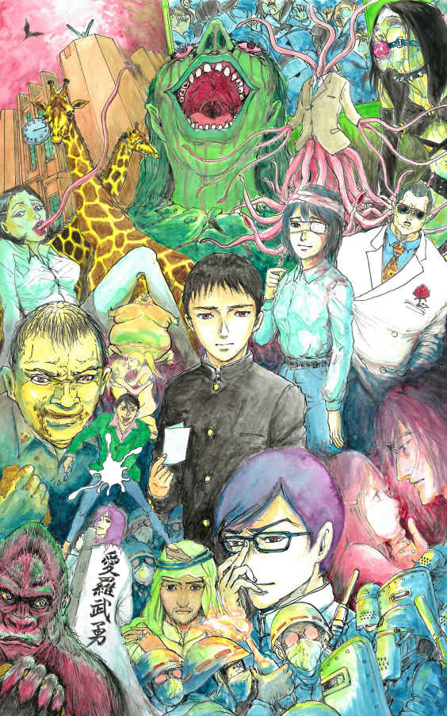
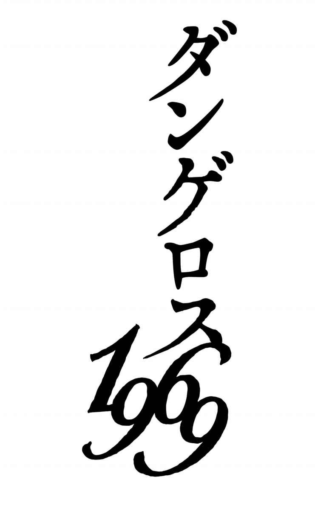

| ダンゲロス1969 | |
| 架神 恭介 | |
| nashi (2015) | |

【学生】
＜プロテスト魔人連盟＞
ユキミ......プロテスト魔人連盟所属の高校三年生。
ド正義克也......プロテスト魔人連盟議長の東大院生。
筑摩泰斗......あらゆる鍵を開ける能力を持つ芋のような顔の男。
タルジュ......アルファルド王国の王子。
芹沢清姫......股間露出が大好きな女学生。
あへんとたいま......いつもレズっている双子姉妹。
マゆゆ......巨大で全裸な女学生。
紅畑詩衣豚......肉鞠のような男。
蟻地獄たまこ......革命的魔人主義同盟から移籍した女学生。
＜革命的魔人主義同盟＞
アトランティス鈴木......革マジの書記長。武闘派。
鮎坂白夜......鈴木の右腕と目される人物。チャラ男。
金色城菜......革マジの古株。セクト内では穏健路線に属する。
阿鼻狂華......大学二年生。サディスト。
浅草ランドウ......革マジのシンパだが半ばメンバー扱いされている。ドラキュラのような姿の男。
乙無靴音......大学一年の女学生。両親の反対を振り切り上京してきた。
小竹真央......大学二年の女学生。
歩峰兄氏（アーニー）......アメリカから帰国して参戦した伊達男。小竹の幼馴染。
＜魔人インターナショナル＞
白金光留......魔人インターの議長。美人だが特攻服のようなものを着ている。
学習院哲人......幹部。合法部を取りまとめている。
【警察】
清水一物......魔人公安所属。常に下半身まるだしのまるだし刑事。
神乃太陽......魔人公安所属。常にうんこを食べている食糞刑事。
猫田川ゆかり......魔人公安所属。舌が長く伸びてぺろぺろ舐めるぺろぺろ刑事。
あんかけ......魔人公安所属。自家製オナホールを操るオナホ刑事。
ゴリラ......魔人公安所属。うんこを投げる。通称ゴリさん。
キリン......安田講堂攻城戦に投入される特殊車両。
姦崎姦......警備課課長。触手生物で触手刑事。
池松叢雲......魔人公安課長。英語の使い手。
烏丸昭......公安部部長。
星野夜......国の抱えるＥＦＢ能力者。警視庁に籍を置く。
牛午奴隷美......エリートだがドＭのメス豚刑事。
猿股義夫......牛午の副官。
不動......警視総監。
【その他】
石動賢三......鶯谷署防犯課の刑事。
灰賀ウェイ......岩波事件に詳しい記者。
金光輝男......野党第一党、共政党の新米政治家。

一九六八年五月 夕刻の都内某所――。
早稲田から僅かに外れた坂道の途上にて――、二人の魔人が再会する。
一人は肥大した筋肉を純白のアルマーニで包んだ男。帰路に着く女の背中に向かって呼びかけ、坂上の女が振り返った。地味で平凡な女の顔が現れた。あの時と同じ、輝きを失って久しい女の顔が――。男は太い葉巻を咥え直す。その先から紫煙がゆるりと立ち上り、夕焼けの赤へと溶けていく。
ティアドロップサングラスを着けた男の顔を女はじっと見ていたが、口の中に自然に湧き上がった彼の名を呪文のように唱えると、早足で彼の下へと急ぎ、その首を抱いた。
「アーニー......」
一年ぶりの再会に女の頬が上気する。
「どうしたの。突然いなくなって。......ちょっと、寂しかったんだから」
「ごめんな......。待たせた」
触れれば折れそうな女の白く細い身体を、男の筋肉質な両腕が優しく包み込んだ。胸の中の女が薄く微笑んだ。薄く......。
ティアドロップの陰で男の瞳に哀しみの色が微かに差して、彼は問う。
「一年間、どうだった？」
「......うん。たくさんあったよ、楽しいこと。アーニーも一緒なら、って、ずっと思ってたんだよ」
しかし、そこで女の顔が微かに曇り――、
「でもね。最近は、ずっと......。あ、ううん。けどね、こないだ鮎坂さんが、みんなでお味噌汁......」
「真央ちゃん」
男の穏やかな声が女の言葉を遮った。彼女はまだ、あの時の輝きから遠い。
かつて、彼女は気付いたのだ。素晴らしい時間は待っているだけでは訪れないことを。時代のうねりは絶好の機会を生み出し、若者たちの情熱は祭りを創り上げた。それに触れられた彼女は十分に幸運だったと言えるだろう。
だが、まだ足りない。幼き日に失った彼女の宝箱――。その鍵の在り処を知る者は、おそらく彼だけなのだ。
「初めて会った日のこと、覚えてる？」
男の言葉に、女はきょとんとした顔を見せたが、ややあって、頷いた。アルマーニの男は手を引いて、夕陽の輝く坂の上へと彼女を導く。女は目を細めて男を見上げた。逆光に照らされて男の表情は読み取れない。それでも女は男の手を強く握った。口から紫煙を吐き出しながら彼は言う。
「また一緒に遊ぼう。あの日のように――」
「うん」
女も男に連れられて歩き出す。素直に手を引かれるままに。
「真央ちゃん」
男はサングラス越しに彼女の瞳をじっと見詰めている。地味で平凡な女の顔に、憂いを含んだ笑みを向けて。彼は戦いを決意したのだ。
「俺はいつでも、君の味方だよ」
彼は戦う。恋した女の笑顔を取り戻すため――。
一九六八年五月十三日 十時二〇分
------ぶらり、ぶらーり。ぷるん、ぷるん。......ピッ！
男の揺れるそれから唐突に放たれた白き襲撃を反射的に避けた瞬間------。刑事、石動賢三は先程よりの違和感の正体にようやっと気が付いた。
この男、裸ではないか。
股間が、丸出しではないか！
「おおッと、これは失礼を」
顔を引き攣らせ硬直する刑事を前に、若い男はたははと笑うと両手を己の股間に伸ばした。先端からはいまだ白いものが糸を引いて伸びていたが、男は両手の人差し指を用いてまるで水飴でも掻き混ぜるかのようにくるくるとそれをまとめ、小さな白い塊を作り上げるとポイとそこらに投げ捨てた。男は再び、スイマセンね------と相手に謝してから、
「僕、早漏なんです」
薄く笑った。
＊＊＊
------特異行方不明者、灰賀ウェイを捜索中の防犯課の刑事、石動賢三はこの日、張り詰めた面持ちで渋谷区の街角に立っていた。閑静な住宅街だ。平日ということもあって一帯に人通りはほとんどない。穏やかな陽射しと爽やかな涼風に恵まれた五月のこの日であったが、彼の心境に春のうららかさは微塵もない。風体の上がらぬ四十男の石動は着古したスーツ姿で、足元には短くなった数本の煙草を落としている。もとよりヘビースモーカーだが、今日は些かハイペースだ。彼はこれから、さる過激派魔人学生団体のアジトへと向かうのだ。
とはいえ、任務の危険さに物怖じしているわけではない。今から彼が訪ねる組織------魔人解放インターナショナル、通称「魔人インター」は過去の行状から一応過激派に名を連ねてはいるが、トップが代替わりしてからは闘争方針が変わったのか、今では至って大人しい連中である。活動も主に合法デモや機関紙による広報活動だ。裏では何を企んでいるのか分かったものではないが、この渋谷区の片隅にある魔人インター合法部の事務所は堂々と看板を出し人目を憚らずに活動している。小さいながらも実績のある印刷会社の工場を間借りしているし、あちらも面倒を起こすつもりはなかろう。物騒な事態になることは、おそらくない。
そうではなく、彼の心を騒がせていたのは、今日から彼と合同捜査をすることになる相棒のことだ。警視庁公安部、それも魔人公安課からの出向------、石動の胃がきりきりと痛むのも当然であった。
彼の今の仕事は、特異行方不明者、灰賀ウェイの捜索である。灰賀ウェイというのは筆名で本名は灰賀映司というらしいが、筆名の方が有名になってしまったため、彼の職場でもこちらの方で呼ばれている。通常、捜索届けが出たところで、警察が積極的に捜査をすることはない。職務質問などでたまたま見つけても、親族に連絡するよう本人に促す程度である。
だが、灰賀ウェイは時の人であり、彼の特異な立ち位置からして背後に事件性が考えられなくもない。そこで、鶯谷警察署の石動が動いた。およそ半月の捜査の後、この件が魔人インター絡みであることを突き止めた辺りで、「ヤバイな」と思い始めたのだが、案の定、警視庁公安部から横槍が入った。おそらく公安部もこの件は独自で捜査を進めていたのだろう。公安部は秘密主義なので同じ警察官であっても彼らの実態はよく分からない。捜査の移譲を要求されたが、鶯谷警察署にも意地があるのでこれを突っ撥ねて、協議の末に合同捜査という形で落ち着いた。
となると、胃が痛いのは現場の石動である。公安部と所轄署の刑事の合同調査など異例の話だ。合同捜査といえば聞こえは良いが、実際は捜査の主導権を奪おうとしてくるに決まっている。公安には何らか独自の思惑があって、それが石動の捜査が進んだことにより支障が生まれたのであろう。万年巡査の石動と言えど、勤続二十六年、彼にも誇りがある。鳶に油揚げを掻っ攫われる訳にはいかない。それもよりによって、あの魔人公安に------。
公安部、中でも魔人公安の噂は彼の耳にも届いている。相当に無茶をするらしい。そもそも公安警察というのは、建前はともかく実際は超法規的組織だ。右翼、左翼、カルト教団、国際テロ組織など、国家の体制、秩序への敵対者と見做した者を捜査し、情報収集するのが主業務だが、彼らは盗聴などの非合法な捜査手段も平然と行う。そして、課によって右翼担当、左翼担当、外事担当などに分かれているが、その一セクションとして存在するのが公安魔人課、通称「魔人公安」だ。過激な魔人団体(極魔団体)を対象とする彼らは、当然、相当数の魔人警察官を抱えており、公安部の中にあっても特に手段を選ばぬ過激な連中と聞く。もっとも、相手が魔人では過激になるのも仕方ない面はあろうが。
そう、魔人------。人を超えし力に覚醒せし異能者たち。
歴史を振り返れば時代を動かしてきたのは常にこの魔人たちであり、明治維新後も軍部では高級軍人のほとんどを魔人が占めていた。海軍大将、魔人山本五十穴などが最も有名であろうか。しかし、敗戦により天皇が人間宣言を発し、巣鴨プリズンが魔人将校で溢れ返るに至り、無謀な戦争を主導した彼らの威厳も地に落ちた。人々の彼らへの尊敬視も、消え失せたわけではないが随分と淡いものになり果て、むしろ敗戦の反動により些か嫌悪の念さえ蔓延し始めていた。そんな折に起こったのが三年前の魔人女子学生リンチ殺人事件------「岩波事件」であり、その真相なるものを報じたのが当時フリーの三文記者であった灰賀ウェイである。現在の過激派学生団体の一連の動きは全てこの岩波事件を始源としているため、魔人公安がこの件に噛んできたのも想定しうる展開ではあった。だが、
「公安だろうがよォ、舐めた真似はさせねえぜ......」
短くなった煙草を足元で踏み潰しながら石動賢三はひとりごちる。同じ警察官だが、石動たちは公安部に対して良い感情は抱いていない。公安刑事は独特のエリート意識から、しばしば鼻持ちならぬ態度を取るし、非合法な捜査手法を好き勝手用いて平然としているところも気に食わない。
そんな魔人公安との合同捜査だ。果たして、彼の相棒となるのは如何なる魔人刑事か。どのような強面のエリートが現れようと譲る気は無い。捜査の邪魔はさせないし、よしんば己の目の前で非合法手段に走ろうものなら、然るべき機関に訴えてやろうとすら思っている。石動は初めから魔人公安に刺々しい感情を抱いていた。だが、現場に現れたその男を見て、彼の激しい気勢は様々な意味で削がれることになる。
「こんにちはー！」
明るい声と共に現れたのは、若い優男であった。ダークグリーンのジャケットに紺色のスラックスを穿いて、ノーネクタイ。年の頃は精々二十代中盤。風貌も爽やかで笑顔も人懐っこく、陰謀を専らとする公安の刑事にはとても見えない......。だが、その姿には何か違和感を抱かせるものがあった。何かがおかしい。何かが異常なのだ。間違い探しでもするかのように、石動は彼の頭からつま先まで視線でなぞっていくが、
「初めまして！ 山下一郎です！」
溌剌とした男の自己紹介に石動は慌てて視線を戻した。
「よ、よろしく......。石動賢三だ」
見え透いた偽名だな、と思いながらも石動は握手の手を伸ばした。秘密主義の公安は部署外の同僚に対してさえ本名を隠すという。上司から聞いたそんな話を思い出していた、その時であった------。
握手を求める石動に応えて、山下が右手を伸ばそうとしたが、彼の右手指が不意に奇妙な動きを見せた。柔らかく何かを握り込むように拳を作り、おもむろにそれを己の股間部へと運ぶ。石動の視線も股間へ泳ぐ。......おお、あれはなんだ！ 彼の股間部にて上下に揺れるあの見慣れた突起物は......！
------ぶるんぶるーん、ぷるん、ぷるん。
山下と名乗る男の右手がそれを包み込んだ刹那------、その先端からピッと白いものが飛んだ！ ここで冒頭のシーンに繋がる。男は裸だったのだ！ スラックスに見えたものは紺色に塗られた地肌に過ぎぬ。若き魔人刑事は下半身にボディペイントを施してまで己の一物を常時露出させていたのだ！
中年刑事は危うくも白き一撃を躱した。山下一郎はニタリと笑って早漏を謝したが、しかし、先の精子は明らかに石動の顔面を狙って放たれていた。何故だ？ なにゆえの顔射!? 読めぬ。公安の思惑が読めぬ！
「行きましょう、石動さん。お仕事の時間ですよ」
惑う石動に構わず山下が歩き出す。魔人インター事務所へと向かう彼を石動は必死に追った。魔人刑事の不気味な洗礼に戦慄を覚えながらも。あれきり一言も交わさぬまま、二人は事務所の扉前へと至った。「お、おい」。ベテラン刑事が何かを言いかけたが、山下なる刑事は躊躇いなくチャイムを押し、玄関を軽く叩いて「スミマセーン」と中に呼びかけた。「はーい」と明るい女の声が返ってきた。石動は慌てた。
「お、おい......！」
いくらなんでも......性急すぎる！ この若僧、何を考えている！ まだ何の打ち合わせもしてないぞ！ 捜査方針は？ 魔人インターへの態度は？ 何も決めてないじゃないか！
石動としては、今日のところは話を聞くだけで十分だった。灰賀ウェイについて何か知らないか尋ね、その反応に疑わしいところがあればガサ入れも検討する。だが、彼らはおそらくシロだろうから、今はむしろ信頼関係を築いて彼らから情報を......などと考えていた。それもこの若僧が強気に出て、脅したり怒鳴りつけたりしたら台無しである。いや、公安も馬鹿ではないだろうからそんな悪手は打つまいが、一言の相談もなしとは気に食わない。合同捜査などと言って、結局、公安は自分のペースで捜査を進めるつもりなのだ。「特高め、ふざけるなよ」。石動は苛立ち、小さく漏らした。俺はお前らの金魚の糞じゃない！
事務所の中から、ドタドタと大きな足音が響いた後、扉が開き、中から、ぬうッと巨大な男が現れた。その体躯に石動が思わず息を呑む。身長は二メートルを優に超え、全身が鎧のような厚い筋肉に覆われている。山下なる刑事も背は高い方だが、目の前に立つ男と比べるとまるで子供のようだ。相手もおそらく魔人。万一にと残しておいた武闘派要員であろうか。身体付きからして、かなり出来るはず。武道の嗜みもありそうだ。英語も使うかもしれない......。彼の体の脇からは、部屋の中の数名の男女の姿が見える。いずれも若い。魔人インターの学生たちか。中からは流行りの歌謡曲が聞こえてきた。
「何の御用ですかねえ」
口調こそ丁寧だが、大男は剣呑とした雰囲気を醸している。目付きは鋭く、来客を歓迎する様子はまるでない。刑事とバレている？？ しかし、一方で振る舞いは冷静だ。話の通じない相手ではなさそうだ。さて、この来客係に対し公安の魔人刑事はどう対する気か。石動が身を強ばらせて見守っていると、
「こんにちは！」
山下が挨拶した。------と、同時に彼の右手が大男の顎下に拳銃を押し付けていた。そのまま躊躇いなく山下は引鉄を引いた。------パンッ！ 乾いた銃声が轟き、血と脳漿が事務所の天井に散った。
「はっ!?」
目の前の状況に、石動は我が目を疑った。なんだ!? 大男の体がズルリと倒れる。石動の体が凍りつく。山下と名乗った刑事は流れるような足取りで事務所の中へと侵入。一呼吸の後、石動がもつれる足取りで慌てて後を追うと、事務所内では既に虐殺が始まっていた。
パンッ！ パンッ！ ピッ！ パンッ！ ピッ！ パンッ！
呆然としている若者たちに山下が無造作に右手の拳銃を向ける。ソファーに座っていた女の眉間に弾丸がめり込んだ。盆に茶を載せて運んでいた若者も血を吐いて倒れた。同時に山下の左手は己の一物を握り、そこから発せられた白いものが学生たちの顔面へと張り付いていく。被害者たちは顔を押さえてバタバタと転げまわった。両手の拳銃がリズミカルに火を噴く------。中には七人ほどの魔人が詰めていただろうか。それら全員を処理するのに三秒と掛かからなかった。何という精密射撃。恐るべき早撃ち。床で転げまわる魔人学生たちに止めの銃弾を撃ち込みながら、山下はズンズン奥へと進んでいく。
「ひッ、ひいッ」
血の海と化した事務所の中を半ば恐慌状態で掻き分けながら、石動が必死に山下を追う。なんだ、なんなのだ。これは......無茶苦茶じゃないか！ 無茶をするとは聞いていたが本当に無茶苦茶じゃないか！ 石動の足はもつれ、歩みは遅い。血溜りに倒れている男の顔を見る。カッと目を見開き、ぴくりとも動かぬ。表情には恐怖と困惑が刻まれていた。
「ホントに......しッ、死んでる......。なんで！」
勤続二十六年、こんな現場に生で立ち会ったことは未だかつてない。膝はガクガク震え、頭の中も真っ白なまま、山下が消えていった奥の部屋へと辿り着くと、畳敷きの小上がりを前にして、山下が背中を向けて立っていた。小上がりの上では三十過ぎの短髪の男がちゃぶ台の上にうっぷし、小刻みに震えている。薄く伸びた白いものが顔にべったりと張り付いて......。
「おッ、おおい！」
慌てて男を助けようとした石動の胸を山下の右手が乱暴に制した。そのまま彼の右手を掴み、壁へと石動の右掌を押し付ける。手が......壁から離れない！ 石動の掌に塗り付けられた山下の精液が、彼と壁面を強固に結び付けていた！ 動けない！
「お前、何をした......」
ちゃぶ台の上で、男はなおも震えている。顔の周りに赤いものが散っていた。両手の指先も赤く濡れている。顔面に張り付いたそれを取り除かんと力任せに掻き毟ったのか。その両手も今はちゃぶ台の上で震えるばかりだ。
「あれ、あれは......灰賀......灰賀ウェイだぞ......」
声を震わせて言った。だが、山下は黙りこくったまま、冷たい目で石動をちらりと見ただけである。
しかし、いよいよ灰賀の体がぴくりとも動かなくなったのを確認してから、山下は、
「可愛そうですね」
抑揚のない声で言った。
「僕たちが駆けつける前に、灰賀さんは奴らに殺されてたんですよ。酷いことしやがる」
一九六五年十月八日十三時二十二分
「本日の授業は中止、早退と決まりました。全員、集団下校し、帰宅次第、施錠した上で状況が落ち着くまで決して外出しないように。なお、これから挙げる地域の生徒は保護者の方と連絡が付くまで体育館にて待機して下さい」
担任の女教師が幾つかの地名を読み上げていく。午後一番の授業の初っ端、緊急職員会議に呼び出され、戻ってきた彼女の声は震えていた。緑谷中学校二年Ｃ組の教室内には懸念に満ちたざわめきが溢れ、お調子者の男子生徒からさえも早退措置への歓呼の声は上がらない。外界に蔓延する剣呑な雰囲気を生徒も教師たちも朝からピリピリと感じ取っていたのだ。
予兆は昨日の時点から既にあった。近隣住民のどことないよそよそしさ、視線に秘められた猜疑心、落ち着きのないおどおどとした仕草。何かがおかしい------、そのような思いを緑谷中学の関係者は皆感じていた。市内数カ所で暴動が発生したという知らせが届いたのは、昼休憩中、給食のカレーシチューを食べている時であった。
廊下の同僚に呼びかけられた女教師が再び教室を出て行く。「グループを作り、準備が出来た生徒から順次帰宅するように」。そう言い残して。
「ユキミくん------」
集団下校のためのグループ分けに騒然とするＣ組教室の隅、後ろ側窓よりの席に、他の机からは二メートル以上も離されて座っていた少女が立ち上がり、小さな声で少年の名を呼んだ。丸眼鏡におかっぱの、素朴で冴えぬ容姿の娘である。彼女は不安と後悔を痩せぎすな顔に浮かべて、ユキミと呼んだ少年へと近付き、声を潜めて言った。
「究極的根拠はなおも定かではないが、現在学外にて発生している憂慮すべき懸案事項------これを仮にＸとするならば、伝聞情報の分析の限りにおいて、Ｘの生起過程もしくは生起の瞬間に、我々のかつての実践行為------これをＹとすると、ＹとＸの間に一概に否定しきれぬ相関関係が存在することを通時的側面から検討し、我々はその可能性の存在を考慮、検討する必要があると考える」
少女の前に立ったユキミの顔も俯き加減であったが、それでも彼は彼女を励ますように言った。
「今の問題意識には、実存的観念から見ても非常に多くの真剣なる検討課題が含まれていると感じている。然るに、貴方の仮定するＸとＹとの相関関係を立証するための静的資料は極めて限定されており、現状では客観的事実に基づく事実認識との混同は回避されねばならず、早計に現象間の相互関連を定立すべきではない。二項間の連関の検討は貴方の心的状態の常態からの逸脱を促し、潜在的不安を顕在化させる可能性が高く、心性の認識作用における過程を光の反射に喩えるならば鏡面を徒に濁らせる曇りともなろう」
だが、少女はなおも怯えた表情で不安を訴える。
「複雑化する現代社会の様相を正確に把握し分析する過程において静的資料の重要性は痛感すれども、いみじくも氏が提起したように件の懸案事項Ｘは実存的観念からも検討されるべきであり、筆者にとっては全人格的な危機とすら感じている。連関の峻拒は認識作用における危機意識の阻害としてむしろ位置付けられ、なおも究極的根拠の不在は認めざるを得ないところであれど、個的形態で顕現する事項各々への全没入的検討は貴方の提言する普遍的回答よりもより高い優先度を示すものと考えられる」
......と。要するに「私たちのせいかしら」「分からない。今は気に病まない方がいい」「でも、心配だわ......」、彼らはこう言っているだけに過ぎないのだが、この異様、かつ、不明瞭極まりない言語交流は一体何事であろうか。だが、これこそが少女------、魔人岩波文子のコミュニケーション阻害能力『バベル』に他ならなかった。
やや複雑な魔人能力である。彼女のこの能力は主に発話の際に影響する。効果範囲は彼女からおよそ半径二メートル。この範囲内にいる発話者の発言を、『バベル』は自動的にランダムな諸外国語へと翻訳する。そしてさらに、彼女の魔人能力によって生まれた、知能は高いが頭が固く日本語表現のセンスに著しく難のある老学者------姿形はなく能力の効果発生過程においてのみ存在が推定される------の手によって、それらの諸外国語は日本語へと再翻訳される。この二重翻訳作業は瞬時に行われ、その結果が発話者の口から吐き出されるのである。要は彼女の周りでは日常会話が著しく面倒となる能力であった。
如何なる弾みで彼女がこのような厄介な能力を身に付けたのかは分からない。小学六年生の時に背伸びして手に取った一冊の翻訳学術書が原因かもしれないが定かではない。ただ一つ言えるのは、面倒には違いないが、それでも日常生活に然程の問題は生じなかったということだ。右の奇々怪々なる会話も、実際、周りの者は慣れた。初めて彼女に接する者は例外なく困惑するが、家族もクラスメートも今では普通に彼女と会話可能だ。魔人能力はそれほどの重荷ではなかった。岩波はこう見えて剽軽な娘で、『バベル』を巧みに使った一人漫才ネタなども家で密かに考案していた程である。
しかし、そんな彼女であったが、授業などでは流石に困ってしまう。右の会話はまだある程度具体的な話なのでマシな部類だが、少しでも抽象的な会話になると解読難易度は大幅に上がる。学問には抽象化作業という面もあるため、授業中の彼女の発言はほとんど意味不明である。ゆえに彼女は授業中は筆談を余儀なくされ、周囲へ影響を及ぼさぬよう二メートル以上、周りから机を離されていた。
クラスメートや家族も、決して彼女を邪険に扱ったりはしない。日常会話だって普通に交わせる。だが、二メートルという距離が微妙だった。二メートル以内に近付かなければ普通に発話出来るのだ。勢い、周りは彼女から少しだけ距離を置くことになる。岩波の実際の生活に特段の影響はない。友情も家族愛も彼女はきちんと享受している。それでも岩波文子は常日頃微かな疎外感に悩まされていた。時折、不意に浮かべる彼女の沈んだ表情にクラスメートの一人の男子が気付いていた。
二日前------、十月六日は岩波文子の誕生日であった。誕生日プレゼント......というわけでもなかっただろうが、その男子は昼休みに彼女に近付き、小声でちょっとした悪戯を提案した。緑谷中学の敷地を除く、区内全域を赤い線で囲んだ地図を折り畳み、彼女に渡したのである。「ビックリさせてやろうぜ」。そんなことを例の異様な文体で語り、少年は無邪気に笑った。少年は魔人だった。地図所有者の能力範囲を変更する奇妙な力を持っていた。この地図を手にした岩波文子は区内全域に『バベル』を及ぼすことができる。
思った通り、区内の各所で言語的混乱が生じた。それは、愉快で滑稽な噂話となって幾つか二人の耳に届いた。少年と少女は明るく笑ったが、そのうち、「商談が破談になった」だの「救急車を呼んだのに通じなかった」だのと笑えない話も聞こえてきて、少年は慌てて地図を回収した。
少年と少女は------、ユキミと岩波は思いがけず大事になってしまった悪戯から目を逸らして、「若年による思慮の欠如を原因とし、結果として惹起された事態の責任性を痛感するが、この問題の発生原因を余人の耳に触れることは重大な問題性を孕むと結論する（今日のことは二人の秘密にしよう）」と誓い合い、その日は別れた。それで終わる話のはずだった。あの時以来、人々が微かに醸している一種異様な雰囲気に気付きながらも、ユキミも岩波も自分たちの悪戯を思い出そうとはしなかった。あれは少年と少女の、ほんの一時の可愛らしい悪戯に過ぎないのだ。二人が求めたのはいつもと違うちょっとした体験。ほんの少しのドキドキと興奮だった。彼らは束の間それを楽しんで、僅かな罪悪感を残し、それを終えた。終えたのだ。
「ユキミ、行くぞー」
教室のあちらの隅から彼を呼ぶ声が聞こえてきた。ユキミと同じグループで帰宅する面々だ。少年は少女に別れを告げる。岩波は警戒指定区域に家があるため、保護者が来るまで教師と一緒に居残りだ。数歩進んで彼は振り返り、「きっと大丈夫、心配いらないって」、普通の日本語でそう言ってから、仲間を追って小走りに廊下へ向かった。Ｃ組の教室を出ると、廊下では担任の女教師を含む数人の大人たちが話し合っていた。「保護者の一部から事実確認の電話が------」「市民数名が何かを要求して裏門に------」「警察を呼ぶべきでは------？」。そんな声が漏れ聞こえてきたが、ユキミは仲間を追って走った。
廊下を出て少し進むと制服の警官とすれ違った。何やら難しい顔をしていた。生徒にＣ組の教室の場所を尋ねている。教えてあげようかとも思ったが、お節介な気がしてやめた。仲間に追い付き共に廊下を歩いた。しばらく歩いた。唐突に聞こえてきた。------廊下に響く銃砲音と、男の叫び声が。
「岩波文子ッ------！」
ユキミがバッと背後を振り返った！
何かが起こっていた。一緒に歩いていた友人たちは恐慌状態を起こし一斉に前へと駆け出した。だが、ユキミは一人、逆へと走った。「逃げろ」と叫ぶ本能を押し殺し、教室目指して走っていた。彼女の名を叫ぶ声を聞いてしまったから------。
廊下では女教師が腰を抜かしてへたり込んでいた。同僚の男性教諭たちも目の前の状況に呆然としたまま立ち尽くしていた。生徒たちはやはり腰を抜かすか、赤子のように身を丸めて泣きながら転がっている。皆が静止する空間を、ユキミは一人駆け、教室の中へと身を踊らせて、叫んだ！
「やめろ！」
だが、その瞬間。教室の床に倒れ、口から赤い血を流していた岩波文子の小さな身体に、警官が二発目の、止めの銃弾を撃ち込んだのである。少女の身体がビクンと弾んだ------。
......少年と少女が求めたのはいつもと違うちょっとした体験。ほんの少しのハラハラとドキドキだった。
＊＊＊
裁判の結果、少女殺しの警察官は無罪となった。市民はこの結果に納得したのだろうか？ 否、むしろ彼は決断的行為の実践者として讃えられたのである。千葉市全域を混乱に陥れた魔人を排除し、暴動の過熱化を未然に防いだ英雄として。
無論、法的措置を踏まぬ少女の銃殺を問題視する向きもあったが、当時の状況の深刻さの方が重視された。千葉市内の一区で当初発生した言語的障害は二日の時を経て千葉市内一帯まで広がっていたのである。市民はこの状況の世界的拡大を恐れて「感染源」探しを白熱化させ、一種の魔女狩り、集団ヒステリーへと陥っていたのだ。かの警察官は「世界滅亡の危機を回避したヒーロー」とさえ一部からは見なされた。
だが、岩波文子の『バベル』は僅か射程二メートルのコミュニケーション阻害能力である。ユキミの地図により、その射程が一区まで拡大されたとはいえ、それはたかだか二時間程のことに過ぎない。では、なぜコミュニケーション阻害は一区の域を超えて市内全域にまで拡大したのか？ ユキミの能力が暴走したのか？ そうではない。事実はもっとシンプルだった。
あの時、『バベル』の影響を受けた彼らは、あの二時間の内に起こった不可解な現象を他者へと伝えようとした。「自身の発話が外国語に翻訳された後、難解な日本語に再翻訳されて発せられた」事実を彼らは何とか言語化しようとした。だが、この複雑な能力の正体を見抜き、正確に言語化できたものは誰一人いなかったのだ。彼らの必死の説明は要点を得ぬまま、無責任な噂と不確かな推測を伴って蔓延し、混乱は拡大する。混乱した彼らの発話は更なるコミュニケーション阻害をもたらし------、つまり、『バベル』の能力はあの時以降、人々自身の手により拡大再生産されていたのである。
混乱の渦中にある彼らはその時、本当に信じていた。この言語的混乱はいずれ世界を飲み込むだろうと。訳の分からぬ会話が街中に溢れ返る中、疫病現象の感染源たる少女の噂が広がっていく......。そして一人の勇気ある警官が決意し、行動に出た。
岩波文子の射程は僅か二メートル。------この事実が世に明かされるまで人々はなお数ヶ月の時を待たねばならない。フリーライター、灰賀ウェイの登場を。
一九六八年五月一五日 十七時四十分
一寸先も見通せぬ濃霧の中------。遠く、朧に光る光源を少年は目指す。
けれど、視界は曖昧、足元は覚束ず、必死で霧を掻き分けても光源に近付けている気がしない。周りを見ても誰もが同じような覚束ぬ足取り。やたら滅多に進み、何かにぶつかり、苛立ち、破壊し、殴り合う。そのうち、足は一歩も進まなくなり、目指すべき光源を見失う。
三年間、少年は必死に霧を掻き分けてきた。だが、目の前に景色は現れず、前へと進む足取りも重くなる。足を止めて暴れる彼らが羨ましく思えてくる。その衝動に身を委ねたくなる。前へ進まねばならぬと自覚し、理性はせめぎ合い、その末に彼は一人の男に希望を託した。男は濃霧の中を淀みなき足取りで前へと進む。彼にだけは道が見えているかのように。男の名をド正義克也といい、少年の名はユキミといった------。
＊＊＊
「萎縮する必要はない。見習いとはいえ、キミはもう僕たちの仲間なのだから」
ド正義克也が扉を開いた。新たなる世界への扉を。東大安田講堂三階、会議室の扉を------。
夕時の赤い陽が放たれた扉から漏れてくる。だが、萎縮するなと言われても難しいだろう。ユキミが今足を踏み入れんとしているのは、東大を本拠地とする魔人学生たちの巣窟なのだから。
細身ながら引き締まった体躯を持つユキミは、現在高校三年生。小麦色に焼けた肌を持ち、清潔感のある短髪の彼は、パッと見は爽やかなスポーツマンに見えた。高校生にしては大人びて見える風貌だが、じっと見ていればむしろ幼さの方が目立つかもしれない。実際、彼は幼かった。心中の葛藤を御する術を知らぬ程度には。それでも彼は希望を抱いていた。東京大学プロテスト魔人連盟------。新しい活躍の場が彼に道を示してくれることを。プロ魔連こそが混迷する学生運動に一条の光をもたらす存在であることを。だが、そこに一歩を踏み出した彼を最初に迎えたのは異様なる光景であった。
顔だ。巨大な女の顔だ。顎先から頭頂まで実に二メートル超はあるだろうか。それが会議室の奥にどんと鎮座している。無論、生首ではない。首のあたりを見ると床が円形にぶち抜かれている。おそらくは一階、二階を貫通して、この会議室に首だけ出しているのだろう。女------といったが、長い髪や睫毛などからそう判断しただけであって、その表情に女学生の可憐さなどは微塵もなく、とろんと濁った瞳はひん剥かれ、口はだらしなく開け放たれて際限なく床に涎を垂らしている。黒い毛髪もよじれ脂ぎり、べたりと頭皮に張り付いていた。洗顔という概念がないのだろうか。顔全体は垢により黒ずみ、不潔な異臭を放っている。この巨大な首が会議室全体の五分の一の空間を占めていた。
室内には無数のアジビラが山と積まれている。他にゲバ棒やヘルメットなど戦闘的な備品も幾つか見えたが、食べ残しのパンなどもあり仄かな生活感を感じさせた。さらに、学生たちが持ち込んだものであろう薄汚れたソファーが置かれ、そこにどっぷり身を沈めているのが、鞠のように肥えた、これまた巨大な男であった。三メートルに及ぶ巨大な体躯。だが、それよりも目を引くのが異様に短い両手足で、僅かに十センチ程しかない。パッと見は巨大な球状の肉の塊であり、それに申し訳程度の四肢と頭が乗っかっている。その包容力溢れる肉体とは裏腹に男の眼光は鋭く、訝しむような瞳がユキミを見据えた------。
その肥満体の目の前に置かれたテーブルの上には二人の全裸の少女。寝転んで互いの身体を絡み合わせている。一見小学生女児にしか見えぬこの二人だが、これでも東大生だという。ポニーテールの髪型も整った容姿も、僅かに隆起した乳房の形まで丸きり同じだ。一卵性双生児というものであろうか。それが互いの陰部に顔を埋めて、ちゅうちゅうと股間を吸い合っていた。二人はちらりと横目に見て新入りの姿を認めると、卑猥なる姿勢を解いて机の上で向き合い、ぺたりと座って、今度はユキミの方を見つめながら互いの口を吸い始めた。二人の股間の方が何やらもぞもぞとしているのは、伸ばした指先で相手を刺激し合っているためであろうか。
これら奇怪なる四名の姿を前にしてユキミの足は竦んだが、とはいえ、彼らに比べると他の面々は大人しいものだ。彼をここへ案内したド正義克也にしても、いかにも優等生然とした眼鏡の東大生であるが、そのレンズの奥の瞳は穏やかで優しい。さほど神経質な性質でもないらしく、特徴的な白ランには皺が寄り、ミディアム七三の髪型もやや崩れている。ただ、瞳にしろ佇まいにしろ、デスクの上に腰掛けた彼の姿は多少の疲労感を纏わせていた。
他には、褐色の肌を持つ端正な顔立ちの美青年が壁面に向いて立っている。彼は懸命にアジビラを手繰っており、新入りの姿を見ても一瞥したきり、すぐに自分の作業に戻ってしまった。彼のことはユキミも知っている。------タルジュ。中東に位置する砂漠の国、アルファルド王国からの留学生であり、東大の現状を------特にプロ魔連の現状を作った、ある意味キーパーソンだ。
そして、部屋の隅でパイプ椅子に腰掛けている黒髪ロングヘアーの清楚な女性。彼女は手元の書籍から顔を上げて、切れ長の目でユキミを見遣ると、
「あら------」
声を掛けてきた。ユキミも応える。
「たまこさん」
「知り合いかね？」
克也が尋ねたが、その途端、彼は何やら思い出したらしく、すぐに、
「そうか。二人は革マジの------」
と呟いた。女とユキミが頷いた。そして同時に会議室の空気も変わった。巨大な顔、肉毬の男、褐色の魔人が、僅かな惑いを伴う視線で少年を見詰めた。肉毬の男が克也に問う。
「克也さん------、新入りクンは元革マジなのかい？ 大丈夫かねぇ......」
「問題ないさ、たまこさんだって問題なくやってるだろう」
「そりゃま、そうだろうけど、ねェ」
緊張感に耐えかね、ユキミはごくりと口中の生唾を飲み込んだ。信頼は......日々の活動を通じて地道に培っていかねばならない。
ユキミに向き直り、克也が謝した。
「すまんな、ユキミくん。けど、紅畑君の懸念も仕方ないところはあってね」
肉毬の男は紅畑というらしい。
「革マジは......その、君の古巣にこう言うのもアレだが、彼らはやや無茶をする。今はデリケートな時期だからね」
「構いませんよ。僕はもう抜けた身です」
革マジ------、革命的魔人主義同盟をユキミが抜けたのは一年も前のことである。
入ったのが一年半前だったから半年ほどの活動となろうか。武装闘争を専らとする過激派セクト、革マジの闘争方針はかつてのユキミには眩しく見えたが、機密保持上の問題か、高校生である彼は見習いのような立場に据え置かれ、武力闘争には参加できず、主に雑用や資金調達に駆り出された。だが、彼が抜けたのはそのような小間使いに嫌気が差したためではない。革マジの闘争にビジョンを見い出せなかったからだ。
「さて------」
ソファーに座るよう克也が促した。ユキミは多少戸惑いながらも、肉の塊------紅畑詩衣豚の向かいに座った。肉に押し潰された紅畑の表情は読めない。目の前では全裸の少女二人が互いに抱き合い、相手のうなじを舐め合っている。
「ユキミくん。メンバーへの君の紹介は追々行おう。......今ここにいるメンツで全員というわけでもないからね。先に基本的なことを確認しておこうか。君ももちろん知っていると思うが、僕たちプロ魔連の最終目標は」
------学園自治の確立にある。
そう告げたド正義議長に応え、ユキミが頷く。だが、
「あの時、岩波文子さんが------」
と、続けた克也の言葉を耳にした瞬間、彼はぴくりと体を強ばらせた。そして、その微小な変化を褐色の魔人タルジュが捉えていた。
克也が続ける。
「------彼女が権力機関の暴力に倒れたのも、容易に官憲の侵入を許し横暴を看過した学園側の管理体制の問題と言える。だが、学園自治とはただ官憲の侵入を物理的に阻止するだけのものではない。それでは本質的な解決には至らない」
滔々と淀みなく紡がれる言葉に周りの魔人たちが静かに頷く。そして、克也が問うた。
「ユキミくん。岩波事件の根底にあったものは、なんだと思う------？」
「......恐怖、ですか」
その回答に満足したらしく、ド正義議長が小さな笑顔を見せる。ユキミはあれから三年間、あの事件について孤独に思索を巡らせてきたのだ。
「そうだ。恐怖......と言ってもいいし、猜疑心と言ってもいい。蔑視も含まれていただろう。僕たち魔人への潜在的な警戒心が、あの事件の引き金となった」
「墨塗り教科書を知っているだろう？」
と、ここでタルジュが横から口を挟んだ。戦前の教科書に描かれた魔人優位主義や魔人軍国主義に関する記述を軒並み塗り潰したあれのことだろうか。
「ＧＨＱは天皇を神から人へと引きずり下ろしたが、同時に魔人の権威失墜も狙ったわけだ。軍部の中核を担っていたのは魔人ばかりだからな」
「ま、戦前の記述もどうかしてたと思うけどねェ。魔人サマ、魔人サマって。魔人の将校が一人でガナルカナルの鬼畜米兵を皆殺しにするような夢物語ばかりでさァ。魔人一人で戦局がどうこうなるわけねェっての。......つっても、最後は一人の魔人が、ある意味、戦争を終わらせたわけだケド」
紅畑が低い声で皮肉げに言った。
第二次世界大戦において、日本が無条件降伏ながらも天皇制を護持しえたのは、アメリカ側が日本本土決戦のリスクを重く見たことが一つ。それと終戦間際、日本で発見された一人の少女の魔人能力を恐れたためと言われている。
「ともかく、世間の魔人を見る目が一変したのは戦後からだ。紅畑君の言う通り、戦前の魔人賛美に行き過ぎがあったのも確かだ。その揺り戻しだろうが、今の学校教材では戦前の軍部と魔人が一緒くたにされて否定的な記述をされる傾向がある。魔人に対する社会の有形無形の圧力がこのような状況を招いている」
克也の言葉にもやや熱が入ってきた。
「学校教育は全ての礎だ。この状況を看過すれば、我々の息子、孫の世代が、社会の影響を受けた偏った教育に晒されて、いずれ第二、第三の岩波事件が起こるだろう。学園は外部の盲目的悪影響を遮断し、社会における魔人の有り様について中道的な立場から学び手を導かねばならない。そのために必要なのが------」
「学園自治------ですね」
「そうだ」
克也が力強く頷くと、向かいに座る紅畑が短い左手を懸命に掲げて「そうだ！」と叫んだ。目の前の双子姉妹------姉のあへんと妹のたいま------も擦り合わせる股間の動きを止めることなく「そうだぁ〜！」と嬌声を挙げる。横ではクールに見えたタルジュまでもが拳を固めて「その通り！」と叫んだ。さらには部屋の奥に安置された巨大な女の首が不意に動き出して、頬の半ばまで裂けた口を思い切り開き、
「ガバガバ！ ガバガバガバー！」
と大音声を発したので、ユキミはぶるりと身を震わせた。声は思いの他、高くて可愛かった。そんな少年の不慣れな様子を見て、たまこがくすりと微笑んだ。
「ゆえに僕たちは学園自治の理想を掲げ、デモ行進やビラ撒き、オルグなど地道な活動を通じて社会に訴えかけてきた」
克也が言うように、実際にプロ魔連の活動は合法的なものがほとんどだ。ただ、いま彼らのいる安田講堂は武力により不法占拠したものである。
......と、ここまでは運動家特有の滔々とした口ぶりであった克也だが、一呼吸置くと、一転して声音を和らげ、気さくな雰囲気を出して言った。
「------で、だ。ここからは初耳だと思うが、実は学園自治法の法制化が水面下で進められていてね」
「えっ」
「噂くらいは聞いたことがあるだろう？」
それは、確かに聞いていた。聞いていたが驚かざるを得ない。まさか本当に本当だったとは。ユキミは慌てて尋ねる。
「じゃ、じゃあ。これからは------」
「そうだね。学園自治法の法制化に向けて僕たちも活動していくことになる」
ユキミの顔がパアッと明るく輝いた。実際、これは福音に他ならない。ついに、道が示されたのだから------。
これまでの魔人学生運動は五里霧中の有り様であった。岩波事件の不条理を受け、学生たちは、------特に魔人学生たちは、自分たちが今何か動き出さねばならないという焦燥感に駆られた。駆られて立ち上がった。闇雲に動き出した。......だが、それは光のない空間に放り出され、真っ暗な淀みを掻き分けるようなもので、一体、自分たちは何をすべきか、そもそも現状の問題点はどこに起因しているのか、何も分からなかったのである。革マジも見目華やかな武装闘争を繰り広げたが、目的意識の薄いそれは内部から見るとまるで乱痴気騒ぎのようなもので、ユキミは革マジを抜けた。
そんな混迷状況の中、唯一明確なビジョンを持って訴えた学生が一人だけいた。東大大学院博士課程に在席するド正義克也であった。「学園自治」というアイデアには多くの魔人学生が膝を打った。俺たちが目指すべきものはこれだったのだ、と------。ユキミもその一人である。
それでも「学園自治の確立」は未だぼんやりとした目標に過ぎなかった。何をどうすれば学園自治に至るのか。デモやビラ撒きはどのような形で理想に繋がるのか？ 何もはっきりとしたことは分からなかった。けれど法制化の話が出たことで、彼らの活動目的はいよいよ輪郭を際立たせたのである。
「だから、これからは世論を味方に付けていかなければならない。これまでの学生運動ではデモ行進にしても、とにかく目立てばいい、主張が伝わればいいと言ったところがあって、実力行使に出ることも少なくなかった。六六年の国会議事堂突入などはその際たるものだろう」
かつて魔人学生たちのデモ隊が、警備の警官を押しのけて国会議事堂へと押し入ったことがある。ビジョンを掴めぬ学生たちの盲目的実力行使であったが、その無計画性ゆえに相手側も油断していたのだろう。学生に議事堂へ押し入られ、警察は大恥をかいた。
だが、突入したからといって明確な闘争指針が天から降ってくるわけでもない。議事堂の中で、学生たちは悩んだ。挙句、二人一組のペアを作り、組体操の〝さぼてん〟を為して、主張を叫びながらジグザグ進行で議事堂内を駆け回ったのである。そうして、ひとしきり駆け回った後で、彼らは何かをやり遂げたような顔をして互いにハイタッチし、おうちに帰った。翌日の朝刊一面にて新聞各社は「なんだかよく分からなかった」とこれを報じている。明確な理論も指針も持たぬままに激発した若者たちのエネルギーの現れであったが、大恥をかいた警察は、以降、本気になった。
「あの時代の活動は牧歌的なものだったから社会も笑って許してくれた。だが、今同じことをすれば国家転覆だのクーデターだのと派手に書き立てられて世論を完全に敵に回してしまう。法制化もおじゃんだ。今はとにかく合法活動に徹し、僕たちの印象をこれ以上悪化させないよう努めなければならない」
克也の弁にユキミは神妙な顔をして頷いた。となれば......確かに今、革マジは危険である......。
国会議事堂突入以降、学生たちの活動は激しさを増していった。若いエネルギーを持て余した末の過激化という面もあったが、本気になった警察側が力ずくで彼らを押さえ込もうとした反動という面も強い。デモ行進など届出を出した合法の活動であっても、行進する学生たちの両脇を機動隊員が囲んで並列行進し、市民から見えないように膝蹴り、エルボーなどを学生に叩き込む。顔を殴るとすぐ分かるので狙わないが、腹やら足など、女学生であっても真っ青に変色するまで殴られる。学生たちがシュプレヒコールで主張を叫んでも、やはり並列で付き添ってくる機動隊指揮車が巨大スピーカーで「デモ行進通りまーす」などと無益なアナウンスを繰り返して学生たちの声をかき消す。周囲では私服の公安刑事が写真をパシャパシャと撮って参加者を特定していく。
これで多くの学生たちは無力感に囚われて運動から消えていったのだが、一方、正攻法では何も得られないと悟った学生たちは、機動隊の横暴に暴力で立ち向かった。最初は拳を振るっていたが、いつの間にやらそれが角材や鉄パイプに変わり、これはゲバ棒と呼ばれるようになる。魔人能力も小規模ながら闘争に用いられ始めた。
すると警察側もさらに本気になる。デモ行進で暴力を振るった学生を街角で見つけると、尾行し、召集をかけて多数で取り囲み、相手が逃げ出そうとしたら囲んで警棒で殴るのである。学生たちも知恵を付けてデモや集会にはヘルメットやマスクで顔を隠して参加し始めたが、一般人から見ればあまりに異様な姿であり、警察との武力衝突もあって彼らのイメージを悪化させた。
そして今では、学生運動家たちは各セクトごとにどこかの大学を拠点として、校舎を違法占拠、アジト化しているのである。校舎奪還のために大学当局は機動隊を招き入れ、学生との間で激しい攻城戦が頻発した。さらに公安の工作により各セクト間に不和の種が蒔かれ、彼らは学生同士での粛清------内ゲバ------を繰り返し、一層世間から嫌悪されていく。無道ながらも巧みなる公安の戦術であった。
そして、学生運動が暴力化の傾向を強める中、最も武力闘争に傾倒していたのが革命的魔人主義同盟、通称革マジである。特に革マジ書記長のアトランティス鈴木などは「暴力による権力機関打倒と魔人解放」を堂々と公言していた。が、宣言の割には明確なビジョンなどなく、とにかく警官との悶着が起これば集団を率いて勇んでそこに飛び込み、好き勝手に暴れるだけである。
ユキミも岩波事件のことを思い出すたびに、権力機関への激しい怒りに駆られるし、暴力的衝動に身を委ねたくもなるのだが、しかし、彼の理性が刹那的暴力の無益さを訴えていた。それは何の解決にも繋がらない。革マジのような派手なだけのお祭り騒ぎにユキミは留まっていられなかった。------彼の目の前で岩波文子は殺されたのだから。
「あの......。革マジは、法制化に対してどのような方針なのでしょうか」
かつての古巣を思い、ユキミが心を痛めながら尋ねた。ちらりと横目でたまこを見ると、彼女の瞳にも陰鬱な翳りが差している。
「実は、まだ彼らには伝えてないんだ。彼らは僕たちの目標設定も闘争方針も手ぬるい生ぬるいと日頃から噛み付いていたし、面と向かって、法案制定まで自重してくれ、と言っても鼻で笑われるだけだろう。仲間の一人が折衝を行っているが......。難しいと思う。ただ、知っての通り、彼らも今は大人しいものだから」
「不思議な話だよねェ。アレだけ血生臭かったあいつらが、ねェ」
と、紅畑が表情の読めぬ顔で呟く。たまこが、
「鈴木さん、最近、モチベーションが落ちてるみたい。アジトにもあまり顔を出してないようだし......」
少しだけ、寂しそうな顔で言った。一方、紅畑は「ほう、そりゃあいい」と嬉しそうな声を出して、
「実際、このまま自然消滅してくれるなら助かるねェ......！ 今の状況ではアイツラは百害あって一利なしだ。今更、合法闘争路線に変更なんて無理だろうしねぇ。ハッ、それにしても情けない！ 鈴木も、革マジの連中も。あれだけ大口を叩いておきながらビビって引きこもってる鈴木もだし、他の奴らも結局は鈴木の金魚の糞だった、ッてことだよねェ？」
肉で潰れた顔面に冷酷な笑みを浮かべた。ユキミも古巣をそこまで言われると流石に辛いものがあるが、見ると、隣のたまこはさらに沈んだ表情を浮かべている。
すると、突然に奥の巨大な女の生首が大口を開けた。
「ガバガバ！ ガバガバー！」
大音声を発する！ だが、一体何を言っているのか!? 訳も分からずユキミは反射的に身を震わせたが、その言葉にたまこは躊躇いながらも、にっこりと笑顔を作って、
「ありがとう、マゆゆ......」
生首に対して礼を述べた。あの女性（？）はマゆゆと言うのか、意外にも可愛らしい名前だな......、などとユキミが思っていると、今度は紅畑までもがバツの悪そうな様子を見せて、
「悪かったな、たまこさん。それと、新入りクンも。少し言い過ぎた」
と、小さく頭を下げてくる。「い、いえっ」と慌ててユキミも応えた。
ユキミに一つ分かったことがある。マゆゆさんはどうもかなり気の利く女性なのだな、と。しかし、この人たちはどうやって意思疎通しているのか......。ユキミが不思議に思っていると、そのマゆゆが先程と何ら変わらぬ大音声で、
「ガバガバ、ガバガバー！」
再び叫び、克也は得心したかのように頷いた。
「マゆゆ君の言う通りだ。革マジの方はとりあえず小康状態と言える。......鈴木君のこれから次第だが。それよりも、むしろ危険なのは魔人インターの方かもしれない。まだハッキリしたことは分かっていないが、どうもメンバーの何人かが殺されたらしい。とはいえ、あそこのトップは白金君だから------」
滅多なことはしないと思うのだけれど、と彼は漏らす。渋谷区の魔人インター合法部事務所での虐殺事件は未だ第一報が報じられただけであり、その詳細は彼らの耳に入っていない。彼らが被害者の名を正確に知るのはもう少し後のことであり、そして、加害者の真の名を知ることになるのはさらに先の話である。
＊
ユキミの顔合わせを兼ねた定例会議の終了後------、東大構内を去る新入りの後ろ姿を窓から眺めながら、肉毬の男が尋ねた。
「タルジュさん。どう見る？ あの新入り」
「熱血漢だな」
アジビラに目を落としたまま、褐色の魔人がボソリと答える。
「頭は切れそうだ。状況を理性的に把握できている。......だが、若い。情熱と理性の狭間で揺れ動いている。つまり危なっかしい。岩波文子との過去も、元革マジという経歴も軽視すべきではないぞ、克也」
一八九一年初夏、帝政ロシア北部------。
集落が一夜にして全滅した。
災害の発生地点と思しき箇所から半径約十キロメートルが被害に遭い、一帯は家屋や動植物は無論、大気すら氷結していた痕跡を残していた。住民三百十名が一人の例外もなく落命。死因は凍死。
政情は混迷し、民衆不安が高まり、テロの頻発する時勢の中。この事件に言いしれぬ危機感を抱いたロシア皇帝は徹底調査を命じ、三ヶ月後、現場から然程離れていない都市に潜伏していた十五歳の少年を秘密裏に射殺。事件は一旦幕を閉じた。この事件の詳細は遅れること二年、世界へと伝わる。少年は『ＥＦＢ』なる大規模凍結能力を持つ魔人であり、一都市破壊級能力者の存在が世界で初めて公となった瞬間でもあった。この時から半径十キロメートル以上に及ぶ破壊半径を持つ魔人を「ＥＦＢ級指定能力者」------通称ＥＦＢ能力者と呼び慣わすことになる。生まれ故郷を滅ぼせし故ポチョムキン少年は世界初の「ＥＦＢ能力者」となった。
一方で、ＥＦＢ能力は兵器として見るなら十分に戦略級と言えた。つまり、外交上のカード足りえる。後に帝政ロシアは少年の早計な射殺を後悔したが、ＥＦＢ能力者が他国への武器となる以前にまず自国の脅威であるのも事実であった。各国家によりＥＦＢ能力者の扱いは様々であったが、最も喜劇的と言えるのは、第二次大戦中、アメリカが先んじて核兵器の開発に成功した折のことであろう。第一報が届くや否や、各国はこぞって自国内のＥＦＢ能力者を探し求めた。敗色濃厚であった日本でも逆転に一縷の望みを掛けて国を挙げての大捜索が行われた。
然るに、一九四五年八月十四日、ポツダム宣言受諾------。日本は無条件降伏を受け入れた。果たしてＥＦＢ能力者は発見されなかったのであろうか？ 逆である。ＥＦＢ能力者は確かに存在した。ただ、あまりにも若く、強大に過ぎる魔人であった。彼女の名は星野夜------。若干五歳の少女であった。
彼女の潜在能力は一都市破壊級を優に超え、国家破壊級、否、惑星破壊規模にまで及んでいた。そして戦争末期の異様な世相の中。身の丈に合わぬ力を身に宿す幼い少女の情動は甚だ不安定であった。些細な精神的動揺が世界に破滅をもたらすやもしれぬ状況。徹底抗戦を訴える一部の国粋主義者に目を付けられ、利用されれば世界が終わる。抗戦と降伏の間で軍部が割れる戦争末期、当時の大日本帝国国家元首に降伏を決意させたのは、皮肉にも星野夜の発見であったのだ。
------今、成人した彼女は警視正の階級を得、国家公務員として警視庁に勤務している。とはいえ、これは多分に便宜的な措置であり、高給と豪華な宿舎が与えられているが、仕事と言える仕事もなく、私用での能力発動は厳に禁じられている。生活は常に四人の腕利き魔人警官に護衛、監視されており、実質プライバシーはない。週に一度のメンタルチェックも義務付けられている。
普段の彼女は、己の立場を弁え、穏やかな微笑を欠かさぬ淑女であるが、尋常ならざる力を持ちながらも、それを発揮する機会が一度もないことに、また己の力が今や誰にも望まれていないことに内心は苛立ちを募らせている。それでもその心情を迂闊に吐露することもできぬ。彼女は日本政府の温情に生かされているに過ぎず、如何なる些事が彼女の「処分」へと繋がるのか、星野にも誰にも分からないのだから。それでも、政府の手により、もしくは対立する国家のスパイ組織の毒牙に掛かり、闇から闇へと人知れず葬られていった数多のＥＦＢ能力者に比べれば彼女は極めて幸福な部類である。
魔人星野夜の能力は『星降る夜』------。鬼畜米英に苦しめられし幼き少女が夢見たあどけなき妄想から生まれた魔人能力。空からキラキラと輝くお星さまが敵国へと降り注ぎ、おとうさんおかあさん、ともだちのみんなをくるしめるわるいやつらはみんなしぬ。
そして、地球に再び氷河期が訪れる。
一九六八年五月十五日 二十時十五分
東京は早稲田にある某大学施設の一棟は暗澹たる空気に満ちていた。空から下りる闇の深さに張り合うかのように。薄汚れた東京の夜空でも星々は健気に輝きを放っているが、この棟内――学生会館を占める闇は、煌々と灯る照明器具の光を優に押さえ込んで、筑摩泰斗の心に影を伸ばしている。プロ魔連からの使者――、筑摩は平静なる態度を装いながらも眉間には深い皺を刻ませていた。目の前の陰惨な光景がそうさせるのだ。
学生会館一階の一室では、二人の男女が肘掛け椅子に座らされていた。全身を針金で固定され、両手指は十指ともあらぬ方向に折れ曲がり、爪の間から真っ赤な血が垂れている。だが、さらに不気味なことには、二人の頭頂から五センチ程下がったところで、炊飯ジャーの如く、頭蓋がパカリと開いていることだ。上から覗き込めば二人の肉色の脳味噌が露出して見えた。
しかし、緊縛されている二人とも、今は手先の激痛や露出させた脳髄に気を揉むことはなく、陸に打ち上げられた金魚のように口をぱくぱくと開かせるばかりである。顔は真紫に変色していた。その二人の前であぐらを組んで椅子に座っているのは、未だ二十歳に至るか至らないかという若い女で、彼女は二人の顔面に向けて両掌を突き出している。この女――、阿鼻狂華の持つ魔人能力であろうか。
――と。突然に二人の鼻の穴から、ブボッという濁った音と共に、鼻水とはまた異なる汚らしい白濁液が溢れ、男女の苦痛が頂点へと達した瞬間。阿鼻狂華は傍らに用意した一眼レフを構え、苦悶に咽ぶ二人の表情を連続激写する。拷問を受ける二人の顔はぐちゃぐちゃであったが、一方の狂華もまた白目を剥き、だらしなく開いた口から涎を垂らし、喜びの余り小便まで漏らしていた。他人の苦痛を何よりも悦ぶ生粋のサディスト女学生が喜悦の境地に入った姿であった。室内の周りの男女もこの光景を微笑と共に見守っている。僅かな例外――、例えば筑摩泰斗を除いて。
「おい、狂華、やめろ、やめろ」
その彼女を押しのけるようにして進み出たのは、真っ赤な原色のシャツを着た男である。軽薄そうな外見だが、美男子でもある。名を鮎坂百夜といった。
「俺にもやらせろよ」
彼もまた顔に凄惨な笑みを浮かべて、昨日までの二人の同志を見下ろした。
「よォ、残念だぜ、フジマル......。お前が公安の犬だったなんてよ......」
「ま、待て......」
脳味噌を露出させた男は、震える瞳で隣に縛られた女を見た。
「待ってくれ。彼女は......無関係だ。お前の......勘違いだ」
「かもしれねえなァ......」
女の方も震えている。鼻の穴から先の白濁液を滴らせ、口からも涎と一緒にそれが漏れている。鮎坂はそんな女の顔をチラリと一瞥すると、
「ま、でもさ。歌川サンが本当にシロかどうか、俺たちには分かんないし。正直なトコロをお前に聞きたいわけよ」
「だ、だから......彼女は、無関係......」
「味噌汁にしよっか」
鮎坂が振り返って言った。すると、奥の給湯室から、化粧っ気のないショートヘアの地味な女がトコトコと出てきて、
「ハイ」
鮎坂に熱湯の入ったポットを渡した。「ありがと、小竹サン」。美男子の彼は礼を言う時にも流し目を使うことを忘れない。小竹と呼ばれた女学生も笑顔を輝かせて頷き返した。
「ひいッ、ひいいいっ、ひッ――」
一方、椅子に縛られた歌川は鮎坂の手に握られたものを見てガタガタと椅子を震わせる。これから己を待つ運命を、彼女はよく知っていた。
彼女の頭の上で鮎坂が手にしたポットを傾ける。歌川の頭頂にたぷたぷと熱湯が注がれていく。温かい湯気がほわほわと上がり、壊れたラジカセのような、異様な女の叫びが室内に木霊する。鮎坂は振り返らずに、言った。
「割り箸」
「ハイ」
先の地味な女――、小竹真央が箸を手渡した。
「サンキュー、小竹サン」
鮎坂は咥えた割り箸をパキンと割ると、それを握りしめて、力任せに歌川の脳髄を掻き混ぜ始める。歌川はピキンと背筋を伸ばして硬直し、何やら奇怪な叫び声を一つ上げたが、彼女から発せられた歌声はそれが最後となった。鮎坂は割り箸を投げ捨てると、再び後ろに手を伸ばして、
「椎茸」
「ハイ」
またしても小竹が手渡し、鮎坂は歌川の頭頂にそれを放り込む。
「わかめ」
「ハイ」
乾燥わかめも乱暴に放り込んだ。
「豆腐」
「ハーイ」
鮎坂は渡された豆腐を見て不満げな顔を作ると、
「なんだい。小竹サン、木綿派か」
ぼやきながら、それも歌川の中へと加えた。
「ま、別に食うわけじゃねえから、何でもいいんだけどな」
鮎坂が手を離した瞬間、歌川の上体がガクリと前に傾き、彼女の頭頂から赤黒の液体と共に豆腐やわかめがぼろぼろと零れ落ちた。一部始終を見ていた隣の男――、フジマルは恐怖のあまり身を暴れさせたが、再び阿鼻狂華が右手をかざそうとすると、彼も大人しくなった。狂華は残念そうにチッと舌打ちする。
「さて――。も一度、聞くけどサ」
鮎坂は落とした割り箸を拾い上げ、右手に構える。左手に熱湯入りのポットを握ったまま。
「実際のトコ。どうなの？ ウチ、犬、何匹入ってんの？ 他に、誰と、誰？」
「ちッ、違う――」
フジマルは必死に、叫ぶように応えた。
「違う、違うッ！ 本当に、俺だけだ！ いない、犬！ いない！」
「ホントに？」
「ホント......ホント......、ホント......」
「うーん......」
「ねえ」
後ろから小竹真央が口を挟んだ。「歌川さんのこと、もう一度ちゃんと聞いた方がいいんじゃないの？」と。そうだね、と鮎坂も認めた。彼はフジマルの左まぶたを割り箸でギュッと開くと、
「じゃ、聞くけどさあ。歌川サンだけど、彼女、やっぱり犬だったんだよね？ ね？」
「ち、違うッ」
フジマルの眼球の上で、鮎坂は躊躇いなく左手のポットを傾け、男の悲鳴が上がった。そんな様子を見守る阿鼻狂華は興奮の余り再び小便を漏らしている。鮎坂も喜悦の表情で、今度は相手の右まぶたを押し開けた。
「もッかい聞くけどサ。犬だったよね？ 歌川サン」
「そ、そうだ......ッ！ そうだ、彼女も、俺と同じ公安の犬だ！ 畜生！ 俺も彼女も犬だ！ 糞、糞がッ！」
「ハハ。ほら、やっぱり。もう勘弁してよ。オレ、同志、殺しちゃったのかと思って焦っちゃったよ」
鮎坂白夜は満足気に笑うと、皆の方を振り向いて、声を明るくして言った。
「誰か、味噌汁やりたい人いる？」
＊＊＊
えいしょ、っと革マジの学生たちは頭蓋の開いた男女の死骸を、無造作に穴の中へと投じていく。暗い穴の中では数体の先客たちが死臭を放っていた。鮎坂は床に開いた扉をパタンと閉めると、そこに突き刺さったままになっていた銀色の鍵を回す。鍵にはパンダのキーホルダー。カチリと音がしたのを確認してから彼は、
「ほらよ」
筑摩泰斗に向かって鍵を放った。
「おい、乱暴に扱うなよ。一点物なんだ」
ゴツゴツした芋のような四角い顔に、露骨に嫌悪の色を浮かべた筑摩が不満を述べる。こんなことに己の魔人能力が繰り返し利用されていることも気に食わない。何の変哲もない、ただのコンクリと化した床を見つめながら筑摩が言った。
「にしても......いいのか？ こんなところに死体隠して。アジトの真下じゃねえか」
「ん、ダイジョブだろ？」
煙草を咥えながら鮎坂は平然と答える。彼は隣を向いて、
「小竹サン、火ある？」
「ハイ」
受け取ったライターを口元に近づけ、チッ――と点火する。鮎坂の姿が一瞬揺らいだように見えた。
「ホラ、言うだろ。灯台下暗しってサ。元々、地下室もナンもない場所なんだし、筑摩クンの鍵がなければ開けようもない。気密性も完璧だから臭いもないよ」
しかし、鮎坂は、げふっと咳き込み、口から紫煙を吐き出して、
「ま――。開けた時は臭ェな。こればっかりはねェ......」
といって苦笑するのだが、筑摩からすれば彼らの神経が信じられない。
筑摩泰斗の能力は『レメゲトン』――、あらゆる扉を開く鍵を生み出す能力である。既存の扉の開錠は勿論として、そこに扉も鍵穴もなくとも、筑摩が鍵を差し込めばそこには扉が生まれる。扉は空間と空間を繋ぐものだから、その先が土中であれば相応の空間もセットで現れる。鮎坂の言にも一理あり、隠し扉ならともかく、そもそも存在しない扉の存在を疑うことなど通常は不可能であろう。だが、そういう問題ではない。かつての仲間の死体ではないか。
「筑摩クンにはさぁ。いつも世話になってるよ」
「便利よネ！ アレ、私も一本欲しいナ！」
濡れた股間に手拭いを当てながら阿鼻狂華が無邪気に言う。羨ましげに筑摩の手中の鍵を見つめて......。開錠能力者は慌てて鍵をポケットにしまった。
「なあ。フジマルはともかくとして、歌川さんは本当に公安の犬だったのか？」
筑摩が尋ねる。彼が革マジのアジトを訪れた時、二人は針金で椅子に縛られていて指を一本ずつへし折られている最中だった。とんでもないところに来ちまったな――、と後悔したが、もう遅い。室内に男女の悲鳴が轟く中、筑摩の姿を認めた狂華が飛んできて、「ねえ、鍵を貸して下さいョ」などと甘い声を出してきた。訝しみながらも筑摩がそれに応えたところ、彼女は二人の頭頂に鍵を差し込んで頭蓋をパカリと開いたのである。後の顛末は読者も知る通りだ。
さて、鮎坂はと言うと、筑摩の問いに両手をぶるぶると振っておどけて見せてから、
「さあねェ......」
などと嘯く。筑摩の眉間に深い皺が刻まれる。
「ハッ、そんなコワイ顔すんなヨ。実際どうだったか分からねェけど、彼女、公安の犬とデキてたんだぜ？ 寝物語でも何でも彼女から情報は漏れてただろうしさ。俺たちの軍規に照らせば立派に有罪だよ。それに、女の子は執念深いからねェ。......おおッと。こりゃあ一般論の話だぜ。ハハッ。なァ、公安の犬ッたって寝ちまえば情も移るだろ。逆恨みされて後で何されッか分かんねえしな」
そう言って鮎坂は弁解するのだが、筑摩にはまるで納得がいかない。しかし、周りの革マジ連中は今も冗談など言って笑い合っている。
「一年か......」
筑摩はぼそりと言った。すると、今度は鮎坂も軽薄さの中にやや神妙な顔付きを見せて、
「一年と一ヶ月だねェ......。随分長い間、あちらサンに筒抜けになっていた」
瞳に暗い炎を灯らせる。フジマルが革マジに加入したのがその頃であった。それ以来、無届けデモや火炎瓶闘争などで、彼らは機動隊に先手を打たれ始めたのだ。フジマルがアジトの下の「穴」の存在にまで辿り着いていなかったのは不幸中の幸いである。
「さて――」
鮎坂が改めて筑摩に向き直った。
「お待たせして悪かったね。ま、見ての通り、今、鈴木さんはいないんだけどサ。俺が承っておくよ。ド正義クンからの伝言だろ？」
鮎坂白夜は革マジ書記長、アトランティス鈴木の右腕と目されし男である。筑摩はようやく己の任務に着手した。
「ド正義さんから――、安田講堂の件についてだ。まだ時期じゃない、こちらは自力でやれるから、鈴木さんたちにはこれまで通り早稲田で頑張ってもらいたい、と」
「はッ！」
鮎坂はチャラチャラした笑みを崩さずに言った。
「ま、いいヨ！ 想定通りだからさ。筑摩クンも大変だよねえ。意気地のない親分を持っちゃうと、サ」
挑発に等しい言い振りである......。
――今、彼らが話しているのは革マジの東大安田講堂へのアジト移転の話だ。先に述べた通り、各セクトはそれぞれ大学を拠点とし、施設を不法占拠してアジト化している。革マジが今居座っている学生会館もそうだ。だが、これらは大学当局が機動隊を招き入れることで、しばしば苛烈な攻城戦へと発展してしまう。しかし、その中で東大だけは当局が機動隊導入を拒んだのだ。なので、安田講堂内に立て篭るプロ魔連の学生だけは例外的に安穏とした日々を送っていた。
それに目を付けた各セクトはアレコレと理由を付けて安田講堂内への移住を目論んだ。最もよく用いられた理屈は、東大は日本の最高学府の象徴的存在であるから、その学生運動拠点は全学一致団結して死守せねばならぬ、ゆえに有志が防衛隊として安田講堂内に常駐すべきである、といったものだ。だが、当の克也たちからしてみれば迷惑以外の何物でもない。過激な活動家たちを安田講堂内に溜め込んでは、当局に機動隊導入の口実を与えるだけである。革マジなどもっての他だ。
「......アンタたちの状況はド正義さんも理解してる。公安の動きも懸念しているが、これまで通り目立たずやっていれば、革マジへの攻撃優先順位は高くないだろう、というのがこちらの見解だ。今後の方針としては、俺がもっと頻繁に足を運んで互いの情報共有を図り、組織間の連帯を今以上に......」
「つまりサ――、筑摩クンが俺たちのお目付け役ってわけだよネ？」
鮎坂が言葉を遮る。へらへら笑いながらも、鋭い声で。周りの魔人学生たちは飽きてきたのか、プロ魔連からの客人もそっちのけでギターなど爪弾き始めていたが、鮎坂は一人、視線を鋭くして筑摩を見る。
「ホントの要件はサ、そっちだろ？ 筑摩クン。俺たちに大人しくしとけって言いたいんだろ。ハハッ」
「............」
「学園自治の法制化だろ、知ってるよ？ なぁ、東大生サマさァ。あんま俺たちのコト、舐めンなよ？」
鮎坂が二本目の煙草に火を付ける。またしても彼の姿が朧ろに揺れた。
「アレだろ？ 世間体悪ィから暴れんなって言いたいんだろ？」
「そこまで理解しているなら自重してもらえると助かる」
「いやいやいや......。あのサ？ ウチ、オマエんトコの下部組織でも何でもねーから。ド正義サマの命令を聞く必要なんて、ないよネ？」
「誤解しないでくれ。命令じゃない。状況を理解し、歩調を合わせて欲しいと言ってるんだ」
「いや、さァ......」
くっくっく、と笑いながら鮎坂白夜が立ち上がる。侮蔑的な瞳で筑摩を見下し、右手でライターを弄びながら――、壊れかけのテレビ映像のように彼の姿が揺らぎ始める。
「だからさァ、分かってないんだよネ。東大生サマはさァ......。理路整然と話せば皆納得するッて思ってるでしょ？ ......別にさァ、イイじゃん。歩調合わせる必要ないじゃん？ そっちはそっちで好きにやりゃあイイし、ウチはウチで好きにやりゃあさあ。な、小竹サン！」
小竹と呼ばれた化粧っ気のない女がニコニコとしながらコクコク頷く。狂華を含む他の連中は今はもうギターを囲んでの馬鹿騒ぎに夢中だ。
「そもそもサ、お前たちの闘争方針、俺、気に食わないンだよね。なんつうかサ、華がないよネ。華がさァ。こう、パーン、とさ――。筑摩クンさぁ、あんなのでホントに楽しいの？」
「楽しい、楽しくないの問題じゃない」
「そうかねェ？ 俺ァさ、本気で同情してんのヨ。意気地のない親分担いじゃうと大変だな、ってサ」
「実力行使が必要な局面なら......ド正義さんも躊躇わない。だが、今は戦術的に有効とは言えない。アンタらが同じ結論に至ることを俺たちは願ってる」
「フウン」
つまらなそうに鮎坂が首を傾げた。
「......ま、いいサ。当分は安心してなよ。何にせよ、俺たちは鈴木さんが立つまでは動かねえからサ。俺たちはいつだって鈴木さんと一緒に死線を駆け抜けてきたんだ。鈴木さんの準備が終わるまではサ、俺たちも大人しくしてっから」
実際に、革マジはここ半年以上、目立った活動をしていない。かつては公安からも最優先でマークされていたが、最近では大分優先順位が下がっているようだ。ひとえにトップであるアトランティス鈴木の活動頻度が下がったためだが、革マジの活動家たちは、鈴木が大掛かりな作戦の準備に入ったためと考えている。しかし、筑摩が調べた限りでは、そのような事実は見当たらない......。蟻地獄たまこは「鈴木さんは女に狂っている」のだと言っていたが......。
と、鮎坂白夜が、ふと素に戻ったような顔付きになって、まるで友達に話しかけるような気さくさで、筑摩の耳元に口を寄せてこう言った。
「な、ところでサ。さっきの狂華と小竹サン、久しぶりに楽しそうだったよな。彼女たちサ、あんな顔してる時、結構マブイよな」
一九六八年五月十九日 二十三時四十分
東京都台東区の古びた安アパート。二階にある狭苦しい一室の黴臭い煎餅布団に、二人の男女が静かに抱き合って包まっていた。男は背が高く、若い。二十代半ばにも達していないだろう。精悍な顔付きだが瞳は憂いを含んでいた。一方、彼と抱き合う下着姿の女------めぐみちゃんはもっと若かった。幼い声が彼女の唇から漏れる。
「ねえ」
小さな指が男の頬をツツと撫でた------。
「鈴木さん、私、来年から中学生だよ」
「............」
「鈴木さんは、小学生の私じゃないと、愛してくれないの？」
「............」
「鈴木さんは、私が好きなの？ それとも小学生の私が好きなの......？」
「............」
もう幾度となく繰り返されてきた問答......。万難を排し、歳の差を超えて、相思相愛の間柄となった二人だが、その関係性は決して乗り越えられぬ大きな問題を孕んでいた。真摯なる愛も、二人の努力も、無常なる時の流れには逆らえぬのだ------。
「決まってるだろ。俺が愛しているのは、めぐみ、お前だけだ」
けれど、アトランティス鈴木には分かっていた。彼がどれほどめぐみちゃんのことを愛していても、彼女が中学生になってしまえば愛することはできなくなる。愛が浅いわけではない。想いは真剣だ。だが、アトランティス鈴木には小学生女子しか愛することが許されない。悲しき男であった。
男の虚ろな瞳を見て、めぐみちゃんはその答えを知る。否、そんなことは、もうずっと前から分かっていた。それでも時と共に迫る破局を前にして、彼女は幾度も幾度も問い質さざるを得なかったのだ。
「ねえ」
めぐみちゃんが潤んだ瞳を向けてくる。
「あのコト......考えてくれた？」
悲痛さの中にもどこか無邪気さを感じさせる声音で問う。彼女の、あの時の言葉を思い出したのか、アトランティス鈴木の表情は暗かったが、ややあって、ああ、と答えた。
「本当に？」
「ああ、本気で考えたさ」
「どうするの？」
再び鈴木は沈黙した。めぐみちゃんは静かに待った。ややあって彼は口を開いた。だが、それは彼女の求めた答えではなかった。
「......来たぞ。三人だ。おそらくは公安の、魔人......」
＊＊＊
べちゃりと音を立て------、
三匹の魔人が闇夜の中に現れる。飢えた犬の如き殺気を纏って。彼らの足元には水溜りのようなものが。そこから微かな臭いが立ち上がる......。だが、魔人たちはそれを気にも留めない。
安アパートの二階へと通じる階段の直前であった。今から繰り広げられようとしているのはちょっとした捕物------、過激派学生、革マジ書記長、アトランティス鈴木の捕縛劇である。音信不通となった魔人公安の刑事、フジマルのもたらした最後の情報が鈴木の現在地であった。
相手は、かつて凶暴、凶悪で知られた極魔暴力集団、革マジのトップである。革マジの武装闘争路線は今でこそ鳴りを潜めたものの、いつ再燃するやも分からぬ。革マジ幹部を早め早めに検挙し骨抜きにしておかねばならない。そのような思惑が公安側にはあったのだが、実際のところ、革マジが些かなりとも大人しくなっていたのは、アトランティス鈴木の今の生活ゆえであった。
「猫さん、神さん、援護お願いします」
今回の大捕物に出向いたのは魔人公安でも精鋭の実力行使部隊である三匹の魔人。先頭に立つのは清水一物。九日前、鶯谷署の石動の前に現れ、山下一郎と名乗った人物である。本日も下半身は元気に丸出し。ボディペイントで素肌の上にスラックスの模様を描くばかり。人呼んでまるだし刑事。しかし、丸出しではあったが丸腰ではなく、右手にはニューナンブが握られ、股間の一物も緩やかに勃起していた。
彼の後ろに続く若い女------、ダークグレーのスーツに身を包む猫田川ゆかりは、潤んだ垂れ目に厚い唇の、豊満な肉体を持つ蠱惑的な美女である。だが、異様に長い舌を口の先からちらちらと蠢かせるその姿は一種妖怪じみた奇怪さを感じさせた。
もう一人の「神さん」と呼ばれた刑事------神乃太陽が彼らの中では最年長か。といっても三十路にも及ばぬ年頃だが、短身でよく肥えており、頭髪もまばらで年の割には老けて見える。こちらは拳銃の代わりに、右手に異臭を放つ黒い塊を握っており、時折それを口に運んではくちゃくちゃと噛み砕き、黒い涎を口の端から垂らしていた。
黒いものに塗れた右手で、神乃は清水に合図を送った。「行くぞ」と。男は自らのズボンの中に右手を突っ込むと、尻の方からそれを取り出して黒いものを補給する。果たして、彼の右手に握られたる物は人糞であった。神乃はそれをまたも口へと運び、くちゃくちゃと音を立てて噛み砕く。人呼んで食糞刑事。彼もまた恐るべき魔人であった。
食糞刑事の振る舞いにも同僚たちは今更戸惑いは見せぬ。ニューナンブを構えた清水が先頭に立ち、足音を立てぬよう静かに階段を上っていく。扉の前まで来ると、清水は魔人の腕力でドアノブを一撃粉砕。中へと踏み込んだ。
「動くな、警察だ」
内部の暗がりへ向けて拳銃を突き付けるも、そこに人の気配は既にない。開け放たれた窓からは月光が差し込み、晩春の涼やかな風が薄汚れたカーテンを不気味にはためかせるばかりである。慎重に足を運び、清水は部屋の灯りを付けた。やはり無人------。
「......逃げられましたよ」
後続の同僚二人を振り返り、清水が悔しげに言った。そこに残されているのはホシが寝ていたと思しき煎餅布団一つ。びっしょりと濡れている。
「いつ気付かれたんだろうな」
神乃も怪訝そうに首を捻るが、濡れた煎餅布団に手を伸ばしていた清水が答えた。
「まだ暖かい。ついさっきですよ。......猫さん」
「分かってるわ」
応えた猫田川の舌がグイーッと伸びていた。涎を垂らす赤い舌が触手のように室内を蠢く。そして、全長三メートル超に伸びた舌の先端で、彼女は煎餅布団の上に広がる染みをぺちゃぺちゃと舐め始めた。すぐに何かを掴んだのか、にやりと笑って言った。
「尿」
味覚から更なる情報を得た猫田川が続ける。
「本当にスグよ。三分以内。若い。女の尿。年齢は十一歳前後。恐れ、不安、戸惑い......」
尿を舐め取り恐るべき魔人分析を行う猫田川。------彼女は絶対味覚の持ち主なのだ。
絶対音感なる特殊聴力者が存在することは広く知られているが、同様に味覚においても絶対味覚の持ち主は稀にだが存在する。音から音名を当てるように、絶対味覚の持ち主もまた味覚から様々な情報を取得するのだ。ある高名なイタリアンマフィアは、相手の汗を舐めただけでその虚言を見抜いたと言われている。無論、絶対音感同様、絶対味覚の精度にも個人差が存在するが、この一芸をもって魔人公安に籍を置き、人呼んでぺろぺろ刑事と称される彼女である。その精度たるや推して知るべし。
「......それと、自暴自棄」
と、猫田川が対象の心理分析を終えた瞬間であった。急に彼女はバッと喉を押さえると、ウッと小さな悲鳴を上げ、ひっくり返って苦しみ始めた。呼吸は荒く、手足をバタつかせ、必死の形相である。顔色も徐々に紫に変じていく。
「これは......！」
同僚の突然の異変に、若き刑事、清水一物が戸惑いの色を見せたが、
「落ち着け。呼吸困難だ。毒の類ではない」
食糞刑事、神乃太陽が冷静に判じた。
「この場は俺に任せて、お前は鈴木を追え。気を付けろ。鈴木の他にもう一人いるぞ」
清水は黙って頷くと、直ちに二階の窓から身を躍らせた。
「猫ぺ、しっかりしろ。今助けてやるからな」
一方、神乃は汚れた両手で彼女の口を強引に開いて中を覗き込んだ。口中の様子を伺った彼はチィと舌打ちする。
「思った通りだ。喉に小便が詰まってやがる。......俺も危険だが、やるしかないな」
神乃は覚悟を決め、汚物の詰まった自らの口を猫田川の顔へと近付けていく。
人工呼吸であった。
「フギーッ、フギギーッ！！」
目を剥いて狼狽する猫田川！ 両手で突っ張って必死に神乃の身体を押し返そうとするが、口を尖らせ、中から黒いものを見せる神乃が、容赦なく口を近付けてくる。すごく臭い！
「ギッギーッ！」
彼女は三メートルの舌を慌てて神乃の首に巻きつけた！ くるくると二重三重に巻き付いた舌が彼の首を締め上げて、その接近を阻止せんと死に物狂いの底力を見せる！
「くっ......まさか、操作能力......」
同僚の不可解な抵抗に神乃も戸惑いを隠せない。しかし、仲間を助けんと使命に燃える神乃は、苦悶のあまり口から黒い涎をだらだら垂らしながらも、それでも力ずくで彼女に顔を近付けんとする。黒い水滴が猫田川の顔の直ぐ傍に落ちて、「------イイィ」と声にもならぬ悲鳴が漏れた。
＊＊＊
清水一物が二階から暗い路上へと身を躍らせた時------。意外にも標的は目の前にいた。これには清水も面喰らった。相手は二人。ほとんど裸の若い男と下着姿の少女。情事の最中、取るものも取りあえず逃げ出したというところか。その時である。
「めぐみ、今だ！」
男の号令に答え、少女が立ったままジジョーッと音を立て凄まじい勢いで放尿した。おしっこは忽ちに彼女の裸足の足元で水溜まりを作るが、どうしたことか、その水溜りがぷかぷかと宙に浮かび始め、さらには清水に向けて一直線に襲いかかってきたではないか。
「なッ------」
空を飛ぶめぐみちゃんのおしっこが、宇宙飛行士のヘルメットの如くに清水一物の頭部にまとわりつく！ 「しまった、これか」と清水は直感的に敵魔人の能力に気付くも時既に遅し。先の猫田川の状況からこの能力は見透すべきであった。相手は水を操る魔人なのだ------！
と、清水は考えたのであるが、実情は少しだけ違う。古代アトランティス人の末裔であるアトランティス鈴木は確かに水を操る能力を持っている。だが、アトランティス人の末裔は意外と多く、日本だけでも約三千万人の末裔がいるとされており、力の大小はあれど誰もが何かしら水を操る能力を持っているのだ。おねしょをした時に布団に日本地図を描く能力者などが特に有名であるが、アトランティス鈴木の場合は女子小学生のおしっこ限定で水を操る能力を持つのであった。女子小学生を愛し、女子小学生のおしっこを愛する鈴木にこそふさわしい能力であろう。
このままでは女子小学生のおしっこで溺れ死んでしまう！ 頭部全体を女子小学生のおしっこで包まれた清水一物は、女子小学生のおしっこで黄色く濁る視界の中、女子小学生のおしっこの呪縛を払わんと、慌ててニューナンブを鈴木に向けて構えるが、途端にギョッと目を剥いた。自らの右手とニューナンブもまた女子小学生のおしっこに包まれているではないか！ その機を逃さずアトランティス鈴木がするりと間合いを詰め、手刀で彼の右手を強かに打った。魔人の一撃にたまらず清水が拳銃を取り落とし、すかさず鈴木がそれを拾い上げる。鈴木が憎き魔人公安の胸に拳銃を突きつけようとした、だが、その時------！ 清水の左手は逆襲の一手を繰り出していた。すなわち、彼の左手は自らの股間を刺激していたのである！
ピッ------、と音を立てて白いものが飛んだ。液体は過たず目標に命中。女子小学生の顔面へとびっちりと付着した！ 粘度を持った精液は途端に硬質化し、今やめぐみちゃんの顔面一面を覆って離れない。めぐみちゃんは必死になって剥がそうとするも、魔人の能力ゆえにびくともしない！
......それは異様な光景であった。男は女子小学生のおしっこを顔面にまとわせて呼吸困難に陥り、女子小学生は男の精液で顔を塞がれて呼吸困難となっている。その間に挟まれて半裸の過激派学生が右往左往し、二階では女子小学生のおしっこを喉に詰まらせた女が、口中に人糞を満載した男から熱い口付けを受けていたのだ。
ともあれ、愛するめぐみちゃんが急に倒れて、バタバタともがき始めた瞬間、アトランティス鈴木は面白い程に狼狽した。
「ま、待て！ 分かった。俺の負けだ。やめろ、めぐみを助けろ！」
前後も考えず鈴木は能力を解除し、直ちに拳銃を捨てた。迫り来る破局に絶望し、半ば自暴自棄となって、逃げるよりも公安の追っ手を皆殺しにすることを選んだ二人であったが、いざ愛する少女の苦しむ姿を目の当たりにすると、今の腑抜けた鈴木に闘争を貫徹することなどできなかったのだ。
鈴木が能力を解除すると、途端に清水の顔面を覆っていた女子小学生のおしっこが弾けた。清水は激しく咳き込みながらも素早く拳銃を取り返して、鈴木へと向ける。だが、鈴木は自分に向けられた銃口など知ったことかとばかりに清水の胸ぐらを掴むと、
「おい、早くしろ！ 早くめぐみを助けろ、殺す気か！」
顔面蒼白になりながら怒鳴り散らすが、清水は黙って彼の肩口に銃口を突きつけ、一発ぶっ放した。銃声が轟き、ギャアと喚いて地面を転がるアトランティス鈴木を、清水は静かな怒りを含んだ目で見下ろすと、なおも苦しみ続ける少女の下へ、ツカツカと歩み寄っていく。彼はぼやいた。
「この年じゃ、保護観察止まりだよな......」
魔人の胸中に黒い思念が渦巻く。この年で殺人の片棒を担ごうとした少女を禍々しい瞳が射抜く。鈴木への先の一撃は何とでも報告できるだろう。問題はない。この少女もこのまま放置して死に至らしめても何とでも言い逃れは......
「おい、清水」
頭上からの声が、獣の思念を遮った。
「敵をよう、無駄に増やすもんじゃあねえよ」
見上げると、口元を黒く汚し死にそうな顔をした猫田川と、誇らしい顔付きの神乃が揃って窓から顔を出していた。
「......分かってますよ、神さん」
少女の手足がぴくぴくと痙攣し始めた頃合を見計らって、清水は能力を解除した。過激派学生の片棒とは言え、女子小学生を殺しては世間の非難は免れない......。彼女の顔面の液体は通常の粘度を取り戻して、少女は激しく咳き込み出す。
「めぐみぃ......、めぐみぃ......」
肩口を撃たれた血まみれのアトランティス鈴木は少女のところへ必死になって這い寄ると、清水の精液に塗れた少女の口に躊躇なく口付けして、人工呼吸を試み始めた。様々な異臭の混じり合う現場で、三人の魔人警官は恋人たちの異様な口付けをしばし見詰めた。
五月十九日------。これからの革マジの行動を一変させ、結果として今後の惨劇を遥かに助長することとなる、晩春の夜の大捕物であった。
一九六八年五月二十四日 十七時三十五分
やや奇妙な出で立ちの女であった。陽気が熱気へと変わり始める晩春に白いロングコートのようなものを羽織っている。その下はフリル付きの可愛らしいブラウス。左肩から下げている革袋は長さからして木刀か竹刀。剣道家が安田講堂のプロ魔連アジトを訪れるとは思えないので、彼女も活動家、中身はゲバ棒だろうとユキミは推測した。女はド正義克也やタルジュと真剣に何かを打ち合わせている。
「綺麗な人だけどよ、惚れちゃあいけねえよ。ああ見えて、昔はスケ番で鳴らしたおっかねえ人だからねェ」
肉毬の魔人------、紅畑詩衣豚がユキミに言った。本当だ。よく見ればロングコートと思しき物の背面には「愛羅武勇」と書かれている。特攻服ではないか。
「ま、根は聡明で思慮深い人だからねぇ。今はもうそんな粗暴な振る舞いもなく、魔人インターを丁寧に仕切ってるよ。あの人がトップに立ってから魔人インターは随分と落ち着いたモンでねェ」
紅畑の口ぶりからして、では、あの女性が魔人インターナショナルの議長、白金光留なのか------、とユキミは気付く。
「でも、聡明で思慮深い人なら、なんで昔はスケ番なんてやってたんです？」
「そりゃあ、お前さん。問題事ってなァ、様々、複雑な事情が背後にあるモンだろう？ 利害関係が絡み、先入観が混じり、誤解を生んで......。そんな状況を解決するベストな方法といやあ、そりゃあもちろん」
「............」
「暴力よ。白金さんは思慮深く考えた末にその結論に達したんだそうな」
ユキミは反応に困ってしまう。
......あれから十日。合法活動もあれこれ手伝い、彼は日々を忙しく送っていた。プロ魔連の先輩たちともやや馴染んできている。それでも作業の手を止めぬ一方で、彼の胸の奥底では何かが燻り続けていた。白金光留なる女の横顔を、ユキミはまじまじと見つめる。かつては暴力を専らとしたという女の顔を......。
「しかしねェ。高校までの不良同士のドンパチなら腕ずくも良かったかもしれねェけど。今回の運動に関してはそう単純じゃないって白金さんも分かってらぁ。だから、魔人インター内部の過激派もよく牽制してくれて、俺達と歩調を合わせてくれている」
と、傍らを通り過ぎた筑摩泰斗が「鮎坂のアホとは大違いだよ」と漏らした。筑摩の日々の尽力にもかかわらず革マジとの折衝は困難を極めている。救いと言えるのは、鈴木が動かない限り彼らは沈黙を守るという話であったが、それも先日の鈴木の逮捕でどう転ぶか分からない。
「ありがとう。じゃあ、荷物、置いてくるね！」
ユキミたちが話しているうちにあちらも何らかの合意に達したようだ。白金はユキミたちに会釈すると笑顔で通り過ぎ、会議室を出て行った。右手にはやや大振りな茶色いバッグを提げている。ド正義克也がこちらを向いて言った。
「白金君に会議室を一つ充てがった。しばらくここに住むことになると思うので、よろしく」
「克也さん、そいつぁチィと危険じゃあないですかねェ。革マジを袖にしておいて、魔人インターを匿うというのは......」
すぐさま紅畑がしかめ面を見せたが、克也に代わってタルジュが答えた。
「匿うのは魔人インターじゃないよ。彼女一人だけだ。無論、リスクはゼロじゃないが......」
褐色の魔人は独自の損得勘定を働かせているようだ。
「あの......」
先輩たちの剣呑な会話に不安を覚え、ユキミが口を挟んだ。
「一体、何があったんです？」
「なに、心配はいらないさ」
タルジュは快活に言った。
「むしろ、これは俺たちにとってはチャンスかもしれない------。彼らには気の毒だがな」
そう呟いた彼だが、その瞳は同情よりも遥かに期待に輝いている。
＊＊＊
二時間後、いつもの会議室の机上には大量の冷やし素麺が乗せられていた。
白金光留を歓迎してのささやかな夕食会であり、彼女がここに住み着くことになった経緯と事後承諾の確認、それから現状の報告会でもあった。素麺はプロ魔連の女性メンバー、蟻地獄たまこと芹沢清姫がせっせと茹でて、荷物を下ろしたばかりの白金光留も少し手伝ったらしい。集まれる限りのプロ魔連メンバーと白金光留がこの席に着いた。「バイトで忙しい」芹沢清姫と、革マジとの折衝に明け暮れる筑摩泰斗が揃って参加しているのは珍しいことと言えた。
「清姫、薬味取ってくれんかね」
そう言った紅畑のつけ汁の中に、清姫は擦り下ろした生姜を落として撹拌すると、箸で掬った素麺を浸し、「はい、あーん」などと言って彼に食べさせている。ユキミも最近知ったのだが二人は恋仲らしい。紅畑の丸く肥えた姿もあり、仲睦まじいというよりは餌付けか何かのようであるが。
隣を見ると、あへんとたいまの姉妹は今日も仲良く身を擦り合わせている。あへんが素麺を口に含んで咀嚼し、たいまがおつゆをズルズルと啜って、互いに口付けして素麺を味わっていた。二人とも口の端から砕けた素麺と黒いおつゆを垂らしてウットリとした表情で瞳を濁らせている。
タルジュは異国の出らしく、箸を持つ手もいまいち覚束ない。最初は目の前に並んだ素麺を見て首を傾げていたが、周りの様子を窺いながら、恐る恐る生姜をつゆに入れ............ああ、だが、明らかに多すぎる。そこに素麺を浸けて啜るのだが、一頻り咽た後は意外にも刺激的な味の虜となったらしく、生姜をさらに足してずるずると素麺を啜り続ける。
そんな中、ド正義克也は一人、食卓における父のように悠然と礼儀正しく箸を運んでいた。
ユキミはこのような穏やかな食事風景に、安らかさと、しかし僅かの焦燥感を抱いていた。革マジでは味わえなかった暖かな一時......。明確な目的を持ち、堅実に歩を進めている中での束の間の休息。なのにユキミは逸る己の心を自覚する。革マジの頃の殺伐とした雰囲気をどこか懐かしく感じてしまう己を思い出す。そんな想いを必死に振り払いつつ、彼は笑顔で会食に向き合う。
一方で、この華やかな夕食の場に喜色を見せぬ二人の女がいた。一人は、ややヘソを曲げた、という程度の可愛らしいものだが、もう一人は今日ずっと塞ぎ込んだ様子で、今もボソボソと素麺を口に運ぶだけである。後者の女は蟻地獄たまこであった。
「ド正義議長。そろそろ今回の運びについてご説明頂けます？」
口火を切ったのは、前者の、ややヘソを曲げている女------、芹沢清姫だ。フリフリのワンピースを着た、良家の息女を思わせる気品ある女性だ。紅畑の隣に座る彼女は顔こそ笑っていたが、白金光留を見る目には鋭さがあった。
「そうだね。順を追って話そう」
応えて、ド正義克也はいつもと同じ、のんびりとした口調のまま、唐突に、
「魔人インター虐殺の件、どうも公安の仕業らしい」
衝撃の事実を突き付けた。
えっ------、と皆が一斉に驚愕の声を上げる。敵意を秘めた芹沢の瞳の色も一瞬で惑いに上書きされた。
「えっと、それは......。白金さんの情報で？」
角張った顔の質実なる芋男、筑摩泰斗が訊いた。
「そうね......」
当の白金光留が平然と答える。
「っと......てことは、スパイを？ 公安に？」
「そういうコト」
素麺を手繰る手を止めない白金光留に、筑摩たちは、ううん、と唸って黙りこくってしまった。革マジが公安のスパイに神経を削られる一方、逆に公安にスパイを送り込んでいた白金光留の手腕にも驚かされたが、しかし......幾ら何でも国家警察が虐殺だなんて......という信じ難い気持ちもある。
「で、では......。どうして公安の情報を持っている貴女たちが、みすみす彼らの虐殺を許したのですの？」
芹沢清姫は震える声でそう問いながら尻をテーブルの上に乗せると、するすると衣服を脱いで全裸となり、盛り付けられた素麺皿を前にして両足をパカッとＶの字に開いた。
「おかしくありませんこと？」
顕にされた彼女の秘所に一同が惜しみない拍手を送る------。
プライドの高い彼女は、プロ魔連というコミュニティに白金光留という魅力的な女性が足を踏み入れてきた、ただそれだけのことでヘソを曲げてしまったのだ。この股間の露出も芹沢清姫の可愛らしい対抗心によるものである。
一頻り拍手を送った後、当の白金が問いに答えた。
「公安は酷い縦割り行政だから。内部でも情報を共有してないのよ。私たちの情報源がその事実を知ったのは事件の後。それも断片的なものでしかないわ。どうも意図的に伏せられていたみたいね」
「意図的に伏せられ......ということは、その情報源、公安内部でも疑われているのか？」
芹沢の股間を凝視したままタルジュが尋ねる。日本の美。
「ううん、そういうわけではないと思う。虐殺の話を聞いた時、情報源はかなり怒ってたようだから。反対されると分かってたから黙って事を運んだのでしょうね」
この言葉を聞いて一同ホッとしたところがあった。如何な公安といえど、この蛮行は彼らにとってもやはり蛮行なのだ。
「それにしても、どうして貴女たちが標的に？ 魔人インターは最近大人しかったでしょう。それも合法部を襲うなんて」
芹沢は机上であぐらをかき、それから、右足を高々と天へと突き上げ再び秘所を晒した。会議室に巻き起こる万雷の拍手。
「私たち......、灰賀ウェイを匿っていたのよ」
拍手を終えた白金光留がそう答えると、一同、なるほどと頷いた。ここに来て彼らも事件の裏にあるものを理解し始めていた......。
灰賀ウェイは二年半前、『岩波事件の真相』なる独自調査記事をゴシップ誌にて発表したフリーのライターである。掲載誌が掲載誌であったが、この記事は異様な反響を呼び一大センセーショナルを巻き起こした。「岩波事件」の真実が、世界的疫病蔓延を防がんとする現場警察官の英雄的判断ではなく、ただの集団ヒステリーの結果に過ぎないことを彼は暴露したのである。
記事の発表後、警察当局は「事実無根」と発表し、さらには灰賀に対し民事訴訟までチラつかせたが、その後、様々なジャーナリスト、学者がその視点から事件を分析し直すと、灰賀の説が続々裏付けられていく。ついには警察側も事実を認めて謝罪会見を開いた。どうやら警察側は事件発生直後から既に事実を把握していたらしく、その不誠実な態度に魔人学生たちの怒りが爆発した。被害者が魔人だからってナメた真似してんじゃねえぞ、というわけだ。この事件を契機に、魔人差別への問題意識が学生の間で急激に高まり、様々な運動へと彼らを走らせたのである。
火付け役となったその灰賀ウェイが、その後の追加調査など諸々をまとめたものを書籍として発表すると言ったのが半年程前の事だった。その半年の間、灰賀ウェイは執筆を断念するよう電話や手紙で何度も脅迫を受け、警察にも相談したが、真剣な対応はしてもらえなかった。社会には「魔人嫌い」の人々が一定数いる。戦前にもいたし、戦後は戦前の反動でさらに増えた。彼らは今の学生たちの運動も苦々しく思っているし、火付け役たる灰賀ウェイにも当然悪感情を抱いている。
「人伝に灰賀さんの状況を聞いたのが一月前。そこで私たちが申し出たのよ。良かったら脱稿まで合法部の事務所を使いませんか、って。灰賀さん、荷物をまとめてすぐに来たわ。念を入れて家族にも行き先を伝えずに来たみたい。合法部の事務所には範馬純一郎っていう実力派の魔人が詰めてたから、魔人差別主義者が火炎瓶投げ込んで来たくらいじゃどうってことない......はずだったのよ」
後で知ったことだが、この範馬純一郎なる者は魔人インターでも屈指の武闘派魔人であったらしい。鋼のような肉体と豪腕を備え、ボクシングや空手を学び、英検も初段の腕前。触れたら切れるナイフのような鋭さを醸し、不良中学生時代は狂犬の如くに恐れられていた。しかし、そんな剛の者でさえ一発の鉛玉の前にあえなく沈んだのである。
「------で。今をときめく灰賀ウェイの新作なんて出ちまッたら、オレたちがまた調子づく。それは我慢ならねェってんで、灰賀さんごと皆殺しにしたってワケかい。そいつァちょっと」
乱暴過ぎねぇかなァ------と、紅畑がぼやいた。顔がやや紅潮しているのは義憤に駆られたためか。
「そうなのよね......。幾ら何でも乱暴すぎるわ。執筆を止めたいだけなら、他に幾らでもやりようがあったでしょうに」
「あのう......」
ユキミが戸惑いながらも口を挟んだ。内に滾る感情を必死に抑えながら。
「あの......白金さんは、悔しくないんですか。仲間が大勢殺されちゃったんでしょう？ なのに、なんで平然としてられるんですか......！」
「そりゃ、もちろん悔しいわよ」
だが、デリカシーに欠けるユキミの言葉も、白金光留は素麺を啜りながら受け流した。若さゆえのユキミの発言に顔をしかめる者が大半だが、紅畑のように小さく頷き同意を示した者もいる。ド正義克也も口を開いた。
「ユキミ君の言いたいことも分かる。実際、学習院君は激怒しているらしい」
「ああ。あのインテリ君ね。まァ、そりゃそうだよねぇ......。普通はねぇ......」
紅畑がやや皮肉気に言った。
学習院とは、魔人インター合法部所属の学習院哲人のことである。修士課程二年の院生で、その名の通り学習院大学で哲学を学んでいる。幼馴染の範馬純一郎を魔人インターに引き入れたのは彼だった。普段は冷静で理知的な「話の分かる」男なのだが、彼の留守中に行われた凶行により、流石にこの度は頭に血が上ってしまったらしく、白金光留に対し頻りに武装闘争を訴えているという。
「けど、今、警察に殴り込むのは悪手よ。むしろ相手は私たちの前にわざわざ弱点を晒したと言えるわ」
「ほほう......。なるほど、つまり------」
紅畑も白金の言わんとするところに気付いたようである。
「ええ、この事実をマスコミにリークするの。これは『岩波事件』の再来よ。殺された彼らの仇を取るなら、むしろこちらの路線を採るべき」
実際、これは公安側の拭い切れぬ汚点である。公にされれば、世論は間違いなく魔人擁護に傾き、警察当局への反感は増大するだろう。となれば、「学園自治法」もほとんど成ったようなものだ。白金光留はそのことを諄々と説いて、学習院哲人をようやく丸め込んだのである。
白金から聞く限りでは、学習院の精神状況はかなり危ういようだが、それでも彼も根っこは話の分かる男。白金の説く闘争路線に見込みがあるうちは滅多なことはすまいと、ド正義たちは結論した。
「それで------、白金さんが警察に追われているというのは？」
次に疑問を発したのは芹沢清姫だ。これに対してはタルジュが答えた。
「正確には、追われているという程の状況ではないんだ」
魔人インターの抱えているスパイの情報によれば、あの虐殺事件は公安部の中でも扱いに困っているらしい。魔人インターは長く合法活動を続けてきたため、被逮捕者は少なく、所属する運動家の数は多い。眠れる虎のような存在であり、普段は大人しくともいざ立ち上がれば大規模な抗争に発展する恐れがある。そこで警察側はトップである白金光留を微罪逮捕し、状況がやや落ち着くまで魔人インター本隊と切り離す作戦を考えているという。だが、それが火に油を注ぐ結果になるやもしれず、公安上層部でも慎重な議論が行われている最中である。
「仮に公安が微罪逮捕の方向で私を捕らえに来ても、おそらく丁重な扱いをされるとは思うわ。けど、向こうもやるからには拘留期間一杯、二十日間掛けて私の動きを封じるでしょうし、その間に哲人くんがどう動くか、正直、私にも読めないの」
「公安側にそんな意識はないだろうが、今僕たちにとって最も危険なのは彼女の動きが封じられることなんだ。魔人インターの諸君が無茶をしてしまえば、法案制定が遠ざかる」
と、克也の説明が入り、一同も納得した面持ちで頷いた。公安側もその程度の腹積もりなら、白金確保のために東大当局と種々調整し、万難を排してまで東大に乗り込んでくることはまずないだろう。ここで白金を匿うのは合理的判断と言えた。
「先にも言ったが今の状況はむしろチャンスなんだ。白金さんには学習院君以下、魔人インターの急進派を押さえてもらう。それと同時に、密かに凶行の証拠集めもしてもらわなきゃいけない。今のままでは如何せん説得力がないからな」
と、タルジュ。苦虫を噛み潰したような顔で言う。
「灰賀ウェイの『真相』と、警察側の謝罪会見の直後なら、これをリークするだけで良かったんだが......」
あの後、何度か「警察当局の謀略」を囁く者が現れた。マスコミも「第二の灰賀ウェイだ」と考えて大スクープに飛びついたが、しかし、そのほとんどは小金目的のホラ師に過ぎず、デッチ上げが明らかになって大恥をかくことが続き、今では確たる証拠がなければ相手にもしてもらえなくなっていた。
「証拠か。......目撃者でもいれば話は早いんだけどねぇ」
紅畑が何かを探るように白金光留を見遣り、彼女はやや躊躇った後、手の内を明かした。
「......目撃者なら。石動という刑事がいるわ。彼は凶行の時、現場にいたみたい。彼と接触し説得できれば......」
「警察関係者......ややリスキーだよねぇ。当然、箝口令は敷かれているだろうし。タルジュさん、どうなのかな、これ？」
「リスクは否めないな。だが、警察関係者のリークならマスコミは確実に信じるはずだ。他に手がかりもないしな」
「私も結論としては石動に当たってみるしかないと思ってるわ。それに、この件は小細工を弄するより、正面突破の方がいいかもしれないって気がしているの」
「僕も賛成だな」
熱い眼差しで一同を見遣りつつ、ド正義克也が熱を込めて言った。
「相手も人間だ。話せば分かる。この度の非は全面的にあちらにある。石動という刑事の良心に問い掛けてみたい」
タルジュや紅畑ら、古参のプロ魔連の者たちが苦笑のようなものを漏らしたが、ド正義克也はそれに気付いていない。紅畑たちの反応をユキミも少し不思議がっていたが、「相手も人間だ、話せば分かる」というこれは、克也の信条というか口癖のようなものなのだ。議長がそれを口にした時は、以降、頑として意見を曲げぬので、彼らも愛想笑いめかした苦笑で応えるしかない。
「さて、この件はこれで一区切りとして、もう一つ報告事項がある。筑摩君からの情報だが、先日、アトランティス鈴木君が逮捕されただろう？」
一同がコクリと頷く。そこまでは彼らにも既知の事実である。
「それで、だ。鈴木君の後釜なんだが、彼の右腕である鮎坂白夜君が新書記長になると思っていたのだが......。何故か、鈴木君は小竹真央という女子学生を指名したらしい」
「小竹......？」
皆が首を捻った。聞いたことのあるような、ないような名前である。顔も、見たことがあるような、ないような......。彼らは、ある者はたまこを、ある者はユキミを、ある者は筑摩泰斗を見て、新書記長の更なる情報を求めた。口火を切ったのはたまこだったが、彼女の言葉にはほとんど意味がなかった。
「小竹さんとは入れ違いだったから......」
彼女はずっと寂しそうな顔で箸を握ったままだ。皆は続けてユキミの方に視線を移した。
「どう、って言われても......。地味な感じの人ですよ。荒事にはいつも参加してたから、武闘派には違いないと思いますけど。僕は現場に行ったことがないので詳しいことは......。けど、影が薄くって、正直あんまり印象ないです。入ったばかりの時、少しだけ親切にしてもらいましたけど、そのくらいで......」
「俺からも特に付け足すことはないな」
と、筑摩。
「ハッキリ言って革マジの中でも地味なメンバーだ。昔のことは知らないが、俺が見た限りでは、いつもつまらなそうにボンヤリ座ってるだけだったぜ。どうして鈴木が彼女を指定したのか解せないよ」
と言った折に、彼の脳裏に味噌汁の時の小竹の笑顔が不意によぎった。そういえば、鮎坂も小竹のことを「久しぶりに楽しそうだった」と言っていた。
「鈴木は最近、過激な活動には及び腰だったんだろう？ そこが関係してるんじゃないか？」
と、タルジュ。光留も頷いた。
「なるほどね。鮎坂君を避けたのは革マジの軌道修正を狙ってのこと......その方向性はどうかしら？」
だが、二人の仮説を筑摩はさらりと退けた。
「それは考えにくいな。ユキミも言ってたが、小竹さんは革マジの中でも特別に平和主義者というわけじゃない。本気で軌道修正を狙うなら、例えば------金色さんとか。もっと適した人材はいる」
「じゃあさ、こういうのはどうだ」
タルジュが仮説を重ねる。
「鮎坂もさ、簡単には引き下がらないだろ。今まで鈴木の右腕だって自負してあれだけ威張ってきたんだ。となれば、革マジ内で派閥争いが起きるんじゃないか？ それを狙ってのものだとしたら......」
「誰が何のために狙うんだ？ その心は？」
「公安の裏工作だよ。鈴木を強いて言わせたんじゃないか？ ほら、あいつら、その手の陰謀大好きだろ？ 三国志の読みすぎなんだよ」
と、自身、日本に来てから吉川英治の『三国志』にハマったタルジュが言う。だが、これにはド正義克也が首を横に振った。
「鈴木君がその程度の根性なら僕たちも苦労はしなかったよ。あれは腹の据わった男だ。そんな屈辱的な司法取引には応じないだろう」
しかし------、であれば、なぜ鈴木は小竹などという無名の活動家を指名したのか。謎は深まるばかりだ。そんな中、
「もっと簡単な説明もできるんじゃない？」
と、声を上げたのは芹沢清姫であった。
「小竹さんが鈴木さんのオンナだって可能性よ」
なるほどと一同は頷いたが、しかし、彼女の推論はてんで的外れである。彼らには知る由もないが、アトランティス鈴木の愛する女はこの世でただ一人、小学六年生のめぐみちゃんだけなのだから------。
蟻地獄たまこの顔から憂いの色は消えない。
＊＊＊
「はい、マゆゆさん。あーんして下さい」
「ガバガバ！ ガバガバガバ！」
素麺を箸で掬ったユキミの右手が、巨大な口へと近付けられる。マゆゆは頬の半ばまで裂けた口をガバリと開いた。大地を飲み込まんとする地獄の悪魔を彷彿とさせる形相を見せ、巨岩の如き前歯が塗り箸を飲み込んだ。
ベギッ、ボギギッ、ベギギッ！
音を立てて、マゆゆが箸を噛み砕き、
「ガバガバーッ！」
吠え立てた。ユキミは途方に暮れてしまう。手中に残った残骸を見つめながら。
「ユキミくん、そんなのじゃダメよ」
沈んだ表情に必死の笑顔を浮かべて、蟻地獄たまこがポリバケツを手にやってきた。たまこは机の上に残っていた素麺、つゆ、薬味の入った丼を全て集めると、手当り次第にバケツの中へと放り込んでいく。そして、
「ユキミくん、手伝ってくれる？」
二人でポリバケツを持ち上げ、マゆゆの口の中にどぼどぼと流し込んだ。
「ガバガバッ！」
「良かった。マゆゆさん喜んでる」
この頃にはユキミも既にマゆゆとのコミュニケーションを成立させていた。彼女の叫びは常に「ガバガバ！」であるが、その微妙なイントネーションや声の高低、間の取り方などから、おおよその感情はすぐに把握できるようになって、五日も過ぎた頃からは簡単な日常会話が成り立ち初め、今ではかなり複雑な意思疎通も可能になっている。そうして分かってきたのは、彼女が見た目に反して非常に繊細な女性であるということで、発言は思慮深くウィットに富み、人情の機微を解し、普段は議論にほとんど口出しもしないが、一座に熱が入り過ぎると控えめに口を挟んで皆を落ち着かせるなどの奥ゆかしさを見せる。議論に無関心というわけでもなく、要所要所、ポツリと呟かれる彼女の一言に皆がハッとさせられたことは何度もあった。
白金光留の歓迎会兼報告会の後、ある者は家に帰り、ある者は作業を続行し、ある者は特にすることもなくソファでぐうたらとしていたが、炊事場ではあへんとたいまや芹沢が食後の片付けに勤しみ、紅畑も短い手で必死に食器を洗っていた。
その中でユキミは、歓迎会の最中、巨体ゆえに食事もままならなかったマゆゆのことを思い出し、先の如く素麺を差し出したのであるが豪快に箸を噛み砕かれた。そこはやはり年の功というやつで、たまこの示した適切な食事作法に敬意を表するばかりである。
「ガバッ！」
「えっ、そうなんですか!?」
明るく言ったマゆゆの一言にユキミが驚きの声を発した。彼の反応に隣のたまこも微かに笑う。
「うん。マゆゆは一ヶ月くらい食べなくても平気なんだよね。私も初めて聞いた時、びっくりしちゃった。でも、やっぱり食べるのは楽しいみたいだから。たまにこうして残り物とかあげてるの」
マゆゆは生きるには困らぬが、生を楽しむには不自由しているのかもしれない、とユキミは思った。彼女の首は三階会議室の一室であるこの場所に飛び出しているが、首から下は一、二階を貫く大食堂の中で全裸で正座しているのだ。無闇に動くこともできない。マゆゆがこの中に入るだけでも建築科の魔人学生数名による大掛かりなプロジェクトが必要となったらしい。
「ところで、たまこさん......」
歓迎会の最中、浮かぬ顔を見せ続けていたたまこに、ユキミが躊躇いがちに尋ねた。
「その、大丈夫ですか。なんだか辛そうに見えたんですが」
「うん......」
途端、たまこの表情に暗い影が差し、彼女は視線をあちらへ避けた。
「ガバァ」
「うっ......うふふ、そうね......」
が、マゆゆの言葉には諦めたように苦笑して、
「マゆゆは何でもお見通しよね」
ユキミの方を見て言った。
「聞いての通りよ、ユキミくん」
「えっ、と......。鈴木さん......ですか？」
鈴木さんとたまこさんに何の関係が......とまで口に出しかけて、流石にユキミも気付いた。
「私の......片想いだったけどね......」
蟻地獄たまこは寂しそうに漏らす。
「嬉しかったな。一緒に革マジを立ち上げよう、って誘ってもらった時は------。なんで私みたいな地味な女に声かけてくれたんだろ、って。今でもよく分かんない。でも、付いてけなかったなァ......」
遠くを見るような目で言う。
「ガバ......」
「うん。分かってる。別に鈴木さん、死んだわけでも何でもないし。数年経てば出てこれると思うし。これで運動から引退してくれたら、むしろ、大怪我とかせずに済むから、いいかな、って思ってるくらいだから。でも、逮捕されたって聞いた時は、やっぱりちょっとショックだったかな......」
「ガバガバ」
「ありがとう......。マゆゆ」
人生経験の足りぬユキミには掛ける言葉が見つからない。大人の女性同士の細やかな魂の交流に委ねるしかなかった。様子からして、たまこの心は今もなお掻き乱されているが、それも時が癒してくれることだろう。
惑う先輩の姿を見ながら、ユキミは思い出していた------。鈴木が閃光のように激しい男だったことを。果断に過ぎる行動力で理屈も糞もなく物事を断行する。計算をせず、引くことを知らず、どこまでも過激に突き進む。そんな彼の姿にユキミは呆れもしたが、現場では有限実行の勇ましさで皆を引っ張っていたという。その反面、気さくな一面もあり、子供------、特に小学生女子には驚く程に優しかった。
ユキミやたまこは彼に付いて行けなかったが、鮎坂白夜や阿鼻狂華など鈴木に惹かれ心酔する者がいたことも理解できる。鮎坂や狂華たちは、鈴木の過激さに負けじと己を奮い立たせていたようだ。果たして、小竹真央はどうなのだろう？ 彼女もまた鈴木に憧れた一人だったのだろうか。
一九六八年四月二日 十八時四十五分
「毎日は無理だぜ。うちは共働きだし、娘もまだ小さい」
「分かってるさ。無理を強いるつもりはない」
工場帰りの範馬純一郎を捕まえた学習院哲人は、彼を馴染みの居酒屋に連れ込み、一献傾けながら掻き口説いていた。腐れ縁の幼馴染である彼を――。
この時、範馬なる魔人が持ち掛けられたのは、魔人インター合法部における「接客係」の任である。不精髭を生やした学習院が、黒縁眼鏡をクイと持ち上げながら言う。
「工場の仕事、毎日あるわけでもないんだろ？ 給料ってわけじゃないが、寄付金の中から幾らか出せるぜ」
「そりゃ助かる。けどよ、合法部ってビラ作ったり、論文集作ったり......。そういうトコだろ？ 知ってると思うが俺は頭悪いぞ。腕力以外はからきしだ」
「合法部だって暴力とは無縁じゃない。そのための『接客係』さ」
「ああ......」
そういうことね、とばかりに範馬は頷いた。筋骨隆々の岩の如きこの大男は、右手に握られた小さな盃をグイと傾け、唇を濡らした。
「実際、不穏なのか？」
「そうでもない。ただ、お前がいてくれると皆が安心できる」
「お前にそう言われちゃあ、引き受けないわけにはいかねえな」
普段は仏頂面の学習院だが、この時は友人の快諾に純真な笑顔を見せた。実際、彼はこの幼馴染といる時だけはよく笑った。
白金光留がトップとなるまで魔人インターは過激な武闘派セクトであった。その本質は今も変わらないが、議長の白金は暴力を行使するタイミングをよく弁えており、軽率な行動は取らない。そのため傍からは「丸くなった」と思われているが、内部ではなおも武闘派魔人たちが機を伺って息を潜めている。範馬純一郎も武闘派の一人として知られていた。
しかし、そういった過去の影響か、表向き真っ白な活動しかしていないはずの合法部にも、時折、嫌がらせじみた「攻撃」が加えられることがある。爆竹を投げ込まれるなどと言った悪戯の類だが、学習院以下、合法部の大人しい魔人たちには不安で仕方がない。そこで強面の魔人が一人くらい事務所にいて欲しいという声が上がり、この度、合法部責任者の学習院が範馬純一郎に声を掛けたのである。
「それに、そう卑下したものでもないさ。僕はお前を馬鹿だなんて思っちゃいない。馬鹿にこんな仕事は頼めないからな」
「............」
「ホントだぜ？ 誰彼構わず顔見た途端にブン殴るような奴には任せられないんだ。何より必要なのは冷静さだ。大怪我させたらそれはそれで問題だし、できれば穏便に、話し合ってお引き取り頂けるならそれが一番だからな」
「俺が、話し合いってか！」
範馬は自嘲気味に笑いながら、里芋の煮っころがしを大きな口へと放り込んだ。そして、不意に立ち上がると、腰を落とし、右腕をスゥーと後ろに引いて、
「イヤーッ！（year：「年」を意味する英単語）」
裂帛の気合と共に英単語を発し、鋭い正拳中段突きを虚空に向けて打ち放つ。大男の丹田から捻り出された英語が拳を伝わり大気を流れて、辺りにビリビリビリと特徴的な引裂き音を生じさせる。周りの客たちが一斉にビクッと身を震わせた。範馬は一瞬皆の注目を集めたが、怪音の正体を見極めた客たちは、すぐに己のテーブルへと向き直った。
一方、学習院哲人もニヤリと笑うとやはり立ち上がり、虚空へ向けて、
「シャアーッ！（shark：「鮫」を意味する英単語）」
英単語絶叫と共に袈裟斬りの手刀を振るう。だが、今度はピリッと微かな音が鳴っただけ。周りの客たちも見向きもしない。酔った若者が酒場で覚えたての英語を披露することなど日常茶飯事である。学習院は苦笑しながら席へと戻り、範馬は彼の盃に酒を注ぎながら、
「本当に、俺の人生は英語と出会って全てが変わった」
しみじみとそう言った。
「英語に出会う前の俺は、ハッキリ言ってクズだった。盛り場でチンピラを殴り、学校で弱い奴を殴り、教師を殴り、母親を泣かせた。話す前にまず殴ってた。英語をやってなけりゃ、俺は今頃ケチな喧嘩で死んでたかもしれねえ」
「それが今や一児の父。人は変われば変わるもんだな。......実を言うとさ」
元イジメられっ子の学習院も昔を振り返り、懐かしげに言う。
「僕が英会話教室に通い始めたのはお前をブッ飛ばすためだったんだぜ。英語を習ってイジメっ子をボコボコにしてやろうって思ってさ」
「知ってた。青ビョウタンのムッツリスケベが英語を習い始めたと聞いてな。生意気だ、っつって俺も同じ英会話教室に入ったんだ」
「イジメ対策に英語......ってよく言うけどさ。イジメっ子も英語やってたら意味ないよな」
「ガハハ、全くだ！」
範馬も豪快に笑った。結局、範馬の方が英語の上達も遥かに早く、二人の力関係は全く変わらなかったが、厳しい英会話教室で共に切磋琢磨するうち、二人の関係性は変化した。学習院の思っていた形とは大分違ったが、ともかくも英語はイジメを解決したのである。
二人はかつての修行時代を振り返り、その話題に一時華を咲かせる。英検三段の恩師の話や、範馬が昇段試験に合格し黒帯を得た時の事――。今や範馬夫人である小学校時代からの幼馴染、小夜ちゃんがおにぎりを作って大会に応援に来てくれた日のことなどを。ただし、二人は酒に程よく飲まれながらも、注意深く一つの話題を避けていた。少年時代の彼らが憧れた英会話の達人。「ミスターイングリッシュ」とまで呼ばれたあの男が――、いま、警視庁公安部に在籍し自分たちを苦しめているその事実を、彼らは意識して避けていた。
「それにしてもさ、まさか、魔人インターでお前と再会するとは思わなかったよ。お前、政治とか、興味あったんだな？」
「興味？ ないぜ？ 全然。今でも難しいことはよく分かんねえ。ただよ、『岩波事件』の話を聞いて、俺も何かしなきゃいけねえって思ったんだ。親父が魔人だからって娘が学校でイジメられるような、そんな世の中にしちゃあいけねえ」
「その通りだ」
元イジメられっ子の学習院哲人は、そう語る友人の姿に嬉しそうに頷いた。学習院がこの度、彼を合法部に誘ったのには、もう一つ隠れた意図があったのだ。魔人インターの武闘派派閥と距離を置かせたかったのである。かつて範馬は幾度も危ない橋を渡ってきた。しかし、今の彼には妻も娘もいる。娘が物心ついた時に父親が刑務所勤めではどう思うことだろう。
人は祭りに憧れる。いつもと違う非日常に心を浮き立たせる。法を犯し警官を殴ったり殴られたりする日々も胸が踊るものだろう。だが、今の彼には愛する妻と娘がいる。過激派の最前線なんて卒業すべきだ。彼にはもっと穏やかでのんびりとした、それでいて皆に感謝される仕事を――、例えば合法部の守護神のような、そんな仕事にこそ就いて欲しいと学習院哲人はかねがね思っていたのだ。
学習院のリクエストで範馬が鞄から一枚のモノクロ写真を取り出した。親子三人の笑顔が写っている。前に見せてもらった時より娘はずっと成長していた。彼女のあどけない笑顔を見ていると、学習院も思わずにっこりと微笑んでしまう。
一九六八年五月二十八日 二十三時二十五分
「だからさァ！ 俺たちがいの一番にすべきことは鈴木さんの奪還！ 決まってンだろ!?」
早稲田にある某私立大学の学生会館------。その建物の半ばは実質的に革マジによって占拠されていたが、その一室。過激派魔人学生たちが謀議を繰り返す室内に、鮎坂白夜の幾度目とも分からぬ主張が、苛立ちを伴い響き渡った。連日の激論により、彼の声音はやや掠れていた。
その部屋の外では、革マジの女性活動家であり入学したての一年生------、まだ表情に幼さを残す乙無靴音が、扉にもたれかかって瞳を閉じ、謀議の場に近付こうとする不埒者がいないか聞き耳を立てていた。その乙無の向かいには、貧乏学生たちの中で一際異彩を放つ姿の巨漢。白のアルマーニスーツに全身を包み、ティアドロップサングラスをかけ、胸ポケットに一輪の赤いバラを刺した伊達な男が、窮屈そうに地べたに座り、バハマ産の葉巻をくゆらせていた------。
「なんでだヨ！ 分ッかんねえかなァ！」
革マジの主だった面々を前に、業を煮やした様子の鮎坂白夜は溜息を吐きながら、やれやれといった素振りを見せるが、その瞳は冷静にメンバーの反応を確認している。面々には不安気な様子の者もいれば、白夜の訴えに呼応して叫ぶ者もいたが、大半は呆れ顔を見せていた。鮎坂にとっては宜しからぬ状況である。心労からか彼の目の周りには濃い隈ができていた。
新書記長、小竹真央は一人、穏やかな微笑みを湛えたまま静かに議論の行方を見守っている------。
「俺たち、ずっと鈴木さんの世話になってきたじゃねえか。俺たちのリーダーは鈴木さんしかいねェんだよ！ ......いや、分かってるってば！ そりゃ今、奪還なんてやッちまったら敵も本気で来んだろ。ここも捨てて逃げ出さなきゃなんねえ」
「分かってるなら、じゃあどうすんのよ。ココ、追い払われてどこに逃げるの？ 指名手配なんてされたら今後デモも一切できなくなるのよ。警察の監視で雁字搦めの鈴木さんと一緒に何ができるのよ」
鮎坂に正面切って噛み付いているのは、大学四年の女子学生、金色城菜だ。この時代には珍しい金髪のボブカットで、林檎のような見た目の娘だ。彼女は革マジの中でも古株であり、鮎坂に噛み付くだけの発言力も備えている。
「今までだってデモなんてやってなかったじゃねえか！」
金色の言葉に鮎坂が声を荒らげて反論した。しかし、彼女は涼しい顔で男の怒気を受け流す。
「これまではね。......でも、鈴木さんが動かなくなってから、あたしたち毎日ここでブラブラしてただけでしょ？ それなら合法デモでも言論闘争でも何でもやってみようって気運になってきてんのよ、最近はね」
「言論闘争!? そんなもン何の意味があンだよ！ 意味がねェから俺たちは武装闘争してんだろが！」
そンで武装闘争に必要なのは鈴木さんだろ------！ と、鮎坂は重ねて言う。
「そりゃあさァ、ドンパチするなら鈴木さんがいてくれたら心強いわよ。でも、これで革マジが潰れちゃうんなら、鈴木さんだってそんなの望まないでしょ」
「おい、城菜ァ！ お前、どうしてそう敗北主義なんだよ！ なんで潰されること前提なんだヨ！ いいじゃねェか、権力機関だろーがなんだろーが、そんままブッ潰してやりゃあいいじゃねえか。鈴木さんと一緒に地下に潜ってよ。隙を見て一気によォ」
「だからぁ、その地下はどこにあンのよ！」
遂に金色城菜までが声を荒らげた。付き合いきれぬといった顔で指弾する。
「あんたさぁ、現実的なこと何も考えてないじゃない。何よ地下って。現実には地下室なんてないんだからね！ 現実を見なさいよ。私たちの居場所はココしかなくって、ココ追い出されたらバラバラなのよ!? 連絡取れなくなれば革マジは自然消滅して、一人ずつ捕まって終わりじゃないの！ 鈴木さんはね、滅茶苦茶なことも沢山したけどキチッと一線弁えて現実は捉えてたのよ。アンタと違ってね！」
それからさぁ、と金色は付け加えて、
「一回寝たくらいでさぁ、下の名前、気安く呼び捨てにするの止めてくれる？」
「......ッ！」
と、これには鮎坂も黙りこくるしかない。
その場に満ちた険悪な雰囲気の中、「まぁまぁ、二人共------」と一人の男が仲裁の労を買い、控えめな提案を発した。ドラキュラ伯爵のような黒いマントに身を包み、鋭く尖った八重歯を持つ男である。ただし、マントの下は腹巻きとステテコだ。手にしたチューブのマヨネーズに吸い付く男の名を浅草ランドウと言った。
「僕はシンパの身だから、あまり口を出すつもりはなかったのだけれど。賛成、反対は別として可能性だけ検討するなら、まず、現実的な新アジトを考えてみれば良いのでは？ ほら、例えば安田講堂。あそこに逃げ込めばひとまず安心なんじゃないですか？」
「安田講堂は------」
と、そこまで口に出して、鮎坂白夜はまた押し黙る。巧く行くわけがない。先日、プロ魔連から撥ね付けられたばかりだ。連中は自分たちの対外的評価が落ちることを酷く気にしている。警察署を襲って容疑者を奪還した過激派など匿うわけがない。
ちらりと顔を上げると、浅草ランドウも「ね、難しいでしょう」と言わんばかりの顔でこちらを見ている。彼も結局は鮎坂白夜の暴論を諌めようとしているに過ぎない。鈴木奪還に賛同しているのは阿鼻狂華など数名だけで、面と向かって反対しているのも金色以下数名だけだが、残りの者たちはうんざりとした顔で鮎坂を見ている。------彼らは皆、茶番だと思っているのだ。
実を言うとその通りであった。元来、鮎坂白夜だってこれを本気で言い出したわけではない。彼は驚いたのだ。留置所内のアトランティス鈴木が指名した後継が、自分ではなく小竹真央だったことに。なんじゃそりゃ、と思った。鈴木から後を託されるのは自分だと鮎坂は信じて疑わなかったのに。
辞退するよう鮎坂は遠回しに小竹に働きかけたが、意外なことに、この地味な活動家が、面々を前にハッキリ「やります」と宣言した。ほとんどの者は「鈴木さんがそう言うなら」と認めてしまう。納得がいかないのは、一人、鮎坂白夜である。
なので彼は訴えた。まず自分たちが為すべきことは獄中にある鈴木の奪還だと。この時点では彼も本気ではなかった。アトランティス鈴木は皆が慕うリーダーだ。例え半年間、彼が革マジの活動を放り投げていたにせよ、それでも皆が黙って待ち続けた程に人望があった。だから、鈴木の奪還作戦には皆が乗り気になると思ったのだ。一方でそれを小竹が認めるとは思えない。先に金色たちが言っていた通り、これは暴挙でしかなく、そんなことをしては今後の革マジは立ち行かなくなる。しかし、そうなれば奪還作戦賛成派のメンバーが小竹に反感を持つことになり、鮎坂にも再起の芽が出てくる。
だが、そんな彼にとって誤算だったのは、革マジの多くのメンバーが奪還作戦には乗り気にならず、金色のように冷静に状況を見極めていたことである。鈴木への思慕は未だ彼らの胸の内にあったが、前後も分からぬ程に彼らも馬鹿ではなかった。それどころか、多くは鮎坂の意図まで見抜き、うんざりとした視線で彼を見つめる始末である。鮎坂も早々に諦めれば良かったのだが、引き際を見誤った。今では勝ち目のない主張を繰り返し、挙句、先程のように金色に辱められるのである。惨めなものだ。
だが、その鮎坂への助け舟が、意外なところから不意に現れた。
「うん。いいと思うよ。やろっか」
誰あろう、小竹真央その人である------。少女のような愛らしい笑顔と共に彼女はさらりと言った。これには一同「えっ」という顔を浮かべ、鮎坂本人さえも呆けた顔で小竹を見た。これまで見せたこともないウキウキとした表情で彼女は繰り返した。
「鈴木さん奪還------、イイんじゃないかな？ やろ」
「ハァ......」
どうしたものかしら、とばかりに金色が溜息を漏らす。
「小竹さん。さっきまでの話、聞いてた？」
「うん」
「その後の新アジトはどうするの？」
「何とかなるよ」
「どうするの？ 指名手配されるよ？ その後の闘争方針は？」
「なるようになるんじゃないかな」
「貴女もそこのバカと同じね」
そう言って金色城菜は一人立ち上がった。それでも彼女の口調は、鮎坂に対するよりはやや穏やかだった。何にせよ鈴木の認めた相手なのだから、という遠慮の気持ちもあっただろうか。
「ま、いいわ。書記長がやると言ってるんですもの。鮎坂もやってみればいいんじゃない？ けど、私はパス。参加が強制だって言うなら革マジ抜けるわ」
「おい、待てよ城菜！ ふざけんなよ。お前、ここまで聞いといて抜けられると思っ」
「いいんじゃないかな。各自自由参加ってことで」
鮎坂の言葉を小竹がすっぱりと切り裂く。
金色は髪色と同じ黄色のバックを左手に提げると、
「前言撤回。鮎坂より話は分かるみたいね。ま、邪魔だけはしないから。それじゃ、私はこれで。頑張ってね」
ぺらぺらと手を振り、扉を開けて一人テクテクと出て行ってしまった。それを追って、「あ、俺も」「今回は......パスで！」などと、ぞろぞろ学生たちが退出していく。入口を守っていた乙無靴音も、自分も行っちゃいたいなあ、でも、見張りを任されたからなあ、と戸惑いの顔を浮かべて、向かいの男に助け舟を求めて視線を送った。だが、アルマーニスーツの男は微動だにせず「クスッ」と小さく笑っただけだ。それでも彼女がジッと彼の顔を見詰めていると、
「迷っているなら参加しろよ」
ようやく伊達男が応えた。
「きっと楽しいぜ」
乙無は複雑な表情を見せた。
一方------、結局、室内に残ったのは、小竹真央、鮎坂白夜、阿鼻狂華を始め、ほんの数人だけであった。そんな状況でも、小竹は、
「ま、いいんじゃないかな？ 少数精鋭ってコトで」
などと呑気なことを言うものだから、鮎坂は目を白黒させて叫んだ。
「いやいや！ 小竹サン。どーすんのヨ!? この人数でどーやって権力機関とケンカすんのよ！」
だが、小竹はくすっと笑って、
「やだ、鮎坂さん。それは貴方が考えることでしょう？ まさか、何の考えもなく奪還計画を口にしてたわけじゃないよね？」
と、濁りない瞳で鮎坂の目を見て言った。
「え。そりゃあ......もちろん。考えてはいる......さ。けど、こんな人数じゃ......」
「やる気がない人集めて頭数揃えても意味ないよ」
「そう......だね......」
「きっと大丈夫。ね、頑張ろ」
「ね、ねェ......小竹サン......」
はにかみながら鮎坂が言った。
「え、これ。本気で、やるの......？」
「え？」
何を言っているのか分からないといった顔で、小竹が相手の目を見詰め続ける。
「あ、やっぱ、やるんだ。ウン」
「うん、やるよ」
「うん......」
鮎坂は今、心底動転していた。「あ、オレ、指名手配されんの......？」と。今更ながらに後悔の念がフツフツ湧き上がる。いや、それも巧く鈴木を奪還し逃げおおせたらのことで、その場で捕まれば即座に数年はブチ込まれるし、万一警察側に死人でも出ようものなら数年では済むまい......。
半ば呆然としている彼を尻目に、話はトントンと進んでいき、後日、鮎坂から詳細な奪還計画を聞くということになって一同解散と相成った。ニコニコしながら部屋を出て行く小竹に、廊下に座りっぱなしだったアルマーニ姿の伊達男が、
「やあ」
声を掛けた。
「真央ちゃん、早速仕掛けるのかい」
「うん。だって、楽しそうじゃない？」
「そうさなァ」
少女のように屈託なく笑う小竹に釣られ、伊達男もクスクス笑って、
「真央ちゃんがやるなら、俺もやるよ。俺はいつだって真央ちゃんの味方だから」
気障な台詞を素面で吐いた。だが、小竹真央は歯の浮くような言葉にも、嬉しそうに素直に頷いて、言った。
「ありがとう、アーニー」
＊＊＊
------その半時後、
鮎坂白夜と阿鼻狂華の姿は、高田馬場はさかえ通りの裏通りにある寂れたバー「やぶれかぶれ」にあった。既にへべれけに酔った鮎坂白夜は女を相手に延々と管を巻いている......。
先の一件に憤懣遣る方無い気持ちとなった彼は、「狂華、ちょっと付き合えよ」と言って、彼女をここに引っ張ってきたのだ。髭を生やした四十過ぎのバーテンの他に客はおらず、店内には古ぼけた昭和歌謡が控えめな音量で流れている。二人にとっても馴染みの店だ。
「大体よォ......鈴木さんも、鈴木さんだぜ......ェ」
安ウイスキーをロックで呷る鮎坂の口ぶりは呂律が回っていない。整った顔も真っ赤だ。酒はあまり強くなかった。
「俺がよォ......どれだけさァ......これまで、革マジのために骨折ってきたか......知らねェ鈴木さんじゃねェだろうによォ......俺ァ、信じてたのによォ......鈴木さんの、ことをよォ......」
ぐだぐだ繰り言を続ける。阿鼻狂華は興味なさそうに生きゅうりを齧りながらビールをちびちび舐める。
「信じてるならいいじゃないですか。鈴木さんの人選も信じればいいんじゃないです？」
「あー......。うぅん......」
「小竹さんも最後には先輩の意見で行くって決めたじゃないですか。なのに何を愚痴愚痴言ってるンです？」
「いや......うぅん......。まぁ......そうだけど、サ......」
と、後輩からのぐうの音も出ない正論に、鮎坂はひたすら困ってしまう。そもそも最初は小竹の悪口を言い募ろうとした彼だが、会議の流れを振り返ってよく考えてみると、何一つ小竹にケチを付けるところがないと気付き、窮した挙句に鈴木への責任転嫁を始めたところであった。
「あたしは別に小竹さんが書記長で不満ないですよ。最初はちょっと不安だったけど、今日の様子じゃ全然大丈夫みたいだし。少なくとも金色先輩がトップになるよりは全然イイ」
そう言う阿鼻狂華は、最近の革マジが合法路線に傾きつつあることに心底イラついていた。金色一派は鮎坂、阿鼻狂華にとっては獅子身中の虫である。
「そうだよ。そうだよ......。城菜もさァ。ったく、あの敗北主義者がさァ」
共通する敵が見つかり、ようやく隣の女と一緒に気兼ねなく悪口雑言を連ねられると思った鮎坂が、やや嬉しげな調子で切り出した。
「なぁーにが、現実を見ろ、だよ。......要はさァ、ビビってんだよ。あの臆病者はサ。敗北主義が背骨に染み付いてンだ。勝てると思わずに戦って勝てるわけねェだろ......。初めから気持ちが負けてンだヨ。だぁから、何のかんの理由付けてさァ、俺たちの足引っ張ろうとすンだぜ......。俺よりもさァ、二月早く革マジにいたから、何かエライとでも勘違いしてんじゃねェか......。年季じゃねえんだよ、貢献度だよ、貢献度！ あいつがさァ、今まで何してきたッてんだよ。ビラ作って、メシ作って、掃除して......。連絡網回して......、新人指導して、オルグでシンパ作って。カネ集めて、経理して、議事録まとめて......。ん、いや、色々やってっけどさァ、じゃねェだろよォ......、一番大事なのはサ、ここぞッて時に先頭切って戦えるか、ってことだろ。城菜のやってッことなんて、誰でもできる、替えの効くコトばかりじゃねえか。それをあの女ァ、調子付きやがって......」
一心不乱に愚痴を並べる鮎坂の横で、狂華は再び興味なさげにきゅうりをポキポキ齧っていたが、ふと、何かを思い出したような顔をして、じーっと鮎坂の顔を見詰めた。
「............」
「......何だよ」
「先輩」
「あ？」
「先輩、金色先輩と寝たんです？」
ブッ！ と鮎坂がウイスキーを口と鼻から噴き出した。
「ば、馬鹿。あ、あれはな......」
じろりと自分の喉元を見つめる狂華の視線に気付き、鮎坂は咽ながらも必死になって訴えた。
「あ、あれは、お前、もう、二年以上も前の話だよ......。お、お前が革マジ入る前のコトだからさ......。もう、終わってんだよ。大昔の話をほじくり出しやがって、ったく、あの糞女......」
「先輩が城菜って呼び始めたの、ここ二ヶ月くらいのコトじゃないです？ それまでずっと金色サンって言ってましたよね!?」
「えっと、ん......あ......うん......そうだったっけな......ん、んん......」
狂華は今もじいっと鮎坂を見詰めている。視線を彼の喉元から離さない。
「何だったんです？ 突然ウチに来て、好きだ、付き合ってくれ、って。あれから、あたしたち全然恋人らしいことしてないじゃないですか。先輩、あれ何だったんです？」
「や......。そ、そりゃ......お前------」
一発ヤりたい時の常套句に決まってんだろ、と鮎坂は言いたかったが、とても言える相手ではない。この変に純なところのある女にそんなことを言って、どんな目に遭うか分かったものではない。現に阿鼻狂華に言い寄り、彼女の下宿で一晩を過ごしたあの夜------、この生粋のサディスト女との行為は筆舌に尽くし難いものであった。鮎坂は開始三分で家に帰りたいと痛切に思い始め、それからは一晩中、思い出したくもないような汚辱に見舞われたのである。
「なぁ......オイ、そんなジッと睨むなよ......。お前に睨まれると、怖いんだよ......」
あの夜のことを思い出して、鮎坂が声を震わせながら言うが、阿鼻狂華の両の黒目は黒曜石の如き冷たい輝きと共に、鮎坂の喉元から視線を外さない。
果たせるかな、次の瞬間------、
「ぐえッ！」
鮎坂が喉元を押さえて立ち上がった。ウイスキーグラスをひっくり返し、目をひん剥き、舌を口から突き出して、直立不動でピンと背筋を伸ばして震える。彼は懇願するように狂華の目を覗き込むが、彼女の瞳は輝いたまま、ジッと彼を見詰めて離さない。
「......ッ！」
鮎坂がぶるぶると震える手を机上に伸ばす。マッチを手に取ると、彼は死力を振り絞り、十本程まとめてジュッと擦った！
途端、鮎坂の体がおぼろに揺れた。彼の体を透かして、喉元の当たりにふッと巨大な一物が見えた。恐ろしく熱り立ったそれは、重力に引かれるままポトリと椅子の上に落ちる。再び現れた鮎坂は胃液の混じった涎を垂らし、涙も流していた。彼はどこの誰とも分からぬ男の陰茎を喉に詰め込まれたのだ。だが、あの夜は喉だけでは済まなかった。自分はよくあんな責めに一晩耐えたものだと、彼はかつての自分を振り返って思う。もう嫌だ、この女。
だが、そんな鮎坂の憐れな姿に些か溜飲を下げたのか、狂華は手元のビールときゅうりに視線を戻して言った。
「......まぁ。あたしも小竹さんにまるで不満がないわけじゃないですよ。誰です？ あのアーニーとか言う人。ウチの進退を決める大事な会議に、昨日今日入った新人を参加させるとか、どうかと思いますよ」
と彼女が言うのは、会議室の外で入口を警護していたアルマーニスーツ姿の伊達男のことである。
「そ、そうだよな......全く、勝手なもんだぜ......」
金色から話題が逸れたのをこれ幸いと、鮎坂が必死になって頷く。
「浅草さんだって、一年間一緒にやってきて、それで今日が初めての参加だったんですよ。子供の頃からの幼馴染って話ですけど、そんなんじゃ、あたしたち納得できません。第一、フジマルの件だってあったんだし......」
「そう！ そうだよ！ 小竹さんはサ、積み重ねの重みってのを分かっちゃいないんだ。一緒に長く活動してこそ、苦楽を分かち合い、信頼も培われるんじゃないか。彼女自身、まだ二年目だろ。そんなンでウチの何が分かるんだって話だよ！」
先程、年季ではなく貢献度が重要だと言っておきながら舌の根も乾かぬうちにこれである。
「あのアーニーって人、これまで何やってたんです？ 見た目、随分お金持ってそうでしたけど。公安と繋がってたりとかないですよね」
「さ、さあ......。高校卒業後、直ぐに渡米してたって話だけど。俺もそれ以上は聞いてないから」
と、鮎坂は誤魔化したが、実は彼はもっと色んなことを小竹から聞いている。その結果、鮎坂としては彼は公安のスパイではないと判断していた。
アーニーの本名は歩峰兄氏。あの歩峰財閥の御曹司だという。洗剤メーカー「ヨク＝オトース」を筆頭に、ラブホテル「クラフト」、団子屋「ダゴン」、お好み焼き店「オコノミコン」など、複数業種に渡る各種チェーン店を全国規模で運営している、日本でも指折りの魔人財閥である。江戸時代からの名家として知られ、当初は海運業から財を為したとされるが、彼らの出身地では歩峰家に対する暗い噂が絶えない。
ともかく、その歩峰一族の関係者なら金に不自由することはなかろう。この一点だけでも公安の犬という可能性は大分薄れる。公安の内定活動は主に二種類だ。公安警察の刑事を対象組織にスパイとして潜入させる方法が一つ。フジマルがこのタイプだった。もう一つは、既に構成員であるメンバーを懐柔してスパイに仕立て上げる方法である。弱みを握るか、色で釣るか、金で買収するか、もしくはその全てが使われる。
主義主張を持って活動する学生を金で買収できるものかと、読者諸君は怪訝に思うかもしれない。だが無論、公安とていきなり札束で相手の頬を張るわけではない。最初は人間的魅力を持った好人物を装い対象に接近する。悩み相談に乗るなどして工作対象との信頼関係を構築し、そのうち「生活援助」などと称して少しずつ金を渡し、見返りにちょっとした情報を求め始める。それでスパイとしての既成事実を作り上げてから、徐々に本格的なスパイへと仕立てていくのである。このように慎重な手順を踏んでのものだし、そもそも対象とする相手を「落とせるかどうか」十分に基礎調査した上で「協力者獲得工作」に入るため、存外、成功率は高い。
歩峰兄氏が金に困っていないなら、少なくとも公安の方では「工作し難い人物」と評価するだろうし、背後に歩峰一族があるだけでも面倒なはずだ。それに良質な情報を得るためには組織内で既に身分の高い者を選んだ方がいい。主流派に反目している立場の人間ならなお良い。その意味では金色城菜などがまさに「狙い目」と言える。
なので、歩峰が公安のスパイという可能性は低い。しかし、鮎坂はそのことは黙っていた。そっちの方が都合が良いからだ。むしろさらに煽った。
「鈴木さん奪還作戦なんてサ、もう本気も本気、大本気の作戦じゃん？ 革マジ始まって以来の大喧嘩だよ。そんな場にだぜ？ あんな新参者連れてきてサ。あいつが公安の犬でなかったにせよ、なんかの弾みで、ポロッと言っちゃうかもしれないわけじゃん。緊張感のない新参者なんだからサ。壁に耳あり障子に目ありだぜ。どっから計画が漏れて失敗に繋がるか分かったモンじゃないヨ」
と、ここぞとばかりに鮎坂はまくし立てたが、そんな彼を阿鼻狂華は非難するような目でじぃーっと見て言った。
「先輩こそ、そんなこと大声で言わないで下さいよ。ここも公の場ですよ」
「あぁ〜ん、もぉう......」
だが、鮎坂は後輩の指摘に面倒くさそうに応えて、
「どこに客がいんのヨ！ 俺たちだけでしょ？ ここはもうずううッと俺たち使ってきたんだから。今更そんな遠慮いらないよ！」
「そうですかねェ......」
狂華はまだじいーっと、鮎坂の方を見ている。彼女の真っ直ぐな視線を受けると、鮎坂は背筋がゾーッとしてきて一気に酔いも覚めてしまう。なので彼は、
「あ......。オレ、そろそろ帰るわ......」
唐突に立ち上がった。しかし、立ち去ろうとした鮎坂の手を、狂華の左手ががっしりと掴む。
「女の子誘っといて、もう帰っちゃうんですかァ......」
阿鼻狂華の瞳にあの夜の輝きが再び宿っていた。声も少し昂ぶり艶っぽくなっている。興奮していた。反対に鮎坂の体は恐怖で小刻みに震え始めている。あの日の夜を思い出し、尻が痛み出す。笑顔を輝かせて、女が蠱惑的に誘ってきた。
「先輩......久々にウチ、泊まってって下さいヨ......」
＊＊＊
鮎坂が狂華に引き摺られるようにして退店した、数分の後------。
高田馬場はさかえ通りにある寂れたバー「やぶれかぶれ」の髭面のバーテンダーは、店の外に出て、辺りに人気のないことを確認すると、扉の札を「ＣＬＯＳＥＤ」にひっくり返して室内に戻った。おもむろに受話器に手を伸ばし、ダイヤルを始める。
「------あ、烏丸さんですか。夜分遅くすいません。ええ。例の学生たちですけど、睨んだ通り、動くようですよ」
一九六八年五月二十七日 二十時三十四分
東大安田講堂のいつもの会議室にて、キョロキョロと辺りを見回すユキミに気付き、芹沢清姫が近付いて来た。
「ド正義議長なら不在ですわ」
「えっと、どちらへ------」
にっこり笑ってユキミの手から書類の束を引き抜くと、それをタルジュへと手渡しながら、「銭湯ですわ。白金さんと一緒に、ね」と答える。銭湯......外に出て危なくないのだろうか、とユキミは不安を覚えたが、
「大丈夫だよ、その辺はきちんとフォローしている」
タルジュが答えた。渡された書類をちらりと見て、手際良くファイリングしていく。
「匿ってる間、白金さんに風呂に入るなという訳にもいかないだろ？ それに明日は二人とも交渉仕事があるしな」
「あの二人、随分仲良いよねぇ」
肉毬の魔人が横から口を挟んだ。
「そうだな。克也が議長になってから、あちらさんとの協力関係は長いからな」
「それだけかねぇ。白金さんの方は、あれ、克也さんに気があるんじゃないの？」
「そう考えると、まず安田を頼ってきたというのも、うふふ、下心を感じますわね」
芹沢も面白そうに話に乗っかってくる。
「まァ、魔人インターもあれはあれでナカナカ面倒臭いからねぇ。克也さんが光留さんの存在に助けられてるように、その逆も然りかねぇ」
暴力的、衝動的な行動に走る学生組織が多い中で、中長期的視点を持つプロ魔連の闘争方針はやや浮いており、最初は怪訝な目で見られることも多かったという。そんな中、プロ魔連に理解を示した数少ない部外者の一人が白金光留であった。同様に彼女も魔人インターの路線変更を図っていたから、穏健なプロ魔連の存在は良い援護射撃になったらしい。白金と克也はしばしば会談し、重要な局面で両組織は歩調を合わせてきた。共に作業に当たることもあったし、時間を縫ってプライベートで会うことさえあったという。「二人とも多忙ですから。会おうと思っても簡単には会えなかったでしょうしね。......これまでは」と言って芹沢は含みのある笑みを見せた。そして、
「しかしねぇ、だとすれば光留さんも大変だねぇ」
「まったくですわ！ よりによって、あんな唐変木に惚れるだなんて」
「克也は本当に鈍いからな。苦労が偲ばれるよ」
などと言って諸先輩方がけらけらと笑い出すので、ユキミは当惑してしまう。そんな彼の素振りを見て、紅畑がわははと笑って言った。
「ああ、お前さん、これまで外からしか克也さん見てなかったモンなあ。直に分かると思うけど、あの人、なんつうか、天然だぜ」
「とにかく真面目な方ですけど......変なところで抜けてますわね。細かいこともあんまり考えないですし」
「おいおい、お前ら」
新人の教育に悪いと思ったのか、タルジュが苦笑しながらフォローに入った。
「ま、策士ってガラじゃないのは確かだが、それでもあいつは俺なんかより遥かにリーダーの素質がある。流れを作る力があるし、何より」
「克也さんは周りの意見をちゃんと聞いてくれるからねぇ」
と、紅畑。
「そう。細かい計算が苦手なことを克也は自覚してるから。その辺は俺達がフォローすればいいのさ。策士ぶってる奴は人の意見をロクに聞かないが、あいつは俺達を信用してくれている。確たる指針を立てて人材を活かしてるってだけで、克也は十分にリーダーの器だよ」
つまり、魏の曹操よりも蜀の劉備だな、とタルジュは三国志知識で話を結び、ユキミは「はぁ......」と呆けたような表情を見せた。
外からはプロ魔連の全てのように見えていたド正義克也だが、先輩たちによれば、むしろ彼は一種のアイコンであるようだ。克也は大きな流れを作る。その上で思想を現実に反映させる働きを担うのはむしろ周りの者たちということになる。
しかし、となると、以前より疑問に思っていた点が鎌首をもたげてくる。プロ魔連の皆は精力的に克也をフォローしているわけだが、タルジュはこれにどうして参加しているのだろう？ 外国人である彼が他国の差別問題に首を突っ込んでいるのは何故......？
そのことを、言葉を必死に選びながら、しどろもどろで聞いてみると、
「ユキミよう。タルジュさんはさ、こう見えて王子様なんだよねぇ」
紅畑がケラケラ笑って言った。異国の魔人が露骨に嫌悪の色を顔に浮かべる。
「俺を王子だなんて言わないでくれよ......。王になれるわけでもない、面倒臭いだけの立場なんだから」
そう言って褐色の魔人は溜息を吐いた。
------タルジュのフルネームはアルファルヌ・ヴン・ガンギマリ・タルジュという。中東の宗教国家アルファルド王国の第二十六位王位継承者だ。アルファルヌのファミリーネームが王家の証であり、ガンギマリは司祭階級を兼ねていることを示す。ユキミの知る限りでは、アルファルド王国は極めて魔人優位主義的な国家だ。魔人上位の厳格な身分制度が敷かれており、近年、国際政治上での批判が高まっている。
「俺の祖国の状況はこの国の戦前より大分酷い。俺もたまたま魔人覚醒できたから王族の端っこに引っかかっちゃいるが、腹違いの兄弟たちはもう何人も放逐されている。魔人の王族ってだけで、民衆の敵意はそりゃ酷いもんだぜ。貧富の差も激しいし、テロも頻発してる。あんな国はもうまっぴらだよ。だから------」
卒業後、日本への帰化を考えているのだと彼は言った。
「戦前の反動のせいでこの国の魔人優位主義はかなり抑えられているからな。祖国よりも断然こっちの方が住み心地がいい。ただ、これも行き過ぎると魔人蔑視に繋がりかねないから今が踏ん張り時なんだよ。帰化した先で被差別民になるとか最悪だろ？」
苦々しい顔でタルジュが溜息を吐く。外国人である己が学生運動に関わっている事に対し、かつて幾度となく同じ問いと指弾を受けたのであろう。だが、タルジュにとっては一般の学生以上にシリアスな問題なのだ。
「ま、克也がニブチンなのは俺にとっては好都合だね。だって、鈴木のやつは女に溺れてたんだろ？ 二の舞いになって貰っちゃ困る。白金さんとの愛を育むのは学園自治法成立の後にしてもらいたいね」
一九六八年五月二十八日 十六時二十五分
「よう」
と、声をかけられ振り向いた若い刑事は、そこに口から黒い涎を垂らす太った短躯の男を目にした。男は口の中の、異様な臭気を発するそれを汚らしく噛み締めている。食糞刑事、神乃太陽である------。
「革マジに動きがあったようだな」
「らしいですね......。神乃さんにも声が掛かりましたか」
若い刑事も神妙な面持ちで返す。神田にある老朽化し古ぼけたビルの一室でのことだ。
魔人公安は警察署内にオフィスを持たない。一応警視庁では庁舎四階に公安部の部屋があるが、それはそれとして、刑事たちは普段は外部の政府関連ビルなどに紛れ込み、そこを職場としている。
「今回は仲間外れにされなかったようだ。人手がいるんだろう」
夕焼けに染まった偽装ビルの中で、神乃が苦笑を漏らす。若い刑事------、あんかけが神妙な面持ちで先程問うたのもそこに理由がある。
「灰賀ウェイの件は俺だって聞いてませんでしたよ」
あんかけは肩を竦めた。白く柔らかい筒状の物を掌中で弄びながら。
「烏丸部長も人を見る目がない。神乃さんなら清水さんよりも巧くやれたんじゃないですか？」
「さあな」
と、神乃は誤魔化して笑ったが、彼もやはりあの虐殺事件には憤懣遣る方無い気持ちで一杯だ。
いかな超法規的組織、魔人公安といえど、あれだけのことをやらかしてしまったのだから後片付けは大わらわであった。神乃は完全に蚊帳の外だった。神乃を避け、清水一人に任務を任せた上司の意図は透けて見える。烏丸部長は池松課長を飛び越して清水を呼び出し、おそらく、直々にこう命じたのだ。
「灰賀ウェイに原稿執筆を断念させろ。多少手荒なことになってもいい」
しかしまさか、烏丸にしても清水があれほど単純愚直な手段に出るとは思ってもいなかっただろう。神乃が部長室に怒鳴りこみに行った時、烏丸は後処理に疲れ果て憔悴しきっており、神乃を見るや泣きそうな声で「分かってるから、何も言うな」と降参した。
「大体、最初から間違ってンだ」
神乃がぼやく。
「『岩波事件』にしたって、初めから集団ヒステリーだって認めちまえば良かったんだ。下手に身内を庇うからこんな大事になる」
公安刑事としてはあるまじきことだが、食糞刑事は学生たちにやや同情的である。義憤に駆られ立ち上がった学生たちの気持ちはよく分かるし、何より......彼らは楽しかったのだろう。社会を動かし変えるかもしれぬ大きな力の一つとなって、権力に対し若い情熱をぶつける。歯車の一つとなる前に歯車に対して戦いを挑む。神乃だって立場が違えば、そうしていた可能性はある。
「灰賀ウェイにしても放っときゃアいいんだ。それで警察が叩かれようが法律が変わろうが、それが民意なら仕方ねえじゃねえか。それが言論の自由とか出版の自由ってヤツだろ。清水のやり方は最悪だったが、そもそも灰賀の口を封じようとするトコからして間違ってンだ」
と、一頻りぼやきながらも、その神乃が、
「で------、あの時一緒にいた刑事。アレの口封じは巧くいってるのか？」
同じ口でさらりとそんなことを言った。
「ええ。烏丸部長が札束で頬引っぱたいた上に俺が処置しておきましたから。大丈夫でしょう」
「......だといいがな。やっちまった以上はしょうがない。あんなのがバレたら魔人公安は組織ごとフッ飛んじまう。魔人学生どもは俺たちじゃなきゃ手に負えないし、いま潰れるわけにはいかねェからな」
だが、かく言う神乃は気付いているのだろうか。「やむにやまれぬ」事情の積み重ねが、組織の隠蔽体質を更新していくことを。
「ま、あんなのは流石に二度とないと思いますよ。烏丸部長も心底参ってましたし。口封じに各所を回って札束で頬を張ってましたからね。ウチの予算だけじゃ足りないってんで身銭も切ってたみたいです。今月はもうキャバレーも行けないって嘆いてましたよ」
「烏丸さんも副総監の座が掛ってるからな。ケチってる場合じゃないんだろう」
警視庁公安部部長、魔人烏丸昭の能力は『1M＄WANTED』という。札束で相手の頬を張ると通常の三倍の効果が得られるという買収特化能力である。例えば百万円の札束で頬を張ったなら、相手は三百万円で買収されたような気持ちになる。何とも地味な能力に思われるかもしれないが、これは協力者獲得工作において三倍の効率を発揮できるということで、つまり、烏丸に集まる情報量も三倍になる。この能力によって烏丸は他の公安警察官に抜きん出た功績を上げて順調に部長職まで出世したのだ。今でも彼の情報網は誰よりも広い。
なお、この能力だが、キャバレーで女の子の頬を叩く時に使うのが最も有効であることは言うまでもなく、人の三倍セックスもしている。風俗店で使うとメニューにないすごいプレイもできたりする。神乃も一度ご相伴に与ったことがある。
「ま、やっちまったもんはしょうがない」
自分に言い聞かせるように神乃はそれを繰り返した。
「野党が準備してる『学園自治法』とやらは潰れるにこしたことはないからな。あいつらも、まさか本気で通すつもりじゃないだろうが、あんなの通っちまったらこの国は終わりだよ」
＊＊＊
同時刻------。
亀戸にある小公園のほとりを連れ添って歩く三人組の姿があった。四十過ぎと思しき男は一回り若い女を連れて、幼い女児と手を繋いでいる。ありふれた核家族の散歩風景。父親との久しぶりの触れ合いに女児ははしゃぎ、妻の顔も幸せそうだ。だが、夕焼けの亀有に現れた二人の魔人学生によって、彼らの幸せな時間は打ち切られる。
「あなた......」
「幸子......由佳を連れて家に戻ってなさい」
声を震わせながらも、男は毅然とした態度で妻に命じた。
鶯谷署防犯課の刑事、石動賢三の前に現れたのはアベックの魔人学生であった。サングラスをかけ、帽子を被り、マスクを付けたその異様な風体を前に、石動の全身が緊張を覚え、固まる。だが、二人はおもむろに怪しい扮装を解き、素顔を晒して言った。
「初めまして、鶯谷署の石動さんですね？」
「誤解しないで下さい。私たちはお願いがあって来たんです」
扮装の下から現れた顔は意外にも、真面目そうな男のそれと、麗しく整った女の顔であった。二人からは魔人学生にありがちな陰惨な雰囲気や、狂気を帯びた目の輝きは見られない。プロ魔連議長ド正義克也、ならびに、魔人インター議長白金光留の二人であった。
家族が遠くへ行ったのを確認してから、諦めたような顔で石動が言った。
「いずれ来るとは思っていたよ。魔人インターかな？」
「彼女はそうですね。僕はプロ魔連のド正義克也です」
「魔人インター議長の白金光留です」
石動は眉間に皺を寄せたが、ややあって、むしろホッとしたような表情を見せると、公園のベンチを指差した。意外なまでの大物二人の登場には驚いたが、しかし、彼らは運動家の中では穏健な部類だ。最悪の状況ではない、と彼は判断した。
「先程の様子ですと、私どもの用件もご承知かと思いますが」
ベンチに座るや否や白金が切り出した。
「先日の魔人インター襲撃、ならびに灰賀ウェイ殺害の件について、こちらでは事実関係をほぼ把握しています。公安による犯行であること、あなたの前に現れ、山下と名乗り、私の仲間を襲った公安の刑事が清水一物という男であること......」
交渉を有利に進めるため多少話を盛っている。白金光留が得ている情報は潜伏させている女スパイ経由で得られた断片的なものでしかない。しかし、
「そうか、あいつは清水というのか......」
公安刑事の名を掴んでいたことが効いたらしく、彼は感心したような目で二人を見た。
「お願いというのは他でもありません。殺された仲間たちの無念を晴らすためにも、この一件を公にしたいのです。しかし、証拠がありません。石動さん、私たちにはあなたの証言だけが頼りなんです」
「無理だ......。公安からも固く口止めされている。匿名じゃ証言にならないだろ。そんなことしたら、クビになっちまう。気持ちは分かるが......」
「石動さん」
ド正義克也がぐいと身を乗り出した。だが声は決して昂らせず、ひたすら真剣な表情で、
「事情は僕たちも理解しています。ですが、その上であえてお願いしているのです。あの一件はあからさまな犯罪行為です。警察官としてのあなたの良心に照らして判断して頂きたい」
「............」
正論を叩きつける。
石動は言葉に詰まってしまった。それは何度も考えたのだ。彼にだって正義感はある。だが、職を失い、一家が路頭に迷い、また、公安の奴らからどんな仕返しが来るかと思うと恐ろしい。清水の暴力を思い出すと今でも身が竦む。色々考え合わせ、上司とも相談したが、結局、彼は沈黙を選んだ。公安からは部長の烏丸昭が直々にやってきて、金一封と書かれた厚い封筒で彼は頬を叩かれた。だが、それだけではなかった。
「石動さん」
遠くを見ながら、ぽつりと白金光留が言った。
「さっきの子、娘さんですか？ 可愛い女の子ですね......」
「き、貴様ッ！」
途端に激昂して、石動が立ち上がる。しかし、そんな彼の胸を白金の左手指先が軽く押さえ付けると、それだけで彼は「うッ」と唸って、動けない。あの日刻まれた魔人の恐怖が石動の中に生きていた。
白金は座ったまま、宥めるように静かに言った。
「勘違いしないで下さい。お嬢さんに危害を加えるつもりはありません。......ただ、あの時死んだ私たちの仲間にも、小さな娘を持つ者がいたのです」
「............」
「範馬純一郎といいます。まだ四歳の女の子が父を失ったのです」
石動が肩を落とす。今度の話は盛っていない。
しばらくの間が空き、刑事は押し黙って何かを考えていたが、彼は面を上げて苦しそうな顔を見せた。そして、腰元に手を伸ばすと、ガチャガチャとベルトのバックルを弄り始める。
「お前たちの言い分はよく分かった。俺も心情的には協力したい。でも、できないんだ。これを見てくれ」
そう言って、バッと勢いよくズボンをずり下げると、刑事は己の一物を露出させた。
「............！」
目の前に現れた物に二人の魔人学生が目を剥いた！
それは衝撃的な光景であった。石動賢三の四十過ぎの陰茎を、竹輪状の固形的、粘液的な白塊が包み込むように覆っていたのだ。陰部を覆いし白色異物のグロテスクさに克也も白金も思わず息を呑む。
「俺は公安のやつらに、息子を人質に取られているんだ」
「そ、そんな......」
絶句する克也の隣で、白金光留が震える声を漏らした。
「同じ、警察官でしょう......？ いくら口封じだからって。こんなの......酷すぎる」
戦慄せざるを得ない。魔人公安の何たる非人道性！ 己らの都合だけで仲間にこのような処置を強要し、それを以て人質とするなど、いやしくも国家警察のすることではない！
だが、二人の引き攣った顔を見て、石動は「ああ、いや！」と慌てて両手を振った。
「これ、結構いいんだ」
彼はそう言って左手で竹輪状の白塊を掴むと、おもむろに前後に運動させた。
「これやるとさ。結構、気持ちいいんだよね」
などと言って、エヘヘと照れ笑いを浮かべるのだが、その間も左手の動きは止まらない。聡明なる読者諸君は既にお気付きであろう。防犯部の刑事、石動賢三の股間に装着されたる異物はまさにオナホールに相違ない。
少し歴史の話をしよう。本邦におけるオナホールの歴史は古い。一般には奈良県佐加野市の佐加野貝塚にて発見されし竹筒が最古のオナホールとされているが、これは些か怪しく、学術的に確実なところで言えば、江戸中期の文献「万遊通鑑」に記載される「楽筒」こそが最古のそれであろう。竹筒の中に切れ目を入れた蒟蒻を詰めるという原始的な作りであり、庶民から大名まで広く利用されていた。江戸後期になってようやく、片栗粉を使用した、現代の物に近しいオナホールがオランダより伝来し、こちらは「洋楽筒」と呼ばれ区別された。最後の将軍、徳川慶喜が愛用したのは専らこちらの洋楽筒だったと言われている。
閑話休題。魔人公安の刑事、魔人あんかけの能力は『天上ＴＥＮＧＡ』。片栗粉からオナホールを作り出し、それを操る魔人である。通称はオナホ刑事。魔人公安は石動口止めの保険として、彼の股間にこのオナホールを取り付け、一生取れぬ呪いを掛けたのであった。だが、この異様な処置に学生たちの疑問は尽きぬ。
「あの」
まずはおずおずとド正義克也が尋ねた。
「それ......。その、夜の生活はどうしてるんですか？」
「えっ！ このまま入れてるけど？」
石動は頭を掻きながら、
「いや、最初は妻も嫌な顔してたけどさ。前よりおっきくなったって今じゃ喜んでるし、俺もさ、これ付けてるとすげえから、二十代の頃みたいに元気になるんだよね。そんで、夜の生活に自信が持てるとさ、父親の威厳っていうのかな、やっぱそういうのが自然に滲み出てきて、生意気盛りの娘も最近はちゃんと言うこと聞くようになったし、これ付いてからいいことばっかりなんだよね！」
「............！」
二人の魔人学生は改めて戦慄せざるを得ない。公安の魔人は、ただ暴力と恐怖で石動を脅すだけでなく、飴と鞭の両縄を以て石動の心を縛り付けていたのだ。なんという狡猾さか。
「これどうやっても外れないんだ。もし万一、俺が裏切るようなことがあれば、これが勝手に動き出して死ぬまで絞り尽くすと脅されてるんだよ」
白金光留は石動の一物を一心に見詰めてから、それを握り、何度か引っ張ったりしてみたが、本当に取れない。魔人公安のことだ。殺すといったら本当に殺すだろう。家族のいる石動に向かって、命を捨てて悪に立ち向かえと簡単に言えるものではない。
------だが、そんな袋小路を、ド正義克也の一声が打ち破った。
「......その股間の異物を取り外す方法、僕たちに心当たりがあります」
「本当か......!?」
石動の顔がパッと明るくなった。それなら協力を拒む理由はない。いや、股間のこれが外れるのはやや悲しいが、流石に石動の正義感が勝った。
「ただ、現役警察官の俺の証言でも、それだけで立証は難しいと思う。噂に聞いた話だが、公安のやつらは戸籍操作くらいは当たり前にやるらしい。清水の名前を上げても、そんな刑事はいないとしらばっくれるだろう」
彼は少し考えてから......、
「少し時間をくれ。一週間か、二週間ほど。当時の証拠揉み消しを裏付ける書類がないか探してみる。俺は公安に睨まれてるから、あからさまには動けないが......」
そう言った。彼にとってもこれは冒険に他ならない。
「分かりました。僕たちも股間のそれを剥がす手段は一朝一夕という訳にはいきません。こちらも少し時間をかけて模索してみます」
結局、今日のところはこのような結論に落ち着いて、刑事と学生は別れたのである。
------東大安田講堂へと戻る道すがら、白金光留が尋ねた。
「心当たりがあるって言ってたけど、筑摩くんの鍵を使うの？」
「いや、それも一応試すべきとは思っているけど」
と、克也は曖昧に応える。
「彼の鍵はあくまで扉を開けるだけだ。開きはするが外れないだろう。......それより、僕が考えているのは革マジの阿鼻狂華って子だ。筑摩君の報告によれば、どうも彼女、一物を操る魔人らしい」
「なるほどね......。でも、革マジかぁ。協力してくれるかしら？」
「難しいだろうね。ともかくまずは筑摩くんに詳しい話を聞いてみよう」
阿鼻狂華は革マジの中でも鈴木、鮎坂と並んで過激派の最右翼と見なされる活動家である。武闘派の彼女が克也たちに進んで力を貸すだろうか？ それに、そもそも彼女の能力を正確に知らない。本当に彼女の能力で異物の解除は可能なのか？ 分からないが、しかし、それでも希望は見えたのである。
------だが、彼らの希望は儚くも打ち砕かれることになる。克也たちが阿鼻狂華の説得手段を模索しているうちに、僅かこの一週間後、アトランティス鈴木奪還を企てる革マジの無謀な作戦が決行されたのだ。
一九六七年五月十一日 十五時十二分
「俺が譴責処分!? 何だその馬鹿な話は！」
空港で出迎えた友人たちから事の顛末を聞いたタルジュは、初めは怒り、次に呆れ始め、終いには長い溜息を吐いた。彼は祖国アルファルド王国から戻ってきたばかりなのだ。
「ああ、もう！」
長旅の疲労に降って湧いた馬鹿話が積み重なり、頭痛を覚えたタルジュは、
「とりあえず、帰って寝る！」
吐き出すようにそう言った。
＊＊＊
だが、それから数日経って------、タルジュは雲行きの怪しさに気付く。己に下された譴責処分が一向に撤回されないのだ。事の発端は、五月七日------。東大構内にて生じた些細な事件だった。
岩波事件に端を発する魔人差別への問題意識は、全国の志ある学生たちを運動に駆り立たせたが、それは東大においても例外ではなく、緩やかな連合組織が自然発生していた。タルジュもそこに所属していた。とはいえ、この段階での彼らに具体的ビジョンなどない。運動に反対的な教授がいると聞けば、取り囲んで吊し上げ、反省を求めるといった、品位に欠ける行為を繰り返すばかりである。他のセクトと活動方針を巡って論争し、小競り合いを起こすことさえあった。
五月七日。彼らは某教授を取り囲み、いつものように吊し上げを行ったが、これが付属病院内での出来事であり、医者でもあった教授は患者への悪影響を訴え、場所を変えての話し合いを求めた。これに学生側も応じたのだが、教授は逃亡。怒った学生たちは彼の部下である医学者の下へと詰めかけ、十時間に及ぶ吊し上げの後に「責任持って教授を差し出すように」との誓約書を書かせた。だが、これを東大当局は軟禁事件と認識し、参加した学生十数名に退学を含む厳しい処分を下したのだ。
問題は、その中にタルジュの名前が入っていたことだ。譴責処分。だが、彼はその時その場にいなかった。家族から一時呼び出しを受けて祖国へ戻っていたからだ。パスポートには出入国記録も明記されアリバイは完全と言えた。
タルジュたちは大学当局に処分撤回を訴えた。タルジュとしては、実際、日本にいたならば自分もあの事件に参加していただろうな、という自覚はあったが、それでもやってもいないことで処分を受ける謂れはない。だが、学生たちがアリバイを盾に当局を激しく糾弾すると当局側も態度を硬化させ、「タルジュ君は魔人であり、魔人能力による移動の可能性がある以上、アリバイは確実とは言えない」などと言い出す始末。教授たちとしては「たかが譴責なのだから、反省文の一枚くらいさっさと出せ」と言いたいのが本音だろう。しかし、こうなると無関係な学生たちも騒ぎ出す。東大当局は藪蛇を突いてしまった。魔人差別問題をその懐で燃え上がらせてしまったのだ。
そして、タルジュ帰国から一週間が経過したある日、彼は一人の論客と対面していた。二人の間に接点はなく、むしろタルジュが今まで敬遠していた男だった。
一九六七年五月十九日 十七時二分
「正直、驚きました。あなたは俺たちの活動に否定的だと思っていましたから------」
流暢な日本語を操る褐色の肌の魔人は、表面上の慇懃さを保ちながらも、どこか訝しげな目付きで対面に座る男を見た。東大すぐ側の喫茶店。相手はアイスレモンティーを口へと運ぶ。
「そう思われても仕方ないとは思います。ですが、誤解して欲しくないのは、僕が批判してきたのはあなたがたの手段であって目的ではないということです。岩波事件により明確化された魔人差別問題に取り組んでいるのは僕も同じです」
紅茶で唇を濡らしながら、男が答える。
この男------、ド正義克也のことをタルジュは詳しく知らない。魔人学を専攻する博士課程の学生。経済学修士過程に在籍するタルジュの一つか二つ上の年齢。学生運動の有志が発行する学内誌「アジテイション」において、東大情勢を痛切に批判する幾つかの論文を掲載したことで名が知られている学生------。その程度だ。彼は、今の東大における学生運動には中長期的ビジョンが欠けており、問題の根本的解決に繋がらないと誌上で指摘していた。しかし、タルジュの周りの者たちは克也の批判を嘲弄するだけであった。論旨に一部認めるところはあるにせよ、口先だけで動かない克也よりも動いている自分たちの方が幾らもマシだろうと。
「......では、今回、あなたが動いたということは、我々の行動方針と一致を見たと考えて良いのでしょうか？」
「いえ、そういうわけではありません」
だが、そのド正義克也が、タルジュの冤罪問題に関しては直ちに動いたのだ。自費によるビラ情宣、街頭演説、集会を開いてのアジなど初めて精力的な動きを見せた。タルジュたちのやり方に顔をしかめていた良識派の学生たちも克也のアジになら耳を傾ける。そこで、彼らはド正義克也を陣営に取り込まんと、渋るタルジュを促して今日の面談を実現させたのである。しかし、簡単ではない。
「繰り返し批判してきましたが、僕はあなた方のやり方に正当性を感じない。あなた方が団交と呼ぶものも------、数を繰り出して教授を取り囲み、暴力をチラつかせて反省を強要する行為を理性的とは言い難い。相手も同じ人間です。冷静に話し合えば十分分かりあえるはずです」
「しかし、俺はこれだけ確固たるアリバイを示しているのに相手は冤罪を認めないんですよ？」
「互いに冷静さが足りないのだと思います」
ぴしゃりと言い切る克也。タルジュは眉間に皺を寄せた。
「では、どうしろと？」
「もっと民主主義的な手続きを踏むべきです」
と克也は言うのだが......、
「具体的には各クラス会において、あなたの冤罪問題に対しクラスごとの意見をまとめるよう促します。勿論、現在状況を十分に学生に周知させた上で。あなたの冤罪は客観的に考えて当然ですから、情報が確かに伝わればクラス会の結果は明らかなはずです。それから学生の総意として冤罪事件の問題性を当局に認識させます」
それで果たして巧く行くだろうか？ 正論ではあろうが押しが弱い。それで当局が折れるだろうか？
ド正義克也という男は優秀なアジテーターであり、土台となる信念も持ち合わせているが、それを戦術に反映する段になるとやや見通しが甘いのではないか......とタルジュは考える。「話せば分かる」が彼の信念だろうが、それだけで物事は成らない。冷静な話し合いの水面下では狡猾なパワーゲームが必要なのではないか？ それを理解しないなら、やはり克也は頭でっかちの夢想家に過ぎない。
が、同時に、いや待てよ、と思いもする。そこまで全学的な一致に至れるなら、総意による全学ストライキを背後に匂わせれば良いのではないか......。そうすれば当局も粗略には扱えなくなる。ド正義克也の正論で機運を高め、盛り上がりを背景に圧力を掛けていく。その状況を整えた上で、克也の言う「冷静な話し合い」に持ち込めば......。
タルジュは目の前の男に一つの可能性を見出しつつあった。ド正義克也は運動指導者として過不足ない器とは言えない。この男、現実的な算段を練る段となると脇が甘い。だが、彼は雄弁に理想を語り、恥ずかしげもなく正論を述べる。権謀術数を企まず王道を歩もうとする。土台が、堅固だ。脇の甘さは実務能力に優れる者たちで補佐できるのではないか？
タルジュ自身も、これまでの己らの活動に疑問を感じてはいた。教授の吊し上げはスカッとするものであったが、これが魔人差別問題の根本的解決に繋がるとは思えない。だが、ド正義克也の理想と正論には、もしかすると......
「......分かりました。俺個人としてはド正義さんの行動に異を挟むつもりはありません。確かに、これ以上当局を糾弾し続けても状況は改善しないでしょう。......ところで、ド正義さん。俺の件は別としてですね」
可能性を見極めんと、タルジュがクリティカルな問いを発する------。
「あなたは俺たちがビジョンに欠けていると度々糾弾してきましたが、では、魔人差別問題に対し、あなたは俺たちに行動指針を示せる確固たるビジョンをお持ちなのですか？」
そう問うたタルジュに対し、克也は自分の中でもまだビジョンは固まっていないと素直に認めた。だが、その上で、
「ですが、ぼんやりとしたものは見えています。......タルジュさん。良ければ相談に乗って頂けませんか？」
と、逆に協力を要請してきた。タルジュは虚を突かれた形だが、克也は構わず話し始めた。魔人差別問題への根本的解決に向けて------、ＧＨＱ占領政策------教育問題------学園自治------。克也の弁はややしどろもどろであり、時折論理的に乱れ、実現可能性に怪しいところあり、説得力に欠ける箇所もあった。それは誰よりも克也本人が自覚していたことだろう。なお構築中の理論なのである。
克也の広げた青写真の論理的不備を突き、痛烈に批判し、全てを否定し尽くして席を立つこともタルジュには可能だった。だが、彼はその代わりに克也と共に現状の理論の問題点を洗い出し、議論し、論理的整備に努め、前進的な批判を行い、具体的な戦術を補完していった。無論、その日一日で終わるわけではなく、一週間後に彼らは再会して議論を行い、次は三日後になり、その次は二日後。それからはほぼ毎日会って議論を尽くし合った。自然、タルジュはそれまでの仲間たちと疎遠になっていく------。
------「学園自治法」の法制化。
出口の見えぬ魔人差別問題に対して、法整備による抜本的解決という回答を導いたのは、タルジュの助けがあったとはいえ、やはりド正義克也の力と言えよう。後年、様々な問題を引き起こす「世紀の悪法」であるが、「学園自治法」自体は陰謀や暴力によらぬ、正当で筋の通った現状解決手段として皆から広く受け入れられたのだ。少なくとも、この時は------。
一九六八年六月五日 十八時三十三分
しとしとと降り続ける雨に濡れた六月の鶯谷。日の入りにはまだ少し時間があったが、曇天に包まれた街は既に薄暗い。老朽化し打ち捨てられた工場脇の寂れた通りに人影はなく、仮に何者かが通り掛かったとしても、彼らの異様な姿を目にすれば、気味悪がって踵を返すに違いない。薄ぺらいレインコートを纏った数名の男女がただならぬ雰囲気を発して、雨の中、そこに佇んでいたからだ。各々、赤いラインの入った白いヘルメットをかぶり、マスクとサングラスで顔を隠している。彼らは待っていた。同志、アトランティス鈴木救出のその時を。だが、
------畜生ッ！
鈴木救出作戦のリーダー格である鮎坂白夜の心は乱れに乱れていた。これから臨む大仕事への緊張や不安だけではない。憤りと後悔、そして、してやられた！という無念の思いが胸中に渦巻いていたのだ。小竹真央が、いないのだ。
------畜生ッ！ 畜生......！ ハメられた！ 糞がッ！ あの女、最初から......これが狙いだったンだ！
その場にいた革マジのメンバーは僅かに八名である。先の会議にて鈴木奪還作戦に合意したごく少数の連中だ。そして、この場に新書記長、小竹真央は来ていない。もちろん取り巻きの歩峰兄氏の姿もない。
アトランティス鈴木が鶯谷警察署から立川の拘置所へ移送されるという情報を掴んだのは、ほんの四日前のことであった。鶯谷警察署内留置場への襲撃作戦に頭を悩ましていた鮎坂たちは軌道修正し、移送車両の襲撃計画を立てた。小竹真央は作戦概要を聞いて、「いいんじゃないかな」と軽く答えた。
これに鮎坂は内心焦った。作戦は、鶯谷署を出発した護送車を人気のない場所で待ち構えて取り囲み、中の鈴木を奪還する、という非常に雑なものであり、彼は小竹がこれに文句を付け、鈴木奪還計画を白紙に戻すことをこっそり期待していたのである。だが、先の通り、小竹は大した検討も加えぬままにこれを了承し、続けて信じられぬ言葉を口にしたのだ。
「じゃあ、鮎坂さん。頑張ってね。私は別行動を取るから」
「は？」
空いた口が塞がらなかった。自分が何を言われたのかもよく分からなかった。困惑しているうちに小竹はトコトコと出て行ってしまう。彼女の姿が見えなくなってから、ようやく、ふつふつと怒りが湧いてきた。皆の先頭に立つべき書記長がいち早く戦線離脱？ どういうことだ!? 思い切り罵詈雑言を吐きかけてやりたくなったが、しかし、もう少し冷静に考えてみれば......、小竹を責める理由がない。先の会議で彼女ははっきり「各自自由参加」と述べていた。彼女自身が参加するとは一度も明言していない。だから、
------畜生ッ、ハメられた！
六月の雨に打たれながら、いま鮎坂白夜は歯軋りし、身を震わせているのである。
------あの女！ 最初からこれが狙いだったんだ......。俺たちがまとめてお縄になりゃ、反小竹派は一掃ってワケか！
鮎坂は今更ながらに政敵の恐ろしさを実感していた。うすら惚けた天然女のフリしやがって。とんでもねェ女狐だぜ------と。鈴木が指名しただけのことはある。いや、鈴木は狡智奸計を好まぬタイプだったから、彼らしくもないが、ともあれ小竹は自分より一枚も二枚も役者が上だ。そう悟った鮎坂は、
------ああ、畜生。こんなコトなら最初から逆らわなきゃ良かった......。
などと情けないことまで考え始めている。
「先輩。今更そんな顔しないで下さいよ」
と、傍らでこっそりと忠言したのは、革マジの恐るべきサディスト、阿鼻狂華であった。透明の安っぽいレインコートを纏った彼女は、今日も朝からニヤニヤしっ放しで、今から始まる警察車両襲撃に心を躍らせていた。彼女は察し良く鮎坂の心中も見抜いており、
「小竹さんのコト、もういいじゃないですか。......私も正直ガッカリしましたけどね。けど、これ成功させちゃえば、もう先輩の天下ですよ？ 書記長だからって二度とデカイ顔させませんから」
などという。「そ、そうだな......」。鮎坂も小さく呟いた。
------畜生！ 見てろよ、あの糞女！
と、鮎坂は必死に闘志を沸き立たせながらも、
------失敗したらお前も道連れにしてやる！ 裏で糸引いてたのは小竹だって証言してやる......！
やはり、情けないことも考えている。
------ついでにプロ魔連も道連れだ！ 畜生！ ざまあみろ！ この糞役立たずがッ！
そう思いながらチラリと横目で見のは学生服の少年だ。レインコートも着込まずこの場にふらりと現れた------、ユキミである。ただ、他の学生たちと同様、彼もヘルメットを被りマスクを着けて、顔を隠そうとしていた。
先に述べた通り、この作戦に志願した革マジのメンバーはたったの八名であった。だが、思わぬ助っ人が二人も参戦したのだ。革マジからプロ魔連へと移った二人。蟻地獄たまことユキミの二人が。たまこの方は襲撃に備え、既に所定の配置に就いている。
たまこから「鈴木奪還作戦に参加したい」との旨を鮎坂が受けたのは前日のことであった。「この女、まだ鈴木さんに気があったのかよ！」と呆れ驚きながらも、兵隊は一人でも多い方が良いと思い参加を許した。奪還作戦がプロ魔連に当然のように漏れていたことには、鮎坂もややうんざりしたが、口の軽い誰かが------、おそらく金色一派の誰かが筑摩辺りに漏らしたのだろう。
と、ここまでは鮎坂にも理解できる範疇であったが、驚いたのは、当日になってからユキミまでもが現場に現れたことである。鮎坂はまず問うた。
「な、なぁ......。お前、ド正義の命令で来たのか？」
「いえ、違います」
違うのかよ......ッ！ と、鮎坂は内心怒鳴り付けたい気持ちに駆られた。
「いッ、言っとくけどな......！ ド正義がやめろッつっても俺たちにゃ関係ねェからな。お前らプロ魔連にとっては都合悪ィだろうが、止めようったって俺たちは止まんねえぜ......！」
「止めませんよ。それに僕はたまこさんのために来たんです」
止めねーのかよ、この馬鹿ッ！ たまこのためッてんならド正義でも何でも呼んできて止めろよッ！ と、鮎坂は心中で叫び出している。
果たして、少年は何を思ってこの場に現れたのか。鮎坂は訝しむが、同時にユキミも己の心中を疑わざるをえない。この作戦を耳にした蟻地獄たまこは激情に駆られ、プロ魔連に無断で奪還作戦に加わった。そのことをマゆゆから相談され、ユキミは半ば無意識的にここへと駆けたのである。折り悪く、相談すべきド正義もタルジュも不在であった。
彼はたまこを止めるために飛び出したはずだった。降りしきる雨に打たれながら、泥に塗れて駆ける彼はそう考えていた。だが、ここへ着いたユキミはたまこの姿を認めながらも、彼女を止めようとせず、「危なくなったら彼女を助けなきゃ」などと考えて成り行きに身を委ねようとしている。何故か？ ユキミ自身にもその答えは明瞭としない。ただ、この奪還作戦の話を聞いた時に、彼の心中奥深く、澱みの中で、ざわつく何かがあったのだ。プロ魔連加入時からずっとざわつき続けている、何かが。
しかし、鮎坂からすれば、彼が何を考えてるのかさっぱり分からないし、また、彼の実力も分からぬ。果たして、この高校生魔人は役に立つのか？ デリカシーに欠ける鮎坂とはいえ、魔人能力を無理に聞き出したりはしない。無理強いして嘘でも吐かれたら余計に混乱するだけだし、魔人能力は己の性癖や過去のトラウマと紐付けられていることも多いのだ。昨日、鮎坂に魔人能力を打ち明けたたまこもまた、悲惨な過去を持つ憐れな女であった。
「ももこちゃん。そろそろ、おしっこしようね〜」
「う、うん......」
傍らでは、阿鼻狂華が相応しからぬ猫撫で声を出して、女児に排尿を促している。ももこちゃんは神楽坂に住む小学四年生の女の子であった。革マジのメンツから買い与えられたちょっと立派な雨合羽を着せられ、手にはカエルの玩具を持っている。この日に備え言葉巧みに懐けておいた近所の幼女であった。ももこちゃんは「近所の優しいおねーさん」こと阿鼻狂華にお願いされて、玩具を餌にここに連れてこられたのだが、今やただならぬ雰囲気の男女に囲まれ、公衆の面前での排尿まで催促されて、幼心にも不気味で仕方ない。
「おねーちゃん......。わたし、おしっこしたら、もう帰っていい？」
「ん、どしたの？ テレビ？」
「ううん。......あのね、遅くなるとね、ネギトロおばさんが出るの」
「？」
よく分からないが、ともあれ、ここから神楽坂まで一人で帰すわけにもいかない。小学生の足には遠過ぎる。
「ごめんね。おねーさんたち、ちょっと大事な用事があるから。そこのね、電信柱の陰に隠れてて。終わったら一緒におうち帰ろうね」
ももこちゃんはコクリと頷き、急かされるままにパンツを下ろしてしゃがみこんだ。彼女の足下の水溜りに黄色が混じりだす。乙無靴音が心配そうに問うた。
「雨降ってますけど、大丈夫なんですか？」
「問題ない。新鮮な女子小学生のおしっこなら、鈴木さんは直ぐに嗅ぎ分ける」
鮎坂と鈴木の付き合いは長い。
「それより、乙無サン。大丈夫？ 辺りに人気はない？」
「はい......。たぶん」
覚束ぬ返答だ。
「正直......雨降ってると、よく分からないんです。大きな足音はありませんが......」
魔人乙無靴音の能力は『ホワイトステップ』。靴音を操る魔人である。その能力特性上、彼女自身も靴音を聞き分ける能力に優れ、アジトでの秘密会議においては、辺りに密偵の接近がないか常に聞き耳を立て、革マジの情報漏洩防止に一役買っていた。だが、振り続ける雨により、この時、その精度は格段に落ちていた。
あの会議の折、歩峰からは参加を促されたが、彼女はなおも迷っていた。どう考えても作戦が無謀すぎる。しかし、彼女が革マジに入ってからというもの、この組織はロクに活動もしておらず、専ら鮎坂と金色の内輪揉めを聞かされてばかりだ。こんなことでは何のために両親の反対を振り切って上京してきたのか分からない。
結局、彼女はあのただならぬ佇まいの男------歩峰兄氏の存在に勇気付けられて参加を決意したのだが、その頼りの歩峰は小竹とともに姿を現さず、彼女の能力も降りしきる雨のせいで何とも覚束ない。今や内心は一刻も早くおうちに帰りたくて仕方なかった。そして、彼女は知る由もないが、実は鮎坂もそう思っていた。おうちに帰りたい......。
「来たぞ！」
だが、男女の密かな願いを嘲笑うかのように、運命のその時は、眩しく光るヘッドライトと共に雨の鶯谷に訪れた。
＊＊＊
「いいか、作戦通りに行くぞ。まずはたまこだ」
半ば破れかぶれ、しかし腹を決めた鮎坂が告げる。
向こうから、車のヘッドライトが近付いて来た。曲がり角の電柱の影に隠れ、革マジ一同が息を潜める。雨の中、通りは薄暗く街灯も頼りない。視界は劣悪。運転席に制服を着た人影らしきものが見えるばかり。だが、この視界不良はむしろ魔人学生たちを利するだろう。路傍に潜む魔人の群れを、相手もまた発見し得ぬはずだから。
息を呑み、一行はその時を待つ。車が近付いて来る。二〇メートル......十メートル......五メートル......。そして、
------ガクン！
と、音を立て、護送車が前のめりに滑るように沈んだ。
「行くぞ！」
途端にまろび出る魔人たち。ユキミは迷ったが動かず、ももこちゃんの隣で待機。たまこを守るためだけにここに来たのだと己に再度言い聞かせる。
そのユキミの眼前では異様な地形変化が生じていた。砂地の地面がすり鉢状の窪地に変わり、さらさらと流れる砂が中心部へと滑り込んで護送車を引きずりこんでいる！ 雨に打たれ、流れる砂も段々と重くなっていくが、それでも砂の流れは力強く、車は必死にバックを試みるもタイヤは砂上で空回りを続けるばかり。
「俺と狂華は運転席を押さえる！ 他は後ろに回れ！」
護送車は白のマイクロバスだ。魔人の被疑者を移送しているのであるから、当然、並の作りではない。後部座席の扉を破壊できねば、運転手の警官を脅しつけ開けさせねばならぬ。だが、
「何!?」
運転席のドアを力任せに開いた二人は、目の前の情景に目を剥くことになる。何だこれは!? 白い！ ゼリー状の巨大な白い物体が、警察の制服を着せられて運転席に......。いや、これは......オナホールだ！ オナホールを複雑に組み合わせて作られた巨大な人形......オナホールドール......つまり、フェイクだ！
「もぬけの殻だァ！」
同時に車体後部からも仲間の叫びが聞こえてくる。
「わッ、罠だ！ 畜生」
思考の一瞬の空白の後、鮎坂が振り返り叫んだ、その瞬間である。
電信柱の影に隠れ、状況を窺っていたユキミの首にぬるりとした温かい物が触れ......、
「ぎィッ！」
高校生魔人が悲痛な叫びを漏らした。赤い物が彼の首をぐるりと覆っていた！ 舌だ！ 長く伸びた女の舌がユキミの首を締め付けているのだ！ ユキミは魔人の腕力をもって、慌ててそれを引きちぎろうとしたが、すると、舌は彼の頚椎をへし折らんばかりに力を強めるのだからたまらない。ちらりと隣を見ると、ももこちゃんもまた女の舌に首を搦め取られて苦しんでいる！
「この子達、二人とも部外者ね......変な話......」
ユキミの背後で、舌を伸ばしたまま器用にも発声したのは、無論、魔人公安の女刑事、猫田川ゆかり！ 絶対味覚のぺろぺろ刑事だ！
それだけではない！ 周囲の物陰からのっそりと姿を現したのは、魔人！ 魔人！ 魔人！ すり鉢状に沈む窪地を取り囲むように六名もの魔人刑事が学生たちを取り囲んでいるではないか！ ある者は口から黒い涎を垂らし、ある者は左手に持ったオナホールを弄び、ある者は股間を丸出しにしている！ 食糞刑事神乃太陽、オナホ刑事あんかけ、まるだし刑事清水一物の面々だ！ しかも、ああ、なんということか！ ゴリラだ！ ゴリラがいる！ ネクタイを付けたゴリラが刑事に混じって佇んでいる！ 彼の名はゴリラ！ 通称、ゴリさんだ！
「そんな！ こんなに大勢の足音に私が気付かないはずが------」
だが、乙無靴音は魔人たちの足元に括りつけられた白いものに気付き、戦慄せざるを得ない。オナホだ。靴底にオナホが！ 柔らかいオナホが彼らの足音を消し去り、恐るべき隠密機動性を魔人公安にもたらしていたのだ！
「に、逃げろ------！」
奇怪なる魔人の群れに囲まれ、鮎坂が上ずった声で必死に叫ぶ！ 半ば腰の抜けた学生たちが、我先にと窪地から這い上がろうとするが、砂が滑って登れない！
「蟻地獄サン、砂を止めてくれェー！」
鮎坂が叫ぶが、うろたえる学生たちはなおも足を取られるばかり。その中で阿鼻狂華だけは足取りも確かに、狂った笑みを浮かべつつ、僅かずつだが窪地を登り、恐るべき魔人刑事たちへと単身向かっていく。その姿に励まされ、他の学生たちも幾許かの戦意を取り戻すも、
「行くぞ」
前線指揮官たる神乃太陽の号令一下、猫田川を除く魔人たちは影のように飛び掛かり、無軌道学生たちの捕縛に入った！ 捕縛------と言ったが、清水一物などは既に拳銃を抜き放っている。
一方、ユキミとももこちゃんを捕らえた猫田川ゆかりは、その絶対味覚により二人の感情を読み取り、革マジとの無関係性を直ちに見抜いていた。人質にはならぬ。しかし、二人に人質の価値がないならば、それはそれで彼女には為すべきことがあった。
「ぎィいッ------！」
「ううぅ......ぎゅぅう......」
猫田川に首を絞めつけられる二人だが、ユキミはその時、左膝の裏に、生暖かく気色の悪い感覚を覚えていた。どろりと濡れた何かが彼のスラックス・ズボンの裾から侵入し、くるぶしを這い、ふくらはぎをなぞって、彼の左膝裏を嬲ったのである。言うまでもなく、猫田川ゆかりの舌先であった。だが、女の舌先は何度か彼の膝裏を往復すると、途端に興味を失ったのか、そこからするりと引き抜いて、
「やっぱり男子高校生じゃ......」
今度はももこちゃんの膝裏へと舌を伸ばした。膝裏を嬲られるかつてない感触に怯えて、ももこちゃんは再失禁！
「小学生女子も......やっぱり......」
猫田川ゆかりは不満げな面持ちを見せて、二人の首を一層激しく締め付けた。勝手なものである。
一方、窪地から這い上がった阿鼻狂華の前に、二人の魔人刑事が立ちはだかった。その一方は、鉄製のおかもちを下げ、前垂れを垂らした魔人公安の新人刑事。真野事実。人呼んでラーメン刑事だ！ その彼を狂華の冷たい瞳がじっと睨みつける。刑事は真っ直ぐに睨み返し、咆哮した。
「ィィァラッスァァァッセェェェェェイイイィィィィッ！」
威勢のいい掛け声と同時に隙のない動きでおかもちから丼を取り出す。だがその中にはあるべき物がない。空の丼だ。ラーメン刑事は空の丼をうやうやしく掲げ、呪文を紡ぎ出した。
「沸騰（イグニ）------茹麺（ハルト）」
丼の中を黄金色の煌めきが満たし、透き通ったスープが現れる。魚介の出汁をベースに岩塩で味を整えたコクの有る『魚介塩』------。
「定義（ベースド） 、深化（オプト）」
次いで、小麦薫る細切りの直麺、チャーシュー、半熟卵が次々と丼上に出現する！ だが、
「展開（リリース）ブホォッ！！」
芸術品とも言えるラーメンが完成せんとしたその刹那、狂華に見つめられたラーメン刑事は丼を取り落とした。苦悶に満ちた声を上げ、鼻から白いものを噴き出し、泥の中へと崩れる。塩ラーメンが無惨に泥に塗れた。
「イヒヒ......」
惨めな刑事の姿を前に、体を小刻みに震わせる生粋のサディスト、阿鼻狂華。彼女は白目を剥いて涎を垂らし、喜びのあまり小便を漏らした。横目に見ていた指揮官神乃が、もう一人の刑事の名を叫ぶ！
「あんかけッ！」
「分かってますよ！」
上官の命ずるところを直ちに察したあんかけは、途端に体をぐねらせると、パントマイムじみた奇妙な身体動作を繰り返しながら、ずりずりと狂華に接近を試みた。彼の左手に握られたるはオナホール！
「......ッ！」
これにはさしもの狂華も色を失う。彼女の能力『トリカブト』は、彼女の指定する空間座標へと男性の一物を現出させる能力である。一物は地球人類の成人男性の中からランダムで選ばれ、選ばれた人物の股間からは唐突に一物が消え、「Oh!」などと叫んでいるうちに、一物は狂華の指定する空間座標へ------、主には相手の咽喉の中へと出現するのである。咽喉内に生じた一物は内部から対象の鼻の穴を塞ぐ。人間は通常、無意識的に鼻呼吸を行っているため、塞がれてもそのまま鼻呼吸を続けようとし、結果、呼吸困難に陥るのだが、さらにひくひくと蠢く尾翼が適度に亀頭を刺激することにより一物は射精する。被害者の鼻穴から漏れる白濁液の正体はこれであった。当然、鼻穴から精液を噴き出すことには耐え難い苦痛が伴い、それに苦しむ被害者の様を見て阿鼻狂華は股間を湿らせるのである。さらに彼女は特別な愛情を抱いた男に対しては、肛門に『トリカブト』を用いることすらあった。
サディスト魔人の恐るべき魔人能力------。だが、この時は魔人あんかけの対応力が勝った。先に敗れた同輩の姿から、彼は敵の能力を毒と仮定した。だが、むしろ発生状況の方にこそ彼は着目したのだ。真野が近接戦闘用ラーメンを作り上げるまでの僅かな時間、女子学生は彼の喉元を凝視していた。おそらくはあれがトリガー。ならば、視点を固定させなければ良い！ いま彼が見せているパントマイムじみた奇妙な身体動作は、対魔人犯罪用にマニュアル化された魔人逮捕術の一つ、「イカの動き」であった。
「ちィッ！」
イカの動きで徐々に距離を詰めてくるあんかけに対し、必死に狙い澄ました狂華の『トリカブト』が襲う。だが、空振り！ 宙空に虚しく現れる男の陰茎！
「これが毒の正体か！」
あんかけは手にしたオナホを直ぐさま陰茎へと挿し込む！ 忽ち蠕動するオナホ！ たまらず陰茎は射精！ 南無三！
方や、狂華の苦戦に色を失い、四散し逃げ出そうとする学生たちには恐るべき洗礼が待ち受けていた。男子学生の顔に泥のような塊が飛ぶ。異様な臭気を発するそれを受けて、視界を封じられた学生はつんのめって雨の中を転げ回る。学生の顔面に張り付いた泥のようなものは、おお、うんこである。ネクタイを付けたゴリラが、手にしたうんこを大リーガー投手の如き美麗なフォームで投じているのだ。魔人ゴリラの能力『うんこ投げ』であった。
「オゥ、逃げようとすんなよ。火傷するぜ」
ゴリラは驚くべきことに人語を解し、流麗な日本語で以て警告を与える。
そして、魔人公安で最も危険な男、清水一物が標的としたのは、この場における革マジ側の暫定指揮官、鮎坂白夜であった。逃げ惑う仲間たち、公安に苦戦する狂華、近付いてくるまるだしの男------。鮎坂が戸惑う。この状況、己はどう立ち回るべきか。その一瞬の隙を突き、不意に後ろから何者かが彼の体を掴んだ！
「なんだァ！」
振り返った先に鮎坂が見たものは......オナホールだ！ 運転席に載せられていたオナホール人形が、緩慢な動きながらも半身をせり出し、今や鮎坂を背後から羽交い締めているのである。狂華と交戦しながらも、これ程の巨大オナホールを操作するあんかけの魔人性能たるや------！
「やるね、あんかけ」
清水はひとりごちると右手の拳銃をチャキッと構え、鮎坂白夜の眉間に向けて照準を合わせる。この男、捕縛などという気は毛頭ない！ 躊躇いなく清水の拳銃が火を噴いた。
------銃声が雨夜に響く。だが、撃った清水一物は、目の前の光景に困惑を隠せない。拳銃の引き金を握る瞬間、鮎坂は「うひィ！」と情けない悲鳴を上げて、両掌を顔の前に広げて目を伏せた。情けない姿だ。だが、その鮎坂が、倒れぬのだ。未だ体を強ばらせていた彼は、ややあって目を開くと、ちらり、と清水の目を見た。お互い何が起こったのか分からず、困惑の視線を交わし合う。清水が再び引き金を引いた！
「うひぃぃ！」
銃声と共に再び鮎坂が身を強ばらせて悲鳴を上げる。今度はハッキリと清水は目にした。消えた！ 銃撃の瞬間、鮎坂の体が一瞬消えて、弾丸は彼の体を素通り。背後のオナホール人形の頭部に命中！ 再び現れた鮎坂は、やはり両手で顔を護った姿勢のまま固まっていたが、今度は何かを悟ったのか。清水を睨み返し、強気にニヤリと笑うと、邪魔くさい背後のオナホール人形を裏拳一撃で粉砕！ 束縛を振り切り、数メートル先の清水に向けてジャリジャリと歩を詰める。
鮎坂白夜の魔人能力は『グレイトラグタイムショウ』！ 身辺に生じた爆発のエネルギーを以って未来へと飛ぶ、奇妙な時間跳躍能力であった。幼き日の鮎坂少年が、毎週ヒーロー戦隊にやられて爆死しながらも、翌週には平気な様子で復活しているザコ戦闘員たちの姿に混乱し、その末に至った結論が彼をこの不可解な能力へと導いた。戦闘員たちは爆死しているのではない。爆発の衝撃で翌週へ跳んでいるのだ！
銃撃に伴う火薬の爆発が鮎坂を数秒後の未来世界へ送る。単発の銃撃は当たらぬ。だが、対する清水一物も魔人公安最精鋭部隊の一人だ。その倫理観の欠如を幾度も問題視されながら、決して公安から排除されぬのは、ひとえに土壇場における彼の戦闘能力ゆえである。最前線において彼は間違いなく選良なのだ。
だから、清水の判断は素早い。彼は左手の銃撃へと切り替えた。即ち己の一物へと。先端からピッと飛んだ白いものは、今度は過たず鮎坂の顔面へ命中。たちまち粘着力を得た精液は鮎坂の呼吸口を完璧に塞ぐ。「ググーッ」。突然の事態に鮎坂はパニックに陥り立ち往生！ 鮎坂、狂華の両翼が破れ革マジは万事休す！ だが、その時------、
雨中の爆発。青天の霹靂。雨の夜空を切り裂いて、巨大な光と爆音が鶯谷に轟いた！
「な、なんだッ！」
「おいおいおい......冗談だろう」
そこに現れた光景に、学生たちも魔人刑事たちも一瞬、呆然と立ち尽くして夜空を見上げる。火を噴いていた。遠くに見える鶯谷署。その六階部分からもうもうと火の手が上がっていた......。爆破テロ？ この距離では何も見えないが、おそらく現場は阿鼻叫喚の地獄絵図と化しているはずだ......。
鶯谷署は魔人公安の刑事たちにとってはホームでも何でもない。だが、警察署への爆破テロとなれば、権力機関への公然たる挑戦に違いなく、その事実と衝撃に彼らの思考は一瞬停止した。そしてこの時は、学生たちの回復の方が僅かに早かった。
「に、逃げろ......ッ！」
顔面にうんこを付着させた学生が、火事場のどさくさに紛れて駆け出した！
「ま、待て！」
我に返った清水一物が学生の背中に向けて拳銃を構えたが、
「ぐあッ！」
直後、背後に衝撃を受けて、思わず拳銃を取り落とす。見れば学生が------学ラン姿の男子学生が、敵意に燃える瞳で清水を睨み付けている。この学生が------、ユキミが、恐るべき魔人刑事に対し捨て身の体当たりを喰らわせたのだ。その学生が足下に視線を落としている。まずい！ 探している！
「ちぃ------ッ！」
拳銃はどこだ!? 学生の手に渡るとまずい。清水は辺りの暗がりを懸命に探すが、雨中の闇夜はその存在を眩ませる。その間にユキミは拳銃を諦めたのか、鮎坂の下へ駆け寄ると彼を助け起こした。如何なることか、鮎坂の顔面を覆っていたはずの液体が、その粘着力を失ってどろりと雨に流れている！
馬鹿な、なぜ俺の精液が!? と清水は慌てたが、そもそもあの高校生はなぜ動いているのだ？ あいつは猫田川がいの一番に拘束したはずではないか!?
「猫さん！」
そう思い、非難の混じった声を背後に投げかけた清水だが、その猫田川と言えば、短い舌を必死に口から突き出しながら、震えている......！ 舌が、舌が伸びぬのだ！ 彼女の足元では、やはり長舌の束縛から逃れたももこちゃんが、えーん、えーんと泣き喚いている。
「鮎坂さんッ、たまこさんは......たまこさんはどこですか！」
「に、逃げろ......ッ！ 逃げろ、早く、早く逃げろ！」
一方、鮎坂を伴い、何とかすり鉢状の窪地から逃げ出したユキミであるが、鮎坂の返答はまるで要領を得ない。公安の罠、呼吸困難、巨大な爆発音の連続に彼の精神は混乱の極みに達している。
「鮎坂さん！」
再び催促するも、鮎坂は「ひいぃ」と呻いて、ユキミの手を振り切り、走り出してしまう。
「くそッ！」
こうなってはユキミにもどうにもならない。先に四散して逃げ出した学生たちの中にたまこがいることを祈るばかりである。彼も鮎坂の後を追って走り出した！ だが、混乱していたのは学生たちばかりではない。
「かっ、神乃さん、どうすれば......！」
急転した事態を前に、期待の新人、あんかけまでが情けない声を発して神乃の指示を仰ぐ。
「お、落ち着け......」
反射的にそう答えた神乃だが、前線指揮官としての彼も決して平静とは言い難い。目の前には今、現行犯逮捕すべき学生たちがいる。しかし、同時に視界内では今まさに警察署爆破テロが生じたばかりで、事件としてはこちらの方が遥かに重大事だ。現場へ走るべきか？ だが、二つの事件が裏で繋がっているならば------。僅かな逡巡の後、神乃は決断した！
「学生どもを全員ひっ捕らえろ！ 鮎坂を追うぞ！」
だが、神乃が叫んだその瞬間。鮎坂たちが逃げ出したのとは真反対の方向から、バラバラと鳴る大勢の足音が聞こえてくる。
「なッ!?」
神乃太陽、これに一瞬混乱。野次馬？ いや、まさか......学生たちの援軍!? 確認せざるをえない。敵の援軍であるなら、己らが全滅しかねない！
「あんかけ！ ゴリさん！ あちらを頼む！」
一人と一匹の魔人が即座に応えて駆け出した。だが、これは言うまでもなく囮。足音を操る乙無靴音の能力『ホワイトステップ』だ。混乱の最中、必死に足掻いた女子学生の機転が功を奏した。
二人の頼れる戦力を明後日の方向に派遣した神乃。猫田川は己の舌が伸びなくなったことに愕然とし、茫然自失の体だ。清水の方は状況を飲み込み、精液が役立たずとなった現実を認めて拳銃を拾い上げたが、能力無しでは一線級の戦力とは言い難い。やはり神乃が先頭に立ち、彼らを追うしかない！
その神乃が、太った小さな体を酷使して、すり鉢状の窪地から抜け出し、平地へと足を踏み出した、その瞬間------、
「おッ、おおおおお......!?」
再び神乃の足が取られ、ずるずる引き摺り下ろされる。先程まで平地であった場所が突然傾斜を得て、砂は中央へ向けてさらさらと滑りだしていた。窪地が、拡大している。
「ギャ、ギャッ！」
先に阿鼻狂華の一撃に沈んだラーメン刑事が、ずるずると窪地の中央へ吸い込まれていく。腰まで沈み、胸まで沈み、ついには顔が沈み、最後は右腕だけを残して、刑事の全身は砂の中へと消えた！ 先程までとは明らかに砂の流れの速さが違う！ 学生たちがいなくなったからだ！ 窪地の主にはもはや遠慮の必要がない！
「糞ッ、この......！」
清水が必死に這い上がろうとするが、足掻けば足掻く程に彼の半身は砂の中へと埋もれていく。猫田川は窪地外の電信柱に向かって必死に舌を伸ばそうとするが、やはり、伸びない。ももこちゃんは半ばまで砂に埋もれて泣き喚いている。そして、さらに恐ろしい光景が目の前に現出した！
------ズバアッ！
と、音を立て砂を跳ね上げ、窪地の中央から生え出てきた異物あり。それは、女の白い素足だ！ 真っ白な素足が二本、すり鉢の中央からニョッキリと生え出して、手招きならぬ足招きで公安の魔人たちを死地へと誘うのである。まるでアリジゴクの鋏を思わせる恐るべき絵面。窪地を生み出せし魔人、蟻地獄たまこの戦慄的示威行為であった。
「ウッ、ウキャアアアーッ！」
「きひぃぃいーっ！」
不意に現れし奇怪極まる光景に怯え切り、戦闘巧者たる歴戦の魔人警官、清水と猫田川が訳の分からぬ金切り声を上げた。清水は必死に拳銃を敵へと向けようとするが、恐怖に震える彼の右手はそれを儚くも取り落としてしまう。絶対的捕食者の待つ蟻地獄中央へと誘われる魔人たちは己らを無力な羽虫と幻視し、思考停止に陥っていた。
大都会東京に突如として現出したこの獣じみた罠が、如何に彼らの精神を蹂躙したか想像してみるといい。だが、それだけではない。公衆の面前に顕にされた女学生の白いパンツを見よ！ おお、肛門部が茶色く汚れている！ 脱糞だ！ 女は脱糞していたのだ！ しかし、なぜ脱糞を？ 決まっている。公衆の面前で乙女が脱糞する理由など一つしかない。魔人能力なのだ！
ブリッ！ ブビビーッ！ ブリビビビーッ！
凄まじい爆音が雨夜を裂いて響き渡り、女のパンツに茶色い染みが一段と広がると、蟻地獄はさらに拡大し、その傾斜を強めていく。先程まで蟻地獄の埒外にあった電信柱までが飲み込まれ、ゆらりと揺れた後、猫田川の目の前に倒れ込んだ！
「ひいいッ！」
半身ずれていれば下敷きになってカエルの如くに潰されていただろう。それだけではない。周りの民家も音を立てて軋み始めている。蟻地獄の侵食は幅八メートル強の路地を優に超えて、周囲の民家敷地までも飲み込み始めていた。これでは、中央部に飲み込まれる前に崩れた家屋の下敷きとなってしまう！ 魔人蟻地獄たまこの戦慄すべき能力『砂の女』は完全に獲物たちを捉えていた。
だが、彼女は如何にしてこのような奇怪な能力に目覚めたのか。それを知るには十一年前に起きたあの悲劇的事件に遡って語らざるを得ない。蟻地獄たまこ、当時小学五年生の時の出来事である------。
その日は毎年恒例の冬のマラソン大会であった。二月の寒風吹き荒ぶ曇天の中、敢行された目立小学校マラソン大会の終盤戦。その時、たまこ少女をおぞましき試練が襲ったのである。突然の腹痛------。腹の痛みと肛門の緩みに必死に耐えながら走り続ける小学五年生のたまこ。だが、ゴール目前、彼女は力及ばずついに脱糞してしまう！ それもよりによって、片想いの男子、佐藤くんの目の前で！ 小学校とは残酷な世界である。休憩時間中にトイレでうんこをしただけで、最長六年間にわたりうんこマンの十字架を背負い生きることを余儀なくされる。それが野糞、さらにお漏らし、意中の相手の目の前での脱糞となれば、もはや数え役満級。少女の幼き精神は崩壊の瀬戸際にあって、強くこう念じた。
「穴があったら入りたい------......」
その瞬間、彼女は魔人へと覚醒し、目立小学校校門前に現れた巨大な蟻地獄が全てを飲み込んだのである。蟻地獄の中心でうんこを漏らしたままシクシクと泣き続けるたまこ。そんな彼女の傍らから、砂に埋もれた佐藤くんは冷たくなって発見された。
以来、魔人蟻地獄たまこは、公衆の面前で脱糞することにより蟻地獄を生み出す魔人能力を得たのである。それまで快活な少女であったたまこは、想い人を殺めたその日から罪の意識に沈み込み、日々を憂鬱な気持ちで過ごしていた。そんな彼女に声を掛け、彼女を必要としてくれたのが、あの日のアトランティス鈴木であった......。
話を戻そう。底なしの魔人の罠へと囚われた刑事たちは、艶かしい女の素足と脱糞、中央で己を待ち受ける運命に戦慄し、前後不覚へと陥っていた。だが、その中でただ一人、女の脱糞を目撃し、かえって我を取り戻した者がいた。
「相手が......悪かったな」
そうひとりごちたのは、食糞刑事、神乃太陽だ------。彼は口の端から漏れた黒い涎をジュルリと吸い上げると、糞のように澄み切った黒い瞳で、女の汚れた下着をギラリと睨みつけた！
途端に------、女の尻から灼熱の炎が噴き上がる！ 肛門を猛烈に焼き尽くす熱の痛みに耐えかねて、女の素足が狂ったようにバタバタ前後に躍動する。キラウエア火山の大噴火を思わせる凄まじい炎の噴出に、魔人刑事たちはごくりと生唾を飲み込んだ。神乃太陽の魔人能力『人造太陽』が顕現したのだ。
神乃太陽は炎とうんこを逆転する能力を持つ魔人である。おならに火が付くなら、うんこはもっと燃えるはず。なら、太陽は大きなうんこに違いない、という独自の太陽神信仰に基づき、うんこを炎へ、炎をうんこへと変えるのである。
半ば砂に埋もれた公安の魔人たちは、この畏怖すべき火炙りをしばしの間、じっと見詰めていた。ややあってから神乃が再び女の尻をギッと睨むと、今度は噴き上がった炎が空中でうんこへと変わり、べちゃりと落ちて女のパンツを汚した。そして、
「ぶはあッ！」
たまらず砂の中から顔を出した蟻地獄たまこに対して、すかさず神乃はプッと口の中の黒いものを吐きかけ、それがたまこの顔面をべちゃりと汚す。
「動くなよ............、頼むからな。俺だって女の顔を黒焦げにしたかねえんだ」
意味するところを察し、たまこは遂に抵抗を諦めた。流れの止まった砂の上を猫田川が進み出て、彼女に手錠を掛ける。同時に、神乃は砂に埋もれたまま右手だけを突き出しているラーメン刑事を力任せに引き抜いた。
「人工呼吸しておくか」
神乃の太った体が男の上へ馬乗りとなる。と、その時、ラーメン刑事も折良く意識を取り戻し、
「ぼげえッ！ うぼッゲええええ！ おげぇッええええーッ！」
状況を把握した彼は神乃の体の下で無茶苦茶に暴れたが、神乃は同僚の体を押さえつけたまま、口の中のものを空気と共に相手の口へと力強く送り込んだ。
阿鼻狂華の『トリカブト』で、知らない男の精液を鼻から噴出させた挙句に同僚からのこの仕打。とんでもない一日となったが、このような危険を承知の上で、警官たちは日本を守るため日々職務に励んでいるのである。
そして、彼らの傍らではゆるりと囚人護送車が動き出していた------。
＊＊＊
魔人車屋轟には、一つのありがちな悩みがあった。己が何者なのかしばしば分からなくなるのだ。それは変身能力者の宿命のようなものかもしれない。
果たして、自分は人なのか魔人なのか車なのか。朝起きて洗面台に向かい、鏡に写った己の顔を見ながら髭をあたっていても、何か他人の身体を操って髭を剃らせているような、そのような感覚を覚える。人間である自らの肉体をリアルに感じられぬのだ。朝食のトーストをかじり、コーヒーを飲んでいる時でさえ、魂はどこかフワフワとして、他人の一家団欒をテレビで見ているような気分に陥る。胃の中に落ちる熱い液体を確かに感じているのに、自分の体験だという感覚が薄い。特に、任務で長期間能力を行使した翌日の朝が最悪だった。
魔人車屋轟の魔人能力は『クルマ化ー』。如何なる車種の車にも自在に化けられる変身能力である。だが、彼は己の能力に危機感を覚えてもいる。人でいる時よりも車でいる時の方に安心感を覚えてしまうことに......。特に、ただの鉄の機械として人に操縦されている時が最も心安らぐ。雌豚刑事と呼ばれるかつての上司に相談したところ、「それはあなたがドＭだからよ」と言われたが、それも違う気がする。任務によっては数日車のまま過ごすのだが、この時は変身解除しても、自らの人間の顔が思い出せなくなっていたりする。写真など見ればそれでも戻れるのだが、面倒臭いので、オフィスに泊まり込む時などは首から上を車のまま眠ったりする。そうすると段々、自分が人なのか車なのか、分からなくなってくる......。
既に幾度か失敗している。車に変身したまま人に戻ることを忘れ、数週間ほど車のまま過ごしてしまったのだ。家族から捜索願いが出されて何とか発見されたが、危ういところだった。
その時に自分が何を考えていたのか......。思い出そうとしても思い出せない。多分何も考えていなかったのだろう。それはそうだ。車が思考するはずがない。何も考えなければ人に戻ろうと思う事さえないのではないか......。いずれ自分は家族のことも刑事であることも忘れて一台の車になってしまうのではないか。
そんな不安を胸の底で押し殺しながら車屋は今日も仕事に向かった。確か今日は革マジの奴らをまとめてひっ捕まえる作戦で......世論操作のための重要な一戦......作戦の一環で護送車に化け......フェイク人形の代わりに護送車を操作......。
夜道を疾走する己の姿に車屋がハッと気付いた時、彼の目の前には三人の学生の姿があった。走っている。彼らは時折後ろを振り返り、何者かに追われながら、懸命に駆けている------。何者か......それは私だ。そうだ、私は車屋轟。はたらくじどうしゃ刑事。私は今、陸軍兵員輸送車と化して、邪魔な民家のブロック塀を薙ぎ倒しながら、革マジの三名の活動家を追いかけているのだ。若い男。若い女。それから、少年を------。
＊＊＊
「しまった！」
三人の学生は袋小路へと追い詰められた------。土壇場から逃走した鮎坂白夜、阿鼻狂華、そしてユキミの三人だ。彼らは直ぐに追手に気付いた。背後から護送車が運転手不在のまま自分たちを追跡してくる。あの蟻地獄をどうやって抜け出たのか！
細い路地を縫い、彼らは追っ手をまこうとした。だが、護送車は無骨で大型の兵員輸送車へと姿を変えて民家のブロック塀を薙ぎ倒しつつ迫ってくる。明らかに魔人！ そして、先の選択が仇となり、彼らは今、高い塀に囲まれた逃げ場のない袋小路へと追い立てられていた。背後からは鉄塊の魔人が排気煙を上げて迫り来る！
追い詰められた学生たちの前で、車はピタリと止まり、続けて異様なるメタモルフォーゼを始めた。運転席ドアが開き、後部ハッチが開き、リアバンパーを足代わりに九十度立ち上がったかと思うと全体がスルスルと縮んで、アッという間に人の形を作る。手が生え、足が生え、Ｙシャツ姿へと変わっていく。だが、首から上はグニグニと歪み続け、一向に人間の顔は現れぬ。何かに迷っているかのように。結局、首の上にはスポーツカーの模型のようなものが頭に代わって乗せられた。異様な姿！
「お前らには黙秘権がある......」
模型の頭から機械的合成音を発し、車屋が威圧的に言い放つ。
「逃げるよッ！」
阿鼻狂華は進路を阻むブロック塀へと飛び付くと、そこに現れた突起を手掛かりに、魔人の身体操作能力を以ってスルリと塀の上へと登った。
敵に逃亡の意志が残っていることを悟り、再び車屋が変化する。『クルマ化ー』！ 道幅一杯を占める巨大なブルドーザーへと姿を変えた。突進し排土板にて学生たちを壁に叩きつける気だ！ 狂華が焦って下の二人を促した！
「さあ、早く！ 掴んで！」
だが、壁面に突如生まれたこの手がかりは一体何物か？ 言うまでもない。一物である。阿鼻狂華の『トリカブト』が壁に陰茎を召喚したのだ。
「よ、よし！ 俺が先だ！」
鮎坂がユキミを押しのけ、壁に生えた陰茎に向かって垂直跳び。ナイスキャッチ！ だが、途端に陰茎はその硬度を失い、水を吸った乾燥ワカメの如くにしなだれてだらりと垂れ下がり、
「痛ェーッ！」
落っこちた鮎坂白夜は強かに地面に尻を打ち付けてしまう。男子学生の手に握られた陰茎が元気を保てるわけがない！
「ヘナチンめぇー！」
阿鼻狂華が塀の上から必死に右手を伸ばす。続けて飛んだユキミの手がギリギリで狂華の指先に届いた！ 狂華は魔人の腕力で彼を引き上げようとするが、車屋も見逃さぬ。無人ブルドーザーがフルスロットル！ ユキミたちを押し潰すべく猛然と駆け出した！
------はずであった。だが、車屋は微動だにしない。大型建設機械のタイヤは虚しくその場で回転を続けて地面を焦がすばかり。......阻まれているのだ！ ブルドーザーの全力の前進を阻む何者かの手によって！ それは車屋の背後にいた。機械の背面を左の豪腕一本で掴み、右腕を天高く掲げて大きく振りかぶった、アルマーニスーツ姿の伊達男が......！ 口に太い葉巻を咥えたまま男はニヤリと笑った。
振りかぶった右腕を大きく振り下ろす！ ウインドミル投法よろしく地面スレスレを拳がかすり、そのまま大気を切り裂くアッパーへと変わる。男が胸に刺した赤い薔薇の花びらが一枚闇夜に散った、その瞬間------。
敵の姿がパッと消えた。いや、ブルドーザーだけではない。周囲の壁も。地面までも！ 一帯が空間自体を球形に抉られたかのように虚無へと失せた！ 後に残るはアッパーのフォロースルーのまま右手を高く掲げる男の姿のみ。その彼が平然と拳を下ろす。口から紫煙が漏れる。世間話でもするかのようにのんびり口を開いた。
「よォ、鮎坂クン、狂華チャン」
オールバックに撫で付けた髪は雨に濡れども一糸足りとも乱れず、闇夜にもティアドロップサングラスを外さぬ伊達男が、葉巻を咥えたまま、
「平気かい？」
豪快に紫煙を吐き出しながら一行に尋ねる。
一方、鮎坂と狂華は突如現れた意外な増援に戸惑いを隠せぬ様子だ。
「お、お前......。なんで俺たち......えっ、小竹サンは......？」
「あァ。真央ちゃんさ。あっちは一人でイイから、こっち来てやれ、ってサ」
と、伊達男はやや不貞腐れているのか、自嘲気味に笑った。
「一人？ 一人ってなんだ？」
「オイオイ、なんだい？ 見てなかったのかい？」
そう言って、歩峰は霧雨にけぶる鶯谷の夜空を指差した。彼の指す先には、未だもうもうと白煙を上げ続ける鶯谷署の姿------。
茫然と佇み続ける鮎坂と狂華に向かって伊達男は平然と言い放つ。
「いい陽動になっただろ？ で、そっちの首尾はどうだった？」
一九六八年六月六日 三時三十七分
あんかけたち魔人公安の面々が、ようやく神田の秘密オフィスへと戻ってきたのは、日付が変わってからさらに三時間を経てのことであった。取り逃した革マジの学生たち、そして鶯谷署の爆破事件。諸々の後処理に奔走した彼らだが、今は状況整理のために全員が一時ここへと集められ、実質的な小休憩ともなっていた。
張り詰めていた緊張感は流石にここで失われ、詰め所では冗談なども飛び交い、小さな笑い声さえ起こっている。そんな中、なお真剣な表情を崩さぬのは壁に背を預けて沈思黙考するゴリラ刑事。皆と離れて佇む現場指揮官の警部補、神乃太陽。そして彼と談義する公安課長、池松叢雲。この一匹と二人だけだ。戦闘後に付き物の酷い虚脱感に襲われながら、若き刑事あんかけは上司と課長の会話に耳をそばだてた。
「捕まえた学生の中にプロ魔連のやつがいたそうだな」
池松課長が言った。食糞刑事が無言で頷く。
池松叢雲の年齢は四十代後半。一見すると細身だが、薄いワイシャツ一枚の下に隠された筋肉は鋼の如くである。英検三十段の腕前を誇る達人であり、極めて控えめな表現をするならば警視庁最強の魔人である。無論、あんかけも彼から英語を教わっている。
その池松叢雲が首を傾げながら言った。
「確かに俺の協力者からも、襲撃にプロ魔連メンバーが加わる可能性は聞いていた。......だが、何故だ？ いまプロ魔連が動いて何の得がある？」
「それが、本人はプロ魔連を抜けてきた、と言ってますから......」
彼らが話しているのは蟻地獄たまこのことである。肛門を焼かれ、顔に人糞を盛られた彼女は、革マジの学生二名と共にお縄になり今は警察病院で尻を冷やされている。
「確かなのか？」
「ええ、猫田川が確認しましたので......」
ふむ、と、池松は得心がいったように頷いた。
「確か、蟻地獄は以前革マジに在籍していたな。プロ魔連どうこうではなく、個人の意志か」
「でしょうね。本人もそう言っています」
「しかし、上にしてみれば事実はどうでもいいだろう。これでプロ魔連を攻撃する口実ができた。烏丸さんは喜んでるだろうな」
そう言う池松が、面白くなさそうな顔付きを見せたことにあんかけが気付いた。
機動隊導入による安田講堂の奪還は、これまで警察から幾度となく東大側に仄めかされてきた。しかし、東大当局は頑なにそれを拒んだ。かつて機動隊を導入したことで事態を紛糾させた経験があるからだ。再度の機動隊導入は学生の不満を爆発させるのではないかと懸念している。だが、警察側からしてみれば、安田講堂の動きは看過できない。東大における奴らの存在は、この一連の運動の象徴と化しつつある。特にメディアはそのような取り上げ方をしがちだ。本格的にアイコン化する前に叩くべきであり、そのためには東大当局にプロ魔連の危険性を説き、強制介入を前に世論を味方に付ける必要がある。たまこ捕縛はその追い風となるであろう。しかし、課長がそのような権謀術数を本来好まぬこともあんかけは承知している。
「東大侵攻の足がかりとするならば、むしろ鶯谷署爆破事件の方がキーじゃないですかね？ まだ移送車襲撃事件との関連は掴めないんですか？」
今度は神乃が尋ね返した。
「まだだ......。鑑識によれば、人為的な事件というよりは、むしろガス爆発の状況に近いという話だが。とはいえ、タイミングが良すぎる。事故と考えるべきではなかろう」
「では、ガス爆発を起こす魔人がいた、と......」
十中八九、犯人は革マジの魔人であろうと神乃たちはアタリを付けている。鮎坂ら強襲班を援護する目的で爆破を起こしたのだろうか。確かに効果的ではあったが、にしても、陽動とはいえ派手で危険すぎる。鈴木の後を継いだ小竹という女が指揮したのだとすれば、相手は相当にイカレている......。
警察署爆破は陽動ではなく、むしろ護送車襲撃こそが陽動で、本命は警察署爆破の混乱に乗じた鈴木救出作戦だったのでは？ と神乃が可能性を問うたが、これは池松が即座に否定した。仮にそうだとすれば、護送車のフェイクも革マジ側に筒抜けだったことになるが、もし情報があちらに漏れているなら、革マジは爆破も護送車襲撃も始めから企まなかったであろうから。というのも、実は一週間も前にアトランティス鈴木は獄中死を遂げていたのである。
五月三十日、鶯谷署に一人の幼女が面会に訪れた。鈴木の情婦である小学六年生のめぐみちゃんだ。二人はしばらく静かに見詰め合っていた。貴重な面会時間に交わす言葉もないのかと職員は訝しんだが、この時、めぐみちゃんは人知れずお漏らしをしていたのである。女子小学生のおしっこは中央の仕切りガラスの通声穴からスルリと侵入し、途端に二人の顔面を包み込んだ。慌てた職員は援護を求めて駆け出したが、彼が戻ってきた時には鈴木とめぐみちゃんは揃って溺死していたのである。心中であった。後に発見されためぐみちゃんの手記により、小学校卒業に焦るめぐみちゃんがかねてより鈴木におしっこ心中を持ち掛けていたことが判明した。
恐るべき顛末を迎えた過激派学生の一生であったが、ともあれ、このような裏事情から、護送車襲撃も鶯谷署爆破テロも最初から空振りに終わる運命だったのである。警察側も革マジ側も互いに十分な情報を確保できず、互いに出し抜かれた形と言える。
「課長の抱えている革マジの協力者------、彼から鶯谷署爆破に関する情報は上がってこなかったんですか？」
神乃が尋ねる。公安は縦割り行政である。同じ部署であっても情報共有はない。課長、部長といった管理職が各捜査員の報告を把握するだけである。
「知っていたら、むざむざ死人は出さない」
応えた池松の調子はいつも通りの落ち着いたものであったが、その声のトーンには僅かな苛立ちが含まれ、神乃は己の失言を認めた。鶯谷署爆破テロの被害は、警察官六名が死亡、重軽傷者は数十名に上っていた。鮎坂たちの動きはスパイから池松へと伝わっていたが、その情報に鶯谷署爆破の件は含まれてなかった。爆破テロは革マジ内でも隠密裏に進められた計画だったのだろうか。
池松が呟いた。
「ウチでリタイアしたのは真野だけか」
真野とは、阿鼻狂華の『トリカブト』により鼻から精液を噴出させ、蟻地獄たまこの『砂の女』により砂中に溺れ、神乃太陽の人糞人口呼吸により止めを刺された、本日、最も憐れな公安刑事------、ラーメン刑事である。
英語と並ぶこの世界の独自技術体系、ラーメン。武術体系である英語に比べるとラーメンは魔術体系に近く、使用人口も遥かに少なくて未洗練だが、それだけに伸びしろも大きい。真野はラーメン探偵としての確かなキャリアを持ち、最近、スカウトされて魔人公安へと転職したのだが、その初めての大舞台でいきなりあの惨劇である。それも特に最後の一撃が致命打となって精神に異常をきたし病院へと搬送された。職場復帰が何時になるかは分からない。
「あと、車屋先輩が行方不明ですが......」
神乃が忘れてそうだったので、あんかけがおずおず口を挟んだ。
「またか。あいつはそろそろ医者に掛かるべきだ」
だが、課長も車屋轟の安否を意に介さない。車屋はしばしば己を車と思い込み、不意に連絡を絶ってしまう。故に今回の失踪も心配されなかったばかりか、今後の怒涛の展開の中で彼の存在はそのまま忘れ去られてしまうのである。
神乃と池松が情報交換をしていると、そこに疲れ顔の烏丸昭が、二名の取り巻きと、何やら重装備の男を連れて現れた。危険な細菌でも扱うかのような白い防護服に身を包んでいる。
烏丸昭部長も今回の後始末に奔走していたが、そんな彼を最も困らせたのはももこちゃんの扱いであった。神乃がたまこを仕留めた後、隣で泣き続けるももこちゃんに苛立った清水が、事もあろうか彼女に拳銃を向けたのである。あれにはあんかけも肝を冷やしたが、神乃が慌てて清水を突き飛ばしたので、幸いにも弾丸はももこちゃんの頬を掠めるだけで済んだ。しかし、民間人相手に刑事が発砲したのは覆い隠せぬ事実であり、家族への説明や口封じなどに烏丸は相当に神経を使ったようだ。もっとも、ももこちゃんは自分に向けられた銃口よりも「ネギトロおばさん」なるものにひたすら怯えていたのだが......。
ともあれ、清水の乱行には流石の公安部長も激怒して、「次やったらお前の腕に手錠を嵌めるぞ！」と詰め寄っていた。それでも彼をクビにできない辺り、魔人公安の人手不足も深刻なものがある。あんかけとしても、清水は倫理的に甚だどうかと思う人物ではあるが、戦場での頼もしさを思えば複雑なところである。
その清水一物は、いま来客用の黒ソファに猫田川ゆかりと向かい合って座り、互いに、手にした紙切れをヒラヒラと振っていた。あんかけは彼らに近付くと、首を捻って、
「先輩、なんです、それ？」
清水の手からそれをスルリと取り上げた。その瞬間、彼はいわく言い難い奇妙な感覚を覚えたのだが、何とも言語化できぬうちに、その違和感は消え去った。手の中の紙をぺらぺらと開いてから、あんかけは、
「日本地図......？」
困惑の声を上げた。市販の地図帳から破り取られたと思われる、何の変哲もない日本地図が一枚------。
「どうもさ、それが原因っぽいんだよね」
と、清水が応えた。向かいでは、猫田川がエーっと舌を突き出してデモンストレーションしている。彼女の小さな唇からは赤い舌が人並みに外に突き出しているだけだ。猫田川が右手の地図をテーブル上に置くと、忽ち彼女の舌はずるりと伸びて、ぺちょりとあんかけの頬を撫でた。
「猫さんのポッケにこれが突っ込まれてたんだ。僕のポッケにもね」
「私のはちょっと違うのよ」
そう言って、猫田川はテーブル上の地図を広げたが、こちらは関東地図である。その違いに一同は首を捻った。これはユキミが一冊の地図帳から、日本全体のページと関東のページを破り取ったためだが、彼らに分かるはずもない。地図上にはほんの小さな赤丸が付けられていた。
地図を赤ペンで囲むことで魔人の能力範囲を変更するユキミの能力『有無』だが、このように明後日の場所を赤ペンで囲んで相手に押し付ければ、事実上の能力封印能力ともなる。だが、この小さな赤丸の存在に三人は気付けない。
「地図を押し付けた相手の能力を封印する魔人？ 意味分かんないですね」
「分かんないねぇ......」
「魔人の能力の理屈なんか真面目に考えても無駄じゃない？」
猫田川がそう言うと、二人の若い刑事は心底同意するように頷いた。うんこと炎を入れ替える神乃の『人造太陽』なども説明されねば余人には意味不明であろう。
「しかし、学生たちも迂闊ですね。回収の見込みもないのに、こんな貴重な品を残していってくれるなんて」
「そうだよな。こいつを使えばどんな魔人でも無力化できるってんなら、ありがたいよな」
「といっても、私たちには使えないけれど。持ち運んでる間、私たちの能力が使えないってんじゃね」
しかし、ユキミを迂闊と断じたあんかけもまた迂闊の謗りは免れまい。彼が清水の手からその地図を奪った瞬間、石動刑事の股間を縛めていたオナホールがその呪いを失い、するりと抜け落ちたのだから。あんかけ本人は未だその事実に気付いていない。その時、
「あんなヤツが出入りしてたらウチの詰め所だってバレちまうじゃねえか......」
と、不意にぼやいたのは、壁に背を預けたままのゴリラ刑事だ。烏丸の連れてきた重装備の男をジッと見詰めている。
「上のヤツらは非常時になると慌てちまって、こういうトコに頭が回らなくなるんだ」
と、ゴリラはボヤくが、「ゴリラが出入りしてる時点で常に怪しいですよ」とあんかけは言いたくてたまらない。そんな気持ちをグッと押さえつけ、若き刑事は尋ねた。
「ゴリさんは、さっきから何を深刻な顔してるんですか？ その件じゃないですよね？」
「......大したことではない」
ゴリラははぐらかした。無視されたような気がして、あんかけは口を尖らせる。
実のところ、ゴリラがずっと考えていたのは、「神乃のやつ、『人造太陽』を使わなかったな......」、これであった。逃げ出したほとんどの学生の顔には人糞が盛られていた。『人造太陽』を使えば捕縛は容易だったはずだが、神乃は将来ある学生の顔に傷を負わせることを躊躇したのだろう。ゴリラも公安内では良識派に分類されるが、そんな彼にしても神乃は些か甘すぎると思う時がある。己の能力『うんこ投げ』は、神乃の『人造太陽』あってこその力なのだ。神乃がそんな弱腰では、自分はうんこを投げるだけのただのゴリラに過ぎない。
ゴリラが再び沈思黙考に戻った頃------、
「おい、やはり回収だそうだ」
公安課長、池松叢雲が言ってきた。神乃太陽、烏丸昭、取り巻きの二人組が続き、重装備の男が一人前へと進み出た。
「へーい」
気の抜けた返事と共に、清水一物が手にした日本地図を重装備の男へと手渡す。猫田川も。男は厚手の手袋でそれらを受け取ると、化学兵器でも扱うかのように、慎重に携帯型小型金庫へ仕舞い込んだ。
「結局それ、何に使うんですかねェ？」
「さあな」
神乃は清水の言葉にぶっきらぼうに応えたが、池松や烏丸、重装備の男たちが退室し、扉がバタンと閉じられると、
「どうも、星野さんに使うようだ」
小声で呟いた。それっきり、烏丸たちを追って行ってしまう。
「なるほどね。国防上の理由ってやつだ」
清水は苦笑した。彼らは一応上層部に申告したのである。この地図をいざという時の最終兵器として魔人公安が保有しても良いか？ と。答えはノーであった。
「ま......。星野さんに持たせるなら、それもいいんじゃないの？」
と、些か同情的なニュアンスで猫田川が言う。ＥＦＢ級指定能力者である星野夜は我が国の最終兵器であるが、同時に日本国が抱える最大のリスクでもある。ゆえに彼女の能力使用は厳しく制限され、能力を暴発させぬようメンタルチェックも頻繁に行われているが、そのような環境こそが彼女の精神を蝕み始めていることに関係者は薄々気付いていた。しかし、先の地図が星野の能力封印に役立つのであれば、彼女への過度な警戒も些か和らぐであろう。
一方、別室へと移動した神乃たち------。烏丸が煙草を口に咥えると、食糞刑事は気を利かせて、汚れた舌でべろりとその先端を舐めた。付着した人糞はたちまち炎に変わり、部下のさりげない気遣いに烏丸は複雑な笑顔で応えた。
「そういえば、池松、神乃。ちょっとしたニュースがあるぞ」
「なんです？」
不味そうに煙草を吹かしながら、烏丸が言う。
「香港から姦崎が帰ってくる。不動さん、本気で〝追い込み漁〟をやる気らしい」
「ほう、姦崎君が......」
池松課長が顔を綻ばせる。年齢は姦崎より池松の方が全然上だが、階級は同じ警視正だ。数年前まで同じ公安の釜の飯を食った仲である。
「ただ、戻るのはここじゃあない。警備第一課長だ」
警備課は実働部隊として機動隊を擁する。不動警視総監は各大学の本拠地となっている校舎に対し機動隊による攻勢を以前より進めてきた。それで姦崎警視正は香港から「城攻め」について度々意見具申を行っていたので、機動隊前線指揮官として白羽の矢が立ったのであろう。
ともあれ、この難事に、池松にとっては気心の知れた同僚であり、神乃にとっては頼れる先輩である姦崎が帰ってくるのだ。二人とも喜色を顕にするかと烏丸には思われたが、神乃の方はむしろ複雑な表情を見せた。
「どうした、神乃。姦崎の人事に不安でもあるのか？」
訝し気に尋ねるが、
「いえ......。姦崎さんは責任感もありますし、指揮能力も確かです。一人の人間としても尊敬できます。警備第一課長として適任だと思いますが」
神乃は口から垂れた黒い液体をじゅるりと吸い上げながら、難しそうな顔で呟いた。
「ただ、あの人、能力が下品なんだよな......」
一九六八年六月六日 二時十七分
深夜の安田講堂内会議室は肌を突き刺すような鋭い空気に満ちていた。いや、これはもう敵意と言ってもいいかもしれない。その敵意を一身に受けて吊し上げの如き状況にあるのは------、誰あろうユキミである。
そして、部屋の隅で自己嫌悪に押し潰されそうになっている男がもう一人。
苛立ちを隠せぬタルジュが、何度目とも知れぬ呪詛を吐き出した。
「何故そんな軽率な真似をした！ 俺たちにとって今がどういう時か、知らないわけでもないだろう。お前は俺たち全員を危機に晒したんだぞ！」
先輩からの激しい叱責に、ユキミはただ身を縮こまらせて震えるばかりである。
「血の気の多そうなヤツとは思ってたが、計算できる位の頭はあると思ってたよ」
忌々しげにタルジュが吐き捨てる。彼らの叱責は無論、ユキミが革マジの暴挙に参加した件についてである。
もちろんユキミは「たまこを助けに行った」という弁解は早々にした。だが、その先を突っ込まれると彼は再び沈黙せざるを得ない。「何故、現場でたまこを説得しなかったのか」「無理矢理にでも引っ張って来れなかったのか」と------。ユキミ自身、あの時の己の心情推移を振り返ってみると、どうにも弁解の余地は無いように思われた。
事件発生前、マゆゆは酷く困惑した面持ちで自分にたまこの件を相談してきた。このままではマゆゆ自身がたまこを連れ戻しに行きそうな雰囲気があった。しかし、彼女が動けばどうしたって目立つ。プロ魔連に確実に累が及ぶ。相談すべき克也もタルジュも不在。そこでユキミが駆け出した。そこまでは間違っていなかったはずだ。
問題は............諸先輩方が責める通りだ。なぜ、あの時、自分はたまこを説得しなかったのか。警察との戦闘に及ばんとする彼らをどうして傍観してしまったのか。結局、戦闘に加わってしまったのも何故なのか。心中奥深く、澱みの中でざわついたあの気持ちは何だったのか。
「その件はここまでにしよう」
苦悶の中にあるユキミに助け舟を送ったのは、議長のド正義克也だった。不満気な顔でタルジュが克也を睨んだが、彼はむしろ心配そうな眼差しをユキミへと送って、言った。
「君がたまこさんを助けたかった気持ちは分かる。だが」
------本当に、それだけだったのか？
最後に、そう付け加えて。
克也のこの問いにユキミはキョトンとしたが、澱みの中でざわつく何かが反応した。
克也はそれきりユキミへの糾弾を許さなかった。責任問題の精査よりも善後策の協議の方が重要という彼の意見には説得力があった。
「新聞にデカデカ載るだろうねぇ。プロ魔連のメンバーが革マジと組んで護送車を襲撃した、と。ユキミの面が割れてなくても、たまこがねぇ」
ぼやく紅畑の言葉にユキミは一層身を強ばらせる。長髪の女子学生が一人捕まったと、風の噂が安田へ届いていた。おそらくはたまこであろう。ユキミの参戦に意味はなかった......。
「たまこは一応、プロ魔連を抜けてから襲撃に参加したんだよな。新聞が書き立てたらこちらもそれを報じよう」
「尻尾切りと思われるだけですわね......」
「しかし他に打てる手はないねぇ」
「ユキミ君の方はどうする？」
「どうにもならん！ ユキミの面が割れていないこと、たまこがゲロしないことを祈るしかないな。ユキミの件まで報じられたら、少なくとも彼は放逐すべきだろうが......」
今後予想される具体的な問題に話が及ぶと、ユキミは罪悪感で押し潰されそうになる。自分の取った手段が最適解でなかったことを痛感する。
「------では、それらはもう対処療法で行くしかないとして。もう一つの問題ですわね」
と、芹沢清姫。憐れみを込めた目で見詰める先は筑摩泰斗であった。
芋のような顔を真っ青に染めた彼は、茫然自失の体でうなだれている。ショックもあったし、実際に体調も最悪だった。彼の犯した失態は、ユキミのそれと比べても、なお弁解のしようのないものだった。彼は無くしたのだ。大切な鍵を。
「筑摩君の『レメゲトン』が鶯谷署の襲撃に使われた可能性は？」
「分からない......」
「どう思う？ 鶯谷署爆破が革マジの仕業だとして、君の『レメゲトン』が関係している恐れは？」
「ありうる......。でも、分からない......」
必死に吐き気を堪えながら、青白い顔のまま筑摩が苦しそうに言葉を搾り出す。頭もまるで回っていないだろう。筑摩泰斗は酷い二日酔いに苦しんでいた------。
彼の下宿を小竹真央が単身訪れたのは一昨日深夜のことであった。日本酒の一升瓶を右手に、ウイスキーのボトルを二、三本と、食材の入った袋を左手に提げてやって来た彼女は天真爛漫な笑みを輝かせた。地味なはずの女の笑顔に筑摩は思わずドキリとしたが、直ちに揺れる心を戒めた。相手は革マジの書記長ではないか。だが、そんな彼に対して小竹は「これからの活動について腹を割って話がしたいの」と切り出したのだ。
筑摩は両組織の折衝役である。これは願ってもないチャンスだった。小竹を巧く説き伏せ、革マジを穏健路線に向かわせれば価千金だ。そう判断して筑摩は彼女を部屋に上げたが、すると小竹は「お台所、借りるね」と言って、手際よく幾つかの酒肴を作った。これが美味い。小竹が筑摩のコップになみなみと酒を注ぐ。自身もぐいぐいと呑む。話も盛り上がり、小竹に釣られて筑摩も酒を呷って......早い話が彼はサシで酔い潰されたのだ。翌日の夕方、彼は布団の中で意識を取り戻した。食器類は綺麗に洗われて棚に。鍋には味噌汁も入っていた。それはいいのだが、財布の中から彼の大事な鍵が、あらゆる扉を開ける『レメゲトン』が消え失せていたのである。
慌てて跳ね起きた彼は、吐き気を堪えながら革マジのアジトに向かうがそこに小竹の姿はない。そのうちに強襲失敗だの、鶯谷署爆破だのの報せが届いて、ここで初めて己の鍵が犯行に用いられた可能性に思い当たり、彼は慌てて安田講堂へ駆け込んだのだ。
万一、革マジがこの鍵を証拠として提示し、一連の事件へのプロ魔連の関与を主張しようものなら大事だ。彼らがそこまで悪辣でなくとも、逮捕され、尋問され、その過程で筑摩の鍵が俎上に登れば、やはり延焼は免れない。なのに......打てる手が何もない！ 筑摩は血涙を流して今も己の失態を悔やんでいる。
......だが、この問題は、面々が頭を悩ませ始めた直後にたちどころに解決した。プロ魔連メンバーの一人が血相を変えて会議室の扉を開いたのだ。
「か、克也さん......！ き、来ました......来ました......！」
「来た？ 誰がだ？」
彼は驚くべき言葉を口にした。
「小竹です......。革マジの。あと、鮎坂や阿鼻もいます......。たぶん、今回の事件を起こしたやつらが、全員......」
＊＊＊
「はい。まずはこれ返すね。ありがと」
ビジネスウーマン然とした黒いスーツをまとった小竹が、ニコニコとしながら白い手を伸ばす。鍵を受け取った筑摩は、芋のような顔面をなお青く染めながらも、そこに少しだけ安堵の色を加えていた。筑摩は鍵をおもむろに壁へと押し込む。ずぶりと入った。右に回す。カチリと音がして、壁の一部が扉のように開く。向こう側が見える。本物だ。本物の『レメゲトン』だ。
筑摩は呆けた顔で小竹を見て、
「あの......これ」
「うん、使ったよ」
「鶯谷署？」
「うん」
「あ、やっぱり」
何やら間抜けな応答をする。さらに、そこに小竹が、
「貸してくれて、ありがとうね」
などと言うので、えッ!? と筑摩は驚くが、それにはむしろ小竹の方がびっくりしたようで、
「えっ？ 覚えてないの？ あたし、貸してって言ったよね？ そしたら、一日だけだぞ......って」
そう応えた直後、プロ魔連の面々が一斉に白い目で筑摩を睨んだ。芋男も一層身を縮こまらせる。嘘かもしれないが......小竹の屈託のない表情を見るに本当かもしれない。筑摩自身にも午前三時以降の記憶はない。
小竹は、筑摩の『レメゲトン』を以て、警察署内へと侵入したのである。ごくごく単純な話であった。そもそも警察署というものは意外と警備が薄い。笑い話にもならぬが、度々泥棒にも入られている程だ。もちろん小竹が正面から署内に入ろうとすれば取り押さえられたろうが、彼女はあらぬ位置に扉を開き署内へ侵入した。スーツ姿の彼女は、ニコニコと微笑みながら平然と署内を歩き回り、のんびり階段を登って上層階へ行き、そこで『ガスを振りまいた』のである。小さな時限式着火装置を置き去りにして、それで終わりだ。やり口は単純だが、単身虎口に乗り込む糞度胸は異常と言える。今の溌剌な笑顔を見るに六名もの人間を爆殺した呵責も特に覚えてはいないようだ。
その大仕事を成した小竹が、
「それでね、ド正義クン」
六つも年上のド正義を気安く君付けで呼んで至って無邪気に言った。
「あたしたち、お願いがあって来たの。もう今までのアジト使えないから。ここに住まわせてくれないかな」
「駄目だ」
無論、即答である。
「駄目かな？」
「そりゃ駄目だろ！ 君たち今警察に追われている身だろう!? 確かに安田講堂は簡単に警察に立ち入らせはしないさ。それでも奴らは本気になったらどんな手を使ってもやってくる。本気にさせたら負けなんだよ！」
革マジ一党がここにいることを嗅ぎ付けたら、東大当局が何を言おうと警察は押し寄せてくるだろう。
「でも、そんなの時間の問題じゃない？ 他に落としやすい拠点を落としたら、最後は結局ココに来るよ？ いずれ戦争するんだったら、いつやっても同じじゃないかな？」
「違う。僕たちの目的は時間を稼ぐことだ」
プロ魔連にとっては、学園自治法案が成立するまでが勝負である。それまで安田講堂で生き残り、「学園自治の象徴」として世論を誘導、法案審議の後押しとする。それがプロ魔連の戦術であった。だから、今戦火に巻き込まれるわけにはいかない！
「なァ、ド正義サンさァ」
だが、そんな小竹の後ろから浮ついた男の声が聞こえてくる。聞き慣れた声にタルジュはチィと舌打ちした。タルジュの大嫌いな男------、鮎坂白夜だ。何が嫌いって、この男は馬鹿なのだ。
「そういうけどさァ、そこに白金光留サンいるじゃん？ 知ってるぜ、彼女、ケーサツから匿ってンだろ？」
痛いところを突いてくる。この鮎坂という男、明らかに馬鹿なのに時折侮り難い。そんなところもタルジュは大嫌いだ。
「魔人インターが良くッて、ウチがダメってんじゃ納得できねえなァ......？」
と、その鮎坂だが、今や彼はすっかり小竹の腰巾着と化していた。ほんの半日前まで蛇蝎の如く彼女を嫌っていたのに、警察署爆破の一件からコロリと態度を変えて、今では二つ年下の小竹真央にべったりだ。彼は心底感服したのだ。自分が糞びびりながら護送車襲撃を決行した一方で、たった一人で警察署を半壊させた彼女の手腕に。それはまるで在りし日のアトランティス鈴木の勇姿のようであった。
しかし、彼の詰りに対して、小竹は、
「鮎坂サン、うちはうち。よそはよそ、だよ？」
笑顔のまま快活に言った。魂胆は分からぬが、彼女には白金光留の件を突く気はないらしい。そういえば筑摩にあっさり鍵を渡したのもそうだ。鍵を人質に交渉もできたろうに......。
参謀たるタルジュは不審に思い、小竹真央の輝く瞳をジッと見詰めるが、その狙いは読めず、かえって戸惑うばかりだ。それにしても......大犯罪を為した小竹真央の、その笑顔の何と屈託のないことか。その天真爛漫な輝きに、見詰めるタルジュの胸が思わず高鳴ってしまう程だ。阿鼻狂華や鮎坂白夜の表情にも、どこかゾッとする凄惨の気を漂わせる笑みが張り付いているが、それとは明らかに違う。権力を敵に回した後悔と興奮の同居する、自暴自棄を含んだ笑みではない。彼女のそれは心の底からの沸き立つような喜びだ。爆破により数十名の死傷者が出たことを彼女は知らないのだろうか？ 信じがたい程にその笑顔は健やかで、タルジュは惑う気持ちに耐えられず、慌てて彼女から目を逸らした。
そして、その小竹が平然とした顔付きで、
「でも、駄目と言われても居座るよ」
克也に向かって、こんなことを言い放つ。子供の論理だ。タルジュは瞬時呆れ顔を見せたが、次の瞬間、彼はその言葉の先にあるものに辿り着き、息を呑んだ。だが、口にはしなかった。口にしたのは克也だ。
「居座られては困る」
素直に言った。
「出て行ってもらいたい」
「どうするの？ 無理矢理追い出すっていうなら、私たち、無理矢理、居座るよ」
「............」
克也もここで言葉に詰まる。この女......どこまで計算しているのか......。
ここでプロ魔連が実力行使に出て、革マジが実力で抵抗したならば。警察の城攻めの前に学生間での居城争奪戦が勃発する。怪我人も出るし、下手すれば死人も出るだろう。そうなれば世論は学生を見捨て、警察は安田講堂に踏み込む絶好の口実を得る......。結局、プロ魔連の戦術は崩壊だ。
チィ......と、またタルジュが舌打ちする。革マジの連中を中に入れる前であれば、彼の能力が使えたのだが......。最早遅い。
瞬時の戸惑いの後、克也が覚悟を決めて言った。
「分かった。あちらの会議室に席を作る。お茶も出すから、そこで一度、議論をしよう。今の時局を見据えた上で、互いが最適と思える選択肢を論理的に見出そうじゃないか。同じ人間だ。必ず、話せば分かる」
タルジュが横目で克也を見て、ごくりと生唾を呑み込んだ。克也の顔にも緊張の色が見える。褐色の魔人だけが気付いていた。間違いない。最悪の事態に備え、ド正義克也が戦闘準備に入った------。克也の能力『革命の構造』は、その秘密さえ知られなければ抗いようのない能力だ。だが、いいのか克也。その道は進むも蛇、退くも蛇だぞ......タルジュは親友の選択に不安を隠せない。
「おいおい、ド正義サンよォ。話し合いなんてのは、もういらねェんじゃねえの？」
だが、人を小馬鹿にしたいつもの調子で鮎坂が放言した。
「俺たちは勝手に居座るって言ってンだぜ？ それをあんたらがどうするかって話さ。ケンカすんのか、諦めるかって話ヨ？ 俺たちと議論する意味なんざあるか？」
先の事件の興奮が未だ醒めやらぬのか、「お前さァ......」、鮎坂は克也を真っ直ぐに見据えて、恨み言めいたことまで口にする。
「お前さ、何でも話せば分かるって思ってるだろ？ 頭のイイ子ちゃん同士、話し合えば一番イイやり方が見つかって、お互い納得できるッて、そう思ってンだろ......？ 俺さァ、そういうの......大嫌いなんだよネ......」
「............」
「分かんねえんだよ。話し合ったって何も分かんねェんだよ......。お前らさァ......東大生サマはさ......そういうコト考えてッから、嫌いなんだヨ......。話し合ったって分からねェのは、相手の頭が悪ィからだって、お前思ってんだろ......？ 違ェんだよ。頭良くったって悪くったって、いくら話したって、分かんねェんだよ......」
酒にでも酔ったかのような口ぶりである。ド正義克也は返答に窮する。相手は乗ってこない。議論は成立しない。『革命の構造』は使えない------......。
それでも、彼は己の道を信じた。革マジ諸君を説得しようと話しかけた。
「待ってくれ。......魔人差別問題に取り組んでいるという、少なくともその一点では僕たちと君たちとの間に共通項があるはずだ。僕たちはその問題の根本的解決を学園自治に求めた。その問題意識は君たちの活動方針と一致しないかもしれないが、それでも魔人差別問題解決に向かう一助になることは間違いない。決して悪い方向には進まない！ 頼む、理解して、身を引いてくれ。今が正念場なんだ。今こそ世論を味方に付けねばならない。そのために僕たちはこれまで警察との衝突を避け、合法活動に徹してきたんだ」
熱弁を振るった。だが、そんな克也の言葉を、ちゃんちゃらおかしいとばかりに忍び笑いを漏らす男がいた。革マジ軍団の後部にあり、頭一つだけ群れから飛び出していた大男、アルマーニスーツに身を包んだ歩峰兄氏である。彼が、一歩進み出た。
「ド正義さん、アンタ、ホントにそれで俺たちを説得できると思ってるなら随分とお目出度い。いや、俺たちを何も理解していない。くっくっく」
「？」
「それにだ」
伊達男が指さした。その先にいるのは------ユキミだ。
「合法活動に徹してきた、と言うが。じゃあ、アンタらのトコのたまこや、そこのお坊ちゃんはどうなんだい？ 誰よりもプロ魔連を危険に晒したのはそこの二人だろう？」
「違う。ユキミ君はたまこ君を助けに行っただけだ」
克也が答えた。しかし、たまこに関しては相手の指弾を認めざるをえない。だが、歩峰の矛先はたまこには向かわなかった。
「成る程、助けに行った。つまり、アンタらの大義よりも生ぬるい友情ごっこを優先した、と？」
刹那------、ユキミは立ち上がっていた。心中の奥深くで、何かがざわついていた。あの時の己を「友情ごっこ」と断じられたのが彼には許せなかった。それだけは違うという確信があった。目の前の大男は命の恩人でもある。それでも許せなかった。友情ごっこなどでは断じてない！ ユキミが硬く拳を握った。だが、
「ユキミ、座れ」
タルジュが彼の肩を押した。ユキミがまごついた。もう一度言った。
「いいから座れ」
褐色の魔人の眼光に押されるようにユキミが腰を下ろす。やり場の見つからぬ想いばかりが腹の中を駆け巡る。何なのか。己を駆り立てたのは一体何だったのか。何故、自分は無意味な暴力闘争に身を投じてしまったのか。巨体の気障男は本当は何かを知っているのではないか？ ------若き魔人は煩悶する。
彼に代わって、タルジュがまさにそれを伊達男に問い返した。
「じゃあ、お前は何のために戦っている？」
男は即答した。
「愛のためさ」
途端に革マジの連中から笑い声が起こった。事態に緊張しっ放しのお固い東大連中を歩峰がからかったと見たのだろう。タルジュは褐色の顔色を真っ赤に変じながら侮蔑に耐えたが、鮎坂白夜は憐れみの篭った視線をタルジュに送った。
ユキミは伊達男の目を見た。「愛のため」だと？ どこまで本気なのか------。男の真意はティアドロップサングラスに阻まれ分からない。なんだか酷くはぐらかされたような気がした。むしゃくしゃする。自分は真剣に答えを求めているというのに------。
けれど、彼には一つ、気付いたこともあった。
＊＊＊
「分かったわ。こうしましょう」
怒りと侮辱に震える若者たちを尻目に、閉塞状況を打ち破る一言を発したのは、外様の白金光留であった。白い特攻服を纏った彼女は革マジの面々の前に進み出ると、
「魔人インターがあなた方にアジトを一つ用意します。そちらに移って頂けるかしら？」
と提案したが、鮎坂はヒュウと口笛を一つ吹いて、おどけた調子で言った。
「そいつァおっかねえな。なあ、白金サン。あんたが俺たちを売らない保証は？」
「私も一緒に住むわ。それで文句無いでしょう？」
鮎坂白夜は白金光留の爪先から頭の先までを舐め回すように見て......、
「......いいね」
ぺろりと口の端を舐めて言った。
「克也くん、ごめんね」
振り返った白金が複雑な表情を見せて謝した。きょとんとしている克也に代わって、
「いや、その件は気にしないでくれ。実際、大したリスクじゃなかった」
タルジュが応えた。自前で隠れ家を用意できたのに、あえて安田講堂に飛び込んできた彼女の心境を克也が悟るのは、何十年も後の話である。
「実際、実務上の問題もあったのよ。あちらのアジトだと公安に放ってるスパイとも連絡が取り辛くなるし」
言い訳めいて光留が苦笑する。
「ん、だとすれば結構な問題じゃないのか？ 公安の情報は重要な......」
「ううん、もういいの」
白金光留が、一瞬だけ悲しそうな顔を見せた。
「あの子、たぶん、もう帰ってこないから」
革マジの鈴木奪還計画はどうやら事前に公安に漏れていたらしい。にもかかわらず魔人インターのスパイ------、服部明日香はその重要機密を知らせに来なかった。その情報があれば革マジの軽挙を止められたのに。ならばおそらく、彼女は既に公安の手に落ちて......。
それを察した一同に沈黙が訪れる中。アルマーニスーツの伊達男、歩峰兄氏は隣の女に明るく笑いかけた。
「アジト貰えるって。良かったね、真央ちゃん」
「ウン」
小竹真央が歩峰に対し甘える子供のような声を出す。それが妙に艶っぽくて、鮎坂白夜などはごくりと喉を鳴らし、タルジュは胸の奥底の何かに駆られて二人の関係を推し量る......。
「どう。今日、楽しかった？」
「ウン」
少女のような笑顔を浮かべて、小竹真央が嬉しそうに頷いた。
「明日からもっと楽しくなるといいなぁ」
＊＊＊
革マジ連中が安田講堂から撤退し、プロ魔連の者たちも一時退き、マゆゆの巨大な顔面のみを残す会議室の中で、取り残されたユキミは静かに震えていた......。
------愛のためさ。
些か冗談めいて聞こえた男の一言がどのような呼び水となったのか。判然としないが、その時に彼には一つ思い当たることがあったのだ。ユキミがたまこを助けるべく、鶯谷へと走ったあの時。彼をその行動に突き動かした衝動は、たまこへの愛などという大それたものでは勿論なく、それどころか、男から冷笑された「友情ごっこ」ですらなかった。それに彼は気付いたのだ。あの時、心中、奥深くの澱みの底でざわついたあの正体は------、
暴力衝動だったのだ。
「ガバァ......」
マゆゆが心配そうにユキミを見て、巨大な口をガバと開く。
巨大な瞳が潤んでいた。彼女も自責の念に駆られているのだろう。ユキミにたまこの件を告げたのは彼女だ。だが、それは決して彼女の責任などではない。それだけは否定しなければならない。
「違うよ、マゆゆ」
ユキミは俯きながら、マゆゆの巨大な口の中へ上半身を差し込んだ。
「僕は、結局......ああしたかったのかもしれない......」
無闇に暴れるばかりの革マジを抜け、ユキミは合理的で理性的なプロ魔連へと移った。それこそが魔人差別問題解決への早道であり、ひいては亡くした友人の霊を慰めることになろうと考えたのだ。それは間違ってはいないのだろう。だが、彼の心中には、理性に蓋された底に眠る熱い想いが------、
怒りがあったのだ。
たまこを助けたいと思ったのも理性においては事実だ。だが、その裏面に、彼は警察との過激な闘争を望む己を見た。革マジを最初に選んだ過去の選択も故無きことではなかったのだ。岩波文子は奴らに殺されたのだから。
彼はその衝動からずっと目を逸らしていた。しかし、鮎坂が刑事から銃口を向けられた瞬間------、脳裏にあの時の記憶が蘇った。無抵抗の岩波に向けられた拳銃が......。彼は思わず動いた。あの時にこそ彼が為すべきはずだったことを。警察への攻撃を------。ユキミは成し遂げた。もしも拳銃を拾えていたなら、彼は引き金を引いていたかもしれない。だが、彼一人の復讐の結果として、いまプロ魔連は危機に陥っている。
------たまこさんを助けたかった気持ちは分かる。だが、本当に、それだけだったのか？
克也の言葉がリフレインする。彼の理性は穏健で前進的な解決手段を求めていた。けれど、その底に眠る感情が抱いていたものは、もっと遥かにどろどろとしたものだったのだ。
遂に己の心の裡を見透かしたユキミは涙する。マゆゆの巨大な赤い舌に身体を預け、静かに泣く......。
「ガバァ」
マゆゆの巨大な口が閉じて、ユキミの上半身を覆い隠した。甘噛だ。泣き声が漏れぬよう、彼女の優しさが密室を作った。暖かな口臭に守られて、その中でユキミは存分に泣いた。マゆゆの慈愛に包まれながら------。
たまこを助けに走った、そのこと自体は己の判断を否定しない。否定すべきは、己の心の奥底、澱みの中に眠るそれだったのだ。
もう一度、仲間に危機が訪れたなら------。やはり彼は走るだろう。だが、その時は、もはや衝動に駆られはすまい。今、己を包んでくれている温かな思いやりを持つこの女。彼女にもしもの事があれば、その時は彼女のためだけに走りたい。そんな自分になれるだろうか。ユキミはマゆゆの口中でそればかりを願い、泣いた------。
一九六八年六月一五日 十二時七分
それは甚だ奇妙な生き物であった。触手だ。幾つもの凹凸を持つ肉色の触手が、強烈な男臭を放つ粘着く液体を纏わせて四方八方気ままにうねっている。十数本の触手はスーツの上衣を帯びていたが、乾麺を麺帯紙が束ねるが如くにスーツが触手たちをまとめている。その袖からも左右一本ずつの触手が伸びていた。首周りには申し訳程度の緑のネクタイが付けられ、そこには赤い文字で「絶対性戯」と描かれている。首の上から突き出した数本の触手はその上に黒縁眼鏡を載せていた。
触手とは言うが、何かしら本体があってそこから触手が伸びているわけではない。ただ純然たる触手のみが集まり一個体を成している。謎の触手生命体の正体は警察官だ。警視正、姦崎姦三十四歳。通称は無論、------触手刑事。
「よう、太陽。元気にやってッか」
「ま......ボチボチです」
「おいおい。ボチボチじゃつまんねえだろが。お前がいるから俺は安心して香港に飛んだんだぜ？」
自由に触手を伸ばしつつ飄々とした態度で言う。この身体のどこに発声器官があるのか、そんなことは分からない。
姦崎姦は明日、警備一課長として二年ぶりに本庁での業務に就く。この日、姦崎が古巣の魔人公安を訪れていたのは、単に旧交を温めるためではない。これからの警備計画には魔人公安との緊密な連携が必須と見越してのことだ。
「そう言われましても......。俺ァ一介の警部補ですよ。先輩みたいなエリートとは違います」
「馬鹿ヤロウ。階級なんか関係あっかよ。現場じゃコイツがモノを言うんだろ！」
姦崎は右袖から伸びた触手の一本をにゅるりと円形に曲げた。......力瘤を作っているつもりか。節くれだった触手からはどろりと謎の液体が垂れるばかりだ。
「で、どうだ？ ワル餓鬼共はちッたあ成長したか？」
「清水はダメですね......。正直、俺の手に余ります」
朝刊見たぜ、と姦崎が苦笑する。
「お前ら、派手にマスコミに叩かれてンな。ダメだろ～。やるならやるでバレねえようにやらねえと」
「すみません」
申し開きのしようもない。
鶯谷署の刑事、石動賢三が、突如、虐殺事件の真相をマスコミにリークしたのは、爆破テロ騒ぎの二日後のことであった。報復と口封じのために、あんかけが石動の股間の爆弾を作動させようとしたが、何故か効かない。後にユキミの地図に触ったせいだと気付いた彼は、当然ながら烏丸から猛烈に怒られた。
マスコミは意気揚々と警察当局のバッシングに乗り出したが、公安側は「そんな刑事はいない」の一点張りで押し通している。清水一物の名まで公表されたのは痛かったが、しかし、これで世論が完全に学生側に傾いたわけでもなかった。世論誘導のため、警察は鶯谷署爆破事件を魔人学生の犯行と断定。捕縛した蟻地獄たまこを槍玉に上げてプロ魔連のイメージ低下をも図った。世論は学生側と警察側に二分された。
学生擁護側は当然、警察側の断定を冤罪と主張し、灰賀ウェイ殺害の大不祥事を大声でまくし立てる。対して警察擁護側は石動の証言を突っぱねて学生側の陰謀と主張し、爆破により警察官を多数殺めた学生たちの極悪さを強調する。悪罵を連ねた誹謗中傷合戦の中で、真実を求めようとする人々は疑心暗鬼に陥り、どちらを追及する声もやや及び腰になったのが現状である。
この流れはそれからも続く。魔人インターとプロ魔連が期待した程に石動の証言は決定打とならなかったし、公安側も革マジの一斉検挙で世論を傾かせるはずだったがそうはならなかった。互いに歯痒い思いをしたまま痛み分けに終わる。
「ま、灰賀の件はお前の責任じゃない。どうせ烏丸さんが絵を描いたんだろ。こりゃもう副総監の椅子は絶望的かもな！」
そう言って姦崎はけらけら笑う。この触手、東大法学部卒、Ⅰ種キャリアのエリートであるが、烏丸のような強い出世欲はなく、むしろ烏丸の態度を白眼視している節さえある。
「清水の悪タレ小僧はともかくとして......。猫ちゃんはどうだ？」
姦崎が奥の方をちらりと見る。清水と猫田川が一緒になってデスクの陰から、恐る恐る彼らの様子を窺っていた。二人とも二年前はオイタする毎に姦崎から酷いお仕置きを受けてきた。
「猫ぺは......大分落ち着いてきましたが。最近、悪い癖が見つかりましてね。......あれは多分、まだ治っちゃいない」
「猫ちゃんなぁ......」
そう呟く姦崎の触手の一本がデスクの方に僅かに伸びると、二人はびくりとして直ちに頭を引っ込めた。
「いい女なんだが......あれじゃあ嫁の貰い手がないだろう。所帯でも持ちゃァ少しは落ち着くと思うんだがな」
かく言う姦崎姦は三年前に夢追中なる女性と目出度くゴールしている。触手と人間。異種族との交配に両家から反対の声が上がったが、それを押し切っての恋愛結婚であった。二人の間には姦崎夢姦なる女の子が生まれている。触手と人間の間の子だ。どんな化け物が生まれるかと周囲は憂慮したが、生まれた女の子は尻尾代わりにお尻から触手が生えただけの大変愛らしい姿であり、一同はホッと胸を撫で下ろした。
「太陽よォ」
お父さんとなった姦崎が言う。
「お前さん、まだ独り身だろ？ どうだい、職場恋愛なんてのはよ。いろいろ目ェ瞑れば、猫ちゃん、イイ女だぜ？ 胸もデカイ」
「よしてくださいよ。猫ぺは、なんていうか、もう妹みたいなもんですから。そんなこと考えたこともないですよ。それに俺、貧乳の方がタイプだし、向こうだって俺みたいな食糞男、嫌でしょう」
「おう、それよそれ。食糞なァ。お前さん、糞食ってる以上、相手が刑事でもなきゃァ、一生、嫁なんざ見つかりっこねえぜ？」
恋愛結婚した触手に言われても......とも思うが、神乃は慌てて話を逸らした。
「それより、先輩も大変ですね。香港に飛ばされたと思ったら突然召喚されて」
「あァ、まったくだよ......」
すんなり乗ってきた。姦崎もこれには心底辟易していたらしく、
「帰ってこいと言われて、すぐ帰れるわけねえッての。なあ。俺ァ、向こうで副領事やってたんだぜ。分かりました、引き継ぎ済ませるんで一ヶ月下さい、って言ったら、一週間で帰ってこいってよ。不動さんはいっつもこれだよ。思い付いたら即断即決、速攻で事を運んじまう。現場のことなんかなーんも考えちゃいねえ。香港はいますったもんだしてるぜ。引越しも全部嫁に任せて、俺ァこのスーツ一丁だけで帰ってきたんだからな」
と、ぶつぶつ上司への不満を続ける。姦崎の言う通り、不動警視総監には果断な行動力というべきか、無鉄砲な見切り発車というべきか、現場に無理を強いる一面があった。海外勤務の後、即日最前線への配属など異例の措置である。
「姦崎さんが戻ってきたってこたァ、不動さん、アレをやるつもりですかね」
「だな。マスコミに遠慮するこたぁねえ、思いっきりやれ！ って激励されたよ」
一方で不動にはやると決めたことは内外の反対を押し切り断固決行する、類稀なる意志力があった。今回もマスコミの非難を押し切る気でいる。
「しかし、大丈夫ですかね。ただでさえ、いま俺たちの評判は最悪なんですが」
神乃はずっとそれを危惧していた。姦崎の能力は下品なのだ。マスコミにとってはいい燃料だろう。だが、
「知らん」
触手魔人は簡潔に応えた。
「不動さんがやれというなら俺は全力でやるだけさ。叩かれンのは不動さんの仕事だろ。......もっとも、俺はこの方法こそ最善と確信しているがね」
姦崎姦の能力は『絶対性戯』という。相手をレイプする能力である。能力というか、触手だから当然レイプはするわけで、これを魔人能力と言っていいのか微妙なところであるが。それで、姦崎の提案した戦術とは攻城戦における触手弾の使用であった。
これまでも各大学からの要請に応え、大学施設内に立て篭る魔人学生を武力で排除すべく機動隊が導入されてきた。しかし、学生たちは投石、火炎瓶、魔人能力などを駆使して防衛に当たるため、機動隊側にもどんどん怪我人が出る。投石により死者さえ一人出ている。
この状況に対し姦崎は、香港から攻城戦戦術について度々献策していた。要点は二点。機動隊動員の際に魔人公安を併用し、魔人能力には魔人能力で対抗すること。そして、触手弾だ。姦崎は触手生物である。触手の常としてすぐに誰かをレイプする。本人は浮気など考えられない程の愛妻家であるが、それはそれとしてレイプはする。触手なので仕方ない。大体、挨拶くらいの感覚でレイプする。このような獣じみた触手を外交官に任用した政府も気が狂っているとしか言いようがない。
それで、姦崎の触手であるが、彼の体の一部、つまり触手の先端を五センチ程切り取って、これをガス銃に詰め込んで撃ち出すのである。触手は先端だけでも生命を持つため、着弾先で直ぐに活性化し、うにょうにょと伸び、篭城中の学生たちを男女構わずレイプする。これが触手弾である。投石や火炎瓶の嵐を潜り抜け、ゲバ棒構える魔人学生たちに正面から警棒で殴りかかる従来の警備戦術では怪我人死人が出て当然、触手による投石射程外からのアウトレンジ戦法に切り替えるべきだと、姦崎はかねがね具申していたのだ。
ただ、触手戦術案にも懸念点が多数ある。そもそも、暴徒化した学生を検挙するのにレイプという手段が適切なのかどうか。それに相手が暴力学生ならまだ良いが、触手弾が外れて近隣の民家などに飛び込んだ場合、一家全員レイプの憂き目に遭うだろう。マスコミは嬉々として警察を吊るし上げるに違いない。
しかし、姦崎は力強くこの戦術の合理性を説いた。確かにレイプ被害は幾らか出るだろう。だが、この戦術は機動隊員だけでなく学生たちの命をも守るものなのだ、と。姦崎も神乃同様、将来ある若者たちを傷物にしたくはなかった。顔面にうんこを盛ったり、レイプするだけで済ませたかった。
「まァ、姦崎さんが魔人公安を必要とするなら動きますよ。みんな姦崎さんには世話になってますからね」
------清水は無理ですけどね、と神乃は付け加えた。マスコミに騒がれ渦中の人となっている清水を攻城戦の現場に駆り出すなど、新聞各社に餌を与えるようなものだ。
「構わん。清水は劇薬みたいなもんだ。ここ一番の荒事に使えばいい。常用するようなもんじゃない。......機動隊も魔人を採用していれば、お前たちの手を煩わせなくて済むのにな」
現状、警察内の魔人はごく少なく、その約半数が魔人公安に所属している。戦前の魔人主導の軍事政権の反動で戦後は魔人パージが起こり、公職からの追放が盛んになった影響がこの時点ではまだ色濃く残っていた。魔人警官が大量雇用されるようになり、交番のお巡りさんに魔人が混じるようになるのは数十年先の話である。
「ところでさ、太陽」
姦崎が耳元で囁いた。
「お前さ、上の奴らから、なんて言われてるか知ってるか？」
「？」
「警視庁の最終兵器って言われてンだよ」
「よして下さいよ」
神乃は苦笑で応えた。
「それは先輩の呼び名でしょう？ それか、星野さん」
「二年前まではそうだったけどなァ。香港に行ってる間にお前にお株を奪われちまった。星野さんは最終兵器にゃ違いないが、ありゃ使っちゃいけねえ最終兵器だからな。......ま、俺は近く使ってやろうと思ってンだが」
姦崎は一拍置くと、一層声を潜めて言った。
「実はさ、お前のこと評価してンの、上だけじゃねえんだ。自衛隊がお前を欲しがってるらしい」
「俺を......ですか？ なんで軍隊が」
「......考えてみろよ。いま日本でな、訓練された魔人集団を実戦で指揮した経験があるのは、俺とお前と、あと牛午の姐さんしかいねえんだ」
戦後、ＧＨＱにより魔人将校のほとんどは巣鴨プリズンで露と消えている。
「引き抜こうにも俺も牛午姐も階級が上がりすぎた。若くて手頃で指揮経験者っていやァ、もうお前しかいねえんだよ」
「指揮経験って......。そりゃ確かにそうですけど、俺を引き抜いて誰を指揮させるんです？」
「それがな。自衛隊の奴ら、魔人だけの部隊を作ろうとしているらしい。最初はとりあえず小隊規模、ゆくゆくは中隊規模の部隊を、な」
神乃が怪訝そうに首を捻った。
「戦後あれだけ叩かれてＧＨＱからも軍部の魔人採用を禁止されたのに、ですか？」
「国際政治上の要請ってヤツだろ。自衛隊だって、ありゃあ禁止されてたはずの軍隊に他ならねえし、ま、いい加減なもんなんだよ」
姦崎は小声のまま、念を押すように言った。
「一応言っとくが、自衛隊に浮気なんざすんなよ。上もお前が引き抜かれちゃ大変だってんで、あちらさんと延々交渉を重ねてるところだ。やめとけ。俺が保証する。お前は軍人ってガラじゃねえよ。ま、正直、公安てガラでもねえけどな」
「そりゃ......もちろん、行きませんよ。仮に警察やめることになったって、そうなりゃ民間に就職しますよ」
神乃は答えた。彼とてこの大事な時期に職場を離れるつもりなど毛頭なかった。少なくとも今は。この時点では------。
「民間企業ねえ。......お前、気付いてないようだから、ハッキリ言っとくぜ。いいか？」
姦崎は改まった声で神乃に告げた。
「糞を食いながら務まる仕事は警察だけだ」
一九六八年十一月二十日 十四時三十分
「はい。これまで通り、よろしくお願いいたします。......そうですね、ここからが正念場です。わたくしどもも全力で邁進していきますので。はい、ド正義君の方も、他の魔人学生たちに気を付けて。今後とも、共に頑張っていきましょう！」
そして最後に、エイエイオー！などと小声で叫んで拳を上げ、ドキドキしながらド正義の下を辞していったのは、衆議院議員の金光輝男であった。野党第一党、共政党の新人議員である。
新人といってもド正義より二回りも歳は上だが、物腰は柔らかく態度も慇懃、それでいて秘めたる情熱を感じさせる男であった。そんな彼の腰がこの時やや引けていたのは、世間的には過激派魔人の巣窟と思われている安田講堂に、秘書を連れただけの無防備な姿で乗り込んできたためであろうか。もっとも、これは学生たちの前哨基地である安田講堂内部を見学したいという、金光たっての願いによるものである。
「------で、どうだったんですかねぇ？」
政治家を敷地外に送り出してから、肉鞠の魔人、紅畑詩衣豚が尋ねた。他の魔人学生たちも興味津々といった面持ちで克也を見つめる。しかし、
「いや、特に大した話はないよ」
議長は淡白に笑って応えた。
「いつもと同じさ。学園自治法案の国会提出が決まった今、世論を敵に回すような過激な活動は厳に謹んでくれ、他の過激派団体の接近に気を付けてくれ、と念押しされただけさ」
克也は「おそらく、金光さんはココの雰囲気を知っておきたかったんだろうな」と付け加えた。政治家の訪れに何かを期待していた学生たちは失望の色を顔に浮かべた。克也と共政党議員の会談は今に始まったことではなく既に十数度に及んでいる。------革マジの鈴木奪還作戦のゴタゴタから半年近くが経過し、あの時から様々な変化があった。
「あの......」
躊躇いがちに問うたのは、ユキミである。
「その、感覚というか手応えというか......。学園自治法は成立しそうな気配はあるんですか？」
「分からないな」
端的な答えが返った。
「信じるしかないだろう。......大丈夫だ。金光さんはよくやってくれている。信じていい。彼の情熱は本物だ」
学園自治法案を提出したのは共政党であるが、その原動力となったのはこの新米議員であった。政治家というのは二年目までは概ね情熱に燃えているものであり、彼もまた例外ではない。
「......と、克也さんは言うけどねぇ」
克也が別室に引っ込んだ後で、紅畑が隣のユキミに小声で言った。
「実際は怪しいもんだぜ。......ま、金光さんに関しては本物だろう。けど、共政党の上の奴らはどんなもんかねェ」
「共政党からすれば無理に法案を通す必要はないですものね」
と芹沢清姫。ユキミが首を捻ると、紅畑が解説してくれた。
「ある程度善戦して、ある程度世論を味方に付けりゃあ、それで法案は潰されても構わねえんだよ。『国民も賛成する法案を数の力で押し潰した与党の政治姿勢がうんぬんかんぬん〜』と、与党攻撃の材料にできらァな。上の奴らも金光さんと同じくらい本気ならイイんだが、どうも温度差がある気がしていけねェ」
ハンパな気持ちでやられちゃたまったもんじゃないよ、と紅畑は非難めいた口ぶりで愚痴る。これはプロ魔連メンバーの大半が抱えている不安でもあった。ド正義克也も表に出さぬだけでこの点は懸念している。
「全くだ！ たまったもんじゃないよ、本当に！」
と、これまた愚痴りながらやってきたのは、金光と入れ替わりに安田講堂へと戻ってきたタルジュだ。彼は一人の男を連れていた。ノーネクタイの黒シャツに黒ジャケットをまとった痩身の男。黒縁眼鏡をかけ無精髭を生やした、ひどく神経質そうな顔付き。ユキミも何度かその姿を見かけたことがある。確か、魔人インターの学習院哲人だ。哲学を学んでいるらしく、そのしかつめらしい風貌は、なるほど、真理の人といった雰囲気がある。
光留が革マジと共に秘密アジトに篭ってからは、プロ魔連と魔人インターの連絡はこの学習院が引き受けており、今日もその話で来たのだろうか。
タルジュは苛立ちを隠せぬ様子で、先の愚痴の続きを口にした。
「今度はさ、電マ会だよ。何が、今こそ安田講堂の死守に一丸となって......だ！ 調子イイコト言いやがって。どいつもこいつも、すぐに俺たちを頼ろうとしてくる！」
今日のタルジュの仕事は、安田講堂内に本拠地を移したいと打診してきた電マ会に対し、丁寧かつ失礼に当たらぬようお断りを述べてくることであった。
電マ会は電撃的魔人解放会議の略称で、神田にある三本大学を本拠地とする学生組織である。その名の通り、現状問題の電撃的打破を謳ったセクトであるが、他のセクト同様、解決に至るビジョンも具体的な行動方針も持ち合わせず、それどころか現状の認識においてさえセクト内で一貫性を持っていないという有様。やることといえば、権力機関を相手に散発的な武装闘争を仕掛けるだけである。革マジ同様、プロ魔連にとっては迷惑な連中でしかない。その彼らが本拠地である三本大学施設を機動隊に追い払われたのが四日前の話で、窮した彼らは安田講堂への移住を打診してきた。
警備一課への姦崎警視正の課長就任以来、機動隊の攻勢は激しさを増し、都内各大学を根城とする各魔人学生組織は次々とその本拠地を奪われていった。魔人学生たちから恐れられたのが、機動隊の新装備である触手弾だ......。
実際、触手弾はあらゆる面から言って完璧な兵器と言えた。まず、学生は完全に無力化される。レイプされながら闘争を続けられる者はいない。さらに、双方に怪我人がほとんど出ない安全な兵器である。そして、極めつけだが、この兵器は立て篭る学生たちの士気を否応なく奪うのだ。
士気とは要するにガッツ、やる気であるが、これは戦争行為において、一般に考えられるよりも遥かに重要なファクターと言える。士気は、高ければ戦闘が多少有利に進むといった、そのようなものではない。極論するなら士気こそが戦闘の全てである。所詮はやる気の問題、やる気など出せば幾らでも出るではないか、と思うかもしれない。しかし、人間のガッツとは実は有限だ。そして、実際の戦争において、文字通りの全滅を除けば、勝敗を決するのはこのガッツである。ガッツが枯渇した瞬間に敗北は決定する。つまり、降伏だ。逆に言えば、ガッツが枯渇しない限り敗北はない。一万の軍勢に囲まれ、兵糧も弾薬もなく援軍さえ見込めぬ百名の怪我人であっても、彼らに闘争の意志、士気が残る限り、彼らは降伏せず戦い続ける。つまり、負けない。彼らのガッツが失せ、降伏を選択するその瞬間まで彼らは敗北しないのだ。
話を戻そう。学生たちは戦いに命を賭け、悲壮な覚悟を固めて権力との闘争に臨んでいる。だが、彼らのヒロイズムは強大な敵と雄々しく戦う己の姿にこそある。敵に殴られ流血しようと、自分たちの英雄的な姿と自己犠牲精神に陶酔する限り、彼らの闘争意志は衰えず、戦闘は継続される。
だが、触手はどうか？ 闘志に燃える彼らのすぐ隣で、女子学生が、時には男子学生が、触手に全身を嬲られ、たまらぬ嬌声を発していたらどうか？ 彼らはいつまで命懸けの悲壮な覚悟を保てるだろうか。みんなすぐに馬鹿馬鹿しくなってしまう。闘争もそこそこに彼らは四散してしまう。
なお、警察側が懸念していたマスコミ対策であるが、意外なことに、こちらも全く波風立たなかった。というか、むしろ絶賛された。実際に、民家に触手弾が飛び込み一家全員レイプなどの痛ましい事件も起こったが、これをマスコミは黙殺し、「無血開城！ 機動隊の新戦術に喝采の声！」などと、御用記事にも等しい機動隊礼賛に終始するのである。
何故かといえば簡単な話で、触手に襲われる若い女学生の姿を撮りまくれるからだ。カストリ紙やスポーツ紙のみならず、一流新聞社までが一面に、触手に溺れる若い女学生の写真を大々的に掲載した。すごく売れた。もう滅茶苦茶に売れた。テレビ中継も凄まじい視聴率を記録した。日本国民は熱病のように触手に浮かされたのだ。大触手時代の到来である。
このように機動隊が恐るべき新戦術を引っ提げ、各大学拠点を陥落していく中、一人のほほんと通常営業を続けていたのが東大安田講堂だ。相変わらず東大当局は機動隊の導入を頑として拒み続けた。外の喧騒も対岸の火事といった具合で、彼らは講堂内で作業し、飯を食い、ピアノを弾き、人目を盗んでセックスし、安全な青春を謳歌していたのである。少なくとも傍からはそう見えた。だから、「俺たちも中に入れろ！」と各組織がひっきりなしに言い寄って来る。克也たちはこれを必死に拒み続けてきた。
ちなみに革マジだが、こちらは白金光留の紹介で新アジトを手に入れてから、屈強な独立遊撃部隊として、各所で悪名を高めていた。機動隊が各大学の拠点攻城に乗り出すと、その総予備部隊に革マジが背後から奇襲をかけるのである。総予備とは後詰めのために温存されている機動隊の最精鋭部隊であり、彼らの仕事は陥落した居城から逃げ出す学生たちを追い詰め検挙していくことにある。その彼らが陥落直前に奇襲を受けてしまう。一体、どこから情報が漏れているのか。とにかく革マジは正確に彼らの待機場所を把握していた。総予備部隊は革マジへの応戦に手一杯となり、せっかく敵城を陥落させても大量検挙には結びつかない。そのような状況が続いていた。無論、最精鋭部隊を相手取る革マジも相応の被害を被り、重症者続出、検挙される学生も少なからず出ていたが、小竹真央に率いられし彼らの士気は恐ろしく高く、憑かれたかのように突撃を繰り返す。魔人公安も必死になって探ったが、彼らの新アジトは未だに見つかっていない。
と、このような状況であったが、安田講堂の平和を羨む周囲とは裏腹に、プロ魔連の面々は現状を決して楽観視していなかった。
「ここもいつまで持つものかねぇ......」
「そうさな」
紅畑が不穏な言葉を口にすると、タルジュも素直に同意した。
「東大当局が機動隊導入を拒んでるのは、俺たち学生の反感を懸念してのものだからな。決して俺たちに味方してくれてるわけじゃない。いずれ、警察に押し切られる気もする」
「その時は、電マ会や革マジ、彼らの助力を乞うことになるのかしらね」
と清姫。
「状況次第だろうな」
「いざとなったらあの方々も巻き込むべきと思いますわ」
「分かってるさ、数は力だ。そのために今日も慇懃にお断りしてきたんだからな」
先輩たちの難しい表情にユキミも胸の不安を募らせる。
「ま、俺は今日はそろそろ帰るよ、今はやることもないしねぇ。清姫はバイトだろ？」
紅畑の言葉に恋人は首肯した。彼はユキミに視線を移して、
「おう、高校生。お前どうするよ？ 一緒に帰るならラーメンくらい奢ってやッけど」
「ありがとうございます。でも、僕はちょっと用事が......」
ユキミは掃除用具入れの方をちらと見遣った。紅畑は「ああ」と察して、
「そっか、今日はマゆゆの日か」
そうだそうだ、と頷いた。それから、彼は不意に顔を近付けると、
「で、もう、マゆゆとはヤったのかい？」
などと聞いてくるから、ユキミは顔を真っ赤にして慌ててしまう。
「な、何言ってるんですか！ そ、そんな......。だって、俺まだ......高校生ですし......」
「......高校生なんて一番ヤりたい盛りじゃねえか？ お前ら、もう付き合い始めて四ヶ月だろ。キスはしたのか？」
「キスは......一応......」
「お前さあ」
肉鞠の男は突然に人生の先輩風を吹かして言う。
「ヤりたくってもさ、女の方からは言えねえもんだからねぇ。特にマゆゆみたいな身持ちの固い女なら尚更だ。男の方から気ィ遣ってやんねえとダメだぜ？ いつまでも待たせるもんじゃねえよ」
「は、はい......」
「お前、これからマゆゆと二人っきりだろ？ チャンスだと思うぜえ」
ユキミは顔を赤くして俯きながら出ていった。そんな後ろ姿を見て、紅畑とタルジュがくすくす笑った。
「ま、あいつも落ち着いたようで何よりだよ」
褐色の魔人がにやけながら言う。
「あの一件以来、憑き物が落ちたようだ。恋人もできた女だし、あいつはもう心配ないだろう」
だが、ユキミのものとは別の憑物が、この時、タルジュの中でひっそりと育ち始めていた。そのことにはまだ誰も気付かない。本人さえも。
＊＊＊
「マゆゆ、ごめんな。遅くなっちゃった」
右手にデッキブラシを、左手にアルミ製のバケツを掲げたユキミが、一、二階吹き抜けとなっている安田講堂食堂へと降りてきた。かつては学生で賑わった食堂も、プロ魔連が講堂を占拠してからはその機能を停止し、今は主にマゆゆの棲家と化している。いつもは三階会議室に突き出している頭を、マゆゆはすっと引っ込めていた。その分いつもより窮屈ならしく、彼女は今、食堂内で全裸の巨体をぎゅうと縮こまらせている。
「ガバガバッ！」
ユキミの遅刻にマゆゆは冗談めかした小言で応えた。このウィットも彼女の魅力の一つだ。ユキミも堪らずに笑った。
今日は月に一度の彼女の清掃日だった。マゆゆはずっとこの日を楽しみにしていた。ユキミはバケツにお風呂用洗剤を一瓶空けると、ブラシの先をそれに浸してから、ごしごしと彼女の脛を擦り始めた。一ヶ月分溜まった垢が握りこぶし大の岩のようにボロボロと落ちる。
「ガバ〜」
「気持ちいいかい？ マゆゆ」
「ガバッ！」
マゆゆは頬の半ばまで裂けた唇をぐにゃりと上方に歪めた。彼女を知らぬ者が見たら一目で失禁しかねない形相であったが、今のユキミには恋人の笑顔が眩しくてたまらない。
ユキミがマゆゆの甘噛を受けながら青春の涙を流したあの日以来、二人の距離はぐっと縮んだ。己の弱さも失態も受け止めてくれた年上の女性に、ユキミは感謝の念を募らせたが、それはすぐに恋慕へと変わった。二人が恋仲へと至るのに然程の時間は掛からなかった......。
「マゆゆ、足の付け根の方も掃除するよ。ちょっとくすぐったいけど、我慢して」
「ガバガバ」
恋人を慈しむユキミのデッキブラシが先へ先へと運んでいく。その先にあるのは、ふさふさした黒毛に覆われし洞窟のように黒く巨大な穴。
それを目にした瞬間、ユキミは------、
「お前、これからマゆゆと二人っきりだろ？ チャンスだと思うぜえ」
先程の紅畑の言葉を思い出し、頬を赤らめてしまう。
この洞窟の中に、自分のアソコを......。そう思うと、ユキミはとても想像が及ばず奇妙な感覚に囚われてしまう。これはエロティック......なのだろうか？
「ガバ......ッ」
ブラシの行く末が股間に近付くにつれ、マゆゆの裂けた口から艶かしい嬌声が漏れ出した。その響きは明らかにエロティックだが、ユキミにはやっぱりどうしても想像が付かない。この中に一物を......？ どういうことなんだろう。入れるといってもこれだけの広がりを持った空間だ。虚空に一物を晒すのと何が違うのか。むしろ、入れるというよりも洞窟の壁面に擦り付けるべきなのだろうか。......分からない。セックスって？ セックスってなに!? 十七歳の純な高校生が性に戸惑う。
そんなことを考えているうちに、ユキミの手はいつしか止まっていたようだ。
「ガバァ〜？」
「ご、ごめんな！ マゆゆ」
いやらしいことを考えていたのを悟られた気がして、ユキミは慌てたが......、
------でも、いつかは僕の物がここに......。
洞窟を見ていると、またしてもそんな考えが頭をよぎり、デッキブラシを持つ手も自然と縮こまってしまう。いつもは踝や膝と同じ感覚で、彼女の股間もごしごし擦っていたが、よく考えると自分はレディーに対してとんでもないことをしていたのではないか、などと思い始めたりもする。洞窟を前にして体が固まってしまう。そんなことをしていると、
「ガバ......ガバガバ？」
「えっ！ ......う、うん。......そ、それは、その......そう、なんだけど」
不意に図星を突かれてしまう。それでも彼は一歩を踏み出せない。
「ガバ------......？」
「ち、違うよ、マゆゆ！」
ユキミは必死になって弁解する。
「キ、キミのこと、嫌いになったりするわけないだろ！ ......ただ、俺、よく分かんなくなっちゃって。どうすればいいのか......。その......俺、初めてだから......」
「ガバァ〜」
朴訥で要領を得ぬ告白だったが、やはり人生経験というものが違った。マゆゆはすぐにユキミの意図するところを察すると、柔らかくも巨大な右手で彼の全身をぎゅうと握り締め、不意に持ち上げたのである。
「う、うわー！」
「ガバガバー」
そして、マゆゆはユキミの爪先を己の股間部へと向けて、
「う、うわー！」
「ガバガバー」
ユキミの全身を己の洞窟へと挿し込んだ。暗黒が彼の体を包み込む。ジェットコースターの乗客よろしく、ユキミは両手を上げて、この一大スペクタクルに身を任せるばかりだ。
「う、うわー！」
「ガバガバー」
ずぼずぼずぼずぼとユキミの全身が肉の中へと迎え入れられ、途端に腐ったチーズのような香りが辺りを満たす。真っ暗で何も分からないが、柔らかい肉の感触が学ラン越しにユキミの肉を愛撫して、どろりとした液体が彼の全身にまとわりつく。
「う、うわー！」
「ガバガバー」
ユキミの全身が肉のおしくら饅頭から光の世界へと引き戻された。まだユキミの先っちょだけはマゆゆの中に突っ込んだままだ。
「ガバー」
マゆゆがユキミを見て、にっこりと笑った。
「う、うわー！」
「ガバガバー」
再びユキミの全身がマゆゆの中へとインサートされる。ユキミの全身を肉の壁が圧迫した瞬間に、
「う、うわー！」
「ガバガバー」
三度引き出された彼は、四度、肉の暗黒洞窟へと迎え入れられる。彼が空中を前後するスピードはどんどんと勢いを増し、「ううっ、ぷ......」、段々とユキミは気持ちが悪くなってくる......。
ところで。反捕鯨運動著しい昨今であるが、世の愛鯨家の中には理知的存在である鯨との交わりに宗教的価値を認める者たちがおり（ex.クジラとセックス教団）、彼らもまた全身を用いて鯨との性交を行っている。ゆえに巨大生物と人間の性交において、これは一般的形式と言えるが、そのようなこと、純な少年には知る由もなかった。
これがセックスというものなのか。初めての経験に少年は戸惑う。思っていた程、幻想的なものではなかったが、大切な人に包まれる安堵感は確かに全身に感じている......。
だが、そんなユキミにも遂に限界が訪れた。
「う、うえッ、おええッ......」
繰り返される激しい空中身体運動は魔人の三半規管を以てしても耐え難く、マゆゆの肉に包まれたまま、堪らずユキミは嘔吐してしまったのだ。
「ガバッ？」
中出しであった。
「ううっ......、ご、ごめんね。マゆゆ......」
「ガバガバ」
最初は誰しも巧くできるものではない。年上の女性であるマゆゆはそのことをよく知っていたから、声を明るくしてユキミの粗相を励まし、巨大雑巾で膣内の吐瀉物を拭った。
「で、でも......ありがとう。マゆゆ......」
「ガバァ〜」
ユキミは、この日、大人の階段を一歩上ったのだ。年上の女性にリードされ、全てを任せっきりの、男としては甚だ不甲斐ない初体験であったが、愛し合う恋人たちに何の問題があろうか。「ガバァ......」。マゆゆは甘えるような声を出し、ユキミもまた愛おしげに恋人の洞窟入口付近へと身を寄りかからせたが、彼の体がぶるりと震えた。
「ガバガバ......？」
「う、うん......。でも、大丈夫さ」
十一月の下旬である。学ランの上から全身をマゆゆの液体に浸された彼が寒気を覚えたのも当然であった。だが、
「ガバ！」
「う、うわー！」
震える恋人をマゆゆが見捨てるはずもない。彼女は再びユキミを持ち上げると、今度は静かに空中を運び、ゆっくりと己の股間の中へと挿し込んだ。
「うわぁ......」
「ガバ」
「マゆゆの中、あったかいね......！」
そうして、ユキミはマゆゆの中で、恋人との一時の甘いピロウトークを交わすのである。未だスローセックスという言葉さえも生まれていない一九六八年の冬の日のことであった。
一九六八年十一月二四日 十五時四十七分
「じゃあ、行くわよ」
「うん......」
江東区にある純喫茶「松葉崩し」の窓際の席にて。
テーブル上のコーヒーを脇にどけると、女は不意に立ち上がり、おもむろに履いていたパンツを脱いだ。はしたなくも机の上へと登り、膝立ちで危なっかしげに机上でバランスを取りながら、対面の女へと背を向け、そのまま土下座のような格好を取った。対面する女性------猫田川ゆかりの目前約十五センチの距離に女の肛門が接近する。そのまま女はグイと尻を持ち上げて、ギリギリまで肛門を猫田川の鼻先へと近付けた。
彼らは何をしているのか。白昼堂々、公衆の面前での肛門性感を試みるつもりであろうか。事実、二人の様子を横目で伺う客の中にはそのような期待を抱く者もいた。だが、よく見るが良い。尻を向けた女の肛門部位に存在するその異質物を。目玉だ。剥き出しの眼球が肛門部からニョキリと顔を出し、時にグリグリと動きながら、猫田川ゆかりと視線を交わらせていた。
「分かったわ」
しばしの後、女は土下座姿勢のままそう言った。
「ゆかり。それは、恋よ------」
「これが......恋......」
果たして、女は魔人であった。その名を穴洗何処子という。能力は『オシリアイ』。猫田川ゆかりの古い友人でもある。
かつて------、スピリチュアリストの穴洗は、坐禅や呼吸法による霊的覚醒を目指し、それらの実践に明け暮れる一風変わった女子高生であった。だが、高校二年の折、異変が訪れる。いつも通り我流の坐禅を行じていた彼女だが、唐突に色鮮やかなビジョンがその眼前に広がったのだ。しかし、これは喜ぶべきことではない。これが禅で言うところの魔境に過ぎず、これを超えた先にこそ真理の世界があることを彼女は耳学問で知っていた。目前の迷妄を打ち破り真実の世界に目を開かねばならぬ！ 一層深い瞑想状態へとダイヴ！ そしてついに彼女は豁然大悟した！ 世俗を超えし神秘の世界へと達し、第三の目を開くに至ったのである！
だが、ここに一つ問題があった。第三の目は、よくあるように額の中央にではなく、何故か肛門部に開いたのだ。それでも彼女が本当に真理の世界に至ったのであれば些事に過ぎなかったろうが、この第三の目の開眼も魔人覚醒によるものであり、魔人に覚醒するということは、すなわち彼女は未だ迷妄の中に囚われていたのである。
第三の目がよりにもよって肛門部に開いてしまった彼女は、非常な不便を強いられることになる。特に大問題と言えたのが、日々の脱糞の際、自らの大便を超至近距離にて凝視しなければならなくなったことだ。しかし、彼女は瞑想によりこの心理的問題を解決し、今では、第三の目による真実探求能力を武器にカウンセラーとして活動している。そして今回、猫田川から「最近、胸が苦しいの」と悩みを打ち明けられ、もしやと察した彼女は親友のカウンセリングに乗り出したのであった。
「しかし、驚いたわ。あの百合猫にもようやく春が来たのね」
「や、やっぱり。そうなのかな......」
猫田川の鼻先五センチにまで肛門を肉薄させながら、親友が嬉しそうに言った。彼女たちはお嬢様学校として知られる聖肛漫女子高に通っていたが、猫田川の美貌に惹かれる男子は数多く、他所の高校からも頻りに恋文が届けられた。しかし、猫田川はそれらに見向きもしなかった。男どもの扱いがあまりに雑だったため、彼女は同性愛者と誤解され、挙句、付けられた仇名が百合猫である。
「で、相手はちゃんとした男の人なの------？」
「う、うん......」
猫田川の返事に穴洗もホッと一安心だ。なお、猫田川が数多の誘いを尽く袖にしてきたのはひとえに彼女の特殊な性癖のためであるが、穴洗もそこまでは見抜けていない。第三の目が機能するのは対象の情緒面のみである。
「ふむふむ。では、親友のアタシに少し語ってもらいましょうかねえ。さー、ゆかりちゃん。正直に話すのですよ。どこの人かな？ 知り合ったキッカケはなんだったのかな!?」
さて、こうなってくると、魔人とはいえ、もはや単なる女子同士の恋バナである。穴洗はグイと尻を突き出した。
「えっと......。キッカケ、っていうか。職場の先輩で......」
「きゃっ！ オフィスラブ!?」
穴洗は親友の職場をよく知らない。公務員......といった漠然とした説明しか受けていない。
「それで？ それで!? 二人の間に一体何があったの......!?」
「仕事中に、強引に唇を奪われて......」
「ゴーイン！」
穴洗は興奮してさらに肛門を突き出す。ついに猫田川の顔面が親友の尻の中へと埋もれて、彼女は「ムギュー！」と叫んだ。二人を見守っていた周りの客たちからまばらな拍手が起こった。
「おっと、ごめんごめん！ で、どうだったのよ！ ゆかり、初キッスでしょ!? どう!? ちゃんとレモンの味した......？」
「えっ......。レ、レモンっていうか......。レモンの後っていうか、レモンの行く末というか......」
「後!? 行く末!? なにそれ！ 分かんない！ どういうこと！」
「えっと......人糞の味がしたかな......」
「ジンプンー!?」
再び穴洗の尻がグイイッ！と迫り、第三の目が猫田川の眉間の中央を凝視する。
「......むむむ。想いは本物のようね。信じがたいけれど。えっと、ゆかり......。話をまとめるわよ。あなたは人糞を口中に満載した男に強引に唇を奪われて恋に落ちたのね......」
「う、うん......。そういうことに、なるかな......」
「とんでもない変態娘ね......」
穴洗は異形の性欲モンスターと化してしまった親友に戦慄を覚え、ごくりと生唾を飲み込んだ。だが、親友の初恋を応援したいと思う気持ちは変わらない。
「......まあ、人の変態性欲に口を出すつもりはないわ。心底どうかと思うけれど」
「あ、ありがと......」
イズイズ、絶対勘違いしてるよね......と猫田川は思いながらも、説明が難しいのでそのことは伏しておいた。「この子の第三の目、ちゃんと機能してるのかしら」と疑いながら。
ともあれ、あの時、神乃に唇を奪われてからというもの、猫田川の神乃を見る視線が変わったことは間違いなかった。これまでも危ういところを神乃に救われたことは幾度もあったし、頼りになる先輩だと尊敬もしていた。けれど、あの口付けの後から、ハッキリと彼女の中で何かが変わったのだ。淡い憧れの気持ちが、あの接吻により一段上の感情へと昇華されたのだが、未だ恋を知らぬ女、猫田川ゆかりはそれに気付けなかった。家で一人で自分の体を舐め回しながら、つらつら考えてみたが、この気持ちが何なのか答えが出ない。だから、今回親友の協力を仰いだのだ。
「ねえ。イズイズ......あたし、どうしたらいいのかな」
「そうねえ。相手はどうなの？ その後、何かあった？」
「う、うーん......。何かっていうか、いっつも通りっていうか。あの時の事はあれっきり、何も......」
「なにそれ！」
激昂した穴洗が三度尻を突き付ける。猫田川が「ムギュー！」と叫んだ。
「あたしのゆかりに変態プレイを強要しといて、それっきり知らんぷりですって!? やめなさい、ゆかり。そんなド外道ド変態。イズイズ許しませんよ！」
「ちょ、やめてよ......！ 彼の悪口言わないでよ......！」
と、猫田川が本気で怒り出したので、穴洗も少し尻を下げると、
「まあ......。まずは相手が本気だったか、遊びだったか、そこをハッキリさせた方がいいわね」
現実的なアドバイスを送った。
「ほ、本気だったと思うよ......。あ、遊びじゃなかったはず」
あれは勤務中のことだったから仕事だろう。でも、仕事だとか言うとまた話がややこしくなりそうなので、猫田川は賢明にもぼかした。
「......ゆかりがそう言うなら、そういうことでいいけどさ。じゃあさ、自信があるなら、ユー、告っちゃいなよ！」
「こっ、告るっ!?」
顔を真っ赤にして猫田川が素っ頓狂な声を上げた。彼女はあたふたとしながら、
「で......でも！ 私のような変態女......好きになって......くれるのか、な......」
尻すぼみな声でそう言ったきり俯いた。穴洗は「大丈夫、大丈夫」と声を明るくして親友を励ます。
「相手も人類トップレベルの変態だから、そこは気にしなくていいんじゃないかな！」
と、穴洗は言うのだが、猫田川には心配でたまらなかった。かつて神乃からもやんわり咎められた彼女の変態性欲......。それは未だ彼女を呪縛し続けたままなのだ。だが、そのことを考えていると......猫田川ゆかりの胸中にざわざわとした想いが溢れ、駆り立てられるような感情に心が支配されていく。ああ、そういえば......。もう夕方だ。陽が落ちる。子供たちの下校時間だ......。今日は久しぶりの非番。この日を逃せば次はいつになるだろう......。そう思い始めると、いても立ってもいられない気持ちになって、彼女は、
「ごめん、イズイズ」
唐突に席を立った。
「今日はここで。会計、私、しとくから。またね......」
「どうしたの？ 急用？」
尻をぐいと突き上げて穴洗が尋ねた。猫田川はしばしの間、逡巡した後に、
「あの......ネギトロ、帰りに買っていきたいから」
そう言い残して、ばたばたと喫茶店から出て行ってしまう。
そんな親友の背中を第三の目で追いながら、穴洗は、
「臭いわねえ......」
呟いた。
「あの子、あたしにまだ何か隠してるわ」
一九六八年十二月二十三日 十三時十五分
年の瀬も迫った十二月下旬のある日------。
赤坂にある某テレビ局の収録スタジオに背広姿の男たちの姿があった。中央に挟んだ司会者を中心に、右側のテーブルに三名、左側のテーブルにも三名が座る。
両側とも一人は歳若く四十前後であるが、残り二人の顔には老いによる皺が刻まれており、この道のヴェテランたる老成した安定感を見せてゆるりと構えている。いや、彼らの態度を老成と言って良いのであろうか。右手に座る若手の男が興奮して席から立ち上がり、怒鳴りつけるように左手の連中に向かって叫んだ。
「あんたら何も考えちゃいないんだ！ こんなものが成立したらこの国はどうなると思ってる！」
男は政府与党、自主党の若手政治家、松平健三といった。来る一月の国会で審議予定の「学園自治法案」。それに関する自主党、共政党の議員による公開討論番組の収録中であった。
「国家権力は学園自治に不干渉とする......って。そりゃあね！ 私も岩波事件は問題だと思いますよ。けどね！ やり方がおかしいでしょう!? 警察の体質改善こそが議論されるべきであって、それがどうして子供や学生を守らない話になるんですか！」
「と言ったって、キミねぇ......」
左側------つまり、共政党陣営に座る老齢政治家の一人がのらりくらりとした調子で応える。松平の激昂など暖簾に腕押しと言った様子だ。
「今、警察が学生の何を守ってるのよ？ 取り囲んで袋叩きにしてるだけじゃないの。そんな警察なら学園敷地内に一歩も入ってくるなって、そう言いたくもなるでしょうよ」
「だから！ 過剰警備も警察の体質の問題でしょうが！」
松平も奮戦しているが、いかんせん若手だ。彼は後に内閣総理大臣となり、クーデターを企てた自衛隊魔人大隊に対し、単身パワードスーツに身を固めて奮闘したことで歴史に名を残すが、今はまだ一人の新米政治家に過ぎない。
一方、共政党側の端っこに座る金光輝男議員は、収録が始まってからというもの、不思議な笑みを浮かべながら冷や汗を垂らし、会話も相槌程度でまるで存在感がない。彼もまだ新米なのだ。
「では、視点を少しずらしますが！」
顔を紅潮させて松平が怒鳴る。
「警察が学園敷地に入れないとしてですね！ じゃあ、凶悪犯罪者や組織暴力団が学園を根城としたらどうするんですか。警察は手を出せないんですよ？ 事は学園だけの問題じゃない。治安上の問題ですよ！」
「そりゃキミ、生徒会なり学生自治体なりが相応に武装して、事実上、警察力を発揮するだけじゃないのかね。警察が立ち入れないからといって、別に警察力がなくなるわけではないだろう」
「そうそう。犯罪者やヤクザだって、学生魔人に睨まれるよりは、まだ警察から逃げる方が気楽なんじゃないの。俺が犯罪者なら学校なんか絶対に逃げ込まないよ。怖いじゃないの」
共政党老齢議員の二人は笑い合って、横の金光も必死に愛想笑いを浮かべる。松平はまた怒鳴り散らした。
「じゃあ！ その学生自治組織自体が問題化したらどうするんですか！ もしくは自治組織が犯罪者組織や校内不良グループによって壊滅したら！ あんたら、自分の孫がそんな高校や大学に通うこと、ちゃんと考えてから喋ってんのか！」
と、一層声を張り上げたところで、横の先輩政治家が松平のジャケットの端を掴んで、グイグイと下に引っ張ってくる。先輩たちが小声で囁いた。
「松平くん、もう座りなさい。もう、いいから」
「そうそう、健ちゃん。そんな熱くなるようなモンじゃないから」
「何を言ってるんですか！」
トーンは落としながらも、断固とした調子で松平が応える。
「今ハッキリ言わずにいつ言うんですか！ おかしいでしょう!? あんな法案！ 明らかに！ 今は世論も学生の主張に流されてますが、十年も経てば誰にでも分かりますよ。これが世紀の悪法だって！ だからこそ、この機会に国民一人一人の法案への関心と認識の改善を......」
「いや、あのさ。通らないから」
「そうそう。だから熱くなることないんだって」
「......？」
先輩方が不思議なことを言う。
「通らない......って。党議拘束ですか？ でも、現に委員会は通過したんですよ？ 相手方の水面下工作次第では造反でひっくり返る可能性だって......」
「いや、もう、あちらさんとも話付いてるからさ」
「向こうの顔見てみなよ。相手も同じこと思ってんだよ、馬鹿な話だなー、ってさ」
憮然とした顔付きで松平が腰を下ろす。なんだ、何が起こっている......？
彼の隣の老年政治家は番組プロデューサーにちょちょいと何かのハンドサインを送った。ここはカットしろ、ということか。
「ちょろちょろ盛り上がらせてやってから、その後は継続審議にしてお流れって方向で話はまとまってるんだよ。あんなもん、本気で通したがってるの、そこの共政の一年生議員と一部の阿呆だけだから」
「健ちゃんはウチのドンパチ要員として連れて来たけど、ま、演出としてはこんなもんでいいからさ」
「............」
＊＊＊
一九六八年十二月二十八日 二十一時十七分
なぜこのような馬鹿げた法案を、対立政党に華を持たせてまで審議にかけるのか。この時の松平健三にはさっぱり分からなかった。だが、これには警察上層部から自主党への働きかけがあったとされている。不動警視総監と烏丸公安部長の発案による「追い込み漁」作戦の一環である。
前述の通り、各大学拠点を機動隊に攻撃された学生たちは、安穏と通常営業を続ける東大安田講堂とプロ魔連を羨望視していたが、これも警察当局の作戦であり罠であった。東大当局の反対により安田講堂への機動隊導入が阻まれていたというのは一面の真実ではあったが、同時に、彼らはあえて安田講堂への攻勢を控えていたのだ。
一九六八年十二月九日。文部省大学問題委員会は「授業再開の見通しが立たぬ大学は入学試験の実施を中止すること」とのお触れを幾つかの大学に発したが、その中には東京大学の名も含まれていた。これもやはり警察上層部の要請によるものである。東大でもストライキなどで、事実上、授業停止状態にある学部が多く、文部省の言い分にも理はあった。こんな状況で入学させても勉学にならぬ。
慌てたのは東大当局だ。学園を正常化させるためには、何よりも魔人学生運動の象徴と化している安田講堂の解放が必須であろう。文部省への説得の糸口ともなる。とはいえ、機動隊に頼れば学生側の怒りに油を注ぎかねない。過去に一度それで大失敗している......。板挟みに悩む東大当局。警察側もここぞとばかりに押してくる。当局はいずれ警察の強腰に押し切られるだろう。安田講堂に立て篭るプロ魔連メンバーは警戒を強め、拠点を死守する準備に入った。
この機に乗じたのが各魔人学生団体である。安田講堂、危急存亡の秋にある今こそ、義勇軍面して大手を振って安田講堂入りするチャンスと見た。ド正義克也もこの状況となれば兵隊が欲しいはずだ。......元々、彼らは安住の地を求めて安田講堂に狙いを付けたのだが、ならば義勇軍として戦地に乗り込むのは倒錯している。しかし、こういった倒錯は人類の歴史にはままあることだ。
警察側もこれを狙っていた。安田講堂に集結した魔人学生どもを一斉に検挙し平らげる。姦崎率いる機動隊は目下負けなしの大躍進中。安田講堂を圧倒的物量の触手により埋め尽くすのだ。彼らはこの一戦を学生紛争の天王山と認識していた。
------そして今、戦術のキーパーソンたる姦崎姦警視正が総監室へと呼び出され、不動警視総監と対峙している。触手警視正に対し、不動は苦虫を噛み潰したような顔で言った。
「よう、お前さん。星野ちゃん、安田にブチ込もうってえ、言ってるそうじゃねえの」
「はあ、そう考えておりますが」
「馬鹿ヤロウ！ 俺に話も通さずＥＦＢ能力者を使おうとすんじゃねえ。べらんめえ！」
途端に不動が爆発し、懐から引き抜いた拳銃をバキューンとブッ放した！ 不動の方に伸びていた触手の一本が床に射止められていた。警視正は顔色も変えずに言った。
「では、改めて許可を頂きたいのですが、星野警視正を作戦に組み込んでもよろしいですね」
「いいわけねえだろうが、この糞馬鹿ヤロウ！」
流石にこれには姦崎もムッとしたようで、
「お言葉ですが、総監。私どもも計算の上で星野警視正の運用を考えております。周辺一帯への被害、並びに事後の補償金まで考慮してのことです。ご存知の通り、私の触手も万能ではありません」
果敢に反論した。触手戦術も実際の運用を通じて幾つかの欠点が露出している。例えば近距離戦では同士撃ちの危険性がある。如何せん触手だ。敵味方の区別などない。近場にいるものを無差別にレイプするだけだ。現に先程も危ういところだった。隙を見せれば警視総監とて尻を貫かれる。
「計画はこうです。学生運動の象徴たる安田講堂に星野警視正の能力で穴を穿ち、そこに一万の触手を撃ち込みます。これならば学生の投石範囲外から一方的に攻撃できます」
遠距離戦も無敵とは言い難い。既に機動隊側の触手戦術は学生側にも知れ渡っている。機動隊が遠巻きに取り囲んでいる間は、相手も窓を締め切り、触手の侵入を許さぬよう亀のように閉じ篭もってしまう。そこで機動隊は正面玄関などを目指してバリケードを破りにかかるのだが、となると、学生側としても投石等で応戦せざるを得ない。そこで初めて触手を撃ち込める。しかし、相手に投石の機会を許せば、当然、隊員を危険に晒すこととなる......。
「安田講堂に立て篭る学生の数は相当数になるでしょう。城を落とした後の一斉検挙こそが肝心です。そのためにはこちらの兵力は可能な限り温存しなければなりません。総監、いま使わずしていつ星野警視正を使うんです？ 何のために星野さんに高い給料払ってるんですか？」
姦崎の給料は月額八万円弱。大学食堂でのカレーが一杯五十円の時代である。星野夜は階級こそ姦崎と同じ警視正だが、彼女の俸給は月額十万円強である。
「俺だってなァ。使えるモンは何だって使いてえよ」
姦崎がまくし立てると、不動は急に弱気な口ぶりになった。
「ま、星野はやめとけ。安田講堂は、ありゃあ国の指定文化財だ。うるせえんだよ、色々とさあ」
それっきり、姦崎は総監室から締め出されてしまった。しかし、あの不動の態度。もしや警察庁辺りから横槍が入ったか？ いや、あの不動が押し込められたのだ。もっと上からの圧力......政界に巣食う東大ＯＢの老いぼれどもの意向やもしれぬ。今回、不動は追い込み漁のためにコネを駆使し、自主党にかなりの無理をさせたはずだ。向こうの要求も軽々にはできなくなったか。
「糞ッたれ。星野さん抜きか。......触手一本でどうにかなりゃあイイが」
不安気な様子を見せる姦崎。彼の憂慮は、今度の大捕物が数多の魔人学生を相手取ることに起因する。魔人とは可能性である。可能性と可能性が掛け合わされた時に思わぬ化学反応を見せるのが魔人というものであり、相手取る魔人の総数が増えれば増える程、その危険性は増していく。姦崎の触手戦術は強力とはいえ、既に敵方に認知されている。相手も相応の策を練ってくるはずだ。戦いの主導権を握るためには、常に相手に未知要素を突き付け、混乱せしめ、士気を喪失させねばならぬ。そのために今こそ星野というインパクトが欲しかったのだが......。
けれども、姦崎姦の憂慮もこれだけでは不十分であった。彼はもっと根本的な不安要素を考慮に入れなければならなかったのだ。
＊＊＊
一九六九年一月十五日 十六時二十三分
年が明けた------。
世間が忙しない年末に追われ、三箇日に浮かれる中も、警察当局、ならびに東大プロ魔連を始めとする諸セクトは臨戦態勢の心境にあり、互いに静かな殺気を漲らせていた。例の文部省通達もあり、月が明けてから数週を経たタイミングが決戦日であろうと双方共に予測していた。入試を行うにはそこがデッドラインだからだ。
学生たちは戦争に備えだした。プロ魔連の者たちも全員が安田講堂に常駐し、ここで寝食を共にしている。魔人公安の面々も非番を返上し、諸セクトの動向を調査し、敵戦力の把握に努めている。彼らは開戦のその時まで情報面から警備第一課をサポートする。
この時の公安側の喫緊の課題は革マジの動向把握であった。極めて過激かつ暴力的な団体である。活動家も何名か検挙してきたが本丸の小竹、鮎坂、金色といった面々には迫れていない。彼らの新アジトも未だ不明。油断ならぬ相手だ。自由にさせておけば、またここ一番で背後を突きにくるやもしれぬ。開戦日までに彼らのアジトを潰し、東大へと確実に追いやりたいところである。
そうして、彼らは日々、学生たちの動向を追って忙しなく働いており、それは魔人公安の若き女刑事、猫田川ゆかりもまた例外ではなかったが------、
「キィ------ッ。ない！ 今日も、ネギトロが、ないッ！！」
この日、十六時------。
こっそりと部署を抜け出し、行きつけの魚家へと忍んだ猫田川は狂ったような絶叫を上げていた。目は血走り、両の手は空を掴むように戦慄き、小刻みに震える口の端からは血まで垂らしている。女の異様な様子にはたと気付いたのか、店の奥から主人が飛び出して来て申し訳なさそうに言った。
「ごめんな、猫さん。今日もなあ、若いのがまとめて買っていってなあ。いつも猫さんの来るちょっと前に来てさあ。いやあ、タイミング悪いよねえ。俺も悪いとは思ってるんだけど、ほら、猫さん毎日は来れないからさ。生モノだし、取り置きってわけにもいかなくて」
「い、い、い、い、いいのよ。い、い、いいの......」
猫田川はぎょろりとした瞳で主人を睨むと、精一杯の社会性を発揮して辛うじて彼の罪を許した。底光りする恐ろしい眼光に射竦められ主人は堪らず「ヒィ」と悲鳴を上げる。来店すれば店のネギトロ在庫をあるだけ買っていく上得意の客ではあったが、主人は未だにこの女が不気味で仕方ない。ネギトロを買う時の彼女の目はいつも血走っていた。
猫田川は怒りと失念のあまりか、ぎくしゃくと機械じみた身体動作を見せ、異常に長く伸びた舌も腰の辺りまで這わせて薄闇の中へと消えていく。そんな彼女の後ろ姿を見守りながら、魚屋の主人は心中不安でならぬ------。あの客はもしや自分のネギトロを使って何かとんでもない悪事を働いているのではなかろうか、と。いや、しかし、ネギトロを使って何ができるというのか。ネギトロは所詮ネギトロではないか。そう思い主人は自らの杞憂を自嘲するのだが、果たして彼の憂慮は正解であった。
猫田川がネギトロ不足を嘆いたのは彼女の変態性欲と密接に関係していたからだ。街に薄暮が迫る頃------、ロングコートを着込み、口元をマスクで隠した彼女は街頭に立って獲物を探し始める。獲物は小学生男子------。これはと思う可愛らしい幼年男子を見つけると、彼女はひっそりと追跡を開始する。そうして、男の子が一人になるのを待って接近し、言葉巧みにかどわかし、もしくは強引に力づくで、人気のない裏路地へと子供を連れ込むのである。
憐れな犠牲者を捕えると------、彼女は異様に長い舌を蠢かしつつ、男の子の下半身へと手をのばす。半ズボンであればそのまま、長ズボンであれば裾をむんずとたくり上げて、男の子の膝裏を露出させるのだ。それから、おもむろに彼女はネギトロを取り出す。そして、握り締めたネギトロを男の子の膝裏に載せるのである！ 当然、子供は恐怖のあまりパニックに陥り、声にならぬ叫びを上げるが、猫田川は構わず、爛々とした目つきで長い舌を少年の膝裏へと這わせ、ネギトロと膝裏を同時に舐め取りつつ、手にしたお椀で酢飯を食べるのであった。幻想的ながらも唾棄すべき昭和四十年代ノスタルジア的光景である。
腹の膨れた猫田川は泣く子に飴玉を与えてその場を立ち去り、次の獲物を探し始める。このような凶行を非番の日には欠かさず繰り返していたために、しばらく前から「妖怪ネギトロおばさん」などと噂され、口裂け女と並んで都市伝説化し始めていたが、これがあまりにも荒唐無稽であったため、子供たちの必死の訴えも大人たちは一笑に付すばかりであった。
だが、これに危機感を抱いたのは、彼女の奇行をついに察することとなった魔人公安の同僚たちだ。きっかけは、鈴木奪還作戦の時の幼女、ももこちゃんが発した「ネギトロおばさん」の一言である。彼女は清水に向けられた銃口よりも、自分の首を絞める長い舌の女に恐怖していたのだ。
現代と比べれば、児童の性被害事件もさほど重大視されていなかった時代である。しかし、警察官にあるまじき破廉恥行為に違いはない。清水の一件も未だ追及が終わらぬ中、猫田川の件まで明るみに出ればとても庇いきれぬ......。
＊
「猫田川の癖、なんとかならんか」
ある時、彼女の奇癖を案じた魔人公安課長、池松叢雲が内々に課内で相談した。
「俺から言ってみます」
立ち上がったのは食糞刑事、神乃太陽である。
神乃は猫田川を連れ立って定食屋へ入った。昼時で混み合っていたが、口の端から何やら黒いものをちらちらとさせる神乃が壁際のテーブルに腰を下ろした瞬間、周囲の客はウッと口を押さえて退店し、代わりに露骨に嫌な顔を浮かべた店主が注文を取りに来た。
「好きな物を食え。今日は奢りだ。俺はカツ丼」
「あたしはネギトロ丼」
運ばれてきた料理に箸を付けながら神乃が言う。
「猫ぺよう。まあ、人には色々事情があらあな。性癖もな、それぞれよ」
そう言いながら、神乃は左手を自らのズボンの中へと突っ込ませる。
「だがよう、俺たちぁ、曲がりなりにも警察官じゃあねえか。嫌われ者でもよ、俺たちを嫌ってる市民を守ってな、それでおまんま食ってんじゃあねえか。それをよう。俺たちがよう。公務ならともかく私生活でよう、市民を驚かしてちゃあ、いけねえよな」
と、説教するのだが、その神乃と来たら、カツ丼を頬張る合間にも度々尻の方から異臭を放つ茶色いものを取り出しては、それを己の口の中へ押し入れるのだ。そして、しばらくくちゃくちゃとした後に再びカツ丼へと箸を付けるのである。当然、店内の客は吐き気を催して逃げるように退散し、店には閑古鳥が啼き、店主は涙目となる。このような説教に効き目があるはずもない......。
＊
「ひぎぃぃ------！ アタシのッ、アタシの、ネギトロッッ！ うぎゃあああ！」
失意に沈む猫田川が出し抜けに叫んだ。この時の猫田川ゆかりのネギトロ断ちは既に一ヶ月に及んでいた。彼女の理性では到底耐え切れぬ禁欲期間である。今日も激務の間を縫って、同僚を騙し騙し魚屋へ駆けつけたのだ。ようやく小学生男子の膝の裏にありつけると思った。それがこのざまである。とても耐えられぬ。絶叫を上げた後、彼女は何を思ったか、蜘蛛のように地面に這いつくばると血走った眼で疾走を始めた。ネギトロが落ちていないか探しているのだ。途中、半ズボン姿の小学生男子を連れた婦人が通りかかり、猫田川はそちらを見てキシャーと声を上げて舌を伸ばしたが、婦人は慌てて子供を引いて逃げた。
疾走を続ける猫田川ゆかり。------と、そんな彼女の目の前に思いがけないものが現れた。あの赤い塊は......ネ、ネギトロだ！ 地面にネギトロが落ちているではないか！ 神の奇跡か！
「ネッ、ネギトロっ、あたしのネギトロオッ！！！」
彼女は歓喜に打ち震え、白目を剥いてネギトロに突進する。だが、そのネギトロが眼前でヒョイと持ち上げられてしまう。胸の中に山のようにネギトロを抱えた男が、落としたネギトロパックを拾い上げたのだ。
「おおっと、いけない、いけない」
「き、き、き、きぃええ、きひぃえええ、え、えええ------」
か細い奇声を上げ続ける彼女を無視して、男は悠々と去っていく。ドラキュラのようなマントを着込んだ奇妙ないでたちの男。その後ろ姿を見守る彼女の脳裏に去来するものがあった。「若い男が------」「ネギトロを買い占め------」「いつも猫さんの来る少し前に------」。魚屋の主人の証言である。
「あ、あ、あ、あいつが......」
猫田川の胸中を占めるは失われしネギトロたち......。自分とネギトロと小学生男子が共に過ごすはずだった甘美な時間。それを一月にも渡り奪い続けてきた鬼畜生が、いま！ 己の目の前にいる！
「こ、こ、こ、殺す」
思わぬ邂逅に、狂乱の女刑事は穏やかならぬ決意を固めた。まことに食べ物と性欲の恨みは恐ろしい。節足動物じみた動きで猫田川ゆかりは男の尾行を始める。その一挙手一投足には確かな殺意が込められていた。都内での、たった二人のネギトロ戦争の幕開けである。
だが、ネギトロに導かれて出会った男と女。彼らの出会いが、目前に迫った安田講堂攻城戦の前哨戦となろうとは、本人たちはもとよりこの時は誰にも想像し得ぬことであった。
一九〇二年某日
その男、故浅草弥助にまつわる逸話は事件の発祥の地であるオーストリアの寒村、並びに浅草家の伝承の中で語られるだけである------。
二十世紀初頭、生粋の江戸っ子である浅草弥助は一人、西欧へ放浪の旅に出た。その時に彼はオーストリアにて、かの吸血鬼騒動に巻き込まれたと伝えられている。現地ではかねてより女吸血鬼による被害が続出していたが、現地民たちは遂に吸血鬼の眠る墓を見つけ出し、その胸に杭を打ち込まんとした。だが、そこに割って入ったのが流浪の旅人、浅草弥助であったのだ。
言葉の通じぬ弥助であったが、彼は何事かを大声で叫ぶと、怒りに震える村人たちを必死に押し止め、未だ眠りについたままの女吸血鬼をおもむろに抱き上げた。
そしてなんと！ 弥助はそのまま己の一物を彼女へと差し込んだではないか！ これでは迂闊に手が出せぬ！ 村人たちが困惑しているうちに陽は沈み、女吸血鬼は覚醒！ 慌てる村の衆！ だが、事態はそこから思わぬ展開を見せた。
彼女は自分が村人たちに取り囲まれ、あわやという状況にあったことを知った。そして、目の前の東洋人が身を呈して自分を庇ってくれたことを悟ると、人間の深い愛情に打たれ、そのまま弥助と挙式を挙げたのである。村人たちも種族を超えた二人の愛に感銘を受け、吸血鬼との共存の道を模索し始め、弥助の勇気ある行動を「東洋の奇跡」と呼んで語り継いだ。これが本邦初の吸血鬼一族、浅草家の誕生物語であった。
なお、逸話には当然含まれぬことであるが、あの時、言葉の通じぬ弥助が必死に叫んでいた言葉はこれであった。
「こんな上玉もったいねえ！ 殺す前に俺っちに一発ヤらせろや！」
一九六九年一月十五日 十六時四十五分
薄闇に包まれし東京の街を黒マントの男が行く------。
赤色の肉が詰まったパックを溢れる程に両手に抱えて。
男を追うのは警視庁公安部魔人課の美麗なる女刑事、猫田川ゆかり。
ただし、今の彼女はその瞳に狂気を宿らせ、節足動物の如き四足歩行による追跡だ。おぞましく獣じみた姿。何が彼女を狂わせたのか。そう、ネギトロであった。
女は機会を窺っていた。男が繁華街を過ぎ、暗がりの裏路地へと足を踏み入れるその瞬間を------。いつも小学生男子にしているように人知れず獲物を仕留めるその瞬間を。常と違うのは今の彼女が抗えぬ殺意に衝き動かされていること。今この男を殺さねばあたしのネギトロは未来永劫奪い続けられる。そのような強迫観念に支配され、女は人道を誤らんとしていた。
猫田川は待った。用心深く追跡行を続けた。早まってはいけない。確実に獲物を仕留められる機会を待つのだ。それまでは狡猾なハンターとして、雑踏に紛れ、決して目立たず、空気の如き存在感でなければならない。肉食動物の敏捷さを発揮すべきは、時が訪れたその一瞬だけだ。猫田川は繰り返し己にそう言い聞かせ、誇り高き猟師の心境で追跡する。一方で周りの都民たちは、フーッ、フーッと息を荒らげ、四つん這いでカサカサ動き回る女の姿から露骨に目を逸した。
------しかして、遂にその時が訪れる。哀れな獲物が路地裏へと踏み込んだのだ。猫田川は立ち上がった。足音を殺した忍者の如き走術で男の背後へ忍び寄る。黒マントの方も女の剥き出しの殺意に気付いたのか、後ろを振り返り、般若めいた女の形相に「ヒッ！」と声を上げて走り出そうとした。だが、その右足首を、猫田川の長く伸びた舌が既に捕らえていたのである。
「どべえッ！」
顔から思い切り転倒して、黒マントは手にしていたネギトロパックを盛大に辺りにぶちまける。慌てて立ち上がろうとしたところで、再び舌に足を取られて転倒。そんな男の襟首を掴んで無理矢理に立ち上がらせると、猫田川は男のみぞおち目掛けて右のショートアッパーを繰り返し叩き込んだ！
「これはネギトロの分！ これもネギトロの分！ 全部ネギトロの分ッ！」
「うげッ、おえッ、おべえェ......」
男が胃液を吐き出しながら前屈みとなったところで、魔人的速度で背後へ回った猫田川はその両腕を男の首筋へと回した！
「キェーッ！ ネギトロの恨み〜〜。死ね〜〜〜!!」
猫田川必殺のチョークスリーパーだ！
だが、相手もタダでは終わらぬ。狂った女からの謂なき暴行を受けて心中混乱の極みにあったが、生存本能が彼に必死の行動を取らせた。男は噛み付いたのだ。己の首を絞める猫田川の二の腕に。そのコートの上から、鋭い犬歯をガブリと突き立てたのである。
「あうううッ------」
忽ち、異様な脱力感が女刑事を襲う！ 全身のエネルギーが男の牙を通して吸い上げられていく感覚。首を絞める腕にも力が入らず、それどころか足もガクガクと震え始めた。立っていることさえ困難。今や彼女はネギトロの一念のみで辛うじて男を捕え続けているに過ぎない。気のせいか、胸周りも少し貧相になった気がする！
唐突に己を襲った異様な不調に猫田川は困惑する。まさか、相手も魔人？ 噛み付かれた腕からウイルスの類を!? 様々な可能性が脳裏を巡るが、果たして男の正体は魔人であった。革マジのシンパ、浅草ランドウである。だが、能力については彼女の推測はまるで的外れであった。そのいでたちからも明らかな通り、彼は吸血鬼の眷属なのだ。
日本人とオーストリア人のクォーターである浅草ランドウ。祖母カーミラからの遺伝子を受け継いだ彼は、またクォーターのヴァンパイアでもあった。
彼もある意味、猫田川の同類である。薄闇に紛れ、哀れな犠牲者を言葉巧みに拐かして路地裏へと連れ込む。対象にはやや太り気味〜極めて太った若い女性が選ばれる。誘い文句は「楽なダイエット法があるよ」。女が誘いに乗ると、裏路地でランドウは女の首筋にガブリと噛み付くのだ。そして、そこから脂肪をちゅうちゅうと吸入する。血液ではなく脂肪を吸うのは脂肪の方が高栄養価だからで、一族ではやや異端児である。被害者の女性はスリムになり、とっても満足しておうちに帰る。共栄共存！
そしていま！ その浅草ランドウの牙が、猫田川ゆかりの全身からエネルギーを、つまり脂肪を奪い取っていたのである！ 猫田川は全身の脱力感に苦しむばかりではない。脂肪の塊たるバストも目に見えてグイグイと縮んでいく！ Ｆ......Ｅ......Ｄ......Ｃ......止まらない！ ヒップも引き締まっていく！ 最近ややたるんできたお腹周りもギュっと締まってくる！ ボディーラインがどんどん美しくなっていく！
「ううぅ......」
堪らず猫田川は男の体を手離した。体を襲う疲労感と倦怠感ばかりではない。自分の体が急に軽くなったような、それでいて木枝の如く儚いものに変わったような異様な感覚に目眩を覚えたのだ。彼女はゆらりと揺らめき地に崩折れた。憎きネギトロの仇を前にしながら、多大な脂肪を奪われた猫田川の体は言うことを聞かない！
「てやんでえ。べらんめえ......。てやんでえ」
一方の浅草ランドウと言えば、こちらは一時の混乱状態から抜け出すと、一転、自らの優位を悟った。そうして、倒れている女を見ると、何やら彼の内からムクムクと湧き上がるものを感じ始める。
「べらぼうめえ......」
普段はその能力ゆえに女性からも大人気の彼であるが、今この瞬間、紳士として振舞ってきた彼の仮面が外れかけていた。動けない猫田川を見て、彼はべろりと口の端を舐める。彼に受け継がれていたのは吸血鬼たる祖母のＤＮＡばかりではない。伝説のヴァンパイアレイパー浅草弥助の血もまた彼の中に流れているのだ。
「て、てやんでえ。コンチキショウめ......」
普段の彼からは想像もつかない下卑た江戸弁を漏らしながら、浅草ランドウは股間に手を伸ばし、ジッパーの間から己の一物を取り出した。
か細い彼のシルエットには不釣り合いな程に凶悪な代物。動けぬ女を前に興奮の度合いを増して、激しく怒張し赤く色付いたそれは、先端から先程吸い取った脂肪の一部をとろりと漏れ出させる。その白い物がぽとりと地面に落ちた瞬間、猫田川ゆかりは己が窮地に立たされていることを初めて認識した。今や立場は完全に逆転している。
「た、助けて......」
「て、てやんでえ」
急にしおらしくなって慈悲を乞い始めた猫田川の姿に興奮を高め、凶暴な江戸弁と共に吸血鬼が迫り来る。荒い息遣いと怒張した股間を携えて。
------嫌だ。嫌だ......。
男根の恐怖に怯える彼女の脳裏に浮かぶは、ただ一つ。彼女の愛する男、神乃太陽の姿ばかりである。自分の初めては憎きネギトロの仇に奪われてしまうのか。それを思うと彼女は今日の一連の行動の何もかもを後悔し始める。仕事を抜け出さなければ良かった。ネギトロを追わなければ良かった。黒マントに襲いかからなければ良かった------。しかし、今となっては遅すぎる。彼女の処女はこの男に無惨に散らされてしまう運命にある。ああ、私の初めては------、食糞王子、あなたに捧げたかった......。
だが、彼女の祈りが天へと通じたのか。眼前に迫っていた吸血鬼の顔から脂肪混じりの涎が彼女の頬に垂れた瞬間、奇跡は起こった------！
「猫ぺーッ！」
遠くの方から、太った男が駆け寄ってくる。彼女の名を必死に叫びながら。毛髪は薄くまばら。恐るべき低身長。たるんだ腹。口には人糞。だが、その男は彼女の王子様に他ならなかった。食糞刑事------、神乃太陽だ！
「て、てやんでい......！」
浅草ランドウは慌てて彼女から身を離すと、辺りに落ちていたネギトロパックを一つ、二つ、適当に握って駆け出していく。神乃は慌てて猫田川を助け起こした。
「大丈夫か猫ぺッ！ 意識はあるか------ッ！」
激しい剣幕で怒鳴った弾みで口中から人糞が飛び出し、猫田川の顔面に飛散した。臭い！
神乃は彼女が酷く衰弱しているだけだと知ると、
「清水、あんかけ」
追ってきた二人の部下に声を掛け、
「猫ぺは俺が見る。お前たちは浅草を追え」
命じた。二人は黙って頷き、影のように疾駆する。
神乃は改めて腕の中の猫田川の顔をまじまじと覗き込んだ。
「清水から、お前の様子がおかしいって聞いてな。三人で探してたんだ」
彼はここでようやく気が付き、ハンカチで猫田川の顔上の糞を拭った。
「しかし......、瓢箪から駒ってやつだ。さっきの男、あれは革マジのシンパだぞ。上手くすれば革マジのアジトを見つけられるかもしれない」
それから、神乃は辺りに散らばったネギトロパックを見つけて、
「やっぱり。まだ治ってなかったんだな」
苦笑して言った。そうして、酷く複雑そうな、悲しそうな顔を女に見せる。
「神乃......さん......。怒ってるの......」
彼の胸の中で、猫田川ゆかりが弱々しく訊いた。
「怒っちゃいねえよ。......ただ、困ってるんだ」
「............」
「なあ。猫ペよう。あの癖はどうにかならねえのか。清水も無茶苦茶だが、あいつはまだ職務上のことだから上も庇ってくれてる。けどよう、お前の件が明るみに出たら、上もお前を切り捨てるしかねえぜ」
彼が悲しそうな顔を見せたのは、ひとえに彼女の将来を慮ってのことであった。今日などは殺人未遂である。洒落にならぬ。
「神乃さんは......」
だが、神乃の腕の中で、猫田川はつつと泣きながら、言った。
「やめろって......。そりゃ、神乃さんは......いいですよ......。うんこ食べてれば、それで幸せなんでしょう？ でも......。あたしには......。あたしには、ネギトロと......小学生男子の膝の裏しか、ないんです......」
「俺ァ別に好きで糞食ってる訳じゃねえんだが......」
そうして二人は暫しの間、押し黙った。猫田川を腕に抱く神乃の胸に去来する想いは何か。それは、先日、姦崎姦と交わしたあの言葉であった。
------いい女なんだが......あれじゃあ嫁の貰い手がないだろ。所帯でも持ちゃァ少しは落ち着くと思うんだがな。
暫しの沈黙の後、どぎまぎとしながら、神乃が口を開いた。
「な、なあ。猫ペ、よう......」
「はい......」
「お前。俺の膝の裏じゃ、駄目か」
「小学生男子の、膝の裏がいいです......」
再び押し黙る。沈黙。
ややあって、神乃が再び口を開く。
「......それならよ。俺と一緒に、......男の子、作るか？」
「はい......」
「い、いいのか!?」
「はい」
「............」
「............」
「結婚。......してくれるか？」
「はい」
神乃の腕の中で、猫田川ゆかりは宙に三つ指を突きながら、にこりと微笑んで言った。
「ふつつかものですがよろしくお願いします」
＊＊＊
一九六九年一月十五日 十八時十一分
「どうしたの？ 浅草さん。随分と遅かったじゃない」
国分寺にて------。
約束の時間に遅刻してきた浅草ランドウを迎えるなり、彼女はそう言った。革マジのメンバー、阿鼻狂華だ。傍らには後輩の魔人、乙無靴音も控えている。乙無はいつもと違う浅草の様子に目ざとく気が付いた。
「ネギトロが少ないようですが......」
「いや。それがですねえ」
浅草の、マントの下のステテコが乱れている。
「突然、上野で狂女に襲われたんですよ。慌てて逃げ出したんで、ネギトロもこれだけしか。いやはや、面目ない」
「狂女に......？」
浅草の言葉を受けて、狂華と乙無は同時に顔を見合わせた。
今日は、シンパである浅草ランドウから革マジへの差し入れ日であった。新アジトでの厳しい食環境に対し、シンパを代表して浅草が定期的に差し入れを届けてくれていたのだ。だが、大戦争を前に緊張感を高めていた二人は、浅草の発した「狂女」という言葉に鋭く反応した。
「それ、どんな女でした？」
恐る恐る乙無靴音が尋ねる。
「けったいな女でしたよ。舌がビューンと伸びて私の足首を掴んでですね。それからは、腹を殴られるわ、首を絞められるわ、もう散々で......」
鈴木奪還作戦に参加していない浅草ランドウは、猫田川ゆかりの魔人能力を知らない。
「靴音......足音はどう？」
「あります。二人分。尾行と考えた方がいいです」
「このまま公安を連れてアジトには帰れないわね......」
事態を飲み込めず、キョトンとしている浅草に向かって阿鼻狂華が冷たく言い放つ。
「浅草さん......。今日のところはネギトロを持って帰って。あなた、とんでもないものまで持ってきちゃったわね」
＊＊＊
「動くようだぞ」
魔人学生たちから距離を取り、曲がり角に佇む二人の刑事------。一人は股間が丸出し、もう一人は右手にオナホール。まるだし刑事とオナホ刑事のコンビだ。黒マントの男を追った彼らは、革マジメンバーとの密会現場に行き当ったのだ。ビンゴであった。
「やはりネギトロは革マジへの差し入れでしたか。ともあれ、これでようやくアジトを特定できますね」
「待て、あんかけ。マント君を見ろ」
動き出そうとしたオナホを丸出しが制した。
マント男がネギトロを持っている。受け渡しを放棄......？
「流石に相手も馬鹿じゃないな。猫さんの一件を不審に思ったか。下手をすると尾行にも気付かれ......あッ！ 女の子たちが二手に分かれたぞ。こりゃ間違いなく気付かれてるな。あんかけ、お前は左側の子を追え。おれはあっちの......チンコを生やす魔人を追う」
「了解しました。------清水さん、イカの動きです。気を付けて」
「分かってるよ」
清水とあんかけ------、二匹の獣は黒い影と化し、闇夜の魔都東京を疾駆する。相手は過激派の魔人学生。尾行に気付き、分かれたということは、各自が追っ手を巻く気か、もしくは追っ手を始末する算段を整えたことを意味する。後者であれば命懸けの追跡行となるだろう。清水は右手に拳銃を、左手に剥き出しの一物を握り締めた。
標的が------、阿鼻狂華が曲がり角を曲がった。清水には土地勘がない。誘い込まれるままに後を追う。------すると、
「ぬッ！」
袋小路だ。四方を高層ビルに囲まれている。逃げ場はない。だが、袋小路に阿鼻狂華の姿がない！ 忽然として女が消えた！
直ぐさま清水は股間を刺激する。ピッ、ピッと白いものが飛び、周囲の壁に付着。一物と壁との間が糸のようなもので結ばれる。同時に清水は身体を異様にくねらせる。イカの動きだ。そのまま回転しつつ股間を刺激し、四方八方へと精液を飛ばす。狂おしく踊り狂う清水を中心として、蜘蛛の巣にも似た精液の結界が張られた。一見すれば、下半身丸出しの男が異様な動きで踊りながら射精しているだけの光景だが、見るものが見れば分かる、極めて洗練された魔人戦闘術だ。
だが、敵からの襲撃の気配はない。体をくねらせながらも清水は息を呑み、周囲の空気の動きに全神経を集中させる。直後、彼の野生が捉えた------！ 夜空に蠢く敵の気配を！ 摩天楼を仰ぎ見る一物！ いた！ 闇の中にそれはいた！
ビル壁面に女学生がへばりついている。いや、登っている！ 能力『トリカブト』により壁面へと生やした一物を手掛かり足掛かりとし、女は異形のロッククライミング、いや、チンコクライミングを行っていたのだ。女子大生の素手に握られ、足蹴にされる一物は激しく勃起し、成人女性一人の体重を優に支えうる。
彼女は既に地上二十メートルの位置にあった。このまま屋上まで登り、清水の目を晦まして逃げるつもりか。もしくは敵が自分を追って壁面を登ってくれば重畳。その態勢ではイカの動きも使えない。『トリカブト』は必中、清水は墜落必至。そのような算段であったか。
「なるほど、考えたな」
暴虐なる露出刑事も相手の機略に感嘆の声を上げる。だが、
「所詮は素人の浅知恵」
清水は魔人戦闘のプロだ。阿鼻狂華の遁走術には幾つかの弱点がある。一つは、いま清水が右手に持つ拳銃。闇世の中、二十メートル先の標的を狙い撃つのは簡単ではないが、清水の射撃術なら不可能ではない。そして、もう一つが......、
「これよ！」
清水は己の股間を激しく刺激した。途端に股間から白いものがピッと勢いよく吹き出し、十メートル上方のビル壁面へと付着。瞬間、彼の体が宙へと浮き上がった。逆バンジーの如くに、清水の身体が股間部の突起を先頭に激しく宙へと舞い上がる。この光景を、さらに十メートル上から見ていた阿鼻狂華が、ギョッとして目を見張った。
壁面へと着地した清水はさらに股間を刺激。ピッと舞い飛ぶ白濁液。今度はさらに高々と、地上三十メートルの地点へ付着させると、やはり逆バンジーの要領で清水の身体が舞う！ なんという自在の空中機動か！ 対する狂華も更なる空中機動にて対処せざるを得ない！
「キェーッ！」
壁面に生えし一物を狂華は激しく蹴りつけた。突然に股間を襲った激痛に南フランス在住のアドルフ＝レオポルが痛ましい絶叫を上げる！ その勢いを以て、阿鼻狂華は空中の清水一物へと襲い掛かった。だが、清水は三度股間を刺激！ 迎撃の精液！ 「ウッ」と叫んで紙一重で精液を交わした狂華は慌てて壁面への『トリカブト』！ ニョキっと生えでた一物を掴む。再びそれを手掛かりに態勢を立て直そうとするも、
------ピッ！
追い打ちの精液が、彼女の右手ごと壁面に生えし一物へとへばりついた！
「しまったッ！」
離れない。男の一物を掴んだ阿鼻狂華の右手が白濁液に覆われ離れない！ 彼女は完全に空中で身動きを封じられてしまった。だが、それだけではない。狂華の右手の中で、女子大生の掌に包まれし一物はますます興奮の度合いを強め、肥大化していく。一物の先端は清水の精液によりピッタリとコーティングされ、アリの這い出る隙間さえない。阿鼻狂華の右掌の中で肥大化する性的エネルギーは完全にその逃げ場を失っていた。このまま事態が進行すればどうなってしまうのか？ 答えは一つしかない------！
「きゃあァ！」
パンッ！ と鋭い炸裂音が闇夜に轟き、狂華の掌中の一物が爆裂四散した。アルゼンチンで農家を営む陽気な中年男性ロドリゲスが絶叫を上げて卒倒した。哀れロドリゲスの一物、夜空に弾け、星と化す！
性エネルギーの暴発により阿鼻狂華の右手もぐちゃぐちゃの血まみれとなったが、そんなことよりも今彼女には落下死の危険が迫っていた。そこを、ターザンよろしく舞う影あり！ 股間の先端から伸びたる糸で振り子の如く飛来した清水一物が、イナバウアーめいた姿勢で、彼女の体を空中で捕らえた！ そのまま向かいのビル壁面へと彼女の体を押し付ける！
「イヤアアアア！（Yeah!：感歎詞）」
「------ッ！」
阿鼻狂華の鳩尾に清水の膝が突き刺さっていた。その一撃には英語が漲っている。池松叢雲直伝の英語が！ 鳩尾から全身へと痺れるような英語が流れ、阿鼻狂華は胃液を吐いて堪らず失神。清水はそのまま、股間に繋がる糸をゆるゆると伸ばして、蜘蛛の如く頭から先に地上へ降りる。
地上では既に乙無靴音を捕らえていたあんかけの姿が待ち受けていた。やはり英語を使ったのか。乙無もまたぐったりとした様子で動かない。
「やあ、そっち大丈夫だった？ 殺してないよね」
「やだなあ、先輩」
最も歳若い刑事あんかけは、清水の言葉に思わず肩を竦めて言った。
「先輩じゃあるまいし、そんなにポイポイ殺しませんよ。そっちの子こそ大丈夫なんですか？」
一九六九年一月十五日 十九時四十五分
乙無靴音は人気のない寂れた田舎駅のホームに立っていた。
薄くぼやけた視界の向こうから東京行きの汽車が訪れる。振り返りもせず、女はそれに乗った。
ホームにはよく知った二人の顔。心配そうな顔付きでこちらを見詰めている------。
火の用心はしっかりと......変な男に絡まれないように......緑黄色野菜は意識してふんだんに......繰り返される忠言に乙無はうんざりして、二人から目を逸らし、別れの挨拶も手早く切り上げ、汽車はホームから滑り出す。
老け始めた両親の瞳から一滴の涙が落ちるが、乙無靴音は意に介さない。こんなくたびれた田舎町で一生を終えてたまるものか。東京には様々な出会いが、可能性が待っている......。まずは今流行りの学生運動に参加しよう。仲間と共に正義を求めて戦うんだ。きっとそれはドキドキする輝かしい日々のはずだ......。
口うるさい両親ともさようなら。靴音は大都会で一人で逞しく生きていきます。希望に満ちた未来を想い乙無の心が弾む。
座席にゆったりと身を預ける。汽車の警笛が耳に心地よく響く。警笛の音が僅かずつ遠くなっていく------。下腹部に痺れるような痛みを感じ始める。痛みはどんどんと酷くなる。座席に座る乙無は苦痛に顔を歪めて身を丸め込む。男たちの言葉が聞こえてくる------。雑然とした部屋が視界に------。意識が......
＊
地の上を芋虫のように這いずる二人の女学生が------、互いの口を一心不乱に吸い合っていた。
埃まみれの部屋の中、女たちは口の端から僅かに出した赤い舌先を懸命に相手の唇へと押し付ける。そうして相手の唇へ塗られた白濁を必死になって舐め取っている。
如何なる変態衝動が彼女たちをこのような奇行に駆り立てたのか。否、違う。これは国の未来を慮る活動家たちの必死の闘争の姿なのだ。見よ、芋虫の如く這いずる彼女たちの両手、両足首に巻かれた白い糸のようなものを。おお、精液。では彼女たちの口を粘着テープの如く覆い隠す白濁は何か？ おお、やはり精液！ 射精魔人、清水一物により束縛されし阿鼻狂華と乙無靴音は、今その縛めから脱すべく果敢に精液を舐め取っていたのだ。何故か？ 清水の精液が女の唾液で溶けることを彼女たちは発見したのだ。
乙無靴音が薄っすら意識を取り戻した時------。そこは廃工場の一室と思しき場所であった。隣にはぐったりした阿鼻狂華の姿。霞がかる視界と響く耳鳴りの中、男たちの相談する声が聞こえてきた。奴らは黒マントの男------浅草ランドウだ------彼を追おうとしていた。その前に乙無たちを縛るものを探していたようだが、ロープや手錠の類が見つからぬことに苦慮した末に......清水一物が射精した。粘着力を持つ精液で二人の女子学生の口を塞ぎ、両手足首を縛り、彼らは急ぎ部屋から駆け出した。そして、この場に乙無と阿鼻狂華、二人の女学生だけが残された------。
既に意識を取り戻していた二人は何とか逃げ出さんとした。扉に鍵こそ掛かっていなかったが手足の自由を奪われし二人には如何ともし難い。様々な試行錯誤も無駄に終わり、諦めかけていたその時だった。唾液により精液の縛めが溶けることに気が付いたのは！ 僅かな希望を手にした女たちは僅かに開いた唇から赤い舌を伸ばし、必死に互いの口を吸い合い始めた。なぜ女の唾液で溶けるのか、今の彼女たちにそんなことを考える余裕はなかったが、答えは簡単だ。溶けねば飲精させられぬではないか。
自由を求め男の精液を必死に舐め合う二人の女学生だが、この作業が苦痛であることは論を待たない。生娘たる乙無靴音は噎せ返る男の精臭に吐き気を覚えながらも、決死の覚悟で闘争を貫徹する。しかし、涙は零れてしまう......。
「ほれえええれええんれええあ（こんなはずじゃなかった）」
思わず弱音も漏れる。彼女は運動の危険性を分かっていたつもりだった。怪我、逮捕......命に関わる危険さえあると覚悟していた。それを踏まえた上で彼女は学生運動に輝かしい日々を求めたのだ。
だが、彼女の覚悟など、現実味の伴わぬ、ふわふわしたものに過ぎなかった。そこに闘争の本質を欠いていたことは否めなかった。仲間と共に危険に身を躍らせ、理想に向けて邁進する自己犠牲的、英雄的精神に彼女は酔っていたが、真の闘争とはもっと泥臭く、そこにヒロイックな感傷を差し挟む余地などまるでないものだったのだ。理想と現実の差。どこの誰とも分からぬ男の精液を必死に舐め取ることこそが今の彼女の闘争なのだ。上京の折に抱いた憧れと希望は既に泥に塗れている。
乙無靴音の心境は揺れている。実家に帰りたい......こんなことなら両親の言う通り田舎で靴屋を継げば良かった......そんな想いも溢れてくる。一方で、彼女の中には困難に打ち克とうとする強い心もあって、それが彼女を励ましていた。
苦難は選べないからこそ苦難なのだ！ 確かにこの状況は自分が思い描いていた「闘争」とは大きく違う。だが、これが闘争のリアルである以上、己は鉄の意志でこれを乗り越えねばならぬ！ 十八歳の少女は強く自分に言い聞かせて必死に精液にむしゃぶりつく！
しかし、彼女の健気な覚悟は更なる試練へと直面する。おかしいのだ。目の前の女------、阿鼻狂華の様子がおかしいのだ！ 嫌な予感を覚え、乙無の心がざわめき始める。
阿鼻狂華とてこの苦行はやはり苦痛に違いなかった。彼女も吐き気を堪えて必死に精液を舐め取っている。だが、そのうちに彼女の心の奥底からは別の感情がムクムクと湧き出てきた。己の受けている苦痛よりも、目の前で後輩女子が味わっている惨憺辛苦に、真性サディストとしての本能をより強く刺激されていたのだ。そして、彼女はいよいよ堪らなくなってしまった！
「いいッヒイイイー！ あッひいいいッー！」
興奮のあまり白目を剥いた。痙攣の如く身体をバタバタと暴れさせ、訳の分からぬ叫びを上げ続ける！ 「先輩、やめて！ 大声出さないで！」 ようやく自由になった口で乙無は必死に説得するも、まるで無駄！ 「もうヤだ、この先輩！」 乙無は半泣きになりながら、諦めて狂華の足首へと舌先を這わせた。こうなっては一刻も早くこの縛めを舐め取り、逃げ出すしかない。しかし！
「ふヒいいィー！ いひひいいィィ------！」
後輩のいじらしい覚悟にたまらなくなってしまった狂華は、あろうことか、乙無に向けて『トリカブト』を発動！ 乙無靴音の咽喉内で男性器が湧き上がる！ 喉を突き上げられた乙無は呼吸困難に陥るが、それでも助かりたい一心で、酸欠の苦しみの中、必死になって精液を舐め溶かす！
そんな姿に阿鼻狂華の興奮はいよいよ極みに達し、拘束された身体をギッタンバッタンと躍らせ空中へ跳ね飛びつつ、さらに悦びの余り小便を漏らした！
「うううッ......おげええーッ」
同時に乙無の咽喉内で男性器が堪らず射精！ 勢いよく鼻から精汁を噴き出す乙無靴音！ だが、それでも彼女は止まらず、小便と精液に塗れた先輩の足首を、必死になって舐め続けた。当然、彼女は思った！ 強く思った！
------もうこの人ヤだ！ ホントにヤだ！ 実家に帰りたい！ おかーさーん!!
＊＊＊
完全に暮れ果てた闇の中------。
倉庫の中から二人の女が転び出て、足取りも確かならぬまま駆け出していく。少しして二人は立ち止まり、何事かを二、三言交わした後、二手に分かれて散っていった。万一を考え、一人ずつ異なるルートを通ってアジトを目指したか。
工場の屋根に立つ清水一物は、散っていった女の、一物使いの方に狙いを定めて股間の一物を構えた。ピッと音がして、闇夜に一条の白い線が走る。液体は過たず阿鼻狂華の後頭部へと命中した。
清水は自らの一物の先端に左手の指を遣ると、スウッとそれを持ち上げる。阿鼻狂華の頭から彼の指先へと、闇世の中を、細い、細い、白い糸がツウッと走っている。余人の目には簡単に映らぬ極細の精液であった。
「巧くいきそうですね」
「ああ......」
傍らにいるのは魔人刑事あんかけ。彼女たちを残して浅草ランドウを追う素振りを見せたのも、女の唾液で溶ける精液で二人を縛った迂闊さも、全ては罠である。公安に一杯食らわせ、自力脱出を果たしたと思い込んだ二人は真っ直ぐアジトへと戻ることだろう......。
「精液はどこまでも追跡する......」
清水の人差し指から伸びるこの細い白糸が、革マジのアジトへ導く道標------。
一九六九年一月十五日 二十時十三分
「ここに間違いないが......」
「そう、ですね......」
精液に導かれし二人の刑事は、しかめ面のまま立ち惚けている。清水一物の指先から伸びる糸は間違いなく目の前の施設の中へと吸い込まれていた。東京都は府中にある府中刑務所の中へと------。
「どうしたもんかな」
「池松課長には連絡を入れておきましたから......何か手は打ってくれると思いますが」
俄かに信じ難い事実だが認めざるを得ない。今からブタ箱送りにしようとしている連中は、どうやらブタ箱に身を隠しているようなのだ。確かにこれまでも尾行した刑事が対象の姿を見失ったのは、決まって刑務所近くであった。まさか、犯罪者が刑務所に逃げ込むなどとは思わず、思考上の死角と言えた。
「魔人能力でしょうか」
「それしかないだろうね」
おそらく学生どもは各地の刑務所をアジトととし転々としてきたのだろう。各地の刑務所を自在に味方に付けたとなると、これは魔人能力としか考えられぬ。
刑務所相手では、いかな横暴で知られる魔人公安とて気軽に踏み込めない。今後の関係が悪化する。正式な手続きを踏めば捜査は容易であろうが、それまでの時間がもどかしい。
「連中、中にいますかね？」
「だといいがな。まあ、留守でもいい。タネは割れた。アジトを潰せば奴らも他のセクト同様、安田を頼るだろう。そうなれば一網打尽だ。......ともかく、踏み込むにも許可と数が必要だ」
------と、二人の魔人刑事が増援を待ち詫びていると、その府中刑務所の門扉の向こうから一人の男が姿を現した。
「強そうな奴が来たな」
「あいつ、革マジですよ。目立つ格好だ。直ぐに分かる。確か......」
まるだし刑事は懐の拳銃を握り、オナホ刑事も両手にオナホを構えた。屈強な肉体の、大柄な男がゆっくりと近付いて来る。颯爽とした気配さえ纏わせて。白いアルマーニスーツにティアドロップのサングラスを着けた伊達男が。
「歩峰兄氏------」
＊＊＊
------遡ること十分前。
「やあ、狂華ちゃん。学校帰りかい？」
慌てて駆け戻ってきた狂華は、府中刑務所の廊下にて偶然出会った刑務所長に声を掛けられた。息を切らせていた彼女はそれでも、
「こんばんは、所長さん」
礼儀正しく答えた。
「こんな時間まで勉強かい？ いつも精が出るねえ。うちの娘に爪の垢でも煎じて飲ませてやりたいよ」
「いえ、そんな」
「すまないねえ。雑居房なんかで。どうだい？ たまにはみんなでうちに夕食でも食べに来ては？ うちの娘も狂華お姉ちゃんに会いたいっていつも言ってるよ」
「あ、ありがとうございます。......でも、本当に、お気遣い無く」
早々に挨拶を切り上げ、阿鼻狂華は急いでその場を離れた。彼女は革マジ一行の生活空間と化している雑居房の扉を開くと、
「靴音ちゃん、帰ってきました!?」
問うた。返事はない。彼女は部屋を見渡す。八畳間の雑居房はネギトロのパックや汚れた丼、書籍、薄汚れた毛布などで乱れている。乙無の姿はない。歩峰兄氏だけが、私物であろう革張りの高価な肘掛け椅子に座って、一人、バハマ産の葉巻をくゆらせていた。
歩峰は狂華の問いに答えず、じいっと彼女を見詰めている。じれったくなったのか、狂華はもう一つ隣の雑居房を見に行くが、そこも老人が一人座っているだけだ。
「まだ戻ってないが......どうした？」
再び部屋へと戻ったきた狂華に、ようやく歩峰が言った。
「公安に襲われたんです。浅草さんが尾行されてたみたいで。何とか逃げ出して、靴音ちゃんとは各々別ルートでここに帰ってくる手筈にしたんですが......」
そこまで聞いた歩峰はスッと革張りの椅子から立ち上がると、ツカツカと歩み寄り、突然に狂華の頭を胸に抱いた。
「......！」
伊達男の唐突な行動に狂華はドギマギとしてしまうが、
「見ろ」
歩峰はすぐに彼女の頭を離すと、指先を彼女の眼前へと近付ける。始めは分からなかったが、ジッと見ていると、彼の指先から何やら糸のようなものが伸びて------。
「精液だ」
「......！」
狂華も直ちに状況を察した！ ......のっぴきならぬ状況に己が陥ったことも。サディスト魔人の顔色が一変する。
「ど、どうしよう......」
彼女はらしくもなく取り乱した。
「ど、どうしたら、あたし......アーニーさん......」
白金光留から提供された新アジトの秘密を守るため、革マジの情報管理は徹底されていた。公安に尾けられたら巻くか、始末するまでは決してアジトに戻ることを許されなかった。小竹はそういうことには疎いので、指導したのは主に鮎坂白夜であり、金色城菜であった。
にもかかわらず、これまでに二度、彼らは公安にあわやというところまで迫られ、アジトを変えることを余儀なくされてきた。公安の尾行を許したメンバーには肉体的折檻を伴う「反省」を強要したし、その折檻には無論、阿鼻狂華も加わっていた。だが、今回は彼女自身がその当人となってしまった......。
震える女魔人の傍らで、アルマーニスーツの伊達男は瞬時、沈思黙考に沈むと、
「いっそここでもいいのか......？」
ボソリと、謎めいた自問自答をする。
「いや、やはり安田だな。本祭は間近だ。ここは前夜祭に過ぎん」
「？」
阿鼻狂華を残し、歩峰はふらりと部屋を出て、隣の雑居房を覗き込んだ。そして、ぼんやりと座っている老人に、
「博士、移動するぞ」
声を掛けた。だが、老人は呆けた顔付きを歩峰に向けるばかりだ。
片眼鏡を付け、八の字髭を生やしたスーツ姿の老紳士は、場の緊迫感を一切無視した質問を投げかけた。
「光留さんや、飯はまだかのう」
「爺さん。飯はもう食っただろう。それに俺は白金さんじゃない」
「そうじゃったかのう......。そうじゃ、確か筑前煮を食ったのう」
と、老人が答えたその瞬間------。二人の魔人学生の腹の中に、何やらどしりとした感覚が生まれた。
「爺さん、ここは危険だ。場所を移すぞ」
「儂が婆さんと出会ったのは紅葉色付く秋の日のことじゃった......」
「やはり駄目か」
歩峰は狂華に振り返り、首を振った。
「この爺さん、白金さんにしか操縦できん」
老人の名はアルツハイマー博士と言った。無論魔人である。能力は『思い出す』。現実改変能力だ。ボケている彼は時折忘れていた己の過去を思い出すが、それが本当に真実かどうかは誰にも分からない。なぜなら、彼が「思い出した」瞬間に歴史はそのように改変されるからだ。彼が博士だというのも、本人が「思い出した」ものであり、一体何の博士なのかは全く分からない。
その『思い出す』により、いつの間にか魔人インターの一員となっていたこの老人の能力に白金光留らが気付いたのはごく最近の話である。気付いてしまえば......恐ろしい能力である。それから彼らは博士の操縦法を試行錯誤してきたが、結局のところ、自分たちを刑務所の客分扱いにしたり、食べてもいない食事で腹を膨らませたりするのが精々であった。この方法による食事があまりに侘しいので、革マジ連中は浅草ランドウに差し入れをねだったのである。
「仕方ない。博士は置いていこう。......この爺さんなら心配はいるまい。どこでも上手くやるさ」
それから狂華を見て、
「ここから出て、東大を目指してくれ。駅は危険だ。十分に離れてから途中でタクシーを拾いな」
分厚い財布を丸ごと投げる。阿鼻狂華も悲愴な決意で頷いた。
歩峰たちを除く革マジ一行は、今現在、東大でド正義克也と協議中である。白金光留もそちらに出向いている。最悪のケースは、彼らが帰ってきた時に待ち伏せの公安により一斉検挙されることだ。このアジトを放棄せねばならぬことを彼らに伝えねばならない。
安田講堂の電話回線はおそらく盗聴されており、電話連絡はそれはそれで皆の所在を敵に伝えることになりかねない。やはり追っ手を確実にまいた上で東大に向かい、直接このことを一行に伝えねばならぬ。歩峰は狂華にその役目を託したのだ。
「アーニーさんは、どうするの......？」
本音を言えば、狂華は彼に一緒に来て欲しかった。有事においてこれほど頼りになる男はいない。幾度かの機動隊総予備への襲撃において、歩峰は常に強大な戦力として縦横無尽の働きを見せた。機動隊の反撃で革マジは何度も全滅の危機に陥ったし、常に先頭に立って戦う小竹真央が傷付き倒れ、あわやという時もあった。その度に機動隊の群れから彼女を救い出してきたのは彼の拳であったのだ。一年前までシカゴでマフィアの用心棒をしていたと噂される豪腕は伊達ではなかった。新参者である彼を初めは訝しげに見ていた狂華らも、今では全幅の信頼を寄せている。彼が同伴してくれるなら、これほど心強いことはないだろう。
だが、狂華がそれを問うた時には、既に伊達男は動き出していた。魔人刑事が待つ表門へと向かって。歩き出した彼は振り返りもせずに言った。その声には些かの気負いも震えもなかった。
「俺は時間を稼ぐ」
＊＊＊
「歩峰兄氏------」
胸の中で拳銃を握り締めていた清水一物だが、相手が近付くにつれ、その表情からは急速に余裕の色が失われていった。聞こえるのだ。あの特徴的な、耳慣れた呼吸音が......。
「Coooooooooooooo」
アルマーニスーツの男の口から白い息と共に吐き出されるそれは間違いなく......。清水の足が思わず一歩後ずさる。
「おい、あんかけ......」
相手から目を離さず、いや、目を逸らすことなどできずに、彼は後輩に言った。
「ヤバイぞ、アレ、英語だ」
その瞬間、清水は銃を抜いていた------。烏丸から派手なことは慎めと厳命されていたが、そんなことは関係なかった。生命の危機を知らせる獣の本能が銃を抜かせたのだ。先手攻撃、一撃必殺の必要性を本能は訴えていた。だが、清水がその卓抜した射撃能力を発揮する前に、既に歩峰が動いていた。
「疾ッ！（sick：「病気の」を意味する英単語）」
おぞましいまでの速さで間を詰めた歩峰兄氏。清水が引き金を引き絞るよりも早く、彼の右足先が清水の右手を捉えていた。フェラガモの高級革靴の先から衝撃と共に激しい英語が迸る！
「うおッ！（wallet：「財布」を意味する英単語）」
清水も咄嗟に英単語でガードするも、相手の英語を相殺するまでには至らず。腕が痺れ、拳銃を取り落としてしまう。清水の瞳に怯えの色が混じった。相手の英語の力量は衣服の上からでも明らかだ。過剰に肥大した筋肉の上を凄まじい圧力の英語が走るように流れている。目に見える程の、規格外の英会話力......。
「Cooooooo」
英語を操るバイリンガル特有の呼吸も見事。よく練られている。英語の初学者はまず呼吸法を叩き込まれる。立ち姿勢で丹田に力を込め、重心を落として英語を練るための呼吸を丸一日行う。これを最低一月は行って、それから初めて基礎的な英単語やイディオムの学習に進むのだ。
------真面目に呼吸やッときゃ良かった！
土壇場で己の未熟を嘆く清水。基礎鍛錬を軽視し、イディオムやリーディングにばかりかまけていた、そのツケが回ってきたのだ。地力が違う！
「ちぃッ！」
ならば魔人能力しかない。清水は左手を股間の銃に伸ばした。ピッと闇夜に白い線が舞う。だが、
「キャオラアッ！（Carolina：アメリカの地名）」
精液を当たり前のように躱した伊達男が、次の瞬間には痛烈な英語アッパーで清水の腹を突き上げ、魔人刑事の身体が空中でくの字に曲がっていた。
英語防御も間に合わず、低い呻きを残し、清水がどさりと地面に伏した。倒れてからも全身の経絡を歩峰の英語が流れ、清水はビクビクと体を痙攣させながら頻りに胃液を吐き戻している。歩峰兄氏は仕留めた清水には目もくれず、もう一匹の獲物へと歩み出した。
「あッ、うう......ひッ......」
あんかけの方は、足を震わせて硬直するばかりである。地道に修めてきた呼吸法も恐怖で乱れ、まるで英語が練れない。英検初段に相当する清水に比べれば彼はまだ段位にも至らぬ未熟者。相手の英検はおそらく三段、いや四段か------？ 到底敵う気がしない。両手に握り締めたオナホールも、これほどの強者を前にしてはなんと頼りない武器であろうか。
「応援は来ないのか？」
怯えるあんかけを尻目に、歩峰は平然と問うた。
「お前たち二人しかいないのか。なら、俺も安田に向かえば良かったな......」
彼は刑務所の周囲が既に公安、場合によっては機動隊に包囲されている状況を想定していた。ゆえに、表口で騒動を起こし、敵方の応援が集中した頃合を見計らって狂華を脱出させるつもりであったが、その必要はなかったようだ。
とはいえ、それなら話は簡単だ。この二人を始末してから、自分も悠々東大を目指せば良い......。
「安心しろ。殺しはしない。だが、少し眠ってもらうぞ」
歩峰があんかけへと近付く。若き刑事はなおも動けない。「Cooooooo」。歩峰の口からバイリンガル特有の呼吸が漏れて、全身を流れる英語が輝きを増す。だが------、
「......！」
目の前のあんかけを完全に無視して、歩峰がバッと背後を振り返った！
振り返り、闇の中を見詰める。彼の表情からも余裕の色が速やかに失われていき、険しい顔付きで闇の中から迫る影に目を凝らす------。
「キョオオーッ！」
その瞬間、あんかけが動いた！ 強敵が不意に背中を見せたのだ。好機逃すまじと、英語も使わぬ破れかぶれの一撃！ 左右に握ったオナホールを鉄槌の如く敵の頭部目掛けて振り下ろす！
「シャアッッッ！（shut：戸締りをする、という意味の英単語）」
だが、振り向きもせず放たれた歩峰の英語裏拳があんかけの顔面へとめり込み、若き刑事は音もなく崩れた。倒した敵には一瞥たりとくれることなく、歩峰は闇の中を凝視し続け、その足音に全神経を集中させる。
「やれやれ......」
男のシルエットが闇の中から徐々に浮かび上がってくる------。
「俺が出張ってきて正解だったな」
「あんたか......」
歩峰のこめかみを冷や汗が伝う。ティアドロップのサングラスを彼は地に投げ捨てた。この男を相手に、視界にハンデを負っては戦えない。サングラスの下からつぶらな瞳が現れた。革マジの皆がこの場にいれば、伊達男の意外な童顔に驚いたことだろう。
「Coooooooo」
全身を刺す針のようなプレッシャーの中、歩峰兄氏は呼吸を練った。丹田に力を込め重心を落とす。学んできた英語の基礎をイチから確認するかのような丁寧な呼吸。だが、
「相変わらず......」
闇の中から現れた男は、
「酷いブロークンイングリッシュだ。なっちゃいねえ」
歩峰の英語をまるで子供扱いする。彼は構えも取らぬし、ことさらに呼吸を練ることもしない。英検三十段、世界の池松叢雲------。彼の呼吸は飯を喰う時も糞をひる時も常住坐臥バイリンガルのそれである。歩峰のように全身に示威的に英語を漲らせることもない。ただ、丹田の奥深くに、日々練りこんだ英語を溜め込んでいるだけ。後はそこから英語を取り出し、英単語に乗せて発する。それだけだ。
「おう、兄氏よ」
「............」
顔中を冷や汗で濡らした歩峰とは対照的に、池松は至って自然体、ポケットに手を突っ込んだまま平然とした口調で訊く。
「なァ、お前、何やってんだ。お前、一応ウチの密偵だろ？ ガセネタ織り交ぜて寄越しやがって。何がしたいんだ？」
「............」
「情報操作の真似事か？ 二重スパイごっこか？ 何にせよ巧くねえな。裏切ったにしても下手糞だぞ。ドロドロの泥仕合になッてんじゃねえか」
「............」
「それにお前、安田でドンパチやる気でいるんだろ？ なァに考えてんだ。......危ねえだろうが。帰れ、帰れ。親父さんも泣いてるぞ」
「あんたの言葉でも、従えませんね......。それに」
池松叢雲の細く引き締まった肉体から発される圧力に、今にも背中を見せて逃げ出しそうになる自分を必死に大地に縫い付けて、歩峰はその場に踏み止まり、さらににじり寄る。あの池松叢雲に向かって。ほんの数センチとはいえ、池松叢雲に接近した。獅子の口中に飛び込む兎のような心持ちで。若き英検士は必死に全身の震えを抑えつける。
「それに------、親父はこのくらいじゃあ泣きませんよ」
「仕方ねェなあ」
池松がポケットから手を抜いた。体を震わせ、「おゥ、寒い」などと気の抜けたことを言いつつ、彼もゆるりと構えを取る。
「久しぶりにLessonをつけてやる。お前、事が終わるまで、しばらく留置所で寝とけよ」
池松叢雲が構えを取った時点で、歩峰兄氏の岩石のように巨大な身体が堪らずガタガタと震え出している。股間も湿り気を帯びてきた。失禁している。だが、それでも。彼は立っていた。あの時と違い、池松の前に立ち続けていた------。
池松叢雲が、低く重々しい声音で戦闘開始を宣言する。
「ヘイ！ リピート・アフタ・ミー、プリーズ！」
＊＊＊
一九六九年一月十五日 二十一時十七分
魔改造を施されし東大安田講堂三階にある一室------。学生たちが占拠する以前も以後も会議室として利用されてきたこの部屋では、今も多数の魔人学生たちが詰め掛け、剣呑な空気を漂わせつつ喧々諤々の議論を繰り広げている。議題は無論、間近に迫っているであろう警察当局、機動隊、魔人公安との全面戦争------、安田講堂防衛戦である。魔人学生運動の象徴たる安田講堂を当局の暴力的弾圧から死守し、学生自治法成立までここに象徴として君臨し続ける。それが彼らの戦術目標だ。
だが、その議論において彼らの意見は早々に食い違いを見せた。今、焦点となっているのは、防衛拠点の設定であった。
「だからさ------、俺たちの目的は象徴たる安田講堂の死守っしょ？ なら全員一丸となってココを守るのが当然じゃないの？」
と、発言するのは、三本大学を本拠地としてきた魔人セクト------、電マ会の議長、ヨネスケ・ヴァレンタインである。
この場には電マ会の他にも幾つかの関東魔人学生組織の議長、書記長クラスの面々が集まっていた。各セクトから二名か三名が出席し、プロ魔連からはド正義やタルジュ、紅畑詩衣豚、芹沢清姫など幹部クラスが六名臨席している。本来ならばマゆゆもこの場にいて然るべきだが、彼女は顔面が巨大なので出席できなかった。
「いや、繰り返し述べてきたことだが、各セクトの皆々には安田講堂周辺の校舎に陣取って頂き、そこを出城として各々の防衛戦術にて機動隊に応戦してもらいたい」
電マ会議長の発言に面と向かって否を唱えたのは、プロ魔連のタルジュである。そのタルジュの横で苦渋の様子を見せているのは、プロ魔連議長のド正義克也。
ともあれ、対立構図はシンプルであった。安田講堂本城での立て篭りを主張する各魔人セクトに対し、プロ魔連は各校舎の占拠、つまりは分散戦術を唱えていたのである。この議題は昨日から続けられ、一向に交わらぬ平行線の議論にヨネスケらは嫌気の色を浮かべていた。だが、なぜこの点が今、焦点となっているのであろうか。
一般論で言えば戦力の逐次投入は下策である。大兵を以て寡兵を打つのが王道だからだ。ならば、この場合も安田講堂への兵力集中こそがセオリーであろうが、それは彼らが魔人であることを度外視した話に過ぎない。
外部の学生たちの知るところではないが、プロ魔連としては、実は彼らの兵力だけで安田講堂防衛は基本的に完結している。にもかかわらず、彼らは外部セクトの参加と助力を是非とも必要としていた。二つの点からである。
議長ド正義克也の思惑には政略的な面が強い。彼は、今回の一大戦争を魔人セクトが連帯して立ち向かうべき問題として位置付けている。これは彼らが共通の、明確な目的意識を持って戦うほとんど初めての闘争だからだ。電マ会にしても革マジにしてもそうだが、彼らには明確なビジョンなどない。魔人学生の連帯組織である学共闘にしても状況は変わらず、先の見えない闘争の中で学生の暴力衝動ばかりが膨らみ続けた。過去には衝動は内にも向けられて、セクト間での抗争------内ゲバ------も発生していた。かつての克也が最も憂慮したのがこの内ゲバであり、彼が運動に参加したのはその点への問題意識が大きい。克也が「学園自治」理論を唱えてから、やっと皆は具体的目標を共有し始めたのだ。
克也は無論、今回の闘争に勝利する気でいる。法案は成立させてみせる。だが、問題はその後だ。闘争の勝利は克也にとっては運動のゴールだ。ゴールを迎えた祭りは速やかに畳まねばならぬ。皆を祭りに参加させ、終着点を明確に認識させるのだ。祭りには終わりがある。運動をいつまでもだらだらと続けさせてはいけない。ここで完全燃焼させ、皆を祭りから日常へ引き戻さねばならぬ。でなければ、無目的な暴力衝動はかつての如く一人歩きを始め、悲惨な結末へと至るであろう。そんな未来を克也は薄々予感していた。
一方で、プロ魔連の軍師たるタルジュの思惑は純粋に戦術面に向けられていた。先述の通り、安田講堂防衛はプロ魔連の戦力だけで実は完結している。ただ、その防衛戦術の核であるタルジュ。彼が己の能力を信じていないのだ。
いや、過信していない、というべきか。彼のバリケード能力が破られる事態は考え辛い。と言って、己の力一つあれば用は足りるなどとタルジュは自惚れない。相手も魔人だ。可能性は低くとも、いずれは破られると考えるべきだ。ゆえに、他者からは鉄壁と見做される彼の能力も、タルジュ自身は「時間稼ぎ」としか考えていない。その「時間稼ぎ」のために、彼は出城に兵力を配置したいのだ。
タルジュが最も恐れているのは、己のバリケード能力に対して敵方が試行錯誤をすることである。相手に試行錯誤を許せば、突破口はいずれ見出されるだろう。出城の魔人学生たちにはその妨害を期待していた。出城が健在であれば試行錯誤に対する牽制となる。投石や火炎瓶などの支援攻撃があれば、敵方も呑気に実験はできぬ。より、時間を稼げる。
ゆえにタルジュは出城での応戦を彼らに期待したのだが、隣で克也が苦渋に満ちた顔付きをしているのは、ひとえにタルジュが彼らを捨石にしようとしていることに気付いているからだ。安田講堂に立て篭れば、実際、相当に安全であろう。タルジュの能力は本人の評価は別として、克也から見れば「鉄壁」としか言いようがない。本丸と出城の危険度は段違いである。おそらく、出城に立て篭った者たちは順次機動隊に打ち負かされ、最終的には全員が餌食とされてしまうであろう。一方、攻略さえされなければ、安田講堂の安全は最後まで保たれる。そのことに克也は逡巡していたのだが、しかし、タルジュに言わせれば、出城で応戦してくれないのなら、彼らなど「穀潰し」に過ぎないのだ。この点でプロ魔連のトップ二者の意見は食い違いを見せていた。
無論、タルジュの思惑を察していたのはド正義克也ばかりではない。
「あのさァ------、わざわざ戦力分散しようとしてるってコトはさ。オタクら、安田講堂の防衛には相当の自信があるってコトだよね？」
探るような口ぶりでヨネスケ・ヴァレンタインが言う。
彼の背後では巨大な木のしゃもじが壁に立てかけられていた。これが彼の得物だ。しゃもじを滅茶苦茶に振り回しながら機動隊に突撃し、腹が減っては一般家庭に押し入り夕食を奪う乱暴狼藉で知られた彼が、今は柄にもなく腰が引けている。
「どうなのよ、タルジュさん。オタク、なんか秘策があるんじゃないの？」
「防衛戦術上、答えることはできない」
平静を保ちタルジュはさらりと言ってのけたが、
「おいおい！ これから一緒に手を取り合って戦おうってのに、冷てえんじゃねえの！」
横から愉快げにチャチャを入れてくるのは鮎坂白夜だ。パイプ椅子に深く腰掛けふんぞり返り、両足を重ねてテーブルの上に投げ出している。美形だがニヤつく顔が皆の癇に障る。隣の、赤黒く染みた包帯を頭に巻き付けた小竹真央が、静かに座して始終にこにことしているのに比べると好対照と言える増上慢であった。金色城菜は同輩の下品な態度に始終顔をしかめている。
まあまあ、とヨネスケが穏やかに鮎坂を諭した。鮎坂の増上慢にもヨネスケらは強く出ることができぬ。それほど最近の革マジの活動は活発で、かつてのアトランティス鈴木全盛時代を思わせる、いや、それ以上の攻撃性を見せていた。三本大が攻め落とされた時、ヨネスケらが何とか逃げおおせたのも革マジの後方攪乱のおかげである。もっとも、彼らが一目置いているのは頭目たる小竹真央であって、決して鮎坂白夜ではないのだが......。
「まあ......魔人能力にも関わることだろうし、無理に教えろとは言えないよねえ」
「............」
プライバシーの問題もあるがスパイにも警戒せねばならぬ。この場に公安の犬がいないとは限らない。ヨネスケもそのくらいのことは弁えている。
だが、続けて彼は身を乗り出して、
「たださぁ、噂くらいには聞いてるんだよね。プロ魔連の諸君さ、なんでも凄まじいバリケード能力者を抱えてるって話じゃない」
「............」
その目はじっとタルジュを見ている。
「いいよねぇ......。そんな魔人がいるならさあ。言っとくけど、ウチはダメだぜ。確かにウチの大学は校舎占拠の発祥の地だし、バリケード構築技術はトップと自負してるよ。けど、所詮は物理的なバリケードだからね。いつかは壊される。魔人の論理的なバリケード能力とはやっぱ違うよ」
だからさぁ、と苦笑しながら言葉を続ける。
「現実問題、俺たちが別の校舎に立て篭っても、そうそう持たないんだよね。持つならウチの闘争で負けてないからね。安田講堂の守りが硬いんなら、俺たちもそっちに篭もりたいワケよ。......ま、情けない話だけどさ」
「それは無理だ。各セクトの参加者数が最終的に何名になるのか分からないが、全員の食料と寝床をここに集めるのは難しい。どうしても出城での防衛が無理というなら、今回の共同防衛作戦は見送って頂き、プロ魔連だけで防衛することになる」
「待て、タルジュ君」
ド正義克也が冷静ながらも鋭い一声で待ったをかけた、その時------、
「いいんじゃないかな？ あたしたち外人部隊は、出城ってことでも」
あっけらかんと発せられたその一言に、会場中の視線が集まった。そう述べたのは------、小竹真央だ。そして直後、いの一番に叫んだのは、
「オイオイ！ 小竹サン、正気かよ！」
彼女の隣の鮎坂白夜である。彼は慌ててきちんと椅子に座り直すと、
「どーしてそういう結論になるんだよ！ いま、みんなで安田講堂に篭ろうって話をしてたじゃないの！」
掴みかからんばかりの剣幕で言うのだが、小竹真央は笑顔を崩さす、暖簾に腕押しと言った風情である。鮎坂は「カ〜ッ！」と叫んで頭を掻き毟った。顔を真っ赤にして言う。
「小竹サンさあ、こういうのッてよく分かってないでしょ!? ねえ、ここは俺に任せといてよ！ いい？ 出城に篭ったら機動隊のエサだよ!? 無駄死にだヨ？ プロ魔連の奴ら、俺たちエサにして時間稼ごうとしてんだよ？ ミエミエっしょ？ 乗ってやる必要ないっしょ？ 安田講堂に堅牢な防御があるってんなら、そっちに篭んないと、実際問題、戦えないッしょ!?」
「でも、安田講堂には堅牢なバリケードがあるんでしょう？」
「......へ？」
「それって、つまんなくないかな？」
「？？」
「!?」
------一座を沈黙が占めた。今この場において、頭一つ抜けた発言権を持つ小竹真央その人の言葉である。内容的に爆弾発言と言えたが、彼らは誰も小竹の発言意図を理解できず、継ぐべき言葉を見つけられない。ただ一人。彼女の隣の金色城菜だけが、その表情に僅かな怯えの色を見せて震え始めた。
「------ん。まァ、でもさ......」
困惑した面持ちながらも、ヨネスケが辛うじて言葉を絞り出す。
「現実問題としてさ、あの姦崎の触手弾、ありゃどうにもならないんだよね。閉じこもってたら正面バリを破られるし、窓開けて応戦したら触手が飛んでくるんだよ？ ほら、小竹さんも、アレには痛い目見てるんじゃないの？」
「そうねぇ......」
ここ半年間の機動隊との闘争において小竹真央が深手（？）を被ったのは三度である。混乱の最中、押し倒されて、機動隊の出動靴に腹を踏まれて肋骨を折ったのが一度。最近のことであるが、機動隊員に警棒で頭をしたたかに殴られ、出血して昏倒したのが一度。頭に巻いている包帯はその時のものだ。そして、これらとは別に、秋口に触手に辱められて前後の処女を失っていた。
小竹真央はその時のことを思い出したのか、しばし宙を見詰めていたが、
「まァ。でも......いいんじゃないかな？」
微笑を浮かべてそう言った。周りの者たちは、小竹の意図を探り、じっとその顔を見たが、何も読み取れない。
克也が口を開いた。
「......各自の創意工夫で何とかならないものだろうか？ 触手は確かに脅威だが、今回はあくまで防衛戦であり時間稼ぎだ。法案が通るまで守り抜ければいい。相手が撤退するところまで応戦する必要はない。世間の目もある。あちらも僕たちを殺す気では来ないだろう。だから、こちらも激しい暴力沙汰は自粛して欲しい。人死にが出るようなものはね。必然的に互いに手を緩めての戦いになるだろうから、その空気感のまま時間を稼げれば......」
と言うが、無茶振りであることは彼自身も自覚している。
「だからさァ------、ド正義サマさァ。触手だよ、触手。分かる？ ......しょ・く・しゅ！ あちらサンにはさ、俺たち暴徒を安全確実に鎮圧する秘密兵器の触手サマがあるんだヨ？ 創意工夫でナントカってどーすんのよ！ あの触手がどーにかなんない限り、時間の稼ぎようもないんだケドね！」
と鮎坂白夜。顔は克也の方を向いているが、むしろ小竹真央に向かって言いたげな様子である。
------触手。
その二文字が一座の魔人学生たちに重くのしかかる。警視庁がわざわざ香港から召喚したという姦崎姦の存在は圧倒的であった。再び沈黙が座を支配した。
「やっぱりさぁ、実際のトコ、プロ魔連さんのバリケードをアテにして安田に篭るしか......」
ヨネスケが堂々巡りとなるその言葉を口にしかけ、ふっと小竹真央の顔から微笑が消えたその瞬間------、口を挟んだのは魔人インターの議長、白金光留であった。彼女は不意にこう言ったのだ。「私は反対------」と。
「......といっても、安田講堂がどうこうという話ではなくってね。そもそも東大での防衛戦に反対なのよ」
「どういうことかな」
と、これには流石に語気も鋭くド正義克也が異を唱える。
「白金君、キミも今の局面の重要性は理解しているだろう？ 学園自治法が成るかどうかの瀬戸際に、象徴たる安田講堂が健在でなければ世論の後押しは------」
「その象徴っていうのが、私には分からないのよ」
白金は真っ直ぐに克也の目を見返した。
「------いえ、勿論、克也くんの言う象徴の意味は分かってるわ。ただ、私が言ってるのは実際的な意味合いよね。安田講堂が健在であれば世論が高まるというのは、要するにマスメディア戦略でしょう？」
「............」
これまで誰も言語化してこなかった問題である。とはいえ、皆が象徴という言葉を用いてうっすらとイメージしていたのは確かにその通りであった。要は学生と機動隊が派手にドンパチをし、身を呈して安田講堂を------それに象徴される学生自治を守り抜くことで、それがマスメディアにより報道されて「学園自治法」の認識が広まり、国会審議へと影響を及ぼす。大方の意図するところはそのような流れである。
「確かにその戦略には一理あると思う。けど、真面目に考えて。この戦いはジリ貧よ。触手を何とかできたとして、相手が兵糧攻めに徹したらどうするの？ すぐに法案が採決されるとは限らないし、継続審議になればいくらでも引き伸ばしできるわ。とても持たない」
「その継続審議をさせないためにも世論の後押しが必要なんだ」
体面を繕うための継続審議は事実上の廃案である。政界の常套手段だ。
「世論が盛り上がれば与党も採決せざるを得なくなるはずだ」
「ええ。だから一理あることは認めてるわ。けど、世論も政治も私たちが完璧にコントロールできるわけじゃないのよ。この戦い、賭けに出るには不確定要素が多すぎる」
「戦う前から負けることを考えてたら戦争はできないんじゃないかな？」
小竹真央が、包帯の下から爛々とした目で白金を見て言う。語気は穏やかだが、表情からは既に微笑が消えている。
「だから、私はそもそも今回の闘争に反対なのよ」
と白金。
「仮に審議途中で私たちの大半が逮捕されることにでもなったら、それからの言論活動はどうしていくの？ 世論を高めるにしても私たちの地道な活動あってこそじゃないかしら」
「ということは、キミは今回は争わず、安田講堂を素直に機動隊に明け渡すべきだと、そう言いたいのだね」
「馬鹿な！ 貴様、公安の犬かッ！」
克也の言葉にタルジュの怒声が重なった。克也は、立ち上がりかけたタルジュの肩に手を置き、そうッと彼を椅子へと押し戻す。それから、これまで聞いたことがない程の冷たい声で、
「暴言は失礼した。......だが、僕にはそれが良策とは思えない。国家の暴力装置に脅されて尻尾を丸めて逃げ出すようでは、世論は僕たちの本気を疑うだろう。学生に自治など務まらないと判断するに違いない」
言った。それにも白金光留はたじろがない。
「失った信頼はもう一度取り戻していけばいいわ。地道な言論活動によって、ね。今回のマスメディア戦略は確実性が高いとは言えない。今の流れ、私の目には勢い任せの博打に見えるのだけれど。克也くんらしくないわ。それとも......何か考えがあるの？」
「いや......」
瞬時、克也が口籠った。
「いや、待ってくれ。ここが、やはり天王山なんだ。僕たちが信頼を失ったら、継続審議どころか与党は法案を潰しに来る」
「学園自治法がダメなら別の線を模索すれば良いのよ。そこまで含めて粘り強くと私は言ってるの。学園自治法はあくまで手段であって、私たちの最終目標は魔人差別の撤廃なんだから」
それに、と女魔人が付け加える。
「別の懸念もあるわ。......実際の戦闘は美しいものでも英雄的なものでもないのよ？」
高校時代、スケ番として数多の修羅場を潜った白金光留の言だ。
「もしも安田講堂での戦いが凄惨を極め、それが報道されたら------。克也くんはマスメディアが私たちに利すると考えているようだけれど、逆の場合もありえるんじゃないかしら？」
と、その言葉に、克也ははたと不安に駆られてしまう。安田講堂と学園自治を守って奮戦する自分たちの姿は、ちゃんと英雄的にテレビに映るのだろうか......。本当に、大丈夫なのか？
「今は退いても、改めて一致団結し、目標に向かって進む。ここで無理をしても勝算は低いと思うわ」
------今の、ド正義克也の心境は複雑だ。様々な思考と感情が入り交じっている。論理的なものも感情的なものも渾然一体となっており、自分の意見が最適である自信は持てない。だが、白金光留の意見が最善手とも思えなかった。ここで口に出来ることではないが、彼はこう思っていたのだ。今いる面子が「改めて一致団結」などできるはずがない------、と。
法案成立という確かな目標、それと安田講堂防衛戦という派手な舞台が用意されてこそ、一同は連帯して苦しい戦いに挑まんとしているのだ。目の前に用意された目標が失われれば、激発して暴力行動に走る者も現れようし、セクト間での抗争だって再燃するかもしれない。今この瞬間の盛り上がりに熱意を集めなければ、まとまるわけがない烏合の衆なのだ！
現に光留の言葉を受け、既に一座の情熱には水がかけられている。本丸に篭るか出城に移るかは別として、先程までは参戦意欲に溢れていたヨネスケ・ヴァレンタインなども今や微妙な顔付きを見せていた。
「......まァ、プロ魔連諸君には頑強なバリケードもあるようだし。君たちが篭るなら篭るでいいと思うけれど。それなら、俺たちはいてもいなくてもいいのかな？ 白金君の言葉にも頷けるところはあるし、タルジュ君も出城に移らないならお引き取りをと言っていたし。現実問題、触手には勝てないし。となると、俺たちは退くのも手かもねえ。もちろん、プロ魔連の諸君は思う存分やって頂いて構わないが」
こんなことを言い出す。すると今度は、
「ま、待ってくれ！」
白金光留の隣に座っていた黒服の陰気そうな顔付きの男が立ち上がって、真っ赤になって叫んだ。
「待ってくれ、白金さんはああ言っているが、決して俺たち魔人インターの総意ではない！ 少なくとも俺は戦いたいと思っている！ ......そうだ。触手だ！ 触手のことを先に考えよう！ 触手を封じ切れるならまた話は別だろう？ なあ、ヨネスケさん！」
魔人インターの学習院哲人だ。普段物静かな彼の興奮した姿に、白金光留も唖然とした顔を見せている。範馬純一郎たちが虐殺されたあの日に見せた彼の姿と同じだ。学習院哲人の恨みの念は一時落ち着いたように見えて、彼の奥深く、澱みの中で常にざわめき続けていた......。
「白金さん、よく考えてくれよ！ 今回の戦争は範馬たちの仇が打てるチャンスなんだ！ 大手を振って警官どもをぶち殺せるチャンスなんだよ！」
「哲人くん......。やっぱり、この戦術は最善手とは思えないわ。それに、あなたのような気持ちで戦いに臨めば、世論は私たちの味方に付かない......」
「世論とかそんなこと、もうどうでもいいじゃないか！ これまでずっと貴女に従ってきたけどもう限界だ！ 虐殺が明るみに出た今だって公安のやつらはのらりくらりだぜ！ あいつらにも痛い目見せないと納得できないよ！」
学習院はそう叫ぶと、ドカドカと大股で出口へ向かった。扉を固めているプロ魔連の魔人学生を細腕で無理矢理に押しのけると、
「触手は僕が何とかする！ だからみんな、その女の言うことを真に受けないでくれ！ 最後まで共に戦い抜こう！」
そのまま出て行ってしまった。一同は呆気に取られていたが、ややあって、白金が口を開いた。
「......克也くん。明日、決を採らない？ 学共闘として、あくまで安田に残って戦うのか、それとも今回は退くか」
それで今日の会議は終了となった。三々五々、各セクトの幹部たちは部屋を後にしていく。その中で、ド正義克也は一人座ったまま、わなわなと拳を震わせていた。まさかの、思わぬ展開に。彼らの連帯は敵を前にすることなく既に空中分解しようとしていた。それも最も信頼していた白金光留の手によって------。
タルジュの叫んだ「公安の犬」は間違いなく過誤であろう。腐っても白金光留だ。そのようなことはない。それは信じている。彼女の言にも、一理はある。......それでも、決して引くわけにはいかない。これは、勝てる戦いなのだ。
「何としても......明日の採決は乗り切らねばならん」
出て行く前に克也の肩を叩いて、タルジュが念を押すように呟いた。克也は顔を青くする。白金光留を「止める」方法を......考えている自分に、震えが走る......。
主だった面子が既に会議室を後にし、まばらに数人が残るだけとなった室内で、なおも拳を震わせて座り続けるド正義克也。彼に向かって、やはり座ったまま、その顔に再び微笑を湛えていた小竹真央が、
「安心して、ド正義クン」
クスリと笑って言った。
「お祭りは、中止にならないよ。......白金さんが何をしようと、ね」
一九六九年一月十六日 一時三分
服部明日香はくノ一である。
白金光留の忠実なる部下であり、魔人インターが魔人公安に向けて送り込んだ女スパイである。
彼女はこの任務の危険性を重々承知していた。相手は警察とはいえ超法規的組織だ。見つかれば如何なる非人道的拷問を受けることになるか分からない。
それでも、白金光留が東大安田講堂に移り住んだあの日の夜------。光留の自室に充てがわれた一室の中で、危険な潜入任務を再び命じられた彼女は覚悟を決めて頷いた。忍の道に生きる者としての義務感ばかりが彼女にそれを強いたわけではない。
「あなたにばかり、過酷な役目を押し付けてごめんなさい」
あの日、白金光留は心からそう謝して、天才忍者少女を胸の中にぎゅっと抱きしめた。鉢金を着けただけの全裸姿の女子高生忍者は、光留の豊満な乳房に顔を埋めると、忍としての己も忘れて頬を上気させてしまう。心臓はバクバクと脈打ち、呼吸も乱れる。相手を色に搦めても色に溺れぬのがくノ一と知りながら、年若い服部には情動を抑えることができない。先程から光留の太股に頻りに己の裸の股間を押し付けているのも、彼女自身にもどうしようもない一種の反射行動のようなものであった。
「辛かったでしょう......。想像しただけでも、あなたの能力は若い身には過酷過ぎる。同じことをやれと言われて私にできるかどうか。とても自信がないわ。それをあなたはまだ十七の身で......」
「い、いえ、お姉様」
服部は甘えるような声を出した。
「お姉様のためなら......明日香は......全然......辛くなんて、ありません......」
平安時代から続く忍者の家系、服部家の生んだ麒麟児にして神童と呼ばれた服部明日香。彼女の開眼せし魔人能力は、古今無類の隠形術だ。
とはいえ、隙なしというわけでもない。一度潜入してしまえばほぼ疑われることはないが、潜入にも脱出にも機を見る必要があり、それ以外の時はほとんど身動ぎ一つできぬ。外部と小まめに連絡を取ることも叶わず、隠形中の生活は過酷の一言に尽きる。それを一片の不満すら漏らさずに、白金光留に言いつけられるまま受け入れる彼女は、その忍耐性の一つを取ってしても、やはり天才忍者少女というべき存在であった。
だが、彼女の心中は不安に満たされていた。不安というよりも、漠然とした予感のようなものだ。自分は次の任務からきっと戻ってこれないという暗い予感が------。
彼女は葛藤した。この任務を辞退すべきではないのか、今ならまだ引き下がれるのではないのか、そう思わない日はなかった。目前に迫った破滅を天才忍者少女の第六感は正しく捉えていたのである。だが、己は忍だ、主君の命に背くわけにはいかぬと、彼女は自分を説き伏せ、或いは己に言い訳をして、二度と戻れぬその任務へと我が身を投げ込んだのだ。忍道に生きる悲壮な少女の覚悟がそこにあった。
明日香は名門服部家を飛び出したあの日のことを思い出す------。
あまりに卓越した忍法センスにより時代を先取りしすぎた彼女は、一族の誰からも自らの忍法を認めてもらうことができなかった。それどころかその忍法を捨てるようにと命じられた。
しかし、己の開眼した忍法こそが究極忍法であると信じた彼女は、一族の麒麟児としての約束された将来を捨て、裸一貫、自らの術だけを頼りに外の世界へと飛び出したのだ。社会の荒波に揉まれる幼い彼女が出会ったのが白金光留であった。黴の生えた古臭い忍法の伝統に拘泥する家族たちと違い、光留は純粋な瞳で彼女の忍法を評価し、その有用性を認めてくれた......。それが単純に明日香には嬉しかったし、大人の女性である光留に将来の自分を重ねて、淡い憧れのようなものも抱いた。彼女は、光留こそ己の主君に相応しい器と確信した。その光留の命なのだ。二度と帰れぬ過酷な任務であろうと、己に鞭打ち、断固としてこれに挑まねばならぬ......。
＊
だが、あの日の彼女の不安は的中した。今なお公安の懐に潜伏中の彼女は進退窮まる状況にある......。あの日以来、白金光留への報告も果たせていない。不可視の鎖に少女の全身は雁字搦めに縛り付けられていた。幸い、彼女の隠形術は未だ見破られておらず、公安は誰も女スパイの存在に気付いていない。彼女の忍術はやはり本物なのだ。
だが、服部家の麒麟児、服部明日香の開眼せし隠形術------『忍法いんもーたる★とらんす』。その術が破れる時が今目前に迫っていた。
一九六九年一月十六日 一時二十七分
「猫ぺ、本当に俺で------」
俺でいいのか------と訊こうとして、食糞刑事、神乃太陽はかぶりを振ってその言葉を飲み込んだ。ここまで来て何を女々しいことを考えている。しっかりしろ、太陽！ 猫ぺはお前が幸せにするんだろう！ そう思い直し、神乃は布団に座る女を真っ直ぐに見詰めた。
中野にある神乃太陽のアパートの寝室であった。室内は清掃が行き届いており、衛生的である。神乃の几帳面で真面目な性格がよく現れていた。もっと散らかった部屋を想像していた猫田川ゆかりは驚いて、むしろ己の部屋の汚らしさを思って顔を赤らめた程である。
その猫田川は今や下着だけの半裸姿で布団の上に座り、掛け布団を抱いている。真冬日のことであり、ストーブは赤々と燃えているものの、室内は寒い。しかし、これから二人のホットな夜が始まろうとしていた------。
神乃が猫田川を連れて府中刑務所を訪れた時、そこにはアルマーニスーツの大男が転がっていた。さらには清水一物とあんかけも地に倒れ伏している。
「心配ない。身体に英語が回っているだけだ」
慌てて駆け寄ろうとした神乃を制止した池松は、清水の胸の辺りに掌を当てて、
「フンッ！（hun：「野蛮人」を意味する英単語）」
唸ると、途端に清水がハッと息を吹き返して激しく咳き込んだ。
「経絡に流れていた英語と逆の流れの英語を流した。覚えておけ。応用すれば体内の英語を自在にコントロールできるようになる」
あんかけの蘇生も同様に成功させると、池松は、ゆうに百キロを超えるであろう革マジの大男を片手で担ぎ上げて、
「こいつは俺が預かる。すぐに烏丸さんが応援を寄越すはずだ。それまでは神乃、お前が指揮を取れ」
立ち去る前に彼は神乃と猫田川を見た。一瞬訝しみ、だが、何かを察したのか、すぐに微笑を浮かべて言った。
「......烏丸さんには俺から伝えておこう」
その後、烏丸部長が直々に率いる応援部隊が到着し、府中刑務所とも話を通して立ち入り捜査が行われた。結果、所内の革マジ遺留品を押収、さらには魔人インター関係者を名乗る老人一名を確保した。なお老人だが、彼はその後、警察署にて、何故か賓客として死ぬまで居座り続けたという。
それで、夜が更け、日付が変わる頃に、烏丸が不意に二人にこう言ったのだ。
「神乃、猫田川、お前ら二人とも今日は上がれ。もう大きな動きはないだろう。池松君も戻ってくるし、ここは心配ない」
躊躇う神乃の背中を押して送り出す。意図は明らかであった。池松から報告を受けた烏丸は、課内の問題児が一人、ようやく落ち着くチャンスだと見て文字通り背中を押したのだ。しっかりやってこいよ、と------。
そして今、二人の魔人刑事は布団の上に座して向かい合っているのである。
「猫ペ」
「神乃さん......」
ブリーフ一枚の姿で布団に座った神乃。腹はたるみ、頭髪も薄く地肌が垣間見え、加えて胴長短足という体躯で、彼は目の前の半裸の美女に相対している。短い両腕を伸ばし、慣れぬ手付きで女の身体を抱いた。冬の寒さに晒され、すっかり冷え切った猫田川の背中をさする。そのまま彼女の唇へと唇を重ねる------。
「ん......」
神乃の舌と猫田川の異様に長い舌が絡み合い、暫くの後、口を離した二人の唇の間から、ツゥ------と一筋の唾液が吊り橋のように掛かった。透明な唾液が。
「神乃さん、口をゆすいで来てくれたんだ」
「まァな......」
食糞刑事はバツが悪そうに笑った。
「嫌がるだろう。女は。ああいうのは」
かつて烏丸部長にソープに連れて行ってもらった際に学習したことである。相手の女の子は逃げ出し、店の奥から黒服の男たちがゾロゾロ現れて、「ちょっとお客さん！ こういうプレイは別料金頂きますよ！」と怒鳴られたのだ。通常料金の五倍を支払わされ、烏丸が泣きそうになっていた。
「くすっ、気にしなくていいのに......」
しかし、猫田川には神乃の思いやりが嬉しかった。ゆるりと身を屈め、神乃の股間へと顔を肉薄させる。そして、ブリーフの中から男の一物を愛おしそうに取り出すと、それをはむっと口に咥えた。
「ふおぉっ！」
思わず神乃が艶かしい声を上げる。この手のサービスは専門店で既に経験済みである。だが、あの猫ぺが......。彼女が魔人公安に配属されて以来、親しく、時に厳しく指導し、妹のように見守ってきた猫田川ゆかりが、今、己の股間を口に含んでいる。その事実は彼の心を強く揺さぶるものがあった。喘ぎも漏れる。
「うふっ、神乃さん、可愛い......」
神乃の息子を咥えたまま猫田川は微笑むが、しかし、彼女とて余裕があるわけではない。なにせ処女だ。彼女の脳内では親友の穴洗何処子から受けた恋のレクチャーが延々とリフレインされている......。
「いい......ゆかり......。スッポンよ。スッポンになるのよ......。おちんちんを咥えたら決して離さない、スッポンになるのよ......」
------ありがとう、イズイズ。あたし、頑張るよ......。
親友への感謝を胸に、猫田川はスッポンのように股間に喰らいつき、神乃の一物をきゅううと吸い続ける。無論、これは快楽の与え方として正解とは言い難いが、猫田川はその辺よく知らなかったし、スッポンからイメージするのは精々この程度であった。前後もせず、口中で舌を用いることもせず、ひたすらに吸引し続ける。しかし、闇雲に股間を吸い続ける女に、神乃の情念が激しく刺激されたのもまた事実であった。
その猫田川が突然クスッと笑うと、咥えたまま、上目遣いになって言った。
「神乃さん......すごくドギマギしてますね。緊張してるし......少し怖がってる。不安も。......でも、大丈夫です。あたしも不安だけれど、神乃さんと一緒なら......」
「？？？」
絶対味覚による分析だろうか......？ しかし、腑に落ちない。ドギマギ......は確かにしているだろう。猫ぺと一夜を共にしているのだ。こんなこと数日前まで予想だにしてなかった。その意味では確かにドギマギしている。
ただ、不安と言えばどうだろう......？ 緊張......もない。恐怖など無論ない。玄人相手ではあるが、神乃は幾度も経験済みなのだ。今更セックスに緊張や恐怖を覚えることはない。ゆえに猫田川の心理分析はやや的外れにも感じるのだが、しかし、彼女の絶対味覚が狂うだろうか......？
それから神乃は、なおも股間に喰らいつく猫田川を苦労して引き剥がすと、彼女を布団に寝かせた。そして、上から覆いかぶさるように膝立ちし、
「猫ぺ、いいか......」
訊いた。何がいいのかよく分からないが、猫田川は素直にウンと頷く。すると、神乃がブリーフを脱ぎ捨て、猫田川の下着も脱がせてから、一物を猫田川の股間部に向けて挿し込もうとしてくるので、
「えッ......！ ええっ、ち、ちょ、ちょっと......！」
思わず慌てて叫んでしまった。
「ダ、ダメか......？」
「あ！ えっ......。う、ううん......。ダメじゃない......です......良いです......」
「そうか......済まんな......。少し早かったかもしれん」
そう言うと、神乃は口で猫田川の股間を愛撫し始めた。そうするうちに、心臓をバクバクと鳴らす猫田川にもようやく理解が及んできた。セ、セックスって、あんなところに、あんなものを入れることだったのね......、と。
ド処女であった彼女は、突然一物を股間に挿し込まんとした神乃の振る舞いにただただ仰天したのであった。だが、そう考えれば、自分が神乃の一物を口に含んだのも、いま神乃が舌先をもって己の股間を刺激している理由も分かる。なるほど、これは準備段階なのだ。
イズイズ、こういうことこそキチンと教えといてよー、と猫田川は親友を恨む。幾ら記憶をさらってみてもイズイズから受けた教えはやはり口を使ったものばかりだ。
「猫ぺ、そろそろ大丈夫か------？」
「あ、ハイ！」
何がそろそろなのかさっぱり分からないが、とにかく返事を返す。分からないことばかりだ。
------お、おちんちんを......あんなところに入れるだなんて。すごい変態なんじゃないかな......。
そんな疑念に駆られながら、猫田川は死んだマグロの如くに身を硬直させ横たわっている。
「猫ペ、少し体の力を抜け......」
「あ、ハイ！」
そうは言われても、激しい緊張に身体は固まるばかり。神乃が一物を携えて、様子見、様子見しながら彼女の股間へと近付けてくる。怖くなってしまい猫田川は目を瞑ってしまう。そのうち、硬いものが、自分の中にゆっくりと入ってくるのを、彼女は感じた。
「あっ、あがががが、あががががが！」
途端に猫田川は両足をバタ付かせ、両手で宙を掻き、長い長い舌を伸ばして蛍光灯の真下あたりでぐるんぐるんと振り回す。
------な、何これ！ 何これ、痛いィィイ！
しかし、彼女は激しく身動ぎしながらも、決してそれを口に出すことはできない。猫田川の脳内で親友の教えがまたもリフレインしていた------。
「いい、ゆかり------。痛くっても騒いじゃダメよ......。騒いだら処女だって気取られるからね。処女だと知られたら顔面に精液かけられて、もう帰れって言われちゃうんだからね......」
------やだよう！ 帰りたくないよう、神乃さんと一緒にいたいよう！
猫田川はその一心だけで、両手足をバタ付かせながらも必死で苦痛を飲み込む。
「あががががが、あががががががが」
だが、こうなると流石に神乃の方が気付いてしまう。
「猫ペ。お前、もしかして、初めてか？」
「は、初めてじゃ......ない、ぴょん！」
「そ、そうか」
神乃は猫田川を気遣い、優しく優しく彼女の中へと己を沈めていく。猫田川の方でも、流石に少しは痛みにも慣れてきて、やや余裕も生まれてきた。神乃とのこの一時を、幸せに感じる程度の余裕が------。
＊＊＊
彼女は焦っていた。混乱していた。不安で一杯だった。どうしてこんなことになってしまったのだろう。まさかこんなことになるなんて、思いもよらなかった------。
とろりとした粘液が彼女の裸身を浸す。数百体------数千体はあるだろうか、向こうから、自分と同じ姿をしたものがこちらに迫って来て、自分の身体がその群れの中に飲み込まれる。向こうの体も全身が液体に塗れており、濡れた自分の裸身と相手の身体がぶつかり合い、揉み合い、絡み合い、引き剥がされて、再びぶつけられ、飲み込まれる。向こうに見える暗黒の洞窟からは今も止めどなく液体が染み出しており、彼女の身体はそれに浸され濡れ続ける。
------早く帰りたい。暖かくて、幸福で、心安らぐ、いつもの棲家に戻りたい......。
初め彼女はそう思っていた。実際、これは極めて危険な状況であったから。いつ如何なる状況で破局が訪れるか分からない。これまでの慎ましくも幸せな生活が今にも崩れ去るかもしれないのだ。不安で堪らなかった。
------だが、どうだろうか？ それと同時に彼女の心中には、今自分を見舞っている意外な展開に対する、喜悦のようなものも否定できず存在するのだ。異臭を放つ液体に全身を塗れさせ、身体をぶつけ合い、もつれ合い、絡み合い、ぐちゃぐちゃになっていく己の肉体と精神に、彼女は得も言われぬ恍惚感を覚えていたのである。
だが、変化があった。彼女がいつも身を預けているそれが、洞窟の中へ中へと一段と深く潜り込んでいき、釣られて彼女も洞窟の中へと潜入していく。すると、いつものそれが、洞窟の中でグッと肥大化し、彼女の体を洞窟の壁面へと乱暴に押し付けた。両側からの圧迫を受け、どうしたら良いのか悩んでいると、突然、奥の方から別種の液体が溢れ出してきた。抗いようもなく彼女は上半身を濡らされたが、そうするうちにスルスルと自分の体が洞窟の外へと引き出される------。
闇から光へまろび出た彼女だったが、次に、口が------。女の口が自分に迫って来て、彼女の全身は一呑みにされてしまう......。
＊＊＊
------パクッ。
猫田川は慌てて起き上がると、未だ先端から液体を滲ませている神乃の股間にすぐさま喰らいついた。イズイズの教えが脳裏にリフレインする......。
「いーい？ 男の人の先っちょからお汁がたくさん出たらね。すぐにおちんちんを咥えてこう言うのよ......」
猫田川は神乃の目を上目遣いで見ながら言った。
「お、お掃除しましゅ......」
「猫ぺ......。誰に聞いたか知らないが、無理しなくていいぞ」
しかし、台詞はともかく彼女は無理などしていなかった。憧れの先輩との初めての一夜に、いま彼女は心から満ち足りていたし、愛の交わりの甘蜜を一滴足りとも逃さず受け止めたかった。親友の教えがなくとも、彼女はきっと自分の意思でこうしていただろう。猫田川は神乃の腰を抱いたまま、いつまでも口中で愛する男の味を味わっていた。だが------、
神乃が気付いた。何かがおかしかった。猫田川の口の動きが------、あれほど拙かった彼女の舌使いに変化が現れてきた。口を一定のタイミングでもぐもぐと動かしている。
「うっ------」
突然動き出した猫田川に興奮して、思わず神乃は二度目の射精を為したが、しかし、猫田川はそれにもかかわらず、ジッと神乃の目を見たまま、一定の動きで舌を操り続けている。
まるで、何かを伝えんとするかのように。食糞刑事もハッと気付いた。彼女の口はまさにメッセージを伝えようとしているのではないか？ その口の動きに注目する。これは......
「こ」か？ 次は「の」......。間違いない！ メッセージだ！ 猫田川の口の動きから一文字ずつ、神乃は情報を解析していく------。
こ
の
い
ん
も
う
ま
じ
ん------！
ブリリリリッ------！ 解析終了と同時に神乃が素早く脱糞した！ そして、右手に掴んだ黒いものを己の口へと放り込んだ！ 臨戦態勢だ！
一方、猫田川はようやく神乃の股間から口を離すと、まじまじと彼の一物を見詰めて、そして、男根にへばりついている陰毛の一本を選り分け掴み取ると、「エイッ」と抜き取った。
「痛いッ！」
神乃が悲鳴を上げて口から糞を噴き出す。猫田川はその陰毛を咥えると、ツツツ------と口中で舐めとり、何度も味わって確信を得ると、神乃へ目配せした。食糞刑事も静かに頷いて、言った。
「......大人しく出てこい。正体は割れているぞ」
と、その刹那------。
ドロロロロ〜ンと時代がかった効果音を伴い、白煙の中に現れたのは、頭に鉢金を付けただけの全裸の女子高生だ！ プッと神乃が口中の黒いものを吹き付け、女子高生の顔面にそれがべちゃりと付着する。
「抵抗するな。ロクなことにならんぞ」
神乃は祈るような気持ちで言った。だが、女子高生忍者、服部明日香の方も、もとより抵抗など考えていない。彼女はこれまでの密偵活動により神乃の能力もその技量も知悉していた。顔面に糞を盛られた今、最早詰みであることを彼女は理解していたのだ。服部は大人しく膝を付き、そのまま布団にべたりと額を付けると、土下座姿勢のまま、
「お願いが御座います」
はっきりとした声音で述べた。
「ずっと、神乃さんの陰毛でいさせて下さい」
------と。
女子高生忍者からの思わぬ提案に二人の魔人刑事は目を白黒とさせたが、神乃は思料し、口から黒いものを吹き出しながら言った。
「何か事情がありそうだな。話してみろ」
「はい------」
女子高生忍者が顔を上げる。
「それを語るには、まず私の生家、由緒正しき忍の一族、されど業深き忍の血統、服部家の話から始めねばなりません」
服部明日香の口から語られた経緯は次のようなものであった。
忍の名門服部家では、生まれ落ちた瞬間から忍者たることが運命付けられ、物心付く前から忍としての修練を受けることになる。例えば、乳幼児の段階から母乳に微量の毒物を混ぜられ、これにより徐々に身体抵抗力を着けていく。そのような非人道的カリキュラムが乳飲み子にさえ課せられるのだ。そして、幼年期に達してからの修行は一段と厳しさを増し、訓練と座学の日々が続き、拷問耐久訓練すら課され、中学を卒業する頃には誰しも一端の忍者として仕立て上げられる......。
その服部家の中でも一際群を抜いた存在が服部明日香であった。身体能力、精神力共に申し分なく、任務を遂行する鉄の意志力も備え、驚異的なスピードで既存忍術を習得していったばかりか、時代を先取りする新忍術を数多開発した麒麟児であった。服部家の忍術は明日香の登場により二百年進化したとさえ言われている。現代社会に忍者革命を起こす存在として、服部明日香の美名は一族の間で加速度的に高まっていった。
これで服部家も安泰......と、一族の誰もが胸を撫で下ろした。だが、明日香本人はそうではなかった。常人を超越する忍術的才能を持つ彼女は己の忍道に満足できなかった。数々の新忍術を開発し、一族の歴史を一人で追い抜いた天才であるがゆえに、彼女は余人の共感を得られぬ難問へと直面したのだ。真の忍とは何か。究極の隠形術とは何か。中学二年生の彼女は日々真剣に忍道を求めた。答えの出ない日々が続く......。
今日も一人、自室に篭もり、学習机に座り、唸り声を上げる服部明日香。と、その時------。彼女はふと本棚を見た。少女漫画の背表紙に何か黒い糸のようなものが見えた。はてな、と思い近付いた彼女は、それを手に取り、とりあえず口へと放り込んでみる。瞬間、ハッ！と気付いた。
------これは......兄の陰毛だ！
しかし、なぜ兄の陰毛がこんなところに......。兄は少女漫画など読まないし、そもそも中学になってから明日香は自室に鍵を掛けている。兄が入って来れるはずはない。だが、思い返してみれば、こんなことは一度や二度ではなかった。兄の陰毛はいつも信じがたい場所にいつの間にやら落ちているのだ......。彼女は考える。ありえない場所から見つかる陰毛の数々。気配を殺し、密かに忍び寄る兄の陰毛。そして......ついに彼女は気付いた！
「真の忍者は陰毛なんだ......！」
真理に目覚めた彼女はこの瞬間、魔人へと覚醒。自らの肉体を陰毛へと擬態させる『忍法いんもーたる★とらんす』を習得したのであった。
翌日、早速一族の前で新忍法お披露目会が開かれる。一族郎党を前に、明日香は得意気になって兄の陰毛へと擬態した。ざわつく一同。目を丸くする両親。頭を抱える祖父。お披露目会は速やかに家族会議へと移行した。
「お義父さん、どう思われますかね......？」
服部家副頭領である父の服部三蔵がおどおどしながら訊ねる。
「ううむ......」
祖父の服部家頭領、服部全蔵は苦虫を噛み潰したような顔で唸り続けるが、その横でさめざめと泣き続けているのはくノ一組組頭、母の服部よね子である。
「手塩にかけて育てた我が娘が......まさか......まさか痴女になってしまうだなんて......」
「いや、待て、よね子。まだ決め付けるのは早い」
鬼の全蔵も孫娘には弱い。老頭領は一縷の望みを託すかのように孫娘に尋ねた。
「明日香や......おまえはどうして、陰毛になろうと思ったのかね？」
尊敬する祖父の問いに、未だ状況の深刻さを理解せぬ明日香は元気溌剌、答えた。
「はい！ 陰毛になるのが一番だと思ったからです！」
ウワワーッと、悲鳴の如き嘆息が一同の口から漏れ出す。皆が頭を抱えて机にうっぷした。一族の繁栄を約束するはずの麒麟児が何を間違えて陰毛になってしまったのか......。
「私の......教育が間違ってたのね......」
「よね子、お前一人のせいじゃない。俺の責任でもある」
「いや、一族の教育プロセスをイチから見直すべき時......」
などと皆がお通夜めいた雰囲気になってきたので服部明日香は慌てて叫んだ。
「わ、私は、痴女なんかじゃないよ！ 私は忍者だよ！ 真の忍者は陰毛なんだよ！ みんな陰毛になるべきなんだよ！」
「ウッ、ウッ！ ウワアアアア！」
ついに母が号泣を始めた。祖父の全蔵も血涙を流しながら明日香に言う。
「明日香や......。お前は痴女になりかけておる......。悪いことは言わん。その術は捨てなさい......」
「いやよ！ パパのバカ！ ママのバカ！ おじいちゃんのバカ！ 私は陰毛こそが本当の忍者だって証明してみせるんだから！」
そう叫んで明日香は服部家を出奔した。時代を先取りしすぎたために周囲の理解を超絶してしまった天才児の悲痛な姿であった。
その後、明日香は白金光留と出会う------。凛々しくも美しい白金光留に服部明日香は胸を射抜かれた。そして、彼女はハッキリと悟ったのである。
「やっぱり、私は痴女なんかじゃない。だって、光留お姉さまにこんなに胸がドキドキしてしまうんだもの。痴女っていうのは、男の人が大好きな女の人のことだもんね。私は痴女じゃない。お姉さまの陰毛になりたい！」
そうして服部明日香はしばらくの間、白金光留の陰毛として生きた。白金の股間で安穏とした日々を送り、自分は痴女ではないのだ、忍者なのだという確信を得た。だが、そんな彼女の平安な日々にも転機が訪れる。ある日、白金光留が真剣な顔付きで改まって言ったのだ。
「忍者としての......貴女の力を貸して欲しいの......」
魔人公安の陰毛に擬態し、情報を収集して欲しいとの内容であった。無論、服部明日香は直ちに承諾する。彼女は痴女ではなく忍者だからだ。
「私は忍者......。痴女じゃない。痴女なんかじゃない」
念仏のように心の中でそう唱えながら、彼女は宿主となる魔人公安の面々を吟味した。清水一物------、駄目だ。常に股間がまるだしであり擬態はリスクが高い。あんかけ------、なかなかのイケメンだ。こんな男の陰毛になったら痴女だと疑われてしまう。池松叢雲------、魔人公安の重鎮だ。情報収集ならこの男がベストかもしれないが、これもなかなかのナイスミドル......。いけない、いけない。......となると、残るは------、
結局、彼女が選んだのは神乃太陽であった。短足、醜男、頭はハゲかかり、腹はだらしなくたるみ、おまけにひっきりなしに人糞を喰らっている。この男こそ忍者たる自分が陰毛となるに相応しい相手であろう。忍者とは忍ぶ者と書く。辛い任務を忍び鉄の意志力で全うする、それが忍者というものだ。この醜い男の陰毛となって股間で長期間過ごすなどまさに苦行に違いなく、己が痴女ではなく忍者であることを示す絶好の相手と言える。
そう思って服部明日香は神乃太陽の陰毛へと擬態した。だが、結果はどうだろうか？ 陰毛となった彼女はすぐに自覚することとなる。
「ひょ、ひょひょひょ、おひょひょひょひょひょ......！」
おかしな笑いが止まらない。なんだこれは。陰毛となって男の陰茎へとしがみついていると、体の中がカッカッカッと熱くなってきて、異様な興奮が湧き上がってくる。踊り出したい気持ちになってくる！
「臨・兵・闘・者・皆・陣・裂・在・前！」
慌てて九字を切るが何の役にも立たず、おかしな笑いも止まらずに、神乃の股間の、湿っぽく、人肌に暖められた温もりある空気が心地よくて堪らない。おまけに少し臭い。そんな空気を深呼吸すると、頭の中が痺れるように真っ白になって、股間は痛みにも等しい程にズキズキと疼き出し、圧倒的な多幸感が彼女の心中を支配してしまう。白金光留の股間でぬくぬくとしていた時とは明らかに違う。圧倒的な性的興奮に溺れていることを、彼女は自覚せざるを得なかった。
そうして、彼女はほとんど夢心地のまま神乃の股間で数週間を過ごした。それでも時折、鉄の意志力を奮い立たせて任務を思い出し、股間を抜け出しては白金光留の下へ報告に向かうのだが、その間も発狂しそうな程に神乃の股間を求めてやまない。大好きな白金光留に久しぶりに会って、己の股間を彼女の太ももに擦り付けてみるも、その間も考えてしまうのは、やはり神乃の股間のことである。あの安住の地に------湿っぽくて暖かくて穏やかで心安らぐ、幸せで幸福なあの場所に早く帰りたい！ そんな思いを彼女は拭いきれない。どうしても振り払えない。
------ダメダメ！ そんなの痴女じゃないの！
彼女は必死に己に言い聞かせるも、どうしても心は神乃の股間に向かってしまう。ああ、早く陰茎にしがみつきたい......。あの暖かな空気を胸の中いっぱいに吸い込みたい......。敵も味方もない、情報を操ったり出し抜いたりもしない。平和で安全で、どこまでも幸せなあの場所に早く帰りたい......。
これまで忍としての矜持だけで辛うじて保ってきた彼女の意志力が、とうとう限界を迎えんとしていた。いま神乃の股間に戻れば二度とそこから抜け出られる気がしなかったのだ。
そうして、ついに彼女は任務を忘れた------。
「包み隠さず仔細お話申し上げました。どうぞ、わたくしめが貴方様の陰毛になることをお許し下さい。願い叶わぬなら、どうぞこの場で一思いに斬り捨てて下さいまし」
今、服部明日香は三つ指を付いて神乃の前で再び頭を下げている。長い独白が終わったのだ。
「えっと、つまり......」
神乃太陽はやや混乱を残しながらも訊いた。
「つまり、おまえは痴女だから俺の陰毛になりたいと、そういうことでいいのか？」
「左様で御座います」
これが彼女の到達した真実であった。真の忍者が陰毛であることは真理であろう。だが、服部明日香が痴女であることも、また一つの真実なのだ。彼女の自分探しの旅はようやくここに終着点を見出したのである。
「む......」
全裸の魔人刑事二人は互いに顔を見合わせる。数日前の彼らであれば、無論、答えは決まっていた。彼女を捕縛し、尋問し、魔人インターの情報を引き出す。もしくは逆スパイへと仕立て上げる。公安の常套手段だ。だが......。
今の彼らは、愛を知っていた------。
「分かった。いいだろう」
「えっ！」
服部明日香が糞まみれの顔を上げる。呼応するように神乃が頷いた。
「許す。俺の陰毛として生きろ」
明日香の顔がパッと輝いた。
「ありがとうございますッ！」
その瞬間、ドロロロロ〜ンという時代がかった効果音と共に白煙が現れ、神乃太陽の股間の陰毛が一本増えた。無論、神乃にその変化が分かるはずもない。だが、彼は信じていた。己の陰毛になりたいと願った女の眼差しに嘘はなかった、と。彼女は正真正銘、本物の痴女なのだ。
猫田川ゆかりは優しく神乃の一物を口に含んだ。
「ウフフッ、明日香ちゃん、とっても幸せそう......」
「そうか」
猫田川もまんざらではない。神乃の一物を咥えるたびに、彼女の絶対味覚は神乃と明日香、二人の幸福を共有することになる......。三人の胸の中に温かい物が芽生える......。
だが、ハートフルな一夜は唐突に終わりを告げた。
直後、隣室から響き渡った電話の呼び出し音。この時間に電話......。相手は決まっている。そして、只事ではないことも。神乃は猫田川と顔を見合わせ、表情を暗くして廊下に出た。しばらくして帰ってきた彼の顔色は出ていった時よりも遥かに酷いものであった。猫田川ゆかりはおどおどしながら、凶報であろう彼の言葉を待つ。だが、彼女とて、ここまで最悪の事態を予想していただろうか。
神乃の口が開いた。
「姦崎さんが......殺された」
話は四時間前に遡る------。
＊＊＊
一九六九年一月十五日 二十二時五分
警視庁警備部------。
この段階では未だ確たることではなく、正式な要請は明朝改めてということになったが、この少し前、東大総長から警備部へと電話連絡があり、安田講堂封鎖解除のための機動隊出動要請がほぼ確実となった。決戦は、二日後------。
「これから大仕事になるぞ。明日一日は準備で大わらわだ。姦崎くん、きみ、今日は一度家に帰っておけ」
上司たる警備部長がそう告げたのは、疑いようもなく部下への気遣いであろう。大仕事の前に、娘の寝顔を見詰め、カミさんの味噌汁を味わうだけの時間を作ってやろう、と。姦崎は上司の心配りに素直に感謝した。
「今日も護送車は使わんのか？」
帰りがけに部長の声が飛んだ。
「ええ。あれは何かと面倒で。まだ電車もありますし」
姦崎クラスの立場となれば幹部移送用の運転手付き公用車が与えられて当然であるが、姦崎はそれを辞していた。触手だからだ。運転手と二人きりで車に乗れば当然運転手をレイプすることとなり事故に繋がりかねない。それでも足がなければ仕事にならぬ職であるため、普段は囚人護送車で移動していたが、これで帰宅するとご近所さんにあらぬ疑いをかけられ、妻が困る。
「そうか、くれぐれも気を付けろよ」
「分かってますって」
部長の言葉を姦崎は軽く流した。しかし、今の逼迫した時局を思えば、彼はご近所の風聞など気にしている場合であっただろうか？
事実、姦崎が発ってから三十分後。警備部長の下へ一本の電話が掛かってきた。烏丸昭公安部長だった。
「姦崎くんは？ もう帰ったのか？」
「三十分程前に出たな。そろそろ電車に乗りこんだ頃合いじゃないか？」
公安部長はその返答に即座に反応した。
「おい、手の空いてるやつに車で後を追わせた方がいいぞ。こちらからも人手を出す。俺の情報網にどうも不穏な話が引っ掛かってな......」
＊
桜田門を発った姦崎は内堀通りを歩いて東京駅を目指す。背広にネクタイを締め、インパネスコートを引っ掛けた肉色の触手生物は、触手をうねうねと蠕動させながら進み行き、すれ違った皇居ランナーを三名ほどレイプした。大手門手前の交番入口に立っていた見張りの青年巡査はそんな姦崎の姿を目にすると、慌てて、
「お、お疲れ様ですっ！」
期待と興奮の入り混じった眼で敬礼した。
「おう」
鷹揚に触手を上げた姦崎だが、触手はそのままスルスルと伸びて、青年巡査の制服の裾から侵入し、彼の肛門を激しく突いた。
「アーッ！」
アナルファックであった。
それから東京駅へと着いた彼は、妻と娘の待つ我が家を目指して総武線へと乗り込んだのだが------、
「ふうぅ、きゅうう......」
「あ、うっううっ......」
「おッ、あべぇえ......」
インパネスコートから伸びた肉色の触手がここでも乗客へと無差別に伸びる。姦崎を取り囲む周りの女子高生たちは、トロトロとした液体を滴らせる触手に太股を嬲られ、股間を這い回られ、ある者は前門、ある者は後門への侵入を許し、さらには口内にまで、節くれだった太い肉色のそれがグイグイと押し込まれていく。先端からは堪らぬ異臭を放つ液体が爆発の如き勢いで穴の中へと放たれて、ある女子高生は噎せ返り、別の女子高生は涙と嗚咽に咽び、他の女子高生は歓喜の喘ぎに溺れて自ら触手を頬張った。
「むう」
惨禍の中心では国家公務員たる姦崎姦が、気難しそうな色を浮かべて、
「けしからんな」
呟いた。
「こんな時間に未成年が外をほっつき回っているなど。誠にけしからん。娘はこのような不良に育たぬよう俺も手綱を締めねばな」
などと一人ごちているが、その間も彼の触手は今貪っている女子高生たちの肉の山を乗り越えて、さらにその先の女子高生へと達している。彼女たちの襟首から侵入した触手は、背中を舐め回し菊門へと到達した。「ひぎィ......」。女子高生たちのか細い悲鳴が上がる。
と、その時であった------。
「おや？」
車両の端に立つ一人の青年に姦崎は気付いた。その顔に見覚えがある。ふむ、と頷くと、警視正は少しだけ体をずらして奥の方へと移動する。青年からは決して目を離さずに。
「アイツ、魔人インターの......」
彼の捉えた男の顔とは、誰あろう学習院哲人その人である。小難しそうな顔をした黒コートの学習院が、何やら古ぼけた本を片手に一心不乱に読み耽っている。彼の周囲にも女子高生が密集しており、おしくら饅頭よろしく女体の波にもみくちゃにされているが、それでも学習院は顔色一つ変えず、真剣な表情で読書に没頭している。
「僥倖、かな......」
この時、姦崎がそう判断したのは、彼の奢りと言うしかない。まず彼には香港勤務時代以前の魔人公安での輝かしいキャリアがあった。そして香港から召喚されて以来、触手戦術による連戦連勝である。彼自身の近接格闘能力も侮り難い。触手はレイプ目的であれば凄まじい速度で伸縮するし、事実上、相手の肉体に僅かでも触れればその時点で勝負アリだ。相手は行動不能に陥る。
そして、相手は魔人インターの幹部だ。白金光留は頭の切れる女で滅多に居場所を掴ませないが、今は革マジと行動を共にしているという噂もある。学習院を尾行し、あわよくば白金の居場所を......と考えたのもむべなるかな。この時の姦崎は無論、己を捕食者の立場と考えていた。しかし、鼠が常に逃げ腰であるとは限らない。
「馬喰町、馬喰町------」
電車が停止し、車内アナウンスが響き、ドアが開く。新たに女子高生たちが乗り込んでくる。
「でさー、今日数学のテストが抜き打ちであってマジ最ああべっ、べべべべべべ」
「私、実は恭介くんのことが......こんなこと親友の杏子にしかっ、かッ------！ あっ、あーっ、あべべええぇ！」
乗り込むなり姦崎の触手は彼女たちに巻き付き、這い回り、押し入って、淫らな体液を無差別に振りまいていく。姦崎は公安時代に培った尾行経験を思い出し、さりげなく学習院を見張っているつもりであるが、いかんせん周りはこの有様だから目立たぬわけがない。当然、学習院も気付いている。否------、彼は姦崎をここで待ち伏せていたのだ。
「それにしても、けしからん。女子高生ばかりじゃないか。こんな時間まで何をやっていたんだ------」
犯しながらも触手魔人が悪態を吐く。しかし、女子高生の姿は確かに目に着くが、それ以前に単純に人が多過ぎる。この時間帯にしては稀に見る混雑具合だ。朝の通勤ラッシュ並である。乗車率は二〇〇％にも達しているのではないか------？ 学習院の方を見ると彼も身動きできない程に女子高生たちに押し囲まれ、肉の圧迫を受けながら、それでも糞真面目ぶった表情で必死に手元の活字を目で追っている。
「錦糸町、錦糸町------」
次の駅に達し、ドアが開き、さらに女子高生たちが乗り込んでくる。若い肉体がぎゅうぎゅうと車内に押し込まれていき、中の女子高生たちの顔が仄かな苦悶に歪む。乗車率二五〇％！ 体が浮き上がる程の混雑ぶりだ！
「？？？」
ここで、ついに姦崎姦が疑問を抱いた。多すぎる------。幾らなんでも女子高生が多すぎる。馬鹿な。もはや二十二時を過ぎているのだぞ。不良娘だの何だのという次元の話ではない。そもそも何だこの車両は？ よく見てみれば、自分と学習院を除いて、周りは全て女子高生ではないか！ ハッと気付いて慌てて姦崎は後ろを振り返り、隣の車両を窓越しに見る。......いない！ 乗客がいない、ガラガラじゃないか！ この車両にだけ、女子高生が......。
「亀戸、亀戸------」
「な------ッ！」
姦崎は目を剥いた。驚くべきことに......ホームには異様な数の女子高生たちが詰め掛けている！
アナウンスが終わり扉が開く。中に詰め込まれていた女子高生たちが車外へ弾き出されようとするが、それを押し返すかの如く、スクラムを組んだ女子高生たちが全力を振り絞って押し返し、あくまでこの車両に！ 力ずくで！ 乗り込んでくる------！
「しまったッ！ 罠か!!」
ドアが閉まった。ホームにいた大量の女子高生たちが、ぎっちり詰め込まれている！ あの異様な数の女子高生が、狭い車両の中に無理矢理に押し入ってきた。女子高生乗車率三〇〇％！ 女子高生たちはもはや身動ぎすらできない！ 足元に生じた僅かな空隙、もしくは頭上に存在する空間のみが唯一の空きスペース。だが、姦崎姦は逃げられない。隣の車両に移ることも、車外に逃れることも、それどころか頭上のスペースに避難することさえできない！ なぜなら彼は触手だからだ。このような異様な状況の中、敵の罠と十分に知りながらも、彼は周りの女子高生をレイプするという運命から逃れることができない！
「平井、平井------」
「馬鹿な......。まだ、増えるのか......」
平井駅のホームに佇むのは、色とりどりのセーラー服をまとった女子高生の群れ。彼女たちが笑顔を浮かべ、とりとめもないお喋りをしながらドアが開くのを待っている。そして、ドアが開くや否や、スクラムを組み、溢れ出んとする女子高生たちを無理矢理に押し返しながら、中へ、中へと入ってくる。ホームには七十名程の女子高生が詰め掛けていただろうか。無茶だ。明らかに物理的限界を超えている。なのに、彼女たちは押し入ってくる。「あ、ギャ......」「あぐ、ぐぇえ......」と、内外の女子高生たちが呻き声を上げるが、駅員たちは律儀に総出となって女子高生たちの背中を押し、彼女たちを力ずくで車両に詰め込んでいく。
「ギィ、ギギィ---ィッ......」
姦崎も悲鳴を上げるが、されど無情に電車は出発する。もはや身動ぎできぬ......などという次元ではない。女子高生たちは互いに互いの体を己の肉体で砕かんばかりに押し付け合い、嗚咽を漏らし、涙を流している。嘔吐する女子高生、吐血する女子高生も現れ始めた。女子高生乗車率、実に三五〇％。姦崎と学習院を除き、四八八名もの女子高生が狭い車両内に詰め込まれている。そんな女子高生たちの、肉と肉の間の極僅かな懸隔を無理矢理に押し入って姦崎の触手が伸び進み、彼女たちをレイプする。女子高生たちも肉体的苦痛のあまり最早触手に嬲られることに構っていられない状況にあるが、姦崎にしてもこの状況でのレイプは自らの肉体をプレス機の間に挟み込んでいくに等しい。触手が圧迫され、ブチブチと音を立てて平に押し潰されていく。姦崎が死にそうな悲鳴を上げた。
だが、彼が学習院哲人の方に目を遣ると------。女子高生の波の中から頭一つ抜け出した長身の彼が、今や姦崎の方を確かに見詰めて、ぐちゃぐちゃに砕けた眼鏡の下でゾッとするような笑みを浮かべているのだ。ビクビクと震える彼の唇が動き出し、姦崎に何かを伝えようとする。その意図するところを悟り、魔人刑事の背筋に怖気が走った。学習院の唇は繰り返しこう伝えていたのだ。
「道連れだ」
と------。
学習院は命知らずの特攻戦術で姦崎の命を取りに来たのだ。学習院は命ある限り際限なく女子高生を増し続けるだろう。姦崎か、もしくは己の身が女子高生に耐え切れなくなるその時まで------。
「新小岩------」
車内アナウンスが響き、苦痛の中、姦崎姦は覚悟を持って外を見遣る。いた。雲霞の如き悪夢的女子高生の群れがそこにあった。扉が開き、スクラムを組んだ女子高生たちが決死の表情で車内へと押し掛けてくる。車内の女子高生たちが明確な叫び声を上げ始める。東京駅から乗っていた女子高生たちは既に無言である。姦崎のレイプにも反応しない。微かな呼吸音だけが辛うじて続いている。足元に僅かに空いていた空隙にも隙間なく女子高生たちが詰め込まれ、頭上のスペースもまた、横倒しとなった女子高生で満たされる。女子高生乗車率、四五〇％。天国にほとんど等しい地獄が魔都東京の夜に現出していた。この素敵な絶命空間を創造した主は言うまでもなかろう。魔人学習院哲人の能力------、『聖百合超特急』である。
学習院哲人は車両内の女子高生乗車率を操る魔人である。学習院は女子高生が大好きだった。哲学を学ぶ彼はその風貌からも生真面目な堅物と思われがちだったが、実際は誰よりも女子高生が好きだった。ゆえに電車も好きだった。僅かな値段で合法的に女子高生の隣に座れる電車が大好きだった。混雑時であれば女子高生に挟まれて、女子高生の肉を全身に押し付けられることになる電車が大好きだった。しかし、辛いこともあった。意気揚々と満員電車に乗り込むも、周りが中年のおっさん達であることの方が遥かに多く、おっさんたちの一物の膨らみが彼の臀部の合間にグイッ、グイッと強く押し込まれ、もう本当に死にたくなるのだ。ああ、糞ッ！ これが女子高生ならばどれほど素晴らしいことだろう！ 何故おっさんなのだ！ 彼の心の叫びが魔人覚醒を促し、願ってもない、この素晴らしい力を彼に与えたのである。
誰もが羨むこの力だが、学習院はこれを頑なに秘してきた。恥ずかしいからだ。だが、それが幸いした。魔人公安の情報力を以てしても学習院の能力は掴みえず、そして、今まさに姦崎姦がその網に掛かっているのだ！
「小岩ー、小岩ー」
諦念を覚えながら、姦崎は窓の外を見る------。
肉と肉の間から、ごく僅かながらも外の光景が見えた。尋常ではない......おぞましい数の女子高生たちがそこにいた。無邪気に笑い、語り合い、微笑んでいる。学友たちとじゃれあっている。友人同士でふざけあっている。これだけの女子高生が、さらに、この中に......。
「やめ......ろ......」
学習院を見る。肉の間に垣間見える彼の顔も既に原型を止めていない。女子高生の肉の圧力で頭蓋も頬骨も砕けて血みどろになりながら、凄絶な笑みを浮かべて姦崎を見返す。
「やめろ。この子たちには、何の罪も、ない......やめろ」
姦崎は三つになる娘の顔を思い出していた。娘もあと十数年すれば彼女たちのような女子高生になる。
「俺の命は、くれてやる......。やめろッ......」
学習院は凄絶な笑みを浮かべたまま。
ドアが開いた。
女子高生たちが押し入ってくる。最早、人一人入る空間もない車両にさらに二一〇名もの女子高生が乗り込もうとしてくる。乗り込むという表現も正しくはない。入口から中へと向けて押し潰されていく。車両内では肉の潰れる音と骨の砕ける音が止むことなく続き、体から潰れ出た血と内蔵と排泄物がぐちゃぐちゃと溢れ出していく。それらの液体を肉と肉が押し付け合って飲み込んでいく。まるで手こねハンバーグのように。全ての女子高生を無理矢理に飲み込んで、ドアが閉まった。女子高生乗車率、六〇〇％......。
「く......そッ------」
掠れる意識の中、姦崎姦は力の限り触手を伸ばした。肉の壁に阻まれほとんど進むことはできなかったが、それでもスルメのように平たくなった触手を必死に、必死に伸ばしていく。干からびた触手が肉と肉の僅かな合間を掻い潜る。彼は最期に自らの存在を、触手としての生を全うしようとした。命尽きるその瞬間まで、女子高生を可能な限りレイプしようとしたのだ。それが彼の------、触手魔人、姦崎姦の全てであるから。
やがて、女子高生たちを満載した車両に完全なる静寂が訪れる。もはや肉の裂ける音も骨の砕ける音も、男の悲鳴も女の嗚咽も聞こえない。カタカタ、コトコトと魔都東京を離れる列車の走行音だけが静かな車内を支配する。
「市川ー市川ー」
千葉県に至った。市川駅に、過剰な女子高生の姿はない。魔人たちの乗る車両は長方形の成型肉に満たされていた。個体の識別は不可能である。過剰な圧迫によりあらゆる肉は押し潰されて癒着し、ただ一つの肉の塊と化していた。特筆すべきはその肉塊の九十九.五％が女子高生であり、僅かに〇.五％のみが男であり触手であったこと。その〇.五％を神聖なる神の創作物における一点の不純点として唾棄すべきか、それとも、その〇.五％が幸福の只中に包まれ召されたと考えるかは人により判断の別れるところであろう。しかし、確実に言えることは、人は誰しもいずれは死ぬのである。果たして世界中の何人が彼ら二人よりも幸せな死に巡り会えるだろうか......。
物言わぬ成型肉を乗せた電車が千葉の街を行く------。終点千葉まで彼らを運ぶ。
一九六七年十一月九日
この日が「東京大学プロテスト魔人連盟」の発足、ならびにド正義克也の議長就任の日である------。
順を追って流れを見よう。冤罪事件を契機に知り合ったタルジュと克也だが、十月も半ばに差し掛かる頃には、既にこの問題は一応の解決を見ていた。
東大当局は「未だタルジュ君の事件関与に関するアリバイは確実とは言えないが、事実誤認を主張するタルジュ君の言を尊重し、処分を発表前へと巻き戻す」という持って回った決定を下した。克也たちの行動と、タルジュのかつての仲間たちの批判が、どちらも微妙な形で結実した結果である。
タルジュのかつての仲間たち------学生運動でまとまっていた緩い組織------はこの曖昧な回答を不服として実力行使に打って出た。十月十七日の夕方、東大のシンボル、安田講堂に乗り込みこれを実力で占拠したのである。克也もタルジュもこれには参加しなかった。克也はこの占拠行為が「クラス会による民主的手続きを経て可決されたものではない」ことを問題視し批判した。その頃には既に克也の相棒となっていたタルジュもこれに同調した。
この第一次安田講堂占拠の結果はどうであったろうか？ 学生たちにとってはあまりに脆い占拠であり、同時に大学当局にとっては致命的といえる事件であった。翌朝一番に学生たちは安田講堂から逃げ出したのだ。当局がすぐさま機動隊の導入に踏み切り、暴力闘争に不慣れな学生たちは、迫り来る青黒い制服とジェラルミンの盾に怯えて一斉に飛び出したのだ。安田講堂はあっさりと取り戻された。
だが、話はこれで終わらない。警官が聖域たる学園を土足で踏み荒らし、魔人を力ずくで排除したこの事件は、当然、岩波事件の闇を学生たちに想起させた。学生運動には無関心であったノンポリ学生までが当局の機動隊導入を痛烈に批判し始める。一部の若手学者も当局へと牙を剥いた。大学当局は機動隊という劇薬の副作用を痛感する......。
一方、機動隊に恐怖し敵前逃亡した学生たちも、ノンポリ学生からの信頼を綺麗さっぱり失ってしまった。では、当局許すまじ官憲の横暴許すまじの熱意に燃える学生たちは誰の下に集まったのか------？ 論客としても活動家としても実績を残し、学内で独自の立ち位置を築いてきた男、ド正義克也である。
克也の下に自然と集ってきた魔人たち------、紅畑詩衣豚や筑摩泰斗、マゆゆなどとタルジュは密かに打ち合わせ、ド正義克也には内密のまま、彼らは東大初の学生運動組織「東京大学プロテスト魔人連盟」を発足させる。そして、克也を盛り立て議長へと推薦し、選挙の結果、彼をその座へと座らせた。
翌月------、プロ魔連は再び東大安田講堂を占拠する。これは以前と違い、各クラス会での決議を経ての、学生の総意の上での占拠行為であった。当局側は当然これに反発したが、プロ魔連シンパの学生の数はあまりに多く、激しい抗議はできなかった。また以前の二の舞いを恐れて、機動隊の導入にも踏み切れなかった。
かくして、東大安田講堂はプロ魔連の大本営と化し今に至るのである------。
一九六九年一月十六日 〇時五分
底冷えが身も凍るように厳しい一月の深夜、自室へ向かい、安田講堂の暗い廊下を歩くド正義克也とすれ違った影は、小声で囁くように言った。
「タルジュさんが、実力排除を狙って動いています」
影の正体は、ユキミである。
克也は、高校生魔人のリークに瞬時唖然とした表情を浮かべたが、すぐに、
「分かった。ありがとう。......よく伝えてくれた」
平静を装って謝意を告げた。
「学生同士で争うのは、どうしても避けたくて......」
「その気持ちは僕も同じだ」
二人は別れて、ド正義克也は自室に入った。途端に、克也は煩悶する。まずいことになった......。
タルジュは、おそらく明日の決議の場で、先んじて白金光留を拘束、排除した上で皆を扇動するつもりだろう。プロ魔連の中でも腕力があり好戦的傾向を持つ者に働きかけたというところか。ユキミもそのような人種と判断されたのだろう。
......タルジュらしからぬ浅慮だ。白金光留を実力排除だなどと簡単なことではない。克也も実際に彼女の戦う姿を見たことはないが、過去の逸話を伝え聞く限りでは相当のものだ。肉弾戦で言えばプロ魔連随一であろう紅畑詩衣豚でさえ、彼女を初めて見た時は「おっかねえ」と漏らしていた。あの場にいた面子で紅畑に並ぶ武闘派といえばヨネスケ・ヴァレンタインと......おそらく小竹。それだけだ。仮に彼らが揃って実力排除に動いたとして、白金が全力で抵抗すればどうなるか。機動隊との激突を前に首脳部が壊滅しかねない。最悪のシナリオだ......。
だからタルジュの策にしてはあまりにも浅慮に感じるのだが、一方で、激烈なところもある彼ならやりかねない気もする。会議の後、小竹と二言三言交わしていたようだが、彼女から何か含まれたのだろうか。しかし、克也が追及しても間違いなくスッ惚けるだろう。
克也は自室の扉に厳重に鍵を掛けて、受話器を取った。やはり、自分がやるしかない------。今日の会議の後もずっと迷い続けていたが、タルジュの件が後押しとなった。最悪の展開だけは避けねばならない......。懐から紙面を取り出し、そこに書かれた番号を見ながらダイヤルを回す。
暫くして、電話が繋がった。白金光留の下へと------。
「もしもし、白金君かな。僕だけれど」
「どうしたの？」
対して、相手の第一声がこれであった。
「少し、声が震えてるようだけど。何かあったの？」
ド正義克也はごくりと唾を飲み込む。努めて平静を装っていたつもりであったが......。
「気のせいだと思う。気にしないでくれ」
「そう......」
「いま、大丈夫かな？ 忙しければ......」
忙しくあって欲しい------、そんな希望が克也の心中を去来するが、
「ええ、平気。諸々の準備は先程終わらせたところだから」
期待外れの返答を受け、克也は覚悟を固める......。しかし、準備とは？ あちらもあちらで明日に向けて何か企んでいるのだろうか......。
「そっちは、いま一人かい？」
「ええ。久しぶりに、ね。革マジの人たちと一緒に暮らすの、なかなか肩が凝ったわよ」
そう言って、受話器の向こうの彼女はクスクスと笑った。
あの会議の後、安田に駆けつけた阿鼻狂華により、革マジのアジトが公安に押さえられた件が知らされた。アジトでは歩峰兄氏が時間稼ぎの応戦を行っているらしく、その報に小竹真央が珍しく表情を曇らせて、冷たい目で狂華を睨んでいたのが印象的であった。
革マジの面々は今日のところはそのまま安田講堂に泊まり、白金は別のアジトへと宿を取った。その彼女の連絡先を克也は会議の後に尋ねていたのだ。白金は快く教えてくれた。
「なんだか苦手なのよね、あの人たち。どこか話の通じないところがある、っていうか。鮎坂くんとかもそうだけど、小竹さんも、よく分からない。でも、それは魔人インターも同じ。みんなのこと、時々分からなくなるの......」
「僕のところはどうだったんだい？ しばらく一緒にいたけれど」
「......安田には克也くんがいたから」
「............」
「............」
二人の間に気まずい沈黙が流れた。
「あっ、勘違いしないでね。変な意味じゃなくって......。なんていうかな、どんな状況でも冷静でいてくれる人が一人いる、っていうか。話して分かる人がいてくれる、っていうのがすごく安心できたの」
「......買い被り過ぎだよ」
「そうかしら。『同じ人間、話せば分かる』が克也くんのモットーでしょう？」
受話器の向こうで女が無邪気な笑い声を上げる。
「......私もね、時々不安になるのよ。清水に仲間が殺された時、私は暴発しそうになる皆を必死に抑えたけど、本当に正しかったのか、って。......ううん、今だって止めたのは正解だって思ってる。でも、周りが皆、復讐に燃えてるわけじゃない？ 私だけヘンなんじゃないかなって、そんな気持ちにだってなってくるの。私だって、ほら、昔はアレでしょう。面倒事は何だって暴力で解決してたし......。ねえ、覚えてる？ あの時も私、克也くんに相談したよね」
「ああ」
例の虐殺事件をマスコミにリークすることで政治的勝利を目指すという路線は、二人で相談して練り上げたものである。
「暴発と言えば......学習院君はどうなったんだ」
「それが分からないのよ。下宿は勿論、隠れ家にもいないし、連絡も取れない」
「そうか......」
学習院哲人が成型肉と化し女子高生の中で果てていることなど二人は知る由もない。
「で、克也くんのご用件は？ 明日の採決の件？」
「そうだね」
克也は切り出すタイミングに悩んでいたが、思いがけず白金の方から話を振ってきた。流れに押されるように彼は説得を進める......。
「まずは単刀直入に言うよ。安田講堂撤退の件、考え直して欲しいんだ」
光留がクスッと笑った。
「とりあえず、私もノーと答えるわ。でも、まずは、ということは、これから私を説得するのね？」
「そうだね」
「この回線、盗聴は平気？」
「ああ、こいつは大丈夫だよ」
克也はちらりと左手の腕時計を見る。〇時十八分------。
「一時間ほど、君を説得させて貰えないかな。意見を百八十度変えろとは言わない。何なら明日の会議に欠席してくれるだけでもいい」
「......欠席はないわね。無責任だもの。どちらに転ぶにせよ、参加はするわ」
「............」
「ねえ、勘違いしないでね、克也くん」
真面目なトーンで言う。
「防衛戦を何が何でも潰したくて反対しているわけじゃないの。ただ、私にはそれが最善手だと思えないだけ。だから、会議をするし、多数決も採るんでしょう？ 様々な角度から色んな意見をぶつけて、理性的に話し合って最善の選択肢を見出すために、ね。私の意見はあくまでその一つ。別に克也くんたちが憎くてやってるわけじゃないのよ......」
「じゃあ。仮に、明日の会議で安田講堂防衛が賛成多数で可決されたとして、君たちは......魔人インターは防衛に参戦するのかい？」
「それはないと思う」
光留ははっきりと答えた。
「私は魔人インターの議長として仲間の安全に責任があるから。この船には乗れないわ。でも、もし防衛戦を断行するというなら、私たちも学外から援助はするつもり」
「けれど、学習院君などはあくまで防衛戦に参加すると言い張るだろう？」
「説得するわ......。それでも駄目なら仕方ないわね。会議で否決されたとしても、あくまで戦うという人がいたら私には止めようがないもの」
多数決により全体の意志として何かが決まろうと、それは常に少数派の敗北の上に成り立つ決定である。その少数派が大人しく納得すれば良いが、彼らが無理矢理に行動に出た場合、多数派は遺憾の意を示すことしかできない。これまでの魔人学生運動でも幾度も見られた展開である。
克也は再び腕時計に目を落とす。〇時二十分------。
「今日の調子だと、君が演説すれば、おそらく防衛路線は否決されるだろう。やはり、何としても君を説得しなければならないと思っている。一時間、時間をくれ。基礎的なことから現状を整理していきたい。しばらく退屈な話になると思うが......」
「構わないわ。でも、一時間だけにしてね。克也くんとお話するの嫌いじゃないけど、明日の会議でウトウトしちゃう」
「ああ。一時間で構わない。その後にもう一度君の考えを聞きたい。僕と君は同じ人間だ。話せば分かる。そう信じている。だから......」
------良い返事が返ってくることを期待している。
前置きをそう結んで、克也は白金への長い説得へと乗り出した。
まず、彼は運動の歴史に言及する。全ての発端となった岩波事件。灰賀ウェイの暴いた「真相」。怒りの衝動に押されて動き出した学生運動黎明期。一つのターニングポイントとなった国会乱入事件。目的の見えぬ学生たちの衝動が仲間への暴力------内ゲバ------へと至った暗黒期。ド正義克也の「学園自治」構想が注目され、学生たちが辛うじて目標を共有するようになり------、そして、その集大成としての「学園自治法」成立へ向けて、今が天王山であることを彼は諄々と説いた。確かな熱意と誠意を込めて。
「君には正直な気持ちを伝えるよ。僕が何よりも恐れているのは、内ゲバなんだ」
人前では軽々に口に出せぬ言葉。克也はここまで腹を割った。
「暗黒期のことは君も覚えているだろう。みんな、何も分かっていなかった。問題の根幹がどこにあるのか、何を為せば解決に近付くのか、誰も答えを示せなかった。その理論化の過程で、彼らは互いの目標設定に否を唱え、行動計画を非難し合った。議論は人格批判を伴う誹謗中傷合戦へと変わり、しばしば暴力的抗争に発展した。裏で魔人公安が対立を煽っていたのは事実だろうけど、あの時の彼らには建設的議論をする力はなかった。僕にはそんな状況が許せなかった」
「そこで、あなたの学園自治構想が生まれたのね......」
「そう。タルジュ君の助けもあり、魔人差別の根本的解決が学園自治によりもたらされるという僕の理論は相応の反響を呼んだ。皆が皆、賛成してくれたわけではないが、少なくとも一つの指針とはなったし、現に闇雲な暴力的対立は鳴りを潜めた。一つの使命は果たせたと思っている。ただ......」
克也は瞬時、言い淀んだが言葉を続けた。
「僕の学園自治理論は、まだ穴だらけだと、思う......。本当に魔人差別の解消に繋がるのか、こればかりは実際に施行されないと分からない。施行後、どのような副作用があるのかも見えていない。松平議員の反対意見も、軽視すべきではないと思っている......」
「............」
「それでも、僕はあえて学園自治法を押し通すつもりだ。白金君、この法案が不成立となれば皆はまた目標を失う。そうなれば、暗黒期以上の悲惨な時代が訪れるだろう。学生たちは互いに潰し合い、魔人差別問題は忘れ去られる......。だから」
「皆の情熱と衝動を安田での一戦に昇華させ、綺麗に幕を下ろしたい。皆を平穏な日常に帰したい。そういうわけよね」
「その通りだ......」
克也が腕時計に目を落とす。タイムリミットが迫っている。これで説得できるのだろうか......？ 頼む、分かってくれ、と克也は祈るように念じる。しかし、彼女の次の言葉はこれだった。------やっぱり分からないわ、と。
「ねえ、会議の場でも言ったけれど、やっぱりあなたらしくないと思う。防衛戦を放棄した場合のあなたの懸念も分かるけれど、その防衛戦自体が懸念すべきものでしょう？ プロ魔連のバリケード能力者がそれだけ信用に足るということなの？」
「......それもある」
「それでも会議でのタルジュ君の様子からして盤石というわけでもないのでしょう？ ねえ、克也くん、あなたやっぱり」
一呼吸置いて、光留が問うた。
「何か狙っているんじゃないの？ 勝利を確信する何かがあるの？」
「......狙っている、というわけじゃないんだ」
克也が苦渋に声音を滲ませる。
「ただ、奥の手、と言うべきものはある。だから勝ち目のない戦いとは思ってない。けれど、これを君に伝えるかは悩んでいた。伝えたところで君が納得するとは思えないし、むしろ、より強く反対されるかもしれない。けれど、これを伝えなければ本当に真摯に君を説得したとは言えない気がする。腹を割って話し合おう。同じ人間だ。君が分かってくれると......僕は信じたい。まずは伝えよう。僕の能力を------」
そうして、克也は語り始める。白金光留に向かって己の魔人能力を------、『革命の構造』の秘密を。そこから導かれる安田講堂防衛戦の勝ち筋を。彼は偽りなく真摯に語った。だが、全てを語り終えた後の、白金光留の反応は、
「『同じ人間、話せば分かる』って......そういう意味だったの......」
低く沈んだものだった。
その反応を予想せざるをえなかった克也は諦念を覚えて、机上の時計にちらりと視線を落とした。
「克也くん、やっぱり、駄目よ。そんなこと絶対に賛成出来ない」
「僕だってこんな手は使いたくない。これはあくまで最終手段......切り札だ」
「ねえ。落ち着いて考えて。本当に、あなたにそのカードが切れるの？」
「............僕は」
克也が返答に窮する。言い淀む。光留の一言は確信を突いていた。
「きっと、使うだろう。......もちろん、状況を見極めた上で、だ。いたずらに力を誇示する気はない。それに、話せば分かるはずだ------。話し合って分かるのなら、それが一番いい。僕は信じている。相手も同じ、人間だ......」
「でも......これだけ話し合っても、私とあなたの意見さえ交わらないのよ......」
「白金君」
彼女の名を呼ぶ克也の声が震えている。狼狽えている。
「説得に、応じてもらえないのなら......。お願いしたい。頼む、僕のために、明日の会議を欠席してもらえないか。もう、理屈じゃない。僕の願いだ。この闘争の後、君が望むことなら僕は何だってする。......頼む、僕のために。頼む......」
最後は縋るような哀願であった。
白金光留も瞬時悩んだ。だが、彼女は覚悟を決めて答えた。その選択が果たして正解なのか、彼女にも分からない。
「......無理よ。今のあなたを、私は止めたいと思ってる。それで------」
ド正義克也が腕時計に目を落とす。一時三十五分。
受話器の向こうの相手もそれには気付いているのだろう。それでも彼女は冷静な口調で彼に問うた。
「それで、あなたは私をどうするの？」
＊＊＊
一九六九年一月十六日 四時十五分
夜の帳に包まれた津田沼駅車庫は、真冬の早朝にも関わらず人々の喧騒に溢れていた。車庫周囲に貼られた黄色いテープが耳聡いマスコミ連中を押し留めている。今回の一件は大ニュースになるだろう。カメラマンを連れた記者たちは寒さに震えながらも、何かしら撮れないものかと辺りを精力的に歩き回っている。
車庫内では彼らの好奇の目から犠牲者たちを守るように、青いビニールシートの急造テントが張られていた。中には、問題の車両。異臭を発するその塊を前に、男がチェーンソーを振りかぶった！
ギュルルーン！ ギュルルーン！ ギュルルーン！
ゴーグルを着けマスクを被った国鉄職員が血まみれチェーンソーを振り下ろす。覚悟を決めた彼の眼には、しかし、狂気を帯びた昏い光が宿っていた。
「ドリャーッ！」
車両内の成型肉に刃が立てられ、凄まじい量の血液がスプリンクラーの如くに噴き散って、チェーンソーを構える国鉄職員の全身を真っ赤に染め上げていく。回転刃は容赦なく成型肉を両断していき、職員の腰の辺りまで肉を斬り下げたところで、切断者はずるずるとチェーンソーを引き出した。そして、
「ウワワーッ！」
彼は突然叫び声を上げると、何と刃を己の首に当てたではないか！
ギュルルーン！ ギュルルーン！ ギュルルーン！
首筋に横一文字の赤い線が走り、そこから凄まじい量の血液が噴出する。男は成型肉からの液体を全身に浴びながら、自らも激しく血を噴き出した。
「アワワーッ！ アワワワーッ！」
「ああっ！」
周囲から悲鳴にも似た叫びが上がる。ジョイーン！ 男の首がポトリと落ちて、切り株と化した首からこれまた凄まじい量の血液が噴き上がり、辺りを赤一色に染め上げていった。
「南無三！」
と叫んだ上司が、部下の死に涙しながらも、彼の意志を全うすべく、切れ目の入った成型肉の中へと右腕を差し入れた。そして、しばらく中で格闘を続けた挙句に、一つの赤い切片のようなものを取り出した。
「ウウ、オゲーッ！」
彼は激しく吐瀉しながらも、血にまみれたそれを現場の警察官たちへ------、烏丸昭や池松叢雲、神乃太陽、猫田川ゆかり、警備部幹部たち、大勢の鑑識官、そして、姦崎中（旧姓：夢追中）に向かって差し出したのだ。
「間違い、ありません......。宅の、触手です......」
一反木綿の如くに薄く伸ばされた肉色のそれを見るや否や、姦崎夫人はよよとその場に泣き崩れたのであった......。
＊
終点千葉駅到着後------、そこで学習院の魔人能力は効き目を失ったのであろうか。突然に駅員、乗客たちは事態の異様さに気付いた。
初め、状況を見た彼らは何が何だか分からなかったという。当然であろう。まさか女子高生が成型肉になろうとは思うまい。それが車庫に運び込まれ、具に観察を続ける内に、ひょっとしてこれは殺人事件ではあるまいか、との疑念が浮かび、鉄道公安職員が呼ばれたが、事件の重大性から彼らは直ちに県警へ連絡。そこからすぐに警視庁へ、警視庁魔人公安へと話が伝わっていった。明らかに魔人の仕業である。
鑑識立会の下、チェーンソーによる成型肉解体作業が進む中、女子高生の膣と思しき部位の中から、触手らしき肉色の断片が僅かに発見されたことで、犠牲者の中に魔人警視正、姦崎姦が紛れている可能性が発覚した。勇敢なる国鉄職員たちはチェーンソーを振り上げ、この過酷な確認作業に挑んだが、状況の異常さ、悍ましさは勇者たちの精神を侵食し、発狂者は既に三名を数えていたのである。
そして今、遺族の遺体確認を経て、警視正姦崎姦の殉職が確実なものとなった。警備部、公安部の面々は半ば以上覚悟していたこととはいえ、その事実の前に愕然とし身を震わせている。同僚の命を奪った凶漢が魔人インターの学習院哲人であることも、その後のチェーンソー解体作業により判明することとなる。
マスコミにとってもこれ程に格好のネタはないだろう。安田講堂での決戦が迫る中、警察側の顔とも言うべき警備部前線指揮官と、魔人学生セクトの幹部が相討ちとなったのだ。それも無実の女子高生数百名を巻き込んで......。
「畜生ッ......！」
神乃太陽は憤りの余り壁を思い切り殴りつけていた。
「猫ぺ、よォ」
神乃はぼろぼろと落涙し、身を震わせながら恋人を見た。彼らは初めての夜を共にした直後、池松からの連絡を受け、ここへ急遽駆け付けたのだ。あの時の感動は悲劇に上書きされてしまった......。
「何でだよ。何で姦崎さんが......。よりにもよって、何で姦崎さんが殺されなきゃいけねェんだよ......」
だが、その理由を彼も本当は分かっている。猫田川は泣き止まぬ神乃をそうっと胸の中に抱きしめた。
「俺ァよ、学生どもの言い分がよ、イチからジュウまで、みんな間違ってるなんて思ッちゃいねえんだ。学園自治法なんてのはクソだ。絶対成立させちゃあいけねえよ。......でもよォ、岩波事件も、ありゃあ、警察のせいだし学生どもが怒り狂うのだって分からァ。あいつらもよ、根っこは間違っちゃいねえんだ。いつか互いが冷静になって、落ち着いて話ができりゃ、絶対イイ方向に行くって、俺ァ信じてたんだ！」
「神乃さん......」
「姦崎さんだってそうさ......。あの人は、誰よりも学生たちの事を考えてた。将来ある若者を傷物にしたくない、レイプだけで済ませたいって口癖のように言ってた。だから、香港からわざわざこんな危険な仕事に......。それをよォ、何でだよ。何で、あいつら姦崎さんを殺すんだよォ......。安田講堂もよ、姦崎さんがいてくれりゃあ、警察も学生も、みんな無傷で終われたんじゃねえか。それをよォ......何でなんだよ！」
答えなど明白だ。決戦を無傷で勝利に導く姦崎の魔人能力が強すぎたからだ------。
胸の中で嗚咽を続ける神乃を猫田川は静かに抱き続けた。だが、
「神乃------、感傷に浸っている暇はないぞ」
背後からの声に神乃がハッと振り返る。魔人公安課長の池松叢雲------、ならびに彼の背後に公安部長の烏丸昭の姿があった。池松の表情は機械のように冷徹だ。彼は魔人能力『統一躯』を使っていた。『統一躯』は自身の肉体と精神を完全にコントロールする。それを今使ったということは、池松叢雲にとってもこの事件は......。
己に言い聞かせるように池松が淡々と告げる。
「現状を受け止めろ。明日の安田講堂攻城戦を前に、俺たちは優秀な前線指揮官を失った」
「明日------!? 明日決行なんですか！」
猫田川が慌てて問い返す。
「明日だ。お前たちには秘していたが、既に東大当局とも話は付いている」
今度は烏丸が答えた。神乃が涙を拭って応える。
「しかし......、現実問題として我々は戦える状況ではありません。姦崎さんの触手を中心とした戦術は全て白紙撤回です。戦術をイチから検討し直す必要があります」
「俺もそう言ったんだがな。......不動のオヤジさんの鶴の一声だ。あの糞頑固オヤジ、一度言いだしたら聞きゃしねえ」
苛立ちを隠せずぼやく烏丸。だが、不動警視総監としても、ようやく東大当局にウンと言わせたこの機会を逃すわけにはいかない。ここに至るまで国会二大政党をも巻き込んだ政治的駆け引きの紆余曲折があったのだ。
「姦崎の後任には牛午警視正が着くことに決まった」
と烏丸。神乃が怪訝そうな顔を見せる。
「牛午姐さんが......？ いや、受けないでしょう。年次から言ってもありえない人事ですし、プライドの高い姐さんが受けるとは......」
「不動のオヤジが無理矢理に丸め込んだんだよ。警視長の椅子をチラつかせてな。姦崎の件もあるから牛午も嫌々ながら納得したらしい」
烏丸も複雑な表情を見せながら言う。
牛午奴隷美は魔人公安出身の三十七歳。東大主席卒業のキャリア組で姦崎に輪を掛けたようなエリートである。向上心が非常に強く、出世欲も人一倍。プライドも高く、後輩の姦崎の後任など通常なら絶対に就こうとはしなかっただろう。だが、かつての姦崎の言葉通り、いま警視庁において対魔人相手の集団戦で指揮が取れる人材は、彼女と神乃の二人を置いて他にない。
「ただし、彼女から幾つか条件が出ている。神乃、お前もその一つだ。魔人公安の最前線指揮官に加え、牛午警視正の補佐を兼任することになる。触手戦術が白紙となった今、より柔軟で臨機応変な戦術が現場で求められるだろう。牛午を全力でサポートしてくれ」
と伝えた池松だが、顔にこそ出さぬものの彼も歯痒さを覚えていた。できることなら彼も前線にて一兵卒として遊撃に駆け回りたいところだが、課長職という立場がそれを許さなかった。彼は決戦の間も魔人公安アジトにて、安田講堂での戦闘情報を整理し、また、並行して他所での公安業務も通常通り監督せねばならない。牛午の異動後、魔人公安を束ねられる人材が自分しかいなかったことから仕方なく課長職を引き受けたが、今更ながらに後悔する。
「牛午警視正は優秀な指揮官だ。------が、彼女の魔人能力はその指揮能力に比べればオマケのようなものに過ぎない。明日からの戦いでも局地的にしか役立たないだろう。戦闘の趨勢を左右するのは、神乃、お前のような魔人だ」
上司からの並ならぬ期待を受け、神乃は身の引き締まる思いに打たれる。そうなのだ。如何に池松が局地戦においてほとんど無敵の武力を誇ろうと、それは戦闘全体の趨勢に大した影響を与えない。戦術的勝利が戦略的勝利に直結しないように、個体の強さは全体の勝利に繋がらない。姦崎や神乃、星野夜といった極一部の魔人だけが、全体の趨勢を左右する力をその双肩に担っているのだ。
だが無論、それは学生たちも同じことである。たった一人の魔人が、戦いを決めることもある。タルジュ、芹沢清姫、そして------ユキミ。
＊＊＊
一九六九年一月十八日 一時四十分
克也が白金光留を説得したあの夜から、二十四時間が慌ただしく過ぎ去った。そして、再び夜の帳が下りて、陰鬱な、しかし、殺気立った雰囲気に満ち満ちる東大構内。物侘しい工事音だけが眼下に響き、東大安田講堂時計塔七階の司令室に佇むド正義克也は、上の空といった面持ちでそれを聞いていた。その顔には後悔の色が濃く現れ、泣き腫らした瞳は今もまだやや赤い。
昨日、早朝から開かれた会議では満場一致により安田講堂防衛戦の決行が可決された。その場に白金光留の姿はなかったが、しかし、それが決め手となったわけではない。当日の朝刊にて、魔人警視正姦崎姦殉職の第一報が報じられたためである。学生たちは勇んだ。触手さえなければこちらのもの、復讐の時来たりとばかりに。タルジュの提案する出城での迎撃作戦も彼らは意気揚々と引き受けた。自分たちのバリケード構築技術に誇りを持つ電マ会などは、むしろ母校での雪辱を晴らす機会とさえ言い放ったのだ。
続けて、会議に急報が届けられる------。機動隊による安田講堂封鎖解除が明日予定されているとの報せである。
決戦を翌日に控えた彼らは、ここで遂に確固たる連帯感を獲得した。ここまではド正義克也の予定通りの展開だった。明日の決戦に立ち向かう彼らは、自らの連帯を「ブンコ」と呼称することに決めた。全ての発端である岩波文子への追悼の念を込めて。ブンコに参加する各セクトは対等という建前であったが、一応の代表者も定められ、当然ながらその席にはド正義克也が座ることとなった。
だが、そのド正義克也の顔は陰鬱な翳を宿していた。
会議の場に白金光留はいない------。魔人インターからは代理として砂原砂漠なる幹部魔人が出席していたが、彼は白金、学習院の同時欠席に困惑しつつも、魔人インターはブンコに加盟しないことを告げた。列席していた一同は、姦崎亡き今、戦意を高めており、白金光留のことなどもとより眼中に無く、決議の場に現れなかった彼女を悪し様に罵るだけであった。
かくして、翌日十八日のブンコVS機動隊の一大決戦に備え、会議終了後、学生たちは各セクトごとに別れて、直ちに迎撃準備へと動き出したのである。即ち、各出城でのバリケード構築、並びに武器、食糧、物資の確保へと。なお、この会議の締めくくりに、克也は皆を前にして次のような演説で闘争方針を確認している------。
「何度も繰り返してきたことだが、最後に今一度確認したい。狙いはあくまで時間稼ぎだ。国会審議により学園自治法が成立するまで耐え切り、象徴たる安田講堂を死守するのが我々ブンコの戦略目標となる。各自、持久戦に備え十分な食糧、医薬品、耐寒装備を準備してくれ。また、我々の戦いがマスコミの目に晒されることも自覚して欲しい。これは政治戦でもある。いやらしい言い方になるが、『横暴な警察の暴力から逞しく自治を守り抜く学生』という構図を意識して貰いたい。無論、マスコミの視線に晒されるのは警察も同じだ。触手がない以上、視聴者を刺激する過剰な暴力は振るえないはずだ。こちらも過度な暴力的行為は慎み、マスコミ、並びに視聴者に悪印象を与えないよう気を付けてくれ。特に負傷した機動隊員に追い打ちを掛けたり、絶命に至らしめるような行為は厳に避けるように。死人が出ればマスコミは容赦なく僕たちを叩き、国民の心は離れ、警察も形振り構わず本気で潰しに来るだろう」
ところが、だ。会議が終了し、各セクトが戦闘準備に入ったその夕頃のことである。プロ魔連も安田講堂バリケードの構築や物資の補給、更にはシンパの魔人建築士を騒動員してのマゆゆ屋外脱出作業などに追われていたのだが、メンバーの一人が困惑した顔付きで克也に伝えに来たのだ。
「議長、電マ会の奴ら、食堂を襲ったそうですよ......」
「なんだって!?」
話によれば、東大構内に複数ある食堂のうち、法文二号館の地下にある第一食堂が襲われたらしく、電マ会の者たちはそこに残されていた米や食材、鍋などの調理器具を幾つか盗み出したのだという。年明けから一般学生たちもストライキ闘争に入っており、食堂も無人で、鍵が掛けられシャッターまで下りていたが、電マ会の者たちはそれを魔人の腕力で突破して盗みを働いたという。克也は直ちに電マ会議長、ヨネスケ・ヴァレンタインを呼び出した。
「第一食堂を襲ったというのは本当か？」
克也の詰問に対し、巨大なしゃもじを背負ったヨネスケは、「そうだけど？」と悪びれることもなく答えた。
「どうしてそんなことをしたんだ！ 僕たちの敵は警察だろう？ 食堂は学生の学費で運営されているんだぞ。そんなことが知れたら東大の学生たちも怒るし、コソ泥騒ぎが報じられたら国民の心も一斉に離れる！」
「おいおい、何言ってんのよ。学費だなんだと言うんなら、オタクら、こんなデケェ学校施設を今までずっと奪ってきたんじゃないの」
と言って右手側の壁を指す。つまり、安田講堂である。
克也は一瞬言葉に詰まったが、
「何も泥棒をする必要はないだろう！ 君たちだってシンパから相応に寄付金を受け取っているんだろう!?」
言葉を変えてそう責めた。安田講堂での決戦が近付くにつれ、セクトに集まる寄付金も飛躍的にその数字を増していた。
「いや、ド正義さんさァ。カネの問題じゃないよ。こりゃ流儀の問題だよ？ ウチだって別に無法者の集まりじゃあないからね。ただ、ウチとしては必要物資の現地調達はむしろ推奨事項なんだよね。ゲリラ戦の心構えってやつ？」
しれっと言う。だが、確かにヨネスケ・ヴァレンタインは機動隊との戦闘中、腹が減っては一般家庭に押し入り、無慈悲に夕食を奪う狼藉で知られた男である。この言葉もその場凌ぎの出まかせなどではない。
「分かった。君らにも流儀はあるだろう。だが今回はマスコミの目を気にしてくれ！」
と克也が言うと、ヨネスケは分かっているのかいないのか、「へいへい」などと軽い返事を残してさっさと持ち場へ戻ってしまう。不安で仕方がない。
「糞ッ！」
せっかく結んだブンコの連帯に早くも綻びが生まれ始めていた。ド正義克也は苛立ちを隠しきれない。これは白金光留を切り捨ててまで成し遂げた連帯なのだ------。
その彼が頭をカッカさせながら、各所の指示、監督に忙しく回っていると、二十一時を回った頃、微妙な顔付きのプロ魔連の魔人たちが、数人掛りで大量の一斗缶を安田講堂四階に運び入れているのを彼は目にした。「それはなんだ？」。ド正義が尋ねると、一斗缶を運んでいたユキミが、やはり複雑な顔付きで答えた。
「さっき革マジから届けられたんです。小竹さんからの差し入れだそうです。議長にこれを渡してくれって」
そう言ってユキミが差し出してきたのは小さなレター用紙であった。丁寧な可愛らしい文字でこう書かれていた。
「たくさん火炎瓶作って下さいね 小竹より」
ということは、中身はガソリンか？ ------しかし、これは相当の分量だ。まさか安田講堂にだけ特別に差し入れてくれたわけでもないだろうから、各セクトに配ったとするとこれの十倍以上。革マジにそれほどの経済力があるか......？ 嫌な予感がする。
「ユキミ君------。悪いが、一っ走りして三丁目のガソリンスタンドを見てきてくれないか」
頷き、背中を向けて駆け出そうとする彼に克也は続けて言った。
「もし、現場に怪我人がいたら------」
「分かってます」
悪い予感は当たった。ガソリンスタンドは襲撃を受けており、タンクからは相当量のガソリンが抜き取られていた。幸い怪我人はなかったようだが、既に現場は警察による現場検証が行われていた。脅され、給油を手伝わされた店員が警察官に必死に何かを訴えており、野次馬の中に紛れていたユキミはすぐにその場を離れた。
「どうしてだ......！」
報告を受けた克也はわなわなと震えながら講堂四階の壁を拳で叩く。彼の背後には例の一斗缶が大量に並んでいた。
克也が心中で吼える。......欲しければ買えばいいだろう！ 襲撃時のトラブル、給油時の事故、マスコミに報道された時のマイナス評価など、様々なリスクを無視してなぜ革マジはこんな短絡的行動を取ったのか！
電マ会の空き巣はそれでもまだ構内のことだし学生闘争の一環として言い訳も立つが、革マジのはれっきとした強盗事件である。明日にはこの件もマスコミに報じられるだろう。メディア戦略は不利な状況からのスタートとなる......。
＊
「で、散々、迷惑被った上にこのザマだ」
ド正義克也の横に立つタルジュが自嘲気味に笑った。深夜の構内に聞こえる工事音は、明日の一大決戦を控えているにしては、あまりに頼りなく、か細かった。
「俺もまさか、こんな腑抜けどもの集まりとは思わなかったよ」
日が変わった辺りで、彼らは一度各セクトを集めて点呼を取った。すると、どうだろう。日中に東大にいた面々の、実に半数がいないではないか。終電は終了した。明日は早朝から機動隊が大学を取り囲むだろうから途中参加はできない。戦闘に参加するのはこの場にいる人数だけだ。
「着替えを取りに帰る、と言ったきり、戻ってきやしねえ」
「買い出しを頼んだらそれっきりで......」
などと各セクトの幹部たちが嘆きの声を上げるが、その幹部たちも昼に見たはずの顔がちょくちょく欠けている。臆病風に吹かれたか、家族からの必死の説得に足止めを受けたか......。
克也は「法案通過までの持久戦」を戦略目標として掲げたが、実際のところ、これは白金光留が指摘したようにジリ貧の戦いに他ならない。勇んで参戦姿勢を見せた彼らも、準備が進むにつれ、机や椅子で作られたちゃちなバリケードで、一ヶ月、二ヶ月、或いはそれ以上の期間、警察の暴力と戦い抜くことに不安を覚え始めたのであろう。その無謀さに呆れた家族も、息子、娘の蛮勇を必死に止めただろう。
中には丸々一つ姿を消したセクトさえあった。彼らは、「この戦いでブンコの連中は警察権力に破れ、軒並み捕縛されるだろう。そこから真の魔人革命が始まるのだ」「ド正義克也の専横、独裁に染まった現在の魔人学生運動を克服し、真に魔人の未来へと繋がる革命運動を、我々のセクトこそが先導する」「警察権力は無論打倒せねばならぬが、プロ魔連の如きブルジョワ革命家どもも当然絶滅せねばならない」などと嘯いていたらしい。彼らの真意は謎である。
始まる前から既に戦力の半ばを失ったブンコであるが、そのような状況に対し、克也もタルジュも彼らを責められなかったのは、少数とはいえプロ魔連からも離脱者が出ていたためである。
彼らの目の前には大きな祭りがあったが、誰もがそこに飛び込めるわけではなかったのだ。目の前にはあらゆるリスクが同時にあった。
「初めからハッキリ不参加を表明してただけ、インターの奴らの方が数倍マシだったな」
タルジュが溜息と共に言う。今朝、会議から去っていく魔人インターの砂原砂漠に罵声を浴びせかけた首脳陣の中にも、姿を掻き消した者が何名かいた。
「皆が出城での籠城に賛同して、せっかく俺の戦術が成ったというのにさ。この人数じゃどうにも頼りない」
立て篭る人数が減れば、その分、消費する食糧なども少なくて済むが、とはいえ、学生たちにも休息が必要だ。交代要員などまで考えると、とても数ヶ月の籠城に耐えうる人数とは言えない。
「そう考えるとさ......あいつらは立派なもんだよ」
と、タルジュが、今度は惚れ惚れとした顔付きで向こうを見遣る。林立するヒマラヤスギやケヤキに阻まれて確とは見えないが、その方向には工学部列品館があった。正門の真ん前に位置する決戦の最前線であり、革マジの面々が立て篭る出城であった。彼らは一名も欠けていない。
「見直したよ。あいつらの戦意は本物だ」
「............」
と、タルジュは嬉しそうに言うが、先のガソリンスタンドの件を思い出して克也は渋面を崩さない。
「小竹さんのお手並み拝見ってトコだな。俺、彼女には期待してるんだ」
褐色の魔人が浮かべた微笑みは至って無邪気なもので、その様子にド正義克也は言いしれぬ不安を抱く。
一九六九年一月十八日 一時四十五分
歴史にその名を刻む一大魔人戦闘が数時間後に迫る中、東大安田講堂では一組の恋人たちが決戦前夜の夜景を複雑な心境で見詰めていた。
「キミとこうして二人で星空を眺めるのは、思えばこれが初めてだね」
「ガバガバ......」
マゆゆとユキミである。全裸の巨体を寒空に晒したマゆゆはキングコングよろしく安田講堂に跨がり、時計台にしがみついている。安田に魔改築が施されていなければマゆゆの重量により容易に潰れていただろう。そのマゆゆの肩の上にユキミはちょこんと座っている。
「本当に寒くないのかい？ マゆゆ」
「ガバガバ」
恋人の心遣いに、女は健気に答えた。
前にマゆゆが己の出自を語ってくれたことがある。元来、マゆゆは日本アルプス奥地に棲息するＵＭＡであったが、法曹界を目指し一念発起して勉学に励み、わずか三年で人語を習得、五年で小学校低学年並みの知能を身に付け、それから二十年の学習を経て晴れて東大生となった苦学生であった。アルプス生まれであるため寒さには強いというが、吹雪の日などは洞窟に篭っていたとも言い、如何なる寒さにも耐性があるわけではなさそうだ。マゆゆは本当に無理をしていないのだろうか......、一月の寒風に震えるユキミは心配になってしまう。
「マゆゆ、これからの戦いだけれど......」
「ガバ......」
「きっと、辛い戦いになると思う。今、俺たちが想像しているよりも、ずっと過酷な戦いに......」
「ガバガバ」
「でも、後悔はない。何より、危険だからこそ、君を一人になんてできない」
克也は高校生であるユキミを家に帰そうとしたが、彼はマゆゆと共に安田講堂に残る道を選んだのだ。
「苦しい戦いになることは承知してる。けど、俺たちが頑張れば頑張っただけ法案成立に近付く、ついに目標に手が届くんだって思うと、どんなに辛くても、やり抜こうって思える」
ユキミは岩波文子の顔を思い出していた。俺たちはついにここまで来たのだと、喪った友人に心のなかで語りかける。だが、彼の中にかつての復讐心は既にない。今はもっと大きな物を前途に見ている......。
「それにさ、こんなこと言うと不謹慎だって思われそうだけど、ちょっとドキドキしてるのもあるんだ。みんなで作戦立てて、バリ作って準備して、役割分担して......。怒られそうだけど、まるで文化祭の前日みたいな、そんな気持ちも、ちょっとある」
「ガバガバガバ」
年下の恋人のそんな言葉を、マゆゆは笑ってたしなめた。だが、その気持ちも分からなくない。危険な戦いであろう。辛い戦いとなるだろう。しかし、それはいつもの平穏な日常と隔絶した、特別な時間に違いないのだ。心を通じ合った仲間たち------最愛の恋人と共にそれへと挑むのだ。目の前にはあらゆるリスクが横たわっている。しかし、その不安を胸の高鳴りに変えて、彼らは前へと進む。
「ただ......」とユキミが表情を曇らせて言う。
「俺は心配なんだ。キミの巨体はどうしたって狙われる。いい的になってしまう」
「ガバガバ」
「......うん。タルジュさんの能力が破られない限りは、まず平気だろう。けれど、もしも......、もしもキミの身に危険が迫ったら、俺は......」
「ガバッ！」
その言葉を口にしかけたユキミを、マゆゆが強い口調で制した。彼はこう言おうとしたのだ。「克也さんに自分の能力を打ち明ける------」と。彼は一昨日の夜、泣き腫らした目で自室から出てきた克也を捕まえて、己の能力を打ち明けようとした。だが克也は、それには及ばないと、ユキミの告白を断ったのだ。ユキミの能力『有無』を知る者は、今のところマゆゆだけだ。
克也が断ったことを聞いて、彼女がどれほどそれを喜んだことか。若い恋人は知らないのだ。己の力がどれほどのものかを。そして、それほどの力を持った魔人に政府がこれまで何をしてきたかを......。こんな大舞台で能力を使えば、いずれ誰かが彼の存在に辿り着くだろう。そして、その時に彼女は、彼の隣にいられなくなる......。
ユキミはマゆゆの巨大な顔面を見詰めた。相変わらず口は頬まで裂けている。
「ガバガバ......」
「マゆゆ、そんな寂しいこと言わないでくれよ......。俺だってキミと別れたくなんてない。能力を使う気はないよ」
でも......、とユキミが言葉を続ける。
「俺はキミのことが何より大切なんだ。キミに危険が及ぶような状況になれば......俺はきっと......」
そう呟くユキミを、マゆゆは哀しそうな瞳で見詰めている。恋人は思い違いをしている。『有無』が公になれば、これからの彼の人生は一変するだろう。マゆゆはそれを案じて「別れる」などと強い言葉を使って己の軽挙を戒めているのだ、と------。そう考えている。それは大筋では正解と言えたが、正確には的外れである。
ユキミを見詰めるマゆゆの瞳は言い知れぬ愁いを帯びていて、若き恋人はその悲しみに気付きもしない。
しばし歴史の話をしよう。魔人学生によるバリケード闘争は一九六六年九月、神田にある三本大学から始まった。
その三ヶ月前、学生デモ隊は勢いのまま警視庁の警備を突き破り国会議事堂へと突入したが、何らのビジョンも持たぬ彼らの闇雲な突撃は如何なる成果も残すこと無く、ただ警視庁公安部、警備部の本気に火を点けただけの結果となった。だが、この動きを受けて警戒心を煽られたのは彼ら学生を抱える大学側も同じであった。その中で最も急進的、過激に事態の解決を図ったのが三本大学当局である。
三本大学は我が国屈指のマンモス校であり、所属する魔人学生の数も相当数。岩波事件から始まる一連の魔人差別問題に関しても各種デモの開催、参加など積極的な動きを見せていた。当時の学生運動の一翼を担っていた彼らであったが、秋学期の開始間もない九月二十二日、ある大規模デモ集会の折に、大学当局は学生の動きを一挙に撃滅せんと過激な手段に訴えたのであった。子飼いの体育会系魔人学生を総動員、さらには繋がりのあった魔人暴力団組織にも働きかけてデモ隊を武力強襲したのである。
金属バットを振り回す屈強な体育会系学生と、白昼堂々構内で日本刀を閃かす本職のヤクザが襲いかかってくる。当時の学生運動は牧歌的なもので、三本大学の学生デモも精々物干し竿を振り上げ、威嚇しつつ練り歩く程度のものであったから、本物の暴力に晒された彼らは追い散らされるばかりであった。駆けつけた警官たちも白刃煌めかすヤクザを無視して学生を取り囲み警棒で殴り付ける。八方を敵に回した学生たちは命の危険を覚え、大学校舎の一棟に逃げ込み、中にあった机や椅子など、ありったけの備品を入り口に並べて必死の保身を図った。
これがバリケード闘争の始まりである。この時以降、学生による大学施設占拠、要塞化は彼らの基本戦術となった。なお、当時の三本大学の学生は食料、寝具などの備えもない中、死力と魔人能力の限りを尽くし、二日間ヤクザと警官に立ち向かった。最後は大学当局のあまりの無体さに世論が燃え上がり敵方は解散。彼らは城を守り抜いたのだ。この時の籠城戦の成果に自負を抱き、また、敵への憎悪に燃えて得物を殺傷武器へと持ち替えた学生たちが、バリケード構築をお家芸とする過激派セクト------「電マ会」へと繋がるのである。
そして、現在------。学生運動におけるバリケード闘争の歴史は、東大における大籠城作戦としてその最高潮へ至らんとしていた。
一九六九年一月十八日 六時二十分
「学生側に怪我人を極力出すな？ 死人は絶対に出すな!? 無論、機動隊から犠牲者は出すな!? それでいて東大入試に間に合うよう速やかに封鎖解除を完了しろ!? ハァ？ 何言ってるんです？ あたしはね、姦崎警視正じゃないんですよ!? まるきり同じことはできません！ そりゃ勿論、隊員に怪我人が出ないよう最大限配慮しますし、学生だって死者がでなければ幸いですが、怪我もさせるなというのは無理です。隊員の身に危険が生じれば状況次第で発砲も許可しますよ。......えっ、発砲は許可できない!? テレビ？ マスコミ？ ......知ったことじゃないですよ！ 現場は命懸けなんですから！」
そう叫ぶと、女は叩きつけるように受話器を下ろした。安田講堂赤門近くに陣取る指揮車の中でのことである。
「キィーッ！」
わなわなと身体を震わせながら、女は手近にあったミカンを手に取ると、皮も剥がずに丸ごと一つを口の中へと押し込んだ。女は黒いレザーコートをまとっている。その首筋には革製の......黒い首輪の如きもの。そこから銀色の鎖が垂れ下がっていた。
「ウウーップ！」
ギャグボールよろしくミカンを口に咥えた女は、しばらくそうしていたが、やがて白目を剥いて涎を垂らした。そして、ミカンを吐き出し、皮を剥き始める。
「姐さん、落ち着きましたか」
「神乃か......」
彼女の背後から声を掛けたのは、我らが食糞王子------、神乃太陽である。
「魔人公安から、清水一物巡査、あんかけ巡査、猫田川ゆかり巡査、ゴリラ警部補、現着しました」
「五人。私も含めて、魔人はたったの六人か」
女は豊満な肉付きの美人であった。だが、些か化粧は濃く、塗りたくられた紫のアイシャドウもケバケバしい。刻まれた皺と荒れた肌は厚めに盛られたファンデーションでも隠しきれていない。若い頃はさぞ妖艶な女であったろうが、世の女性よりもやや早く加齢に押されている印象を受ける。警察という男社会の中、女性エリートとして出世街道を邁進してきた疲れのせいであろうか。彼女は赤い唇に、ミカンの房一つを静かに押し込んだ。
「姐さん、先の電話は......」
「不動のオヤジよ。あの糞オヤジ、現場の苦労は嫌ほど知ってるでしょうに。双方、怪我人も出さず速やかに封鎖解除だなんて、そんな芸当、姦崎以外にできるわけないじゃない......。あたしに何を期待してるのよ......」
「............」
彼女、牛午奴隷美が優秀な前線指揮官であることは間違いない。魔人公安時代の豊富な指揮経験を持ち、姦崎の師匠格でもある。だが優秀と言っても限界というものがある。警視総監の要求は彼女の能力をはっきりと超えていた。
まず彼女は魔人警視正、星野夜の起用を上申した。が、これは姦崎の時と同じ理由で即刻却下。次に彼女は安田講堂を包囲しての持久戦を提案するが、これも却下。それでは東大入試に間に合わないし、何より莫大な費用がかかる。となれば、ある程度、危険を承知でドンパチやり合うしかないのだが、先の電話はその危険を冒すことさえも牽制してきたのである。
無論、彼女は最後の命令は無視するつもりでいる。そんなことは不可能だからだ。凶器を持った魔人学生どもを手加減していなしつつ制圧など、できるはずもない。
それに、上の奴らの都合で現場が動かされるのも気に食わない。彼女は気付いている。「学園自治法」は成立しないだろう。十中八九、話は既に裏でまとまっている。国会では今日も「学園自治法」の審議が行われ質疑応答や与党野党の激しい舌戦が繰り広げられるだろうが、それらは脚本通りのショウに過ぎぬ。世間知らずの学生どもは審議の行方に胸を躍らせるだろうが実際はそういうものだ。だが、ここで警察が暴力的に学生を叩きのめし、女子学生が血みどろになって倒れる姿が放映されれば、世論は大いに盛り上がり、「学園自治法」の後押しとなってしまう。無論、それでも結果は決まっているが、許容範囲を超えて野党に人気が集まることは避けたい。ゆえにマスコミに過激な絵面を提供せぬよう、不動警視総監も政界からプレッシャーを受けているのだろう......。
「神乃、清水とか猫田川ってのは、かなりムチャクチャするんでしょ？ あんた責任持って手綱握りなさいよ」
「大丈夫です......。猫田川は」
「そう」
牛午は溜息を一つ吐いた。清水は依然大丈夫ではない、ということか。一つ吐くごとに顔の皺が新たに一本刻まれそうな、そんな重い溜息だった。
「池松は来れないのよね？」
「課長ですから......」
「そうよね......」
池松叢雲は彼女の魔人公安時代の同僚であった。姦崎姦は彼女の後輩であり、神乃太陽やゴリラは彼女が異動する少し前に配属された最後の部下である。その後に配属された清水、猫田川、あんかけなどとは面識がない。彼らの魔人能力は書類上知ってはいるが、その実力も人となりも分からない。ただ、清水は例の事件があったから、厄介な手駒であるという認識は持っている。彼らを統率する意味でも、またその実力からしても、池松叢雲が現場にいてくれればどれほど心強いことか。だが、叶わぬ願いである。不幸中の幸いは神乃太陽が来てくれたことだ。
「その池松課長から伝言があります。清水のマスコミ対策を抜かりなく、とのことです------」
「分かってるわよ。言われなくたッて。そんなこと......」
例の虐殺事件が暴露されて以来、警視庁は今なお「清水一物などという公安刑事は存在しない」と頑なに言い張っている。今の清水は表向きは「佐藤一郎」なる刑事として動き、戸籍も佐藤一郎のものに差し替えられている。今回の安田講堂攻城戦には多数のマスコミが詰め掛けるだろうから、そこで清水の存在がスッパ抜かれることのないように、という話であった。そのような危険な現場に清水を起用することに上層部も頭を悩ませたが、遂にはゴーサインを出した。彼は今回の作戦に参加可能な数少ない魔人である。多少問題があろうと清水を出さない訳にはいかなかった------。
しばし補足説明を加えると、魔人という存在が公的に存在するこの世界においては、近代戦術理論も我々の世界のものとは一線を画する。まず先に述べておくと、江戸時代までならともかく、明治以降の近代戦闘において魔人の能力はほとんど主役とならない。銃火器の方が強いからだ。大抵の魔人は常人を上回る身体能力を持つが、それでも五人程で囲まれて一斉に銃で撃たれれば死ぬ。にも関わらず、大戦前、軍閥で魔人が高い地位を占めていたのは、彼らが戦闘における不確定要素であったからだ。
戦場には様々なイレギュラーが付き物であるが、それでも人間は経験則から、彼我の兵力差、装備差、地形条件などを比べ合わせることで戦闘の有利不利を判じることができる。敵を知り己を知れば百戦危うからずというように、十分な情報があれば戦闘結果は始まる前から予想が付くものである。ところが、相手側に一人、未知の魔人がいればどうか。戦闘予測の信頼性は激しく揺らぐのだ。どのような奇妙奇天烈な能力を用いてこちらの戦術を突き崩してくるか分かったものではない。戦闘の基本が人数差であり装備差であることは揺るぎない事実だが、魔人の存在は計算を覆しうる。
そして、相手方未知魔人の不確定要素に対抗できるのは、やはり自軍の抱える魔人となる。相手方魔人の能力により生じた異様な状況を手札の魔人を使って解決、もしくは、より異様な状況を生み出し圧倒する。そのために手札たる魔人は多ければ多い方が良い。たとえ一見使いようもなく思える魔人であっても、今後どのような状況が出現するかは全くの未知数なので安易に手放してはならない。近代魔人戦闘における指揮官には通常の部隊運用能力に加え、異様な状況に対する受容力とそれを乗り越える精神的タフネス、適切なカードを適切なタイミングで切る総合判断力が要求される。そして、現在の警察組織において、これらを実践し、実績を上げている現場指揮官と言えば、牛午奴隷美、神乃太陽の両者を置いて他にいないのである。
ゆえに、上層部もリスクを承知で清水一物を前線に出している。その時が来るまでできるだけ人目に晒すな、と厳命しながらも------。
再び指揮車内の電話が鳴った。牛午が面倒臭げに受話器を取る。
「......ハァ？ タルジュに怪我させるな？ アルファルドとの関係悪化!? 知ったことじゃないですよ！ そんなに王子様が大事なら、他所で迷惑かけないようきちんと躾けてから送り出せって言っといて下さい！」
相手の返事も待たずに受話器を叩き付けた。
「外務省からよ......。どいつもこいつも、馬鹿ばっか......」
神乃の顔を見て、もう一度溜息を吐いた。
と、その時、別の男が指揮車に入るなり、彼女に告げた。
「課長、未確認情報ですが、学生の奴ら、手製の火炎放射器のようなものを用意しているとの噂が」
彼は今回、牛午警視正の副官役を拝命した猿股義夫警部補である。年の頃は四十代後半。ノンキャリア。毛髪は薄くまだらで、中年太りした下腹部はだらしなく、背も低い。おまけに醜男である。似たような見てくれの神乃は「ははあ」と納得の面持ちを見せた。副官の選別に関しては上も牛午の我が儘を聞き入れたようだ。
牛午がちらりと神乃を見た。意見具申を求めている。公安から離れていた牛午は学生側の最新戦術に疎い。
「前例はあります。ガス管から直接ガスを引いたもので、火炎放射器というよりは巨大なガスバーナーでしょうか」
「......構内の電気とガスを全て止めるよう関係各社に手配なさい」
手近な部下にそう命じてから、
「神乃、猿股、行くわよ」
指揮車を降りて大股で歩き出す。東大赤門へと向かって。赤門の周りには数頭のキリンたちが並び、モウ〜モウ〜と鳴き声を上げている。その愛らしい姿にマスコミは激写を惜しまず、通学中の小学生たちは指を差して興奮する。そのキリンたちを丸切り無視して横を過ぎる牛午たち三人。
キリンには横島幸雄なる三十代後半の警部補が付き添い、キリンたちの世話を一手に引き受けていた。キリンたちはれっきとした警察の備品であり、扱いとしては特殊車両となっている。不動警視総監の鶴の一声により昨年導入された警備部の秘密兵器であった。
不動警視総監はアイデア警視総監の異名で知られる男である。とかく突飛な発想を唐突に思いつき、有無を言わせぬ実行力でそれを実現させてしまう。例えば機動隊員が首に巻く白いマフラーだが、あれは旧日本軍特攻隊のマフラーに着想を得たものであり、不動警視総監がゴリ押しして採用したものである。単にカッコイイというだけではなく、火炎瓶などの可燃性液体が襟元から服の中に入るのを防ぐ防炎目的もある。
と、この件などは不動警視総監の果敢な実行力がプラスに作用した例であるが、一方ではキリンである。「何ィ？ バリが強固で建物が落とせない？ ならよゥ、ハシゴ車使ってよ、上から攻めればいいじゃァねえか」「あ？ 消防署が非協力的ィ？ 逮捕にハシゴ車は貸せないだとォ？」「ならキリンだろォ、首伝って建物ン中ァ入りゃいいんじゃねえか？」。というわけで、鶴の一声で警備部に配備されたのがキリン六頭であった。当然、警備部はキリンを持て余している。姦崎もキリンを実戦利用しようなどと一秒たりとも考えなかったし、牛午も無論無視だ。これも税金なので、仕方なく毎回現場には連れて行っているが、呑気な鳴き声を辺りに轟かせるだけの意味しかない。横島警部補も「警備部特科車両隊の新装備の管理責任を命ずる」と聞いた時は飛び上がって喜んだものだが、それから一年、彼は死んだ魚のような目で毎日キリンの世話をしている。
「浮かれ上がった糞餓鬼ども......」
牛午の口から呪詛が漏れる。キリンに心昂ぶらせる児童に向かって、ではない。東大に立て籠もる若僧たちに対してだ。いま敷地内にいる学生たちのうち何人が真剣に魔人差別問題に取り組んでいるだろうか？ 奴らの多くは勝とうが負けようが、この一大イベントを青春の一ページヘと刻み込み、若き日の武勇伝を孫の代まで語り継ぐに違いない。
奴らの青春の思い出作りのために、首都防衛の大任を担いし警視庁警備部が付き合わされ、無駄な損耗を強いられる......。姦崎の触手は奴らの武勇伝を泥に塗れさせるという意味でも優秀な暴動鎮圧兵器であった......。
キリンの群れを通り過ぎ、赤門前に立った牛午は、そこを前線指揮所と考えたのだろう。着ていた黒のレザーコートをはらりと脱ぎ捨てた。
果たして、そこに現れたのは黒のボンデージ衣装に身を包んだ豊満な肉体であった。溢れんばかりの白い乳房が黒い衣装からはみ出している。さらにエナメル衣装の上から彼女の全身を締め付けているのは青い荒縄、亀甲縛り。彼女は毅然とした態度で赤いギャグボールを口に装着すると、埃舞う冬の大地に決断的に膝を突き、四つん這い姿勢を取った。そして、白目を剥いて叫ぶ！
「さあ！ あひゃひを、踏みにゃひゃいッ！」
その言葉に応え、副官、猿股義夫が動いた！ 彼は土足のまま、上司たる牛午奴隷美の上に乗ると、その汚らしい靴で牛午の白い肌を容赦なく踏みつける！
「ウッ、ウウーップ！」
途端に牛午の口から歓喜の声が溢れ出た！
そう、読者諸兄も既にご想像済みであろう。彼女は重度のドＭ刑事であった。通称は「メス豚刑事」。
だが、この先の展開は諸君らにも予想できまい。そう、彼女を踏みつける猿股義夫の異様な姿を------！ 猿股義夫警部補、四十二歳。彼もまた衣服を脱ぎ去り、全裸にパンツ一枚、口にギャグボールを咥えた涼しげな姿と化して、牛午の背上で四つん這いとなったではないか!? そして、牛午の背に乗り彼女を踏みつける猿股の、さらにその身体の上をよいしょ、よいしょと登っていく若い婦警の姿あり！ 彼女は女王崎金魚巡査。今年、警察学校を卒業したばかりのピチピチの十九歳乙女であり、猿股の直接の部下でもある。現場にハイヒールで現れた彼女は、猿股の裸の背の上に乗ると、その尖ったヒールで彼の臀部を思う存分責め抜いた！
「ぎィいいーッ！」
堪らず猿股警部補が苦悶の声を上げる！ その悲鳴に牛午のような喜びの色はなく、ポッと出の新人婦警に足蹴にされる無念の想いが溢れるばかり。周りの警官たちからクスクスと忍び笑いが漏れる。いたたまれない！ 彼も通常勤務では頼れる中堅刑事として部下の信頼を受けているのである。その部下たちが！ 新米婦警に踏まれる自分を！ 見て笑っているのかと思うと心が張り裂けそうになる！ なんという屈辱か！
「ク、糞ッ------！ なんで俺が！ こッ、こんなことを！」
彼の怒りは当然、彼の下で跪く上司、牛午奴隷美へと向けられる。女王崎を背中に載せた歪な姿勢のまま、必死になって膝蹴りを繰り出し牛午を足蹴にする！ だが、下の牛午は一撃を受けるたびに白目を剥いて涎を垂らし、「ウーップ！」、歓喜の声を上げる！ まるで駄目！
「オッ、オオーッホホホッ！ オーッホホホッ！」
一方で猿股の上へと登った婦警といえば、なんとヒールで彼を責め立てるに飽き足らず、持参した自前の一本鞭を持って力の限り彼を連打し始めたではないか！ 猿股の汚い背中に赤いミミズ腫れが次々と浮かび上がり、「あぎぎぎ！」「うげっ、うげっ」などと彼は苦悶に唸り続ける。
女王崎も最初この命令を受けた時は、「えっ、そんな」「尊敬する猿股警部補にそんなこと......」などと一応困惑していた。していたのだが、実際やってみると意外と気分が良く、彼女の中でムクムクとサディスティックな感情も起き上がってきて、今やこうしてノリノリで鞭を振るっているのである。すごく楽しそうだ！
だが、この親亀子亀孫亀めいた異常なる光景は一体何事であろうか？ それは元凶たる牛午奴隷美の二面性、すなわち彼女のメス豚性癖と激しい向上心が絡み合った結果であった。
魔人牛午奴隷美は極めて出世欲の強い女である。それは彼女の烈火の如き向上心と相通じていた。牛午は恐ろしいまでの向上心を糧に東大を主席卒業。Ⅰ種キャリアとして出世街道を邁進するのであるが、同時に彼女はひどいメス豚でもあった。
溢れる向上心を持つ彼女がただのメス豚であることに我慢できようはずもない。それでは世に溢れる他のメス豚と何ら変わりないではないか。どの奴隷よりも下の奴隷に！ どのメス豚よりも醜いメス豚に！ 彼女は自らのメス豚道を追求した。そして、その極限の果てに得た答えがこれなのだ。つまり「奴隷の奴隷に」。そうすれば自分はどの奴隷よりも下の奴隷になれる！ 彼女は叫んだ！
「踏まれながらあたしを踏んでッ！ お願い！」
牛午奴隷美の至ったメス豚道の極致がこの至高の三人体制なのだ。自分よりも地位が低く、見た目も悪く、風采の上がらない中年男性の奴隷となり、さらにその男もまた新人婦警に足蹴にされ辱めを受ける！ そんな恥ずかしい奴隷の奴隷になる！ 大興奮である。ゆえに今、彼女は白目を剥いて涎を垂らしながら、猿股の必死の足蹴に身悶え、現場指揮を執るのである。遊びではない。彼女の英邁な頭脳が最も鋭く冴え渡るのは被虐を受けているその時なのだ。だから、これは警察の必須業務である。
押しかけるマスコミたちも彼女にとって都合がいい。何せ自分は東大主席卒業のエリート、優等人種である。そんな自分が......こんな醜いオッサンに足蹴にされる。それが全国に中継され、自分の家族や友人、学友、親類縁者などが、皆、己の惨めな姿を目撃する。己の輝かしい経歴が汚泥に塗れ、一生、世間の人々から後ろ指を指され影でクスクス笑われながら生きていくことになる。これはすごい！ 大興奮だ！ だから今、彼女は溢れ出る涎を止められない！
一方、全く同じ状況にありながら一ミリの性的興奮も得られず、ただただ辱めに身を震わせているのは上の猿股警部補である。この歳でまだ警部補止まり。流石にこれ以上の出世は望めないか......と諦めかけていた矢先に降って沸いた副官の話である。「超エリートの牛午警視正があなたを是非副官にと白羽の矢をうんぬん......」。マスコミも大注目の鉄火場での重役起用！ 彼はこの話に飛び付いた。家族にも自慢した。「お父さんな、頑張るからな。千代子もテレビでな、お父さんの活躍見てろよな！」。十歳の娘にこう豪語した。その結果がこれである！ おお、憐れ千代子！ 彼女は明日から学校で激しいイジメに遭うだろう！
「スイマセン！ これは一体どういうことなんですか！ どうして、あなたは私物の奴隷を現場に持ち込んでるんですか！ 真面目に仕事をする気はあるんですか！」
テレビアナウンサーが周囲の巡査の制止を振り切り、猿股警部補にインタビューを敢行する！
「うッ、うッ......。俺も、真面目に......仕事が、したいです......」
涙ぐみながら猿股は答えるが、「何を訳の分からないこと言ってるんですか！」「真面目に仕事して下さい！」「この税金ドロボウ！」などと女性アナウンサーは好き勝手にまくし立てる。カメラも回っているし、この姿は生中継で全国に放映されるのだろう。ごめんな、千代子......。これが終わったら、お父さんとお母さんと一緒に、楽しいところに行こうな......。三人だけで、誰にも笑われずに、ずうっと楽しく過ごせる、そんな幸せなところに三人で行こうな......。哀れな警部補はそんなことまで考え始めている。
だが、何故テレビアナウンサーは責任者たる牛午警視正にではなく、彼女の部下たる猿股警部補に突撃したのか？ 実はこれが魔人牛午奴隷美の能力なのである。『変幻自在の豚関係』。それが彼女の能力名だ。彼女は二人の人物を指名する。そして、「対象Ａは対象Ｂの所有物である」という関係性を周囲に認識させるのだ。一種の存在干渉系能力である。同時に行使できるのは一組、二名のみ。いま彼女は「牛午奴隷美は猿股義夫の所有物である」という認識を周囲に強制している。よって、牛午を除く全世界の人間が、牛午を猿股の所有物と認識しており、アナウンサーが所有者たる猿股の方にインタビューを行ったのもこれは当然であった。
興奮極まる牛午は猿股の足の下でヒィ、ヒィと歓喜の喘ぎ声を漏らしながらギャグボールを外した。どろりとした大量の涎が口から溢れて顎先を伝わり、べちゃりと地面に落ちる。
「神乃！」
叫び、隣に立つ神乃を見た。神乃は同情するような目で猿股を見ている。数年前は彼がまさに猿股の位置にあったのだ。神乃は日常的に食糞しているという一事だけで、もう人類最底辺レベルである。そんな神乃の奴隷となるのは牛午も大興奮だったらしい。
「神乃、五島総長代行を呼んできて！ 頭が冴えてきたわ！ さあ、戦闘開始よ！」
＊＊＊
------一方、その頃の安田講堂時計台。
「克也、お前の能力、迂闊に使うなよ。ここぞという時まで温存しとけ」
「分かってる」
そこに立つ二人の魔人の様子である。
林立するヒマラヤスギやケヤキに阻まれて各出城の様子や機動隊の動きなどは把握しづらいが、手元のラジオがあらかたの戦況を伝えてくれていた。目の前で繰り広げられる戦闘をラジオの民間放送で把握するというのも迂遠な話だが......。
タルジュが重ねて言った。
「使うとすれば相手側指揮官を特定してのピンポイント狙撃だ。お前の能力もそうそうカラクリを把握されることはないだろうが、二度、三度使えば相手も何かしら対策を練ってくる。雑兵相手に使う技じゃない」
「そもそも使う気はないよ。今回の戦い、警察側に死者を出せば僕たちの負けだ」
だが、克也の返答に、参謀のタルジュは「そんな上手くいくものかね」とばかりに肩を竦ませた。克也も肩を竦ませる。......タルジュは克也の能力を少しだけ勘違いしている。克也の能力を知る者はプロ魔連の中でもタルジュだけだが、全てを正確に伝えているわけではない。
だが、どちらにしろ彼らの指揮官ピンポイント狙撃は戦闘終了時まで果たされることはなかった。何故なら克也にもタルジュにも、ほとんどの時間、牛午奴隷美のことを警察官と認識できなかったからだ。彼らの目には彼女はいち警部補の私有奴隷にしか見えない。彼女の傍らに侍る神乃でさえ、この私有物は上官である、と繰り返し己に言い聞かせなければ、その事実を見失いかねぬ程である。
ややあってから、時計台に引かれた黒電話がけたたましく鳴り響いた。ド正義克也が受話器を取る。彼は幾許かの受け答えをしていたが、受話器の口を押さえると振り返ってタルジュに言った。
「五島総長代行からだが......。何だか奇妙なことを言っている。こちらにＥＦＢ級指定能力者がいるとか何とか。そいつを退去させれば警察も手出ししない、機動隊も無断で動かしたりはしない、と......。なんだろう、これは？」
「ああ、それは間違いなく口実作りだね」
不安げな顔を見せた克也にタルジュがノータイムで返した。「東大当局の五島総長代行は、安田講堂篭城中の魔人の中にＥＦＢ能力者がいることに気付き、周辺地域の安全など鑑み、この度、断腸の思いで機動隊導入を決意した」と、そういう体裁を繕おうとしているのだろう。無論、警察側の用意したシナリオだ。なんだそんなことか、と克也は安堵の色を見せた。
「で、どうしようか？ そんな奴はいないって突っ撥ねようか？ それとも、適当にユキミ君辺りを家に帰らせて、彼をＥＦＢ能力者だと言い張るのはどうだろう。相手が次の口実を考え出すまで少し時間が稼げると思うが」
「そうだな......」
克也は高校生のユキミがこの戦いに参加することを、この時になってなお懸念していたが、タルジュは首を横に振って言った。
「......それは巧くないな。作戦とはいえ、ここで脱落者を出すと士気に関わる」
「それもそうか。じゃあ、やっぱり突っ撥ねておくよ」
「ああ、待て待て」
タルジュが引き止めて言った。
「そこまで相手のシナリオに乗ってやるのも面白くない。こう言ってやろう。------確かに我々の中にＥＦＢ能力者はいる。だが、正義は我々の側にあり。諸君らが大人しく退くなら良し。さもなくば、我々もあらゆる手段を用い最後まで徹底抗戦する------。どうだ？」
「......やってみるか」
その通りにド正義は先方に伝えた。警察側もまさか信じることはなかろうが、少しでも牽制になれば儲け物だとタルジュは考える。林立する木々の間に目を凝らしながら褐色の軍師がひとりごちた。
「さて、宣戦布告も済んだ。頼むぞ、出城の皆。一週間。いや、できれば半月持ってくれ」
嘘から出た真という言葉がある。彼らがそれを実感するのは数日後のことである。
一九六九年一月十八日 六時八分
女は縛られていた。
工学部列品館一階玄関は椅子や机を固めて溶接した物理バリケードによって封鎖されていたが、そのバリケードの内側に、磔のように女が縛られていた。その顔は恐怖で真っ青に染まり、大の字に開かれた足の間からは滴るものがあった。
女の正体は阿鼻狂華である------。
「じゃあ、狂華さん。頑張ってね」
彼女の眼前でいつもと同じ微笑を浮かべるのは、革マジ書記長の小竹真央。その小竹を見る狂華の瞳には怯えと憎しみの色が混じり合って浮かんでいる。
------あの日、歩峰兄氏に促され、ほうほうの体で安田講堂まで辿り着いた阿鼻狂華は、無論、仲間からの制裁を幾らか覚悟するところはあった。元は浅草ランドウのせいとはいえ、彼女のミスでアジトを公安に抑えられてしまったのだ。これまでも同種のヘマをした仲間を彼女はその手で制裁している。
......とはいえ、安田講堂の決戦は目前に迫っているし、そうなればアジト云々という問題でもない。制裁も、多少痛い目には遭うだろうが、決戦を前にして貴重な戦力である自分を小竹がみすみす捨てるとも思えない。だから、些か楽観もしていた。然程手荒なことにはなるまい、と。それがどうだろう。
アジトが失われたことを告げたところまでは、小竹もまだいつもの微笑を浮かべていた。ところが、歩峰が自分を逃すため殿を引き受けたと述べると、一転して彼女の表情は凍りついた。数瞬の後には小竹の顔に微笑みが戻ったが、彼女はぽつりと恐ろしいことを言ったのだ。
「......それで、乙無さんはどうしたのかな？」
狂華は背筋が凍り付く思いがした。彼女は、疑われているのだ......。公安の犬ではないかと。一連の騒動の結果、このまま乙無靴音と歩峰兄氏が戻ってこなかったら、ただ一人、無事に戻った自分が疑われるのもやむなし。ミスならともかく、スパイ容疑となれば制裁内容も大きく変わってくる。命の危険すらある物に......。
阿鼻狂華は祈った。歩峰が、乙無が、この場に戻ってくれることを。昨日一日中祈っていた。小竹も、表面上はいつも通りの微笑を湛えてはいたが、腹の底では焦燥を覚えていたに違いない。乙無はともかくとして、歩峰兄氏がこの場に姿を見せぬことに......。
果たして、この二人の関係は如何なるものか。狂華だけでなく皆が訝しんでいた点である。恋人のように親密にも見えるが、人前で浮ついた姿を見せることは双方共にない。小竹は「幼馴染」とだけ言っていたが、それだけとは思えぬ何かも感じる。とはいえ、それらの事情を抜きにしても、一大決戦を前に歩峰兄氏という強大な戦力を欠くことの不安は当然であろう。歩峰の存在はそれだけ彼らの中で大きなものとなっていた。
------結局、今日に至るまで乙無も歩峰も姿を現さなかった。阿鼻狂華は本格的に身の危険を自覚した。彼女は焦った。昨日は危険なガソリンスタンド襲撃作戦に敢えて名乗りを上げて特攻役を買って出た。浅草ランドウを召喚し、事情を詳しく聞くよう促しもした。実際にランドウからは自分に有利な証言も得られた。無論、バリケード構築など諸々の作業にも尽力した。
ここまでしたのだ。流石に命までは取られまいと思った。小竹の口から「防衛戦では狂華さんにとても大切な役目をお願いしたいと思います」という言葉が出た時は、「助かった！」と思った。だが、その結果がこれだ。
「警察側もマスコミの目があるから死人は出したくないはず。だから、あなたがここにいてくれれば、警察も力ずくで突破はできないの。ちまちまと撤去作業を始めたら私たちが上から狙い撃ちするからね」
小竹の説明によればそういうことなのだが、狂華は不安で仕方ない。手足をバリケードへと繋ぎ留めている拘束は魔人の腕力を以てしても到底引き千切れそうもない。
なお、乙無靴音だが、彼女は魔人公安の束縛から脱した後、夜行列車に乗って実家に戻っていた。数日後には退学届を出している。彼女の心が折れたのは、ひとえにあの拘束時に阿鼻狂華から受けた責め苦のせいだから、身から出た錆と言えた。
「大事な役目だから。これをやり切ってくれたら、みんなあなたのこと、スパイだなんて疑ったりしないから。じゃあ、頑張ってね」
そう言って小竹真央は彼女に背中を向け、他の面々の背中も押して上階へ向かうよう促す。その中には浅草ランドウの姿もあった。内通を疑われたのは彼も同じであり、この度の戦闘への参加を以て許されたのだが、縛られし阿鼻狂華の姿を見るに他人事とは思えず、彼も気が気でない。
「先輩......。先輩......助けて......」
鮎坂白夜の背中に向かって、阿鼻狂華は消え入りそうな声で懇請する。その瞳には涙が浮かんでいた。
呼び止められた鮎坂は、困ったような、気の毒なような、迷惑そうな、複雑な表情を見せたが、やや逡巡した末に、
「......きっと、大丈夫だよ。警察も、流石に無茶はしないサ。な......、ここにいるって、必死で叫べば、きっと、大丈夫だから。それに、これでお前の疑いは晴れるんだし......。な、頑張れよ！」
そんなことを言って彼女の肩をポンと叩くと、それからは背後で「先輩ッ！」と呼び掛ける声にも振り返らずに、さっさと階段を登っていってしまう。
だが、そんな一行が見えなくなってから、小竹真央が一人、流れに逆らって降りてきた。彼女の手にはガムテープと汚れた雑巾。そして、ツカツカと阿鼻狂華に近寄ると、雑巾を彼女の口の中へぎゅうぎゅうと押し込み、上からガムテープを念入りに巻き付けた。
「......!?」
突然の展開に困惑する狂華だが、その意味にハッと気付いてしまう。
「＊＊＊！ ＊＊＊＊!? ＊＊＊！」
小竹真央へと必死に呼びかけるが、彼女はにっこりと笑うだけだ。......口を塞がれては叫べぬではないか！ つまり、警察に自分の存在を伝えられない！
「......＊＊＊！」
阿鼻狂華は瞳に憎悪の色を漲らせて、ジッと小竹真央の首筋を見詰める......。最早許しを乞う気は失せていた。この女......初めから自分を処刑する気だったのだ！
だが、次の瞬間、小竹真央はスッと身体を躱すと、空中にパッと浮き出た男性器を右手で掴んでいた。刹那、魔人の握力により一物は粉砕！ 飛び散る血飛沫！ 地球上のどこかの誰かの男性器が露と消え、彼女は血飛沫に汚れた顔に再び笑みを浮かべた。
「じゃあ、狂華さん。頑張ってね」
そして、背中を向けて歩き出す。
「＊＊＊！ ＊＊＊＊＊！ ＊＊！」
その背中に向かって必死に叫び続ける阿鼻狂華の言葉は、果たして罵倒なのか哀願なのか。
一九六九年一月十八日 七時五十分
「学内者、学外者とを問わず、直ちに全員、構外へと撤去されたし。学内諸問題の解決は当局と学生間の話し合いによる解決を望む。繰り返す、全員構外へと撤去されたし」
五島総長代行の空疎な退去勧告から二十分後――、機動隊は遂にその警備行動を開始し、ここに安田講堂防衛を巡る魔人学生対機動隊の一大戦闘が幕を開けた。一月の寒風は屈強な機動隊員にしても耐え難く、味方のはずの放水車がもたらすであろう寒冷地獄を想って彼らの心は沈んだが、これの直撃を受けることになる学生たちの痛苦はその比ではなかろう。
警察側の攻城戦法はまず第一にバリケードの破壊である。破壊工作班を乗り込ませた警備車を校舎入口へと横付けし、車内から角材を用いて突き崩す。姦崎が存命であれば、遠距離からの触手一斉射撃が援護となったが、いまやそれは望めない。
「まずは出城から潰すわよ。安田講堂を裸城にしましょう」
前線指揮官、牛午警視正は各出城の一斉攻略を命じた。安田講堂は一個機動隊で取り囲み牽制しておき、先に各出城を攻める。警察側の戦力は一機から八機までの八個機動隊に二個方面機動隊、予備隊を加えた実に八千五百十三名。これに神乃やゴリラなど五名の魔人公安と六頭のキリンが参加する。対する学生側はわずかに三百名程であるが、そのほとんどが魔人である。
出城である各校舎にはそれぞれ一つのセクトが陣取り、自前の防御戦術を試みている。対して、牛午たちは一つの校舎に付き一個機動隊、六百五十名程を当てた。学生側はいちセクトあたり精々三十名程度のため、実に二十倍以上の戦力差である。篭城戦における防衛側有利のセオリーを鑑みても十分な数量と言えるだろう。......相手が魔人でなければだが。
「公安のやつら、何が『暴力学生は東大に追い詰めた、後は一斉検挙するだけ』だ。その一斉検挙をする側の身にもなってみやがれ」
と、末端の機動隊員からは愚痴も漏れている。たかが三十名といえど魔人は何を仕掛けてくるか分からない。だが、そんな彼らも姦崎存命時であれば、不平も不満もなく粛々と現場に赴いたであろう。姦崎の殉職は現場の士気にも多大な影響を与えていた。
一方、この八千五百という数字。学生側にとっては脅威であり、かつ好機であった。これだけの数を揃えたということは、相手は間違いなく短期決戦を望んでいる。八千五百名をいつまでも前線に駆り出し続ける訳にはいかない。数日間、学生側が思わぬ粘りを見せれば、そのうち相手も軍縮を余儀なくされるはずだ。となれば、克也の待ち望んでいた状況――、双方手加減による膠着状態へと至れるであろう。
「課長、校舎入口への横付けですが、ぴったりとはいかないようです。どうしても隙間が空いてしまうらしく、既に軽傷者が出ている模様」
「......想定通りにはいかないものね」
四つん這い状態の牛午奴隷美。彼女の上に立つ猿股警部補がそう報告した。情報は一度猿股に集められて、そこから牛午へと通達される流れになっている。ほとんどの報告者は牛午を指揮官と認識できないためだ。
「盾を傘代わりに警備車から入口まで移動するのは？」
「試してはいるようですが、投石の威力が思いの他大きく、盾はもとより警備車の天井さえも割れかけているとのことです」
「............」
さて。今彼らが論じているのはバリケード突破に関する問題である。前述の通り、彼らは警備車を校舎入口に横付けし、そこから角材などを突き出してバリケード破壊を試みたのだが、周囲には植え込みや階段などの凹凸があってキッチリ横付け可能なわけではない。意外と距離があり、それが破壊作業を困難にしていた。牛午もこの任を受けてから諸資料を取り寄せ必死に地形把握に努めたのだが、如何せん急拵えである。製図上にはないこれらの凹凸を実際に目にして、そういえば母校はこんな作りであった、とようやく思い出したくらいだ。
もう一つの誤算は、投石の威力が思いの他大きかったことだ。学生たちは石畳を剥がして砕き、これを投石用の武器として大量に校舎に運んでいたのだが、これが十キロ以上ある上に高度と魔人の腕力が加わり、何度も投げつけられると頑強な作りの警備車ですら屋根がボコボコと凹み、さらには亀裂さえ生じ始める。学生たちはその亀裂目掛けて上からガソリンを流し込み、火炎瓶を投げつけてくる。警備車でそれなのだから、いわんやジェラルミンの大盾をや。とても投石を跳ね返すには及ばず、数発防ぐのがやっとの有様であった。
「隊長、無理です！ とても張り付いていられませんッ！」
列品館攻略中の一機機動隊、破壊工作班小隊長が叫んだ。彼らは勇敢にも警備車から飛び出し、正面入口、裏玄関、窓の三方から建物への侵入を図ったのだが、そこに構築されたバリケードを手斧などで撤去しようとするも、列品館三階もしくは屋上から革マジの連中が石や火炎瓶をドンドン投げつけてくる。ジェラルミンの大盾は頼りなく、警備車も天井に穴が開き、火を付けられ、おまけに前後に投げられた石が積み重なって逃げることも難しい。苦戦する部下の叫びを受けて、一機隊長が苦しげにぼやく。
「放水車の支援はまだなのか......」
三階や屋上の学生たちに向けて放水すれば幾らか牽制になるはずだが、一機に割り当てられた放水車は沈黙したままだ。水が出ないのだという。整備不良だ。半年間、触手に頼りきってきたツケがこんなところで出た。
列品館正面入口のドアは今なお健在。その裏にはおそらく頑強なバリケードが構築されていることだろう。警備車内から角材を突かせるも破壊には至らず、手斧を持っての密着作戦も厳しい。となると、後は破城槌を試すしかない。すなわち、機動隊員数名が巨大な丸太を掲げて突進する決死作戦である。
だが、その時、
「あッ！」
一機隊長が目を見開く！ 正面入口の突破を模索していた機動隊員の一人が炎に包まれたのだ！ 火炎瓶の直撃を受けたか。隊員は炎に巻かれて、よたよたとよろめく！ ある隊員は彼を救うべく消火器を取りに警備車に走ったが、他の隊員たちは延焼を危惧し、微妙な距離でうろたえるばかりだ！
一方――、
「どうしたの？」
列品館三階で裏玄関方面に向けて石を投げていた小竹真央が、同じく奮闘中のはずの浅草ランドウに声を掛けた。小竹は活き活きとした表情を見せ、溌剌とした笑みを浮かべていたが、初めての武装闘争に臨む浅草ランドウはいつも以上に青い顔をしていた。彼女は目ざとく見つけたのだ。正面玄関を担当する浅草や金色の手が一瞬止まったのを。ヒョイと窓から顔を覗かせる。下には炎に包まれた機動隊員と、戸惑う数名の隊員たちの姿があった。
「どうしたの？ チャンスだよ？」
小竹は手に持った十二キロの石塊をビュンと投げた。魔人の腕力により投じられた凶器は一直線に目標に向かって飛び、誤たず命中。消火器を手に走ってきた隊員の顔面が潰れてひっくり返った。他の隊員が残された消火器に向かって走ると、今度はその後頭部に狙いを付けて石塊を放る。男の悲鳴が上がった。
「消火器に向かった人を優先的に狙って。次に火だるまの傍で右往左往してる人たちを。最後に火だるまの人を殺そうね」
と言って小竹はにっこりと笑うと、浅草の手にどっしりと重い石塊を握らせ、自分は持ち場へと帰っていく。
浅草ランドウや金色城菜たちも小竹から直々に命じられては従わない訳にはいかない。殺す......のは流石に憚られるので足や腰などを狙って石を投じていく。しかし、こうして救助を妨害し続けたら、いずれ火だるまの彼は死んでしまうのではないか......？ 互いに死者を出さぬよう、ヒートアップしないよう持久戦を続けていくのが今回の闘争の狙いではなかったのか？ 浅草は戸惑いを覚えたが、一人、金色城菜は半ば覚悟していたこの展開を前に、諦めたように石を投じ続けた。彼女には一つの確信があった。今、石を投げねば、自分はきっと小竹に殺される、と――。
そして、
「神乃ッ――！」
列品館正面での重傷者続出の報を受けた瞬間、牛午は直ちに神乃の名を叫んだが、その時には魔人は既に走り出していた。しばらくして息せき切らした神乃が牛午の下に戻ってくる。
「火は消しました。ただ、火傷が相当重い。......アレは死ぬかもしれません」
「......糞ッ！」
隊員を包む炎を神乃が人糞へと変えて彼を助けたのだ。炎が消えた瞬間、周りの隊員たちが彼を安全圏まで急いで引っ張った。ただし、当然だが火だるまにされた彼は今度は全身糞まみれとなってしまった。如何なる感染症に繋がるか分からない。リスクの高い救出法だ。
「......あんたの能力、もうバレたかしら」
「どうでしょう？ 向こうからは、炎が突然消えて泥のようなものに包まれた......と見えたと思いますが」
「それにしても、学生どもめ。無茶苦茶するわね......。救助の隊員を狙い撃ちだなんて。本気で殺す気じゃないのよ」
「......おかしいですね。あちらの大目標は『学園自治法』のはず。今そんな残虐行為に走れば世論を敵に回すでしょうに」
顔をしかめながら神乃が言う。
「ちょっと、猿股！ あんたサボってんじゃないわよ、もっと激しく私を蹴りつけなさいよ！」
「は、はいィ......」
苛立ちのあまり、衝動的に部下を怒鳴りつける牛午であったが、二発、三発と背中に膝蹴りを受けるうちに冷静さを取り戻していく。
「猿股、法文一号館の状況は？」
法文一号館は列品館の隣の建物である。道を一本隔てているため、魔人の脚力をもってしても、屋上から屋上へ飛び移るなどといった芸当はできない。
「七機が担当中です。バリケードは相当頑強に構築されているようですが、中からの反撃はないらしく、どうももぬけの殻ではないか、とのこと」
「......なんなのかしらね」
「学生の中にも腑抜けがいるということでしょう」
事実、そうだった。法文一号館、二号館を担当するはずのセクトは夜中のうちに揃って戦場から逃げ出していたのだ。
「マトモな放水車を一台、列品館に回して。それから、七機には法文一号館を制圧次第、列品館攻略を援護するよう伝えなさい」
放水車が届くと流石に状況は一変した。学生たちは屋上から退避したが、水は列品館三階の学生たちを狙い、窓際から火炎瓶を投げつけようとする魔人たちを水圧で撥ね付ける。それに、寒い。窓にはベニヤ板が貼られていたが、その隙間から飛沫は侵入して容赦なく学生たちに降りかかる。一月なのだ。濡れ鼠となった学生たちが身を震わせる。
学生たちの投擲頻度はどうしても下がり、階下では機動隊員たちが大楯を傘に次々と正面入口へ張り付いていく。隊員たちはフックロープのようなものを手にしていた。これをバリケードに取り付け警備車で牽引し強引に引き剥がすつもりか。
「小竹さんッ、駄目だ、あいつら止まらない！」
小竹は、仲間の声を聞くと無言でそちらの窓際へと向かった。寒さに震える魔人たちの中で、短髪から水滴を滴らせる彼女の動きはなおも一人、溌溂としている。小竹は窓際のベニヤ板をべりべりと剥がすと、手に持った一斗缶を傾けた。中身は......ガソリンだ！ 当然、放水の直撃が小竹を襲うが、彼女は一斗缶の中身を空にするまで冷水の圧力に耐え切ると、
「......寒っ！」
笑顔のまま、猫のようにぶるりと身を震わせて水気を飛ばして、
「ねえ、火炎瓶投げて」
周りの者に言うのだ。慌てて彼らが火炎瓶を放ると、果たして、火は正面入口付近に撒かれたガソリンに引火して轟々と燃え上がった。これでは機動隊員たちも堪らない。彼らは慌てて逃げ出した。
だが、慌てたのは彼らだけではない。
「お、おい......！ 小竹サン！」
窓側方面を守備していた鮎坂白夜が真っ青な顔になって飛んできた。
「なッ、何してんだよ！ あ、あれじゃあ、狂華が焼け死んじまう！」
だが、切羽詰まった鮎坂に対し、小竹は僅かの間、うーん、と考える素振りを見せただけで、
「うん、だいじょうぶ！」
にっこりと笑った。何が大丈夫なのか。彼女はさらに一斗缶を持ち上げ、窓の外へとそれを傾け、炎は一層勢いを増していく。しかし、鮎坂白夜も他の誰も、それ以上、彼女に何も言うことができなかった。この時に至り金色城菜だけでなく、他の誰もが気付いていたのだ。今、この場で小竹真央に逆らうことの危険性に――。
とはいえ、この状況が危険だというのは阿鼻狂華に限っての話ではない。
「課長......。列品館が、燃えています......。学生たちが、正面入口に火を放ったようです。ガソリンらしき液体を、さらに継ぎ足しているとのこと......」
「何、考えてンのよ......」
牛午奴隷美が猿股の下で身を震わせていた。他の校舎での戦闘状況は概ね彼女の予想通りのものだった。学生側の投石や火炎瓶投擲は他でも激しかったが、それでもまだどこか手心のようなものが見て取れた。怪我をした機動隊員への追撃などはなかった。学生たちの大目標が「学園自治法」成立にあるならば当然のことだ。それがどうだ。列品館だけ、何かがおかしい。
「放水を......火元に向けるよう言いなさい......。このままでは学生たちが焼け死んでしまう」
学生側に死者を出すな、とは、不動警視総監からのキツイお達しである。死人を出せば世論が学生側に傾く。一時休戦し、消火作業に当たらざるを得ない。
だが、放水車が一階の火元へと狙いを変えると、どうだろう。
「ほら、みんな。チャンスだよ」
小竹真央が先頭切って火炎瓶を取り上げ、放水車へと投げつけた。周りの者も、薄々状況の危険さに気付きながらも、それでも小竹に続いて火炎瓶を投げつける。たちまち放水車は炎に包まれ、やむなく後退していったが、中にまで火が回ったのか、途中で運転手がドアから慌てて飛び出した。さらには、消火器などをもって入り口に駆けつけた機動隊員にも、
「見て見て！ ほら、今なら一方的にやれる！」
小竹は喜んで石を投げつける。何人かの機動隊員が頭を割られて倒れ、他の機動隊員が仲間を引きずって逃げていくが、その機動隊員にさえ目掛けて小竹はさらに石を投げつける。
「学生諸君、止めなさい！ いま、諸君らは極めて危険な状況にある！ 実験室には爆発物や危険な科学薬品が大量にあり、炎が回れば諸君らに逃げ場はない！ 我々が消火活動に当たる間、休戦しよう！」
と、ハンドメガホンで叫んでいた一機隊長の顔面に石塊が命中し、後ろによろめき、倒れた。慌てて隊員たちが隊長を助けおこし、引きずり逃げていく。
「やった！ やった！ 見て、見て！ 隊長倒したよ！」
轟々と燃え盛る列品館。その三階で、小竹真央は手を叩き、ぴょんぴょんと飛び上がって喜んでいた。その時の彼女の笑顔は、これまで革マジの誰もが見たことない程に輝いていたが、周りの者たちは皆、目眩を伴う震えに襲われていた。状況が、深刻すぎる......。
だが、小竹はそんな皆に向かって、至って無邪気な笑顔のまま言った。
「ね！ マスコミの手前、警察は絶対に私たちを見捨てられないの。必ずまた消火しに来るから。殺そ。攻撃も受けないし、一方的にやれるよ」
そして、心底嬉しそうにエヘヘと笑う。
「で、でも、小竹さん......」
金色城菜が恐る恐る異を挟んだ。
「あんまりやりすぎると......消火が......間に合わなくなるんじゃ......」
「ううん！ 今がチャンスだよ」
「でも、これ以上は、下手をすると手遅れに......」
彼女たちの足下では炎が轟々と燃え盛り、火の手は既に一階階段へと至りつつある。
小竹は、また、小首を傾げて僅かの間考えてから、
「ウン！ だいじょうぶ」
にっこりと笑った。だから、何が大丈夫なのか。
＊＊＊
怒気に満ちた足取りで戻ってきた牛午奴隷美が、こめかみを震わせながらバッと四つん這いになり、猿股は慌てて彼女を踏んだ。上司の顔色から不首尾を察しながらも、神乃が尋ねる。
「上手くいきませんでしたか」
「......あのへっぴり腰ども！ 護衛がなけりゃ働きたくないんですって！」
と、女指揮官は怒りに声を震わせた。
彼女は消防隊と交渉してきたのだ。列品館の火災は一向に収まらず、消火活動に向かった機動隊員は投石と火炎瓶で追い払われ、一機隊長野中警視も投石により重傷を負い病院へ搬送された。革マジの学生どもは今もなお窓から一斗缶を傾け、火元にガソリンを継ぎ足しているという。狂気の沙汰だ。
このような火災に備え、東大構外には予め消防隊が詰めていた。如何に愚かな学生たちといえど、流石に機動隊と消防隊の区別くらいは付くだろう。消防隊の消火活動なら彼らも攻撃しないはずだ。そう考えて、牛午は彼らに出動を要請した。だが、消防隊が動かない。消火活動は無論行うが、警察の「警備」には協力できない、というのだ。そこで、牛午は不動警視総監を経由して上から消防隊を動かそうとした。これで彼らも一応は協力を約したものの、今度は無防備な消防隊員を危険な学生の前に晒すわけにはいかない、機動隊の護衛が必要だと言い出したのだ。交渉は暗礁に乗り上げた。
「あいつら何馬鹿なコト言ってンのよ！ 警察が護衛したら、躍起になって火炎瓶投げてくるに決まってるじゃないの！」
と、神乃に向かって怒鳴る牛午だが、彼女も強くは出られない。本当に学生たちに機動隊と消防隊の見分けが付くのか、あいつらは消防隊相手であっても平気で石を投げつけるのではないか、そんな懸念が拭えなかったのだ。
「神乃！」
女の鋭い声が腹心の名を呼んだ。
「仕方ないわね。こちらもカードを切るわよ。神乃、あんた消火に当たりなさい。そして、そのままゴリラと共に列品館攻略を支援なさい」
「了解しました」
黒い涎を垂らして食糞魔人が静かに頷いた。
そして、現に神乃が列品館前に現着した瞬間、先程まで猛威を振るっていた炎は見事に消え失せたのである。ごく淡白な、あっという間の消火活動であった。神乃の一睨みで全ては終わったのだ。堆く積まれた大量の人糞だけをそこに残して――。
「な、なんだ、こりゃあ？」
列品館三階の窓辺で素っ頓狂な声を上げたのは革マジの鮎坂白夜だ。三階の彼らにまで煙と熱気を届けていた階下の炎が一瞬にして消え失せたと思ったら、大量の泥のようなものが現れ、列品館は異様な匂いに包まれたのだ。だが、鮎坂たちにはホッとするところもあった。危うく全員が焼け死ぬところだった......。
「どいて」
そんな鮎坂を押し退けて、一斗缶を持った小竹真央が再び窓辺からガソリンを注いだ。階下一面にへばりつく泥のようなものに、可燃性の液体がドボドボと注がれる。そして彼女は手持ちの火炎瓶に着火した。しかし、
「――!?」
小竹が火炎瓶を投じるべく、振りかぶったその瞬間、彼女の右手首を流れるものがあった。火炎瓶の先から炎が消え失せ、代わりに泥のようなものが垂れているのだ。別の火炎瓶を取り上げ、火を付けるも、やはり火は忽ちに泥へと変わる。
「なにこれ......」
さしもの小竹も一瞬我を失った。だが、呆けてばかりはいられない。既に階下では数名の機動隊員たちが巨大な丸太を抱えて、正面入口へと突進を始めている！
「みんな、投石に切り替えて！」
小竹の命に応え、一同が石を取ったその時――、
ドシン！
という重い音が階下から響き、足下が揺れた。各マジの面々が不安に顔を曇らせる。機動隊の原始的破城槌が列品館正面扉を叩いた瞬間であった。
「急いで――」
石を抱えた小竹が再び窓際に立った。階下で破城槌を叩きつける隊員たちの頭頂に狙いを定め、その頭をカチ割らんと凶器を振りかぶる！ しかし、
「きゃッ！」
次の瞬間。彼女は手に持った石を取り落としていた。何が起こったのか分からない。ただ、瞬間的に、右手に焼け付くような痛みが走ったのだ。見ると、右手は泥のようなものに覆われたままだが、その下で皮膚が赤く腫れ上がっている。じんじんと鈍い痛みが腕に産まれる。
「毒......？」
小竹は備蓄していた水で泥のようなものを洗い流すが、次の瞬間、彼女はこのカラクリを見破った。革マジの一人が石を投げつけようとした瞬間、階下から泥のようなものがピュンと飛んできて、石を持つ右手に当たり、その右手が途端に燃え上がったのだ。痛みに耐えかねた彼が石を落とすや否や、炎は直ぐさま泥のようなものへと戻った。この泥は着火剤のようなもの......と、小竹は理解した。
その間にも下からビュンビュン、ビュンビュンと泥のようなものが飛んできて、石を持つ同志たちの手が泥に覆われていく。そして――。ドシン！ 階下からは再び例の衝撃が。小竹が窓からちらりと下を覗き見ると――、
ああ、ゴリラだ！
ゴリラが泥のようなものを投げている！ 階下に山のように堆積している泥のようなものを、ネクタイを付けたゴリラがむんずと掴んで、それを精妙極まるコントロールで投げつけている！ 革マジの者たちには知る由もないが、これが魔人公安、ゴリラ刑事の能力『うんこ投げ』である。うんこを投げさせれば彼の右に出るものはいない！
人糞と炎を逆転させる神乃の『人造太陽』、そして、うんこを投げるゴリラの能力。二者のシナジーが生み出した暴徒鎮圧用コンビネーション。しかし、これを行う神乃本人は気が気ではない。学生を火に晒す時間は可能な限り短く調節しているとはいえ、火傷した皮膚の上に人糞が盛られるのである。如何なる感染症を引き起こすか分かったものではない。彼らの早期降伏を祈りながら列品館を見上げる食糞王子。
――ドシン！
何度目かも分からぬ衝撃が列品館を揺さぶった。小竹は意を決して石塊を手に立ち上がる。窓辺で振りかぶった瞬間、再び階下から泥のようなものが飛来して右腕に付着し、燃え上がった！
「くう......ああッ！」
だが、彼女は右腕を燃え上がらせたまま構わず投擲。投げ終わった瞬間に炎は消えたが、流石に右腕を抱えてへたりこんでしまう。歯を食いしばり、嗚咽を上げながら苦痛に耐える。人糞の下で彼女の右腕は真っ赤に腫れ上がっていた。直に酷い水膨れとなるだろう。
「驚いたな......」
一方、階下では魔人刑事ゴリラが驚愕の表情をその獣顔に浮かべていた。
「おい神乃、今の見たか。腕が燃え上がったのに投げてきやがったぞ。何かの能力か？」
「いや、能力で平気なら次々投げてくるはずだ。......無駄に根性のあるお嬢さんだな」
小竹が右腕を犠牲に投じた石は、破壊工作班を守る大楯により防がれていた。
「神乃――、次にあの女が顔出したら顔面に糞投げつけるぞ、いいな？」
「............」
「一瞬だけ顔に火ィ付けてやれよ。女だからな。それで闘志は一気に持ってかれるはずだ。なに、一瞬ならそう大した傷跡にはならねえよ」
「............」
「おそらくだが、あいつが小竹真央だ。今の革マジの書記長だ。トップが戦意喪失すりゃ、もう勝ったようなモンだぜ。突入してからが本当の勝負だぞ。そっからの犠牲を減らすためにも......」
「いや、駄目だ」
神乃が静かに首を振った。ゴリラは相棒の態度にチッと舌打ちを隠さない。神乃は背後を親指で差した。
「マスコミが見てらァ。女学生の顔に火ィ付けたら後でどう叩かれるか分からん」
一理ある。しかし、マスコミに見られているからこそ、この戦いは完勝せねばならぬともゴリラは感じている。神乃の能力はマスコミに報じられた。警視庁が発火・消火自在能力者を抱えていることを全国の過激派魔人学生が知ってしまったのだ。今後、相手は神乃の能力を前提に戦術を組立てるだろう。牛午が「カードを切る」と言ったのにはそれだけの重い意味があったのだ。カードを切ったからには、この戦いは完勝を目指すべきではないのか!?
――と、その時。
ドシィィンと一際大きな音が響き、ゴリラはちらりとそちらを見た。果たせるかな、正面玄関だ！ 丸太を持った機動隊員たちの力ずくの破壊工作が功を奏し、遂に玄関を守るバリケードが打ち破られたのだ。
しかし、どうしたことか、破壊工作班の様子がおかしい。阿呆のように立ち尽くす者あり、跪いて嘔吐する者あり、まろびながらこちらに駆け逃げてくる者あり。
「......オイ、神乃。ありゃ、どうしたってんだ？」
ゴリラが困惑の視線を向けた。
＊＊＊
「学生に死人が出た――!?」
報告を受けた牛午奴隷美の顔が真っ青に染まった。
「バリケードの裏に女学生が？ 鉄線で拘束？？ 上半身が、千切れ......？？」
俄かに信じ難い報告であった。一機破壊工作班による破城槌突破が成功した直後、彼らがそこで発見したものは、バリケードと共に上半身が千切れて吹き飛んだ女の死体であったのだ。女の下半身は焼け焦げていたという。言うまでもなく阿鼻狂華の身体である。繰り返し打ち付けられる丸太の衝撃には、さしもの魔人の肉体も耐えられなかったか。
「現場の隊員たちは相当の衝撃を受けています......。丸太を振るっていた隊員のほとんどは虚脱状態に陥っており......、おそらく警備の続行は不可能かと」
一機中隊長の報告である。
殺人とは、極めて高いストレスをもたらす行為である。人を殺すために訓練された軍人であっても、第二次大戦以前の発砲率は僅かに一割から二割。十人いれば八人、九人は人を殺すストレスに耐えられず引き金を引けないのだ。米軍では訓練方法の工夫によりこれをある程度克服したが、機動隊はそもそも人を殺す仕事ではない。バリケード撤去を担った破壊工作班は、自分たちの行為が殺人に繋がるなど予想だにしていなかっただろう。それも、うら若き女学生の背中に丸太を叩きつけ肉体を引き千切るという極めて残酷なものである。彼らが虚脱状態に陥ったのは当然だったが、この衝撃は一過性のものではなく、その心理的ダメージは今後数年に渡り彼らを蝕むことになる。
そして、この報告には歴戦の猛者である指揮官、牛午奴隷美の心の平静さえも揺るがすものがあった。何せ、不動警視総監から申し渡されていた至上命題の一つ、「学生側に死人を出さない」が全くの不可抗力のうちに、あっという間に破れてしまったのだ。果たして、マスコミは何と騒ぎ立てるだろうか。バリケード裏に仲間を縛り付けていた革マジにこそ批判の矛先は向けられるべきだが、そもそもそんな凶行をマスコミは信じるだろうか――？ 信じたとして、直接に手を下した自分たちは無罪放免で済むのか――？ そして、この戦いは、既に己のキャリアの汚点となりかけているのではないか......。
現場指揮官としての責任感と自らの保身、両方の意味で牛午は動揺を覚えていたが、もう一つ、彼女を戦慄させたのは、他ならぬ学生たちの凶悪さである。開戦前は、学生たちは青春の思い出作りに権力機関にケンカを売って危険な火遊びを楽しんでいるのだと、牛午はそんなふうに考えていた。二度とオイタをする気が起きなくなるように、糞餓鬼どもに手痛いお仕置をするのが仕事と心得ていた。それがどうだ。蓋を開けてみれば、無茶苦茶ではないか。火遊びなどという次元ではない。奴らは狂っている！
こんな凶漢どもを相手に、怪我人を出さぬとか死人を出さぬとか、そんな悠長なことを言っている場合なのか？ もはや学生側に死人は出てしまった。既に一線は超えられたのだ。こうなった以上......手段を選ばず、完膚なきまで叩き潰すしかないのではないか？ 牛午奴隷美はそのような想いに至っていた。早い話が、彼女のタガは外れてしまったのだ。学生側の異常極まる一手によって――。
「猿股......法文一号館の戦況は？」
「既に七機が占拠済みとのことです」
「......触手弾あったでしょう。あれを警視庁からあるだけ運ばせて七機に回すよう手配して」
「......は？」
「は？ じゃないでしょう!? 法文一号館屋上から支援射撃させるのよ！ 分かるでしょう!?」
「あ、いや......。そうではなく、その、姦崎警視正が殉職されたため、触手も非活性化しており......」
姦崎の触手を切り取って筒に詰め込んだ触手弾は警視庁に一万発用意されていたが、姦崎の死と共に全ての触手が物言わぬ肉塊と成り果てていた。だが、牛午はキッと猿股警部補を見上げると、
「水平射撃なさい......。弾筒を直接学生に当てるのよ」
冷たい声でそう命じた。触手弾はあくまでも敵陣中に触手入りの弾筒を送り込むための兵器であったが、彼女はこれを魔人学生への直接打撃武器として用いるよう指示したのだ。姦崎指揮の時には厳重に禁止されていた行為である。
「分かりました......。できるだけ、腕や足を狙うよう付け加えますか......」
「そうね......」
と、彼女も部下の進言には素直に頷いたが、
「間違えて頭に当てちゃっても、イイと思うけどね」
小さな声で一人ごちた。
＊＊＊
「神乃、お前、舐められてるぜ」
そう言いながら足下の人糞を拾い上げたゴリラは、手にしたそれを上へ向かってビュンと放る。茶色い弾丸は一直線に飛んで女学生の胸へと命中し、白いセーターにべたりと黒い染みを作るが、両手を焼け爛れさせた女学生は甘んじてそれを受けたまま微動だにしない......。
――正面バリケード破壊後、列品館での戦いは屋内戦へと移行した。正面入口のバリケードをさらに破壊し、広くこじ開け侵入口を確保してから、千切れ飛んでいた女学生――阿鼻狂華――の遺体を回収した。シートなどで隠しながら運搬したが、すぐにマスコミにすっぱ抜かれてしまった。警視庁では今マスコミ対応に必死らしいが、現場ではとても構っていられないので上に任せきりとなっている。
列品館内部に入ったからといってすぐに学生どもに肉薄できるわけではない。列品館の階段は正面入口入ってすぐの一つしかなく、学生たちはここにもバリケードを築いていた。無論、その先の階段中腹にも幾つものバリケードが築かれている。機動隊がこれの破壊工作に入ると、学生たちが応戦し、やはり上から石が投げ落とされるのだ。だが、それだけではない。
こじ開けた正面入口からさらに増援を送り込もうとすると、今度は屋上から石が飛んでくる。放水機の脅威が去ったため、三階にいた学生たちは屋上へと戦場を移していた。鮎坂白夜を中心とする半数が階段バリケードで応戦し、小竹真央、金色城菜たち残りの半数が屋上から投石を繰り返し、機動隊の接近を牽制しているのである。
学生側は女学生を五名、最前線へと並べていた。何か足場を作って、その上に乗っているのだろう。屋上の手すりの上から半身を乗り出させ、そこからたまに石などを落としている。阿鼻狂華の遺体の片付けに手間取っていた間に、学生側も知恵を働かせてしまった。
ゴリラがまた人糞を取り上げビュンと放る。べちゃりと音を立てて、小竹真央の顔面へと茶色い塊がぶつかったが、彼女は袖で顔を拭うと、平然とした素振りでなおも最前線に立ち続ける。そうすると、彼女たちの後ろから、彼女たちを盾にして、革マジの男子学生が力の限り石塊を放ってくるのである。ゴリラが男子学生の腕を狙ってうんこを投げると、今度は女学生たちがサッと手を差し出してそれをインターセプトしてしまう。今も、背後の浅草ランドウを狙って放たれたうんこが、焼け爛れた小竹真央の左掌によって受け止められたところだ。
「神乃、お前が殺すまであいつらを燃やせねえって、バレてんだよ」
「............」
神乃とゴリラの能力コンボは対策されてしまった。人糞を受け止めた女学生の腕に火を付けても、彼女たちは身悶え苦しむものの、決してその場から離れようとしない。神乃もすぐに炎を止める。この瞬間に勘付かれてしまったのだろう。神乃には彼女たちを本気で害することはできないのだ、と。
もし、彼女たちが傘のようなもので身を守ろうとしたなら話は簡単だった。それに付着した人糞を燃やせば良い。可燃物ならそのまま焼けるし、不燃物でも火が着けば手に取ることはできなくなる。だが、人間の盾ではどうにもならぬ。相手が焼かれながら退かぬのも凄まじい覚悟......というよりは、逃げ出せぬよう何か施されているのだろう。非人道的な戦術だが、効果的だ。なので今となっては、ゴリラも嫌がらせのように彼女たちに人糞を投げつけることしかできない。
「といって、本気で殺すわけにもいかねェよ......」
「そらそうだが......どちらにしろ、そろそろヤバイんじゃないか？ 俺たちが戦い始めてからもう二時間は経過してる。糞なんて雑菌の塊だぞ。傷口は大丈夫なのか？」
「......さァな」
早朝から始まった戦いは既に昼時に及ぼうとしていた。
「あいつらも、これが人糞だとそろそろ気付いているだろうに。まるで動じない......。どういうことだ？ あいつらの狙いは持久戦だろう？ 傷口を清潔に保とうとか、そういう考えには至らないのか？ 二、三日で毒が回って倒れるぞ」
どうやら革マジの連中は己の身体のことを一切顧みていないようだ。腹が据わった、とか、根性のある、とか、そういった生易しい言葉では到底表現しきれない底知れぬ不気味さをゴリラたちは覚えていた。
「まァ、無理に屋上の連中を止めることはねェよ。時間の問題だ――」
と、神乃。この見解も正しい。屋上からの投石も一時に比べれば遥かに大人しいものである。少しずつだが増援も中に入っていけている。放水車が復帰すれば屋上も制圧可能だろう。いずれにせよ時間の問題だ......。
そして、さらに状況を一変させる一手が、既にこの時、牛午奴隷美により打たれていたのである。
「おい、神乃、あれ」
「ああ......」
二人の魔人刑事は、法文一号館屋上にて散開を始めた機動隊員の姿を見つけた。列品館屋上で戦う学生たちの横っ腹を突くような位置取りである。
「牛午姐......何をする気だ？」
「おいおいおいおい、まさか」
機動隊員たちがグレネードランチャーの如きものを並んで構え始めるのを見て、二人は顔に困惑の色を浮かべた。
突然の伏兵出現に驚愕したのは屋上の革マジたちも同じだ。敵の持つ武器は、何度も苦渋を舐めたあの――、触手弾ではないか!?
「撃てッ！」
小隊指揮官の号令の後、学生たちに向かって触手弾が襲い飛ぶ！ 無論、中身は死んだ触手であるが、学生たちの動揺は如何ばかりか。この銃弾で直接狙われたことは、かつて一度もなかったのだ！
「があッ」
「ぐえっ！」
屋上の左寄り、つまり法文一号館寄りにいた二名の男子学生が腕や足に弾筒の直撃を受けて呻いた。さらに最前線の女子学生の中で、最左翼に位置していた金色城菜は避けることも能わず、横合いから胸に一撃を受けてたまらずしゃがみこんだ。
「あら」
思わぬ事態にも小竹真央は明るい声を出すと、
「これじゃ駄目ね。三階に戻りましょう」
傍らの浅草ランドウに言った。
「鉄線を解いてもらえるかな？ みんなー、それぞれ鉄線を解いて下へ避難ねー」
果たせるかな、椅子の上に立つ小竹たち女学生の下半身は、鉄線によりその背もたれ部分へと幾重にも括りつけられていたのである。椅子は強固に固定されており、これでは身体を焼かれ悶えようと持ち場から逃げ出すことはできない。この非人道的作戦を提案したのは、無論、小竹真央その人である。
「おいおい、牛午の姐さん、無茶するなあ......」
そう言いながらもゴリラは人糞を投げた。これが学生たちに更なる混乱をもたらす。神乃にその気はなかったとはいえ、この人糞は燃え上がるのだ。体術に優れた男子魔人学生は必死に弾筒を叩き落とし、そうでない男子魔人は女学生たちの足に絡みついた鉄線を急いで剥がしに掛かった。燃える人糞の恐怖に晒されながら。
そうして、ようやく全ての女子の縛めを解いた彼らは、弾筒に身を打たれつつも階下目指して屋上を走ったのだが、
「あ――ッ」
一同が声を上げた。胸を撃たれ、ふらつく足取りで必死に逃げていた金色城菜だが、彼女の側頭部に弾筒が命中したのだ。金色は目を剥いたまま人形のようにコトリと横に倒れた。
「わッ、わッ、金色さん！ 金色さんッ！」
青白い顔をした吸血鬼のような男、浅草ランドウは、いよいよ死にそうな顔になって、彼女を必死に引っ張って屋内へと逃がした。しかし、腕の中の金色はピクリとも動かない。皆が三階へと避難し終わった時、金色負傷の報を聞いたのか、階下から鮎坂白夜が駆け上がってきた。
「お、オイッ！ 城菜、冗談だろ、オイ、城菜......！」
浅草ランドウから無理矢理に金色城菜を引き剥がすと、鮎坂は無神経に彼女を揺さぶったが、まるで反応がない。か細い呼吸音が辛うじて聞こえるだけだ。
「こ、小竹サンッ！」
鮎坂は叫んだ。小竹真央と言えば、両腕を爛れさせ、全身人糞にまみれた姿のまま、窓に貼られたベニヤ板の隙間から階下の状況を窺い、いつもの輝くような笑顔を浮かべている。次の戦い方を考えているのか――。
「小竹サン、休戦しよう！ 休戦！」
「きゅう......せん？」
鮎坂の声に振り向いて、不思議そうな顔を見せた。
「あッ、あいつらも、俺たちから死人を出したくないハズだからさ！ 休戦して、城菜を下ろそう。コレはマジでヤバイ！ 早く病院連れてかないとヤバイよ、死ぬッ！」
胸に抱いた金色をなおも無神経に揺さぶりながら言う。だが、小竹の方は些か不機嫌そうな顔を見せて、
「ねえ。......それ、つまんなくない？」
そんなことを言う。
「やっと相手も本気になってくれたんだよ？ 休戦なんて呑気なことしたら気が抜けちゃうよ」
「そんなコト言ってる場合じゃないんだって！ 早く何とかしないと城菜が死んじゃうよ！」
鮎坂白夜の脳裏には、正面入口バリケード裏で無惨な姿と成り果てていた阿鼻狂華の姿が浮かんでいる。もちろん狂華の死は小竹真央にも伝わっている。彼女も狂華の死に責任を感じているはずだ。第二、第三の犠牲者を出すまいときっと思ってる......鮎坂はこの期に及んでもそんなことを考えていたのだが、
「ちょっと、見せて」
小竹真央が屈み込み、鮎坂の手から金色城菜の身体を奪った。そして、胸に手を当て、口元に耳を近付けて、
「脈拍はあるね。呼吸もしてる」
「でも、意識がないんだよ！ 頭打ったんだろ？ ヤバイって......！」
次の瞬間、小竹の右手がヒュッ――と動いた。
「もう大丈夫」
そう言って金色の喉元から右手を離す。そこにはコンパスの針が深々と突き刺さっていた。コンパスは普段小竹がナイフ代わりに愛用している武器だ。
鮎坂や浅草ランドウたちが呆然として、馬鹿のように口を開いて立ち竦んでいると、細く続いていた金色の呼吸音がすぐに薄れて、それっきり聞こえなくなった。小竹は、彼女の胸元にもう一度左手を当てて確認する。
「ウン。もう大丈夫。これで休戦する必要、なくなったね」
金色の首からコンパスを回収すると、彼女はずるずると金色の身体を引きずり、部屋の隅へと乱暴に投げ捨てた。
「さ、鮎坂クン！ ここからが本番だよ。いつまでもサボってないで、下の防衛ヨロシク！」
そう言って、自分はまた窓際へと張り付き、下の様子を窺いながらクスクスと微笑み始めるのだ。
鮎坂は横目でチラチラと金色城菜の亡骸を見ていたが、やがて、小竹真央の存在に押されるようにして部屋を後にした。
この時に至り、鮎坂白夜はようやく己の思い違いに薄々気付き始める。鈴木奪還作戦の折に小竹が見せた見事な手際や、機動隊強襲時の果敢な態度から、彼は彼女の事を知略と武勇に富んだ苛烈で有能な戦術家と見ていた。だが、それも今や疑わしい。彼女は彼が期待した程には遠くの事を見通せていないのではないか？ 普段の果敢に過ぎる態度も、先程の信じられないような行動も、計算などではなく、もっともっと原初的な情動に突き動かされてのものなのではないのか!? 金色城菜はそれに気付いて、怯えを含んだ視線を小竹に向けていたのではないか？？
夢見る少女のように瞳をキラキラ輝かせる小竹真央。彼女は何を求めて戦うのか――。
＊＊＊
二時間が経過した。
屋上からの牽制が不可能となったことで、正面入口のバリケードはさらに押し開けられ、機動隊の援軍は続々と校舎内に侵入している。さらに裏玄関、窓などのバリケードも破られ始め、三方からの侵入を許し、階上で防戦に務める鮎坂隊も四苦八苦。階段を塞ぐバリケードも徐々に取り除かれていった。小竹は三階から別の牽制手段を試したり、はたまた、鮎坂と一緒になって応戦したりしていたのだが、二十分程前から、一人、三階の一室に閉じ込もってしまった。
「小竹サン、もう無理だよ！ 降伏しよう！」
そこに飛び込んできたのが鮎坂白夜である。その顔は疲労と絶望感に覆われている。
「機動隊の奴ら、無茶苦茶なんだよ。あいつら、至近距離から触手弾を撃ってきやがるんだ！ ガス銃だからって、あんな距離で撃たれたら......死んじまうよ！ もう動けなくなった奴らが何人も出てるんだ！ もう無理だ！」
必死になって苦境を訴えた。機動隊との激戦の最前線から、いつの間にやら姿を消した小竹。彼女を悪く言い始める者も中にはいたが、鮎坂としてはむしろ望ましかった。小竹の戦意が折れているなら、きっと降伏を受け入れてくれるだろうから......。状況に絶望するだけの良識を、彼は彼女に期待した。
だが、そんな希望は虚しく潰えた。一室に閉じこもっていた彼女は未だに笑顔を輝かせていて、鮎坂の報告を聞いても、
「降伏はしないよ。いよいよ最終決戦じゃない」
明るい声でそう告げただけである。
「こっちの準備もあらかた終わったから。ねえ、そっち、後どのくらい持つの？」
――準備？ 何のことだ。鮎坂はキョロキョロと辺りを見回すが、分からない。敢えて言うなら窓にベニヤ板が貼り直されていることくらいか？
「持って、十分くらい――」
「ウン。じゃあ、あと五分粘ったら、みんなを連れてこの部屋に戻ってきてね」
最後まで徹底抗戦の構えを見せる小竹に愕然とし、鮎坂は嫌々ながら持ち場に戻る。機動隊にリンチを受けるよりも、むしろ目の前の小竹真央が恐ろしかった。
だが、それから三分後、早くも鮎坂は皆を連れてこの場所へと戻ってきた。
「もうダメだ、小竹さん！ 十分なんて全然持たねェ！ あいつら、続々数を増してやがる！」
「ウン、じゃあ、みんなこっちに来てー」
怒られるかと思ったが、意外にも小竹は上機嫌でそう指示する。しかし何か――臭う気がする。列品館全体に蔓延している糞の臭いとは違う、何らかの異臭。だが、疑問を呈する暇もなく、小竹に背中を押されて皆はゾロゾロ中へ入っていく。部屋の角にある、唯一ベニヤ板が貼られていない窓の前へと、彼らは集められた。
「あの、僕たちは何をすれば......」
傷だらけの浅草ランドウに、小竹は笑って答えて、
「しばらくこの窓の前にいてね」
それから鮎坂を見て、嬉しそうに言った。
「やっぱり、楽しいね」
次に彼女は少しだけ寂しそうに、小さく笑った。
「アーニーも一緒だったら、もっと楽しかったのかな？」
小竹真央が懐から何かを取り出した。青いライターだった。
＊＊＊
「まだ、結構いるな」
列品館三階を見上げてそう呟いたのは食糞刑事、神乃太陽である。
「機動隊の奴ら、中で相当無茶をしてるらしいが......。まだ動ける奴があんなにいるのか」
そう答えたのは隣のゴリラ刑事だ。二人は列品館三階の一室――、唯一ベニヤ板の貼られていない窓から垣間見えた学生たちの姿を見て、互いにそうぼやいた。やがて、その窓もベニヤ板で隠された。
「あの感じだと、まだ中に三十人くらいはいるんじゃあないか？」
「どうだろうな。偽兵という奴かもしれん。中にいる奴らをかき集めてわざわざ俺たちに姿を見せたのかもな」
これは神乃の洞察が正解であった。
「なるほど。だが、人数を水増しして見せる意味があるか？ こちらの繰り出す兵数が増えるだけだろう」
「まァな。......どちらにせよ、相手は魔人だ。十人だろうが三十人だろうが危険なことに変わりはない。こちらの兵隊も多いに越したことはないだろう」
現に今、一機は敵数を三十と想定し、可能な限りの兵隊を三階へと登らせている。七十名程が既に三階の例の部屋の扉前にて待機し、踏み込むタイミングを計っているようだ。魔人相手の人海戦術は危険も孕むが、それでも数で圧倒し揉みくちゃにするのがセオリーである。相手が突出した暴力の持ち主か、異様な能力の使い手でない限りは、大抵これで何とかなる。
「俺たちも行くべきかな？」
ゴリラが呟いた。
「いや、俺の能力は混戦では役に立たん。同士討ちの恐れもある」
「それもそうだな......」
二人は離れた場所から列品館の様子を窺い続けた。ゴリラはいつでも投擲できるよう掌の中で人糞を弄びながら。神乃はあらゆる事態に即応すべく口中の人糞を噛み締めながら。既に状況は王手だ。中の隊員たちが突撃を始めるタイミングを彼らは注意深く探っていた。だが、
――次の瞬間、胸に響いた重苦しい低音！ そして、視界に一瞬閃いた赤白い光！ 激しく砕け散る窓ガラスとベニヤ板！ やがて、列品館三階の窓という窓からぶすぶすと漂ってくる黒い煙――。
その一瞬、思わず両手で顔を覆い、仰け反った二人であったが、数秒で衝撃から立ち直った彼らは、列品館で発生した事態を直ちに把握していた。この光景には見覚えがあったのだ。半年前――、革マジとの交戦途中で生じたあの衝撃......。間違いない。これは、あの時と同じだ。あの時はこの現象を鑑識はどう説明しただろうか。そう、結論はこれだった。
――ガス爆発だ。
暗黒の空間の中に浮かぶ光点は星々のようであり、それらが流星となって彼の背後へと流れていく。神秘的光景であるが、空間の中で四肢を動かせど、流されていく己の身体は制御できず不安ばかりが募る。なんなのだ、この空間は......？
目の前の光景に惑うばかりの彼であったが、やがてはたと気付いた。これは......時間旅行だ。己は未来へ飛んでいる......いや、飛ばされている！ 鮎坂白夜の心中を静かな恐怖が支配する......。
彼の魔人能力『ザ・グレイト・ラグタイムショウ』は爆発エネルギーを糧に鮎坂を未来へ運ぶ。だが、これまでの時間旅行はほんの一瞬で、こんな光景を目にしたことは一度もなかった。おそらく、今回は相当規模の爆発に巻き込まれたのだろう。............思い出せない。最後に見たものは、踏み込んできた機動隊の藍色の群れ------、そして、小竹真央の満面の笑顔であったか。一体、自分はどれほどの未来世界へと飛ばされるのか。鮎坂は惑い、憂う。そして------、
前方に強い輝きを放つ白い光が見えて、それが少しずつ大きさを増していく。光が暗闇の空間を侵食し始め......彼の身体を包み込み......視界が白く覆われて......世界は裏返り------。
一九六九年一月二十一日 十時四十八分
ハッと気付いた鮎坂白夜は慌てて辺りを見回した。......崩れ落ちたコンクリート製の建物が目に入る。辺りは......汚泥の沼。これは------、
何時だ？ 今は何年何月だ!? 更なる情報を求めて辺りに視線を走らせる。まさか人類が既に死に絶えた超未来じゃないよな、などと怯えながら。
遠くに巨大な女の姿が見えた。あれは......安田講堂か？ 女は、マゆゆ？ まだ戦っている？ ホッと胸を撫で下ろした。そう遠い未来ではない......。助かった......。
さらに周囲に目を向ける。いない。小竹真央も、浅草ランドウも、他の誰の姿もない。砕けた建物は、列品館か？ 何があった......？ 革マジのみんなは？ 俺は、どうすればいい？ 一人になってしまった......。
その時、彼はハッと気が付いた。何名かの警察官？大学職員？が彼を不審げな瞳で見ていることに。当惑の眼差しが己に注がれていることに......。
瞬時の自問自答の末、腹を決めて鮎坂白夜はスッと立ち上がった------。
「ハイ、どうも。どうも、スイマセン。ハイ、お疲れ様です。ハイ、どうも、どうも」
チョイ、チョイと挙手しつつ、周囲に会釈しながら鮎坂が足早に去っていく......。誰かに急に名指しされるのではないかと怯えた背中を縮こまらせながら。この薄汚れた卑屈な男が革マジの幹部であることに誰も気付かなかったのは、この戦いにおけるちょっとした奇跡のようなものであっただろう。しかし、この奇跡が余人に知られることはなかった。
東大構外へと逃れた彼は全力で走り駅へと向かった。電車に乗り込み、そのまま下宿へ帰った。それ以来、彼が表舞台に姿を現すことは二度となかったからだ。
一九六九年一月十八日 十二時四十分
「午後十二時十四分頃発生した列品館での爆発事故ですが、現場は既に消火されたものの、謎の人糞が夥しく積み上がり救助活動は困難を極めています。現在までに確認されたところでは、警察側の殉職者二名、受傷者二十八名、行方不明者三十五名、受傷者のうち十六名が意識不明の重症を負い病院に搬送されました。学生側の被害は死者数五名と公表されておりますが、実際は総数が不明であり、大半が行方不明扱いとされている模様です。この大惨事を前に、なぜガスを予め止めておかなかったのか、など、市民の間からも警察側の警備計画を疑問視する声が相次ぎ------」
ここ二十分以上に渡りけたたましく鳴り続けている救急車のサイレン音。その中でノイズ混じりのラジオに必死に耳を傾けていたのは、安田講堂時計台七階司令室の二人------、ド正義克也とタルジュであった。
「やってくれたな......」
「いやはや、立派なモンだ」
二人の所感はすれ違っている。克也はやりきれぬといった風の渋面を浮かべていたが、タルジュはこの報せに瞳を輝かせていた。
「オイ、マジちゃんたち大したもんじゃないか。機動隊とあれだけやり合った上に最後は自爆特攻とはなァ。あれだろ、カミカゼってやつだろ？」
「冗談じゃないよ......。僕たちの目的は膠着状態......、法案成立までの時間稼ぎだろう？ これじゃあ警察も本気になるし、世論も僕たちから離れる」
「そりゃそうだろうが、ま、仕方ないじゃないか。何事も計画通りには行かないさ。ビビって前日に逃げ出す奴らよりかよっぽどいい」
列品館の方を見つめて、褐色の肌の魔人は感慨深げに言う。
「俺は革マジの奴らを非難する気はないね。戦略的には悪手であろうと、あいつらの覚悟と戦意に喝采を送るよ」
「............」
だが、克也の懸念は現実のものとなった。丁度この時、不動警視総監から牛午に送られた最新指令の内容がこれである。
「おい、もう遠慮ァいらねェぞ。ガンガンやっちめえ。バカ学生どものことは気にすんな。こっちにこれ以上の被害を出さねェことだけ考えて、とにかくさっさと終わらせちめえ！」
不動の方も大分破れかぶれとなっている。政治的配慮うんぬんはあの爆発で見事おじゃんとなった。学生も死んだし警官も死んだ。警察側の殉職者は二名と報じられたが、実際は重傷者の半ばは病院で死ぬだろうし、行方不明者もほとんど死んでいるだろう。学生側も同じだ。もはや手加減などしていられない。自爆心中すら厭わない狂った学生たちを圧倒的暴力で叩き伏せる以外にない！
「思いッきりやりなさい！ 触手弾も至近距離からガンガン撃ちなさい！ イカレ学生どもをまとめてブチのめすのよ！」
命じる牛午も半ばやけっぱちだ。当初の警備計画は大失敗。彼女のキャリアには拭えぬ汚点が染み付いた。彼女も、さらには不動までもが進退を左右される事態である。
ガスは止めるよう言ったのに------......。彼女は爆発事故の直後、部下に問い質したが、彼は、確かにガス会社には連絡した、と断言した。では、あの爆発は何だったのか？ 神乃は、あれは以前の鶯谷署爆破事件の時と同じだと言った。であれば、革マジの爆破能力者か？ しかし、だとすればどうしようもない。まさか自分たちもろとも敵を吹き飛ばそうとするなんて！ 狂った相手の狂った戦術など予測しようもない！
総責任者と現場指揮官が揃ってやけっぱちとなってからの警察の攻撃は苛烈を極めた。仮借のない攻勢の前に各校舎が次々と攻め落とされていく。神乃は各所を転戦した。相手の火炎瓶攻撃を無力化し、ゴリラがうんこを投げる。入口のバリケードを突破したら、後は機動隊に任せて次の戦場へ移る。
中では隊員たちが荒れ狂った。手段を選ばぬ学生への恐怖もあったし、列品館で壮絶な殉職を遂げた仲間たちの復讐戦でもあった。バリケード裏で抗戦する学生に向かい、平気で触手弾の直接射撃を行った。バリケードが破られると、学生たちは途端に怯え始め、「やめて」「殴らないで！」「降参します！」などと言って身を丸めるのだが、いかんせん隊員たちは、相手のことを自爆も厭わぬ狂った学生集団と思い込んでいるから、取り囲み、警棒で殴り、至近距離から頭に向けて触手弾を撃ち込む。そうして男も女も全員がピクリとも動かなくなってから、ようやく彼らを校舎から引きずり出すのだ。明らかに過剰警備であり、警察病院に搬送された学生のうち二名が、そして留置場で一名が、その日の夜に命を落とした。------列品館の学生だけが異常だったのだ、と隊員たちが気付くのは、一連の事件が終結してから、もっとずっと後の話である。
だが、そんな警官たちも、皆が皆、復讐鬼と化し人間性を失ったわけではなかった。これは、爆発事故後、列品館周囲で生存者、並びに遺体の確認作業を行っていたある機動隊員の話である。列品館から少し離れた場所で、彼は蠢くゴミのようなものを発見した。汚泥を全身にまとったそれは、不気味に蠕動を繰り返しながらずるずると前へ這い進んでいく。異様な姿に警戒しながら近付いた隊員は、すぐにその正体に気付き、駆け寄った。------学生だ！
「オイ、大丈夫か、君！」
さては爆発事故に巻き込まれたか。全身には破片のようなものが突き刺さり血まみれだ。髪が短いこともあったが、人糞に塗れたボロ雑巾の如き姿は男女の見分けさえ付かない。
「しっかりしろ、歩けるか!?」
汚れ切った学生を隊員は躊躇なく助け上げた。肩を貸し、正門側へと向かおうとする。あちらにはまだ救急車が詰めていたはずだ。
「......!?」
だが、その機動隊員が、数歩進んだところでゆるりと膝を折り、そのまま前のめりにぱたりと倒れた。肩を借りていた学生も当然一緒になって倒れたが、しばらくすると、それはまた、這い蹲ったままズルズルと前へ進み始める。ボロ雑巾の如き肉体を震わせて向かうその先には、------安田講堂。
倒れた機動隊員の首筋右側にはコンパスの針が深々と刺し込まれていた。
＊＊＊
一九六九年一月十八日 十五時十八分
「計算が狂ったな」
雲霞の如き機動隊員たちを見下ろしながらド正義克也が言った。
「半日持たないとはな......」
眉間に皺を寄せ、タルジュも呻く。
「本気になった警察ってのはここまで強かったのか」
革マジの自爆攻撃からまだ三時間も経っていない。だが、あの時以降、手段を選ばなくなった警察側の攻撃により、ほとんどの出城が既に陥落していた。無論、どの出城も魔人能力を使った独自の防衛戦術で対抗したが、神乃やゴリラら現場の機転がそれを制した。いずれの局面にも相応のドラマがあったが、ここで触れる余裕はない。
だが、戦術面の他に、実際、士気の側面も大きかった。警察側が見せた仮借なき暴力に学生側の戦意が挫けたのだ。前述の通り、彼らはバリケードが破られると早々に降参していった。革マジ程の------、いや正確には小竹真央程の戦闘意欲を持つ者など他にいなかったのだ。電マ会のヨネスケ・ヴァレンタインなども、己の能力を用いて早々に別世界へと逃亡していた。彼の物語はまた別の機会に描くとしよう。
「ま、こうなったら俺たちだけでやるしかない」
「結局、この形になってしまうのか。タルジュ君、出城の支援は得られなくなったが、どうだ？」
「......正直怖いな。俺の能力もそうそう破られはしないだろうが、それでも何の弾みで攻略されるか分からん。一月持てば上出来くらいに考えて、余力のある内に別案を練るべきだ」
克也が苦い顔を見せる。彼はあの時の白金光留の言葉をどうしても思い出してしまう。彼女は言っていたではないか。この篭城戦はジリ貧だ、マスメディア戦略も自分たちに利するとは限らない、と------。先の革マジの自爆で世論は揺れるだろう。警官に死人が出た以上、「権力の横暴に雄々しく立ち向かう学生」という構図はもはや怪しい......。
別案を練る......のも難しい。安田講堂から出られぬ以上、電話を通じて外部に指示を出すくらいしかできない。だが、誰に連絡するというのか。逃げていった奴らのことは信用できない。外部で健在な戦力といえば魔人インターだけだが、彼らはあの時の会議でブーイングをもって追い出してしまった......。
「ともあれ、今日明日でどうこうなるわけじゃない。俺のバリケードもいつかは破られると考えるべきだが、それでも当分は持つだろう。当面を凌ぎ切ったら本格的に今後を協議すべきだな」
「ユキミ君------」
克也が、窓際に立つ高校生魔人に声を掛けた。
「じきに機動隊が仕掛けてくるはずだ。手筈通り頼むと上の彼らに伝えてくれ。今となってはマゆゆ君だけが僕たちの牽制力だ」
いよいよその時が訪れたことを知り、ユキミが表情を硬くして頷く。
＊
「東大にはバカでかい女学生がいるとは聞いていたが......」
安田講堂周囲に展開した機動隊員たちは、女の恐るべき姿に圧倒されていた。牛午から「出城を落とすまでは牽制程度でいい」と命じられていた五機の隊員たちだが、言われるまでもなく自分たちの兵力でこの怪物に立ち向かおうなどとは思わなかった。これと本気で戦うなら全戦力を結集せねばなるまい......。全長は二十メートルにも及ぼうか。口が耳元まで裂けた巨大な全裸の女が、安田講堂時計台に抱きつくようにしてしがみついているのだ。仲間の隊員たちが他校舎のセクトを攻め落としている間に万一この化け物が不意に動き出したなら、戦線は大混乱へと陥っただろう。だが、何故か女は微動だにせず、他の出城が落ちるまで両者は睨み合いに終始したのであった。
「神乃、あの魔人、どう見る」
正門付近で犬のように四つん這いとなった牛午が安田を睨めながら問うた。
「デカイですね。動き出したらかなりの被害が出ますよ」
「そんなのは見れば分かる」
本丸たる安田講堂への攻撃を前にして、ここで彼らが一時攻め手を休めたのは、やはりマゆゆの存在ゆえである。
「まァ......倒そうと思えば倒し方は幾らでもあるでしょう。バキュームカーでも空輸して彼女の上から人糞の雨でも降らせればそれで詰みです。ただ、それで大人しく投降してくれるかどうか。破れかぶれになって暴れられたら、こちらの犠牲は十や二十じゃ済みません」
「こんな時に------......」
姦崎がいてくれれば、と牛午は口を滑らせかけて、慌ててその言葉を飲み込んだ。ここに触手の一本でもあれば話は簡単だった。怪物女の股間目掛けて触手弾を一発撃ち込む。それで全てが終わったはずだ......。
「出城攻略の間、あのバケモノが動かなかったのはどう考える？」
「そうですね......。確かに彼女が動いていたら、我々の出城攻略は半日は遅れていたでしょう。可能性は三つ考えられます。一つは、学生たちも一枚岩ではなく十分な協力体制が取れていなかった。出城側のセクトが協力を拒んだのかもしれません」
------希望的観測に過ぎますがね、と神乃は付け加えた。
「二つ目は、彼女の消耗を恐れたか。撃って出れば我々も反撃しますから、彼女も無事では済まないでしょう。三つ目は、これは二つ目とも関係しますが、逆に言えば、安田講堂から離れない限り彼女の安全を保てる手段があるのかもしれません」
「あのバケモノが防御の要というのは十分ありえるわね。にしても、あの巨体が石でも投げてきたら大事だったけれど、それもしないのよね......」
「そうですね......」
これには神乃も首を捻ったが、これの答えは単純でプロ魔連側にはマゆゆに投石をさせる意図と用意がなかったのである。マゆゆがその巨体に相応しいサイズの石塊を投げつければ確実に警察側に死人が出る。克也たちはこの戦いで死者を出すつもりはなかったし、心優しいマゆゆもそれは嫌った。だが、プロ魔連の一部の者たちは後にこの備えを怠ったことを後悔することになる。
「真正直に攻め込めば、正面バリケードを破る間にあのバケモノに上から叩かれる。といって、下手に刺激して暴れられても被害が出る。......一撃で相手を無力化できないものかしら」
しばらくして、
「清水はどうですかね」
食糞が献策した。
「清水？ あの早漏問題児？」
「ええ。ご存知の通り、清水の精液には恐るべき粘着力があります。魔人能力ですから如何な怪力でも引き千切れません。地上からは通常通り機動隊員を前進させ......」
「空中からは清水をヘリに乗せてバケモノ目掛け射精させるわけね。雁字搦めにして動きを止める、と。相手はバケモノだけど清水は射精可能------？」
「あいつは雲やケシゴム相手でも射精できますよ」
「それならいけるわね......」
牛午は決意するように頷いた。
「ただ、清水の射精に気付かれるとマスコミは騒ぐかもしれません」
「それは不動のオヤジの仕事ね。その辺は上に任せて、切れるカードは切っていくわよ......。まだ向こうにも隠し玉があるでしょうし、もう少し相手の手札を引き出さないと話にならないわ。ひとまずそれで行きましょう」
かくして、射精魔人清水一物を空爆要員に加えた電撃戦が企画された。地上を攻めるのは五機機動隊。通常通り、警備車により安田講堂正面入口ギリギリまで接近し、投石を掻い潜り入口へと張り付く。火炎瓶は神乃が無力化するため考慮の必要はない。破壊工作班がバリケードを破壊する間、高空から清水が射精してバケモノ女を牽制するのである。牛午、神乃ともこれを万全の作戦とは考えておらず、様子見のニュアンスが強い。だが、少なくともあの巨大女に痛みを与えることはない。無闇矢鱈と暴れまわられることもないであろう。
「こちら清水、ドーゾ」
十数分後、牛午のインカムに雑音交じりの清水の声が届いた。早くも彼はヘリと共に安田講堂上空へと飛んでいた。地上では五機精鋭たちが突撃に備え、警備車の中で覚悟を固めている。
「こちら牛午------。いい、清水。あんたの仕事はあのバケモノへの射精だけよ。余計なことはしないように！ ドーゾ」
「言われなくても何も出来ませんよ、銃だって取り上げられましたし、ドーゾ！」
いま、あの巨大女に発砲でもされたら事である。牛午は清水を全く信用していない。
「さぁて、お仕事、お仕事、っと......」
空を舞うヘリコプターの中で、清水は半身を外気に晒しながら、剥き出しの一物を左手に握り締め、狙いを定める。
「女学生に顔射......と言えば聞こえはいいけれど。ううん、流石にそそらないよ」
と、彼はマゆゆをまじまじ見つめながら失礼なことを言う。見開かれた巨大な眼球、脂ぎったゴワゴワの黒髪、頬まで裂けた巨大な口......。あまりにも化け物じみている。一物は既に勃起していたが、仕事でなければ顔射しようなどとまず思わない相手だ。だが、そんな彼が、
「オッ......？」
時計台屋上に佇む三つの人影を見つけた。ゴム毬のような巨大な肉の塊の男。銅鑼のような物の傍らに立つ少年。そして、その彼らの前に立つ、コート姿の細身の女の姿を------。
「なんだ、若くて綺麗な子もいるじゃないか」
清水は瞳を爛々と輝かせ、口の端を舌でぺろりと舐めた。無論、作戦は優先する。だが、十分にバケモノ女へ射精したなら、次はあちらの若い女にもたっぷりと精を浴びせかけてやろう......などと彼は考える。考えているうちに、インカムから牛午の声が聞こえてきた------。
「全軍、前進！ 清水撃てッ」
「へいへい」
ヘリから半身を乗り出した彼は一物を構え、怪物女を狙い澄ます。まずは目だ。光を奪った後は両手を、それから両足を接着しだるまにする。後は適当に射精しておけば、べとべとになって動けなくなるだろう......。清水の左手が玄妙な動きを見せる。ピッ------。神速！ 途端に白いものが大空を舞った！ だが、しかし！
「......なぁッ？」
精液が止まった。空中で精子が静止したのだ。何かに引っかかったかのように......。「ん、んっ？」。ピッ、ピッ。繰り返し射精。だが、同じ！ 何度撃とうと清水の精液は空中の同じ場所で止まる。目標に届かない！ 味方を支援できぬ！ 清水は焦って地上の仲間を見下ろした。
ところが、地上部隊も同じだ。隊員を乗せた警備車は、安田講堂まであと数メートルという地点で、ゴン------と何かにぶつかり、その歩みを止めた。フルスロットル。だが動かない！ 見えない何かに阻まれている！
隊員たちの内、勇気ある幾名かが警備車から降りて異常の原因を探ろうとした。そして、彼らはすぐに気付いた。壁だ！ 目の前に壁が！ 透明の壁が張り巡らされている！ 安田講堂を壁が覆っている！
「撤退ッ、全隊、全速にて撤退ッ！」
直後------、総員のインカムから撤退を叫ぶ牛午の声が響いた。賢明で敏速な判断。だが、それでも間に合わない！ 時計台屋上から甲高い音が鳴り響いた！
ユキミが銅鑼を打ち鳴らしたのだ。音に釣られた警官たちがハッと屋上を見上げる。すると、それが合図であったのか、コート姿の細身の女が------、芹沢清姫が、着ていた赤いロングコートをはらりと脱ぎ捨て、真っ白なその裸身を晒したのだ。さらに------、
女は座り込んだ！ 両足を突き出しグイと高く掲げた！ そこから、女はＶの字に！ 白い両足をバッとＶの字に広げ、パカーンと股間を露出した！ 目にした隊員たちが一斉に叫んだ！ 「コングラッチュレーション！」と。
剥き出しの股間に対し、八千名の惜しみなき拍手喝采が巻き起こる！ 戦闘状況にあることも忘れ、彼らは女の股間に見入っていた。それは正門付近で指揮を執る牛午や神乃にしても例外ではない。皆が皆、芹沢清姫の股間に熱い眼差しを注いだのだ。憎しみも、悲しみも、敵も味方も忘れ、彼らは女体の神秘的空間への感動を顕にしたのである。
無論、隊員たちを忘我に導いたこの現象は魔人能力に他ならぬ。『裸の劇場のお姫様』------、東大文学部三年生にして天才ストリッパーである芹沢清姫の魔人能力だ。
元々、三度の飯より股間の露出を好んでいた彼女は、法的に許される年齢に達するや否や直ちにストリップ小屋の門戸を叩いた。厳しい股間露出訓練に耐え抜き、新米ストリッパーとして初めての舞台に立った彼女は、衝撃を受けた。己が股間を露出するたびに客が熱烈な拍手を以て応えることに！ これを彼女は誤解した。己の股間には人々を魅了する魔性の力が備わっていたのだ、と------。
実際はストリップ劇場において、顕となった女陰に拍手喝采を送るのは、花火会場で「たまや」「かぎや」と叫ぶが如き様式美に過ぎないのであるが、ともかく誤解したのだから仕方がない。彼女は弾みで魔人へと覚醒し、全裸で股間を露出することにより、目にした者の拍手喝采を強制する力を手にしたのであった！
そして、ここでマゆゆも動いた。彼女はその長い腕を時計台の上からぐうっと伸ばした。そして、警備車から出て、今は芹沢清姫の股間に対して惜しみない拍手を送り続ける隊員数名をむんずと掴み上げた。芹沢の股間から視線の外れた隊員たちは不意に我へと帰ったが、
「わっ、わっ、わっ、わっ」
大きな手に掴まれて、為すすべもなく運ばれていく。
「ガバァ〜」
そして数人まとめて、マゆゆの、これまた剥き出しの股間の中へと詰め込まれていくのである！ 地上に残る他の隊員たち、警備車の中の隊員たち、清水の乗ったヘリコプターの乗員たちはそれでもまだ拍手を送り続けている！ 仲間が囚われたことを認識しつつも、それでも彼らは喝采を止められない！ 牛午も神乃も感動の涙を流し続け、指示の一つも出せやしない！
再びマゆゆが腕を伸ばした。今度は、警備車だ！ 警備車を丸々一台掴み上げると、中にいる隊員ごと、それもまた己の股間の中へと収めてしまう。これこそがマゆゆの魔人能力、『ガバメント・オブ・セックス』であった！ 凄まじくガバガバの股間を持つマゆゆはその中に全てを受け入れてしまうのだ。読者諸君もそろそろお気付きであろう。マゆゆという名も、あくまで仲間内での愛称に過ぎぬ。彼女の真の名は、そう------マンコゆるゆる女。
マゆゆこと、マンコゆるゆる女の手が三度伸びた！ おお、今度はヘリだ！ 空中をふらふら佇むヘリに向け、剛毛に覆われし右手を伸ばした！ 「------ヤバイ」。清水は状況の危険性を当然認識している。それでも彼の視線は芹沢の股間に釘付けにされ、両手も拍手で塞がったまま。迫り来る右手を避けられない！
グワシッ！ ヘリが巨大な右掌に握られた！ そのまま、マゆゆが己の股間へとヘリを運ぶ。万事休す！ 清水は藁にも縋る思いで冷たいヘリの機体に一物を押し付けるが、南無三！ 流石に射精できない！
「おい、僕のを咥えろッ！」
清水は同乗していた隊員に向かって股間を突き出した。
「ハ、ハイッ！」
男性隊員は訳も分からぬまま拍手喝采と共にその命に従う。清水の射精に一縷の望みを託したのだ。
「巧いぞッ！」
口に含まれるや否や清水は直ちに射精！ だが、その狙いは当てずっぽうだ！ 精液はマゆゆの左乳房へと付着したが、それだけでマンコゆるゆる女の魔の手を逃れられる訳ではない。続けての第二射、第三射が必要だった。......しかし、清水はそうはせず、直ちにヘリからその身を踊らせた！
「うゥおおおッ！」
股間から伸びた糸を頼りに、逆さになった清水が空中を舞う。彼はヘリの仲間を見捨て、単身逃げを打ったのだ！ おお、これでは咥え損ではないか！
憐れにもヘリがマゆゆの股間へ吸い込まれる一方、スパイダーマンよろしく清水一物はマゆゆの左乳房下へと逆さになって着地。そこから更に地上へと向けて乳房を蹴った。ところがだ------、
「ガバァ」
その清水の体をマゆゆの左手が空中キャッチ！ 「ぐおあッ！」。女の凄まじい握力で握りしめられ、全身がギシギシと悲鳴を上げる。絶体絶命！
だが、この時、芹沢の股間から視線が外れた清水が意地を見せる。「Coooooo------」。土壇場にあって、彼は深く息を吸い込み丹田へと力を溜め込むと肺の中でなけなしの英語を練った！ 右腕を大きく振りかぶり、
「ドッセイ！（Don't say：「黙れ」という意味の英語）」
あらん限りの英語を拳に宿し、マゆゆの親指付け根を殴りつける！
「ガバッ！」
電気的刺激にも似た突然の痛みに怯み、マゆゆが反射的に掌を開いた。「ハーッ！」。清水、再び射精！ 女の左手首に精液を付着させると、バンジージャンプよろしく地面へと降下！
「ぐおォアッ！」
しかし、咄嗟の事にて見事着地とは相成らず、落下の衝撃こそ殺しはしたものの、全身を地面へと打ち付けてしまう。それでも清水は必死になって立ち上がる。屋上で再び銅鑼が鳴った！ 思わず見上げてしまう清水！ 視線が再び屋上の股間に縛り付けられる！ だが、両手で拍手喝采を繰り返しつつも、約二三〇メートル、清水は全力のバックダッシュにて正門前の指揮所まで逃げ切った！
「ウワァーッ！ ウワァーッ！ ウワァーッ！」
逃げ切るや否や、後ろ向きに倒れこんだ清水を、直ちに機動隊員たちが助け起こす。既に芹沢は身を隠し、股間の呪縛も解けていた。
「ひいーッッ！ ひいいーッッ！」
震える指で清水一物が向かいの化け物の一点を指す。疑いなく、それはマンコゆるゆる女の股間------！ おお、見るがいい。女の股間から、今もにょろにょろと溢れ出るそれらの影を！ 人が、車が、大空を舞ったヘリが！ 透明の液体と白濁液に全身を塗れさせ、女の股間からにょろにょろと産み出されていくではないか！
「ガバガバ〜」
マゆゆは股間から落ちる隊員たちを右掌で受け止めると、優しく彼らを地面の上へと返した。
「ガバ！」
そして、指揮所の方を見ると、取りに来い、とばかりに彼らを指差したのである。
敵の罠を恐れながらも仲間を見捨てる訳にも行かず、決死の覚悟で回収に向かった機動隊員たちが目にしたのは、全身の関節をあらぬ方向に曲げ、悪臭を放つ液体の中に埋もれながらも狂った笑みを浮かべる隊員たちの姿であった。全員が発狂していた。マゆゆの股間は仏法の神秘により宇宙へと通じていたのだ。女性の股間は観音だからである。ユキミの時のように先っちょだけならともかく、生身の人間が全身を暗黒大宇宙に晒せば発狂、複雑骨折は必至であった。
回収部隊は悍ましく変じた仲間の姿に怯え、失禁しながらも、彼らを何とか指揮所まで連れ帰った。被害者たちは直ちに病院へ搬送されたが、彼らはもとより回収部隊もまた、あまりの恐怖から前後不覚へ陥り、その全員が戦線離脱を余儀なくされたのである。さらには遠巻きに見ていた隊員たちの中からも恐慌状態に陥る者が現れ始めた。巨大女の股間が持つ恐るべき暗黒空間。その宇宙的恐怖が隊員たちの心胆を寒からしめたのだ。
＊＊＊
「賞賛の電話が鳴り止みません！ 戦闘不能に陥った隊員を即座に引き渡した学生たちの騎士道精神に全国の視聴者から喝采が寄せられています！ 一方で、警察側の警備により学生側には多数の怪我人が出ている模様。先の列品館爆破事故においても警察の警備計画の不備が追及されており......ですが、警察当局は爆発は事故ではなく学生側の犯行と発表......この発表に世論は割れており......」
ラジオ音声を上書きして響くド正義の声！
「テレビ放送、ラジオ放送を視聴中の方々、並びに警察官諸君。我々は無益な闘争を望んではいない。今後共、我々は戦闘不能に陥った機動隊員を即時無条件で引き渡す！ 諸君、我々はそもそも武力闘争が目的ではない。民主的手段による『学園自治法』成立こそが我々の本願であり、現在国会審議中の同法の可決まで我々はここ安田講堂で我々の主張を発信し続ける所存である。警察側の武力行使を受けたためやむなく防戦に至ったが、我々の目的はあくまでも民主的手段による目標実現である！ 警察官諸君、我々は貴方がたと語り合いたい。同じ人間だ、必ず話せば分かる。武力行使に依らず、言論によって一致点を見出し、兵を退いて頂きたい。我々は『学園自治法』審議の終了と同時にここ安田講堂を引き渡すことを宣言する。ただし、その時までは、安田講堂及び、その周囲は我々の領地である。また、我々は専守防衛に徹する。如何なる場合でも我々から警察官諸君への無断攻撃は行わない。我々は防衛に徹する。繰り返す。我々は武力闘争を望んでいない。我々の民主的闘争に賛同する方々は声を上げて欲しい」
ラジオから流れる世論の動向を受け、この機を逃すまじとド正義克也が時計台放送を行っていた。革マジの蛮行により世論は学生を見捨てるかに思われたが、ここで首の皮一枚繋がった。......このまま押し返せるだろうか？ 克也はそこに一縷の望みを託すしかない。
「清水はダメですね」
一方、部下の容態を見舞ってきた神乃が上司に告げていた。牛午は四つん這いのまま身体を震わせている......。
「ブルっちまってます。あいつのことだ。このままリタイアってことはないでしょうが、二、三日は使い物にならんでしょう」
「あンの餓鬼......好き勝手、喚きやがって！」
彼女は清水の容態よりもド正義のアジに怒りを募らせていた。
「......そうですね」
と、一応相槌を打つ神乃。だが、彼は心中、ド正義克也に共感するところなきにしもあらずである。国会の審議終了後、彼らは安田講堂を明け渡すとまで言っているのだ。なら、良いではないか、とも思う。出城に篭っていた過激派の学生たちはほとんど逮捕した。化け物女の暗黒空間に囚われた隊員たちはなおも狂気の中にあるし、これ以上、犠牲を払ってまで殲滅に徹する必要もなかろう......。
そう思うのだが、口にはできない。それでは東大当局も警視総監も政界のお偉いさん方も納得すまい。
「〝壁〟に関して、何か情報は得られた？」
「ダメですね。『プロ魔連には強力なバリケード能力者がいるらしい』。引き出せたのはこのくらいのものです。使い手の魔人も、能力詳細も、具体的な情報は何も出てこない」
いま、指揮所近くの警備車の中では、引っ捕らえた学生に対する尋問が順次行われていた。裸に剥かれた学生たちの全身を、猫田川ゆかりが舐め回しながら問い詰めるのである。この非人道的尋問行為が明るみに出ればマスコミの更なる糾弾は免れぬだろうが、それだけ彼らも焦っていた。
「徹底して秘匿していたのね。間違いなくプロ魔連の防御面でのキーマン。この能力を破らぬことには......」
「あの壁の性質が問題ですね」
不可視の壁が魔人能力であることに間違いはない。問題はそれが物理的なものか、それとも論理的なものなのか、だ。前者であれば高エネルギーをぶつけることで対処できる。
「姐さん、星野警視正はやはり使えませんか？ ＥＦＢ能力を一発当ててみればハッキリしますが」
「申請はしたわ。検討はしてくれたけどダメみたいね。仮に星野の力で壁を突破できたとして、そのまま東京が終わるかもしれない。威力を抑えて星野を使うくらいなら、先に他の破壊手段を試せ、と」
「......その破壊工作が命がけなんですけどね」
迂闊に壁に近付けば、またあの巨大な腕に掴まれ股間に飲み込まれることは火を見るより明らかだ。
「それに......おそらくだけれど、あの壁は論理的なものよ。現象としては透明の壁が現れたように感じたけれど、実際は何らかの入場条件を設定したフィールドを生み出してるんじゃないかしら......」
神乃も隣で頷いた。彼も同意見だ。あの時、壁にぶつかった車に破損がなかったからだ。であれば、「壁にぶつかった」というよりは、条件を満たさなかったことで「入場を拒まれた」といったニュアンスか。あの化け物女の股間に吸い込まれる時、隊員たちは壁を越えていたが、あれは何らかの条件を彼らが満たしたためか？ それともあの一瞬だけ条件が変更されたか？
「論理的な能力なら隠された条件を満たすことで入場は可能になるはず。それを試行錯誤で見つけ出すしかないわね......」
と、牛午は言うが、その表情は暗い。手掛かりは何もなく、相手が簡単な条件を設定しているとは思えず、そして試行錯誤のたびに化け物女の股間に貴重な戦力が飲み込まれてしまう。実験部隊を分散させることで、一方が被害を受けている間に別働隊が試行錯誤を試みることはできるが、これは仲間に犠牲を強いる戦術......悪手である......。
「課長」
彼女の上に乗る猿股警部補が声を掛けた。
「先程報告がありましたが、学生が一人、安田講堂へ向かっているようです。今、六機の隊員が遠巻きに見張っているようですが、どうしますか？ 列品館に立て籠もっていた学生の一人らしく、相当の重傷とのこと」
「そうね......。化け物女の射程に入ったら迂闊に手も出せなくなるわ。すぐに身柄を拘束......。いえ、待って」
僅かな逡巡の後、彼女は決意した。
「あえて、泳がすわ。......巧く行けば、〝壁〟に関するヒントが得られるかもしれない。そうでなくても、その学生を迎え入れる際に壁は一瞬解かれるはず。その隙に侵入できるかもしれないし、学生を見捨てるなら、それはそれで世論の風向きも変わるはず......」
この後、牛午らは実際に安田講堂へ近付いたのだが、果たしてそこには、這いずりながら安田講堂を目指すゴミのような生き物の姿があった。全身を汚物に塗れさせた学生の、這いずった跡には黒いものに混じって点々と赤黒い色が散っており、相当の深手を思わせた。
その学生の、伸ばした手が見えない何かにコツンと当たって、そこで止まった。
「あそこが〝壁〟ですよ」
と、牛午に告げたのはゴリラ刑事だ。彼は手にしたうんこを安田講堂に向けて投げ続けていた。うんこは壁に阻まれて、茶色い痕を空中に残しながらずるりと滑り落ちるが、これで壁の範囲は常に確認できる。
「さて、どう出るかしらね」
ゴミのような学生の姿と、安田講堂に立て篭もる学生たちの動きを、牛午らは遠巻きに観察する。あの学生を安田講堂内に匿うには二重の困難があるはずだ。まず、不可視の壁を越えねばならぬ。次に安田講堂自体に構築された物理バリケード------机や椅子を溶接した通常のバリケード------が学生自身の出入りを不自由にしている。さて、学生たちはどうするつもりか。
一同が注視していると、安田講堂の中から一人の学生が姿を現した。芋のような朴訥な顔付きをした男子学生だ。彼は如何にして安田講堂内の物理バリケードを抜けてきたのか......？
と、その学生は、取り囲む機動隊員をまるで意に介する事無く壁の辺りまで進むと、壁に向かって手を伸ばし、何かを差し込むような素振りを見せた。
「鍵......？」
学生の手の中で銀色に光るそれを見つけた神乃が呟く。
男子学生は何かを捻るような動作をした後、唐突に〝壁〟の外へと出て、汚れた学生を抱え上げ、ずるずると引きずり、壁の中へ戻って、また何かを閉じるような所作を見せた。それっきりである。後はそのまま学生を引きずって、彼は安田講堂の中へと姿を消した......。想定外の迅速な展開に牛午たちは何ら対応策を指示できなかった。
「あっさり回収されましたね......」
神乃がぼやいた。牛午は空中の茶色を見詰め続けている。
「うんこは......変わりなし。壁は解除されていない。あそこに不可視の出入口があるか......、もしくはさっきの学生が壁を通り抜ける能力を......」
忌々しげに呟く。神乃も隣で唸った。
「課長。こちらは壁を越えられないが、相手は壁を維持したまま、いつでもこちらを攻められるということです。厳しい状況ですが、しかし、これまでの情報から幾つかのヒントは得られています。試行錯誤して解明するしかありません。あの〝壁〟の性質を......」
＊＊＊
時計台屋上------。
眼下で蠢く藍色の群れが僅かに退いたのを確認し、寒風吹き荒ぶ中、全裸で立ち尽くす女は安堵の溜息と共に後ろを振り返った。
「とりあえず、退いて頂けましたわね------」
「そうみたいだねぇ」
彼女の後ろには肉毬の如き体躯の男、紅畑詩衣豚。その彼が腹の肉を両手で押し広げて、スルメのように伸びている。
「さ、早くお入りよ。外は寒いだろう」
女はにこりと笑うと、裸のまま男の脂肪の中に埋もれるように身を預けた。紅畑がゆっくりと腹の肉を戻していくと、女は男の腹の脂肪の中へすっぽりと収まり、そこから可愛い顔だけをちょこんと覗かせている。
「ありがと、詩衣豚クン」
「風邪でも引いたら大変だからねぇ。清姫はウチの守りの要だもの」
極寒の一月、高く聳える時計台屋上にての全裸興行だ。いかな魔人とて寒くないはずがない。特に芹沢は病弱だ。ゆえに待機時間の体力温存、体温維持のため、芹沢清姫は恋人たる紅畑詩衣豚の肉布団に潜り込むのだ。
「もう少し暖かい時期なら、わたくしの能力で一日中でも連中を囚え続けることができますのに------。でも、ま、よろしいですわ」
肉布団から突き出した顔が可憐な笑顔を浮かべた。
「詩衣豚クンの中、とっても暖かいですもの」
布団の方もまんざらではない表情で頷く。
------一方、時計台屋上では、もう一組の恋人たち、すなわちユキミが、未だ痺れの取れぬマゆゆの右手指を不安気な顔でさすり続けていた。
＊
「全身が人糞に塗れていたので、取り急ぎ裸にして水で洗い流しましたが......。傷口が化膿する恐れは拭えません。両腕にⅡ度熱傷を負っており、全身にも大小無数の傷を受けています。爆発時に建物の破片が突き刺さったのでしょう。......特に危険なのが左目です」
時計台司令室では担ぎ込まれたボロ雑巾の如き学生------、小竹真央の容態報告が行われていた。報告主は医学部に在籍するプロ魔連の学生、一応の軍医役である。
「刺さっていた破片は取り除きましたが、早急に病院で処置を行わないと失明の危険性があります。逮捕はされるでしょうが、彼女は警察の手に預けた方が......」
「本人はどう言っている」
「それが......」
軍医は困り顔になって告げた。
「頑として動こうとしないんです。戦いが終わるまで、ここにいると......」
「素晴らしいじゃないか！」
その瞬間、思わず喝采を叫んだのがタルジュであった。紅潮した顔色からも並ならぬ興奮が見て取れた。
「克也！ やっぱりマジちゃんたちやるじゃないか！ 見上げた戦意だ。プロ魔連も見習わなきゃいけない。俺は断固、小竹さんの覚悟を支持するね！」
などと嬉しそうに言う。克也はまた渋面を作ったが、とはいえ、小竹本人にその気がない以上、彼女を警察に突き出すのも仲間を売ったようで風聞が悪い。
一方、迷った素振りの後------、医学部の学生が戸惑いながら口を開いた。
「あの......。患者の容態とは直接関係ないんですが。......彼女、全身古傷だらけですよ。幼い頃に相当酷い目に遭ってます。あの人、過去に虐待とか受けてませんか？」
「............」
無論、克也たちが知るはずもない。
結局、容態が悪化したらもう一度小竹を説得することにし、現状は講堂内で可能な限りの処置を行うとのことで話は終わった。軍医も納得の行かぬ面持ちで引き下がっていく。
彼の後ろ姿を見送り、一つ溜息を吐いてから、克也はタルジュの方を振り返った。タルジュは時計台から眼下の機動隊員たちの動きをジッと観察し続けている。その手には無数の書類とハンコが握られており、書類には「アルファルド王国日本保護領総督」としてタルジュ自身の名が記されていた。
克也が彼の背中に向けて言った。
「小竹さんの容態も心配だが------、マゆゆ君も指の痺れが取れないそうだ」
「英語だろう。あの時、刑事がイディオムを叫んでいた」
「英語なら半日もあれば抜けるだろうが......。彼女には少し無理を強いるしかないな」
段位にこそ至っていないが、克也、タルジュ、共に英検一級の実力者である。
「頑張ってもらうしかないな。既にあちらにある程度のヒントを与えてしまった。これ以上の試行錯誤は許したくない」
と語る褐色の肌の魔人、アルファルヌ・ヴン・ガンギマリ・タルジュの魔人能力は『オープン・セサミ』と言う。領有宣言した土地を勝手に自国の植民地とする、発覚すれば国際問題化必至の恐るべき領土侵犯能力であった。領有宣言は、朝から繰り返された時計台放送の中で「安田講堂及び、その周囲は我々の領地である」とレトリックに混ぜて巧みに繰り返されている。
そして、この能力の真骨頂は領土の周縁部に設けられた不可視の「税関ライン」にある。空気や雨、太陽光などの自然物を除き、外部からの人や物、エネルギーは、適切な関税を払わぬ限り全てこの「税関ライン」にて強制停止させられる。警察側を混乱させた不可視の壁の正体である。
問題は、この能力が極めて概念的なものであり五感にて認識できぬことだ。領土などという概念は目に見えず、彼らが実際に認識できるのは〝壁〟だけだ。この能力の真髄が領土侵犯能力であることなどまず見抜けまい。もし仮にこの能力が看破されたら、日本政府とアルファルド王国との間での外交交渉により能力が打破される可能性はあるが、そこまで恐れる必要もなかろう。
関税率はタルジュが手元の書類にて随時操作している。ほとんどごっこ遊びの域であるが、形だけでも植民地運営をしていることにしなければ彼の能力が作用しないからだ。別の書類では領土範囲も明確に記されており、書類一式の準備には相応の時間を費やすため、なかなか大掛かりな能力ではある。
通常時、タルジュは関税率を思い切り引き上げ、とても払えぬ非合理的な金額を科すことで外部からの侵入をシャットアウトし、事実上のバリケード能力として運用している。ただ、これではマゆゆが手を伸ばして警官を掴み、股間へと運ぶ際にやはり壁にぶつかってしまう。そのため、マゆゆの腕が税関ラインを越えるその一瞬だけ、彼は手元の書類にハンコを突き、関税率をタダ同然に引き下げるのである。捕まった機動隊員たちの財布からは一円、二円といった小銭が消えていたはずだ。
もちろんその間、税関ラインは一律でオールスルー状態になるため、他の隊員の突破や放水車の攻撃も許してしまう。それをカバーするのが芹沢清姫の股間露出能力だ。だが、このシナジーも相手にとっては一つのヒントとなる。芹沢の併用は、タルジュの能力が任意で特定人物だけを引き入れる程の柔軟性はないことを示す。
先に、筑摩泰斗があらゆる扉を開ける能力『レメゲトン』で、不可視の税関ラインさえもこじ開け、小竹を中へ迎え入れたのには撹乱の意味もある。小竹の越境を関税引き下げ以外の方法で行うことにより、相手に『オープン・セサミ』の性質を絞らせないためだ。この能力の性質をどれだけ隠蔽できるか、絞らせないかが、この籠城戦の要点と言えた。
実際、以降の戦いではプロ魔連はこの点に最大限の注意を払った。税関ライン際で様々な侵入実験を行う警察側に対しては易々と実験を許さない。芹沢とマゆゆの二人が止める。だが、敵も数を頼りに囮など駆使し、どこかで何かしらの実験行為を行う。出城に兵が残っていればそれも牽制できたのだが、今やそれを言っても詮無きことである。
実験行為に着手した機動隊員に対しては、タルジュは時折あえて瞬間的な関税引き下げを行い、数名ずつ中へと彼らを侵入させた。無論、すぐに関税は引き上げられる。中に取り残された数名の機動隊員は、敵陣中にて孤立し、マゆゆの股間に放り込まれ、講堂からの投石を受け、もしくは講堂から飛び出した学生たちにより袋叩きに遭うことになる。
警察側の混乱は増すばかりだ。試行錯誤を繰り返すたび、侵入は時折確かに成功する。しかし、その成功は一時的なもので、またこれまでの成功例と突き合わせても、これぞという解答が見い出せない。何らかの法則性を見つけたと思い、歓喜してそれを試すも失敗し、振り出しに戻される。タルジュがたまに敢えて成功させると、彼らはしばらくの間その回答に固執し、無駄な犠牲を増やしていく......。ある時など、機動隊の実験部隊は半裸になって般若心経を唱えながらムーンウォークでの突入を試み、お茶の間の失笑を買ったが、彼らを責めるのは酷というものだろう。彼らがそうするように、タルジュたちが意図的にミスリードしていたのだから。
こうして、プロ魔連は最初の二日間を乗り切った------。
一九六九年一月二十日 三時四十六分
べちゃり、べちゃり------と、繰り返し響く不気味な音を除けば、深夜の東大構内は静かな闇に包まれていた。音の正体は人糞である。ゴリラが飽き飽きとした顔で人糞を投げ続けるも、人糞は全てタルジュの税関ラインに阻まれている。
そのゴリラ刑事を除けば機動隊の面々も、今日は静寂の内に夜を明かそうとしていた。不可視の壁を破る方法は今なお見当も付かず、疲れきった彼らに日が暮れた後も試行錯誤を行う気力はなかった。答えをチラつかせながら振り出しに戻させる、タルジュたちの意地悪い工作の結果である。
それで、安田講堂に立て篭もる学生たちも、深夜は見張りの数を減らし、ある程度リラックスして交代で休息も取っていたのだが、それも良し悪しであった。
「よくない兆候だな------」
下の様子を視察した後、司令室へと戻ってきたタルジュが小さな溜息を漏らした。司令室には克也に加え、今は屋上から引き下がってきた芹沢清姫と紅畑詩衣豚、そしてユキミがいた。
「食料はある。毛布もある。燃料も------、小竹さんが大量に寄越してくれたから暖も取れる。俺の『オープン・セサミ』も今のところ鉄壁だ。しかし、バリが硬すぎるのも考えものだな......」
「そんなに酷いんですかい、下の状況は------？」
紅畑が顔を歪めて尋ねる。彼は寒風の中、要塞防御の生命線として、清姫と共にほとんどの時間、屋上で立ち続けているのである。タルジュはあえて答えなかった。下の連中は、あへんとたいまの姉妹レズプレイを鑑賞しながらお汁粉を飲んでいた。
「今はまだ問題はないよ。日中、機動隊との牽制戦では彼らも頑張っている。だが、どうにも------」
安田講堂内には楽勝ムードが漂っているのだ。この二日間、タルジュの防壁は完璧に機能し、芹沢清姫、マゆゆの牽制力も存分に発揮されている。あまりの順調さにメンバーの戦意にやや翳りが見えてきたのだ。命がけの戦闘行為の緊張感はゆっくりと失われつつあった......。
「このまま安全な時間が長く続けば、危険に晒されることを厭い始める者が出るはずだ。籠城戦がいつまで続くか分からないが、何かしら手を打って雰囲気を引き締めていかなければな......」
そうぼやくタルジュが、ふと思いついて、言った。
「......そうだ。小竹さんが混じって戦えば緊張感も生まれるんじゃないか？ いま、彼女はどんな具合だ」
克也の顔を見る。先程、軍医からの報告を受けていたはずだ。
「無理だよ。動けるような状態じゃないらしい。ずっと高熱にうなされてるだけだ。......ただ、体が動くようになり次第、戦列に加わりたいとも言っていたようだが」
「大したものだ」
望んでいた答えではなかったが、タルジュは満足気に頷いた。
「皆にも彼女くらいの戦意を期待したいものだ------」
だが、彼らの心配は杞憂に終わった。
この日------、思わぬ綻びから鉄の防壁は打ち破られ、否応なく彼らは緊張感溢れる戦場へと引き戻されることになるのだから。
一九五八年六月十八日 八時五十八分
前日の午後三時丁度に発生した都銀有友銀行神田支店における銀行強盗立て篭もり事件は、約十八時間の緊張を経てようやく終幕を迎えようとしていた。中で人質に取られている客と行員、合わせて三十五名の体力の限界を考慮し、警察側が特殊部隊の突入準備に入ったのがその理由の一つ。もう一つは、犯人側も状況が限界に達したことを悟ったためだ。両陣営ともそれぞれの思惑からこの事件に幕を下ろそうとしていたが、結論から言えば、誰もが思いもよらぬ形でこの事件は解決へと至ることになる------。
「兄ィ、どうするんですかい」
黒い目出し帽を被った男が若い声で尋ねる。外は無数の警官に包囲され、特殊部隊と思われる装備の者たちもしばらく前からチラチラ視界に入り始めた。若い男の声にも切迫感が滲んでいる。
「どうするッつってもなぁ......」
一方、この犯罪グループのリーダーと思しき四十男は、目出し帽もとうに脱ぎ捨て、膝元にちょこんと座った少女の頭を撫でながら、もはや観念したような口ぶりで言った。
「真央ちゃんに怪我でもさせたら大変じゃねえか」
パンチパーマのこの男は、刃物傷の痕を残す顔を苦笑で歪ませて、膝の上に座る少女を優しい視線で見遣る。小学校の三、四年生と思しき年頃の少女も男の顔を見返して、「おじさん！」と明るく笑って首に抱きついた。パンチパーマ男はその笑顔の愛おしさのあまり、彼女の体をぎゅうと抱きしめる。
「......まあ、どうやっても無理だなあ。これだけ囲まれちゃあよォ。これ以上、怪我人増やしてもしょうがねえよ」
弱気な言葉を口にするが、弟分と思しき数名の凶漢たちは苦笑を漏らしながらも頷いてしまう------。
フロアの片隅には七体の死体が折り重なり、リンチを加えられた男性行員が------彼はまだ生きていたが------血だらけの姿でその隣に横たわっていた。これだけのことをやったのだ。投降したところで死刑に決まっているが、とはいえ、特殊部隊が突撃してきたらどうにもならない。腹いせに人質数人を殺すのが関の山だが、無駄に彼らを傷付けてどうなる？ 大人しく投降した方がいい。そのように考えるが、彼らがこういった理性的思考を取り戻したのも、ここ数時間のことである。
それまでの彼らは暴虐を極めていた。自暴自棄と言ってもいい。作戦が狂ったのだ。窓口の行員に銃を突き付けて脅し、カネをバックに詰めるだけ詰めて警察が来る前に逃亡する、ごくシンプルな計画だった。それが、別の行員の一人に警察直通緊急通報ボタンを押されたことで、怒りに駆られ思わずこれを射殺。さらに偶然通りがかった巡査が違和感を覚えて行内に立ち入ったところで銃撃戦に発展。十数分かけて何とか相手を撃ち殺した頃には、既に有友銀行神田支店は無数の警官隊に包囲されていたのである。
予定外の二件の殺人を犯し、逃げ場も封じられた犯人たちは、タガが外れてしまったのか、人質を相手に狼藉の限りを尽くした。「通報ボタンを押した部下の責任を取らせる」などと言って支店長の頭部へ至近距離からショットガンを放ち殺害。視線が鋭く生意気だという理由で男性行員を一人殺害。応接室に隠れていた上品な身なりの夫婦を理由もなく射殺。女性客にストリップショーを強いたところ拒否したため殴った末に射殺。挙動の怪しい男性行員を「警察への内通行為」と決め付け袋叩きにした。
自棄だったのである。もはや破滅は避け難く、こうなった以上は刹那的快楽に身を任せ、殺人でも強姦でも好きなことをやってやろうと、そういう腹積もりであった。夕食はビーフステーキとシャトー・マルゴーを警察に要求し、目一杯食った。夜食にはカップラーメンも要求した。そして腹を満たした彼らは嗜虐性の赴くままに次の悪徳を談じ始める。人質の女を裸にして入り口や窓際に並べ、狙撃を防ぐ肉の盾にしようなどと、わざわざ人質たちに聞こえるよう大声で相談した。この事件はテレビで全国中継中だ。ガムテープで縛られた女性たちが啜り泣きを始め、犯人たちが喜悦に唇を歪める中、彼らにとっても思いもかけない事態が突発した。
一人の少女が突如駆け寄ってきたのだ------。どこに隠れていたのか、彼女は縛られてもいなかった。先に凶漢たちが射殺した上品な身なりの夫婦。彼らが我が身も顧みずに愛娘を隠したことなど犯人たちが知る由もない。その少女は犯人たちの前に出ると、手早く服を脱ぎ始めた。
「それ、真央がやるね！」
そして、すっぽんぽんになった少女はそのまま入り口へと駆け出した。これを慌てて止めたのが赤い目出し帽の男------、兄貴分のパンチパーマ男である。
「ガキ！ 何やってんだ！」
彼は裸の少女の腕を掴むと、思い切り拳で横面を殴り飛ばした。仮借ない暴力を受けて小さな体が冷たい床の上を転がる。弾みで頭も強打したらしく、ふらつきながら体を起こした少女の顔を、再び男の太い腕が捕まえた。
「てめえ、何考えてんだ！」
髪の毛を掴み上げられた少女は口と鼻から血を流しながら、呆けた顔で男を見ている。
「何考えてんだって聞いてんだよ」
裸の少女は僅かな時間考えてから、青く膨れ始めた頬をにっこりと微笑ませて、言った。
「おじさんたちのことが、好きだから------」
「!?」
唐突に向けられた無邪気な笑顔にパンチパーマ男が面喰らう。
＊＊＊
「真央ちゃん、お父さんやお母さんは？ 外にいる？」
「ううん。いないよ。お父さんもお母さんも、死んじゃった」
「そっか。......変なこと聞いて、ごめんね」
「ううん。いいよ」
そう言って明るく笑う彼女の両親を、自分たちが半日前に撃ち殺したなどとまさか思うはずもない。
いま、小竹真央はパンチパーマ男の膝の上でチョコレートを齧っている。もちろん服も着ている。その側にはサンドイッチの空き袋と紙パック牛乳。警官隊に要求した彼女の朝食だった。他の人質たちも緊縛された状態ではあるが食パンと牛乳を与えられている。
小竹が彼らの下へ駆け寄って以来、人質たちの状況は目に見えて改善された。理不尽な私刑も収まり、高齢者と病人の人質は既に解放されている。少女が説得したわけではない。ただ、彼らへ笑顔を向けただけだ。
男たちは破滅への道をひた走り、人質たちをそれに巻き込んだ。理不尽な暴力に怯える人質たちは恐れと敵意に満ちた視線を犯人たちに向け、場には悪意と緊張が張り詰めていた。だから、場に満ちる敵意を吸い続けてきた男たちは、面喰らったのだ。自分たちに不意に向けられた少女の好意に。彼らの中で張り詰めていたものがプツンと切れた。破滅を迎えるまで無理して悪徳を重ねる必要はないことに遅まきながら気付いたのだ。彼らは元来粗暴だが、それでも人間だ。
犯人たちはまず最初にこの少女を解放しようとした。けれど、少女は頑としてここから出ようとしなかった。優しく諭しても、怒鳴りつけても彼女は動こうとしない。「真央はおじさんたちとずっと一緒！」。頬を叩いて叱りつけても、そう言って笑顔と共に彼らの腰に抱きついてくる。結構な時間を彼女の説得に費やしたが、彼らはとうとう諦めて、代わりに数人の人質を解放した。
「ねえ、ねえ。おじさん。これから警察の人たち来るんでしょ。また銃でパーン、パーンやるんだよね！ ねえ、いつやるの？ ごはん食べたらやる？」
顔の右半分を青く腫らした少女が、口の周りをチョコレートで汚しながら嬉しそうに言う。男は優しく微笑んで、膝の上の少女を宥めるように言った。
「真央ちゃん、もうパーン、パーンはしないよ。......危ないからね。真央ちゃんに当たったら大変だよ。痛いし、血も出ちゃうし、死んじゃうかもしれないんだよ」
「大丈夫だよ、おじさん！」
少女は無邪気な笑顔を崩さない。
「あのね、真央、イイコト考えたの。真央が前に立つから、おじさんたち、その後ろに屈んで銃撃つの。そしたら警察の人たち銃撃てないでしょ。でね、それからね。車を一つ貰って一緒に乗って逃げるの。真央、カーチェイスしたいなぁ。昨日テレビで見たの」
「ありがとう、真央ちゃん。でも、もう終わりにしよう......」
「どうして？ 大丈夫だよ！ 真央がおじさんたち、守ってあげるから！」
「ウン。真央ちゃんがいると、確かに警察の人たちは銃を撃ちにくくなるよね。でもカーチェイスなんてしたら事故するかもしれないよね？ おじさんたちはね、もうどうしょうもないけれど、でも、真央ちゃんに怪我はさせたくないんだ。------ねえ、真央ちゃん。聞いてくれるかな？ おじさん、ほんのちょっとだけど土地を持ってるんだ」
「......真央、怪我してもいいもん。死んでもいいもん。......おじさんたちと一緒がいいもん。ねえ、警察の人、一緒にたくさん殺そうよ」
「こんな人殺しのおじさんのお金なんて嫌だと思うけどさ......。大学の入学金くらいにはなると思うから。真央ちゃんに使って欲しいんだ。真央ちゃんには、しっかり勉強して、いい大学行って、おじさんたちみたいな屑にならないように......」
「おじさん」
膝の上の少女の笑顔が曇った。
「ほんとに......もう......やめちゃうの......？」
癇癪を起こした赤子のように手にしていた板チョコレートを乱暴に床に投げ捨てた。
「やだよ......。やだやだ、なんでやめちゃうの......？ 警察の人たち、あんなに来てくれたんだよ。ほんとにやめちゃうの？ ......やだよ！ やだよ！」
「ありがとうね。おじさんたちのこと、最後まで心配してくれて......。でもね。真央ちゃんがおじさんたちのことを心配してくれるように、おじさんたちも真央ちゃんのことだけが心配なんだよ」
周りの目出し帽たちもコクコクと頷く。
「............ばか。おじさんたちのばか！ おじさんたちのばか！」
小竹真央は涙と鼻水で顔を汚しながら、エーン、エーンと男の胸で泣き出して、パンチパーマの男も涙を必死に堪えて、笑顔で彼女をあやそうとする。それでも少女は泣き止まない。
彼女は------小竹真央は......本当に楽しかったのだ。これまでの悪戯なんて目じゃないくらいワクワクしてドキドキした二日間だった。まるでいつも見ている刑事ドラマのワンシーンのようだった。それが今、呆気ない終わりを迎えようとしている。こんなはずじゃなかった。本当に素敵でワクワクする世界が、生まれて初めて目の前に現れたのに......。
「ばか。おじさんのばか。もう、みんな死んじゃえ！ おじさんも警官もみんな死んじゃえ！ 死んじゃえ！」
ムシャクシャして叫ぶ少女の脳裏に、その時、ふとよぎる光景があった。
それはテレビで見ていた刑事ドラマのクライマックス。激しい銃撃戦の末に、ヘリに乗った主人公が機上からショットガンで狙撃し、犯人の車がド派手に爆発炎上する、幼心に見ても荒唐無稽で心の踊るラストシーン。それを思い出し、やっぱりこんなはずじゃなかったと幼き少女は確信する。警察との銃撃戦もなく、火薬を伴う派手な決着もなく、この素敵な時間が終わってしまうだなんて間違っている。
ありうべき正しい結末を彼女は『認識』し------。少なくとも望む結末だけは掴み得る力を......魔人の力を、少女は......。
泣き出した少女にはたはた困りながらも、それでも男たちは少女との、おそらく最後となるであろう別れを惜しんでいた。
パンチパーマの男が、その時、刺激臭を覚えた。これまでに嗅いだことのない臭いを......。ひょっとすると、目の前の少女がお漏らししたのだろうか。それでも男がいまさら彼女を邪険に扱うはずもなく、一層の笑顔を作って胸の中の少女に向けた。しかし------、
------パン！
銃砲が遠くで聞こえた。同時に窓際で見張りに付いていた目出し帽の一人が倒れる。男が反射的に立ち上がって叫んだ。
「や、やめろ！ 俺たちは投降......」
小竹真央を背後に庇う。だが、銃砲は構わず轟く。窓ガラスが弾け、さらに一人の仲間が倒れた。警察は、泣き出した少女と、彼女に向けて笑みを見せる主犯格の男の姿に危険なものを感じ取ったのかもしれない。特殊部隊も突撃を開始し、次の瞬間、正面入り口に降ろされていたシャッターが打ち破られ、青い制服の姿が垣間見えた。
「畜生！」
「よせッ！」
仲間の一人が特殊部隊に向けて銃を構えるのと、パンチパーマの男が制止すべく腕を伸ばしたのが同時だった。そして、報復の念に燃えた凶漢が引き金を引くのと、その場にいた者たち------目出し帽たち------パンチパーマ------人質客------死にかけの行員------特殊部隊------そして小竹真央の視界が真っ白な光へと包まれたのも、同時であった。
＊＊＊
一九五八年六月十八日 九時十一分------。
テレビ中継を介し、全国のお茶の間に光と炎の映像が届けられ、この事件は「ガス爆発」という意外すぎる結末をもって幕を閉じた。
銀行内にいた犯人グループは爆炎に巻き込まれ全員死亡。人質客、行員も変わり果てた姿にて発見される。突入した特殊部隊は四名が即死。残りは重軽傷を負い搬送先の病院にて一名が死亡。銀行内にいた者で生き残ったのはただ一人。吹き飛んだガラス片や行内備品により全身を滅茶苦茶に切り刻まれた幼い少女ただ一人。奇跡的に彼女は一切火傷を負っておらず、顔にも目立った傷は残らなかった。唯一の生き証人である彼女が何も語らなかったため、この事件における銀行内での経過は今に至るまで明らかにならず、警察は追い詰められた犯人たちがガス自爆を図ったと結論した。
------ゆえに、誰も知らない。この幼い少女が魔人であった事実を。『フルキューブ』。それが彼女の能力の名であることを。可燃性ガスを体内から漏出させる奇妙な能力であることを......。フグがフグ毒で死ぬことがないように彼女も自らの生み出した爆炎に巻き込まれることはないが、それで吹き飛ばした物から受ける二次被害は別問題である。
一九六九年一月二十日 十一時三十五分
牛午奴隷美にとって喜ばしい誤算と言えたのは、不可視の〝壁〟に挑む実験志願兵が意外にも一定数確保できたことである。彼らの勇気に牛午は胸を打たれたが、実際は職務への熱意ばかりが彼らを動かしたわけではない。女陰という神秘的空間に対する憧憬、胎内回帰願望が無意識下で作用し、隊員たちを危険な任務へ駆り立てていたのだ。畏怖すべきマゆゆの巨大陰部に彼らは慄きつつも同時に惹きつけられていたのである。
だが、これを嬉しい誤算とばかりは言い切れない。隊員に被害者が出るたびに牛午の心は痛む。情報は隊員の消耗と引き換えに得ていくしかないのだ。なのに、二日経った今でもなお手掛かりすら得られていない。あの壁はどのような原理で作用しているのか？ 解決の緒すら見つからず、惑う間にも隊員たちは次々と女の股間に吸い込まれていく......。
「あたしも前に出るわ」
懊悩が彼女を突き動かしたのか。攻城戦三日目、正午の少し前、周囲の反対を押し切り、第十七次実験部隊の作戦行動に合わせて彼女は指揮所から前進した。といっても、無論、〝壁〟に張り付くわけではない。総指揮官が戦闘の最前線に進むのは勇気ではなく職務放棄である。ゆえに、ある程度〝壁〟に近付いたというだけに過ぎぬが、少しでも隊員と危険を共有しようとしたこの感情的行動は、客観的に見て褒められることではない。
「近くで見ると一段と恐ろしいわね......」
「でかいというのはそれだけで一つの脅威ですから」
牛午と、彼女の護衛に付いてきた神乃は、並んで時計台の巨大女を見上げている。無論、正門付近の指揮所からもマゆゆの巨大な姿は見えていたが、近くで見るとその威圧感が一層際立つ。
「こんな化け物を相手に隊員たちは命懸けで戦ってるのね......」
それでも部下に命令を下さねばならぬ自らの立場を思い、牛午が唇を噛んだ。
神乃はそんな女上司の姿を見ながら思う------。しかし、向こうも困惑しているだろうな、と。
今の彼女はボンテージを着こみ、荒縄で亀甲縛りを受けたまま四つん這いとなって背中に中年男性を乗せているのだ。牛午奴隷美の能力『変幻自在の豚関係』もあり、牛午の姿は猿股の所有物にしか見えない。ゆえに、学生たちからは「突然変質者が近付いてきた」としか思えないはずだ。
「やっぱり前に出て良かったわ------」
と、牛午。
「指揮所にいた時とは危機感が違うもの。部下の動きも敵の動きもよく見える。こんな危険な現場で、命令を出すことの意味がどういうことか、よく分かる」
覚悟を新たに牛午は指示を出し、猿股がそれを伝え、第十七次実験部隊がそれぞれの課題を持って壁へと向かった。
「化け物は今回も動かないみたいね」
「ですね。温存しているのでしょうか」
牛午の声音に安堵が混ざる。今日になってから数度実験部隊を動かしたが、何故かマゆゆは動かなかった。代わりに安田講堂からの投石により蹴散らされてしまったが、石は女陰より幾らもマシだ。
牛午たちの見守る中での実験となったが、今回も芳しい状況とは言い難い。安田講堂からの投石は自由に壁をすり抜けてくるし、それに、籠城する学生の数からは考えられない程に投石数が多いのだ。魔人公安の事前の調べではプロ魔連の構成員は五十名程度。籠城を決意する程の熱意の持ち主となれば精々三十名前後のはずだが、投石数からして七十から八十名は中にいるだろう。仮に壁を攻略し、安田講堂内部まで潜り込めたとして、最終的には八十の魔人相手の肉弾戦......。最後まで神経を擦り減らす戦いとなりそうだ。
------と、そんな状況下での事件であった。四地点に分散し、実験を敢行していた各分隊であったが、やがて投石の猛攻に耐えられなくなり、なし崩し的に壁から離れていった。
しかし、その分隊の一つ、牛午たちの前方で実験を行っていた者たちの一人が、退却しようとした矢先、足をもつれさせて転倒した。たちまち、安田講堂から彼目掛けて多数の石が降り注ぐ！ 必死に起き上がった隊員の目の前に、重い石片が音を立て落ちた。逃げ道を塞ぐかのような投石！
「ヒィ！」と悲鳴を上げて、追い立てられるように隊員は走った。石片降り注ぐ退路にではなく、反対側へ------。不可視の壁に向かって！ だが、そちらは行き止まりだ！
「危ない！」
彼の窮地を見た牛午は思わず立ち上がっていた。背に乗っていた猿股、女王崎が「わあっ」「キャ！」と叫んで地面に投げ出される！ だが、その瞬間。彼らは不思議な現象を目にしていた------。
上から降り注ぐ石片に追い立てられ、頭を両手で覆い、闇雲に前へと走った隊員が、そのまま安田講堂入り口へスポッと入ってしまったのである。
「えッ!?」
一瞬の空白が一座を支配した。状況が飲み込めず牛午も神乃も、猿股も女王崎もポカンと口を開けている。やがて神乃の開いた口から黒い涎がポツリと垂れて地面に落ちた頃------、
先の隊員が、今度は全速力で安田講堂から走り出てくる。その背後に続くのは、小人たちだ！ 身長四十センチから六十センチ程の小人たちが、手に手にゲバ棒を持って講堂から溢れ出してきた！ だが、彼らは深追いはせず、隊員が再び〝壁〟を越えて正門方面へと逃げ出すと、そこで踵を返して講堂内へ引き返していった。
「うんこは......」
神乃が慌てて宙を見上げる。うんこは空中に浮いたままだ！ 不可視の壁は消えてはいない！ では......、では何故、先の隊員はこの壁を突破しえたのか。あの時、彼に一体何が起こったのか。神乃が呆然とする一方、牛午奴隷美は再び硬い地面に膝を付くと、顔を青ざめさせながら呟いた。
「そっか......。どうしてもっと早く、気付けなかったの------」
猿股は未だ呆けた顔を見せていたが、上司が跪いたので、とりあえず彼女を踏んだ。
だが、神乃は見慣れたはずのその光景に言い難い違和感のようなものを覚えていた。目の前の女、牛午奴隷美警視正が、警部補に足蹴にされるその光景に......違和感を......ありえないはずの、違和感を......。
悲痛さを帯びながらも、確信に満ちた声音でメス豚刑事が宣言した。
「神乃------、安田は今日中に陥とすわよ......」
＊＊＊
機動隊員の一人が背中を向けて逃げ出す。それを追っていく小人たち。だが、小人の一人が号令を出すと、小人軍団は深追いをせず安田講堂へ引き返していく。それを眼下に見ていたタルジュは、ややあってド正義克也の顔を見て、言った。
「......克也。お前、裏切ったのか？」
衝撃的な一言。だが、彼の表情にも声音にも克也を責めるような色合いはない。言われた克也の方も「あっ、こいつ、巧いこと言うなあ」といった顔付きだ。
ややあって彼は返答した。
「いや、裏切ってないよ」
「だよな」
「うむ」
「じゃあ......」
タルジュは再び窓の下を見て------、
「なんで税関ラインは突破されたんだ？」
正門の方へと駆けていく隊員の背中に困惑の眼差しを向ける。
しばらくすると、司令室の扉がノックされ小人の学生が姿を現した。プロ魔連の魔人、筑摩泰斗だ。下階に詰めている戦闘部隊の隊長でもある彼が、
「あの......克也さん。機動隊員が入ってきたから追い返しましたけど。......良かったですかね？」
と、何やら不思議なことを問う。これに対し、克也、タルジュ、両人とも筑摩の言葉の意味を反芻し、考えた末に、まごつきながらも何とか応えた。
「ああ、うん。もちろんだ。これからも、何かおかしな気持ちになるかもしれないが、追っ払ってくれ」
「......分かりました。あの......克也さん」
躊躇いがちに筑摩が尋ねた。
「タルジュのバリケード、破られましたか？」
「分からない」
代わって答えたのはタルジュ本人だ。
「まだ分からない。けど、そう考えた方がいい。意図的か偶然かは分からないが、何かしらの方法で突破されたと考えるべきだ」
「状況によっては『VITAL×２』を解除しますが、構いませんか」
「現場の------、筑摩君の判断に一任する」
必要な限りの確認を終えると、筑摩は多くを問わずに司令室を後にした。扉が閉まってから、再び躊躇いがちに克也が呟いた。
「女が、立ったな」
「ああ......」
------それきりである。この件に関し、会話はこれ以上続かなかった。否、続けられなかったのだ......。
克也が言わんとしたのは、被虐の三段ピラミッドの最下層にあった牛午奴隷美、彼女が不意に立ち上がった------、そのことである。だが、彼らはその件に関し、これ以上の議論を交わすことができない。両者ともこの事柄に何かしらの重要性を感じてはいたが、それを言語化すること能わず、いや、それだけでなく先の一連の事柄に関しても正確な認識はおよそ不可能と言った状況であった。タルジュの税関ラインが突破された折、一体何が起こったのか------。
種明かしをすると事は非常に単純である。あの時、牛午奴隷美は彼女の能力『変幻自在の豚関係』を用いたのだ。対象は、一人は無論、危機的状況にあった機動隊員に。もう一人は------、ド正義克也である。あの瞬間、機動隊員はド正義克也の所有物と化したのだ。
牛午が咄嗟の判断としてこれを行ったのは、「『克也の所有物』に対する遠慮が生じ、僅かの間でも投石の手が止まるのではないか」と考えた、その程度の理由である。だが、これが思わぬ結果をもたらした。
タルジュの税関ラインは外部者の入国に際して関税を掛けるが、逆に言えば内部者は出入り自由。ド正義克也は自由に税関ラインを行き来できる。例えば彼のまとっている衣服だけが税関に引っかかったりはしない。同様に、彼の所有物たる機動隊員も税関ラインを無条件に突破する......。
この通り。税関ライン突破の謎も種を明かせば非常にシンプルだ。だが、それは我々が「所有」という的確なる一単語で事象を言語化しているからに過ぎない。当事者たる克也、タルジュたちにとってはどうか？ 言語化できるわけがない。
あの瞬間、彼らの中には、例の機動隊員が克也の所有物であるという認識が生まれた。......生まれたのだが、その「所有」という感覚も、彼らにとっては、克也に対する仄かな遠慮といったような、そのような感情の芽生えとしてしか意識されなかった。この不思議な感覚に「所有」というラベルを貼ることができなかったのだ。その感覚を何とか言語化したのが、先のタルジュの「裏切ったのか？」である。無論、そう言った彼もこの言語化には半信半疑であったため、「裏切ってないよ」と言われれば、それきりだ。
克也の「女が、立ったな」という不思議な呟きも同様だ。彼らはもちろん牛午奴隷美の存在を端から認識している。四つん這いのまま中年男性に踏まれ続ける奇妙な女が前線に近付いて来たことを彼らは当然承知している。だが、彼らにとってその奇妙な女は、あくまで上に乗る中年男性の所有物に過ぎず、その重要性を推量することができなかった。
しかし、牛午が『変幻自在の豚関係』の能力対象を自分自身から機動隊員に一時移し替えたことにより、彼女自身に掛かった能力が解けた。その瞬間、彼女は所有物ではなく、一個の尊厳ある人間としてその存在感を顕にしたのである。
だからといって、彼女こそがこの場の指揮官であることを即座に見抜けるわけではない。「取るに足らぬ」存在が、周りの警察官たち同様の存在感を獲得したに過ぎない。精々その程度の感覚である。その変化に何かしら重要性を感じながらも克也はそれを言語化できず、果てに何とか胸の内から捻り出した言葉が------「女が立った」、これだけであった。彼らはこの不思議な感覚に対し、それ以上の検討を加えられなかった。言語化できぬ対象は論じられぬのだ。
だが、言語化はできずとも、目の前で明らかに生じた事象をなおざりにするほど二人は愚鈍ではない。
「タルジュ君。関税率を限界まで引き上げるべきでは？」
「もうやってるさ。天文学的な数字に設定してある。......だが、克也、こりゃ早々に別案を練った方がいいぜ。ウチにはまだ芹沢とマゆゆがいるが、税関ラインを突破されて本気で掛かられちゃあ、今日一日持つかどうかも怪しい」
プロ魔連の首脳二人が交わす不吉な会話に、扉口に来ていたユキミは顔を青ざめさせて俯くばかりだ。彼の胸中を占めるのは自らの身の安全ではない。もしも税関ラインが突破されたなら------、彼の最愛の恋人こそ、まさに巨大な的ではないか。
＊＊＊
一九六九年一月二十日 十二時十七分
「ご覧ください！ ついに安田講堂を覆っていた不可視の壁が突破され、僅かずつですが機動隊員が壁の内側へと進んでいきます。警察側の発表によれば、既に壁は攻略したとのことで、尚も施設内に籠城中の学生に対し速やかなる投降を求め......あ、あッ、ああッ！ す、素晴らしい！ 素晴らしいッ！！」
ラジオから漏れ聞こえるアナウンサーの絶叫が割れんばかりの拍手へと変わるも、時計台司令室の二人はそれに耳を傾ける余裕はない。今頃屋上では芹沢清姫が股間を露わにしているはずだ。
「マゆゆ君、頼むぞ......」
祈りながら窓の外を見つめるド正義の目の前を、剛毛に覆われしマゆゆの右腕がぬっと伸びていく。豪腕は、拍手喝采を続ける税関ライン内側の機動隊員数名を鷲掴みにした。芹沢とマゆゆの股間コンボは今も活きているが、これとてタルジュの壁なくば万能の守りとは言い難い。
階下では筑摩泰斗が声を張り上げ、戦闘部隊への指示を飛ばす。
「一班から四班、『VITAL×２』を解除し俺に続け！」
芹沢の股間の魔力及ばぬ講堂裏面からも侵入者は迫る。これはもう肉弾戦だ。物理バリケード越しに撃退するしかない。
小人の筑摩の下に一つの影が走り寄った。その姿は、おお、これもまた小人の筑摩泰斗！ 汗と垢に塗れた二人の小さな筑摩泰斗は互いを抱き締め合った。すると------、
二つの影がするりと溶けこむように交わり、そこに一つの大きな影、身長一八〇センチを超す体躯の筑摩泰斗が姿を現した。同様に自己との融合を終えた小人たちが、元の体格を取り戻し、各々ゲバ棒を抱えて筑摩に続き走りだす------。
プロ魔連の魔人、あへんとたいまの能力『VITAL×２』を解除したのだ。一方で、あへんとたいまの双子姉妹は忙しなく働いている。投石による防衛活動に充てられた学生の両腕を、姉妹のそれぞれが掴み、タイミングを合わせてゆうっくりと引くと、今度は一人の男子学生が二人の男子学生へと別れるのである。それぞれの身長は丁度元の身長の二分の一。同時に筋力も半分となる。あへんとたいまの能力『VITAL×２』は個体の戦闘力を犠牲に数的有利を生み出す能力であった。
だが、投石による弾幕形成においては数の力も活きるが、接近戦では弱兵の群れとなる。
一方でバリケード越しの肉弾戦はやや学生側に分があった。機動隊員は必死にバリケードの撤去に掛かるが、筑摩たちは『レメゲトン』により自在にバリケードを抜けて彼らに奇襲を行えるからだ。この戦術においては、むしろ精鋭が必要となるため、筑摩の判断により適宜『VITAL×２』は解除される。
量産兵による投石の牽制、芹沢、マゆゆの連携、筑摩の的確な前線指揮により、税関ライン内への侵入を許した今でも、防衛体制はギリギリ保たれている。物理バリケードもなお健在だ。第一バリケードを越えた先も、幾重ものバリケードと魔人違法建築により迷宮化した安田講堂の内部構造が敵の侵攻を阻むであろう。だが、それも時間の問題だ。いずれは突破される。
「タルジュ君、何か案はないのか。起死回生の妙案は！」
「ない！ なんでも俺に頼らないでくれ！」
褐色の魔人が情けない顔を向ける。
「克也、お前こそ、何かないのか......」
だが、ド正義克也の胸に去来するのは、ただ白金光留の姿ばかりだ------。この戦いが始まってから、彼は何度彼女の姿を脳裏に思い描いたことだろう。
結果的に言えば、事態は全て彼女の危惧通りに推移している......。持久戦はジリ貧だし、頼りのタルジュの壁は破られ、マスメディア戦略も成功しているとは言い難い。列品館の爆破と阿鼻狂華の件で世論の風当たりは強くなっている。この状況では、切り札も使えない......。 いや、これは誤算なのだろうか？ ひょっとしたら------、と克也の脳裏に一瞬の惑いが走る。たとえ革マジの件がなかったとして、本当にみんなは分かってくれたのだろうか？
惑いに沈んだ克也の顔を見て、タルジュが小さく舌打ちする。
「ともかく......当面の問題はあれだぞ」
タルジュがベニヤ板の隙間から窓の下を見る。克也もそれに続いた。
「問題はアレの侵入を許した時だ。何とか先手を打って潰さなきゃな」
彼らの視線の先にあるもの------、
放水車である。
＊＊＊
「列品館攻略時に一台オシャカにされて......残りは三台。うち一台は整備不良。だから、チャンスは二回よ」
「一発で決めて見せますよ」
女指揮官の言葉に応え、魔人は力強い断言で返す。魔人公安所属の刑事、あんかけだ------。黒いアイマスクを付けた彼は打ち合わせ通りの手順を今も必死に暗唱しつつ、これから始まる暗中の戦いに備えて、宙空を両手で掻き分ける謎めいた所作を繰り返していた。
「五機機動隊、正面に展開。二機、三機、側面、背面から陽動。四機は総予備。策が成ったら仕掛けるわよ」
号令を受け、正面、側面、背面から三個機動隊がのろのろと動き出す。これまでにない数での攻勢だ。安田講堂からは藍色の波のようにも見えただろう。その後に続き、やはりのろのろとした歩みで放水車が正面方向から動き出す。
しかし、いくら数を繰りだそうと、壁の中へと侵入できるのは一人ずつである。牛午の『変幻自在の豚関係』は同時に一組の主人と所有物を成立させることしかできない。所有物化した隊員が壁内への侵入を果たし次第、次の隊員へ、また次の隊員へと奴隷リレーを行うのだ。敵の狙いを絞らせぬよう各所から順次兵を入れていく。だが、これら全ては陽動に過ぎぬ。
真の狙いは放水車を壁の中へと入れることだ。運転手を所有物化することで車両もまた入場可能であることは既に確認済みであった。放水の対象は屋上で股間を晒す露出狂の女子学生である。彼女は股間を晒した後、必ず後ろに付き添う男の肉布団に包まれていた。おそらく、寒いのだ。
隊員たちが徐々に壁の中へ侵入していく。安田講堂が投石をもってこれに応える。露出女はいまだ肉布団の中だ。敵も馬鹿ではない。こちらの狙いには当然気付いているだろう。牛午はそう考える。あの女が股間を晒すのは、放水車が化け物女の射程に入った時、つまり壁に隣接した瞬間だ。運転手が股間に目を奪われ動きを止めた瞬間を狙い、化け物女が放水車を股間に仕舞いこむつもりに違いない。その裏をかく------！
「見てなさいよ、恥知らずの変態露出女め......」
牛午が震える声で呟く。敵意を剥き出しにした声音で。今、彼女の股間の下には水溜りが生まれて、そこから仄かな蒸気を発していた。大作戦にあたり自らに喝を入れるべく、公衆の面前での失禁プレイを己に課したのだ。これもまた全国ネットで放映されているのかと思うと、すごく興奮する。
隊員たちが各所から壁の中への侵入を果たし、学生側の注意が分散された頃合いを見計らって、
「進めーッ！」
牛午の指令が飛び、のろのろ動いていた放水車がアクセルを踏み込む！ 車両が不可視の壁へと急接近！ 予想通り車両を狙った投石はない。対処は股間に一任か！ そして、車両が壁を超えると、これも予想通り！ 肉布団の中から全裸の女学生がにゅっと姿を現した。ユキミが銅鑼を叩き鳴らす！ うっすらと茂る股間を携えし女は流れるような所作で屋上に座り込むと、足をＶの字に開き、恐るべき秘所を顕わにした！ パカーン！
コングラッチュレーション！ 正面側に位置する五機機動隊がこぞって芹沢の股間に目を奪われ、惜しみなき拍手を捧げる。放水車内の運転手も同様だ。車両の操作も叶わず潤んだ瞳で女の股間を凝視するばかり。憐れな運転手目掛けてマゆゆの豪腕がのっそりと動き出した。だが------！
クイ、と放水砲が仰角を取った。安田講堂側の克也やタルジュ、芹沢清姫らがその微かな動きに気付いた次の瞬間！ まさに放水が始まったのである。
「きゃっ！」
放水の直撃を受け、たまらず芹沢が転倒。股間が隠れた！
「清姫！」
肉毬の如き男、紅畑詩衣豚は水圧を物ともせず、水を体で受け止めながら芹沢を助け起こすが、彼女の体が酷く震えている。当然だ。厚い脂肪に包まれし紅畑ですら凍えるような寒さだ。
「清姫、無理しちゃあいけねぇ。もう俺ン中、入っとけ」
「私の股間で......皆を、守らないと......」
震えながらも芹沢は気丈にも足を広げ、再び股間をさらけ出す。コングラッチュレーション！ 再度沸き起こる嵐のような拍手！ だが、放水は止むことなく続き、彼女を庇う紅畑の肉体に当たって細かな飛沫を芹沢に浴びせかける。放水は暗闇の中で標的を探すかのように、右へ左へと狙いを変えるが、それがかえって様々な角度から芹沢を責め苛む！
放水車を操る者は一体何者か。その秘密はオナホールにこそあった。車上の放水機器の各所に設置されたオナホール。これが巧みに蠕動し、放水砲を操作していたのである。オナホールを操る魔人あんかけのリモートコントロールだ。彼は視界を塞ぎ、完全な闇の中、自らのオナホールを信じて、この奇跡的遠隔操作を実現していたのである。現代であれば無人放水車の遠隔操作に特に技術的困難はないが、この時代においては、このような魔人技術のみがこの戦術を可能ならしめた。
「マゆゆ君！」
司令室の窓から体を乗り出した克也が叫んだ。たちまち克也の体も飛沫でずぶ濡れとなる。
「早く！ 放水車を君の股間に！」
「ガバガバッ！」
駄目だ！ マゆゆがスタンディングオベーションしている！ 先程、水圧で芹沢が倒れた瞬間に、思わずそちらを見てしまったのであろう。「芹沢君、股間を隠せ！」。克也の必死の叫びが届いたのか、ユキミが両手で芹沢の股間を覆う。呪縛を解かれしマゆゆが改めて放水車へ腕を伸ばした。
「ぎゃおおおッ！」
憐れな運転手の悲鳴を中に閉じ込めたまま、放水車は黒い茂みを掻き分け、暗黒宇宙へと無慈悲に放り込まれる。とりあえず、当面の放水車は始末したが......。
「クソっ！」
窓から身を引っ込めた克也は水の滴る白ランを震えながら脱ぎ捨てた。その下のシャツもびしょ濡れだ。上着を全て脱ぎ捨てた後も頭髪からボタボタと冷たい水が滴り落ちる。
「あの一瞬でこのざまだ！ 屋上は酷いことになってるぞ」
「水が溜まってるはずだ。何とかしないと。明日の朝には氷が張るかもしれない」
タルジュも危惧を抱いてそう言った。
だが、直後、司令室の二人は一瞬顔を見合わせた。それからタルジュが言った。
「なあ。明日まで持つか？ これ」
＊＊＊
「放水車一台、運転手一名、隊員二十一名損失。それでも、十分な成果ね......」
先の作戦の首尾に牛午がややホッとした声を出した。拍手は止んでいた。時計台屋上の露出女も今は隠れている。牛午にも思考と指示の猶予が与えられていた。
放水車がマゆゆの股間に吸い込まれた直後、露出女の股間が復活した。その間にもマゆゆは次々と隊員を掴みあげては己の股間へと仕舞いこんでいった。だが、数分の後、屋上で露出する女の体がゆらりと崩れるのを牛午たちは目撃した。
倒れたのだ。股間の呪縛から解き放たれた機動隊員たちは侵攻を再開し、いま、安田講堂入り口の物理バリケードを巡って学生たちと近接戦を繰り広げている。
「勝機が見えてきたわね。温存していた〝鬼の四機〟、ここで投入かしら？」
彼女は屋上へと目を遣る。露出女は肉毬男の脂肪の中に匿われ、その顔だけを外部に突き出している。先ほど双眼鏡で確認したが、辛そうな顔をしていた。
「この状況でも動かない......。股間露出の子、かなり疲弊してるわね。今までも相当無理してたんじゃないかしら？ とはいえ、休ませてあげるわけにはいかないけれど」
牛午はゴリラ刑事に向かって微笑む。
自他共に認める淫乱メス豚である彼女は、このような時、どのような責めを受けると効果的か、経験上よく知っている。
＊＊＊
「畜生ッ！ おいっ、マゆゆ！ どうしてさっさと放水車を始末しなかったんだ！」
屋上では、紅畑が顔を紅潮させてマゆゆに食って掛かっている。機動隊員と戦うマゆゆは身内からも罵られ困惑顔だ。その紅畑だってマゆゆを責めることが酷だと本当は分かっている。それでも最愛の恋人の苦しそうな顔を見ると、彼は誰かを責めざるを得なかった。
「詩衣豚クン」
「き、清姫ぇ......」
りんごのように紅い顔をした清姫が、息を荒げながら恋人の名を呼んだ。
「大きい声、出さないで、下さいます......？ 頭が、キンキンする」
「ウ、ウン」
紅畑はシュンと肩を落としたが、傍らではユキミがホッと胸を撫で下ろしていた。彼とて恋人が責められる姿は耐えられない。
「大丈夫ですわ......。少しだけ。もう少しだけ休んだら、また股間を露出しますわ......。そうすれば......」
「清姫ェ、無理しないでくれよ。俺ァよ、お前のことが心配なんだよォ。もうこんな戦争どうだってイイ。とにかく無理しないでくれよォ」
「大丈夫、ですわ......」
「大丈夫なワケねえだろォ。元々、お前は体が弱ェんだ......」
芹沢は今も紅畑の脂肪の中に埋まっている。呼吸の関係上、顔だけは外気に晒さざるを得ないが、脂肪に包まれている身体は暖房室の如くに温かい。階下への避難も促したが、すぐにでも露出復帰を考えていた彼女はそれを拒んでいた。ところがだ。
眼下から、ピッと黒いものが飛来し、それが紅畑の胸へ------、芹沢の顔面へベチャリと張り付いたのである。黒いものの正体は、無論、人糞だ。
「なアっ!?」
肉から外に突き出した芹沢の顔面が、一面、黒い人糞に覆われている。
「ガバガバッ！」
マゆゆが怒りに満ちて右腕を伸ばした。投擲の犯人、地面を疾駆するゴリラは素早い身のこなしでマゆゆの右手の攻撃を掻い潜ると、そのまま射程外へと逃げ出してしまう。
「あっ、なあああっ、清姫！ 清姫ェ！ 畜生ォ、非道えことしやがるッ！ なんてことしやがんだァ！」
「紅畑さん、これで洗って下さい！」
屋上に備え付けられていたポリタンクの水を持ってユキミが叫んだ。だが、紅畑は怒気に駆られて怒鳴り返す。
「馬鹿ヤロウ！ 清姫に冷水ブッ掛けろってェのか！ 下で湯沸かしてんだろうが、すぐ取ってこい！」
「紅畑さん、落ち着いて下さい！ お湯はすぐに取ってきます。でも、まずはこれで洗い流して下さい。忘れたんですか、相手はうんこを炎に変えるんですよ！」
「......！」
紅畑は寒風吹きすさぶ屋上に裸の芹沢を寝かせると、
「畜生......ッ。清姫、ごめんな。ごめんなあ」
その顔に向けて冷水をじゃばじゃばと浴びせ掛けた。芹沢の小さな体が冷気に震える。
「糞ォ。警察の奴ら、あの鬼畜生め！ こんな可愛い子によォ、なんて非道ェことしやがる......」
憤怒に燃えて紅畑がギロリと眼下を睨む。先のとは違う別の放水車が、ゆるゆると前進する姿が目に入った。
「マゆゆ！ あの放水車を潰してくれッ！ お前が今動けば一方的に潰せるだろう！」
と、紅畑は叫ぶが、マゆゆは首を振りつつガバガバと応える。「あれは陽動だ」と言っているのだ。敵はマゆゆが迂闊に壁の外に出るのを待っている。
だが、怒気に駆られし今の紅畑に彼女の言葉は届かない。
「なんでだよ！ 畜生ォ、分かった、良しッ、俺が行く。俺が全部ブッ潰してやる！ 放水車も機動隊員も、あンの糞ゴリラもッ！」
「紅畑さん、待って！ あなたが動いて誰が芹沢さんを守るんですか！」
タライにお湯を満たして戻ってきたユキミがそう叫んだ時には、既に紅畑の体は宙へと踊っていた。肉毬の如き男は重力に引かれるまま自由落下し、手始めに、壁を越え講堂入り口へと迫っていた機動隊員を二人、まとめて押し潰した。
腹の下で悲痛な叫びと骨の潰れる音を聞いた紅畑は、そのまま脂肪の弾力を用いて前方へと弾み飛ぶ。機動隊員を潰しては弾み、潰しては弾み、恐るべき速度で正門方面へと迫っていく。
危険を察した牛午は直ちに放水車に後退を指示。同時に、
「いかんな」
ゴリラ刑事も後ろに飛び退りながら、右手に持った人糞をピッと投じた。跳ね飛ぶ標的の顔面にうんこは過たず命中。だが、肉毬は動きを止めない。
「止まらんな。冷静さを欠いている」
この戦場において肉体にうんこが付着することが何を意味するか、知らぬはずはない。それだけ頭に血が上っているということだ。
ゴリラは背を見せ駆け出したが、肉毬の迫る勢いは凄まじい。どんどんと距離を詰められていく。跳ねる。走る。跳ねる。走る------。背中に巨大な威圧感を感じながらゴリラがスプリントフォームで駆ける。あと一跳ね。もう一跳ねでゴリラを押し潰せる！ 紅畑の巨体がいよいよそこまで迫った、その時だ------、
「ぬうッ!?」
跳ねなかった。紅畑の体が跳ねぬ！ 僅かに地面から体を浮かせた瞬間、彼は大地に肉体を縫い付けられ、ドサリと音を立てて地面に落ちた。何事かと腹の下を見ると、そこにあるのは、水溜り......？ いや、違う。これは精液だ！ 水溜りと化した大量の精液が腹の下から栗の花の香りを放つ！
「ぬお、ぬおおおおッ！」
立ち止まったゴリラ刑事目掛けて、紅畑は短すぎる腕を必死に伸ばすが、ピッ、ピッ、ピッと宙空を白い筋が幾つも飛び交い、それが紅畑の体に糸のように絡み付き全身を縛る。射精の主は------、言うまでもない。まるだし刑事、清水一物！
さらに、飛び出してきた小さな影が、プププと口から黒いものを吐き出し、紅畑の顔面に更なる人糞を盛り付ける。食糞刑事、神乃太陽！
最後に、現れた男の影が紅畑の貧弱な一物に何かを被せた！ ピッ！ たちまち射精し、紅畑は否応なく脱力！ オナホ刑事、あんかけ！
三人の魔人刑事を見て、ゴリラが冷や汗を拭った。
「思ったよりもチョロく釣れたな。あのデカイ女の方が動くと思っていたが、見た目の割に冷静なのかもしれん」
「ま、僕はこっちで助かりましたけどね」
と、清水一物が顔をしかめて言う。「あいつを見るとまだ体が震えるんですよ......」。マゆゆから視線を逸らしてぼやいた。
「あんかけ、間違っても殺すなよ」
神乃が念を押す。紅畑の股間にはあんかけのオナホが喰い込んでいる。妙な動きを見せれば彼は忽ちに学生を搾り殺すだろう。
「ようやく手に入れたプロ魔連の捕虜だ。蟻地獄のお嬢ちゃんは大した事は知らなかったが、こいつは確か幹部だ。壁の秘密、小人の謎、ド正義克也の能力------、洗いざらい吐いてもらうぞ」
「ググーッ、グググーッ！」
口から人糞まみれの泡を吹き出しながら、囚われの肉毬が必死に吠える。
＊＊＊
一九六九年一月二十日 十六時四十分
幾重にも覆われた毛布の下で裸の男女は抱き合い、共に震えていた。天気は生憎の曇り空。寒風吹き荒れ、辺りも水浸しの中、彼らは眼下にて繰り広げられる戦闘をジッと見守っていたが......、
「股間を......出さなきゃ......」
厚く被さった毛布をはらりと脱ぎ捨て、女学生が------芹沢清姫が立ち上がり、屋上の端へと進むと、そこで白い太腿を百二十度開脚。秘部を露わにした。彼女を抱いていた裸の男も必死に銅鑼を打ち鳴らす。途端に割れんばかりの拍手喝采が一帯に巻き起こり、眼下での戦闘が攻守交代する。不気味な前後運動を続けていた二台の放水車も、壁の少し手前で動きを止めた。
------だが、幾許もせぬうちに女の体がゆらりと揺らめく。
「危ない！」
全裸のユキミは慌てて彼女を支え、屋上の端から引きずり戻すと、辺りの毛布をかき集めてまとった。芹沢清姫は息も荒く、瞳も虚ろ、四肢は氷のように冷たいが、顔はりんごのように紅かった。
「芹沢さん、無理は止めて下さい」
「ゴメンね......あり、がと......」
芹沢清姫の消耗は目に見えて明らかだ。全身に冷水を浴びたこと、紅畑詩衣豚が捕らえられたこと。さらに、泣き面に蜂とばかりに顔面に糞を叩きつけられた衝撃により、彼女の心身は急速に摩耗していた。
紅畑無き今、彼女が暖を取る方法は精々毛布を纏うくらいしかない。見かねたユキミが男らしく全裸となって彼女に抱きつき、僅かでも暖を与えんとしたが、やはり紅畑の代わりは勤まらない。
芹沢の体調悪化は時計台司令室にも伝えられており、タルジュからも「可能な限り露出時間を短く」「機を見てピンポイントで」と言われてはいるが、しかし、敵もさる者。うんこを持ったゴリラと放水車が壁の手前でウロウロと前後し、屋上の彼らは一時も気が抜けない。
「詩衣豚クン......大丈夫かしら......」
「............」
芹沢は体を震わせながらも、捕らわれの恋人を案じた。
「酷いコト、されてなければ、よいのですが------」
その頃、下の時計台司令室では階下から喜ばしからぬニュースに、克也とタルジュが共に眉を曇らせていた。安田講堂入り口の物理バリケードが遂に突破されたのだ。
「克也。これはいよいよどうにもならんぞ。明日まで持てば御の字だ」
「............」
司令室の二人の表情は暗い。
＊＊＊
「随分な秘密主義ね......」
受け取った書類をパラパラと手繰りながら、満足の行かぬ結果に女司令官は口の端を歪めていた。書類は紅畑詩衣豚の尋問結果である。参謀たる神乃が頷く。
「紅畑が知らないということは、ド正義克也とタルジュの能力はプロ魔連の中でもトップシークレットなのでしょう」
あの壁はタルジュの『オープン・セサミ』なる魔人能力によるもの------、壁に関して紅畑が知っていたのはそれだけだ。早速、外務省がアルファルド王国に問い合わせてくれたが、回答は期待できまい。
「それでも化け物女------、あれはマゆゆというのね。あいつや芹沢清姫、あへんとたいま、筑摩泰斗の能力が分かったのは収穫よ。できれば壁の秘密も知りたかったけれど、ま、いいわ。現に壁はあたしの『変幻自在の豚関係』で攻略したのだし」
「そうですね。入り口の物理バリケードも突破しましたし、ゴリラたちの働きで屋上の芹沢も大分消耗している様子です。中も幾重にバリケードが張られているでしょうが、懸念していた敵兵数も、あへんとたいまが水増しした虚兵と判明しました。何とかなりそうですね」
「そうね......。後は投石と、マゆゆの股間を何とかできれば......」
投石攻撃は今も執拗に続いており、また、兵が新たに壁を越える度に、何人かがマゆゆの股間に囚われている。壁の攻略後も投石による怪我人は四十名を超え、マゆゆの股間による被害に至っては二百名を超えていた。
警察側は既に犠牲を厭わぬ戦術に転換している。マスコミから警察にあるまじき戦法と非難されるのは覚悟の上である。安田講堂内部をもう少し掘り進んだら、温存していた〝鬼の四機〟を投入し、一気にカタを付けるつもりだ。無視できぬ損失を払いながらも、それでも彼らは確実に勝利への道程を踏み固めていた。安田講堂陥落は時間の問題と思われた。
------ところが、そうは問屋が卸さない。
＊＊＊
一九六九年一月二十日 十八時二十五分
「本日十六時頃に神田地区にて発生したデモは約二千人に上り、機動隊との一進一退の攻防を繰り返しつつ、東大方面に向けて進行しています。中央大学学生会館前にて開かれた決起集会の後、集まった魔人と思しき青年たちは武器を手に取り、シュプレヒコールを行いながらデモ行進を始めました。東大警備から転身した機動隊の応援部隊が到着してから状況はやや膠着しておりますが、既にお茶ノ水交番、湯島交番は学生たちの襲撃により占拠され、現場は火炎瓶と投石の飛び交う極めて危険な状況となっており------」
現場の熱気とは裏腹に淡々と読み上げるアナウンサーの声。それをラジオの前で聞き入りながら、憔悴を隠せぬド正義克也は、この降って湧いた吉報を受けて、
「助かった......のか？」
疑問混じりの言葉を発した。惑いながらもタルジュが頷いた。
「多分、な。とりあえずは......」
本日夕刻------。
正面バリケードが突破されて以降、状況はなおも悪化の一途を辿っていた。講堂内の迷宮構造を利用し、一度は相手小隊を袋小路に追い詰めて殲滅したものの、その手も二度は使えず、第二バリケードまでが敵の果敢な攻撃により突破された。安田講堂の特殊な構造上、正面入り口は三階入り口となっており、第二、第三バリケードは三階通路に、第四バリケードは四階への階段に設置されていたが、この第四バリが破られると四階への侵入を許すことになる。食料、医薬品などの備蓄は四階にあり、また戦闘部隊の待機場所もここであったから、四階が占拠されれば継続的戦闘は事実上不可能となる。そして、攻め手の勢いからして、第三、第四バリケードも日が変わるまで持ちそうもないと思われていた。
日が落ちた。昨日までなら警察側も戦闘中断していた時間帯であるが、今日は手を休めず攻め続けてくる。前方では放水車とゴリラがなおも怪しく前後し、その背後では、待機する黒ずくめの屈強な集団------鬼の四機------が突撃命令に備えている。さらには、数頭のキリンが構内を堂々と歩き渡り、一頻り往復してからまた構外へと姿を消していった。これは神乃の献策による神経戦であったが、キリンという異様な存在が人糞溢れる戦場に投下され、悠々闊歩した後に何事も為すことなく消えていく様は実に不気味であり、実際に学生たちの心胆を寒からしめた。
突破された壁、芹沢の消耗、迫る機動隊、破られる物理バリケード、人糞、キリン......これら様々の要因が籠城中の学生たちの精神を苛み、ついに克也までが降伏を口にし始めた。
「もう勝ち目がないのなら......いっそ大人しく逮捕された方が良いのでは......。リンチは受けるだろうが、下手に手向かうよりは怪我を抑えられるのでは......」
「怪我を抑える？ おい、何を言ってるんだ。革マジの奴らは自爆してでも最後まで戦い抜いたじゃないか！ あいつらの......小竹さんの覚悟を無駄にする気か!?」
これにはタルジュが激高して克也の胸ぐらを掴みあげた。
「克也！ お前の能力があれば警官の一人や二人はやれるだろ。もう無理に指揮官を狙わなくてもいい。幹部級の奴を一人殺して狙撃能力を匂わせ、相手の足止めを......」
「馬鹿な！ 僕たちの目的は『学園自治法』の成立だぞ？ そんなテロリストじみた戦術で世論の後押しを得られるわけがない！」
「ラジオ聴いてるだろう！ もう無理だよ、国民の半数は俺たちに呆れかえってる！ ......ああ、畜生！ でも、俺はお前とこれ以上の議論をしたくない！ この議論は明らかに平行線だ、クソッ畜生！ だが俺は降伏なんて許さないぞ！」
興奮した二人の間に剣呑な空気が流れ始めた。だが、その一方で------。警察側の動きにも微妙な変化が現れた。攻め手の勢いにやや躊躇いのようなものが生まれたのだ。そして、指揮所の方も何やらざわめき始め、暫くして、待機中の「鬼の四機」がごっそり姿を消した。
これに気付いた克也たちは、まず敵方の新戦術を疑った。だが、それから何も動きがない。構内で戦っていた機動隊員たちも侵攻を止めてその場での応戦に留め、さらには徐々に構内から引き上げていく。絶体絶命の状況から、唐突に彼らは救われたのだが、その答えは先ほどのラジオが示してくれた------。
「二正面作戦、か。そんなこと、考えもしなかったな......」
己の愚を嘆くようにタルジュが漏らした。一方、克也は青い顔をして、茫然自失の体となっている。
「............」
「そうだよな。要は目標の期日までここで頑張れればいいんだ。他所で騒ぎを起こして敵戦力を分断するのも手だった。畜生、なんでこんな簡単なことを見落としたかな！」
しかし、タルジュが東大に戦力を集中したのは現実的な要請でもあった。そうでなければ士気を保てないからだ。戦闘の最前線たる東大だからこそ皆は集まったのであって、別個の場所で、人数を集め、統率し、決起に至らせるのは至難の技だ。あらかじめ手はずを入念に整えておくか、もしくは絶対的なカリスマで率いるしかない。果たして、このデモ隊は誰に如何にして組織されたのか？ ------克也はその秘密に気付き、いま茫然自失となっていたのだが、答えは直後にラジオからもたらされた。
「デモ隊から声明がありました！ 集会の発起人は砂原砂漠と名乗る青年で、肩書は魔人解放インターナショナル臨時書記長。えー、彼らの声明によると『我々は闘争方針の不一致からブンコへの参加を見送ったが、闘争目的自体には共感を持つ。我々は我々のやり方でブンコの闘争を支援する』とのことです！」
「おい、聞いたか、克也！」
興奮したタルジュが相棒の肩を激しく揺さぶった。
「なんてこった！ あいつら、ここまで見抜いてたのかよ......。ここに来なかった学生を糾合して、あんな大規模なデモを動かすなんて一朝一夕で出来ることじゃあない。あいつら、いつから準備してたんだよ！ ......ああッ、白金さんには悪いことしちゃったなァ。代表は砂原ってことになってるが、これ、裏で糸引いてんのはあの人だろ？ ああ、もう、合わせる顔がないよ！ ......おい、克也。どうしたんだ？ なんで泣いてんだよ」
喜色満面のタルジュの横で、ド正義克也はこの世の終わりのような真っ青な顔でガクガクと震え続けていた。その両の瞳からポロポロと止めどなく涙が溢れる。
おそらく、このデモ隊を指揮しているのは実際に砂原砂漠なのだろう。彼女は------、白金光留は東大闘争が始まる前に、ここまでの段取りを全て付けていたのだ。この展開までを見通し、窮地に陥るであろう自分たちを助けるために。だが、その白金光留は......、
「......ま、寿命が一日伸びたってトコだろうがな」
それでも嬉しそうにタルジュが言う。学生をあれだけ集め、統率を維持し、デモ隊を動かしている現状が既に奇跡的である。だが、セクトに縛られぬ、いわば〝ボランティア〟で戦う彼らは、夜が更け、眠くなったら家に帰って寝るだろう。明日も魔人インターは早朝から闘争を呼び掛けるだろうが、早起きして戦線に復帰する者が果たして何人いるのか。明日のデモ隊は今日の半分も集まれば上出来と言ったところだ。状況が大きく好転したわけではない。時間の問題であることに変わりはない。
「克也。もう降伏とか口にするなよ。白金さんが外であんだけ頑張ってくれてんだ。俺たちが早々に投げ出したら、いよいよ白金さんに合わす顔がないぜ。死ぬまで......とは言わないが、俺とお前、二人で時計台に立て籠もってでも最後まで一緒に戦い抜こう」
腹を据えたのか、むしろ楽しげに語るタルジュの声も、今の克也には遠くを吹き抜ける風の音のようなものである。後悔だけが占める彼の胸中には親友の言葉も届かない。克也には白金光留に合わせる顔など、ずっと前から無い。
＊＊＊
一九六九年一月二十一日 三時十六分
べしゃり------、と音を立てて芹沢清姫の顔に人糞が盛られた。
「畜生、またゴリラか！」
深夜の闇の中、黒い塊が飛ぶように逃げていく。マゆゆの伸ばした手をさらりと掻い潜って。ユキミは手近なバケツに水を注ぎ、温くなったヤカンのお湯を足して芹沢の顔を洗うが、彼女の身体は凍ったように冷たい。視線も虚ろで、呼吸も細い。だが、彼女が屋上から身を隠せば、放水車は奇襲頻度を増し容赦なくマゆゆへ冷水をぶつけてくる。
芹沢の髪に絡みついた人糞を必死に指で取り除きながら、ユキミが怒気を含んだ呟きを漏らす。
「やっぱり......俺が......」
「ガバガバッ！」
若き恋人の懊悩を察知したマゆゆが、断固たる語気で制した。ユキミはキッと唇を噛んで目を逸らした------。
マゆゆは不安で仕方がない。------恋人は、きっとこう考えているのだろう。自分の能力------『有無』があれば、この苦境を逆転できるのではないか、芹沢を、克也を、何よりマゆゆを救えるのではないか、と。それはそうかもしれない。だが、代わりにユキミは一生十字架を背負うことになる。ＥＦＢ能力者であることが知られれば様々な機関が動き出すだろう。彼の確保か、もしくは暗殺を狙って------。
そして、そうなればマゆゆは彼の下を去らねばならない......。彼女にはそれが何よりも辛かったのだ。ユキミ一人ならば逃げきれる。家を捨て、過去を捨て、別人に成りすまして雑踏の中に紛れれば......。だが、その隣に彼女はいられない。誤魔化せない。この巨体はどこにあっても目立ってしまう。
実際のところ、ユキミは懊悩していた。恋人の真意にはなお気付かずに。この糞のような戦いに一刻も早く終止符を打ちたかったのだ。彼は、この戦いに絶望していた。
勝ち目がないことに、ではない。戦いの現実に、だ。「共に苦しい戦いを勝ち抜こう」「権力組織の暴力に打ち勝とう」。彼らは日頃そう叫び、闘志を盛り上げてきた。それらが美辞麗句であることも、戦闘が美しいものであるはずがないことも知っていたつもりだった。苦痛と疲労と不衛生がないまぜとなった、血まみれ、泥まみれの戦いであることは分かっていた。それでもイデオロギーのために、仲間と共に、恋人と共に、苦しみを乗り越え戦い抜くつもりでいた。勝つにしろ負けるにしろ、若いエネルギーを燃やし尽くす一つの英雄的行為に違いないと信じて胸を高鳴らせた。
ところが、実際はどうか。......文字通りの糞まみれではないか！ 眼下に広がる東大構内には至る所に人糞が溢れ、安田講堂にもひっきりなしに人糞が飛び込んでくる。辺り一帯、鼻が曲がるような悪臭に包まれ、仲間や恋人は冷水に震え、人糞に苦しんでいる。戦いが美しいものでないことは知っているつもりだったが、これほど汚いものとも思わなかったのだ！ 戦闘行為という物の本質を、若いユキミはまだ見誤っており、幻想を抱いていたと言わざるをえない。この戦いに些かでも英雄性があるだろうか？ 若い女の髪に付いた糞を必死に取り除く彼の姿はいさおしであろうか？ ------ユキミは、この戦いに辟易していた。こんなはずではなかった。もう、終わりにしたかった。今こそ、皆のため、恋人のために、己の能力を使う時ではないかと、彼は真剣に悩み抜いていた。
そんな少年の動揺を恋人は察しており、幾度止めてもいずれ決起してしまうであろう彼を、そして、自分と彼との間に訪れる破局の時を想い------、マゆゆは見開かれた丸い目玉に憂慮の色を浮かべるのである。
だが、この時のユキミには一つ、思いもよらぬことがあった。糞に塗れ、寒さに震え、暴力に怯え、苦痛と不衛生と不快感がたっぷり詰まったこの戦いを、この場にいる誰も彼もが、忌み嫌っていたわけではないということを。
一九五七年三月二十五日 十三時二分
少年が、初めてその少女と出会ったのは、小学校二年生の終わりの春休み。うららかな日差しの差し込む春の午後、自宅の邸の廊下でのことであった。そこで彼は上品げな中年夫婦の前に立つ少女を父から紹介されたのだ。
「兄氏、お前と同じ二年生の小竹真央ちゃんだ。仲良く遊ぶんだぞ」
白い顎鬚を豪快に蓄えた父、歩峰塔修が息子の背中を軽く押す。兄氏少年は目の前の少女にドギマギとするばかりで自己紹介もままならない。華やかなピンク色のブラウスを着た小竹真央はにっこり笑いかけると、少年の手をぎゅっと握った。
「セバスチャン。後は頼むぞ」
「お任せ下さいませ、旦那さま」
黒い燕尾服の老執事に一言残して、
「では、小竹さん------。こちらへ」
「あ、あのう......」
塔修は賓客を応接室へと促すが、小竹夫妻は娘をちらりと見て、やや躊躇いがちに言った。
「そのう、我が娘ながら誠に恥ずかしいのですが、真央はややおてんばなところがありまして......。その、ご迷惑をおかけしないかと」
二人がちらちらと辺りを見遣る。歩峰の屋敷には至る所に年代物の古壺、古皿が飾られ、壁にはどこかで見たような絵画や古書画がかけられている。子供たちのやんちゃの犠牲になるとしたら、まずこれらだろう。だが、夫婦の憂慮に対し塔修は豪快に笑って応えた。
「なあに、子供の悪戯など、どうということはありません。第一、私が無理を言って娘さんに来て頂いたのではありませんか。......私はね、息子のことが心配なのですよ。これでも人の親ですからね」
「はぁ......」
塔修は歩みながら白い顎鬚を扱いて笑う。
「御存知の通り、我が歩峰一族は係累悉く魔人の魔人財閥。然るに、兄氏と来たら図体だけはあの通りですが、まるで腹が据わりません。聞き分けは良く手は掛からないが、小心でいつもおどおどとして、子供らしいやんちゃの一つもない。行儀が良すぎるのです。魔人覚醒に必要なものは何より強烈な自意識であると我が一族に伝わっております。しかし、あの体たらくではどうなることやら。そこでおてんばで知られるお嬢さんから、悪戯の一つでも息子にご教授頂きたく思ってですな」
「はあ......恐縮です」
褒められているのか貶されているのか分からず、小竹夫妻はとりあえず頭を下げた。四百年の歴史を持つ魔人一族の価値観は、彼ら常人の理解をしばしば超える。
「小竹さん......。人材こそ、かけがえのない宝ですよ。我が家も農地改革、財閥解体で大分持って行かれたが、どうということはない。我が子が魔人として覚醒し大成したならば、そんなものは幾らでも取り返せる。息子の成長のためなら美術品の一つや二つ、いえ、この邸丸ごと灰燼に帰そうと構わんのです」
我が子に魔人覚醒を促すなど現代から見れば児童虐待であろうが、華麗なる魔人一族にそのような理屈は通じない。
＊＊＊
「兄氏クン、一緒に遊ぼ」
「ウ、ウン......」
父兄が去った後、少女はまだ少年の右手を両手で握っていた。中庭に面する廊下であったが、少女は不意に白い靴下をその場に脱ぎ捨てると、
「来て」
裸足になってぺたぺたと中庭へ降りていく。そして、花壇の側で兄氏を手招きするのだ。
「あ......うう......」
一方、少女の待つ中庭を前に兄氏がうろたえていると、
「坊ちゃま」
いつの間にやら現れたセバスチャンが、少年のズックをそっと踏石の上へ並べた。
「お履物にございます」
そう言い残した直後、老執事の姿は風のように掻き消えてしまう。少年は手間取りながらも靴を履いて、ようやく小竹真央の下へと辿り着いた。父が述べた通り、体は大きいが気は小さな少年である。待ち構えていた少女が再び兄氏の手を握った。
「見て」
彼女の右手の小さな指先には一匹のモンシロチョウが捕まっていた------。
少年と少女はしばらく他愛のない児戯に興じた。捕らえたモンシロチョウの羽を毟ったり、蟻の巣穴に水を流し込んだりする。真央はどこでも裸足で駆け回り、土汚れも気にせずブラウスのまま中庭に寝転がる。体中すぐに泥だらけになるが、ずうっと楽しそうに明るく笑っていて、歩峰兄氏は少女の笑顔にドギマギとしながらも彼女に付いて行くのに必死で、「ああ」とか「うう」などと唸るばかり。ロクに言葉も交わせない。それでも少女は彼に呆れたりもせず、明るい笑顔のまま少年に話しかけ、引きずり回す。屈託なく笑う彼女は級友の女子たちと比べても何万倍も魅力的に見えた。女の子はこんなに楽しそうに笑える生き物なのだと、初めて知った。その性格から学友にも恵まれず暗い日々を送っていた兄氏少年にとって、少女と一緒の時間は思いもかけず幸せなものとなった。
「ね、次はおうちの中で遊ぼ」
兄氏の返事も待たず少女は邸の中へと上がり込む。黒い足型をあちこちに残しながら駆け回り、手当たり次第に部屋の扉を開けて回っていたが、ある部屋で止まった。兄氏がようやく追い付くと、彼女は戸棚の引き出しを勝手に開けて何かを探しまわっている。
しばらく息を整えてから、歩峰兄氏が、
「ね、ねえ。......真央ちゃん」
「なあに？」
しどろもどろになりながら問う。
「......あの。ぼくと遊んでて......楽しい？」
「うん」
少女は宝探しに夢中のまま顔も見せずに即答する。その回答に少年が感極まっていることなど露知らずに------。
少年は重ねて問うた。
「ね、ねえ......」
「うん」
「あの、......ぼくたち、また会えるかな」
「分かんない」
引き出しの中を滅茶苦茶にかき回しながら、真央は素っ気なく答えた。
「今日はね、真央のお父さんとお母さんね、兄氏くんのお父さんとお仕事のお話しに来たの。......お父さん、言ってたよ。兄氏くんのお父さんに会えるのはすごく珍しいんだって。今日のお仕事が失敗したら、もう二度と会えないかも、って」
「そんな......」
少年は目の前が真っ暗になるような思いに囚われていた。素敵な笑顔の少女と過ごせる時間は今この時だけなのか------、そう思うと絶望的な気持ちにすらなる。真央ちゃんとずっと友達でいたい。ずっと二人で一緒にいたい。けれど少女は夜になれば、いや、父親たちの仕事が終わり次第......、自分の目の前から去ってしまう。笑顔で手を振りながら「またね」と言って去ってしまう。そうして二度と会えなくなる。少年の胸は引き裂かれるように痛み出す------。
「ねえ、次はこれで遊ぼ」
ようやく目当てのものを見つけ出した小竹真央が、くるりと振り返って笑顔と共に言った。その素敵な笑顔に少年の胸は締め付けられるような痛みを覚える。少女の両手には太い縄が握られていた。
「一緒に自殺ごっこしよ」
＊＊＊
少年の目の前に一脚の椅子があった。さらに、その上を見上げると、一本の縄が吊り下がっている。先端は円を作ってしっかりと結ばれていた。
少年と少女の二人が仲良く協力してこの工作を成し遂げたのだ。二人で一緒に縄を引っ張り結び目を固め、真央を肩車した兄氏が椅子の上に登った。下の兄氏の体がふらふらと揺れる中、真央が欄間に縄を結び付けた。一歩間違えれば大事故に繋がる作業であったが、泥だらけの真央は終始楽しそうに笑い続け、下では兄氏が必死になって踏ん張っていた。縄の結び目は一メートルと七〇センチ程の高さにある。椅子の上に立てば真央も兄氏も容易に首を差し込むことができた。
「兄氏クン、じゃんけんしよ、じゃんけん！」
少女が笑顔を振りまきながら少年の前で右手を振ってみせる。
「一発勝負だよ！ 負けた方がこれやるの」
真央が首に縄をかけるような仕草を見せて、「ウエェー」と言いながら白目を剥いて舌を出す。最近、テレビで見たのだと彼女は言った。
「で、でも......危なくないかな？」
「だいじょうぶ！ 三十秒だけにしよっ。兄氏クン、三十秒息止めれるよね？」
「う、うん」
水泳の授業を思い出しながら歩峰は頷いた。
「真央も三十秒息止めれるからだいじょうぶだよ！ 兄氏クン、じゃんけん！ じゃんけん！」
「う、うん......」
「どうしたの？ 兄氏クン。じゃんけんしよ！」
「うん......」
はちきれんばかりの少女の明るさに押し切られるように、兄氏が右手を差し出す。
「じゃーんけーん」
ホイッと出した結果は兄氏少年の負け------。少年はなおもこの遊びを恐れていて、鼓動は脈打ち、喉もカラカラに乾いていたが、目の前できゃっきゃと喜ぶ少女を見ているとそれでも嬉しくなってくる。胸が痛くなるほどドキドキする。
「兄氏クン、こっちこっち」
真央がパンパンと椅子を叩いて兄氏を促す。少女の笑顔に釣られて半笑いしながら少年が椅子の上へと立った。真央に言われるままに輪っかの中に頭を差し込む。
「やり方分かる？ テレビとかで見たことある？ このね、椅子を蹴飛ばすの。......うん、じゃあ、真央がやってあげるね」
少女が楽しそうに椅子の脚を掴む。たった三十秒だ------、兄氏少年は困惑しながらも自分にそう言い聞かせて覚悟を固める。真央の言う通り三十秒なんて簡単だ、それに目の前の少女は、じゃんけんに負けていたら、きゃっきゃと笑いながらこれを実行したに違いない。なのに、いま自分が逃げ出せば、自分と遊ぶことを楽しいと言ってくれた少女に一体どれだけの失望を味わわせることになるだろう。兄氏は真央の笑顔を失いたくなかった。ドキドキと高鳴る少女の鼓動が聞こえてくるようだった。
「真央ちゃん。いいよ......」
「うん。三十数えたら降りてきていいからね。いっくよー」
泥だらけの少女が笑顔で椅子の脚を引いた。歩峰兄氏の大きな体が重力に引かれて吊り下がる。彼は三十を心の中で数えようとした。しかし、それどころではなかった。初めに彼を襲ったのは首への激痛だった。
少女はぺたりと座り込み、宙に浮かぶ少年の顔を見詰めている。その表情が忽ち苦悶に染まるが、彼女はなおも笑っている。
------幼い二人の知るところではないが、首吊りによる死は大抵三十秒も掛からない。まず首吊り時、自重による頚椎骨折の可能性がある。この場合は三十秒どころか即死する。それを免れても頚動脈洞の圧迫により十秒もせずに意識を失う。その後、十数分で心停止を迎えるが、動けなくなるのだから最初の十秒で死んだようなものである。
だが、歩峰兄氏のケースでは何故かこの二つとも生じなかった。首筋に激痛を覚えた少年は意識を保ったまま窒息状態を迎えて苦しみ始める。頭が熱くなり、目の前に光のようなものを幻視し始め、兄氏は思わぬ事態に慌てて両足をバタつかせ、首を締め付ける縄を両手で押し広げようとするが、力が入らない。
「じゅうにー......じゅうさん......」
目の前で少女は座ったまま、笑顔で数字を数え続けている。兄氏は助けを求めて声を振り絞ろうとするがこれも無駄に終わり、次第にバタつかせていた足先も細かな痙攣を起こし始める。
「にじゅさん......にじゅしー......」
視界が霞み、少女の声も朧にこもり始め、少年の足先に温かいものが触れる。失禁していた。それでも少女は座ったまま笑い続けている。
「さんじゅういち......、さんじゅうに......兄氏クン、もう降りていいよ。さんじゅうさーん......さんじゅうしー......」
歩峰兄氏の全身が小刻みに震え始め、小竹真央の愛らしい声も遠くに霞んでいく------......。明らかに異常事態と見える彼を前にしても、真央はにこにこと笑ったままだ。些かも動じず、自分の救助に指一本足りとも動かそうとしない真央の姿に、最初、歩峰兄氏は絶望と混乱を覚えたが、ここに至るとまた別の感覚を彼は覚え始めていた。どこか安心したような気持ちに。ともかくも小竹真央がずっと笑顔でいてくれたことに......。願わくば、彼女の中で今日の悪戯が、楽しい思い出としてずっと残ってくれたらいいなと虚ろに想いながら------
だが、次の瞬間。小刻みに震える兄氏の背後に、黒い点のようなものが浮かび上がると、その黒色がカーテンのように左右へと開いた。黒色は二十匹の蝙蝠と化して飛び立ち、天井のあちこちへ逆さになって張り付く。後に残されたのは、兄氏少年の体を後ろから抱き上げて支える燕尾服の老執事、セバスチャン・ポポルニートの姿だ。
微笑を浮かべた老人は指先で少年を釣る縄を簡単に引き千切ると、激しく咳き込み痙攣する彼の体を、静かに畳の上へと寝かせた。
「坊ちゃま......ご立派になられましたな......」
老執事は感激に半ば咽びながら言ったが、対照的に、小竹真央は汚れた素足を投げ出して二人にむっつりとした顔を向けている。
「ねえ」
苛立ちを含んだ声音で少女が言った。
「おじいさん。ずっと兄氏クンの側にいたの？」
「はい。旦那さまからのお言い付けでして。腕や足の一本二本の悪戯は放っておけと言われましたが、お命にも関わる様子でしたので。わたくしの判断にて......」
この辺りで、ようやく視界もハッキリしてきたのか、歩峰兄氏がぶるぶると頭を振った。
「ねえ」
真央がなおも老人を睨み付けて問い質す。
「それって、真央がやってても、おじいさん、同じことしたの？」
「もちろんです。小竹様よりお預かりした大切なお嬢様ですから。歩峰家の家名に賭け、傷一つお付けするわけには参りません」
「なにそれ」
真央の声が震え始める。おもちゃを取り上げられた子供のように、半ばべそをかき、鼻水を啜り上げながら、瞳に涙を貯めている。
「なにそれ......つまんないよ......」
今日初めて見る小竹真央のそんな顔に、歩峰兄氏は胸を罪悪感で一杯にして慌てて老執事の顔を見上げた。
一九六九年一月二十一日 六時四分
「克也、下のこと、説明してもらえるか？」
「逃したよ。逃げたいと言って来たからね」
視線も鋭く詰問してきたタルジュに対し、徹夜明けの克也はぼんやりした口調で答えた。
「ふうん。おれが仮眠に入ったのを見計らってお前に泣きついてきたってわけか」
仮眠明けに階下に向かったタルジュは、そこに詰めていた近接戦闘要員が六名も消えていることに直ぐに気付いた。物理バリケードで封鎖された今の安田から逐電するには、筑摩の『レメゲトン』を使うしかない。筑摩が協力したということは克也に話が来ているはずで、ということは克也が認めたことになる。
「彼らはここ数日の戦闘で体調を崩したり怪我を負っていた。残っていても満足には戦えなかったさ」
「......はッ！ どんな大怪我したッてんだよ。小竹さんも芹沢も残ってるんだぜ？ 彼女たちに恥ずかしくないのかね。......なァ、克也」
赤く目を腫らした克也を、タルジュはむしろ憐れみを込めた目で見詰めた。
「白金さんが、魔人インターが外で頑張ってくれている。その意味、噛み締めろよ」
＊＊＊
一月の早朝の空はまだなお暗いが、東大正門付近に設えられた警察指揮所では多数の警官たちが既に慌ただしく動き出している。多くは軽い仮眠を取っただけの半ば徹夜状態であり、それは指揮官の牛午奴隷美にしても例外ではない。二十四時間眠らなければ人間の頭脳の働きは二十五％低下するというが、それを承知であえて夜通しの牽制戦を挑んだのは今日で決着が着くと見込んでのことだ。無理をした甲斐あってか、双眼鏡に映る芹沢清姫の表情は一段と憔悴の色を深めて見えた。
「牛午課長」
背後から掛けられた声に応え、指揮官が振り向く。神乃太陽と、その恋人である猫田川ゆかりがいた。
「紅畑がこう言っているそうです」
「なによ」
牛午の声音には苛立ちが滲んでいる。
「踏み込むことになっても芹沢には乱暴をしないでくれ、身体が強くないから、と」
むすっ、とした顔で牛午がそっぽを向いた。そんなことか、と言わんばかりに。
「何よあんた、そんなこと言い残しに来たの？」
「姐さん」
神乃の転進------、それが牛午の不機嫌の理由だった。神乃は神田でのデモ隊鎮圧に回されることになったのだ。ほんの三十分程前に上から命じられたばかりである。
神田方面での魔人インターによるデモ隊の蜂起------。昨夜は、このデモ隊への対策に〝鬼の四機〟を充てざるを得なかった。数十名を逮捕し、何とか解散に追い込みはしたが、今朝もまた神田に不穏な動きがあるという。
昨日の神田では激しい火炎瓶闘争が繰り広げられた。ゆえに今日は神乃へ転進を命じるしかなかったのだ。東大警備における神乃の存在の重要性を上も重々承知しながらも。敵の狙いがそれだと知りつつも------。
「あちらでの警備が終わり次第、直ぐ戻ってきますから。------昨晩の話、考えてくれましたか？」
「......投降勧告はもう何度もやってるじゃない。あたしたちも、五島総長代行も」
「無条件降伏じゃ向こうも意地になりますよ。少し色を付けてやったらどうです？ ある程度、あいつらの顔も立たせてやって......」
「この戦いはね！ あいつらの顔を潰すためにやってンのよ!? そんなの上が許すわけないでしょう！」
「そりゃそうですが、何とか掛けあってみて下さいよ」
牛午はいよいよ臍を曲げたようで、ツンと唇を尖らせてそっぽを向き、神乃の顔を見ようともしない。上に乗る猿股警部補に「もっと激しく蹴りなさいよッ！」などと金切り声で八つ当たりもする。
神乃は昨晩から繰り返し投降勧告を牛午に説いてきた。この戦いは半ば詰んでいる。相手の戦意も薄れてきた頃合いだろう。後は双方の被害を最小限に抑えることこそ肝要だと言うのである。
昨夜、芹沢の顔にゴリラは幾度も人糞を盛り付けた。だが、神乃は頑として彼女の顔を焼こうとしなかった。いまそのような残虐行為に及べば、敵は激昂し破れかぶれの徹底抗戦を選ぶ恐れがあったからだ。神乃の念頭にあったのはやはりマゆゆの存在だ。あの巨体が後先考えず本気で暴れまわれば、こちらにも百単位の死傷者が出る......。
「化け物女の対処法は考えてるわ」
だが、牛午には神乃の進言を容れる気などさらさらない。先にも言ったとおり、今回の戦いは単なる警備行為に留まらず政治闘争でもある。「学園自治法」推進派に些かなりと再起の余地を与える訳にはいかない。ここで相手を完膚なきまで叩き伏せるために、これまでの布石があったのだ。
「神乃さん......」
迎えの車に向かう神乃に追いすがり、猫田川が別れの言葉を掛ける。かつては美貌を誇りながらも、激しい出世欲と激烈な性癖故に今なお女やもめである牛午奴隷美は、背後の恋人たちの雰囲気にチッと舌打ちを漏らした。糞食系男子に恋人ができて、自分にできないだなんて......信じられない......。
「神乃さん、気を付けて......」
「猫ぺ、お前もな」
猫田川が、敵地へ赴く神乃へ何か黒いものを贈った。
お守り代わりの彼女の陰毛であった。
＊＊＊
「------ゆえに、我々は決して不当な要求をしている訳ではない。民主的方法で『学園自治法』の審議が終了されるまで、学園自治の象徴としてここから我々の主張を訴えんとするに過ぎない。暴力的闘争は決して我々の望むところではない。学園当局、ならびに権力組織の不当な暴力に対して自衛を余儀なくされているに過ぎない。警察官諸君------、諸君ら一人一人に尋ねたい。諸君らは本当に自らの意志でこの戦いに身を投じているのか。この戦いに正義があると信じているのか。権力装置の歯車ではなく、一人の人間としてどう考えているのか。同じ人間だ。話せば分かる。暴力ではなく言論による解決を望む」
ノイズ混じりのスピーカーから克也の枯れかかった声が繰り返し響く。闘争開始以来、幾度と無く呼びかけられたアジテーションである。今になってもド正義克也は信じていた。この説得が警察官たち一人一人の胸へと届くことを。相手も同じ人間だ。戦いの無意味さに彼らが気付いてくれると。そう信じようとしていた------。
アジを行う克也の掠れた声が張り上げられ、その山場を越えた頃、後ろのドアが無造作に開かれた。アジを終わらせた克也は後ろを振り返って、
「タルジュ、どこへ行ってたんだ」
尋ねた。しばらく前から彼は黙って姿を消していたのだ。彼の手には二本の鉄パイプ。その一つを克也に差し出しながら、苦笑混じりに謝罪する。
「すまんな、思ったより長居になってしまった」
克也は表情を強張らせながら、氷のように冷えた武器をタルジュの手から受け取った。
「これを取りに行ってたのか？」
「ああ。それと、小竹さんに会ってきた」
彼女の名を出すと、褐色の肌の魔人は嬉しそうにクスッと笑った。
「聞いてたより大分酷い状況だった。全身の包帯も血だらけだし、顔は死人みたいな土気色だ。痛みが酷いらしくずっと丸まって震えててさ。高熱も出てるし、魔人の体力じゃなきゃ死んでるよ、あれ」
ウキウキと楽しそうに言う。
「で、戦うどころか、あれじゃ、そもそも動けないだろうと思ってさ。ここも今日で終わりだろうけど、どうする？って聞いたんだ。そしたら、何て答えたと思う？」
「............」
タルジュは手の中の鉄パイプを持ち上げた。
「------武器を頂戴、ッてさ。......いやァ、胸が震えたね。俺も最後まで戦うつもりでいたけど、まだ覚悟が足りなかった。女の子が、あんな身体で戦うってんだ。俺だって魔人としては非力だけどさ」
鉄パイプを握る手に力がこもる。
「思いッきり殴りゃあ、一人や二人は殺せるだろ。克也、俺はやってやるぜ。その時が来たら、小竹さんと一緒に。一人でも二人でも、奴らを道連れにしてやる」
「......君が一人、二人殺したところで、戦略的な意味は無い」
「分かってるさ」
「............」
「ま、いいじゃないか。祭りももうお開きだ。最後くらい惚れた女と一緒にいさせてくれよ」
ベニヤ板で覆われた窓を覗き込み、なお薄暗い空を見上げる。
「お前が六人を逃したこと、もう何とも思っちゃいないよ。いまさら六人減ったからって大差ないしな。俺と小竹さんのやることは同じだ。......ただ、克也。お前は最後まで戦えよ」
克也の手の中には無機質で冷たい鉄パイプが------。
「僕は......、やはり降伏を考えている。どこかのタイミングで------、僕たちが取り返しの付かない傷を負う前に。命のやり取りなどさせる気はない。タルジュ。君にも、小竹さんにも......」
「そんなことはさせないよ、克也」
タルジュが無防備な背中を晒したまま、言う。
「俺は魔人としては非力だが、それでもお前よりは強い。俺と小竹さんが、きっとお前を止めに行く。お前を殺しに行く------。そんなこと、させてくれるなよ？」
「............」
「なァ、克也」
タルジュの背中を見詰めながらも、克也は動かない。
「俺は、今でもお前のことを尊敬している。この運動を引っ張ってきたのは間違いなくお前だ。お前がまとめなきゃ東大闘争は四分五裂したまま、当局なり警察なりに適当に蹴散らされてただろう。俺たちがここまで戦えたのは全部お前がいたからだ。お前には俺たちにはない芯の強さがある。今だって道を誤ってるのはきっと俺の方なんだろう。けど......」
「............」
タルジュが振り向いた。ようやく差し込み始めた日の光を背中に受けながら、冷たい視線で克也を見据えて言う。
「この戦い。俺は小竹さんと一緒に始めたかったな------」
＊＊＊
一九六九年一月二十一日 十時十七分
時計台屋上------、芹沢清姫と共に毛布に包まるユキミが眼下に目にしたのは、訳の分からぬ、ぶよぶよとした巨大な竹輪のような白い物体であった。時刻は既に十時を回っている。竹輪の全長は悠に二〇メートルを超していた。数十名の隊員たちがその白い竹輪を抱え、のそのそこちらに近付いてくる。夜明けと共に敵は一大攻勢を仕掛けてくると覚悟していたプロ魔連の者たちであるが、どうやら敵はこの新型攻城兵器の完成を待っていたらしい。
「なんだ......あれは？」
ユキミは言い知れぬ不安を胸にマゆゆの方を見る。恋人の巨大な瞳がぎろりと動いて、二人の目が合った。
「ガバガバ......」
聡明なるマゆゆの知性を持ってしても物体の正体は見抜けぬ。だが、彼らよりも経験豊富な司令室の二人は、敵の新型兵器の正体を即座に看破していた。
「オナホールだな」
「ああ」
克也とタルジュである。
見れば、確かに白い竹輪の片端、正門側の方では一人の青年機動隊員が股間を露出し、竹輪の中に申し訳程度に一物を挿し込んでいる。推察通り、これはオナホ刑事あんかけが夜を徹して作り上げた超弩級オナホールであった。
「石動さんの股間にもオナホールが嵌っていた。魔人公安にはオナホールを操る魔人がいるんだろう。タルジュ、あれをどう見る？」
「明らかに俺の税関ラインを突破しに来てるな」
いつもと変わらぬ議論の様子であるが、先の一件のせいか、二人の間にはよそよそしい空気が漂っている。
「オナホールなら、扱い的にはアクセサリーと変わらない。一物を挿し込んでいるアイツが税関ラインを越えられるならオナホールも越えられるはずだ」
「しかし、解せないな」
「うむ......」
プロ魔連の二つの頭脳は揃って首を捻った。何かがおかしい......。
そうこうするうちに、戦場が動いた。果たせるかな、白い巨大なオナホールはタルジュの壁を突破し、安田講堂正面入り口すぐそこまで先端を届かせる。すると、中から全身がローションに塗れた機動隊員が続々と現れて、正面バリケードに張り付き、これを破壊し始めた。昨夜の内にやっつけ仕事で補強し直したバリケードだ。長くは持たない！
「やはりトンネルか！」
眼下の光景に同時に叫んだのは、司令室の克也と屋上のユキミである。オナホールの本来的用途こそ知らぬもののユキミもそれに気付いていた。
税関ライン突破後の学生側の対抗手段は五つだ。一つは、筑摩率いる戦闘部隊が物理バリケードを通り抜けての奇襲。二つ目は火炎瓶。しかし相手に神乃がいる以上、火炎瓶は無力化される。戦場から神乃が離脱したことを学生たちは知らない。三つ目、投石。四つ目、芹沢の股間。トンネルはこの二つへの対策であろう。すなわち、投石の衝撃は片栗粉に吸収され、芹沢の股間の魔力も片栗粉の覆いに阻まれる。
ユキミは言い知れぬ不安に囚われる------。ここまでは敵の意図も分かる。しかし、それではあまりに片手落ちではないか？
「マゆゆ......！」
「ガバ？」
早速動き出そうとした恋人に向かってユキミは叫んだ。しかし、どんな言葉をかければ良いのか分からない。「......気を付けて」。薄っぺらな励ましに終わってしまう。
マゆゆは頬まで裂けた口でニッと笑って、再び正面に向き直ると、剛毛に覆われた長い長い右腕を伸ばす。白い竹輪をゴツゴツの右掌が掴みあげた。そう、この兵器は五つ目の対抗手段、マゆゆに対して全くの無力ではないのか------？ ユキミの胸中に言いしれぬ不安が高まる。
マゆゆが竹輪を己の股間へと運んでいく。二〇メートル超の物体だが、マゆゆの股間はガバガバなので何ら問題なく全体を収納できる。竹輪の先端から、数名の機動隊員たちが慌てて外に飛び降りていく。先端が、いよいよマゆゆの股間へと迫った。だが、その時だ------！
前につかえていた隊員一名を蹴り落として、竹輪の先端から姿を現した男がいた。その下半身は裸！ マゆゆの巨大な股間は既に目前！ 男の一物は......おお、逞しく怒張している！
「お嬢さん、三日前のリベンジだ」
「マゆゆ！」
竹輪の中に潜みし魔人刑事、清水一物の不敵な一言と、恋人の危機を憂うユキミの叫びが同時に響き、次の瞬間には清水の先端から白い物が飛んでいた。精は過たずマゆゆの巨大な女陰に命中！ ピッ、ピッ！ さらに白い物が飛び出し、容赦なくマゆゆの股間を覆っていく！
「ガバッ、ガバガバッ？」
ブランデーボトルに施される封蝋の如くに、清水の精はマゆゆの洞窟を覆い隠し、穴の入り口に立入禁止の網が張られる！ マゆゆは慌てて股間の中へ竹輪を突っ込もうとするが......入らない！
「そうれッ！ それッ！」
彼女の困惑した隙を突き、清水がさらに乱射。女の手足が精液の糸に絡め取られていく！
「ガバ、ガバッ！」
マゆゆの悲痛な叫びが響く中、ユキミは微かな躊躇いを押し殺して、
「芹沢さん！ 股間を、股間をお願いします！」
視線も虚ろな芹沢清姫に能力発動を懇願する。芹沢は毛布を脱ぎ捨て、ふらふらと立ち上がり裸身を晒すと、弱々しいブリッジと共に自らの秘部を晒した。能力発動！ 一帯を席巻する割れんばかりの拍手と歓声！ これには清水一物とて例外ではない。しかし、清水の射精が......止まらない！
「そんな、どうして......！」
おお、見よ！ 清水の股間の付け根辺りを！ そこにまとわり付いているのは小型の貫通式オナホールだ！ それが妖しく蠕動し清水の股間を刺激し続けていた。操るのは無論、指揮所奥深くに隠れしオナホ刑事あんかけ！
「ガバ......ガバガバ......ガバガバガバ......」
手足股間を封印されしマンコゆるゆる女。さらに、糸が切れたように地に崩れる芹沢。竹輪の先端から芹沢目掛けて射精する清水。慌てて毛布を拾い上げ、精から芹沢を守るユキミ！
「露出狂のお嬢ちゃんは無理か。......ま、仕事はしたかな」
竹輪の中に潜り、避難シュートよろしく中を滑って、颯爽と税関ライン外に退避する清水一物。
そしてまた一本、別の超弩級オナホールが税関ラインを突き抜けて差し込まれ、その先から新手の機動隊員たちが飛び出して安田講堂へと取り付いていく。怖いものがなくなった放水車も前進を開始する。
百戦錬磨の女傑、牛午奴隷美の名采配であった。これで安田講堂を守る三つの砦、税関ライン、マゆゆの股間、芹沢の股間、三つの内二つまでが破られ、頼みの芹沢も既に半死半生の体だ。
だが、この状況にマゆゆはあえて、
「ガバ」
笑った。力ない笑みではあったが、恋人の顔を見て微かに笑った。それは、決してユキミに愚かな決断はさせまいとする戒めめいた笑顔であった。だが、可憐な恋人の健気な笑みは、若いユキミの背中を押しただけではなかったか？
＊＊＊
時を同じくし神田駿河台でも、魔人インターの煽動するデモ隊と機動隊との闘争が繰り広げられていた。人糞とガソリンの臭いが辺りに満ち、お祭りじみた喧騒が溢れ返る中、扇動されるままデモに参加した学生たちの表情はどれも浮かれていた。その中に混じってちらちらと見え隠れする真剣な顔は、祭りを扇動した魔人インターの者たちか。
現場は東大安田講堂と僅かに二駅隔てただけの距離である。隙あらば東大に攻め込むポーズを見せている。デモ隊は明治大学や中央大学から机などを持ち出し、これを魔人能力により路上に接着してバリケードを構築、苛烈な火炎瓶闘争を繰り広げていた。だが、昨日に比べればデモ参加者の人数は激減していたし、今度は警察側にも対策がある。「駐在所占拠」などの大戦果を再び学生どもに許すことはない。
警察の見通しでは、正午辺りにこの馬鹿騒ぎを解散に追い込めると見ていた。ただ、一点、予想外だったのは、学生たちが火炎瓶闘争を止めぬことだ。
前線に立つ魔人刑事、神乃太陽が、飛来する火炎瓶の炎を、空中で次々と人糞に変えていく。うんこ付きガソリン瓶と化したそれは、徒に地を濡らすばかりだ。とはいえ、神乃も全ての火炎瓶を確実に捕捉できるわけではなく、幾つかは地面で炎を噴き上げるが問題はない。それも直ぐに神乃が消火し、こんもりとした人糞の山が路上に積まれるだけだ。火炎瓶はまるで無力。だがそれなのに、
「予定通りだ！ 火炎瓶を投げ続けろッ！」
学生側からそんな言葉が漏れ聞こえてくる。神乃は首を傾げた。
------「予定通り」？ どういうことだ。俺の能力は既にテレビ中継で知られているはず。なのに、相手は愚かな火炎瓶闘争を続けている。予定通りだと？ あえて神田を人糞塗れにする必然性がどこにある？
と、そこまで考えたところで、神乃は、ははあと膝を打った。これはおそらくマスメディア戦略......と、彼は結論する。学生たちが執拗に民家や公共施設への火炎瓶投擲を繰り返しているのは、これらを人糞塗れにするため、街をうんこ塗れにした警察を悪者に仕立てあげるつもりなのだ。これは消火活動であり、元はといえば火を付けた学生たちこそ悪なのだが、一般市民がそんな道理を弁えるはずがない。警備計画を萎縮させ、政治的圧力により俺の動きを牽制する気だ------。
彼はそう考えた。実際、それは的外れではなかった。魔人インター側の戦術の一つではあった。だが、彼らにとってそれは副次的な目的でしかなかった。彼らの狙いはもっとずっと直接的なものだったのだ。
火炎瓶が飛んでくる。学生たちの火炎瓶は、無論、機動隊員に向けても投じられる。神乃は当然これらを最優先し、空中にて確実に消火していく。
数本の火炎瓶が今また彼ら目掛けて投じられた。神乃はそれらを視界に収めて、念じる。『人造太陽』------。炎をうんこに、うんこを炎に！ だが......、
消えない。火炎瓶に付けられた炎が消えていない！ 再び神乃は念じる。『人造太陽』！ 消えない。訝しみながら三度発動。『人造太陽』！ 消えぬ！ 神乃を信じきっている隊員たちは火炎瓶から逃げようともしない。焦りが募り、思わず叫ぶ！
「人造太陽！」
消えないッ！
「畜生ッ！」
神乃の体が踊った。その小さな体で、彼は引き締まった肉体の機動隊員を一人、背後から突き飛ばした。そこに火の付いた火炎瓶が降りかかり------、神乃の身体が業火に包まれる！
「うおおおオッ！」
無論、次の瞬間には、神乃の全身を覆った炎も人糞へと変わっている。傷は浅い！ だが、一体何が起こったのか？
------神乃の『人造太陽』を無効化したのは簡単なトリックである。火炎瓶の栓をする布に人糞が塗られていたのだ。これを知らずに神乃が工夫なく能力を使えば、炎は糞に変われど、糞が炎へと変わってしまう！
神乃を襲った炎は『人造太陽』により瞬時に消火された。それでも全身の痛みに彼が膝を突いたその瞬間！ 学生たちの群れの中から一つの黒い影が豹の如くに躍り出た。
魔人インター臨時書記長、砂原砂漠------！ 片手にナイフを握った砂原が、自ら神乃の命を取りに来たのだ！ それだけ学生たちも神乃の存在を危険視していた。
神乃の身体能力は決して高くない。いわんや、今は全身の痛みに震えている。糞達磨の男は必死に後ずさり距離を取ろうとするが、砂原はおぞましいまでの速度で距離を詰める！ ナイフを持った砂原の腕がスッと突き出され、神乃の胸を無情に刺し貫いた！
「おあッッ！」
断末魔の悲鳴を上げ、口に含んでいた人糞を激しく吹き出しながら、小男が糞だらけの地面に倒れ込む。砂原は魔人の腕力で軽々と胸からナイフを引き抜くと、止めを刺さんとばかり、振り下ろした------！
だが、その刃が神乃に届くことはなかった。鉢金を付けただけの全裸の少女が神乃を庇い、裸の右腕にその刃を受けたからだ。ナイフは彼女の細腕を貫通し、切っ先から血が滴る。女の正体は------、陰毛擬態忍者、服部明日香！
「------服部、寝返ったか」
彼女の姿を確認し、砂原が冷酷な響きで問い質す。服部が素直に頷き返すと、砂原は右足で痛烈な蹴りを繰り出し、女の脇腹へこれを叩きこんだ。そして、咳こんで倒れた少女を見下ろしながら、
「白金さんも行方不明というのに。お前という奴は......」
それだけ呟くと、周りの機動隊員に追い返されるようにバリケードの向こうへと逃げていった。
男の姿が消え、ふらふらと立ち上がった服部明日香が、
「神乃さん------。神乃さん、しっかりして下さい！」
両の瞳に涙を溜めながら、糞塗れの男の体を揺さぶる。彼女の右腕にナイフは刺さったまま。どくどくと流れる血を気にも留めずに揺さぶり続ける。すると、
「大丈夫だ......」
意外にもしっかりとした声で神乃が応えた。彼は懐から一冊の文庫本を取り出した。そのちょうど中央部分に、深々と縦に穴が穿たれている。
「こいつに救われたよ」
神乃はぱらぱらとページをめくった。中からはらりと落ちた一本の黒いものを受け止めて、それを明日香に見せた。言うまでもない。猫田川ゆかりから受け取った陰毛である。
「保管に困ってな。車の中にこれがあったから失敬して挟んどいたんだ」
砂原の刃は文庫本を貫通していたが、神乃の傷は深くない。猫田川ゆかりと服部明日香------。神乃を想う二人の陰毛により、食糞刑事は命を救われたのである。
ワッと泣きだして、明日香が神乃に抱きついた。痛みに声を上げて神乃が呻く。周りでは機動隊員たちが急ぎ担架を運ぶよう声を張り上げている。
「ああ。しかし、マイッタな......。一時戦線離脱か。昼までには東大に帰るつもりだったが、牛午姐さんがお冠だぞ、こりゃあ」
軽度とは言え、神乃は全身に火傷を負ってしまった。それだけならまだしも全身糞塗れである。己の能力の性質上、日頃から糞を食し基礎抵抗力を養っているが、素早く傷口を処置し、清潔に努めねば如何なる病に罹るか分かったものではない。そうなってからでは現場復帰が本格的に難しくなる。今は一時戦線を離脱してでも治療に努めるしかない。
＊＊＊
一九六九年一月二十一日 十一時二分
「ガバガバ！ ガバガバガバ！ ガバガバ！」
屋上から悲痛な女の叫びが響く。容赦のない冷水攻撃に晒されるマゆゆの悲鳴だ。拍手喝采の音も稀にしか聞こえなくなった。芹沢も限界だ。安田を守護する二人の女神の股間が封じられている......。
「ここまでだな」
鉄パイプを手に取り、タルジュが踵を返した。
窓を塞ぐベニヤ板の隙間からも放水車の冷水が飛び込み、時計台司令室も既に水浸しだ。階下の物理バリケードも、塞ぎ直した第一、第二バリが既に破られ、第三バリも風前の灯火。第四バリが破られれば詰みである。
「克也、『革命の構造』は使わないのか------？」
背中を向けたままタルジュが問う。克也は答えない。青い顔で、瞬きもせず、窓際から階下を見詰めるばかりだ。呆けた態度にタルジュが舌打ちするが、彼は思い違いしている。『革命の構造』は使えないのだ------。切り札は切れない......。
阿鼻狂華の一件が尾を引いていた。革マジの内ゲバであることが明らかとなり世論は割れている。判官贔屓もあって学生を味方する声も大分盛り返してきたが、それでも番組コメンテーターの識者などは、仲間を残酷な手段で殺害した学生側を感情的に糾弾している。これでは『革命の構造』は使えない......。
黙りこくるばかりの克也に対し、タルジュは問いを変えた。
「克也、お前も来るか？」
克也の前には、朝、タルジュが持ち込んだもう一本の鉄パイプが壁に立てかけられている。なおも彼は答えなかった。
「......まあいいさ。今更みっともない真似だけはしないでくれよ」
そう言って出て行ったタルジュと丁度入れ替わりに、一人の魔人が時計台司令室へと入室した。タルジュは彼をちらりと見て、興味ない様子ですぐに行ってしまった。一方、克也は彼の顔を見て気まずそうな表情を浮かべる。------ユキミだ。
「克也さん......。上が、大変なんです......」
「............」
言われずとも分かっている。
「何もできないマゆゆが、嬲られ続けていて......芹沢さんも、もう限界で......」
少年は何を告げに来たのだろうか。訝しげに克也が彼を見る。その手の中には一枚の紙片が握られていた。
だから------、と少年が切り出した。
「これを......克也さんに使って欲しいんです」
渡された紙片を開くと------、文京区の地図だ。東大敷地が赤い線で囲まれている。
「俺の能力『有無』は魔人の能力範囲を変更します。この地図を持てば、能力範囲が東大敷地全体に拡大されます。克也さん......これを使って、この戦いを勝利に導けませんか」
克也に地図を託し、ユキミは司令室を後にした。
この時、少年を衝き動かしたのは、かつての彼をざわつかせた暴力衝動ではない。ただ純粋にマゆゆを、芹沢を想っての行動であった。『有無』が大虐殺を招きかねない恐ろしい力であることをユキミは自覚している。だが、彼は残酷で凄惨な結末など望んでいない。だから、彼が地図を------、己の力を託せるのはド正義克也以外になかった。「話せば分かる」。常々そう語ってきた彼を信じるしかなかった。
一方、託された側はどうか？ ド正義克也は震えていた。手にした地図の意味を知って。
------これは、ＥＦＢ能力だ。
すぐにそれに気付いた。この能力が明るみに出れば少年の未来は終わる。それを承知の上で彼は己に地図を託したのだ。ともかく、この能力を誰にも他言する訳にはいかない。己の胸の中一つに留めねばならない。そして、
「............」
彼は当然の結論に行き当たっていた。これで、使える......。切り札が切れる。だが、それは本当に正しい選択なのか。ユキミが己に託してくれた意味を克也も当然理解している。彼は、正しくこの地図を用いなければならない。他の誰でもなく、自分が......。
「大丈夫だ」
己を説き伏せるかのように克也が呟く。
「同じ人間だ......話せば分かる......」
己の信念を確認する。大丈夫だ、犠牲は最小限で済む。ひょっとするとゼロかもしれない。いや、ゼロにする。ゼロにしてみせる。命懸けだ。今こそ命を賭けて挑む時だ。
『革命の構造』に------。
＊＊＊
一九六九年一月二十一日 十一時五十六分
搬送先の病院にて------。念入りな洗浄を受けて全身の汚物を洗い落とされた神乃は、次いで火傷治療と胸の傷の縫合を受けながら、無理を言って回してもらったテレビで現場の状況を確認していた。多少痛むがこの分なら昼過ぎには現場復帰できそうな塩梅である。傷自体は服部の方が重かったらしく、彼女は別室で治療を受けていた。
「厚い筋肉をしていますね。重要器官には傷一つ付いてない」
「うむ」
「けれど、今日は安静にしといて下さいよ。糞塗れだったんですから。経過がどうなるか予想が付かない」
「うむ」
医者の言葉にも上の空で生返事を返しながら、目の前のテレビを凝視している。
「ここまでだな......」
そう呟いた食糞刑事の顔には憂慮の色が浮かんでいた。
テレビ中継は圧倒的優勢にある機動隊の姿を映し出していた。放水に攻められる全裸の巨大な女子大生の姿がまず目に付く。安田講堂内部の様子も逐一アナウンスされるが、機動隊の奮闘は遂に第三バリケードも突破して、今は第四バリケードを巡る戦いが行われているようだ。これも程なく陥落するだろう。
昨日までと明らかに違うのは、時計台に備え付けられしスピーカーから流れる、敵の巨魁、ド正義克也の声の、そのトーンだ。昨日までの説得的アジテーションとは明らかに違い、願うような、縋るような響きが込められている。内容も限界まで譲歩されている。
その内容はおおまかに言えば、ほとんど投降にも等しいものであった。彼らは戦闘の中止、並びに安田講堂からの撤退まで口にしているのだ。
「警察官諸君------。これまでも繰り返し述べてきた通り、我々は武力闘争を意図していない。今の状況は我々にとっても遺憾の極みである。我々はあくまで言論による解決を望んでいる。同じ人間だ。話せば分かると信じている。我々は今回の問題の発端に立ち返り、現状解決のために大幅な譲歩を行う用意がある。諸君がこれ以上の攻撃を差し控えるのであれば、我々は段階的に武装を解除していく。入試に関しては、我々も東大当局と協力し、入試実現のため一定期間、活動を自粛する。具体的には我々プロ魔連の代表者数名を安田講堂に残すという条件で、入試前後の一定期間、安田講堂の実効支配を東大当局に返還する。無論、安田講堂における入学式などの実施も妨げるつもりはない。その後の安田講堂の利用に関しては、学生代表と当局代表による議論により、合意点を見出すべく努力していきたい。また、警察へは代表者数名が任意の聴取に応じる。さらに今後は東大当局との信頼関係の構築を第一義とし------」
こんな具合である。安田講堂に数名のメンバーを残して、という点を除けば全面降伏にも等しい。ギリギリで顔が立ち、学園自治の象徴としての安田講堂の存在を残したままの条件付き投降。彼ら学生が許容できる条件はここまでであろう。双方これ以上の被害なく収めるためにはこの条件を牛午が呑むしか無い。神乃に代わり参謀に就いた猫田川は指揮官を上手く説得できるだろうか？
「......まァ、無理だろうな」
神乃は諦めている。三日前、不可視の壁が突破される以前であれば牛午も一考したかもしれない。だが、マゆゆの動きも封じて一方的な展開となった今、彼らの条件付き降伏を容れる理由が無い。休戦協定は優勢の時にこそ行うべきものなのだ。
牛午は計算のできる女だが、性格は元来苛烈だ。もしも神乃が指揮官であれば------、少なくとも彼は一時休戦し、学生たちに交渉の余地を与えたことだろう。だが、牛午の性格からしてそれはありえまい。
「警察官諸君------。これは最後通告だ。各々熟慮の上で答えを出して欲しい。我々は武力闘争を良しとしない。同じ人間だ。話せば分かる。言論による現状解決を願う。警察官諸君------」
アジを続ける克也のトーンに哀願の響きが一層強く現れ始める。何かに追われているかのような、そのような声音だ。それもそうなのだろう。もはや機動隊は彼らの胸先まで迫っている。
「今さら何を虫の良いこと言ってるんですかねえ。あれだけ暴れまわってですよ、内ゲバでうら若き女学生の命まで奪っておいて------」
テレビでは批評家の男が辛辣な意見を述べている。......同じ見解のものは日本中にごまんといるだろう。
「頼む、諸君！ いま一度考え直して欲しい。直ちに撤兵しろとは言わない。一時休戦し、交渉のテーブルに着いてくれ！」
哀願の声がいよいよ悲痛さを増す。ここまで弱気になって哀願しては逆効果ではなかろうかと神乃は思う。己らの弱みを晒しているだけだ。三度、テレビの中で克也が叫んだ。
「頼む！ お願いだ。どうか、どうか止まってくれ。同じ人間だ、話せば分かる。分かるはずだろう!? もう一度考えてくれ。時間がない。頼む、止まってくれ！ 頼む！」
「？」
だが、ここに来て------。
神乃太陽は何やら不穏な空気を感じ始めていた。......命乞いにしてもあまりに形振り構わぬ、恥ずかしいばかりの言い草ではないか？ いかな極限状態とは言え、あのド正義が我が身可愛さにここまで取り乱すだろうか？ 何か------、何かがおかしい。あの言いぶりは、むしろこちらの身を案じているかのよう......。いや、それも計算のうちの演技......？ いや、まさか。
神乃は躊躇したが、胸騒ぎに駆られるまま口を開いた。
「先生、すまん。急ぎ電話を掛けたい」
胸の縫合を続けていた医者が眉間に皺を寄せて、「じき終わります。待てませんか？」と問うが、神乃は黙って首を横に振る。
取り越し苦労かもしれない。だが、警告ぐらいはしておくべきだろう。前線の牛午奴隷美に、ド正義克也の不穏なトーンを。一考し、警戒するように......。
だが、次の瞬間。神乃太陽は跳ね起きていた。医者を突き飛ばし、ベッドから飛び降り、縋るようにテレビに抱きついて、悲鳴混じりの慟哭を上げていた。
「猫ぺ......！ 猫ぺ、猫ペッ、あああッ、あッ、畜生！ ああああああああッ、猫ぺッ！ 猫ぺ、猫ぺええぇええ！」
神乃がそのまま膝を突き、ぼろぼろと泣きながら床に崩れていく。彼は子供のように身体を丸めて泣き腫らし、突き飛ばされた医者は呆然とした様子で患者の姿を見守っていた。テレビからは、現場レポーターの混乱した金切り声ばかりが響き続けていた。
「し、シっ、しいッ......？ し、し、死に、死にましッ！ き、機動隊員が、み、み、みんな死んで死んで......。ああッ、倒れ、突然！ しし死んで！ 死んで!? なんで!? あはッ、ああ......、たッ、たた助けッ！ だ、誰か、助けて、た、助けて......」
＊＊＊
「牛午課長、一時、攻め手を緩めませんか？」
「なんでよ？」
「放水だけでもいいんです。屋上の芹沢という学生、本当に体調が悪そうです。紅畑も彼女は身体が弱いと繰り返し......」
「............」
牛午がプイと向こうを向いた。お気に入りの神乃に代わり、補佐役として充てがわれた魔人公安の刑事、猫田川ゆかりを牛午奴隷美は明らかにぞんざいに扱っている。
「駄目よ。あの女、まだ時々股間を見せてくるじゃない。化け物女にしたって油断できないわ。清水の精液にだって弱点があるでしょ」
清水の精液は女の唾液で溶ける。万一、学生たちがそれに気付けば、戦況は再び不安定となるだろう。今のうちにマゆゆの体力を削れるだけ削っておくべきだった。
「......学生も先程から事実上の投降を打診しています。これ以上、無理に攻めると死に物狂いの反撃を受け、こちらにも被害が出ます。相手は任意聴取を受けると言っていますが、事実上、それで指導部数名を逮捕できるはずです。これは幕引きとしては妥当なラインと言えます」
「状況はこちらに圧倒的に有利よ。向こうの条件付き投降を認めてやる必要はないわ」
「でも、彼らが入試実施に協力するつもりなら、こちらも是非にも戦う理由はなくなります。五島代行に相談しませんか。東大当局がその条件で折れるのなら、双方、顔を立てつつ戦いを終わらせられるのでは？」
「それは無理ね。さっき上が機先を制してきたわ。文部省から五島代行に連絡があってね。学生を完全排除しない限り入試は認められない、と------。上は学生どもの完全粉砕をお望みなのよ」
「それならせめて------」
猫田川が食らい付く。
「せめて、神乃さんが戻るまで待ちませんか？ 学生たちも火炎瓶が使えることに気付いています。無理に突撃すると列品館の時みたいに自爆炎上を図るかもしれません」
「あいつらにそんな根性ないわよ」
苛立たしげに牛午が応える。時計台のスピーカーからは一時間近く、ド正義の哀願するような声が響いている。その情けない口ぶりに、牛午はすっかり相手を見下していた。
それでも、神乃がそろそろ復帰するのであればこの献策も考慮されたかもしれない。だが、神乃は神田闘争にて受傷し、病院へ搬送されたと聞く。代わりに現地には清水一物を送っておいたが、彼では現場の早急な鎮圧は望めまい。神乃が再び神田に戻り、デモ隊を蹴散らして東大に取って返すには、少なくとも三、四時間を要するだろう。それまで彼女の身体が持つかどうか......。
牛午の体力も限界に近付いていた。いかな被虐を専らとするドＭ魔人と言えど、四日間にも及ぶ連続的被虐行為は相当の無理を身体に強いていたのだ。四つん這いの手足はぶるぶると震え、猿股に蹴り付けられる背中も酷く痛みだしている。魔人の体でこれなのだから、上に乗る猿股などはもはや死に体である。さらにその上に乗る女王崎金魚巡査は未だ元気一杯であったが、これは尊敬する猿股警部補を連日思い切り足蹴にする内に己の中の新たなる扉を開き、魔人へと覚醒していたためであった。
インカムから第四バリケード突破の報が届き、同時に時計台スピーカーから響くド正義克也の声がいよいよ悲痛さを増す。もはや命乞いの如きものと化している。中の状況は相当に悪いのだろう------、牛午はそう考えた。長く苦しい戦いにようやく終止符が打たれようとしている......。
振り返ってみれば後悔しかない戦いだった。やはりこんな仕事を受けるべきではなかった。情報は不足し、前準備もなく、機器の整備不良に悩まされ......多くの部下が命を失った。不動警視総監に言い包められて嫌々ながらも任を受けたが、その不動共々、進退危ぶまれる状況にある。
牛午奴隷美は出世欲と向上心が人一倍強い女だ。その狙う椅子は無論警察庁長官の座である。積み上げて、積み上げて、高みに至り、その高みに座しながら万年巡査に背中を踏みつけられ唾を吐き掛けられるのが彼女の望みだ。ここまで来て彼女の被虐は完成する。長官室にて巡査に踏まれ、失禁し、犬のように舌を出しながら喘ぐ己の姿を想像して、彼女は何度股間を熱くしたことか。だが、その夢が------。出世コースをひた走ってきた彼女のウイニングロードが、この糞のような戦いで閉ざされようとしているのだ！
------クソ学生どもめ！ でも、あんたらも終わりよ、ギタギタにしてやるんだから！
凄まじき熱量を込めた瞳で女は時計台をギラリと睨み付ける。芹沢だのマゆゆだのが死のうが構うものか。ド正義克也も警棒で額をカチ割られればいい。胸中渦巻く怒気のままに呪いを高める。だが、そんな彼女の背中の上で、「きゃっ」という小さな悲鳴が上がって、バランスを崩した女王崎金魚巡査が音を立てて地面に落ちた。続いて、猿股警部補の身体が、自分の背中から滑り落ちて、彼女は反射的に叫んだ！
「ちょっと！ 猿股、何やってんのよ！ しっかりあたしを蹴りつけなさいよ！」
そう叫んだつもりだった。
実際は、彼女の声は出ていなかった。
「------？」
猿股の顔が彼女の目の前にあった。濁った瞳がカッと見開かれている。左頬が地面に付いている。口の端からツウーッと赤い糸が垂れる。
「猿股？ どうしたの......」
彼女はそう訊いたつもりだった。実際は、赤い唇がぱくぱくと動いただけだ。その唇の端から、やはり赤い糸が垂れ下がり、地面に落ちる。向かいの猿股と同じく、彼女の頬も地に付いていた。
「何勝手に倒れてンのよ、早くあたしの背中を......蹴り------」
やはり唇が動いただけだ。その唇も、直ぐに動かなくなった。
それきりである。彼女の唇から垂れる赤い糸はその太さを増していき、牛午奴隷美の顔の半面を浸した。向かいの猿股警部補の顔も同様に血溜りに浸っている。
結局、彼女は己の身に振りかかった災いを何一つ自覚することはなかった。絶望も恐怖も感じる間もなく、牛午奴隷美警視正、殉職。二階級特進------。
一方、女王崎金魚巡査は、上司や同僚の死体に囲まれて、腰を抜かして失禁していた。倒れたのは二人だけではない。前方も、藍色の出動服の機動隊員たちが見渡す限り倒れ伏している。背後を振り返っても同じだ。無数の人間が地に倒れ、口から赤い血を吐き出している。東大は地獄めいた様相を呈していた。
だが、その地獄の中で、女王崎と同じくぺたりと座り込み、啜り泣く一人の女の姿を彼女は見つけた。視界の中では彼女の他に存在する唯一の生存者......。その女は、やはり茫然自失といった体で、酸鼻を尽くした状況の中、敵の不可視の殺意から己を守るおまじないのように、恋人の名前をひたすらに連呼し続けていた。
「神乃さん、神乃さん、神乃さん、神乃さん......」
＊＊＊
眼下に広がる光景に息を呑み、目眩を覚え、顔を青ざめさせている者はここにもいた。屋上のユキミだ。見下ろす視界が揺らいだ。呼吸が荒くなる。訳が分からない。何だ、この結末は------？
彼は恋人の顔を見上げた。マゆゆの悲しげな瞳と視線がぶつかる。胸を刺し貫かれるような思いに囚われて、ユキミは駆け出した。階下へと向かって。後悔と怒りと困惑に顔を真っ赤にして、時計台司令室へと走った。
彼が克也に期待したのはこんな結末ではなかった。武力による大量虐殺------。克也なら決してそんなことはしないと信じていたのに。話せば分かるのではなかったのか!? どうして？ なぜ？ なぜ彼はこんなことをしたのか！
時計台司令室の扉の前へ辿り着くと、中から------高らかな笑い声が響いた。笑い声？ 何故......笑っているのか！
怒りに震える腕で必死に扉を開ける。途端に克也が振り向いた。目を大きく見開いて、絶え間なく笑い続けながら。彼の足下には千切れた地図が散乱している。ユキミは真っ直ぐに進んで、拳を振り上げた。
「あなたは！ なんてことをしてくれたんだ！」
ユキミの重い拳が克也の身体を吹き飛ばした。眼鏡が砕け、フレームがへしゃげる。
だが、克也は痛みを感じていないかのように、直ぐにスッと立ち上がると、目を爛爛と輝かせたまま、叫んだ。
「ユキミ君、良かった！ 良かったよ------！ 見て、見てくれ！」
怒気に駆られていた少年が、思わず一歩後ずさった。克也の様子がユキミをかえって冷静にさせた。目の前の男の姿はそれ程に異様なものだった。彼は窓の下を指さしながら、なおも叫ぶように笑ったのだ。
「ユキミ君、見てくれ！ ハハ！ あいつら------、あいつら、みんな人間じゃなかったんだ！ 全員、人間じゃない！ 死んで当然のやつらだったんだ！ 良かった！ 良かったよ！ 何も、問題はない！」
「克也さん......」
克也の高笑いが止まらない。
「白金君もあいつらも、みんなみんな、死んで当然だったんだ！」
「克也さん。あなた、何を言って......」
ユキミの頭がクラクラする。目眩が酷くなる。克也を殴った拳が、何の意味もなかったことに絶望を覚える。だが、同時に------。
ユキミがそのことに思い至っていたのは、彼の若さを考えればほとんど奇跡的なことだったかもしれない。彼は必要性を理解したのだ------。目の前の男を、ド正義克也を------。正気に、いやせめて、ある程度落ち着かせてマスコミの前に立たせなければならないことに......。彼は、狂っていた。しかし、いつから彼は狂っていた？
プロ魔連の皆にも今の克也の狂態を見せるべきではない。狂人による大量虐殺ではなく、あくまで警察組織との命懸けの闘争の結果であると世間に思わせねばならない。......そうでなければ、これまでの戦いが全て無駄になる。狂人の推し進めた法案など通るはずがない！ 何とか......何とか克也を操作しなければ！
高笑いを続ける克也の隣に立ち、ユキミが窓の下の光景を見下ろす。やはり変わらない。藍色の死体で視界一面が覆われている。己の能力が、『有無』が、これほどの大量殺人をもたらしたのかと思うと、後悔の念と罪悪感が再び湧き上がり、ユキミの身体が震え始める。だが------、
真実はそうではない。ユキミの『有無』は結果的には確かにこの悲惨な結末を招いた。しかし、それは『有無』が『革命の構造』を東大敷地全体に拡大したからではない。東大敷地全体に縮小したからだ。ド正義克也の能力は「説得を受けた対象全てに」影響する。だが、国民の半ばが学生に呆れているこの現状で、全国民に対し『革命の構造』を行使することは出来なかったのだ------。
魔人ド正義克也は「相手も同じ人間、話せば分かる」を信条とする男である。彼は相手がどれほど頑なであっても誠心誠意、己の理を説くことができる。同じ人間だ、冷静に、理知的に話をすればきっと分かってくれると、信じている。
だが、現実問題として、どれほど克也が誠意を尽くそうと克也の意見に同調しない者はいる。そういう相手に出会った時、克也は彼をどう見るのか。同じ人間なら話せば分かるはずだ。だが、彼は話しても分からなかった。ということは、相手は人間ではないのだ。人間でないなら死んでも構わない------。克也の魔人能力『革命の構造』は、六十分に及ぶ誠意溢れる克也の主張を聞いてなお同意しない者を無条件で即死させる。
克也の切り札はマスコミを通してのアジテーションの拡大流布であった。東大安田講堂の闘争は連日大々的に放映され、テレビを通じて全国のお茶の間に克也のアジが行き渡る。一つは、国会審議の後押しとすべく民意を盛り上げるため。もう一つは------、全国民を『革命の構造』の能力対象へと含めるためだ。
もちろん克也に大量虐殺の意志など無い。話せば分かると信じているからだ。アジが伝わればきっとみんな分かってくれる。分かってくれないのは一部の頑なな------、人間とは言えないような奴だけだ。死んでも構わない奴だけだ。
目の前の機動隊員だって同じだ。克也は真剣に語りかけた。命懸けで説得した。限りなく譲歩した。分かってくれると思っていた。全ての隊員が武装を解き休戦に応じてくれると信じていた。しかし------。目の前に並ぶ五千を超える死体の海。これが現実だ。現実だった。現実を前に克也の中の箴言が崩れ始める。何年にも渡り頑なに抱き続けてきた想いが......。彼は話せば分かると信じていたのだ。......本当に？
そこには一点の矛盾がある。話せば分かると本当に信じていたのなら、何故彼は『革命の構造』を発動したのか。頭頂に警棒の振り下ろされるその瞬間まで彼は敵を説き続けるべきではなかったのか。いや、そもそも彼は何故『革命の構造』に目覚めたのか。それは、彼の信念が絵空事に過ぎぬことを、何より彼自身が認めていたからではないのか。彼の説得も『革命の構造』も、相手を縛して行動を強制するための暴力に過ぎないのではないか？
そして、白金光留------。
彼女を殺めた時のド正義克也に、彼女の意志を尊重する想いなどあっただろうか？ 人は話しても分からない。克也もまた人である。
＊＊＊
二年前、本国から訪れた婚約者を浦安のテーマパークへと連れて行ったことがある。婚約者と言ってもまだ十三歳の小娘で、親が勝手に決めたものだ。
タルジュは彼女に対し何の感情も抱いていなかったが、砂漠の国の生まれである少女は、目の前に広がるスペクタクルにいたく興奮し、これまで見たこともない程にその笑顔を輝かせた。その笑顔にハッとしたタルジュは彼女の顔をまじまじと見詰めたが、幼くとも貴族家の魔人令嬢である少女は忽ちに恥じらいを覚え、いつもの澄ました顔を繕い、その表情に輝きが戻ることはついぞなかった。微かな喪失感を褐色の魔人は覚えたが、その時の事はそれきり忘れてしまった。
いま、彼の隣に立つ女の笑顔を見る時までは------......。
「......我々はあくまで言論による解決を望んでいる。同じ人間だ。話せば分かると信じている。我々は今回の問題の発端に立ち返り、現状解決のために大幅な譲歩を行う用意がある------」
講堂内にノイズがちのスピーカー音が流れる。それに耳を傾けながら、タルジュは苦笑した。
克也の口にする内容が無条件降伏なら、司令室に乗り込み克也を何としても止めねばならぬところだった。だが、この条件付き投降なら悪くはない。メンツも保てるし戦略目的にも合致する。小竹や白金の奮闘を無駄にするわけではない。......何より、相手が呑むとは思えない。
「ねえ」
タルジュに肩を借り、さらに壁に身体を預けて、それでようやく立っているだけの小竹真央が、消え入りそうな声で問うた。
「......頭がガンガンしてて。よく、聞こえないんだけど。克也クン......。何て、言ってるの」
「条件付き投降だよ」
耳元で優しくそう言った。小竹は視界も曇り、辛うじて意識を保っているだけの状態だ。本来は起き上がれるような体ではなかった。そんな体で戦えるのかと聞いたが、彼女は静かに頷き、タルジュは彼女に肩を貸した。
その小竹が、表情に嫌悪の色を浮かべていた。
「ヤだな......」
「大丈夫だよ」
励ますように言った。
「警察は絶対呑まないよ。いや、むしろ、克也もやる気だ。あいつは、説得に同意しない相手を一人即死させる能力を持っている」
克也はタルジュにすら『革命の構造』の詳細を偽っていた。『革命の構造』の対象は一人に限られない。この能力の恐ろしさを彼も自覚するところがあったのだ。
「あそこまでリアルな条件を示したということは、克也も本気だ。あいつもついにやる気になったんだよ」
「良かった」
包帯に覆われた顔面を歪ませて、小竹が笑った。
その笑顔に、タルジュは胸の弾むような思いに囚われる------。この地味な女の笑顔のどこにこれほど惹かれてしまうのか分からない。分からないが、彼女の体を思わず無思慮に抱きしめてしまう。
でも、きっとこういうことなのだろう。------開戦前の大量逃亡、早々に降伏していった連中、プロ魔連の中からさえ脱走者が現れ、リーダーたる克也も煮え切らず迷い続けていた。この苦しい戦いの中、強固な戦意を保ち続けた者はごく僅か。その内の一人が、間違いなくこの胸の中の女なのだ。両腕に重度の火傷を負い、全身を切り刻まれ、片目は潰され、誰よりも重い傷を負いながら未だ戦意は衰えない。頼りにならない連中の中で彼女だけは違った。彼女はこれ程の危機にあって、なお笑えるのだ。だから、タルジュは彼女を抱きしめて離さないのだ。タルジュはそう考える。......本当に？
小竹の衣服の下は全身が包帯に覆われている。その下には縫合されたばかりの無数の傷。力任せに抱きしめられて小竹は苦痛に顔を歪めたが、少し経つとまたあの笑顔に戻った。タルジュも彼女の体を抱き続ける。危険が近付くに連れて女の笑顔が輝きを増していく------。
「戦える？」と再び聞いて、彼女は頷いた。だが戦えないだろう。この体では指一本も動かせまい。機動隊は武器を持っている相手には女だろうが容赦はしない。彼女は散々に警棒で殴られて、おそらくそのまま死ぬだろう。傍らで戦うタルジュも、囲まれて、打ち据えられ、下手をすれば死ぬだろう。しかし、彼女の笑顔を見ているとそんなことは本当にどうでも良かった。
廊下を蹴る出動靴の音が響いてくる------。第四バリケードが突破されたようだ。直ぐにここにも雪崩れ込んでくるはずだ。小竹の要望により、二人は階段付近の廊下にて敵の訪れを待っていた。多数の機動隊員に、確実に発見される場所を彼女が望んだのだ。
「もうすぐ、だね......」
「ああ」
「たくさん......殺したいな」
「頑張ろう、小竹さん」
笑顔がその魅力をいや増していく。彼女を抱くタルジュの胸の高鳴りも激しさを増す。ジェットコースターへと向かう婚約者の顔も同じように輝いていた。日常を遥かに超えたドキドキと興奮が目の前に迫っている。退屈な日々を痛快に打ち破る、大きなエネルギーが......。
今のタルジュは蜘蛛の巣に掛かった蝶のようなものである......。蜘蛛の正体は小竹真央。けれどタルジュは己が糸に絡められていることに気付きはしない。彼女から注入された毒液により麻痺状態に陥り------、彼が麻痺しているのは死と暴力に対する恐怖である。機動隊の訪れを彼はひたすら待ち詫びている。身の破滅を待ち侘びているわけではない。その時になって、より一層輝くであろう彼女の笑顔を待ち望んでいる。
だが、魔法が不意に解ける。
------音が消えたのだ。
大挙して床のタイルを蹴る出動靴の音が、機動隊員の荒々しい息遣いが、殺気に満ちた喧騒の流れが、不意に止んだ。しばらくして、無数の肉の崩れ落ちる音。中からも、外からも------。
それきりである。
「なんだ......？」
タルジュは、小竹を抱いていた体をそっと離すと、ベニヤ板で塞がれた窓の隙間から、ちらと外界を見下ろした。
「は？」
阿呆のような声を出す。眼下に広がる光景に呑まれて。
そして、しばらく考えてから、タルジュは小竹の肩を激しく揺さぶった。激しく！
「小竹さん！ 克也が------、克也がやりやがった！ あいつ、なんだ！ なんだよ、あれ！ どうやったんだよ。分からない！ 分からないけど、すごい！ おい、小竹さん。勝ったぞ、勝ったんだよ！ 俺たち、勝ったぞ。勝っちゃった」
「え......？」
急かされるままに小竹も窓の外を見る。無数の藍色の屍の海を------。
「命拾いしたよ、小竹さん！ 俺たち、もう戦わなくていいんだ！」
「え」
小竹は無機質な瞳でタルジュの目を見返した。彼を魔法に掛けた笑顔は既になく、華のない地味な女の顔を見せて。タルジュは再び小竹に肩を貸した。
「小竹さん、部屋に帰ろう。無理しちゃダメだ。傷が開いてしまう。......もう勝負は付いた。後は体を癒やすことに専念して安静に......」
「ねえ」
タルジュが歩き出し、生気を失った顔の小竹が尋ねた。
「機動隊の人たち......。また来てくれるかな......」
「さあ、どうだろうな！」
弾んだ声で男が返す。
「ここにいた機動隊員のほとんどが死んだはずだ。これだけの死者数は無視できまい。もう警察もおいそれとは動員できないさ。それに万一増員が来ても、また克也が皆殺しにしてくれるよ」
「ねえ」
小竹真央が泣きそうな顔で言った。
「これって......。つまんなくない？」
「？」
きょとんとした顔を見せたタルジュが、ややあって愛想笑いをその顔に浮かべた。女は惑い、想う......。
もしも彼なら、こんな顔はきっとしなかっただろう。彼なら------アーニーなら、きっと自分の味方でいてくれたはずだ......。どうしたらいいのか分からなくって、惑った挙句に小竹もぎこちない笑みをタルジュに向けた。
その彼女の左手がポケットの中を掻き回す。探していたのはコンパスだ。......ない。どこかで落としたのだろうか？ それともどこかで既に使ったか？ 右手に握った鉄パイプを振り上げようとしてみる。上がらなかった。ピクリとも腕は動かない。この鉄パイプを振り上げることができたなら------、
隣にいる男の頭に思い切り振り下ろすことができたのに。
一九九七年二月八日 十九時十五分
------あの時の事件の、犯人の目星はついてるんですか？
「そりゃまァね......。ド正義克也でしょう。十中八九ね。......もちろん、可能性だけで言えば色々考えられます。テレビを見ていてブンコの劣勢に義憤を感じたシンパの魔人------、それもＥＦＢ級の隠れ魔人がですね、学生たちを救おうとテレビ越しに大規模殺戮能力を行使した......そんな可能性はありますよ。ほら、最近でもノートに名前を書くだけで人を殺す魔人が見つかって大騒ぎになってたじゃないですか。黙って隠れて生きてるだけで、実際、この国にはＥＦＢ能力者が五人や十人はいるんじゃないですかねえ。
......ま、でも、ド正義克也ですよ。あの虐殺の主犯は。おそらくね。流石にあれから三十年以上経ってる訳でしょう。当時学生だったやつらも幾らか口を滑らすようになりましてね。プロ魔連の連中は、ほら、あの後、あの事件で大抵死んじまったわけですが、それでも何人かは生き残ってて、漏れ聞こえて来るんですよ。全貌まで知っている奴はいないんですけど、断片的情報をかき集めると、やっぱりド正義克也が即死能力者だってのが見えてくる」
------あの事件の規模から言えばド正義克也もＥＦＢ能力者だったのでは？
「いや、あの被害だけで言えばそれはないよ。ＥＦＢ級指定は一都市破壊規模だからね。五三〇〇人だっけかな、警察関係者の死者は。あと、マスコミ関係者が何十人か死んだが、ともかくあの時のあれだけではＥＦＢ級とは言えない。
ただ、実際の被害があれだけだった、というだけで、本当は分からないんだ。ＥＦＢ級の能力だった可能性は十分あるし、実際に政治屋のお偉いさん方はそれを怖れてた」
------ということは、ド正義克也の能力もあらかたの見当が？
「いやいやいや。確かなことは分かりませんよ。もちろん警察も調べました。あの大殺戮では現場の警察官の約七割が死亡しました。逆に言えば生き残った三割には何か共通点があるはずなんですが、それがハッキリしない。大殺戮前にド正義が行っていた演説がクサイと警察は見てるんですが、生き残った三割に話を聞いてみても反応がまちまちなんですね。ド正義の演説に同情心を寄せていた者が三割の中に多く含まれるのは事実です。これは猫さん------今は神乃ゆかりですが......元公安の猫田川刑事ですね------彼女が舐め回して確認したから間違いありません。......過激派セクトに共感するなんて本来あってはならないことなんですけどね。
でも、だからと言って、生き残った者全員がド正義に同情していたわけでもなくって。ド正義の演説など取り合う気もなかったという人や、そもそも演説を聞いてなかった人だっていたんです。前者はゴリラ刑事がそうでしたね。魔人公安はあんかけ刑事があの場で殉職。神乃と僕は現場を離れていたため助かり、猫さんは......彼女はかなりブンコに同情心を抱いてたようですが、そのためか生き残りました。一方で、同情心の欠片もなかったゴリラ刑事も生き残った。あの演説がキモだとは思うんですが、結果がどうも首尾一貫していない。だからまあ、確かなことは分からないんですよ、今になっても。ただ、現場のキリンは皆無事だったので、あれはそもそも人間にしか効かない能力だったのかもしれません」
------それからの展開は？
「ん？ ご存知の通りと思いますけど？ 残った三割の機動隊員の中から志願者だけが残って、形だけ安田講堂を包囲して......後は静観ですよ。いや、そりゃあ、もちろん現場は大激怒ですよ。僕だって上に食って掛かりましたもん。同僚がほとんど殺されてるのに増員は一切寄越さず、ブンコには手を出すな、黙って囲んどけの一点張りですからね。戦えないんだから、あんかけの仇も討てません。で、数日経ったら、唐突に『学園自治法』が国会通過でしょう。与党も野党も途端に一致団結して異例のスピード決議ですよ。僕ァ目を丸くして驚きましたね。
......あ、そうか、分かった。裏話が聞きたいんでしょう？ なんでそんな結果になったかって。いいですよ、話せる範囲で話しますよ。ただ、くれぐれも匿名でお願いしますよ。
......あの件ですけど、表向きは機動隊員の大量殉職で警察力が大幅低下したからと説明されてますよね。実際それはそうなんです。あの日、都内潜伏中の各国諜報機関や国内の不穏な過激派組織、カルト宗教団体なんかが一斉に動き出したんですよ。なんたって日本の首都の警察力が一時的に半壊したんですからね。本気で国家転覆を企むなら未曾有のチャンスだったわけです。もし、あの時、『転校生』が絡んだりしてたら......いや、君、笑い事じゃなくて。本当にこの国は終わってたかもしれないんだよ。
で、警察当局としては、もうこれ以上、人員を東大に集中させておけない。なんたって、牛午警視正......おっと、二階級特進で牛午警視監か。彼女が殉職した以上、安田講堂の見えない壁がどうにもならないんですよ。牛午警視監が生きてた時でさえ、俺達はどうやってあの壁を攻略しているのか、誰一人ハッキリと分かってなかったんですから。日本中がヤバくて人出が足りない中で、これ以上、安田に関わるのは下策も下策ってなわけです」
------それが表向きの理由として、裏話、というのは？
「簡単な話ですよ。......上のような事情とは別に、政府のお偉いさん方がビビっちまったんだ。演説が即死のカギだという説が正しいとして、ですよ。ひょっとして、あの即死能力は演説を聞いた者全員を殺せる力があるのではないか、と------」
------自分たちの身に危険が及ぶかもしれないと、そう思ったわけですね。
「そう。......まァ、彼らの名誉のために言っとくと、保身ばっかりってわけでもなかったと思うけどね。その仮説が正しければお偉いさん方だけでなく、日本国民の半数以上が死んでたかもしれないんだから。ド正義を追い詰めた末に、あいつが狂ってそれを実行したらもう大惨事ですよ。だから、あれ以上、安田とドンパチ続けるって選択肢は上にはなかった。上は本当にビビってて、神乃まで東大から引き離したくらいですから。神乃の損失を恐れたわけですが、ま、意味はなかった」
------今の神乃太陽二尉ですね？
「ええ。あのやろう、しばらくしたら猫さん連れて一緒に退職しやがりましてね。あの糞大変な時期にですよ？ 無責任ったらありゃしない。池松さんやゴリさんは二人の結婚を祝ってましたけど気がしれないですよ。実際、神乃のヤツ、職を転々として、あちこちでクビになって......。当たり前ですよ。糞を食いながら務まる仕事なんて警察ぐらいのもんですから。で、結局、行き着く先が自衛隊ってね。魔人小隊なんて魔人公安と大差ないですよ。何のために辞めたんだか。
......で、残った有能な捜査官はゴリさんだけ。いくら池松さんでもこの駒不足じゃどうにもならない。女王崎ってのがウチのエースに仕上がるまで、魔人公安は数年、暗黒時代でしたよ」
------で、どうにも手が回らないから法案を通しちゃった、と。
「不幸中の幸い......と言っていいのかどうか。ブンコは学園自治法の国会審議が終了したら籠城もやめると宣言していたでしょう。なら、さっさと審議を終わらせて家に帰ってもらおうと、ま、こういうわけですな。不成立にしてブンコの奴らがゴネ始めたら大変だ、ならもう通しちゃおうって。これで一応、警察は公共物不法占拠を続ける学生を取り囲んで説得を続け、彼らに自主的解散を促しました、ってことでギリギリ面子を立てたわけです。政治家の方も、過激派暴力学生に怯えたわけではなく、民主的手続きにより正当に審議を通過しただけです、と、そういうことになって。さらに警察署襲撃を恐れて、勾留中の過激派学生もほとんど保釈を認めて世に解き放った訳ですよ。それがまァ、後の事件の引き金の一つとなったわけですが。
政治家の中にも真っ当な神経の持ち主はいましてね。現自主党幹事長の松平健三なんかがそうです。彼は一人だけこの流れに真っ向反対して、党議拘束にも関わらず堂々と反対票を投じたくらいですから、実際根性のある男ですよ。ご存知の通り、『学園自治法』の化けの皮は施行後五年でキレイに剥がれましたな。あの日以来、政界から干されていた松平は絶大な国民人気を受けて復帰、逆に『学園自治法』を提出した共政党は議席を大幅に失い、唱導者の金光元議員も七年前に首を括っちまいましたから。因果な話ですよ」
------後の事件......。あらや山荘事件についてもお聞きしてよろしいですか？
「あれねぇ。ま、いいけど、僕も現場にいたわけじゃないから詳しいことは知らないよ。......ところで、君、随分若く見えるけれど、本当にジャーナリストなの？」
＊＊＊
------やはり、鍵はこの男か。
インタビューを終えた両性院乙女が、帰り際、密やかに一人ごちた。
この世界の清水一物に彼女は最後にこう尋ねたのだ。
------あなたは、今でもあの男を恨んでいますか。
と......。清水はイエスと答えた。彼は今でもあの男を見張っている。私立大学に教職を得て、若い妻との間に子供を得たばかりのあの男、------ド正義克也を。無害な羊の皮を被り、影で悪事を練っているに違いないと、猜疑心に満ちた瞳で見詰めている。
彼女の世界を決まって崩壊に導く因子はここにあった------。
そして、もう一つ。
調査の過程で彼女は思わぬ副産物を手に入れた。
一九六九年に彼の存在が確認できたのだ。
彼を、迎えに行かねばならない。
来るべき戦いに備えて。
恐るべきＥＦＢ能力を持つ無類の『転校生』、ユキミを------。
一九六九年三月一日 十四時二十二分
破窓から吹き込む風は冷たく、外は美しい一面の銀世界であったが、その絶景も窓際に立つ彼女の苛立ちを些かも鎮めることはない。聞こえてくるのは頭上を旋回する報道ヘリのローター音と、スピーカーから流れる空疎な言葉ばかり。それらをかき消さんとするかのように女は手にした猟銃の引き金を引くが、遥か遠くを狙った彼女の一撃は着弾点すら覚束ず、至近距離での発砲音の激しさに女の頭痛は激しさを増して身を捩り、伴う吐き気を必死に堪える。敵方への着弾は確認できず、射撃はむしろ女の肉体ばかりを苛んでいた。
小竹真央は恨めしそうな顔で、窓の外の機動隊を見詰めている。手にした散弾銃の有効射程をとうに超えた場所で彼らは遠巻きにこちらを包囲していた。タルジュの税関ラインが山荘周囲を球形に覆っているためか、銃撃を警戒してか、人質の安否を気遣ってか、ともかく彼らは一向に接近を試みない。
小竹は諦めて階下に降りた。一階のリビングルームでは、共に前の隠れ家から逃げ出してきたタルジュと他二人の男子魔人が輪になって座り、サバ缶をおかずにカンパンを齧っていた。ここ、あらや山荘に備蓄されていた保存食だ。
彼らに向かい、何度口にしたか分からない言葉を、小竹真央が繰り返した。
「タルジュクン。あの壁、消そ？」
「無理だよ、小竹さん」
予想通りの答えに小竹はむすっと拗ねた顔を見せた。テーブル上に乱雑に撒き散らされたアスピリン錠剤をかき集め、ラムネのように口に含むと水も使わずに飲み下す。
「君も少しは食べないと。体が持たないよ」
「いい。食欲ないから」
そう言い捨て、階上に戻っていく小竹の後ろ姿を、タルジュは疲弊し落ち窪んだ眼で見詰めている。その瞳には後悔の色しかない。いま彼らは雪山の山荘に人質を取って立て篭もっている。山荘内にはしばらくの食料備蓄があり、『オープン・セサミ』も健在だが、状況は詰みに等しい。
------何故、こんなことになったのか。
発端は明らかだった。あの時、小竹真央の誘いに乗った。それが全てだ。彼らの過ちは、祭りを続けたことにある......。
「学園自治法は終わりじゃなくて足掛かりなの。タルジュクンはそう思わない？ 魔人差別問題に対して、もっと急進的な運動を継続する必要があると思うの」
その言葉を聞いて、タルジュの脳裏にまず浮かんだのは「ナンセンス」の一言だった。「学園自治法」成立後、克也は公言通り学生運動から引退した。あの一戦で各セクトを連帯させ完全燃焼させ、勝利と共に運動に幕を引くのがプロ魔連の戦術であったからだ。克也と共にプロ魔連のメンバーたちは平凡な学生生活へと戻っていった。......そのはずだった。
ところが、どうだろう。久しぶりに戻った「何の変哲もない日常」は色褪せていた。仲間と共に騒ぎ、戦術を練り、作業に忙殺され、敵意を漲らせ、敵への悪口を連ね、暴力に怯え、武器を握る腕に力を込めたあの日々に比べて、時間があまりにも緩やかに流れていく。ド正義克也は何かに怯えるように大学構内に閉じ篭もり学究生活に没頭し始めた。小竹真央を病院に見舞っても、彼女は男とも女とも分からぬ華のない地味な顔で、残った右目でつまらなそうに窓の外を見詰めていた。あの時、彼女の体を壊したいくらいに強く抱きしめた自分が嘘のようだった。あんなに激しく恋した女が、どこかに消えていた。
だが、その小竹真央が数日後、自分の前に現れて、夢見るように瞳を輝かせながら先のナンセンスな一言を発したのだ。彼女から差し出された手を、タルジュは呆けたように握り返した。彼女の輝く瞳に、あの時感じた何かを期待して......。
タルジュが声を掛けると、「革命的無名分隊」------カナブンと名乗った新組織にかつての同志たちが続々と集まってきた。平凡な日々に戻ったはずのプロ魔連の者たち。逮捕を逃れた各セクトの者たち。あへんとたいま、筑摩泰斗、保釈された紅畑詩衣豚に蟻地獄たまこ......。各々の心情までは分からないが彼らはカナブンに集結した。加わらなかったのは、克也にユキミ、東大闘争終結と同時に姿を消したマゆゆくらいだ------。
「最初にね。武器を集めるの。能力や腕力の弱い魔人でも戦えるように、銃を揃えるの。訓練して、警察署を片っ端から攻め落とそう------」
小竹の示す指針はあまりに大雑把だったがタルジュたちは従った。銃砲店に押し入り散弾銃と弾薬を頂戴した。交番を襲い警官を殺して拳銃を奪った。当然、警察に追われ、駆り立てられるように東京を逃げ出し、雪深い山中の山小屋を転々としながら、手に入れた実銃を使って軍事訓練を行った。自分たちが徐々に追い詰められている自覚はあったが、それでも色鮮やかなあの日々が戻ってきたような気がしていた。小竹真央の笑顔もあの時の輝きを取り戻していた。夢現のような気持ちで、タルジュはただ、この状況を喜んだ。
小竹の表情が曇ったのは、山小屋での軍事訓練を重ねてしばらく経った頃だ。原因はハッキリしている。東京に戻り、警察署を襲おうと計画する彼女をタルジュが強く止めたからだ。「無謀すぎる」と諭した。だが、彼女を止めたのは実際はそんな理由からではない。長期的に見れば無謀な計画に違いはなかったが、少なくとも警察署一つを攻め落とすだけなら、小竹の立案した作戦は十分勝ち目のあるものだった。そうではなく、タルジュが小竹を止めたのは、警察署襲撃の裏にある彼女の目的に気付いてしまったからだ------。
歩峰兄氏。
東大闘争前に行方不明となったあの男。どこかの警察施設に軟禁されているというあの男を小竹は探していたのだ。二人きりになった時、本人に直接問い質したが否定しなかった。冗談じゃない！ いま小竹真央を支えているのはあいつではない。彼女の隣にいる自分なのだ！
だが、計画を押し留め、小竹を山小屋に縛り付けているうちに、あの素敵な笑顔が彼女から急速に失われていった。......これでは本末転倒だ。これじゃ何のためにこんなところで軍隊ごっこをしているのか？
同時に小竹の健康状態も悪化していった。彼女は病院を抜け出してきたのだ。特に傷付いた左目の状態が悪いらしく、覆った包帯には腐液が黒い染みを作り始めた。
小竹真央の顔からは日々生気が失われていったが、しばらくするとタルジュは彼女の扱い方を少しだけ理解し始めた。日課の軍事訓練後、いつものように小屋でレズプレイを始めたあへんとたいまを、タルジュは「革命戦士としての覚悟不足」と断じて、再教育という名目で事実上の処刑を行ったのだ。目論見通り小竹に笑顔が戻ったが、それが一時的な効き目に過ぎないことも分かっていた。
集団を煽り、恐怖で心を縛り、折を見てタルジュはメンバーを次々と処刑していった。警察署襲撃を先延ばしにする代わりに内ゲバで小竹の心を繋ぎ止めた。かつてのプロ魔連の仲間を殺し------、リンチに異を唱えた蟻地獄たまこを処刑した。一方で、いつかは行わねばならぬ警察署襲撃のために強大な戦力が必要と考えた彼は、紅畑詩衣豚を派遣しユキミの勧誘に向かわせたが、彼は戻ってこなかった......。
紅畑の裏切りを疑っているうちに、筑摩泰斗が山小屋から逃げ出した。筑摩は初めから様子を見るために潜入していた節がある。その日の夜に山小屋は警官隊に強襲されたが、密告したのはまさか筑摩だろうか......。
嬉々として交戦する小竹を必死に引っ張って、二人の仲間と一緒に何とか逃げ込んだのが、ここ「あらや山荘」だった。他の者達はその場で捕縛されたか山中ではぐれたか......。中にいた女管理人を人質に取り、『オープン・セサミ』の壁を急いで張って、いま、タルジュたちは山荘を取り囲む機動隊から辛うじて身を守っている。それも今日で五日目になる。
「このままじゃジリ貧だ。だが、俺たちには人質という交渉材料がある」
サバ缶を囲み車座に座る一行の中、タルジュが声を絞り出すようにして言った。
「他に選択肢はない。みんなで俺の祖国に逃げよう。人質と引き換えにジェット機を用意させるんだ。親父に泣きつけば、きっと何とかしてくれる」
二人の男は縋るような眼をタルジュに向けて頷く。だが、事は言うほど簡単ではない。加えて小竹真央の問題があった。
「しかし、小竹さんはどうするんだ。まさか見捨てるわけにはいかないだろ」
「何とか、説得するしかない......」
彼女は頑として国外逃亡案を受け入れようとしないのだ。相談すると、不機嫌そうな顔をして、「逃げるなら勝手にどうぞ」などと言ってプイと向こうへ行ってしまう。
だが、その彼女の体力も限界を迎えようとしている。カナブン発足の頃から左目の傷に苦しみ、夜も呻き声を必死に噛み殺していた彼女であるが、山荘に辿り着くまでの四日間の雪中行軍でこれがいよいよ重篤化したらしい。床に着くと痛みが酷くなるのか、寝付いたと思ったら直ぐに叫ぶような悲鳴を上げ、身を捩って悶え苦しむ。起きて、無茶苦茶にアスピリンを飲んで、少し落ち着いたかと思いきや、しばらくするとまた悲鳴と共に起き出す。今はもうほとんど食事も睡眠も取っていない。アスピリンの副作用か、しばしば血を吐き、便所も下血で汚れていた。
何日も取り替えていない顔の包帯は左目から滲む腐液で黒く汚れ、顔は垢まみれで黒ずみ、ショートヘアの黒髪も脂ぎって、頭でも掻こうものなら雪のような頭垢が降る。二十歳の女学生には到底見えぬ有り様だが、それでもここに来たばかりの頃はまだ良かった。機動隊が続々と集まり、山荘を取り囲む紺色の制服が増えるにつれ、窓辺に立つ彼女はキラキラと瞳を輝かせ、嬉しそうに散弾銃を撃ち始めた。その笑顔は彼女の汚れた姿をしてもなお魅力的であり、タルジュも心中どこか弾むものを覚えたが、二日もすれば彼女の笑顔も消えた。機動隊が動かないのだ。
三日が経過し、警視庁からの応援部隊が大挙して到着したが、やはり動かない。遠巻きに包囲を続けるだけだ。無論、タルジュたちにとってはその方がありがたい。策を練る時間が取れるし、豊富な食料で当座の体力回復も図れる。絶望的状況には違いないが、些か弛緩した雰囲気も流れ始めた。それは包囲する機動隊側も同じことで、彼らも民間企業から供されたカップラーメンなど食べて、その映像がテレビに流れたりもしている。
このような平和な一時の中で、小竹真央は一人苦しみ続けている。彼女は連日つまらなそうに、むすっと拗ねた顔を浮かべて、「ねえ、あの壁、消そうよ」とタルジュに言ってくる。消せるはずがない。小竹は悲しそうな顔を見せて三階に上がり、散弾銃を何発か撃って痛みに苦しみ、やっぱり当たらないことに気付くと、しばらく呆然と窓の外を眺め、また下に降りてきては不毛な問答を繰り返す。この繰り返しだった。
あの調子では......長くは持たない。タルジュは考える。彼女のことだ。そうそう死にはしないだろうが、じきに動けなくなるだろう。小竹自身も気付いているはずだ。
タルジュが恐れているのは、彼女が一人で山荘を抜け出し、闇に乗じて敵方へ奇襲を掛けることだ。自分の体が動かなくなる前に------、と彼女ならそのくらいのことは考えそうだ。彼女の底力からして、一人でも十人程は殺すだろう。だが、そこまでだ。彼女は囲まれて押し殺され、そこからは交渉も難しくなる......。
一方でタルジュの中には惑う気持ちもあった。小竹の願いを聞き入れて、壁を消し、機動隊を中に招き入れてあげたいと思う気持ちが。そうすれば彼女はきっと自分の決定を喜んでくれるだろう。結局は同じ結果だろうが、それでも小竹を一人、敵陣中で惨めに死なせるよりは遥かにマシではないかと思いもする。少なくともあの輝くような笑顔を彼女に取り戻すことができる......。
だが、タルジュの密やかな葛藤が、不意に破られる------。
「ねえ、来て！ 来て！」
三階から響く小竹の弾んだ声によって。
「ねえ、早く！ 早く！ タルジュクン、早く来て！」
ここ数日、聞いたことがない程の朗らかな声音で彼を呼ぶ。三人の魔人は顔を見合わせた。言いようのない不安にタルジュは駆られる。自分以外の誰が彼女に笑顔を取り戻させたのか。糞ッ、どこのどいつが------！
三人が駆け上がると、小竹真央は三階の一室の窓辺にいた。窓の外を指さして、頬を上気させる。
「見て見て！ アーニーが来たの！ アーニーが来てくれたの！」
急かされるままに窓の下を見遣ると------、極寒の中、真っ白のアルマーニスーツに身を包む大柄な男の姿。ポマードで塗り固められたオールバック。ティアドロップサングラス。胸に刺された一輪の赤い薔薇。高価な葉巻を咥え紫煙を燻らす伊達男は、窓の向こうに一同の姿を見つけると、軽く左手を上げてニヒルな笑みを浮かべた。
「あいつ......、あいつは......」
見下ろすタルジュの声が震えた。隣ではしゃぐ女の姿に絶望的な想いに囚われる。悪夢のような光景が眼下にあった。
タルジュの呻きに小竹が明るい声で答えた。
「うん！ 私の幼馴染で、親友のアーニー！ 嬉しいな......。こんなところまで来てくれるなんて。ねえ、タルジュクン。早くアーニーを中に入れてあげて！」
「ダメだよ、小竹さん......」
声の震えが止まらない。何が何でも入れてはいけないとタルジュの直感が囁いている。あいつを否定する言葉を必死に捻り出す！
「ダメだよ。だって......。だって、ダメだよ。......だって、ほら、おかしいだろ。見ろよ。ここはぐるりと機動隊に囲まれてるんだぜ。あいつ......あいつは、どうやってここまで来たんだよ！」
「アーニー強いから。きっと突破して来たんだよ」
「強いって......。一人でどうにかなる数じゃないだろ！ それに、あいつらの様子を見ろよ！」
窓の外、遥か遠くに見える機動隊に動揺の様子は全くない。
「......小竹さん、あいつは間違いなくクロだ。警察の犬だよ！ 何かを企んでるんだ！ 絶対にダメだ、中に入れる訳にはいかない！」
「なんで！」
と、鋭く叫んだ小竹は------、
残った右目からポロポロと涙を零し始めた。
「ねえ、なんでそんな酷いこと言うの......？ アーニーはあたしの味方だよ。ずっとあたしの味方だって、アーニー言ってくれたもん。こんなところまで来てくれたんだよ？ あんな寒そうな格好してるんだよ？ タルジュクン、早く中に入れてあげてよ......」
タルジュは言葉に詰まってしまう。小竹真央の涙など初めて目にした。
「小竹さん、......君には」
制御できぬ言葉がタルジュの口から漏れる。
「君には、俺がいるじゃないか......。どうして。どうして、あいつが必要なんだ」
「タルジュクン......あたしに意地悪ばっかりするじゃない」
小竹真央の隻眼から止めどなく涙が溢れる。
「襲撃は反対する。壁も消してくれない。アーニーも中に入れてくれない。どうしてあたしに意地悪ばっかりするの......？ アーニーならそんなことしない。アーニーはずっとあたしの味方だって言ってくれたもん！」
「............」
もはやタルジュに壁を消すことなどできない。いま壁を消したら......あいつが入ってきてしまう。
「違う。違うよ、小竹さん。俺は決して......君に意地悪がしたいわけじゃない。俺だって君の味方で......」
真っ白な頭の中を掻き回し、タルジュが必死に紡ぐべき言葉を探す。だが、彼は罪悪感に苛まれていた。幾ら口先で取り繕おうと、大好きな小竹真央を苦しめているのが自分だということに彼はとっくに気付いていたから。
「そ、そうだよ。タルジュさんに理がある」
「変装している公安の魔人かもしれない！」
周りの者たちも必死に彼女を説得しようとするが、小竹は窓際からアルマーニスーツの男を真っ直ぐに見下ろして、ぐすっぐすっと泣き続けている。タルジュがしどろもどろで重ねる言葉もまるで届かない......。
彼女の笑顔を取り戻す方法は明らかだった。歩峰を中に迎え入れればいい。それだけは絶対にできない。タルジュはなおも不毛な説得を重ねた。どうすれば彼女は笑ってくれるのだろう。それを必死に探りながら。だが、幸いなことに答えは彼女から示された。小竹真央は不意に泣き止んで、呟いたのだ。
「もういいよ......」
華が咲いたような小竹真央の笑顔にタルジュが見惚れたのはこれで何度目だろうか。
彼女の右腕がスッと伸びた。その手の中には握り締められたコンパスの針。女の顔に見惚れる男の首筋へと向けて------。
一九六七年十一月二十五日 十二時五十五分
「ワオッ！ ミスターイングリッシュ！」
白人、黒人、ヒスパニック------。その他この場にいた様々な人種のネイティブスピーカーたちが一斉に身を強張らせ腰を浮かせかけた。その場に現れた一人の東洋人男性を目にした瞬間に、である。
だが、彼は動揺を見せた警官たちを穏やかな素振りで制すると、
「ハアイ！ ハワユウ！ アイアーム、ムラクーモ＝イケマーツ！」
尋常ならざる卓越したイントネーションを以って名乗りを行い礼を示した。その一語一語に丹田から溢れ出す英語が漲っていた。ネイティブスピーカーの警官たちは電撃に打たれたかのように一様に身を震わせるばかりで、「ファインセンキュー」の一言すらままならない。
そして、彼は続けて言った。
「呼ばれてきた」
------日本語である。「不射之射」という言葉がある。真の弓の名人は弓を射ることもなく飛鳥を落とすという。池松叢雲の英会話力ともなれば日本語で十分に通じた。
「ミスターイングリッシュ......」
生ける伝説とまで謳われし池松の英語力にネイティブたちが揃って凝然とする中、一人の中年黒人警官がおずおずとした様子で進み出てきた。
「ケントか。久しいな」
だが、ケントと呼ばれた黒人は申し訳なさげに顔を伏せた。
「遠路はるばる来てもらって悪ィんだけどよォ......。ミスターイングリッシュ、あんた、とんでもねえ貧乏クジを引かされたぜ......」
「どういうことだ？」
問い返す池松の声音には些かの動揺も緊張もない。
「あンたの相手さ。誰あろう、歩峰財閥のお坊ちゃん......歩峰兄氏だよ。まァ、英会話勝負になりゃ、あンたが負けるこたァねえだろうが......」
旧友の言わんとするところを悟り、池松は小さく頷いた。兄氏------という名は知らぬ。だが、歩峰の姓は無論彼も知るところである。日本を代表する魔人財閥の一つ、歩峰家。その係累の者か------......。
思い返せば、最初から奇妙な依頼であった。ＮＹ市警から警視庁への援軍要請......。いわく「ニューヨークマフィアが凄腕の英検士を抱えている。近々一斉検挙に動くつもりだが、我々の警察力ではこの英語バウンサーに歯が立たない。是非ともムラクモ＝イケマツの力を借りたい」。当の池松叢雲は勿論のこと、上司の烏丸昭警視監も首を捻った。ＮＹ市警が手こずるほどの英語使い......と簡単に言うが、いかな英語の達人とは言え、数人で囲んで拳銃で撃ち殺せばそれまでである。英検三十段、世界の池松叢雲であれば話は別だが、五段、十段程度ではどうにもならない。そして、英検十段を超える実力者ともなれば世界に数える程しかおらず池松が知らぬはずがない。
ＮＹ市警を手こずらせた無名の英語使い......。どうにも胡乱な話であったが、警視庁はこの依頼を受け、池松を派遣した。アメリカの警察機構に恩を売る貴重な機会だ。良からぬ胸騒ぎを覚えながらも池松は現地へ飛んだ。彼は己の英語力を信じていたからだ。
果たせるかな、ＮＹ市警の思惑はここで明らかとなった。相手は歩峰家の者------。しかもまだ未成年と聞く。なるほど、射殺は簡単だが、それで歩峰家の逆恨みを買うのは避けたいわけだ。ＮＹのみならず全米で歩峰家のビジネスは影響力を持つ。彼らとの関係悪化は経済的に見て大打撃だ。しかし、無傷で捕らえるには、その歩峰兄氏なる者は強すぎたのだろう。
そこで池松叢雲が呼ばれた。池松の英語力なら歩峰兄氏を殺さず捕縛できるかもしれない。仮に殺したところで日本人同士の問題であるから逆恨みの矛先も避けられよう。そのような思惑か。
一つの武術を極め、達人と呼ばれる域に至っても、なおこのような政治問題に搦め捕られてしまう。未だ武の聖域へと至れぬ己の未熟さを心中恥じながらも、池松叢雲の表情は涼やかなままであった。武で解決できることならば、所詮はイージー・タスクだ。
＊＊＊
翌日、ＮＹ市警が動いた。白昼堂々の大捕り物だ。廃倉庫での大物マフィア同士の麻薬密売の現場を押さえ、踏み込んだのである。戦況は直ちに銃撃戦へと移行。唸る警察の殺人ショットガン！ 反撃するマフィアのシカゴ・タイプライター！
その喧騒の中を一人、大型ネコ科肉食獣の如く躍動する影あり！ 白いアルマーニスーツをぎこちなく着こなしたティアドロップサングラスの青年が、銃撃の隙を縫って縦横無尽に戦場を駆け巡り、警官たちを一撃でのしていく。「イヤーッ！（year：「一年」を意味する英単語）」「ドリャー！（dollar：米国の貨幣単位「ドル」を意味する英単語）」などと、粗削りの英語を若い声に乗せて。拳を振り下ろし、足刀を突き出す。「ああ、あれだな」と池松はアタリを付ける。危なかっしい。見ていられない。
池松叢雲は銃弾飛び交う修羅場を自然体のままゆるりと歩み出した。当然、銃弾は当たらない。池松の英語力があらゆる弾丸の軌跡を捉えていた。そのまま歩峰へと近付いていく。無論、相手は気付かない。全身より溢れる英語を陽から陰へと転じて完全な隠形を為しているからだ。おもむろに歩峰の後ろ襟首を掴む。「ぬおっ！」。青年が叫んで手足をバタ付かせるが、池松は意に介さず彼を外へと引きずり出していく。抵抗は一切不可能。池松の英語は発声も介さず、丹田から歩峰の経絡へと直接に流れて彼の動きを封じ込めていた。
誰にも気付かれぬまま二人の英検士は廃倉庫を後にすると、池松は目の前の空き地に青年を手荒に放り投げた。
「ぐあッ！」
二メートル程も転がり、アルマーニスーツを土まみれにしながら歩峰兄氏が立ち上がるが、敵意に満ちた彼の瞳をミスターイングリッシュは真っ直ぐに見返して言った。
「お前......よく今まで死ななかったな」
二呼吸置いた後、歩峰が拳を握り締め、ようやく英語の構えを取る。遅すぎる。池松がその気であれば青年は既に四度は死んでいた。
「基礎がまるでなっちゃいねえ。どこの道場で学んだ？」
「え......」
惑いながらも歩峰が答える。
「駅前......留学」
「ママゴトで覚えた技で本場に来ちまったか」
青年の無謀さに池松は呆れながらも同時に、どこか懐かしい感覚も覚えていた。己の英語力を試したい衝動に駆られ、鳥取砂塵樹林に棲む砂竜に単身戦いを挑んだ若き日の自分を目の前の青年に重ねながら......。鳥取部族民から「悪魔の王」と呼ばれし砂竜との死闘の最中、彼は魔人へと覚醒したのだ。ならば、目の前の男も、あるいは既に------。
「セイッ！（say：「言う」を意味する英単語）」
「イヤーッ！（year：「一年」を意味する英単語）」
「ハッ！（hat：「帽子」を意味する英単語）」
己の英語を嘲られたことへの反発心か。青年はその場で裂帛の気合と共に英語デモンストレーションを始めた。拳を突き出し、足刀を閃かす。
「ふむ......」
その演舞に池松が小さく頷いた。......やはり、技は粗い。未熟だ。だが、発声は素直でのびのびとしており、よく練られた英語が気持ち良く拳に乗せられている。......これは天性の才だ。なるほど、これほどの潜在的英会話力があれば並のネイティブでは歯が立つまい。
駅前留学ということは、出国前の歩峰の英語力は精々準一級程度か------。敢えて危険の中に身を投げ込むことで、短期間の内にこれほどの英会話力を身に付けたものと見える。だが、ＮＹの暗黒社会は半端ではない。粗削りの我流英語ではいずれ死ぬ。分かっているのだろうか？
池松はゆるりと重心を落とした。そして------、
「チェィーッッ！（chase：「追う」を意味する英単語)」
不意に繰り出された池松の中段正拳英単語が一帯の空気を激しく切り裂き、歩峰兄氏の体がびくりと震えて静止する。歩峰は両足をブルブルと震わせ、歯をガチガチと鳴らしながら、それでも池松の動きから両の目を離さない。
「ふむ」
胆力も相当だ。己の全力の英語を間近に見ても腰を抜かさぬとは。失禁もしていない。見返す瞳に篭もる闘志も失われていない。
彼我の英会話力にはアリとライオン程の開きがある。池松が踏み込めば一刹那の内に相手の肉体は英語の奔流に呑まれ千に引き裂かれるだろう。先の一閃で相手も否応なくそれを知ったはずだ。それでも青年は全身を冷や汗で濡らし、過呼吸寸前の荒い呼吸を繰り返しながらも、恐怖にへし折れんとする精神を必死で奮い立たせて対峙し続けている。見事な覚悟だ。しかし、何故......？
「お前、なんでこんなことやってんだ？」
池松が当然の疑問を口にした。
「ボンボンが命懸けのマフィアごっこか？ 金なら実家に腐るほどあるだろう」
「............ムッッ！」
心臓をバクバク打ち鳴らしながら、絞り出すように青年が答えた。
「ム......ムッ......、武者......修行......！」
「......冗談には思えんな。何のための武者修行だ？」
「............ほ、惚れた、女の......ため」
この答えにミスターイングリッシュはフゥームと唸った。やや考えてから、仏頂面のまま言った。
「よし。お前、俺と一緒に日本へ戻るぞ。英語の基礎から性根まで俺が叩き直してやる」
実際、これはベストな方法と言えた。警視庁預かりなら歩峰家も文句は言えまい。ＮＹ市警は渋るかもしれないが、利用された手前、このくらいの無理は通させてもらう。
だが、歩峰は顔を青ざめさせながらも叫んだ。
「嫌だ！ 生温い世界には戻らねえ、二度と！」
「お前」
池松が不意に間合いを詰めた。反射的に歩峰の体が飛び退る。
「俺の英会話レッスンが生温いと思ってるのか？」
敵の接近に、歩峰兄氏が決死の覚悟を固めて右拳を振り上げた。右拳の甲を相手に向けての前傾姿勢。古今東西、如何なる英語流派にも存在しない奇妙な構えだった。
「オッ、俺の技は、英語だけじゃねえ！」
対する英検士は小動もせぬ。
「やはり、魔人か」
そして構える。彼の筋肉に一切の強張りはなく、どこまでも自然体で、その立ち姿は活けられた華のように美しい。この日、初めて彼が取ったファイティングポーズであった。それは一つの芸術品であったが、対峙する相手にとっては絶望を形にしたような禍々しい代物で------、
「なら、首に縄を付けてでも連れ帰るとしよう」
池松がそう呟いた瞬間、歩峰兄氏は駆け出していた。高く掲げた拳をウインドミル投法よろしく煌めかす！ 魔人の拳だ。どれほどの実力差があろうと当てさえすれば倒せる！ 恐るべき強敵の胸元へ、命を捨てて飛び込む！
......はずだった。実際はどうか？ 彼は地に伏して身体を丸め、頭を抱えてぶるぶると震えるだけだった。池松が構えを取った瞬間、彼の悲壮な覚悟とは裏腹に肉体は早々に白旗を上げ、彼に子供じみた自衛行動を取らせたのである。地べたで震える歩峰兄氏は過呼吸を起こし、視界も歪み、異様な耳鳴りと頭痛に襲われていた。やがて、彼の純白のアルマーニの股間部から黄色い染みが広がっていく------。
一九六九年三月一日 十四時五十一分
「やあ、真央ちゃん」
「アーニー......」
様々な臭いの入り混じる複雑な空間を男が進む。女へと向かって。
世界から隔離されたかの如く山荘は静まりかえっていた。再会した二人------、男と女。彼らの小さな息遣いや衣擦れの音までもが互いの耳にはっきりと届く。幼馴染の顔を見た小竹真央は苦痛を押して必死の笑顔を作り、男の名をもう一度口にした。
「アーニー」
静寂の中、彼女のか細く荒い呼吸音だけが二人の間を占めた。ややあって、小竹は左足を引きずりながらよろめく所作で歩峰の下へと歩き出す。全身に隈なく散った赤色とは別に、ジーパンの左膝の辺りが真っ赤に染まって、足を引きずった後も赤い血の痕が帯状に描かれていく。腐った左目は包帯の上から指か何かで抉られたらしく、大量の黒い腐液と混じって鮮血が彼女の顔半分を覆っていた。身体は小刻みに震え続け、歩を進める度、顎先を伝った赤黒い液体が足元へと垂れる。様々な苦痛に全身を苛まれながらも小竹真央は笑顔を崩さず、歩峰兄氏も静かに微笑んだまま、彼女の遅々とした歩みを、ティアドロップサングラスの奥から愛おしげに見詰めている。
「アーニー......」
歩峰兄氏の下にようやく辿り着いた小竹真央は、もたれかかるように彼の胸へと身を預けた。真っ白いアルマーニを眼窩から溢れた赤黒い液体が汚すが、歩峰は彼女を受け止めて、その小さく細い身体を静かに抱きしめる。小竹真央も震える腕を必死に伸ばして、長身の歩峰兄氏の首筋へと指先を伸ばす。肌を、なぞる。
「遅いんだから。アーニーったら......」
「ごめんな。ちょっとバタバタしてた」
男が苦笑を漏らし、女は釣られてクスッと笑う。
恋人に媚びるような瞳で、彼女は男の顔をまじまじと見詰める。掠れる声を出す。
「アーニー、カッコ良くなったと思ったのに......。ドジなの全然変わらないんだもん」
「ごめんな......。大事な時に、側にいてあげられなかった」
「もう。寂しかったんだから」
男を離すまいとするかのように彼女の腕に僅かな力が篭もる。呼応して男は女の体を強く抱いた。安堵したかのように静かになっていく女の息遣い------。
「あれからね。色々あったんだよ......」
「うん」
「列品館でね。あたし、たくさん警官殺したんだよ。......革マジのみんなも、たくさん殺したよ」
母親の胸で寝息を立てる赤子のように、安らかな顔を彼女が見せる。
「銃砲店で銃貰って......。交番に行って......少しだけ警官殺したよ......」
「うん」
「それからね。こっちに来てから......みんなを殺したの......」
「そうだね」
「もう......。アーニーも一緒が良かったのに」
「俺も一緒にいたかったよ。ごめんな」
「ううん、いいよ......」
歩峰兄氏の胸の中で小竹真央は痛みに身体を震わせている。白いアルマーニが彼女の体液で黒く濡れていく。彼女に残された右目はか細く開くばかりで今にも閉じられそうだ。歩峰は優しく女の身体を揺さぶり、サングラスを胸ポケットへと収めると、顔を上げた小竹とつぶらな瞳で見つめ合う。
「真央ちゃん」
ややあって、彼は尋ねた。
「------楽しかったかい？」
「うん」
小竹真央は安らかな笑顔と共に大きく頷き、そのまま彼の胸の中へと再び顔を沈めた。二度と男を逃すまいと、残された力でその身体を抱き締める。愛おしさのあまり、歩峰兄氏も彼女の脆く崩れそうな身体をさらに強く抱いた。
女の震える右手指が必死に伸びる。白いスーツの襟をかき分け男の首筋の裏側を撫でる。何かを探すように男の首筋を指先が辿っていく。静寂の山荘内を微かな呼吸音と衣擦れの音だけが支配し、女の右手に握りこまれたコンパスの赤黒い針が鈍い輝きを放つ------。
一九六六年十一月十一日 十六時十四分
暮れかかる秋の赤い空------。文化祭本番を翌日に控え、生徒たちの喧騒渦巻く校舎の中。三階の教室、窓際の席で、少女は机の上に突っ伏して、退屈そうに窓の外を見下ろしている。眼下では過激派の魔人学生と思しき青年が、ちょうど学園の前の道路を疾走していて、それを後ろから制服の警官たちが追いかけている。青年は息を切らして足ももつれかけていた。
「真央ちゃん......」
ガッチリとした体格の高校三年生男子が、彼女の前の席の椅子に座り、顔を覗き込むようにして声を掛けると、小竹真央は億劫そうにそちらに視線を向けて、いつもと同じ、拗ねたような顔で彼のつぶらな瞳を見返した。五分刈りに学ラン姿の垢抜けぬ男子高校生------、歩峰兄氏はそんな彼女に向けて必死の笑顔を作り、努めて声を明るくして言った。
「明日は最後の文化祭------お祭りだよ。今年こそ、みんなと一緒に楽しもうよ」
「いい。つまんない」
だが、彼女はすぐにそっぽを向いてしまう。
「真央ちゃん」
追いかけるように兄氏は立ち上がり、彼女の正面へと回った。死んだ魚のような眼で少女は外の世界を見詰め続けている。
「ねえ、知ってる？ 明日の講演会。Ｂ組の企画したヤツなんだけどさ------、宇宙人と未来人と異世界人と超能力者の四者対談なんだって。みんなこの話題で持ち切りだよ。すごいよね、どうやって集めたんだろう。宇宙の秘密と地球の未来と異世界のテクノロジーがいっぺんに------」
「つまんないよ」
少女は憮然としたまま、ぶっきらぼうに兄氏の言葉を断ち切ってしまう。
「宇宙人も未来人も異世界人も......そういう魔人がいれば連れてこれるじゃん。超能力者なんてまんまただの魔人だし。つまんない......」
「そうだね......」
しゅんとした顔で兄氏も押し黙る。事実、そうには違いない。それでも皆はお祭りの準備に浮かれ騒ぎ、話題のイベントへの期待に胸を膨らませているのだ。平凡な毎日とは違う、明日は特別な一日なのだと自分に言い聞かせて。いつもとほんの少し違う時間を想い、彼らはドキドキし、興奮している......。
学園全体を包む熱気の中で、ただ一人、小竹真央だけがいつものように、拗ねたような顔付きで窓の外をぼんやり眺め続けていた。幼き日の彼女のあの笑顔を、歩峰兄氏はあれきり二度と見ていない。
------真央ちゃんを引き取って欲しい。真央ちゃんと一緒に暮らしたい！
八年前に歩峰兄氏が初めて父親に願った我が儘である。小竹真央は銀行強盗事件に巻き込まれ、両親を殺害され、自身も大怪我を負って入院した。一ヶ月後、退院した彼女は親戚の家へと預けられたが、事件以降、いつもつまらなそうな顔でいじけているばかりの彼女を親戚も持て余していた。それを聞き及び、兄氏の父、歩峰塔修が働きかけた。小竹真央には資産家であった父の遺産が紐付いていたため、親戚は彼女を手放すことを渋ったが、これは塔修が巨額を動かし強引に解決した。
かくして、小竹真央は歩峰の屋敷に引き取られ、立派な私室、万全の学習環境、潤沢なお小遣いが与えられたわけだが、事件後、一年経っても二年経っても彼女の様子は変わらない。玩具を取り上げられた子供のようにむっつりとして、いじけたままだ。食べて、寝て、起きて、学校行って、宿題して、後はつまらなそうに中庭の景色を見てぼんやりするだけの日々------。
初めは事件のショックのせいだと思い、兄氏も彼女に笑顔が戻るのを根気強く待ち続けた。だが、高校三年の今に至るまで状況は全く変化していない。私立の一流進学校に入学した二人は優秀な成績を収めていたが、小竹真央はどんな点数をとってもちっとも喜ばないし、彼女が笑わないから兄氏もちっとも嬉しくなかった。
------真央ちゃんとずっと一緒にいられる！
八年前、彼女を襲った不幸にもかかわらず、あの時の兄氏少年は内心の興奮を抑えきれなかった。父が彼女を家に連れてきてくれた時、少年は顔を輝かせて彼女の手を握った。しかし、かつてあれほど彼の心を騒がせた少女の笑顔は最早なく、そのまま彼は八年間を困惑の内に過ごした。一体、自分には何が足りないのだろう......。どうすれば、彼女は二人で悪戯をしていたあの時のように笑ってくれるだろう......。
だが、そんな彼女が------、窓の外をぼんやりと眺めていた彼女が、今、不意に唇の端を僅かに綻ばせて、ぽつりと言ったのだ。
「あれは......ちょっと楽しそうね」
歩峰兄氏が視線を外に投げかけると、そこには一人の学生の姿があった。頭を抱えてうずくまる男子学生の姿が------。四人の警官が囲んで、彼を警棒で無茶苦茶に殴りつけている。男は頭から血を流し顔は真っ赤に染まりきっている。それでも警官たちは警棒を振り下ろす手を止めない。殴り付け、振り上げ、殴り付ける。幾度となく振り上げ、振り下ろす。このままでは死んでしまうのではないか......と兄氏は心配になってくるが、青年が不意に反撃に出て腕を振り上げると、警官の一人の片腕が宙を飛び、悲鳴が教室まで響いた。腕を失った警官の叫びは絶え間なく、残りの者は更に激しく警棒を振り下ろし、兄氏は思わず目を逸らすが、それでも小竹真央は微笑を湛えながら、窓の外の光景に見入っている。地面に赤い飛沫が散るごとに、うっとりとした顔を輝かせながら......。
戻りかけた彼女の笑顔に気付いた時------。歩峰兄氏は静かに震え始めていた。彼は鍵の在り処に気付いたのだ。幼き日に失った宝箱を開けるための鍵の在り処に。だが、今の彼には何もかも足りなかった。彼女の心を開き、素敵な笑顔を取り戻すための、何もかもが。
＊＊＊
女がブランド物や宝石、高級車などを求めるならば簡単だ。金持ちなのは彼の親であって彼ではないが、それでもそんなものは何とでもできる。だが------、
焦がれた相手が地獄のような戦いを求めているならば、彼には何ができるのだろう。
一九六九年三月一日 十四時四十五分
銀世界の中で青黒い男たちの群れが揺れている。雪深い山中の寒気に凍える彼らは足踏みなどして僅かでも熱を得ようとするが、上から命じられた不毛な待機を思うと、一日中、ただ立って凍えるばかりの日々に虚しさも覚え始める。だが、現実問題としてタルジュの壁は破れないし、人質がいる以上は迂闊な行動もできず、今はこうして取り囲み説得を続ける以外に手はない。
機動隊員たちがちらと彼の姿を見る。期待と困惑の相半ばする眼差しで。警視庁から本日出向してきたばかりの男------、魔人公安課長池松叢雲の姿を。彼は一人の青年を伴ってきた。青年はここで防寒具を脱ぎ捨てると、アルマーニの白スーツを輝かせながら、単身山荘の方へと向かっていった。説得を試みるのだと上から聞かされたが......本当なのだろうか？ 池松叢雲のもたらした処方箋は特効薬たりうるのだろうか？
当の本人------、池松叢雲の心中も曖昧なものである。「小竹真央の身体はもう限界です。俺が説得して連れ出してきますよ」。歩峰兄氏はそう言ったが池松は鵜呑みになどしていない......。
元々は彼が「小竹真央の身の安全の保証」を条件に革マジへの内偵を買って出たのだが、今となってはそれも空疎な響きに聞こえる。確かに歩峰からは革マジに関する重要情報が幾つももたらされ、公安は彼らに打撃を与えることができたが、いずれも決定打とはならず、逆に歩峰経由で革マジに情報が漏れていた形跡すらある......。
彼は奇妙な動きをしていた。戦いを泥沼化させ、双方に無駄な危険をもたらした。池松には歩峰の意図が分からない。だが、小竹真央に対する恋情だけは本物だと彼は見ていた。ゆえに、今回の説得も許可した。本当に説得を試みる可能性もある。仮に、小竹と共に中で籠城する道を選んだとしても............その時は己の英語が不肖の弟子を殴り倒すだけだ。久々に前線に立つことを許された英検士の血が騒ぐ。
「爺さん、あんたは兄氏から何か聞いてないのか」
虚空に向かって英検士が問い掛ける。返答はない。歩峰家の執事を名乗った老人は、ずっと兄氏との連絡役として立ちまわってきた。おそらく今この場にもいるのだろうが、あの男は自分の都合でしか姿を現すことはない。歩峰家の思惑もよく分からない。兄氏の火遊びを放任しているのは子弟教育の一環だろうが甘やかし過ぎではないのか？ それだけあの老人を信頼しているのだろうか。
池松の見立てではあの老人は相当の使い手だ------。おそらく清水や兄氏よりも数段上であろう。果たして、自分が兄氏に英語を向ける時、あの老人はどう動くのか。その矛先を己に向けてくるだろうか？ ......構わない。誰が相手であろうと英語が全てを決める。
いつ己を刺しに来るかも知れぬ虚空の刺客へ警戒を漲らせつつも、池松叢雲は自然体にて立ち続けていた。だが、そんな彼の身体に、唐突に------、
「!?」
異変が起こった。言語化できぬ異様な喪失感。身体のバランスが内側から崩されていく異常感覚------。さらに、全身が重みを覚えた。胸に圧迫感。呼吸が荒れる。思わず膝を突く。立っていられない程に身体がだるい。周りを見回す------。
機動隊員が倒れ伏している。
一面の銀世界を覆う藍色の波。東大闘争の悲劇が頭を掠める。だが、隊員たちが......微かに動いた！ 死んではいない。では、何をされた？ 誰が、どこから襲ってきた......!?
その時、池松は己の足下に転がるそれを見て、ギョッと目を剥いた。一物だ。己の一物が転がっている。何だ、何が起こっている。......だが、ともかく、とりあえずは、
------『統一躯』！
魔人能力により己の身体と精神をコントロール下に置く。動揺を強制的に鎮め、肉体の異変を無視し、機械的に身体を動作させて池松は立ち上がった。無理の代償は後で支払うことになるだろう。
そして、彼はそこに見た。藍色の波を掻き分けて進む四人の女の姿を------。
＊＊＊
この世界を去らんとするユキミの胸中にあるのは、ただ一つ、恋人への想いのみである。
終幕が下ろされようとしていた。この世界での全てが終わろうとしていた。だが、彼の中でそれが終わろうと、なおも世界は続く。そこで生き続ける者たちがいる。最愛の恋人、マゆゆもその一人だ------。
あれから、怒涛の一月半が過ぎた。安田講堂から去る頃には、ド正義克也の精神は何とか人前で平静を保てる程度にまで落ち着いた。世間は学生の勝利に喝采を送り、衰弱死した芹沢清姫は美名と共に葬られた。
だが、その直後、マゆゆが姿を消した。彼女の失踪の理由を今のユキミは知っている。ＥＦＢ級指定能力を使った代償を彼はすぐに知ることとなったからだ。彼女は己のために、未来を捨てた------。
やや落ち着いたド正義克也はユキミの相談に乗ってくれて、彼の能力を封じる可能性のある魔人、シルヴィア・リリン・スカーレットを探し出してくれた。だが、彼女の魔人能力をもってしてもユキミの『有無』は封印されず、代わりに彼は『転校生』と化して、暴力的勧誘に訪れた紅畑たちから我が身を救った。極めて暴力的な手段で、我が身を救った------。
その直後に現れたのが、今、ユキミの隣にいる彼女。学帽を被り、コートの下には黒の学ランを身に着けし男装の少女。両性院乙女と名乗る『転校生』であった......。
「相変わらず、滅茶苦茶な能力ですね」
そう言って、両性院が手にした地図をユキミに戻した。山荘周辺の手書き地図だ。あらや山荘を除き、包囲する警官たちを射程に含める形で赤い線が囲んである。
今、ユキミたち一行------、ユキミ、ド正義克也、筑摩泰斗の三人は両性院の性別転換能力『チンパイ』により女の姿となっている。警察は他の魔人学生の山荘合流を警戒しており、最寄り駅には検問を敷いていた。本来は克也や筑摩などの有名人がそれを抜けられるはずがなかったが、女になれば問題はない。
そして、両性院は『有無』により範囲拡大した『チンパイ』で、包囲する機動隊員を女性に変えた。さらに女体化を促進させることで急速な女体化を実行。肉体改変に伴う身体負担を倍増させることで彼らの動きを封じた。あらや山荘を射程に含めなかったのは、タルジュの壁にどうせ阻まれてしまうのと、万一にも中まで作用した場合、焦った彼らが人質に危害を加える可能性があったからだ。人質は何としても無傷で救出せねばならない......。
「両性院さん、すいません......。あなたにこんなところまで来てもらって」
「ま、仕方ないですよ。これをやり遂げない限り、梃子でも動かないと言われたら、ね」
両性院乙女は笑って答えたが、実際、彼女にとっては不要で厄介なミッションである。彼女はただユキミを迎えに来ただけだ。だが、『転校生』の世界へと誘われたユキミは、それを承諾しながらも一つの条件を付けた。そちらへ行くのは、この立て篭もり事件が解決した後だ、と。彼は克也、筑摩らと共に山荘へ向かう気でいたのだ。
両性院としては、万一にもユキミをそんなところで死なせるわけにはいかなかった。彼は『転校生』だが、まだおしめも取れぬ弱輩なのだ。
その両性院乙女の足取りが、不意に止まった。前方から歩み来る男------、いや、女の影を認めて。
「ユキミさん」
彼女は前方の女を指差した。女は男であった時の面影を色濃く残していた。
「皆で先に行ってもらえますか。僕は、あの女を止めます」
「相手が一人なら、四人で戦った方が......」
「いえ、先に進んで下さい」
鋭い言葉で彼女はユキミたちを促す。ユキミたちに付いてきて、本当に良かったと今は心から思う。ごくりと唾を飲み込んで、『転校生』が言った。
「今のユキミさんでは逆立ちしてもあいつに勝てません」
＊
スーツ姿の中年女がロングコートをはらりと脱ぎ捨てた。
女も、山荘に向かった三人を追おうとはしない。目の前の敵の攻撃を掻い潜りながら、彼らを追うなど不可能と悟ったのだろう。
女は------、池松叢雲は直ちに構えを取った。全身から英語混じりの殺意が洪水のように溢れ出す。銀世界が、刃物のように輝き出した。初めから全力だ。池松の殺人的闘気に浸されながらも両性院は彼女の前に立ち続けるが、しかし、冷や汗が彼女のこめかみを伝う。
「完全熟達者------、池松叢雲か。こんなところで遭うとは」
純粋なる技術を極めることで魔人能力以上の不条理を実現せし一握りの才人たち------、完全熟達者。平行世界を見渡しても僅か数名しか存在を確認されていない希少種。鏡子のセックス、よしおのパントマイム、そして池松叢雲の英語......。万能成功要素とも呼ばれる彼らのスキルは『転校生』さえも容易に屠りうる。
こちらもコートを脱ぎ捨て、黒い学ラン姿となった両性院乙女は、指先でポケットの中の砂利を摘む。師である鵺野蛾太郎の言葉を思い出しながら------。「我々の最強の武器は投石だ」。師は砂利を弄びながら言ったものだ。
「無限の攻撃力を持つ『転校生』は本来武器を用いる必要がない。だが、投擲が必要となる場面もあろう。ダイスやコインを用いる『転校生』もいるが、小生に言わせれば洒落っ気に過ぎぬ。石は大抵の場所で補給でき、殺傷には十分な硬度を持つ......」
その偉大な師も既にない。宿敵の仕組んだ狡猾かつ壮大な魔人能力の網に掛かって殺された。
池松叢雲がにじり寄る......。両性院は彼我の戦力差を推し量る。相手は完全熟達者。だが、『チンパイ』による身体負担は確実に彼の身体を蝕み、女体化に伴う体幹の変化により十全な動きはできないはずだ。そして、こちらは百戦錬磨の『転校生』------。ギリギリいけるか？
出し抜けに両性院は右手指から礫を弾いた。完全に虚を突いたはずの一撃を完全熟達者は容易に躱す。動きが速い！ 身体負担を何らかの能力で押し殺したか！ 池松の右掌から遠当ての英語の気配を察して両性院が思わず飛び退くも、その彼女の背後の空間が黒く歪んで------、
「チィ......！」
空を薙ぐ老人の掌を、無理矢理に身体を捻って両性院が紙一重で避けた。老人の掌の軌跡に沿って空間に黒い断裂が生まれ、直後にそれが無数の蝙蝠と化して空へと消える。また別の蝙蝠が老人の周りに集まり暗黒の靄を形成し、老人の身体はその中へと溶けこみ......消えた！ 両性院の放てし反撃の礫が虚しく空を裂く------。
「まずいな」
直ちに体勢を立て直し、正面の池松に備える。先の老人は異空間を接続する類の魔人か。おそらくあの掌は触れたものを小削ぎ取り別空間へと送り込むのだろう。『転校生』の無限の防御力も通用しそうにない。
「爺さん、援護してくれるのか。......正直、助かる」
完全熟達者が虚空に向かって語りかけた。消える前にちらりと見えた、あの老人の顔を思い出しながら。歩峰家の忠実な執事、セバスチャン・ポポルニートも目の前の男装の少女を脅威と認識したようだ。彼の顔には隠しきれぬ焦りが確かに滲んでいた。
恐るべき敵の出現により、状況は老人のコントロール下を唐突に離れた。最早、陰ながら兄氏を守るなどと悠長なことは言っていられないのだろう。この少女が兄氏に牙を向けば、己一人では絶対に止められない！
池松も目の前の女子高生を難敵と認めている。身体が限界を迎える前に、ただならぬ気配を発するこの少女を叩き伏せることができるのか......？
一方で、完全熟達者と、即死能力持ちの魔人を同時に相手取ることとなった両性院乙女は、己の見立てを下方修正せざるを得ない。
「あと少しだけ、時間を稼げれば......良しとしますか......」
＊＊＊
「おかしいな」
あらや山荘を目の前にして、立ち止まった筑摩泰斗が呟いた。三人は既に男の姿に戻っている。筑摩は振り返って、手の中の『レメゲトン』を見せた。まだその鍵は使用していない。
「ここまで来てもタルジュの壁がない」
「......中で何かあったのかもしれない。急ごう」
克也が足を速めて山荘へと向かう。ユキミもその後に続く------。
あれから......。ド正義克也はカナブンの動向にずっと頭を悩ませ続けていた。安田講堂での祭りを最後に、この運動は終結を迎えるはずだったのだ。なのに、タルジュたちは後夜祭へと突入し、さらに暴力性を強め、内ゲバで仲間を無惨に殺し、今や無関係の一般人を人質にする蛮行に至っている。潜伏していた筑摩泰斗が東京に戻り、「蟻地獄たまこが殺された」と告げた時から、克也と筑摩の二人はカナブンの暴走を止める術を模索し続けたが、あらや山荘事件が勃発するに及び、ついに克也は立ち上がった。危険を覚悟で彼らの説得に赴こうとしたのだ。筑摩の『レメゲトン』があればタルジュの壁も抜けることができる。
だが、危険な説得には違いない。『革命の構造』の秘密を知るタルジュは、かつての友の心からの説得を、ありのままに受け取ることができるだろうか。それは鼻先に火のついた爆弾を差し出されるに等しいものである。それでも克也にできることは、説得以外にない。
一方で、ユキミの胸中にある想いは、何よりもこの世界から己が消えることであった。マゆゆの失踪はひとえにユキミのためであったと今の彼は知っている。ＥＦＢ能力者である自分の側にマゆゆがいれば、ユキミはどうしても目立ってしまう。必ず突き止められ、己の能力を利用されるか、恐れて殺されるか、いずれかの運命を辿ることになるだろう。現に紅畑らの訪れは、その懸念が現実化したものだった。
それを憂い、マゆゆは弁護士の夢を捨て、日本アルプスの奥地へ帰ったのだ。ユキミのために一匹の野良ＵＭＡとしてその生を終える道を選んだのだ。それに気付いた時、少年は己の能力を初めて呪った。身の引き裂かれるような、耐えられぬ話だった......。
だから、『転校生』の世界へ招かれたのも、ユキミにとっては一つの救いだった。もう二度と彼女とは会えなくなるが、自分がこの世界からいなくなればマゆゆは人間社会に復帰し、もう一度法曹界を目指すことができる。夢を追うことができる------。
そして彼は旅立つ前に、この世界で為した祭りに後始末を付けんとした。狂った祭りを終わらせて世界を平穏な日常へと戻す------。仲間と共に、マゆゆと共に掴んだ勝利を、意義あるものとするために......。
カチャリ、と音がして、山荘の扉から筑摩が『レメゲトン』を引き抜いた。
「行くぞ......」
ド正義克也が扉に手をかけ、二人を見る。筑摩とユキミは覚悟を固め小さく頷いた。ユキミは克也の説得が成らねば、彼らを力づくでも止めることになるだろう。『転校生』の、この力で------。
＊
静寂の支配する空間に、扉の開く軋む音が微かに響いた。
誰かが山荘に侵入したようだ。誰か？ 機動隊か、池松か、それとも------......。
静寂の空間に一人佇む歩峰兄氏は、多くを考えてはいない。よく言えば臨機応変、言い換えれば出たとこ勝負だが、それで構わない。彼の目指すべきものは明瞭している。それを見失いさえしなければ、彼の行動が誤ることはない......。
今回もどんな流れになるか分からなかった。共に表の機動隊と戦うことになっても、タルジュたちを敵に回しても構わなかった。ただ、彼女には既に表の機動隊の下まで辿り着くだけの力はなかったのだろう。ならば、正解だ。彼女はきっと正しい判断をしたし、それに自分も応えられたと思っている。でなければ、いま目の前に座っている彼女がこんなに楽しそうに笑っているものか。
「さて......」
男は辺りを見回した。それにしても酷い有り様だ。祭りの後片付けは大騒ぎとなるだろう。祭りの情緒を解さぬ連中が好き勝手な事を言うに違いない。それを思うと小さく苦笑が漏れ、彼の為すべきことも決まる。
このちょっとしたプレゼントを彼女が喜ぶかどうかは知らない。いや、実際、ただの彼の自己満足、恰好を付けるだけの事に過ぎないのだろう。だが、それで構わない。------伊達男ってのはそういうものだろう？
＊
山荘の扉を潜った克也たち一行が、そこでまず目にしたものは、右手に拳銃を握ったまま、驚愕と、混乱と、憎悪の念を瞳に宿して息絶えし褐色の魔人の骸であった。腐臭と血の臭いと硝煙の臭いと糞便の臭いが混じり合う山荘内は、ところどころに赤い飛沫が散っている。
「............タルジュ君」
身を震わせながら、友の亡骸の傍らへとド正義克也が膝を突く。タルジュの腹部には銃創と思しき血の痕が広がり、尖ったもので何度も貫かれたらしく、首筋からも血が垂れて血溜まりを作っている。頬に手を伸ばすと、まだ微かに温かい。
「つい、さっきだ」
込み上げる吐き気を堪え、克也が気丈さを見せて言った。無言のまま、筑摩が階段を指す。
三人は足音を殺し、『転校生』であるユキミを先頭に、周囲を警戒しつつ階段を登る。途中、垢まみれの学生が目をカッと見開いたまま手すりに身体を預けて死んでいた。三人の靴裏が血溜まりを踏み、べちゃりと汚らしい音を立てる。
血の臭いに誘われるかのように、一行は二階を無視し、三階へと歩を進めた。登り切ったところで、胎児のように身を丸めて横たわる男子学生の死体。腹部から漏れた腸を必死にかき集めようとしているようにも見えた。克也と筑摩が息を飲む中、ユキミは覚悟を固めた足取りで進み、客室が並ぶ廊下に至ると、そこで僅かな時間、立ち止まった後、確信を込めた手つきで扉の一つを開いた。
中にいた人影が、物音に反応し、おもむろに振り向く。
「誰かな......？」
男は------、純白のアルマーニを赤や黒で汚した男は、闖入者たちの姿を目にすると、胸ポケットからティアドロップの黒いサングラスを取り出してつぶらな瞳を隠した。伊達男が、再び尋ねた------。
「どちらさんかな？」
男の奥にはもう一つの死体。壁面に背を預け------、いや、壁面に埋め込まれるようにして死んでいる女の身体。髪の毛は脂ぎり、垢まみれの黒ずんだ顔に変色した包帯がボロ布のようにこびりつき、纏う衣服もところどころに穴が空いて赤黒いものが散っている。余程の暴力を身に受けたのか、胸から腰にかけてその身は陥没し、胴の厚みは半ば以上も失われ、押し出された腸と糞便が水溜まりを作って、小さな彼女はその中央にちょこんと座っている。右目は見開かれていたが、その表情は紛れも無く幸せそうに輝いていた。血で赤黒く濡れたコンパスをお守りのように右手にぎゅっと握り締めたまま。
白スーツの伊達男が、サングラスの奥から一同の顔を順に見回していく。
「ド正義サンに、筑摩クン......。それと、あの時の坊っちゃんか。確か、名は......」
「ユキミです」
「そうか」
伊達男が小さく笑った。
「面構えが変わったな」
互いにその場から動かない。克也や筑摩にではなく、ユキミに向かって、歩峰兄氏が問うた。
「それで......お前は何をしにここに来た？」
「............」
男の問に、ユキミはしばし押し黙った。答えを探すため------ではない。当然出すべき言葉を、己の中から取り出すのに、少しだけ時間が必要だった。数多の記憶を彼は振り返った------。
何気ない悪戯が命を奪うこととなった岩波文子のことを。抑え切れぬ怒気に駆られて駆け出した雨の鶯谷と蟻地獄たまこのことを。決断し、己の『有無』を託したド正義克也のことを。そして、今はただその幸せを祈ることしかできない最愛の恋人のことを------。
ユキミの胸の中で、かつて聞いた、あの時の言葉がリフレインする......。その言葉に重ねるように、彼は答えた。
「愛のためです」
伊達男が声を出して笑った。かつて、彼自身が安田講堂で同じ台詞を吐いた。二人の取った行動は違ったが、二人は同じ方向を見ていた。歩峰は既に彼女の求めるものに応えた。そして、今もまた彼は何かを為そうとしている。
ユキミは......両性院乙女からこの事件の顛末を聞いている。だが、『転校生』の知る展開とは、既にこの時点で異なっていた。歴史を、今、二人の男が産み出している。
その一人、歩峰兄氏が口を開く。
「坊っちゃん。あれから少しは強くなったかい？」
「『転校生』になりました......」
「ほう」
ユキミの言葉を毫も疑わず、歩峰が無防備に背を向けた。その首筋からは血が滲み、白いスーツの襟を赤く染めている。「そりゃあイイ」。男は壁面へと向けて------、女の無惨な遺体へと向けて、更なる拳を振り上げる。
「よう、『転校生』------。聞いてくれるかい？ 俺の能力は『アポロ11』」
高々と掲げられた男の右拳が空中にて一時静止した。
「思いっきりブン殴ったら周囲の空間ごと小削ぎとって月面に飛ばすんだ。防御もクソも関係ないぜ？ 月に飛んで即座にお陀仏だ。男らしいだろ？」
ブン------、と空気を切り裂き、弧を描いた大振りのアッパーが唸ると、瞬時に女の------小竹真央の身体は、その周りの壁面ごと彼らの目の前から消え去った。
ややあって、男がおもむろに振り向き、ユキミを見る......。
「------と、言うワケなんだが。相手してくれるかな？ 『転校生』」
「ユキミくん、待て！ 彼と戦う理由が------」
慌てて止めに入ろうとした克也を手で制して、ユキミが数歩進み出た。この場から姿を消した小竹真央に、男の思いを感じながら。アルマーニスーツの男の前で対峙する。二人の男の視線が交差する。
「行くぜ、『転校生』」
白い袖が高々と宙に掲げられる。男の拳が天を指して止まった。見守る克也たちが緊張に身を震わせる。
ユキミがポケットから右手を出した。『転校生』の攻撃は一撃で敵の命を奪うが、歩峰の拳も一撃で『転校生』を屠りうるだろう。恐ろしい拳圧が歩峰の右腕から漏れ出る。一撃必殺の間合いを計り、二人の男が息を呑む。静かな山荘を更なる静寂が支配する------。
フッ------、とユキミが出し抜けに歩み出した。そのゆるりとした足取りに虚を突かれながらも歩峰の拳が弧を描く。『アポロ11』が少年の身体に過たず突き刺さった。彼の拳がユキミの身体を空間ごと月面へと送り届けるはずだった------。
だが、少年はそこにいた。ユキミの右掌に歩峰の拳が包み込まれている。歩峰がユキミを見て、ニヤリと笑ったように見えた。二人の男の拳の間には一枚の紙が------、デタラメな赤丸が小さく描かれた日本地図が一枚差し挟まれていた......。魔人の能力範囲を変更するユキミの魔人能力『有無』。
ユキミの左手が空を薙ぎ、歩峰の巨体がゆらりと揺れた。一呼吸の後、どさりと音を立て崩れる。少し先を彼の首が転がり、ティアドロップのサングラスが砕け、見開かれたつぶらな瞳が虚ろに地面を見詰め続ける......。
倒れた男の姿と、刳り貫かれ、外の雪景色を晒すばかりの壁面を、ユキミは交互に二三度見遣った。戦いの前に自分の能力を仔細に説明する馬鹿はいない------。
ユキミはあらや山荘事件の顛末を両性院乙女から聞いている。山荘に立て籠もった学生たちは警察の包囲網の中、自暴自棄となり内ゲバの末に自滅。ただ一人、他全員を殺して生き残った小竹真央は、満身創痍の状態で捕縛され、死刑判決が出た後、医療刑務所へ収容。死刑反対運動の影響を受け刑の執行は延々行われず、彼女は左目の傷の悪化から激しい頭痛に生涯苦しみ、世間の好奇の目にたっぷりと晒された挙句、六十一歳で死亡している。両性院乙女が元いた世界ではそうなっていたという。
だが、いま、この場に彼女の死体はない。公式には------、行方不明となるのだろう。小竹真央についても世論は言及するだろうが、謎めいた失踪を遂げた彼女よりも、現にこの場に横たわるタルジュたち三人に、そして、殺戮の現場に突如として現れ、死んだ、歩峰家の御曹司にこそ世間の好奇心は集中するはずだ。小竹真央は世界の喧騒から離れ、一人、月面でいつまでも微笑み続ける------。
克也と筑摩は人質を探しに階下へ向かった。ユキミは一人部屋に残り、男の屍に目を落とす。身を切り裂く冷気が外から流れ込み、銀世界は再び静寂が支配し、六十年代を彩りし華やかな祭りに静かな終幕が下ろされる。
＜終＞
『パントマイムよしお』
＊＊＊＊年＊＊月＊＊日（この世界に時間はない）
花園に咲く白い花々は誰の管理も手入れもなくとも、いつでも健気に可憐に咲き乱れている。その中央に据えられたテーブルと、それを囲むように配置された幾つかのチェアー。白金遠永の死と共に『ＳＬＧの会』のメンバーも姿を見せなくなって久しいが、野晒しにされたままの家具は今も純白を保って光輝いている。この世界に時間はなく損耗もなければ経過もない。
両性院乙女が、少年を連れて足取りも軽く花園を訪れた時------。美しい花々には不釣り合いな雰囲気の中年男が一人、椅子に座して彼女の帰りを待っていた。微動だにせぬ若い男を隣に侍らせて------。
小太りの中年男はあたりめを齧り、ワンカップ大関をちびちびと舐めていたが、両性院の姿を認めると、
「よお」
気安く片手を上げた。赤ら顔を見せて下品に笑う。
男は、四十代後半であろうか------。腹はたるみ、無精髭を生やしている。「少し太ったんじゃないですか、よしおさん？」と両性院も軽口で返した。
「まァな！ 幸せ太りってヤツよ。......ったァく、ぬくぬくやってるロートルまで引っ張りだしやがってよぉ。おう、そっちのァ......、んあっ！ おい、おめェ、ユキミじゃねえのよ!?」
突然名指しされて、少年は狼狽えたが、その仕草に男がはてなと首を傾げた。
「よしおさんの知っているユキミさんじゃないですよ。『転校生』に成り立てほやほやのユキミさんです。僕たちには戦力が必要でしょう？」
「お、そッかあ！ 道理で締りのねえ顔してやがらあ。ユキミはおめえが前に殺ッたんだよな！」
「そうですね」
両性院は少年に男を------、パントマイムよしおを紹介した。
その名に「最強の『転校生』」という二つ名を添えて------。
完全熟達者にして『転校生』のよしおは否定もせず照れもせず、当たり前のようにその称号を受け入れた。彼の隣に立つ若い男はなお微動だにせず、ピクリとも表情を動かさない。少年も彼のことが気になっていたが......、
「ところで、隣の彼は誰です？」
ようやく両性院が尋ねてくれた。「ああ」。よしおが隣に侍る青年をちらと振り返った。パーマの当たった短い茶髪を頭に乗せた野性的な顔立ちの青年だ。腰には大振りの刀を二本挿している。だが、彫像のように固まり、彼の身体は微動だにしない。
「なんつッたっけかなー。猿......猿......さるわ......ナントカ......。『仮面の十三人』の一番チョロそうなヤツを拉致ってきた」
男はピクリとも動かない。心臓の鼓動さえも止まっていたが、それでも生きていた。
「あ、そうでしたか。情報源になるといいですね」
「ああ------。よしゃあいいのによォ、俺の世界に手ェ出してきやがって。馬鹿なやつらだ」
鵺野蛾太郎と白金遠永が『仮面の十三人』の一人、未来探偵紅蠍に討たれたことが明らかとなった時------、一向に危機感を覚えぬ識家に代わり、一部の『転校生』たちがまず動いたのは、鵺野、白金に並ぶとされる三人の『転校生』と協力体制を取ることだった。三人が三人とも一筋縄ではいかぬ連中であり、特にパントマイムよしおなどは再三の協力要請にも断固無視を決め込んでいたが、相手を選ばぬ『仮面の十三人』の動きが彼を苛立たせた。
「では、これで『仮面の十三人』も三人目ですね？」
よしおは既に二人の『仮面の十三人』を狩り殺している。
「いや、四人だ！」
と、言ったよしおであるが、直後に「いや、やっぱり三人か......」などと言葉を濁した。彼は赤ら顔の中に浮かべた視線を鋭くして、言った。
「なあ、おめえさあ。意識唯っての------、知ってるか？」
両性院が静かに首を横に振る。
「存じませんが、名前からして識家の関係者ですかね」
「まァ、そうらしいな......」
彼にしては珍しく、苦虫を噛み潰したような顔で唸る。
「つっても、ゆまちゃんやそらちゃんみたいに世界構築を担当してるわけでも悟ってるわけでもねえ。どっちかっつーと、千尋ちゃんと同じで煩悩まみれの女だ。------で、こいつの能力が無茶苦茶でなあ。ゆまちゃんやそらちゃんと比べても輪を掛けて無茶苦茶だ。俺もあんなの、どうやって相手にすりゃいいのかさっぱり分かんねえ。で、だ。その意識唯がな。これまで識家に協力も敵対もしてこなかったんだが、つい先日、『仮面の十三人』の一人、秤屋馬紗斗ってえのをブチ殺したんだ」
「へえ------......」
良い話ではないか。強力な味方が増えたのではないのか？ だが、そう告げたよしおの顔が晴れない。「で、その意識唯がなァ------」。彼は続けて言った。
「秤屋馬紗斗を襲名して『仮面の十三人』になっちまったんだよ。なあ、これどうしよ？」
「............」
続く。
著作権について
小説『ダンゲロス1969』の著作権は架神恭介に、本作の表紙絵の著作権は武富健治氏にありますが、この小説並びに表紙及び挿絵と同一の条件で、他者の二次創作とその利用を無償で許諾することを条件に、この小説並びに表紙絵を使用した続編、二次創作作品を創作、利用することを無償で許諾します。
また、小説に登場するキャラクター及びその設定並びに世界観などを使用、改変した二次創作は、商用・非商用、個人・法人を問わず、全て自由に行えます。但し、あなたが創作しまたは二次創作したキャラクターとその設定並びに世界観については、同様に第三者が自由に使用、改変し、利用できることを条件とします。
但し、前記の条件は『ダンゲロス1969』に限ります。架神、武富氏の他作品については適用されません。また、あなたの創作性を付加しないような、本作の全部または一部の丸写しは前記に定める二次創作に該当せず、著作権者の許諾が必要となりますので、ご注意下さい。
ダンゲロス1969
二〇十五年十月十四日発行
第四版 二〇十五年十月二十七日発行
著者 架神恭介
表紙 武富健治
協力 江藤俊司